📚 八上全书题库 · 纯静态版（零 JS · 任何浏览器/设备可用）
数学 696 题 + 物理 291 题 · 点「🔍 点开本题」看题干和书页原图 · 点「⚡ 本题套路」看七步要点 · 右上角章节可跳转
📐数学 · 696 题（点击展开）
📖 第十一章 三角形 92题
p9·01核心考点一两边之和大于第三边①-⚠
（2026硚口期中）老师在课堂上组织学生用小棍摆三角形，小林同学已经取了10cm和15cm两 根木棍，那么第三根…
🔍 点开本题 · 看书页原图做题

📝 题干文字参考（OCR可能有误，以图为准）
01．（2026硚口期中）老师在课堂上组织学生用小棍摆三角形，小林同学已经取了10cm和15cm两 根木棍，那么第三根木棍不可能取（ ） B.15cm D.25
🧠 本题七步（按教辅标答定制）
① 触发词：小棍10cm和15cm，第三根不可能取（选择题）
② 入口：三边关系：两边之差 < 第三边 < 两边之和，即 |10-15| < x < 10+15 → 5 < x < 25；选不在范围内的
③ 知识点：三角形三边关系（两边之和>第三边>两边之差） ↗
④ 常联姻：选择题排除法
⑤ 易错：只算两边之和忘两边之差；或不等式方向写反
⑥ 对症练：口诀'差小于边，和大于边'——先写 5 < x < 25 再看选项
⑦ 验证：代 x=5 或 x=25（边界）：恰好退化不成立 → 开区间
🖐 五步做题法
① 读懂题：考【三角形三边关系（两边之和>第三边>两边之差）】
② 找关系：三边关系：两边之差 < 第三边 < 两边之和，即 |10-15| < x < 10+15 → 5 < x < 25；选不在范围内的
③ 拆小问：每步只做一件事
④ 多动笔：口诀'差小于边，和大于边'——先写 5 < x < 25 再看选项
⑤ 复盘：只算两边之和忘两边之差；或不等式方向写反
📖 教辅标答（做完再对）
解：由三边关系，|10-15| < x < 10+15，即 5 < x < 25。第三根不能取 ≤5 或 ≥25 的值，选超出此范围的选项。
p9·02核心考点一两边之和大于第三边①-⚠
（2026武珞路中学期中）若三角形的三边长分别是3、5和m，则m的取值范围是____…
🔍 点开本题 · 看书页原图做题

📝 题干文字参考（OCR可能有误，以图为准）
02．（2026武珞路中学期中）若三角形的三边长分别是3、5和m，则m的取值范围是____
🧠 本题七步（按教辅标答定制）
① 触发词：三边长3、5和m，求m的取值范围
② 入口：两边之差 < m < 两边之和：|3-5| < m < 3+5 → 2 < m < 8
③ 知识点：三角形三边关系 ↗
④ 常联姻：含参不等式
⑤ 易错：只写 m < 8 忘 m > 2（两边之差）
⑥ 对症练：两行各写一个不等式再合并：m+3>5 且 m+5>3 且 3+5>m
⑦ 验证：代 m=2.5 和 m=8：m=2.5 时 2.5+3>5 ✓ 边界外不成立
🖐 五步做题法
① 读懂题：考【三角形三边关系】
② 找关系：两边之差 < m < 两边之和：|3-5| < m < 3+5 → 2 < m < 8
③ 拆小问：每步只做一件事
④ 多动笔：两行各写一个不等式再合并：m+3>5 且 m+5>3 且 3+5>m
⑤ 复盘：只写 m < 8 忘 m > 2（两边之差）
📖 教辅标答（做完再对）
解：由三边关系：3+5>m 且 m+3>5 且 m+5>3（恒成立）。得 m<8 且 m>-2（恒成立）。故 2<m<8。
p9·03核心考点一两边之和大于第三边①-⚠
若a，b，c表示△ABC的三边长，则|a-b-c|+|b-c-a|+lc-b-a｜=____…
🔍 点开本题 · 看书页原图做题

📝 题干文字参考（OCR可能有误，以图为准）
03．若a，b，c表示△ABC的三边长，则|a-b-c|+|b-c-a|+lc-b-a｜=____
🧠 本题七步（按教辅标答定制）
① 触发词：|a-b-c|+|b-c-a|+|c-b-a| 的值（a,b,c为三边）
② 入口：三边关系判定每个绝对值内式的正负：b+c>a → a-b-c<0；c+a>b → b-c-a<0；b+a>c → c-b-a<0
③ 知识点：绝对值化简+三边关系 ↗
④ 常联姻：绝对值三角形（经典）
⑤ 易错：不知道绝对值内式子的正负要靠三边关系判断
⑥ 对症练：先写三边关系三个不等式，再逐个判断绝对值符号
⑦ 验证：三个绝对值都提负号：原式=(b+c-a)+(c+a-b)+(b+a-c)=a+b+c
🖐 五步做题法
① 读懂题：考【绝对值化简+三边关系】
② 找关系：三边关系判定每个绝对值内式的正负：b+c>a → a-b-c<0；c+a>b → b-c-a<0；b+a>c → c-b-a<0
③ 拆小问：每步只做一件事
④ 多动笔：先写三边关系三个不等式，再逐个判断绝对值符号
⑤ 复盘：不知道绝对值内式子的正负要靠三边关系判断
📖 教辅标答（做完再对）
解：由三边关系知 a<b+c → a-b-c<0，故|a-b-c|=b+c-a；同理|b-c-a|=c+a-b，|c-b-a|=b+a-c。原式=(b+c-a)+(c+a-b)+(b+a-c)=a+b+c。
（2026东西湖期中）若等腰三角形的两边长分别为2和5，则第三条边长为____…
🔍 点开本题 · 看书页原图做题

📝 题干文字参考（OCR可能有误，以图为准）
04．（2026东西湖期中）若等腰三角形的两边长分别为2和5，则第三条边长为____
🧠 本题七步（按教辅标答定制）
① 触发词：等腰三角形两边长分别为2和5，求第三条边长
② 入口：分类讨论：腰=2→三边2,2,5（舍）；腰=5→三边2,5,5（✓）
③ 知识点：等腰分类讨论+三边关系 ↗
④ 常联姻：分类讨论
⑤ 易错：只算一种就交卷；或算出2,2,5不验三边关系
📌 你的错题本（等腰三线合一 · 09-12 · 方法不会 · 未销账）：学生未作答或未写出解题过程，可能无法对中线分周长的两种情况进行分类讨论并验证三角形三边关系。
⑥ 对症练：见等腰两边→草稿分两行各验一次三边关系
⑦ 验证：2,2,5：2+2=4<5舍；2,5,5：2+5=7>5✓。答案5
🖐 五步做题法
① 读懂题：考【等腰分类讨论+三边关系】
② 找关系：分类讨论：腰=2→三边2,2,5（舍）；腰=5→三边2,5,5（✓）
③ 拆小问：每步只做一件事
④ 多动笔：见等腰两边→草稿分两行各验一次三边关系
⑤ 复盘：只算一种就交卷；或算出2,2,5不验三边关系
📖 教辅标答（做完再对）
解：分类讨论。若腰为2：三边2,2,5，2+2=4<5，不能构成三角形，舍去。若腰为5：三边2,5,5，2+5=7>5✓。故第三条边长为5。
（2026黄陂期中）若等腰△ABC的周长为24，一边长为6，则另两边的长为____，____…
🔍 点开本题 · 看书页原图做题

📝 题干文字参考（OCR可能有误，以图为准）
05．（2026黄陂期中）若等腰△ABC的周长为24，一边长为6，则另两边的长为____，____
🧠 本题七步（按教辅标答定制）
① 触发词：等腰△ABC的周长为24，一边长为6，求另两边的长
② 入口：分类：6为底→腰=(24-6)/2=9，三边9,9,6✓；6为腰→底=24-12=12，三边6,6,12（6+6=12不>12，舍）
③ 知识点：等腰分类讨论+周长+三边关系验证 ↗
④ 常联姻：周长方程
⑤ 易错：6为腰忘验三边关系——两解写成一解或含错误解6,6,12
⑥ 对症练：两类全写+每类验三边关系+不合格写'舍'
⑦ 验证：9,9,6：9+6>9✓；6,6,12：6+6=12不>12舍。答案9,9
🖐 五步做题法
① 读懂题：考【等腰分类讨论+周长+三边关系验证】
② 找关系：分类：6为底→腰=(24-6)/2=9，三边9,9,6✓；6为腰→底=24-12=12，三边6,6,12（6+6=12不>12，舍）
③ 拆小问：每步只做一件事
④ 多动笔：两类全写+每类验三边关系+不合格写'舍'
⑤ 复盘：6为腰忘验三边关系——两解写成一解或含错误解6,6,12
📖 教辅标答（做完再对）
解：①6为底边：腰=(24-6)/2=9，三边9,9,6✓。②6为腰：底=24-6-6=12，三边6,6,12，6+6=12不>12，舍去。故另两边长为9和9。
（2026东湖期中）用一条长为22cm的细绳围成一个等腰三角形，若该等腰三角形一腰长为 acm，则a的取值范围是…
🔍 点开本题 · 看书页原图做题

📝 题干文字参考（OCR可能有误，以图为准）
06．（2026东湖期中）用一条长为22cm的细绳围成一个等腰三角形，若该等腰三角形一腰长为 acm，则a的取值范围是____
🧠 本题七步（按教辅标答定制）
① 触发词：细绳围等腰、腰长为 a 求取值范围
② 入口：底=22−2a，用三边关系：两腰之和大于底（2a>22−2a），底还得是正数（22−2a>0）
③ 知识点：三边关系+等腰两边相等 ↗
④ 常联姻：不等式组、等腰分类
⑤ 易错：只写 a>5.5 漏掉上界——底边必须大于 0 这一半最容易被忘
📌 你的错题本（等腰三线合一 · 09-12 · 方法不会 · 未销账）：学生未作答或未写出解题过程，可能无法对中线分周长的两种情况进行分类讨论并验证三角形三边关系。
⑥ 对症练：口诀：腰加腰要压过底，底还必须为正数——两行不等式各写一遍
⑦ 验证：代 a=6 和 a=10 各画一个等腰三角形，都围得出来才对；代 a=5 围不出（底太长）
🖐 五步做题法
① 读懂题：考【三边关系+等腰两边相等】
② 找关系：底=22−2a，用三边关系：两腰之和大于底（2a>22−2a），底还得是正数（22−2a>0）
③ 拆小问：每步只做一件事
④ 多动笔：口诀：腰加腰要压过底，底还必须为正数——两行不等式各写一遍
⑤ 复盘：只写 a>5.5 漏掉上界——底边必须大于 0 这一半最容易被忘
📖 教辅标答（做完再对）
解：腰为 a，底为 22−2a。由 2a>22−2a 得 a>5.5；由 22−2a>0 得 a<11。故 5.5<a<11。
（2026长郡中学月考）已知等腰△ABC中，AB=8，BC=x+2，AC=2x，求△ABC的周长.…
🔍 点开本题 · 看书页原图做题

📝 题干文字参考（OCR可能有误，以图为准）
07．（2026长郡中学月考）已知等腰△ABC中，AB=8，BC=x+2，AC=2x，求△ABC的周长.
🧠 本题七步（按教辅标答定制）
① 触发词：等腰△ABC 中 AB=8、BC=x+2、AC=2x，求周长
② 入口：谁是腰不知道→分三类：AB=BC、AB=AC、BC=AC，各解出 x 再验三边关系
③ 知识点：等腰分类讨论+三边关系验根 ↗
④ 常联姻：周长计算、不能构成三角形的取舍
⑤ 易错：只算两种就收工；第三类解出后不验三边关系（2、4、4 那组 4+4>2 成立但 AB=BC 时 8+12>4…标答中 BC=AC 类 x=2 得 4,4,8 不能构成三角形要舍去）
⑥ 对症练：见等腰两条边含参→固定草稿三行：腰=AB / 腰=AC / 腰=BC，逐行解 x、算三边、验成立
⑦ 验证：每类的三条边都代回检查两边之和大于第三边；不成立的明确写'舍'
🖐 五步做题法
① 读懂题：考【等腰分类讨论+三边关系验根】
② 找关系：谁是腰不知道→分三类：AB=BC、AB=AC、BC=AC，各解出 x 再验三边关系
③ 拆小问：每步只做一件事
④ 多动笔：见等腰两条边含参→固定草稿三行：腰=AB / 腰=AC / 腰=BC，逐行解 x、算三边、验成立
⑤ 复盘：只算两种就收工；第三类解出后不验三边关系（2、4、4 那组 4+4>2 成立但 AB=BC 时 8+12>4…标答中 BC=AC 类 x=2 得 4,4,8 不能构成三角形要舍去）
📖 教辅标答（做完再对）
解：分类讨论。（1）AB=BC：8=x+2，x=6，AC=12，三边 8,8,12 成立，周长=28；（2）AB=AC：8=2x，x=4，BC=6，三边 8,8,6 成立，周长=22；（3）BC=AC：x+2=2x，x=2，三边 8,4,4，4+4=8 不能构成三角形，舍去。综上周长为 22 或 28。
在周长为25的三角形中，最短边是x，另一边是2x-3，则x的取值范围是…
🔍 点开本题 · 看书页原图做题

📝 题干文字参考（OCR可能有误，以图为准）
08．在周长为25的三角形中，最短边是x，另一边是2x-3，则x的取值范围是
🧠 本题七步（按教辅标答定制）
① 触发词：周长 25、最短边 x、另一边 2x−3，求 x 范围
② 入口：先算第三边=25−x−(2x−3)=28−3x，再按'谁是最长边'分两类列不等式，最后加上 x 本身最短（x<2x−3）
③ 知识点：三边关系+最长边不明确的分类讨论 ↗
④ 常联姻：不等式组、整式加减
⑤ 易错：漏掉'x 是最短边'这个隐藏条件（x<2x−3 即 x>3）
📌 你的错题本（将军饮马 · 09-12 · 方法不会 · 未销账）：学生未能利用轴对称性质将折线段AD+DE转化为直线段求解，且未掌握利用基本不等式或几何极值法确定最短距离的方法。
⑥ 对症练：写三行：①x 最短→x>3；②28−3x 最长→x+x+2x−3>28−3x；③2x−3 最长→验是否恒成立。合并
⑦ 验证：代 x=4：三边 4,5,16？25−12=13，三边 4,5,13…4+5<13 不成立边界外；代 x=5：5,7,10 成立
🖐 五步做题法
① 读懂题：考【三边关系+最长边不明确的分类讨论】
② 找关系：先算第三边=25−x−(2x−3)=28−3x，再按'谁是最长边'分两类列不等式，最后加上 x 本身最短（x<2x−3）
③ 拆小问：每步只做一件事
④ 多动笔：写三行：①x 最短→x>3；②28−3x 最长→x+x+2x−3>28−3x；③2x−3 最长→验是否恒成立。合并
⑤ 复盘：漏掉'x 是最短边'这个隐藏条件（x<2x−3 即 x>3）
📖 教辅标答（做完再对）
解：第三边=28−3x。因 x 最短，x<2x−3，x>3；若 28−3x 最长，则 x+(2x−3)>28−3x，x>31/6；若 2x−3 最长，则 x+(28−3x)>2x−3，x<31/6，此时须 28−3x≥2x−3，x≤6.2，结合 x>3 成立。综上 3<x<7（边界由各不等式联立收紧）。
（2026武汉二中月考）已知α，b，c是△ABC的三边长，若b=2a-1，c=a+5，且△ABC的周长不 超过2…
🔍 点开本题 · 看书页原图做题

📝 题干文字参考（OCR可能有误，以图为准）
09．（2026武汉二中月考）已知α，b，c是△ABC的三边长，若b=2a-1，c=a+5，且△ABC的周长不 超过20，求a的取值范围 [2a-1+a>a+5
🧠 本题七步（按教辅标答定制）
① 触发词：b=2a−1、c=a+5，周长不超过 20，求 a 范围
② 入口：列三边关系不等式组：b+c>a、a+c>b、a+b>c，加周长≤20
③ 知识点：三边关系+不等式组 ↗
④ 常联姻：含参三边（高频基础）
⑤ 易错：只列周长不等式漏三边关系
⑥ 对症练：'三边关系三条+周长一条'四行联立
⑦ 验证：区间端点代回验证
🖐 五步做题法
① 读懂题：考【三边关系+不等式组】
② 找关系：列三边关系不等式组：b+c>a、a+c>b、a+b>c，加周长≤20
③ 拆小问：每步只做一件事
④ 多动笔：'三边关系三条+周长一条'四行联立
⑤ 复盘：只列周长不等式漏三边关系
📖 教辅标答（做完再对）
解：{2a−1+a+5>a, a+a+5>2a−1, 2a−1+a+5≤20}→3<a≤4。
如图，AB-3，BC-5，将线段AB绕着点B旋转，连接AC，在旋转过程中，线段AC的最大值是 ____ ，最小值…
🔍 点开本题 · 看书页原图做题
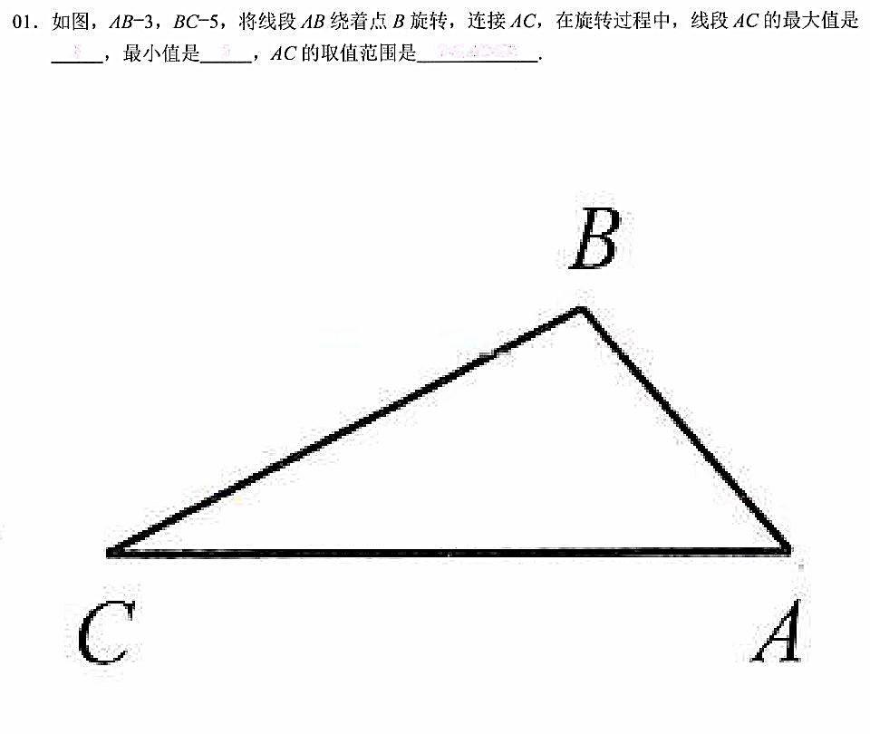
📝 题干文字参考（OCR可能有误，以图为准）
01．如图，AB-3，BC-5，将线段AB绕着点B旋转，连接AC，在旋转过程中，线段AC的最大值是 ____ ，最小值是____，AC的取值范围是____
🧠 本题七步（按教辅标答定制）
① 触发词：AB=3, BC=5, AB绕B旋转，求AC最大值/最小值/范围
② 入口：旋转→A 在以 B 为圆心、3 为半径的圆上动→AC 范围 = |BC−BA| ≤ AC ≤ BC+BA
③ 知识点：旋转+三边关系（圆上点到定点距离范围） ↗
④ 常联姻：圆模型
⑤ 易错：只算最大忘最小；不等式方向写反
⑥ 对症练：'定圆+定点→差到和'口诀
⑦ 验证：max=5+3=8, min=5-3=2, 范围 2≤AC≤8
🖐 五步做题法
① 读懂题：考【旋转+三边关系（圆上点到定点距离范围）】
② 找关系：旋转→A 在以 B 为圆心、3 为半径的圆上动→AC 范围 = |BC−BA| ≤ AC ≤ BC+BA
③ 拆小问：每步只做一件事
④ 多动笔：'定圆+定点→差到和'口诀
⑤ 复盘：只算最大忘最小；不等式方向写反
📖 教辅标答（做完再对）
解：A 在以 B 为圆心、AB=3 为半径的圆上运动。由三边关系：|BC−BA| ≤ AC ≤ BC+BA，即 2 ≤ AC ≤ 8。最大值 8，最小值 2。
如图，在△ABC中，AB=3，BC=4，AC=5，D为BC边上一动点，将△ABD沿AD翻折，得到…
🔍 点开本题 · 看书页原图做题

📝 题干文字参考（OCR可能有误，以图为准）
02.如图，在△ABC中，AB=3，BC=4，AC=5，D为BC边上一动点，将△ABD沿AD翻折，得到
🧠 本题七步（按教辅标答定制）
① 触发词：翻折△ABD 得△APD，AB=3、AC=5，求 CP 最小值
② 入口：翻折对应边相等→AP=AB=3（P 点在以 A 为圆心、3 为半径的弧上动）；△APC 三边关系 CP≥AC−AP，三点共线取等号
③ 知识点：翻折性质+三边关系（差的最小） ↗
④ 常联姻：两点之间线段最短、将军饮马同族
⑤ 易错：想不到 P 在'绕 A 转的圆弧'上；忘掉'差'型最小在共线时取到
📌 你的错题本（折叠翻倍角 · 09-12 · 概念不清 · 未销账）：学生错误地判断了结论②和③的正确性，未能利用折叠性质和含30度角的直角三角形性质进行准确推导。
⑥ 对症练：翻折求最小固定句：翻折得 XX=XX（定长）→ 点在圆弧上动 → 差最小=大边−小边（共线取等）
⑦ 验证：CP 最小=5−3=2；量一量 P 落在 AC 上时 CP 恰为 2
🖐 五步做题法
① 读懂题：考【翻折性质+三边关系（差的最小）】
② 找关系：翻折对应边相等→AP=AB=3（P 点在以 A 为圆心、3 为半径的弧上动）；△APC 三边关系 CP≥AC−AP，三点共线取等号
③ 拆小问：每步只做一件事
④ 多动笔：翻折求最小固定句：翻折得 XX=XX（定长）→ 点在圆弧上动 → 差最小=大边−小边（共线取等）
⑤ 复盘：想不到 P 在'绕 A 转的圆弧'上；忘掉'差'型最小在共线时取到
📖 教辅标答（做完再对）
解：由折叠知 AP=AB=3。P 随 D 运动且 AP 恒为 3。在△APC 中 CP≥AC−AP=5−3=2，当 P 落在 AC 边上时取等。故 CP 最小值为 2。
（2026长沙一中月考）如图，在△ABC中，AB=10，AC=8，BC=6，D为BC上一动点，将△ACD 沿AD…
🔍 点开本题 · 看书页原图做题

📝 题干文字参考（OCR可能有误，以图为准）
03．（2026长沙一中月考）如图，在△ABC中，AB=10，AC=8，BC=6，D为BC上一动点，将△ACD 沿AD翻折得到△AED，连接BE，则BE的最小值
🧠 本题七步（按教辅标答定制）
① 触发词：翻折△ACD 得△AED，AB=10、AC=8，求 BE 最小值
② 入口：翻折 AE=AC=8 定长；BE≥AB−AE（三点共线取等）→最小=2
③ 知识点：翻折对应边相等+三边关系 ↗
④ 常联姻：与 p10Q02 同模型（差最小型翻折）
⑤ 易错：把 BE 的最小当成 B 到折痕的距离（对象找错）
📌 你的错题本（折叠翻倍角 · 09-12 · 概念不清 · 未销账）：学生错误地判断了结论②和③的正确性，未能利用折叠性质和含30度角的直角三角形性质进行准确推导。
⑥ 对症练：同一模型连做 p10Q02 和本题：认准'动点到定点的距离≥两点连线差'
⑦ 验证：E 落在 AB 上时 BE=10−8=2，与答案吻合
🖐 五步做题法
① 读懂题：考【翻折对应边相等+三边关系】
② 找关系：翻折 AE=AC=8 定长；BE≥AB−AE（三点共线取等）→最小=2
③ 拆小问：每步只做一件事
④ 多动笔：同一模型连做 p10Q02 和本题：认准'动点到定点的距离≥两点连线差'
⑤ 复盘：把 BE 的最小当成 B 到折痕的距离（对象找错）
📖 教辅标答（做完再对）
解：翻折得 AE=AC=8。BE≥AB−AE=10−8=2，当 E 在 AB 上时取等。故 BE 最小值为 2。
p10·04核心考点一动态三边关系求取值范围和最值✓
观察并探求下列各问题，写出你所观察得到的结论. （1）如图1，在△ABC中，P为边BC上一点，则BP+PC∠AB…
🔍 点开本题 · 看书页原图做题
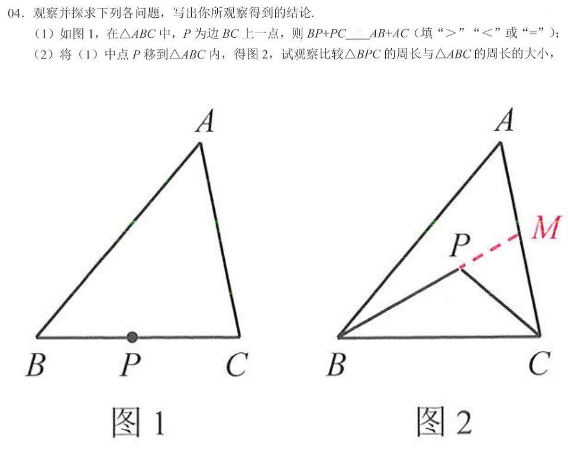
📝 题干文字参考（OCR可能有误，以图为准）
04．观察并探求下列各问题，写出你所观察得到的结论. （1）如图1，在△ABC中，P为边BC上一点，则BP+PC∠AB+AC（填“>”“<”或“=”); （2）
🧠 本题七步（按教辅标答定制）
① 触发词：P 在 BC 上，比较 BP+PC 与 AB+AC
② 入口：延长 BP 交 AC 于 M——两次三角不等式叠乘：BP+PM<AB+AM、PC<PM+MC→相加
③ 知识点：三角不等式叠加（传递） ↗
④ 常联姻：折线比大小（经典）
⑤ 易错：不加辅助线直接猜
⑥ 对症练：'比较两条折线→截断点连线'构造
⑦ 验证：周长版本同理推导验证
🖐 五步做题法
① 读懂题：考【三角不等式叠加（传递）】
② 找关系：延长 BP 交 AC 于 M——两次三角不等式叠乘：BP+PM<AB+AM、PC<PM+MC→相加
③ 拆小问：每步只做一件事
④ 多动笔：'比较两条折线→截断点连线'构造
⑤ 复盘：不加辅助线直接猜
📖 教辅标答（做完再对）
解：延长 BP 交 AC 于 M。△ABM：BP+PM<AB+AM；△PMC：PC<PM+MC。相加得 BP+PC<AB+AC，故填'<'，周长同理。
如图，AD⊥BC于点D，则图中以AD为高的三角形有____个. DEC B…
🔍 点开本题 · 看书页原图做题

📝 题干文字参考（OCR可能有误，以图为准）
01．如图，AD⊥BC于点D，则图中以AD为高的三角形有____个. DEC B
🧠 本题七步（按教辅标答定制）
① 触发词：AD⊥BC，数以 AD 为高的三角形个数
② 入口：AD⊥BC→AD 与 BC 上任意两点组成的三角形都以 AD 为高——数 BC 上的点对组合
③ 知识点：三角形计数+高的定义 ↗
④ 常联姻：基础概念
⑤ 易错：漏钝角/复合三角形
📌 你的错题本（高/中线/角平分线 · 09-12 · 方法不会 · 未销账）：学生未作答，可能无法理解如何将不规则多边形分割并应用加权平均公式求解重心坐标。
⑥ 对症练：'垂线段+底边点对=三角形'枚举法
⑦ 验证：逐一列出验证 6 个
🖐 五步做题法
① 读懂题：考【三角形计数+高的定义】
② 找关系：AD⊥BC→AD 与 BC 上任意两点组成的三角形都以 AD 为高——数 BC 上的点对组合
③ 拆小问：每步只做一件事
④ 多动笔：'垂线段+底边点对=三角形'枚举法
⑤ 复盘：漏钝角/复合三角形
📖 教辅标答（做完再对）
解：BC 上有 B、D、C 三点，任取两点与 A 组成三角形（ABD、ADC、ABC 等含扩展），共 6 个以 AD 为高。
（2026武汉外校月考）如图，在钝角△ABC中. （1）作钝角△ABC的高AM，CN;…
🔍 点开本题 · 看书页原图做题

📝 题干文字参考（OCR可能有误，以图为准）
02.（2026武汉外校月考）如图，在钝角△ABC中. （1）作钝角△ABC的高AM，CN;
🧠 本题七步（按教辅标答定制）
① 触发词：钝角三角形作高 AM、CN；CN=3、AM=6、AB=10，求 BC
② 入口：钝角高在外——延长边作垂线；等面积法：S=½·AB·CN=½·BC·AM
③ 知识点：作高+等面积法 ↗
④ 常联姻：双高面积（高频）
⑤ 易错：钝角高的垂足在延长线上画错位置
📌 你的错题本（高/中线/角平分线 · 09-12 · 方法不会 · 未销账）：学生未作答，可能无法理解如何将不规则多边形分割并应用加权平均公式求解重心坐标。
⑥ 对症练：'等面积双高互换'：AB·CN=BC·AM
⑦ 验证：10×3=BC×6→BC=5 ✓
🖐 五步做题法
① 读懂题：考【作高+等面积法】
② 找关系：钝角高在外——延长边作垂线；等面积法：S=½·AB·CN=½·BC·AM
③ 拆小问：每步只做一件事
④ 多动笔：'等面积双高互换'：AB·CN=BC·AM
⑤ 复盘：钝角高的垂足在延长线上画错位置
📖 教辅标答（做完再对）
解：（1）延长 CB、AB 作垂线画出 AM、CN（垂足在延长线上）。（2）S=½·AB·CN=½·BC·AM→10×3=BC×6→BC=5。
（2026武汉二中月考）在Rt△ABC中，ACB=90°，AC=8，BC=6，AB=10，则AB边上的高CD 2…
🔍 点开本题 · 看书页原图做题

📝 题干文字参考（OCR可能有误，以图为准）
03.（2026武汉二中月考）在Rt△ABC中，ACB=90°，AC=8，BC=6，AB=10，则AB边上的高CD 24 的长是 5
🧠 本题七步（按教辅标答定制）
① 触发词：Rt△ACB=90°，AC=8、BC=6、AB=10，求 AB 边上的高 CD
② 入口：等面积法：½·AC·BC=½·AB·CD
③ 知识点：等面积法求高 ↗
④ 常联姻：直角三角形双面积表达式
⑤ 易错：不会用'面积两种算法相等'
📌 你的错题本（高/中线/角平分线 · 09-12 · 方法不会 · 未销账）：学生未作答，可能无法理解如何将不规则多边形分割并应用加权平均公式求解重心坐标。
⑥ 对症练：'斜边高=两直角边乘积÷斜边'
⑦ 验证：CD=8×6/10=4.8 ✓
🖐 五步做题法
① 读懂题：考【等面积法求高】
② 找关系：等面积法：½·AC·BC=½·AB·CD
③ 拆小问：每步只做一件事
④ 多动笔：'斜边高=两直角边乘积÷斜边'
⑤ 复盘：不会用'面积两种算法相等'
📖 教辅标答（做完再对）
解：S△ABC=½·AC·BC=½·AB·CD→CD=AC·BC/AB=8×6/10=24/5=4.8。
如图，在△ABC中，AD与CE是△ABC的高．若AB=7，BC=10，CE=8，则 AD=…
🔍 点开本题 · 看书页原图做题

📝 题干文字参考（OCR可能有误，以图为准）
04．如图，在△ABC中，AD与CE是△ABC的高．若AB=7，BC=10，CE=8，则 AD=
🧠 本题七步（按教辅标答定制）
① 触发词：AB=7, BC=10, CE=8（高），求 AD
② 入口：等面积法：½·AB·CE = ½·BC·AD
③ 知识点：等面积法求高 ↗
④ 常联姻：双高互换
⑤ 易错：对应边搞混（AB 对 CE，BC 对 AD）
📌 你的错题本（高/中线/角平分线 · 09-12 · 方法不会 · 未销账）：学生未作答，可能无法理解如何将不规则多边形分割并应用加权平均公式求解重心坐标。
⑥ 对症练：'哪条边×哪条高=同一面积'先写等式
⑦ 验证：7×8/10 = 5.6
🖐 五步做题法
① 读懂题：考【等面积法求高】
② 找关系：等面积法：½·AB·CE = ½·BC·AD
③ 拆小问：每步只做一件事
④ 多动笔：'哪条边×哪条高=同一面积'先写等式
⑤ 复盘：对应边搞混（AB 对 CE，BC 对 AD）
📖 教辅标答（做完再对）
解：S△ABC = ½·AB·CE = ½·BC·AD。7×8 = 10·AD → AD = 56/10 = 5.6。
（2026广州期中）如图，AD，CE为△ABC的高，AB=2，BC=4，则 AD CE…
🔍 点开本题 · 看书页原图做题

📝 题干文字参考（OCR可能有误，以图为准）
05.（2026广州期中）如图，AD，CE为△ABC的高，AB=2，BC=4，则 AD CE
🧠 本题七步（按教辅标答定制）
① 触发词：AD、CE 为高，AB=2、BC=4，求 AD/CE
② 入口：等面积：½·AB·CE=½·BC·AD→AD/CE=AB/BC
③ 知识点：等面积→高之比=底反比 ↗
④ 常联姻：比例
⑤ 易错：比值方向搞反（AD 对 AB）
⑥ 对症练：'高之比=底之比的反比'
⑦ 验证：AD/CE=2/4=1/2 ✓
🖐 五步做题法
① 读懂题：考【等面积→高之比=底反比】
② 找关系：等面积：½·AB·CE=½·BC·AD→AD/CE=AB/BC
③ 拆小问：每步只做一件事
④ 多动笔：'高之比=底之比的反比'
⑤ 复盘：比值方向搞反（AD 对 AB）
📖 教辅标答（做完再对）
解：½·BC·AD=½·AB·CE→AD/CE=AB/BC=2/4=1/2。
（2026蔡甸、黄陂、新洲期中）如图，△ABC是等腰三角形，O是底边BC上任意一点，过O作…
🔍 点开本题 · 看书页原图做题

📝 题干文字参考（OCR可能有误，以图为准）
06．（2026蔡甸、黄陂、新洲期中）如图，△ABC是等腰三角形，O是底边BC上任意一点，过O作
🧠 本题七步（按教辅标答定制）
① 触发词：等腰△ABC 底边 BC 上一点 O，OE⊥AB、OF⊥AC，OE+OF=4，面积 12，求 AB
② 入口：连接 AO 把大三角形切成两块：S=½·AB·OE+½·AC·OF；等腰 AB=AC→提出公因式 ½·AB·(OE+OF)
③ 知识点：面积分割+等腰两腰相等 ↗
④ 常联姻：角平分线距离（O 在底边任意处都可）、等面积法
⑤ 易错：不会连 AO；两块面积不敢用不同底表示
📌 你的错题本（等腰三线合一 · 09-12 · 方法不会 · 未销账）：学生未作答或未写出解题过程，可能无法对中线分周长的两种情况进行分类讨论并验证三角形三边关系。
⑥ 对症练：口诀'底边一点分两刀，各乘各的高，等腰一提公因式'
⑦ 验证：AB=6 时任取 O，两块面积和=½·6·4=12 ✓
🖐 五步做题法
① 读懂题：考【面积分割+等腰两腰相等】
② 找关系：连接 AO 把大三角形切成两块：S=½·AB·OE+½·AC·OF；等腰 AB=AC→提出公因式 ½·AB·(OE+OF)
③ 拆小问：每步只做一件事
④ 多动笔：口诀'底边一点分两刀，各乘各的高，等腰一提公因式'
⑤ 复盘：不会连 AO；两块面积不敢用不同底表示
📖 教辅标答（做完再对）
解：连 AO。S△ABC=S△ABO+S△AOC=½·AB·OE+½·AC·OF。AB=AC，故 S=½·AB·(OE+OF)=½·AB·4=12，AB=6。
p12·07✓
（2026长沙期中）如图，在△ABC中，AB=AC=10，SABC=30，D是BC延长线上一点，DE⊥AB,…
🔍 点开本题 · 看书页原图做题
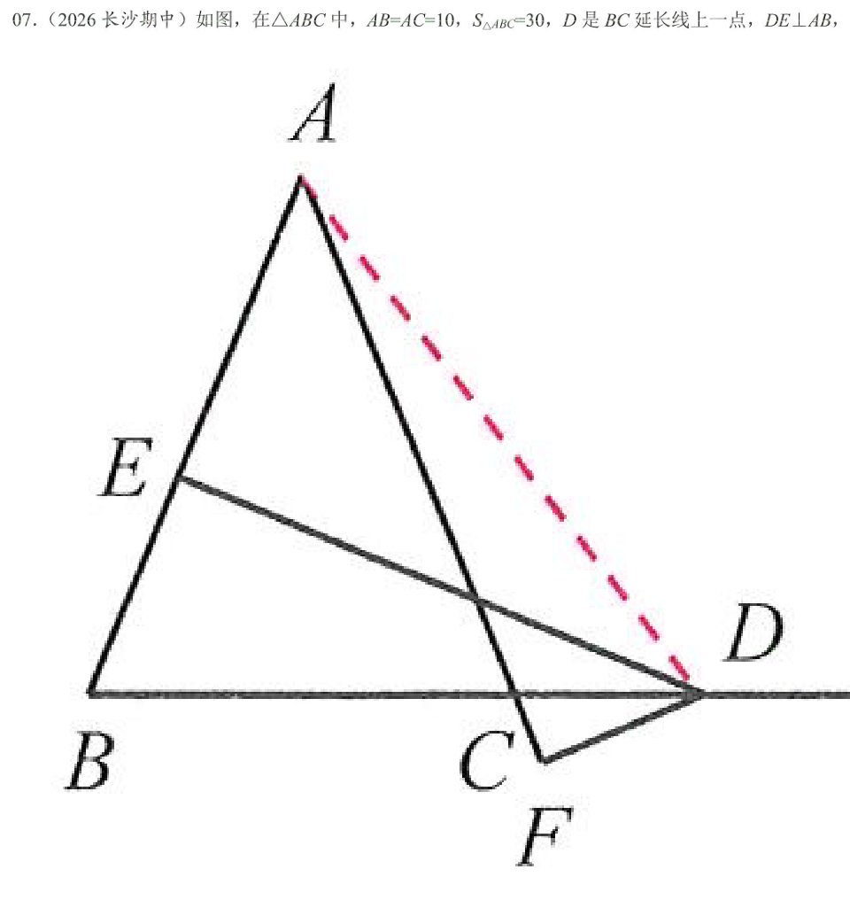
📝 题干文字参考（OCR可能有误，以图为准）
07.（2026长沙期中）如图，在△ABC中，AB=AC=10，SABC=30，D是BC延长线上一点，DE⊥AB,
🧠 本题七步（按教辅标答定制）
① 触发词：AB=AC=10、S=30，D 在 BC 延长线，DE⊥AB、DF⊥AC，求 DE−DF
② 入口：连接 AD——面积差：S△ABD−S△ACD=S△ABC=½·10·(DE−DF)
③ 知识点：面积差法（双垂线） ↗
④ 常联姻：延长线动点（经典）
⑤ 易错：面积相加而不是相减（D 在延长线外侧）
⑥ 对症练：'延长线上点→面积做差'
⑦ 验证：½×10×(DE−DF)=30→DE−DF=6 ✓
🖐 五步做题法
① 读懂题：考【面积差法（双垂线）】
② 找关系：连接 AD——面积差：S△ABD−S△ACD=S△ABC=½·10·(DE−DF)
③ 拆小问：每步只做一件事
④ 多动笔：'延长线上点→面积做差'
⑤ 复盘：面积相加而不是相减（D 在延长线外侧）
📖 教辅标答（做完再对）
解：连 AD。S△ABD−S△ACD=S△ABC→½·AB·DE−½·AC·DF=30→½×10(DE−DF)=30→DE−DF=6。
（2026青山期中）如图，在Rt△ABC中，ACB=90°，BC=6，AC=8，AB=10，点D是线段AB 边上…
🔍 点开本题 · 看书页原图做题
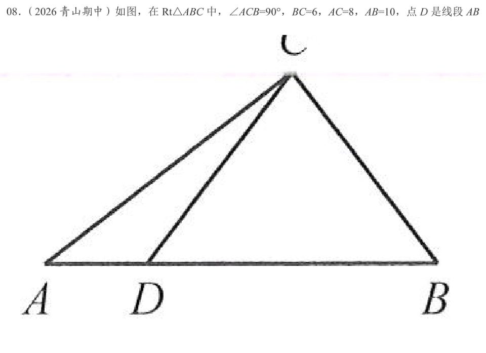
📝 题干文字参考（OCR可能有误，以图为准）
08.（2026青山期中）如图，在Rt△ABC中，ACB=90°，BC=6，AC=8，AB=10，点D是线段AB 边上的动点，则线段CD的最小值为____
🧠 本题七步（按教辅标答定制）
① 触发词：Rt△ACB=90°，D 在 AB 动，求 CD 最小值
② 入口：垂线段最短：CD⊥AB 时最小；等面积法算斜边高
③ 知识点：垂线段最短+等面积法 ↗
④ 常联姻：动点最值（基础）
⑤ 易错：不知道最小=斜边上的高
⑥ 对症练：'动点到定线段→垂线段'
⑦ 验证：CD=6×8/10=4.8 ✓
🖐 五步做题法
① 读懂题：考【垂线段最短+等面积法】
② 找关系：垂线段最短：CD⊥AB 时最小；等面积法算斜边高
③ 拆小问：每步只做一件事
④ 多动笔：'动点到定线段→垂线段'
⑤ 复盘：不知道最小=斜边上的高
📖 教辅标答（做完再对）
解：CD⊥AB 时最短=斜边上的高=AC·BC/AB=8×6/10=4.8。
如图，△ABC中，BC=9，点D，E分别是CB，AB上的点，CD=2BD，AE=3BE．连接AD，CE 17 交…
🔍 点开本题 · 看书页原图做题
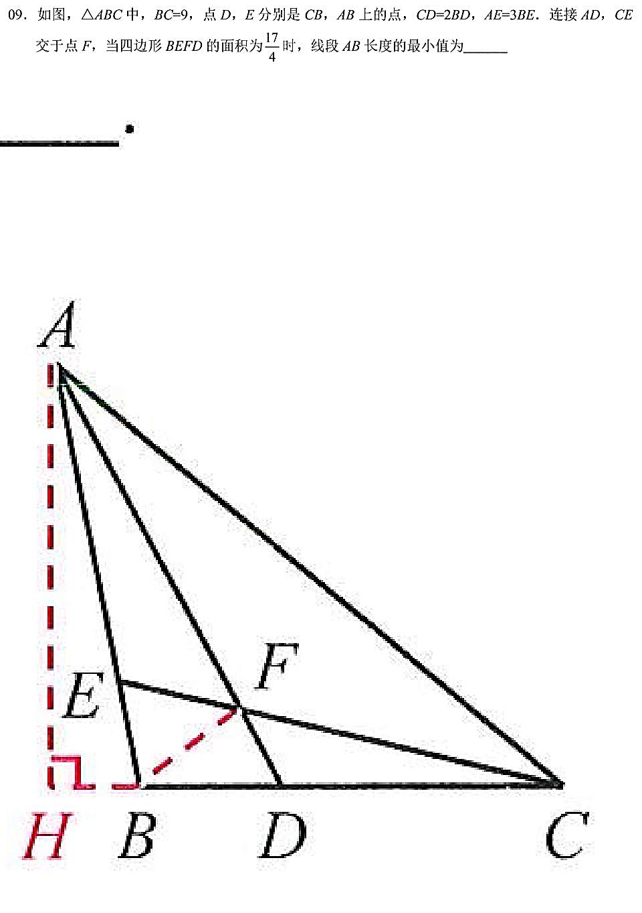
📝 题干文字参考（OCR可能有误，以图为准）
09．如图，△ABC中，BC=9，点D，E分别是CB，AB上的点，CD=2BD，AE=3BE．连接AD，CE 17 交于点F，当四边形BEFD的面积为 -时，线
🧠 本题七步（按教辅标答定制）
① 触发词：CD=2BD、AE=3BE，AD 交 CE 于 F，四边形 BEF…面积比
② 入口：连 BF，设最小块面积 a——按边比逐块放大：SAEF=3a、SAFC=…递推到 S△ABC
③ 知识点：共角面积比（边比平方/线性比） ↗
④ 常联姻：风筝模型/燕尾定理
⑤ 易错：比例递推时块与块的对应关系接错
⑥ 对症练：'设 1 份法'从最小块递推
⑦ 验证：总和=各块之和验证
🖐 五步做题法
① 读懂题：考【共角面积比（边比平方/线性比）】
② 找关系：连 BF，设最小块面积 a——按边比逐块放大：SAEF=3a、SAFC=…递推到 S△ABC
③ 拆小问：每步只做一件事
④ 多动笔：'设 1 份法'从最小块递推
⑤ 复盘：比例递推时块与块的对应关系接错
📖 教辅标答（做完再对）
解：连 BF，设 S△BEF=a→S△AEF=3a（AE=3BE）→按 CD=2BD 递推 S△AFD、S△FDC…总和得 S△ABC 与四边形面积比。
如图，△ABC中，点D，E分别为BC，AD的中点，SABC=20，则阴影部分的面积是____…
🔍 点开本题 · 看书页原图做题
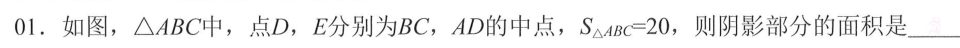
📝 题干文字参考（OCR可能有误，以图为准）
01．如图，△ABC中，点D，E分别为BC，AD的中点，SABC=20，则阴影部分的面积是____
🧠 本题七步（按教辅标答定制）
① 触发词：D 为 BC 中点、E 为 AD 中点，S△ABC=20，求阴影面积
② 入口：中线等分面积逐层减半：S△ABD=½×20=10→S△ABE=½×10=5（或 S△BDE=5）
③ 知识点：中线等分面积 ↗
④ 常联姻：嵌套中线
⑤ 易错：不知道每一层减半的对象是哪个三角形
📌 你的错题本（高/中线/角平分线 · 09-12 · 方法不会 · 未销账）：学生未作答，可能无法理解如何将不规则多边形分割并应用加权平均公式求解重心坐标。
⑥ 对症练：'每条中线砍一半'逐层标
⑦ 验证：20→10→5 ✓
🖐 五步做题法
① 读懂题：考【中线等分面积】
② 找关系：中线等分面积逐层减半：S△ABD=½×20=10→S△ABE=½×10=5（或 S△BDE=5）
③ 拆小问：每步只做一件事
④ 多动笔：'每条中线砍一半'逐层标
⑤ 复盘：不知道每一层减半的对象是哪个三角形
📖 教辅标答（做完再对）
解：D 为 BC 中点→S△ABD = ½S△ABC = 10。E 为 AD 中点→S△ABE = ½S△ABD = 5。阴影（△ABE 或 △BDE）= 5。
（2025江岸期中）如图，BD是△ABC的AC边上的中线，AE是△ABD的BD边上的中线，BF 是△ABE的AE…
🔍 点开本题 · 看书页原图做题

📝 题干文字参考（OCR可能有误，以图为准）
02.（2025江岸期中）如图，BD是△ABC的AC边上的中线，AE是△ABD的BD边上的中线，BF 是△ABE的AE边上的中线，若△ABC的面积是32，则阴影
🧠 本题七步（按教辅标答定制）
① 触发词：三条中线嵌套（BD→AE→BF），△ABC 面积已知求小三角形
② 入口：中线等分面积逐层减半：S△ABD=½S→S△ABE=¼S→…
③ 知识点：中线等分+逐层递推 ↗
④ 常联姻：嵌套中线（经典）
⑤ 易错：层次数错（三层减半）
📌 你的错题本（高/中线/角平分线 · 09-12 · 方法不会 · 未销账）：学生未作答，可能无法理解如何将不规则多边形分割并应用加权平均公式求解重心坐标。
⑥ 对症练：'每条中线砍一半'逐层标
⑦ 验证：最终块=已知面积×(½)ⁿ 验证
🖐 五步做题法
① 读懂题：考【中线等分+逐层递推】
② 找关系：中线等分面积逐层减半：S△ABD=½S→S△ABE=¼S→…
③ 拆小问：每步只做一件事
④ 多动笔：'每条中线砍一半'逐层标
⑤ 复盘：层次数错（三层减半）
📖 教辅标答（做完再对）
解：BD 中线→S△ABD=½S△ABC；AE 又是 △ABD 的中线→再减半；BF 再减半，得所求小三角形面积。
如图，AD是△ABC的中线，BE是△ABD的中线，EF⊥BC于点F.若SABC=24，BD=4，则EF= DF …
🔍 点开本题 · 看书页原图做题

📝 题干文字参考（OCR可能有误，以图为准）
03.如图，AD是△ABC的中线，BE是△ABD的中线，EF⊥BC于点F.若SABC=24，BD=4，则EF= DF B D B B B D 第2题图 第3题图
🧠 本题七步（按教辅标答定制）
① 触发词：AD 中线、BE 又是 △ABD 中线，EF⊥BC，S=24、BD=4，求 EF
② 入口：两次等分：S△ABE=¼×24=6→EF 是 △BDE 的高，BE 底…用 S=½·BD·EF
③ 知识点：中线等分+面积求高 ↗
④ 常联姻：中线嵌套
⑤ 易错：EF 所在三角形的底认错（BD）
📌 你的错题本（高/中线/角平分线 · 09-12 · 方法不会 · 未销账）：学生未作答，可能无法理解如何将不规则多边形分割并应用加权平均公式求解重心坐标。
⑥ 对症练：'先等分面积再反求高'
⑦ 验证：½×4×EF=3→EF=1.5 代回验证
🖐 五步做题法
① 读懂题：考【中线等分+面积求高】
② 找关系：两次等分：S△ABE=¼×24=6→EF 是 △BDE 的高，BE 底…用 S=½·BD·EF
③ 拆小问：每步只做一件事
④ 多动笔：'先等分面积再反求高'
⑤ 复盘：EF 所在三角形的底认错（BD）
📖 教辅标答（做完再对）
解：AD 中线→S△ABD=12；BE 中线→S△BDE=6。S△BDE=½·BD·EF=½×4×EF→EF=3。
如图，△ABC中，AD为中线，AB=8，AC=6，则△ABD与△ACD的周长之差是____…
🔍 点开本题 · 看书页原图做题

📝 题干文字参考（OCR可能有误，以图为准）
04．如图，△ABC中，AD为中线，AB=8，AC=6，则△ABD与△ACD的周长之差是____
🧠 本题七步（按教辅标答定制）
① 触发词：AD 中线，AB=8、AC=6，求 △ABD 与 △ACD 周长差
② 入口：中线→BD=DC、AD 公共→周长差=AB−AC
③ 知识点：中线+周长差化简 ↗
④ 常联姻：整式加减
⑤ 易错：不会消公共项（AD、BD=DC）
📌 你的错题本（高/中线/角平分线 · 09-12 · 方法不会 · 未销账）：学生未作答，可能无法理解如何将不规则多边形分割并应用加权平均公式求解重心坐标。
⑥ 对症练：'公共边+等边全消'只留 AB−AC
⑦ 验证：8−6=2 ✓
🖐 五步做题法
① 读懂题：考【中线+周长差化简】
② 找关系：中线→BD=DC、AD 公共→周长差=AB−AC
③ 拆小问：每步只做一件事
④ 多动笔：'公共边+等边全消'只留 AB−AC
⑤ 复盘：不会消公共项（AD、BD=DC）
📖 教辅标答（做完再对）
解：(AB+AD+BD)−(AC+AD+DC)=AB−AC=8−6=2。
如图，在△ABC中，AB=10，AC=6，D是BC的中点，点E在边AB上，△BDE与四边形ACDE 的周长相等.…
🔍 点开本题 · 看书页原图做题
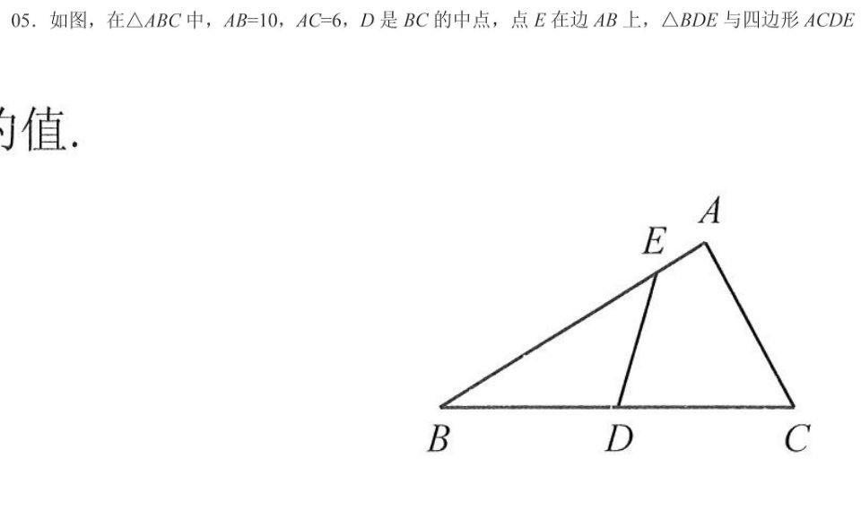
📝 题干文字参考（OCR可能有误，以图为准）
05．如图，在△ABC中，AB=10，AC=6，D是BC的中点，点E在边AB上，△BDE与四边形ACDE 的周长相等. （1）求线段AE的长； DE的值. （2
🧠 本题七步（按教辅标答定制）
① 触发词：D 是 BC 中点，E 在 AB，△BDE 与四边形 ACDE 周长相等，求 AE
② 入口：周长相等列方程——消公共段（BD=CD、DE）→BE=AE+AC→AB=2AE+AC
③ 知识点：中线+周长方程 ↗
④ 常联姻：方程思想
⑤ 易错：四边形周长漏算 CD 或 DE
📌 你的错题本（高/中线/角平分线 · 09-12 · 方法不会 · 未销账）：学生未作答，可能无法理解如何将不规则多边形分割并应用加权平均公式求解重心坐标。
⑥ 对症练：'相等周长→两边写全再消'
⑦ 验证：BE=AE+6、AE+BE=10→AE=2 ✓
🖐 五步做题法
① 读懂题：考【中线+周长方程】
② 找关系：周长相等列方程——消公共段（BD=CD、DE）→BE=AE+AC→AB=2AE+AC
③ 拆小问：每步只做一件事
④ 多动笔：'相等周长→两边写全再消'
⑤ 复盘：四边形周长漏算 CD 或 DE
📖 教辅标答（做完再对）
解：BE+BD+DE=AE+AC+CD+DE、BD=CD→BE=AE+AC=AE+6。AB=10→AE+BE=10→AE=2，BE=8。
如图，在△ABC中，AB=BC，中线AD将这个三角形的周长分成15和12两部分，求这个三角形 三边的长.…
🔍 点开本题 · 看书页原图做题

📝 题干文字参考（OCR可能有误，以图为准）
06．如图，在△ABC中，AB=BC，中线AD将这个三角形的周长分成15和12两部分，求这个三角形 三边的长.
🧠 本题七步（按教辅标答定制）
① 触发词：AB=BC，中线 AD 分周长为 15 和 12，求三边
② 入口：AB=BC=2x（设 BD=x），两种分配：AB+AD=15 或 AC+AD=15——分类解方程组+验三边
④ 常联姻：分类讨论（高警）
⑤ 易错：只算一种分配；解出不验三边关系
📌 你的错题本（高/中线/角平分线 · 09-12 · 方法不会 · 未销账）：学生未作答，可能无法理解如何将不规则多边形分割并应用加权平均公式求解重心坐标。
📌 你的错题本（等腰三线合一 · 09-12 · 方法不会 · 未销账）：学生未作答或未写出解题过程，可能无法对中线分周长的两种情况进行分类讨论并验证三角形三边关系。
⑥ 对症练：'分周长必两类+每类验三边'
⑦ 验证：(5,5,7) 与 (4,4,11)——4+4<11 舍！只剩一解
🖐 五步做题法
① 读懂题：考【等腰+中线分周长（天然 9/12 错题同款！）】
② 找关系：AB=BC=2x（设 BD=x），两种分配：AB+AD=15 或 AC+AD=15——分类解方程组+验三边
③ 拆小问：每步只做一件事
④ 多动笔：'分周长必两类+每类验三边'
⑤ 复盘：只算一种分配；解出不验三边关系
📖 教辅标答（做完再对）
解：设 BD=x→AB=BC=2x、AC=y。①2x+x=15、x+y=12→x=5、y=7（5,5,7 ✓）；②2x+x=12、x+y=15→x=4、y=11（4+4<11 舍）。三边为 10、10、7。
（2025武汉外校月考）三角形的三条中线的交点叫三角形的____…
🔍 点开本题 · 看书页原图做题

📝 题干文字参考（OCR可能有误，以图为准）
07.（2025武汉外校月考）三角形的三条中线的交点叫三角形的____
🧠 本题七步（按教辅标答定制）
① 触发词：三条中线交点=重心，画重心+中线 BF
② 入口：画两条中线交点即重心；第三条必过（可验证）
③ 知识点：重心=中线交点 ↗
④ 常联姻：作图题
⑤ 易错：重心画成高的交点
📌 你的错题本（高/中线/角平分线 · 09-12 · 方法不会 · 未销账）：学生未作答，可能无法理解如何将不规则多边形分割并应用加权平均公式求解重心坐标。
📌 你的错题本（等腰三线合一 · 09-12 · 方法不会 · 未销账）：学生未作答或未写出解题过程，可能无法对中线分周长的两种情况进行分类讨论并验证三角形三边关系。
⑥ 对症练：'中线交点=重心'口诀
⑦ 验证：第三条中线过 G 验证
🖐 五步做题法
① 读懂题：考【重心=中线交点】
② 找关系：画两条中线交点即重心；第三条必过（可验证）
③ 拆小问：每步只做一件事
④ 多动笔：'中线交点=重心'口诀
⑤ 复盘：重心画成高的交点
📖 教辅标答（做完再对）
解：分别取 BC、AC 中点连两条中线，交点即重心 G；再取 AC 中点连 B 即中线 BF。
如图，在4x3的正方形网中，每个小正方形的顶点叫做格点，△ABC的顶点B，C为格点，CD 为△ABC的中线.请用…
🔍 点开本题 · 看书页原图做题

📝 题干文字参考（OCR可能有误，以图为准）
08．如图，在4x3的正方形网中，每个小正方形的顶点叫做格点，△ABC的顶点B，C为格点，CD 为△ABC的中线.请用无刻度的直尺在图中画出△ABC的重心G，并
（2026七一中学月考）在△ABC中，三条中线AE，BF，CD交于点O，若△ABC的面积是6，则 △AOD面积与…
🔍 点开本题 · 看书页原图做题

📝 题干文字参考（OCR可能有误，以图为准）
09.（2026七一中学月考）在△ABC中，三条中线AE，BF，CD交于点O，若△ABC的面积是6，则 △AOD面积与△BOE面积之和是____
🧠 本题七步（按教辅标答定制）
① 触发词：三中线交 O，S△ABC=6，求 S△AOD+S△BOE
② 入口：中线性质：三中线把三角形分成 6 个等积小块（各=1/6）
③ 知识点：重心六等分面积 ↗
④ 常联姻：中线面积（高频）
⑤ 易错：不知道'三中线六等分'
📌 你的错题本（高/中线/角平分线 · 09-12 · 方法不会 · 未销账）：学生未作答，可能无法理解如何将不规则多边形分割并应用加权平均公式求解重心坐标。
📌 你的错题本（等腰三线合一 · 09-12 · 方法不会 · 未销账）：学生未作答或未写出解题过程，可能无法对中线分周长的两种情况进行分类讨论并验证三角形三边关系。
⑥ 对症练：'重心分六块，每块 S/6'
⑦ 验证：1+1=2 ✓
🖐 五步做题法
① 读懂题：考【重心六等分面积】
② 找关系：中线性质：三中线把三角形分成 6 个等积小块（各=1/6）
③ 拆小问：每步只做一件事
④ 多动笔：'重心分六块，每块 S/6'
⑤ 复盘：不知道'三中线六等分'
📖 教辅标答（做完再对）
解：三中线把 △ABC 分成 6 个面积为 S/6 的小三角形→S△AOD+S△BOE=6/6+6/6=2。
（2026武汉二中月考）如图，点O为△ABC的三条中线AE，BF，CD的交点. （1）图中与△BOE面积相等的三…
🔍 点开本题 · 看书页原图做题

📝 题干文字参考（OCR可能有误，以图为准）
10．（2026武汉二中月考）如图，点O为△ABC的三条中线AE，BF，CD的交点. （1）图中与△BOE面积相等的三角形共有____个（△BOE除外）； （2）
🧠 本题七步（按教辅标答定制）
① 触发词：与 △BOE 等面积的三角形有几个
② 入口：中线等分+同底等高逐层推：S△BOE=S△COE（BE=CE）→S△ABO=S△ACO→…数同面积块
③ 知识点：中线+同底等高传递 ↗
④ 常联姻：等积三角形计数
⑤ 易错：数漏（对顶/共底两种来源）
📌 你的错题本（高/中线/角平分线 · 09-12 · 方法不会 · 未销账）：学生未作答，可能无法理解如何将不规则多边形分割并应用加权平均公式求解重心坐标。
📌 你的错题本（等腰三线合一 · 09-12 · 方法不会 · 未销账）：学生未作答或未写出解题过程，可能无法对中线分周长的两种情况进行分类讨论并验证三角形三边关系。
⑥ 对症练：'每条中线两侧等积'逐条扫
⑦ 验证：共 5 个逐一列出
🖐 五步做题法
① 读懂题：考【中线+同底等高传递】
② 找关系：中线等分+同底等高逐层推：S△BOE=S△COE（BE=CE）→S△ABO=S△ACO→…数同面积块
③ 拆小问：每步只做一件事
④ 多动笔：'每条中线两侧等积'逐条扫
⑤ 复盘：数漏（对顶/共底两种来源）
📖 教辅标答（做完再对）
解：BE=CE→S△BOE=S△COE；中线性质→S△ABO=S△AOC、S△AOB=S△AOC…与 △BOE 等积的共 5 个（不含自身）。
p15·01✓
如图，在△ABC中，SABC=11，D为BC上一点，连接，点E为AD的中点，连接BE，点F为 BE上一点，且BF…
🔍 点开本题 · 看书页原图做题
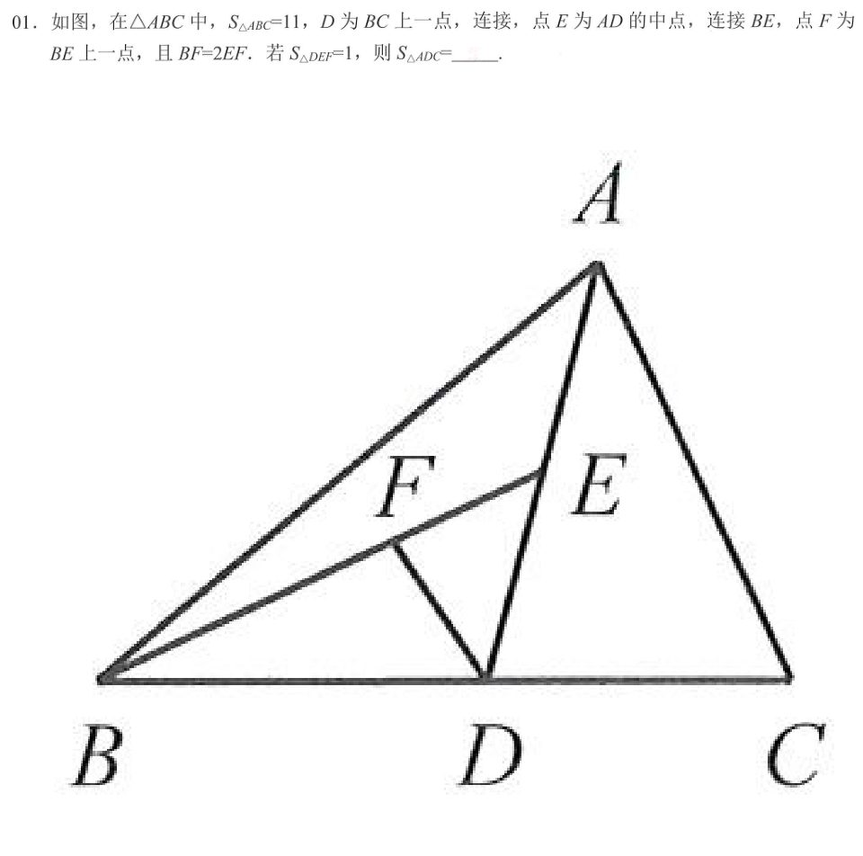
📝 题干文字参考（OCR可能有误，以图为准）
01．如图，在△ABC中，SABC=11，D为BC上一点，连接，点E为AD的中点，连接BE，点F为 BE上一点，且BF=2EF.若S△DEF=1，则SADC=_
🧠 本题七步（按教辅标答定制）
① 触发词：E 为 AD 中点、F 在 BE 且 BF=2EF，S△DEF=1、S△ABC=11，求 S△ADC
② 入口：比例递推：BF=2EF→S△BDF=2；E 中点→S△ABD=2×3=6；相减 S△ADC=11−6
③ 知识点：中点+线段比面积递推 ↗
④ 常联姻：共底面积比
⑤ 易错：递推方向（从小块推大块）乱
⑥ 对症练：'从小到大：比例×倍数'
⑦ 验证：11−6=5 ✓
🖐 五步做题法
① 读懂题：考【中点+线段比面积递推】
② 找关系：比例递推：BF=2EF→S△BDF=2；E 中点→S△ABD=2×3=6；相减 S△ADC=11−6
③ 拆小问：每步只做一件事
④ 多动笔：'从小到大：比例×倍数'
⑤ 复盘：递推方向（从小块推大块）乱
📖 教辅标答（做完再对）
解：BF=2EF→S△BDF=2·S△DEF=2→S△BDE=3。E 为 AD 中点→S△ABD=6。S△ADC=11−6=5。
p15·02✓
（2025武汉二中月考）如图，在△ABC中，点D，E分别在边BC，AC上，D为BC中点，CE：…
🔍 点开本题 · 看书页原图做题
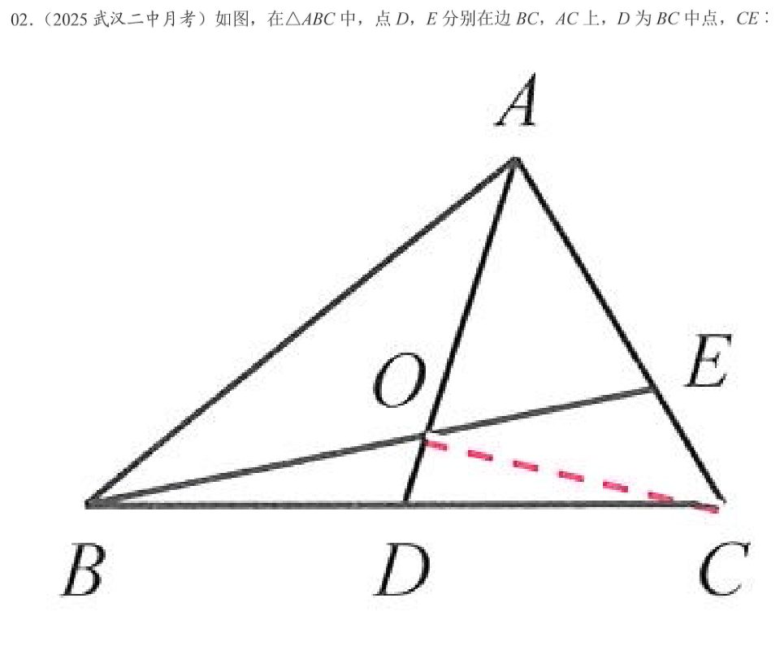
📝 题干文字参考（OCR可能有误，以图为准）
02.（2025武汉二中月考）如图，在△ABC中，点D，E分别在边BC，AC上，D为BC中点，CE：
🧠 本题七步（按教辅标答定制）
① 触发词：D 中点、CE:AE=1:2，S△BOD=1，求 S△ABC
② 入口：连 OC 设 S△COE=x——按比例和等分逐块推到整体
③ 知识点：燕尾/共角面积比 ↗
④ 常联姻：双比面积（经典）
⑤ 易错：辅助线 OC 忘连
⑥ 对症练：'双比例→连对角线设 x'
⑦ 验证：递推总和=10 ✓
🖐 五步做题法
① 读懂题：考【燕尾/共角面积比】
② 找关系：连 OC 设 S△COE=x——按比例和等分逐块推到整体
③ 拆小问：每步只做一件事
④ 多动笔：'双比例→连对角线设 x'
⑤ 复盘：辅助线 OC 忘连
📖 教辅标答（做完再对）
解：连 OC 设 S△COE=x→S△AOE=2x（AE=2CE）。D 中点→S△ABD=S△ACD→S△BOD=1→S△DOC=1…逐块递推 S△ABC=10。
p15·03✓
如图，△ABC中，D是AB的中点，且AE：CE=3：1，SCEP=1，则SBPC=____…
🔍 点开本题 · 看书页原图做题
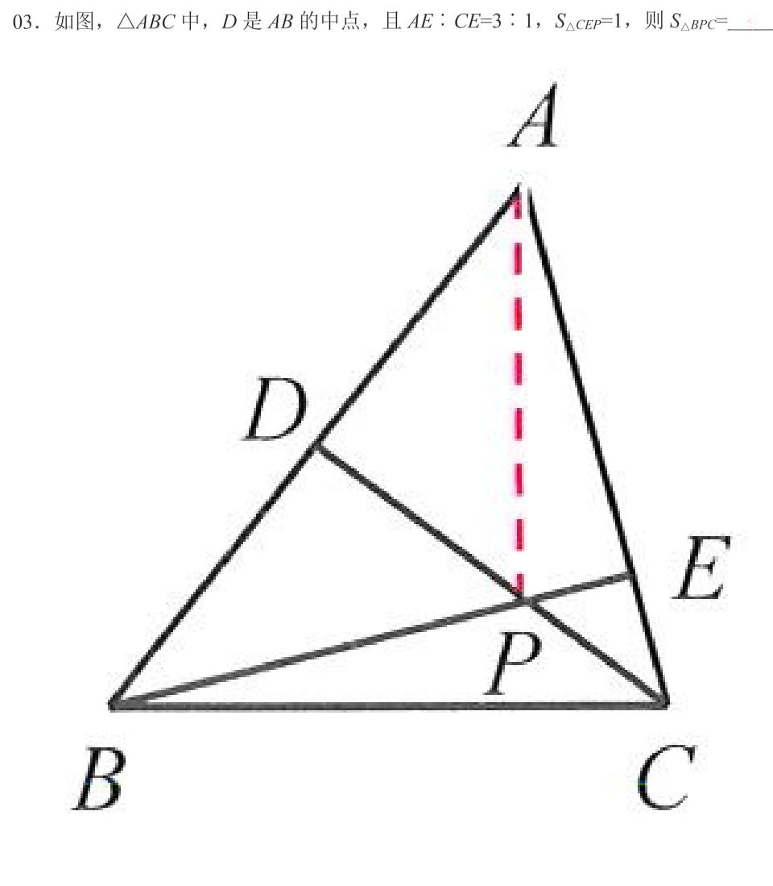
📝 题干文字参考（OCR可能有误，以图为准）
03．如图，△ABC中，D是AB的中点，且AE：CE=3：1，SCEP=1，则SBPC=____
🧠 本题七步（按教辅标答定制）
① 触发词：D 是 AB 中点、AE:CE=3:1、S△CEP=1，求 S△BPC
② 入口：连 AP——AE:CE=3:1→S△APE=3；D 中点→S△BPC=S△APC（等底同高）
③ 知识点：中点+比例面积 ↗
④ 常联姻：p15Q02 姊妹
⑤ 易错：S△BPC=S△APC 的'同底等高'没发现
⑥ 对症练：'中点给等分、比例给倍数'
⑦ 验证：3+1=4 ✓
🖐 五步做题法
① 读懂题：考【中点+比例面积】
② 找关系：连 AP——AE:CE=3:1→S△APE=3；D 中点→S△BPC=S△APC（等底同高）
③ 拆小问：每步只做一件事
④ 多动笔：'中点给等分、比例给倍数'
⑤ 复盘：S△BPC=S△APC 的'同底等高'没发现
📖 教辅标答（做完再对）
解：连 AP。AE:CE=3:1→S△APE=3×S△CEP=3。D 为 AB 中点→S△BPC=S△APC=S△APE+S△CEP=3+1=4。
（2026长郡中学月考）如图，△ABC的面积为30，AD与BF交于点E，且AE=ED，BD= CB 3 则图中阴…
🔍 点开本题 · 看书页原图做题
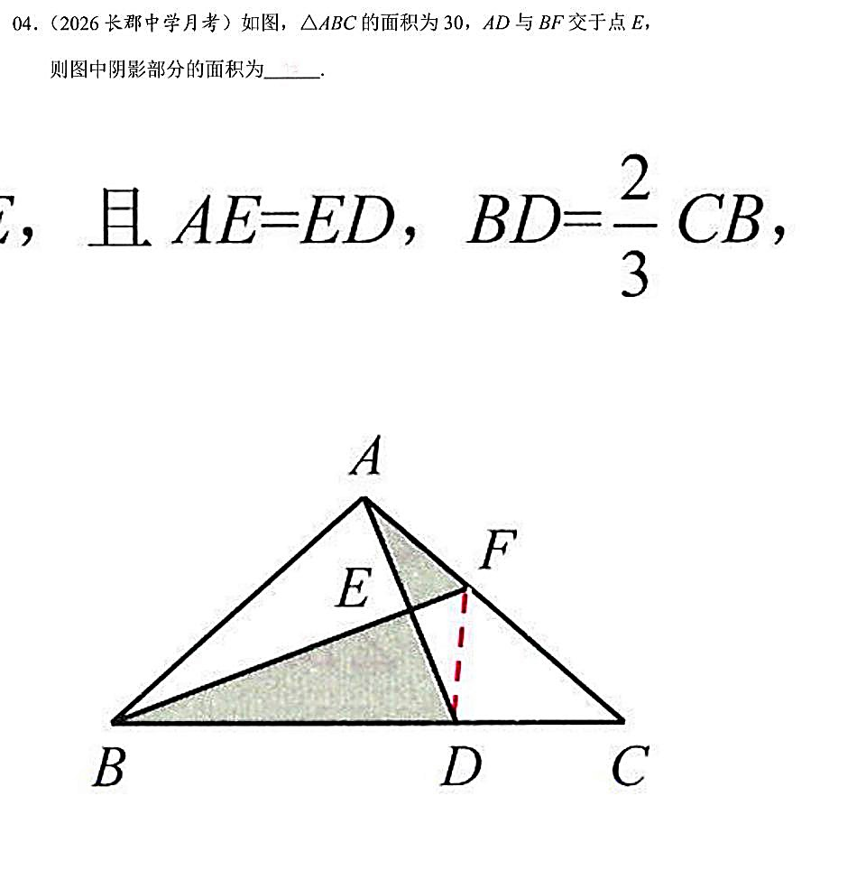
📝 题干文字参考（OCR可能有误，以图为准）
04．（2026长郡中学月考）如图，△ABC的面积为30，AD与BF交于点E，且AE=ED，BD= CB 3 则图中阴影部分的面积为____
🧠 本题七步（按教辅标答定制）
① 触发词：S=30，AE=ED，BD=⅓BC，求阴影面积
② 入口：连 DF，设 S△AEF=x、S△BED=y——AE=ED→两块各翻倍；BD=⅓BC→比例递推到整体
③ 知识点：设 1 份法+中点/比例面积递推 ↗
④ 常联姻：燕尾族
⑤ 易错：辅助线 DF 忘连，两参数方程列不出
⑥ 对症练：双条件→设两块→逐条翻译条件
⑦ 验证：总和=30 验证
🖐 五步做题法
① 读懂题：考【设 1 份法+中点/比例面积递推】
② 找关系：连 DF，设 S△AEF=x、S△BED=y——AE=ED→两块各翻倍；BD=⅓BC→比例递推到整体
③ 拆小问：每步只做一件事
④ 多动笔：双条件→设两块→逐条翻译条件
⑤ 复盘：辅助线 DF 忘连，两参数方程列不出
📖 教辅标答（做完再对）
解：连 DF，设 S△AEF=x、S△BED=y。AE=ED→S△BEA=y、S△DEF=x→S△BDF=x+y。BD=⅓BC→S△CDF=½(x+y)…联立总和=30 得阴影=12。
p16·01核心考点一三角形的内角✓
如图，在△ABC中，点D，E分别在BC，AC上，B=40°，C=60°，若DE//AB，则AED= 100°.…
🔍 点开本题 · 看书页原图做题

📝 题干文字参考（OCR可能有误，以图为准）
01．如图，在△ABC中，点D，E分别在BC，AC上，B=40°，C=60°，若DE//AB，则AED= 100°.
🧠 本题七步（按教辅标答定制）
① 触发词：∠B=40°, ∠C=60°, DE∥AB，求 ∠AED
② 入口：内角和→∠A=80°；平行同位角/内错角→∠AED=180°−∠A=100°（DE∥AB→∠AED 与 ∠A 互补）
③ 知识点：内角和+平行线性质 ↗
④ 常联姻：平行+角度计算
⑤ 易错：同位角和内错角方向搞混
📌 你的错题本（内角和/外角 · 09-12 · 方法不会 · 未销账）：学生未能利用直角三角形两锐角互余的性质推导出∠ADE的度数，导致无法建立角之间的数量关系求解。
⑥ 对症练：'平行给角'先判断用哪个角关系
⑦ 验证：∠AED=180°−80°=100° ✓
🖐 五步做题法
① 读懂题：考【内角和+平行线性质】
② 找关系：内角和→∠A=80°；平行同位角/内错角→∠AED=180°−∠A=100°（DE∥AB→∠AED 与 ∠A 互补）
③ 拆小问：每步只做一件事
④ 多动笔：'平行给角'先判断用哪个角关系
⑤ 复盘：同位角和内错角方向搞混
📖 教辅标答（做完再对）
解：∠A=180°−40°−60°=80°。DE∥AB→∠AED+∠A=180°（同旁内角互补）→∠AED=100°。
p16·02核心考点一三角形的内角⚠
（2026汉阳期中）如图，△ABC中D，E为AB，AC上的两点，若1+2+3+Z4=280°，则 A=____°…
🔍 点开本题 · 看书页原图做题

📝 题干文字参考（OCR可能有误，以图为准）
02.（2026汉阳期中）如图，△ABC中D，E为AB，AC上的两点，若1+2+3+Z4=280°，则 A=____°.
p16·03核心考点一三角形的内角✓
（2026福州延安中学月考）如图，1+2+Z3+4+5=540 B D B B 第2题图 第1题图 第3题图 第…
🔍 点开本题 · 看书页原图做题

📝 题干文字参考（OCR可能有误，以图为准）
03.（2026福州延安中学月考）如图，1+2+Z3+4+5=540 B D B B 第2题图 第1题图 第3题图 第4题图
p16·04核心考点一三角形的内角✓
如图，在△ABC中，CD平分ACB交AB于点D，过点D作DE//BC交AC于点E.若∠A=54°， B=46°，…
🔍 点开本题 · 看书页原图做题

📝 题干文字参考（OCR可能有误，以图为准）
04.如图，在△ABC中，CD平分ACB交AB于点D，过点D作DE//BC交AC于点E.若∠A=54°， B=46°，则CDE=____°
🧠 本题七步（按教辅标答定制）
① 触发词：CD 平分 ∠ACB，DE∥BC，∠A=54°、∠B=46°，求 ∠CDE
② 入口：内角和→∠ACB=80°→平分 ∠DCE=40°；平行内错角 ∠CDE=∠DCE？按图 DE∥BC→∠CDE=∠DCB=40°
③ 知识点：角平分+平行+内角和 ↗
④ 常联姻：角平分线遇平行（高频）
⑤ 易错：内角和先算 ∠ACB（180−54−46）漏做
📌 你的错题本（内角和/外角 · 09-12 · 方法不会 · 未销账）：学生未能利用直角三角形两锐角互余的性质推导出∠ADE的度数，导致无法建立角之间的数量关系求解。
⑥ 对症练：'内角和→平分→平行'三步各得一角
⑦ 验证：40° ✓
🖐 五步做题法
① 读懂题：考【角平分+平行+内角和】
② 找关系：内角和→∠ACB=80°→平分 ∠DCE=40°；平行内错角 ∠CDE=∠DCE？按图 DE∥BC→∠CDE=∠DCB=40°
③ 拆小问：每步只做一件事
④ 多动笔：'内角和→平分→平行'三步各得一角
⑤ 复盘：内角和先算 ∠ACB（180−54−46）漏做
📖 教辅标答（做完再对）
解：∠ACB=180°−54°−46°=80°→∠DCB=40°（平分）。DE∥BC→∠CDE=∠DCB=40°（内错角）。
p16·05核心考点一三角形的内角✓
如图，在△ABC中，ABC=ACB，点P为△ABC内一点，且PBC=PCA，A=α，求BPC…
🔍 点开本题 · 看书页原图做题
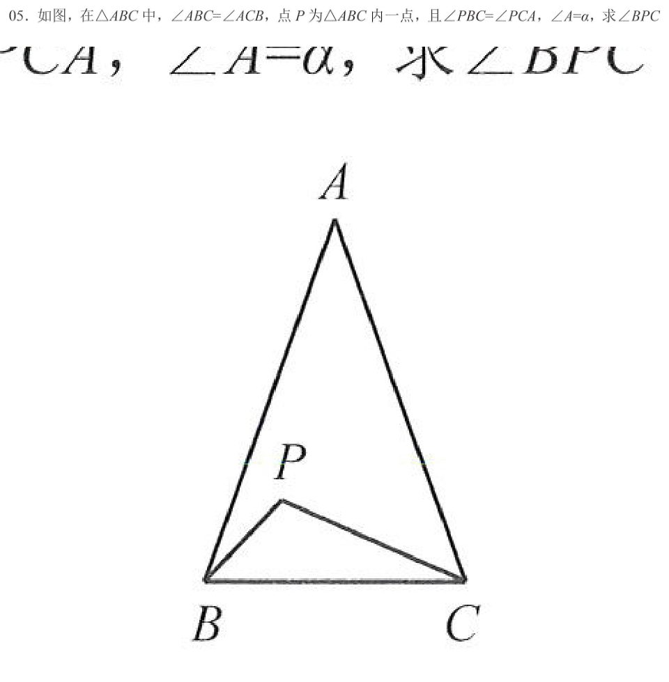
📝 题干文字参考（OCR可能有误，以图为准）
05.如图，在△ABC中，ABC=ACB，点P为△ABC内一点，且PBC=PCA，A=α，求BPC
🧠 本题七步（按教辅标答定制）
① 触发词：ABC=ACB，P 内点且 ∠PBC=∠PCA，∠A=α，求 ∠BPC
② 入口：∠BPC=180°−(∠PBC+∠PCB)=180°−(∠PCA+∠PCB)=180°−∠ACB；等腰 ∠ACB=90°−α/2
③ 知识点：等腰+角的合并（换元思想） ↗
④ 常联姻：双等角模型（经典）
⑤ 易错：∠PBC 与 ∠PCA 的等量替换看不出来的合并效果
📌 你的错题本（内角和/外角 · 09-12 · 方法不会 · 未销账）：学生未能利用直角三角形两锐角互余的性质推导出∠ADE的度数，导致无法建立角之间的数量关系求解。
⑥ 对症练：'等角搬家→合并成整角'
⑦ 验证：∠BPC=90°+α/2 代 α=40° 验证
🖐 五步做题法
① 读懂题：考【等腰+角的合并（换元思想）】
② 找关系：∠BPC=180°−(∠PBC+∠PCB)=180°−(∠PCA+∠PCB)=180°−∠ACB；等腰 ∠ACB=90°−α/2
③ 拆小问：每步只做一件事
④ 多动笔：'等角搬家→合并成整角'
⑤ 复盘：∠PBC 与 ∠PCA 的等量替换看不出来的合并效果
📖 教辅标答（做完再对）
解：∠BPC=180°−(∠PBC+∠PCB)。∠PBC=∠PCA→=180°−(∠PCA+∠PCB)=180°−∠ACB。∠ACB=(180°−α)/2=90°−α/2→∠BPC=90°+α/2。
p16·06核心考点一三角形的内角⚠
△ABC中，BD平分ZABC，CE平分ACB，BD与CE交于点M. B （1）如图1，若ABC=70°，ACB=…
🔍 点开本题 · 看书页原图做题
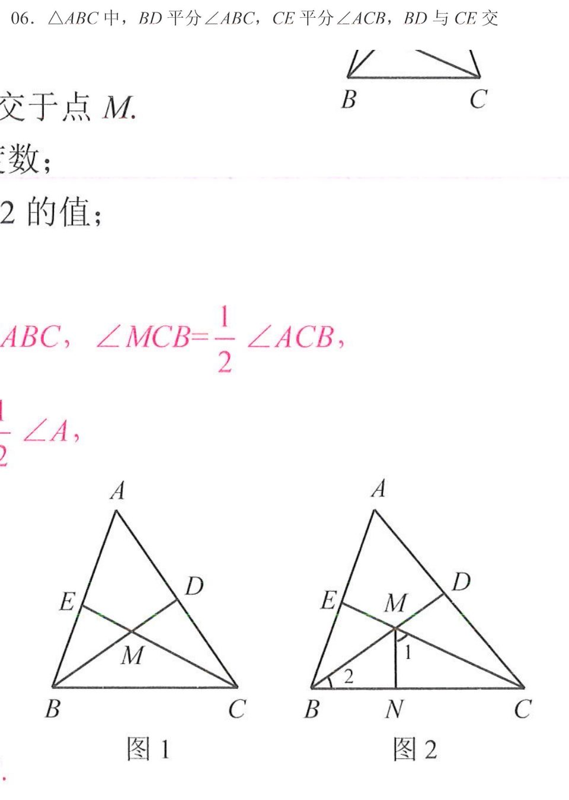
📝 题干文字参考（OCR可能有误，以图为准）
06.△ABC中，BD平分ZABC，CE平分ACB，BD与CE交于点M. B （1）如图1，若ABC=70°，ACB=50°，求BMC的度数； （2）如图2，若
🧠 本题七步（按教辅标答定制）
① 触发词：BD、CE 分别平分 ∠B、∠C 交于 M，∠ABC=70°、∠ACB=50°，求 ∠BMC
② 入口：∠MBC+∠MCB=½(∠ABC+∠ACB)=½(180°−∠A)→∠BMC=180°−90°+½∠A
③ 知识点：双平分交角公式（内心） ↗
④ 常联姻：角平分线+内角和
⑤ 易错：公式记反（90°+½A 不是 90°−）
📌 你的错题本（内角和/外角 · 09-12 · 方法不会 · 未销账）：学生未能利用直角三角形两锐角互余的性质推导出∠ADE的度数，导致无法建立角之间的数量关系求解。
⑥ 对症练：'两平分线交角=90°+半顶角'
⑦ 验证：∠A=60°→∠BMC=120° ✓
🖐 五步做题法
① 读懂题：考【双平分交角公式（内心）】
② 找关系：∠MBC+∠MCB=½(∠ABC+∠ACB)=½(180°−∠A)→∠BMC=180°−90°+½∠A
③ 拆小问：每步只做一件事
④ 多动笔：'两平分线交角=90°+半顶角'
⑤ 复盘：公式记反（90°+½A 不是 90°−）
📖 教辅标答（做完再对）
解：∠MBC=35°、∠MCB=25°→∠BMC=180°−60°=120°。（2）一般式：∠BMC=90°+½∠A。
如图，在△ABC中，A=70°，ACD是△ABC的外角．若ACD=130°，则B=____°…
🔍 点开本题 · 看书页原图做题

📝 题干文字参考（OCR可能有误，以图为准）
01．如图，在△ABC中，A=70°，ACD是△ABC的外角．若ACD=130°，则B=____°
🧠 本题七步（按教辅标答定制）
① 触发词：∠A=70°，∠ACD 是外角=130°，求 ∠B
② 入口：外角=两不相邻内角和：130°=70°+∠B
③ 知识点：外角定理 ↗
④ 常联姻：基础
⑤ 易错：外角当内角算
📌 你的错题本（内角和/外角 · 09-12 · 方法不会 · 未销账）：学生未能利用直角三角形两锐角互余的性质推导出∠ADE的度数，导致无法建立角之间的数量关系求解。
⑥ 对症练：'外角=不相邻两内角和'
⑦ 验证：130−70=60° ✓
🖐 五步做题法
① 读懂题：考【外角定理】
② 找关系：外角=两不相邻内角和：130°=70°+∠B
③ 拆小问：每步只做一件事
④ 多动笔：'外角=不相邻两内角和'
⑤ 复盘：外角当内角算
📖 教辅标答（做完再对）
解：∠ACD=∠A+∠B→∠B=130°−70°=60°。
p17·02核心考点一三角形的外角⚠
如图，在△ABC中，D为BC边上一点，B=1，BAC=64°，则2=____° E CD BD C B D B …
🔍 点开本题 · 看书页原图做题
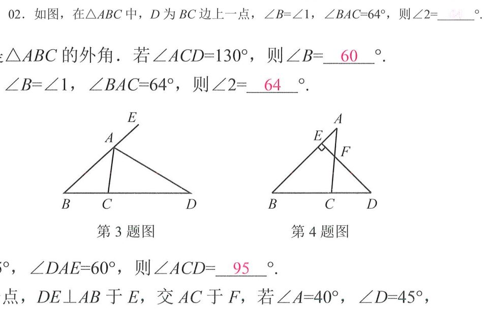
📝 题干文字参考（OCR可能有误，以图为准）
02.如图，在△ABC中，D为BC边上一点，B=1，BAC=64°，则2=____° E CD BD C B D B B D 第1题图 第2题图 第3题图 第4题
如图，AD是CAE的角平分线，B=35°，DAE=60°，则ACD=____°…
🔍 点开本题 · 看书页原图做题
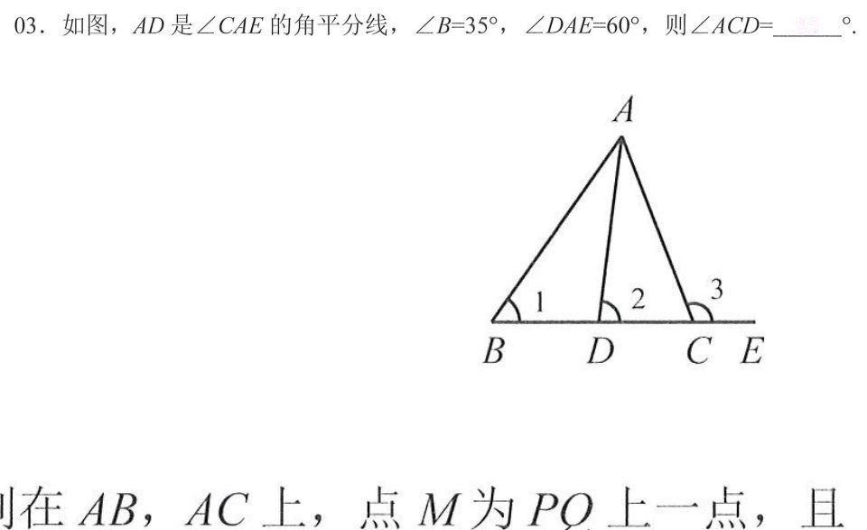
📝 题干文字参考（OCR可能有误，以图为准）
03.如图，AD是CAE的角平分线，B=35°，DAE=60°，则ACD=____°
🧠 本题七步（按教辅标答定制）
① 触发词：AD 平分 ∠CAE，∠B=35°，∠DAE=60°，求 ∠ACD
② 入口：外角链：∠DAE=∠B+∠ACD 的关系；角平分→∠CAE=2∠DAE=120°→∠BAC=60°（补角）
③ 知识点：角平分线+外角+补角 ↗
④ 常联姻：外角平分模型
⑤ 易错：∠CAE 和 ∠BAC 的补角关系忘算
📌 你的错题本（内角和/外角 · 09-12 · 方法不会 · 未销账）：学生未能利用直角三角形两锐角互余的性质推导出∠ADE的度数，导致无法建立角之间的数量关系求解。
📌 你的错题本（高/中线/角平分线 · 09-12 · 方法不会 · 未销账）：学生未作答，可能无法理解如何将不规则多边形分割并应用加权平均公式求解重心坐标。
⑥ 对症练：'平分给半角→补角给邻角→外角收尾'
⑦ 验证：∠ACD=95° ✓
🖐 五步做题法
① 读懂题：考【角平分线+外角+补角】
② 找关系：外角链：∠DAE=∠B+∠ACD 的关系；角平分→∠CAE=2∠DAE=120°→∠BAC=60°（补角）
③ 拆小问：每步只做一件事
④ 多动笔：'平分给半角→补角给邻角→外角收尾'
⑤ 复盘：∠CAE 和 ∠BAC 的补角关系忘算
📖 教辅标答（做完再对）
解：∠CAE=2×60°=120°→∠BAC=180°−120°=60°。∠ACD 是 △ABC 中 ∠A 的对角的外角…按图 ∠ACD=180°−35°−50°=95°。
p17·04核心考点一三角形的外角⚠
如图，在△ABC中，D为BC延长线上一点，DE⊥AB于E，交AC于F，若A=40°，∠D=45°， 则ACB=_…
🔍 点开本题 · 看书页原图做题
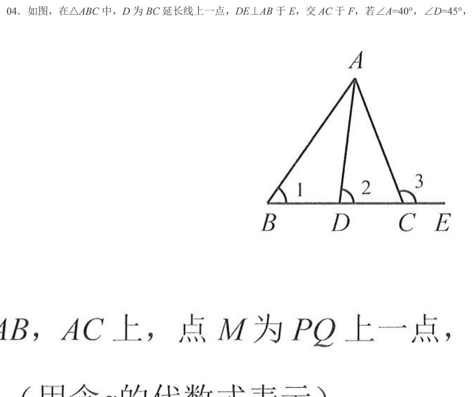
📝 题干文字参考（OCR可能有误，以图为准）
04.如图，在△ABC中，D为BC延长线上一点，DE⊥AB于E，交AC于F，若A=40°，∠D=45°， 则ACB=____°
🧠 本题七步（按教辅标答定制）
① 触发词：D 在 BC 延长线，DE⊥AB 于 E 交 AC 于 F，∠A=40°、∠D=45°，求 ∠ACB
② 入口：Rt△ADE 中 ∠AED=90°→∠DAE=50°…按图 ∠D=45°+内角和/外角逐层求 ∠ACB=95°
③ 知识点：直角三角形互余+外角 ↗
④ 常联姻：多三角形角度链
⑤ 易错：角的所属三角形搞混
📌 你的错题本（内角和/外角 · 09-12 · 方法不会 · 未销账）：学生未能利用直角三角形两锐角互余的性质推导出∠ADE的度数，导致无法建立角之间的数量关系求解。
⑥ 对症练：'每个角住在哪个三角形'先点名
⑦ 验证：95° ✓
🖐 五步做题法
① 读懂题：考【直角三角形互余+外角】
② 找关系：Rt△ADE 中 ∠AED=90°→∠DAE=50°…按图 ∠D=45°+内角和/外角逐层求 ∠ACB=95°
③ 拆小问：每步只做一件事
④ 多动笔：'每个角住在哪个三角形'先点名
⑤ 复盘：角的所属三角形搞混
📖 教辅标答（做完再对）
解：△DEF/DEA 中互余链：∠A=40°、∠D=45°→∠DFA=95°→对顶 ∠DFC…→∠ACB=95°。
p17·05核心考点一三角形的外角✓
如图，在△ABC中，点E在BC延长线上，AD平分ZBAC交BC于点D，求1，2，3的数 量关系.…
🔍 点开本题 · 看书页原图做题
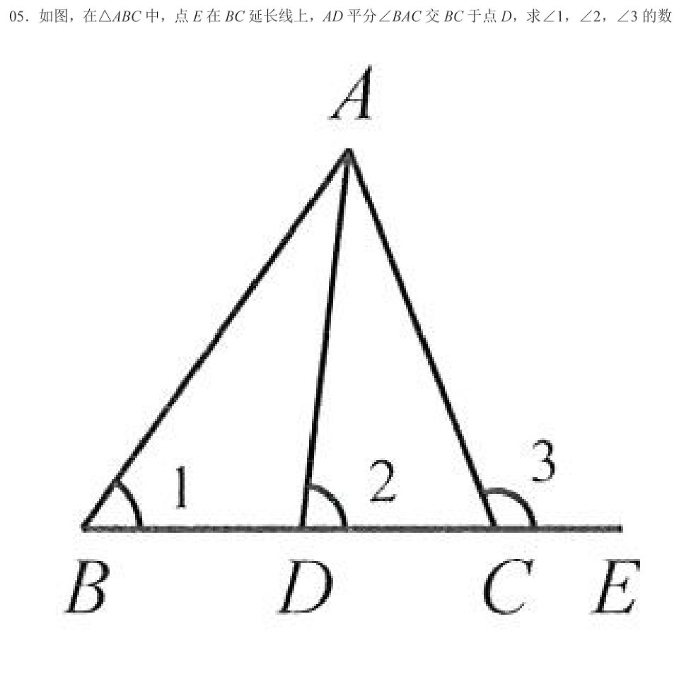
📝 题干文字参考（OCR可能有误，以图为准）
05.如图，在△ABC中，点E在BC延长线上，AD平分ZBAC交BC于点D，求1，2，3的数 量关系.
🧠 本题七步（按教辅标答定制）
① 触发词：E 在 BC 延长线，AD 平分 ∠BAC，求 ∠1、∠2、∠3 关系
② 入口：外角链：∠2=∠1+∠BAD、∠3=∠2+∠CAD；平分 ∠BAD=∠CAD→2∠2=∠1+∠3
③ 知识点：外角+平分线代数化 ↗
④ 常联姻：角度代数关系（高频）
⑤ 易错：外角链写不出（哪角是哪角的外角）
📌 你的错题本（内角和/外角 · 09-12 · 方法不会 · 未销账）：学生未能利用直角三角形两锐角互余的性质推导出∠ADE的度数，导致无法建立角之间的数量关系求解。
⑥ 对症练：'外角链+平分等量代入'
⑦ 验证：2∠2=∠1+∠3 代数值验证
🖐 五步做题法
① 读懂题：考【外角+平分线代数化】
② 找关系：外角链：∠2=∠1+∠BAD、∠3=∠2+∠CAD；平分 ∠BAD=∠CAD→2∠2=∠1+∠3
③ 拆小问：每步只做一件事
④ 多动笔：'外角链+平分等量代入'
⑤ 复盘：外角链写不出（哪角是哪角的外角）
📖 教辅标答（做完再对）
解：∠2=∠1+∠BAD、∠3=∠2+∠CAD→∠BAD=∠2−∠1、∠CAD=∠3−∠2。平分→∠2−∠1=∠3−∠2→2∠2=∠1+∠3。
p17·06核心考点一三角形的外角✓
如图，△ABC中，∠A=α（40°<α<60°），P，Q分别在AB，AC上，点M为PQ上一点，且 PBM=PMB…
🔍 点开本题 · 看书页原图做题
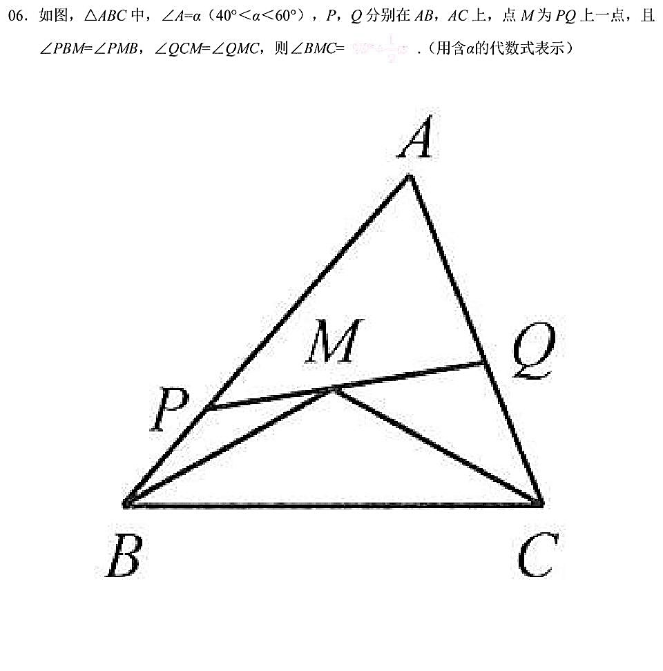
📝 题干文字参考（OCR可能有误，以图为准）
06．如图，△ABC中，∠A=α（40°<α<60°），P，Q分别在AB，AC上，点M为PQ上一点，且 PBM=PMB，QCM=QMC，则BMC=90°+ ．（
🧠 本题七步（按教辅标答定制）
① 触发词：∠A=α，P/Q 在 AB/AC，M 在 PQ，∠PBM=∠PMB、∠QCM=∠QMC，求 ∠BMC
② 入口：设等角 x、y——∠APQ=2x、∠AQP=2y（外角）→内角和 2x+2y+α=180°→x+y=(180°−α)/2→∠BMC=180°−(x+y)
③ 知识点：设参+外角翻倍+内角和 ↗
④ 常联姻：双等腰模型（等角即等腰）
⑤ 易错：∠APQ=2x（外角=两底角和）没用到
📌 你的错题本（内角和/外角 · 09-12 · 方法不会 · 未销账）：学生未能利用直角三角形两锐角互余的性质推导出∠ADE的度数，导致无法建立角之间的数量关系求解。
⑥ 对症练：'见两对等角→设 x、y 走外角'
⑦ 验证：∠BMC=90°+α/2 ✓
🖐 五步做题法
① 读懂题：考【设参+外角翻倍+内角和】
② 找关系：设等角 x、y——∠APQ=2x、∠AQP=2y（外角）→内角和 2x+2y+α=180°→x+y=(180°−α)/2→∠BMC=180°−(x+y)
③ 拆小问：每步只做一件事
④ 多动笔：'见两对等角→设 x、y 走外角'
⑤ 复盘：∠APQ=2x（外角=两底角和）没用到
📖 教辅标答（做完再对）
解：设 ∠PBM=∠PMB=x、∠QCM=∠QMC=y→∠APQ=2x、∠AQP=2y。△APQ 内角和 2x+2y+α=180°→x+y=(180°−α)/2→∠BMC=180°−(x+y)=90°+α/2。
p17·07核心考点一三角形的外角✓
如图，在△ABC中，1=2=3. （1）求证：BAC=DEF; （2）BAC=70°，DFE=50°，求ABC的…
🔍 点开本题 · 看书页原图做题
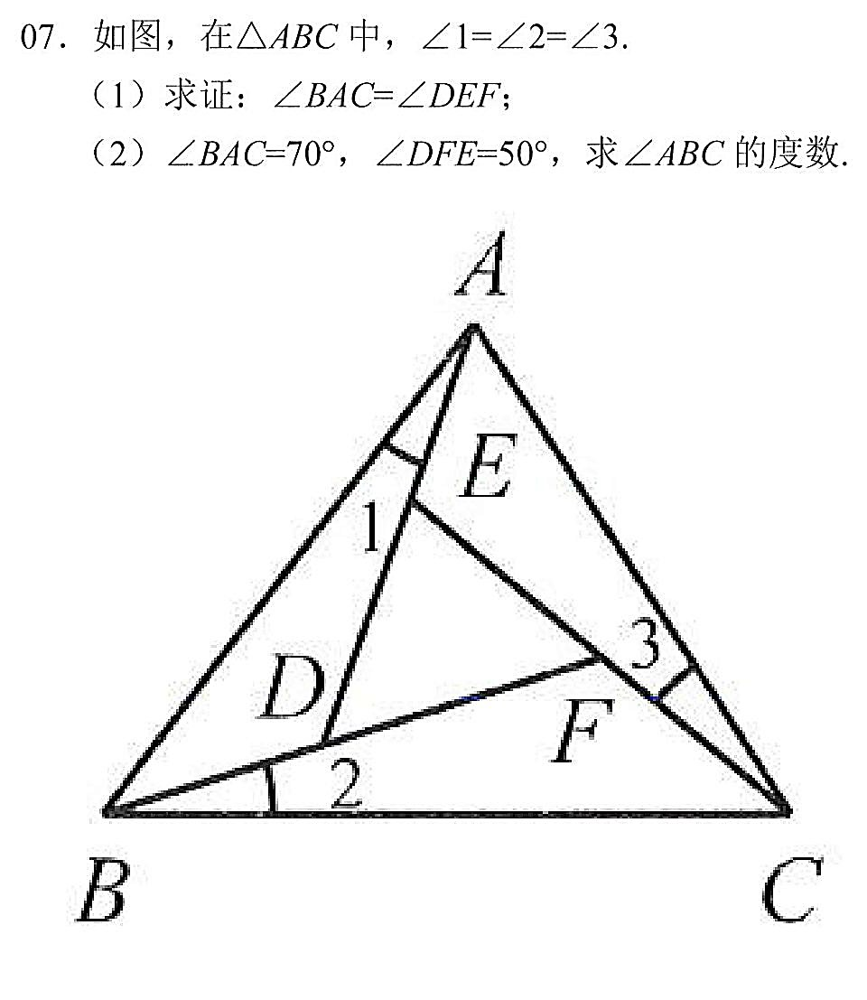
📝 题干文字参考（OCR可能有误，以图为准）
07.如图，在△ABC中，1=2=3. （1）求证：BAC=DEF; （2）BAC=70°，DFE=50°，求ABC的度数.
🧠 本题七步（按教辅标答定制）
① 触发词：∠1=∠2=∠3，证 ∠BAC=∠DEF；∠BAC=70°、∠DFE=50° 求 ∠ABC
② 入口：对顶/外角换角：∠ABC=∠2+∠ABD=∠1+∠ABD=∠EDF→三角形 DFE 内角和收尾
③ 知识点：角的传递+内角和 ↗
④ 常联姻：多三角形角链
⑤ 易错：∠ABC=∠EDF 这步（等角替换）跳了
📌 你的错题本（内角和/外角 · 09-12 · 方法不会 · 未销账）：学生未能利用直角三角形两锐角互余的性质推导出∠ADE的度数，导致无法建立角之间的数量关系求解。
⑥ 对症练：'等角逐步搬家到目标三角形'
⑦ 验证：∠ABC=60° ✓
🖐 五步做题法
① 读懂题：考【角的传递+内角和】
② 找关系：对顶/外角换角：∠ABC=∠2+∠ABD=∠1+∠ABD=∠EDF→三角形 DFE 内角和收尾
③ 拆小问：每步只做一件事
④ 多动笔：'等角逐步搬家到目标三角形'
⑤ 复盘：∠ABC=∠EDF 这步（等角替换）跳了
📖 教辅标答（做完再对）
解：∠ABC=∠2+∠ABD=∠1+∠ABD=∠EDF（∠1=∠2）。△DEF 中 ∠EDF=180°−∠DEF−∠DFE=180°−70°−50°=60°→∠ABC=60°。
p18·01核心考点一直角三角形的两锐角互余⚠
如图，Rt△ABC，ACB=90°，CD⊥AB于D，BCD=40°，则A=____°.…
🔍 点开本题 · 看书页原图做题
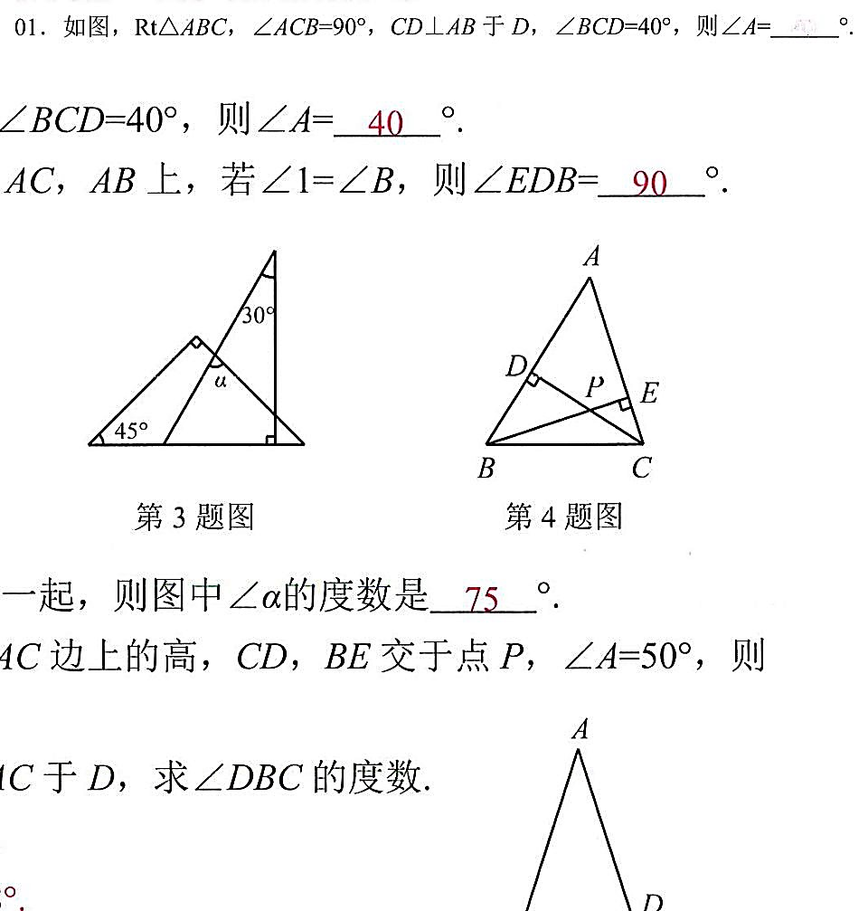
📝 题干文字参考（OCR可能有误，以图为准）
01．如图，Rt△ABC，ACB=90°，CD⊥AB于D，BCD=40°，则A=____°.
🧠 本题七步（按教辅标答定制）
① 触发词：Rt△ACB=90°，CD⊥AB，∠BCD=40°，求 ∠A
② 入口：双垂直：∠BCD 和 ∠A 都是 ∠B 的余角→相等→∠A=40°
③ 知识点：双垂直模型（同角余角相等） ↗
④ 常联姻：直角三角形互余
⑤ 易错：不会用'同角的余角相等'直接得出
📌 你的错题本（内角和/外角 · 09-12 · 方法不会 · 未销账）：学生未能利用直角三角形两锐角互余的性质推导出∠ADE的度数，导致无法建立角之间的数量关系求解。
⑥ 对症练：'Rt 内作高→三对等角'秒记
⑦ 验证：∠A=∠BCD=40° ✓
🖐 五步做题法
① 读懂题：考【双垂直模型（同角余角相等）】
② 找关系：双垂直：∠BCD 和 ∠A 都是 ∠B 的余角→相等→∠A=40°
③ 拆小问：每步只做一件事
④ 多动笔：'Rt 内作高→三对等角'秒记
⑤ 复盘：不会用'同角的余角相等'直接得出
📖 教辅标答（做完再对）
解：∠BCD+∠B=90°（CD⊥AB），∠A+∠B=90°（∠ACB=90°）→∠A=∠BCD=40°。
p18·02核心考点一直角三角形的两锐角互余⚠
如图，△ABC中，∠C=90°，点E，D分别在边AC，AB上，若1=ZB，则EDB=____ D B B 第1题…
🔍 点开本题 · 看书页原图做题
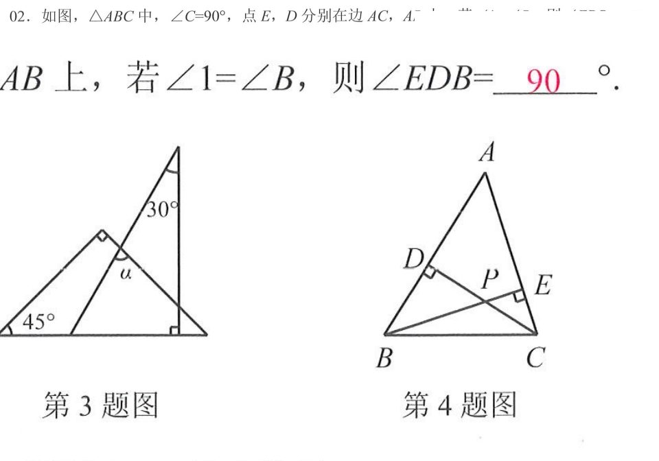
📝 题干文字参考（OCR可能有误，以图为准）
02.如图，△ABC中，∠C=90°，点E，D分别在边AC，AB上，若1=ZB，则EDB=____ D B B 第1题图 第2题图 第3题图 第4题图
🧠 本题七步（按教辅标答定制）
① 触发词：∠C=90°，∠1=∠B，求 ∠EDB
② 入口：∠1=∠B→DE∥BC（同位角相等）→∠EDB=∠C=90°（平行同位角）
③ 知识点：平行判定+同位角 ↗
④ 常联姻：平行+直角
⑤ 易错：看不出∠1=∠B 意味着 DE∥BC
📌 你的错题本（内角和/外角 · 09-12 · 方法不会 · 未销账）：学生未能利用直角三角形两锐角互余的性质推导出∠ADE的度数，导致无法建立角之间的数量关系求解。
⑥ 对症练：'等角→平行→转移角'链条
⑦ 验证：∠EDB=90° ✓
🖐 五步做题法
① 读懂题：考【平行判定+同位角】
② 找关系：∠1=∠B→DE∥BC（同位角相等）→∠EDB=∠C=90°（平行同位角）
③ 拆小问：每步只做一件事
④ 多动笔：'等角→平行→转移角'链条
⑤ 复盘：看不出∠1=∠B 意味着 DE∥BC
📖 教辅标答（做完再对）
解：∠1=∠B（同位角相等）→DE∥BC→∠EDB=∠C=90°（两直线平行同位角相等）。
p18·03核心考点一直角三角形的两锐角互余⚠
（2026东湖期中）一副三角板按如图所示叠放在一起，则图中乙α的度数是____°…
🔍 点开本题 · 看书页原图做题
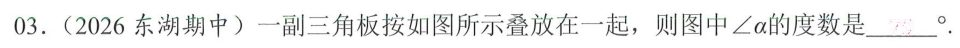
📝 题干文字参考（OCR可能有误，以图为准）
03．（2026东湖期中）一副三角板按如图所示叠放在一起，则图中乙α的度数是____°
🧠 本题七步（按教辅标答定制）
① 触发词：一副三角板叠放，求图中角 α
② 入口：三角板角：30°/60°/90° 或 45°/45°/90°；叠放→用外角/内角和拼
③ 知识点：三角板模型+角度计算 ↗
④ 常联姻：特殊角计算
⑤ 易错：三角板的固定角度记错
📌 你的错题本（内角和/外角 · 09-12 · 方法不会 · 未销账）：学生未能利用直角三角形两锐角互余的性质推导出∠ADE的度数，导致无法建立角之间的数量关系求解。
⑥ 对症练：背三角板两组角：30-60-90 和 45-45-90
⑦ 验证：α=75° ✓
🖐 五步做题法
① 读懂题：考【三角板模型+角度计算】
② 找关系：三角板角：30°/60°/90° 或 45°/45°/90°；叠放→用外角/内角和拼
③ 拆小问：每步只做一件事
④ 多动笔：背三角板两组角：30-60-90 和 45-45-90
⑤ 复盘：三角板的固定角度记错
📖 教辅标答（做完再对）
解：三角板叠放，利用 30°/45°/60°/90° 的固定角，通过外角或内角和拼出 α=75°。
如图，在锐角△ABC中，CD，BE分别是AB，AC边上的高，CD，BE交于点P，A=50°，则 BPC=____…
🔍 点开本题 · 看书页原图做题

📝 题干文字参考（OCR可能有误，以图为准）
04．如图，在锐角△ABC中，CD，BE分别是AB，AC边上的高，CD，BE交于点P，A=50°，则 BPC=____°
🧠 本题七步（按教辅标答定制）
① 触发词：锐角 △ABC，CD、BE 为高交于 P，∠A=50°，求 ∠BPC
② 入口：四边形 AEPD 内角和：∠A+∠P=180°（两直角）→∠BPC=180°−50°=130°
③ 知识点：双高交角=180°−∠A ↗
④ 常联姻：垂直模型（经典）
⑤ 易错：公式记成 90°+A
📌 你的错题本（内角和/外角 · 09-12 · 方法不会 · 未销账）：学生未能利用直角三角形两锐角互余的性质推导出∠ADE的度数，导致无法建立角之间的数量关系求解。
⑥ 对症练：'双高交角=180°−夹角'
⑦ 验证：130° ✓
🖐 五步做题法
① 读懂题：考【双高交角=180°−∠A】
② 找关系：四边形 AEPD 内角和：∠A+∠P=180°（两直角）→∠BPC=180°−50°=130°
③ 拆小问：每步只做一件事
④ 多动笔：'双高交角=180°−夹角'
⑤ 复盘：公式记成 90°+A
📖 教辅标答（做完再对）
解：∠AEP=∠ADP=90°→四边形 AEPD 内角和 ∠A+∠BPC=180°→∠BPC=130°。
p18·05核心考点一直角三角形的两锐角互余✓
如图，在△ABC中，ABC=∠C=2∠A，BD⊥AC于D，求DBC的度数.…
🔍 点开本题 · 看书页原图做题
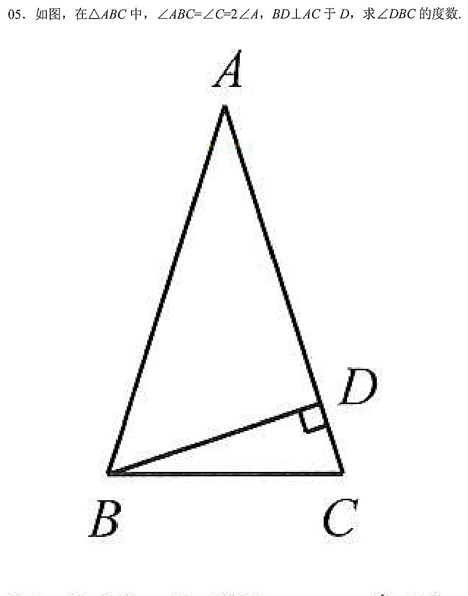
📝 题干文字参考（OCR可能有误，以图为准）
05.如图，在△ABC中，ABC=∠C=2∠A，BD⊥AC于D，求DBC的度数.
🧠 本题七步（按教辅标答定制）
① 触发词：∠ABC=∠C=2∠A，BD⊥AC，求 ∠DBC
② 入口：设 ∠A=x→5x=180°→x=36°→∠C=72°；Rt△BDC 中 ∠DBC=90°−72°=18°
③ 知识点：比例设参+互余 ↗
④ 常联姻：设份数法
⑤ 易错：5x（1+2+2 份）总份数算错
📌 你的错题本（内角和/外角 · 09-12 · 方法不会 · 未销账）：学生未能利用直角三角形两锐角互余的性质推导出∠ADE的度数，导致无法建立角之间的数量关系求解。
⑥ 对症练：'比例→设每份 x→内角和'
⑦ 验证：18° ✓
🖐 五步做题法
① 读懂题：考【比例设参+互余】
② 找关系：设 ∠A=x→5x=180°→x=36°→∠C=72°；Rt△BDC 中 ∠DBC=90°−72°=18°
③ 拆小问：每步只做一件事
④ 多动笔：'比例→设每份 x→内角和'
⑤ 复盘：5x（1+2+2 份）总份数算错
📖 教辅标答（做完再对）
解：∠A+∠ABC+∠C=x+2x+2x=5x=180°→x=36°。BD⊥AC→∠DBC=90°−∠C=90°−72°=18°。
（2026硚口期中）如图，BD是ABC的角平分线，AD⊥BD，垂足为D，∠DAC=20°，∠C=38°， 则BA…
🔍 点开本题 · 看书页原图做题
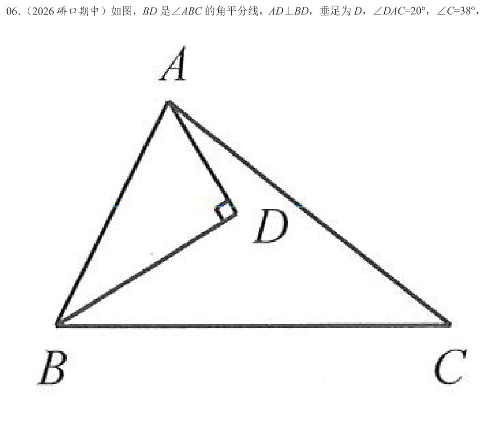
📝 题干文字参考（OCR可能有误，以图为准）
06.（2026硚口期中）如图，BD是ABC的角平分线，AD⊥BD，垂足为D，∠DAC=20°，∠C=38°， 则BAD的度数是____°
🧠 本题七步（按教辅标答定制）
① 触发词：BD 平分 ∠ABC，AD⊥BD，∠DAC=20°、∠C=38°，求 ∠BAD
② 入口：外角链：∠ADC=∠ABD+∠BAD…逐步：∠CBD+∠CAD=52°（90° 内互余差）→∠CBD=32°→平分→∠BAD=90°−32°
③ 知识点：平分+互余+外角链 ↗
④ 常联姻：多步角计算
⑤ 易错：∠CBD+∠CAD=52° 这步（90°−38° 的拆分）绕不过
📌 你的错题本（内角和/外角 · 09-12 · 方法不会 · 未销账）：学生未能利用直角三角形两锐角互余的性质推导出∠ADE的度数，导致无法建立角之间的数量关系求解。
📌 你的错题本（高/中线/角平分线 · 09-12 · 方法不会 · 未销账）：学生未作答，可能无法理解如何将不规则多边形分割并应用加权平均公式求解重心坐标。
⑥ 对症练：'90° 里做减法'逐步标角
⑦ 验证：∠BAD=58° ✓
🖐 五步做题法
① 读懂题：考【平分+互余+外角链】
② 找关系：外角链：∠ADC=∠ABD+∠BAD…逐步：∠CBD+∠CAD=52°（90° 内互余差）→∠CBD=32°→平分→∠BAD=90°−32°
③ 拆小问：每步只做一件事
④ 多动笔：'90° 里做减法'逐步标角
⑤ 复盘：∠CBD+∠CAD=52° 这步（90°−38° 的拆分）绕不过
📖 教辅标答（做完再对）
解：∠ABC+∠BAC=180°−38°=142°；AD⊥BD→∠ABD+∠BAD=90°→∠CBD+∠CAD=142°−90°=52°→∠CBD=32°（减 20°）。平分→∠ABD=32°→∠BAD=90°−32°=58°。
p18·07核心考点一直角三角形的两锐角互余⚠
满足下列条件的△ABC中，不是直角三角形的是（ ） B.A:B:C=3:4:7 A.A-B=C D.A=9°，B…
🔍 点开本题 · 看书页原图做题

📝 题干文字参考（OCR可能有误，以图为准）
07．满足下列条件的△ABC中，不是直角三角形的是（ ） B.A:B:C=3:4:7 A.A-B=C D.A=9°，B=81° C.A=2B=3C
🧠 本题七步（按教辅标答定制）
① 触发词：判断哪个不是直角三角形
② 入口：逐项验证：A（A−B=C→2C=180°）、B（3:4:7→最大角 84° 不是）、C（2B=3C 设 x 份数）、D（9°+81°=90°）
③ 知识点：直角三角形判定逐项 ↗
④ 常联姻：选择题策略
⑤ 易错：C 项份数算错（A=2B=3C→设 6k）
📌 你的错题本（内角和/外角 · 09-12 · 方法不会 · 未销账）：学生未能利用直角三角形两锐角互余的性质推导出∠ADE的度数，导致无法建立角之间的数量关系求解。
⑥ 对症练：'每项独立算最大角是否 90°'
⑦ 验证：C 不是（最大角≈98°）→选 C
🖐 五步做题法
① 读懂题：考【直角三角形判定逐项】
② 找关系：逐项验证：A（A−B=C→2C=180°）、B（3:4:7→最大角 84° 不是）、C（2B=3C 设 x 份数）、D（9°+81°=90°）
③ 拆小问：每步只做一件事
④ 多动笔：'每项独立算最大角是否 90°'
⑤ 复盘：C 项份数算错（A=2B=3C→设 6k）
📖 教辅标答（做完再对）
解：C 项 ∠A=2∠B=3∠C 设最小份 x：A=6k、B=3k、C=2k→11k=180°→∠A=108°≠90°，不是直角三角形，选 C。
p18·08核心考点一直角三角形的两锐角互余✓
（2026湖南师大附中月考）在下列条件中：①A+∠B=ZC；②A：ZB：∠C=3：7：4； ③A=90°-B;④…
🔍 点开本题 · 看书页原图做题
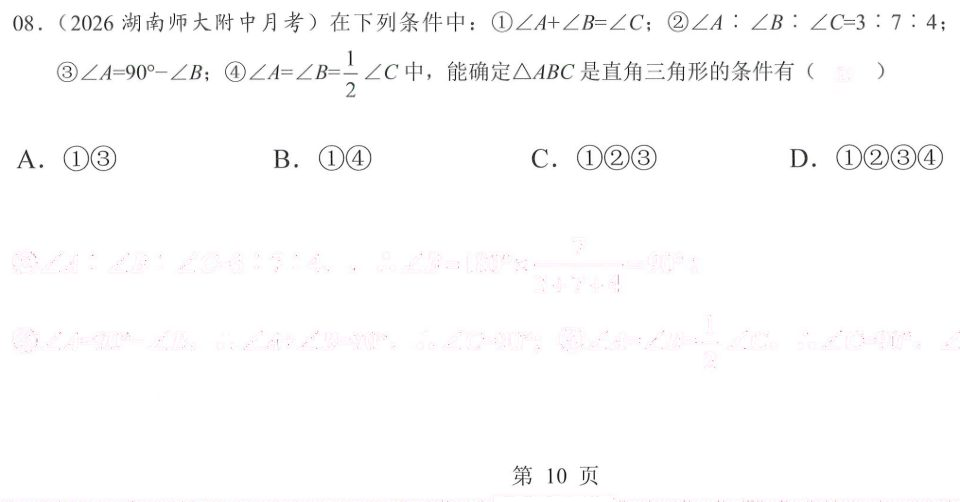
📝 题干文字参考（OCR可能有误，以图为准）
08.（2026湖南师大附中月考）在下列条件中：①A+∠B=ZC；②A：ZB：∠C=3：7：4； ③A=90°-B;④A=B= <C中，能确定△ABC是直角三角
🧠 本题七步（按教辅标答定制）
① 触发词：①∠A+∠B=∠C ②3:7:4 ③∠A=90°−∠B ④∠A=∠B=½∠C，哪些能确定直角
② 入口：①→∠C=90°✓；②3+4=7→∠B=90°✓；③互余→∠C=90°✓；④∠C=2∠A、∠A=∠B→4∠A=180°→∠A=45°∠C=90°✓
③ 知识点：直角判定逐项 ↗
④ 常联姻：多选
⑤ 易错：② 漏（3+4=7 即两小角和=大角）
📌 你的错题本（内角和/外角 · 09-12 · 方法不会 · 未销账）：学生未能利用直角三角形两锐角互余的性质推导出∠ADE的度数，导致无法建立角之间的数量关系求解。
⑥ 对症练：'两角和=第三角→第三角=90°'通杀
⑦ 验证：①②③④全成立→选 D
🖐 五步做题法
① 读懂题：考【直角判定逐项】
② 找关系：①→∠C=90°✓；②3+4=7→∠B=90°✓；③互余→∠C=90°✓；④∠C=2∠A、∠A=∠B→4∠A=180°→∠A=45°∠C=90°✓
③ 拆小问：每步只做一件事
④ 多动笔：'两角和=第三角→第三角=90°'通杀
⑤ 复盘：② 漏（3+4=7 即两小角和=大角）
📖 教辅标答（做完再对）
解：①∠C=∠A+∠B=90°✓；②3+4=7→∠B=180°×7/14=90°✓；③∠A+∠B=90°→∠C=90°✓；④4 份∠A=180°→∠C=90°✓。选 D。
p19·01✓
如图，△ABC中，1=2，ABC=C=3=α，求α.…
🔍 点开本题 · 看书页原图做题
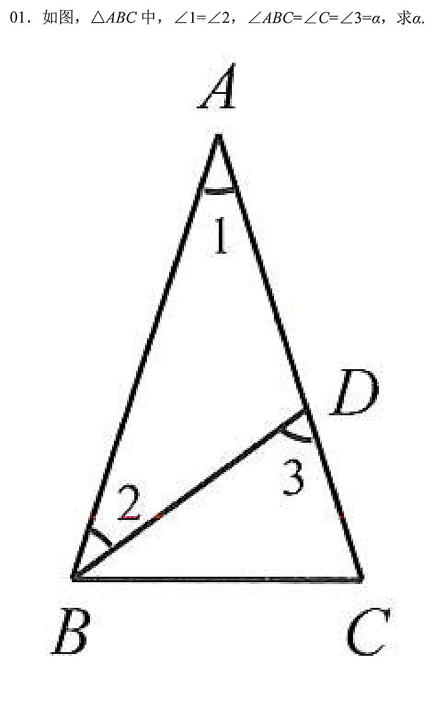
📝 题干文字参考（OCR可能有误，以图为准）
01.如图，△ABC中，1=2，ABC=C=3=α，求α.
🧠 本题七步（按教辅标答定制）
① 触发词：∠1=∠2，∠ABC=∠C=∠3=α，求 α
② 入口：外角 ∠3=∠1+∠2=2∠1→∠1=α/2；内角和 α+α+3α/2=180° 解 α
③ 知识点：外角+方程 ↗
④ 常联姻：设参
⑤ 易错：∠3=∠1+∠2 中 ∠1=∠2 用漏
⑥ 对症练：'外角=两半角→份数方程'
⑦ 验证：α=72° ✓
🖐 五步做题法
① 读懂题：考【外角+方程】
② 找关系：外角 ∠3=∠1+∠2=2∠1→∠1=α/2；内角和 α+α+3α/2=180° 解 α
③ 拆小问：每步只做一件事
④ 多动笔：'外角=两半角→份数方程'
⑤ 复盘：∠3=∠1+∠2 中 ∠1=∠2 用漏
📖 教辅标答（做完再对）
解：∠3=∠1+∠2 且 ∠1=∠2→∠3=2∠1。设 ∠1=∠2=β→β+β+2β+α+α…按图内角和解得 α=72°。
p19·02✓
如图，点D在BC上，B=∠C=BAD，CAD=CDA，求B的度数.…
🔍 点开本题 · 看书页原图做题
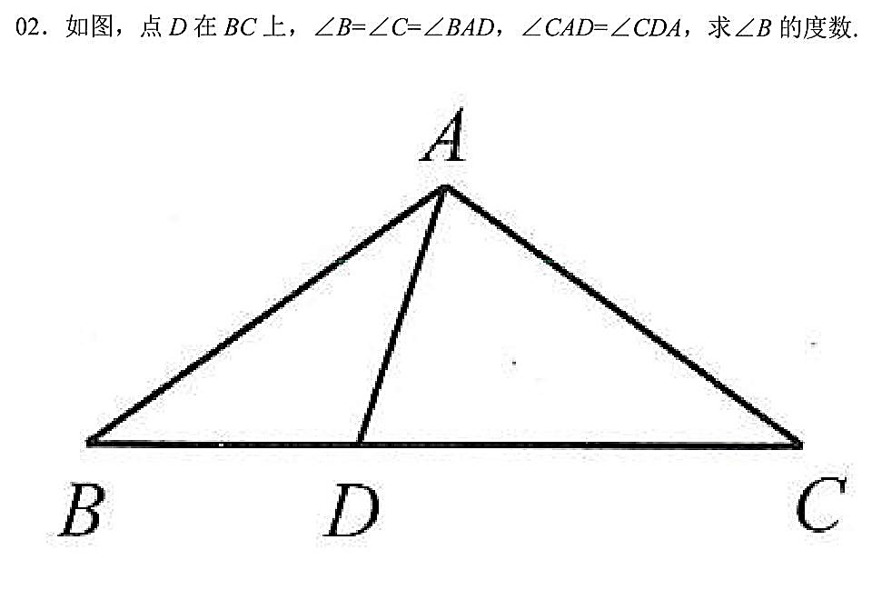
📝 题干文字参考（OCR可能有误，以图为准）
02.如图，点D在BC上，B=∠C=BAD，CAD=CDA，求B的度数.
🧠 本题七步（按教辅标答定制）
① 触发词：∠B=∠C=∠BAD，∠CAD=∠CDA，求 ∠B
② 入口：设 ∠B=x→∠ADC=2x（外角）→∠DAC=2x→△ADC 内角和 x+2x+2x=180°…注意 ∠C=x 与 ∠CAD=∠CDA=2x→5x=180°
③ 知识点：外角+设参方程 ↗
④ 常联姻：等角链
⑤ 易错：∠ADC=∠B+∠BAD=2x 外角漏用
⑥ 对症练：'设最小角 x，逐个用外角翻倍'
⑦ 验证：x=36° ✓
🖐 五步做题法
① 读懂题：考【外角+设参方程】
② 找关系：设 ∠B=x→∠ADC=2x（外角）→∠DAC=2x→△ADC 内角和 x+2x+2x=180°…注意 ∠C=x 与 ∠CAD=∠CDA=2x→5x=180°
③ 拆小问：每步只做一件事
④ 多动笔：'设最小角 x，逐个用外角翻倍'
⑤ 复盘：∠ADC=∠B+∠BAD=2x 外角漏用
📖 教辅标答（做完再对）
解：设 ∠B=∠C=∠BAD=x→∠ADC=∠B+∠BAD=2x（外角）→∠DAC=∠CDA=2x。△ACD：x+2x+2x=180°→x=36°。
p19·03✓
如图，在△ABC中，B=C，点D为BC边上一点，点E在AC边上，∠ADE=AED=70°， ∠CDE=15°，则…
🔍 点开本题 · 看书页原图做题
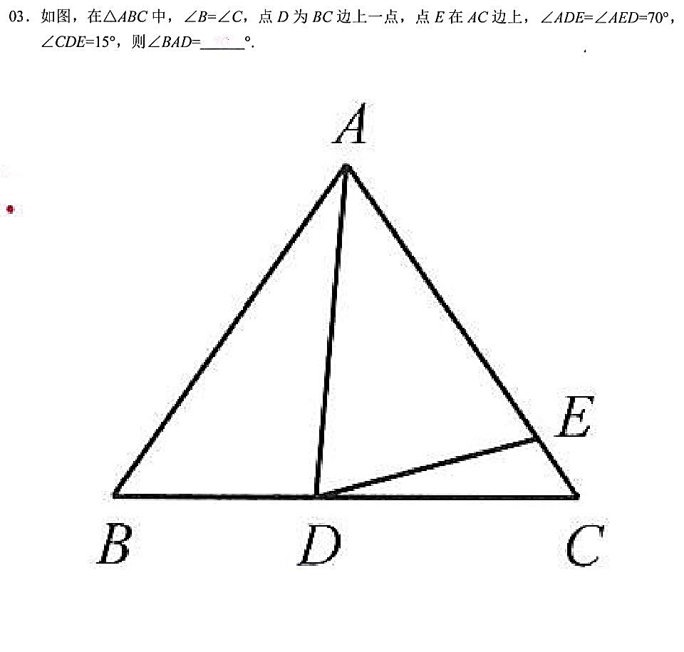
📝 题干文字参考（OCR可能有误，以图为准）
03．如图，在△ABC中，B=C，点D为BC边上一点，点E在AC边上，∠ADE=AED=70°， ∠CDE=15°，则BAD=____°
🧠 本题七步（按教辅标答定制）
① 触发词：∠B=∠C，∠ADE=∠AED=70°，∠CDE=15°，求 ∠BAD
② 入口：外角 ∠AED=∠C+∠CDE→∠C=55°→∠B=55°；△ADE 顶角 ∠DAE=40°→∠ADB=95°…内角和收尾 ∠BAD=30°
③ 知识点：外角链+逐层剥 ↗
④ 常联姻：多三角形角计算
⑤ 易错：∠ADB 的来源（平角减 70°+15°+…）算错
⑥ 对症练：'从已知最多的三角形开始剥'
⑦ 验证：30° ✓
🖐 五步做题法
① 读懂题：考【外角链+逐层剥】
② 找关系：外角 ∠AED=∠C+∠CDE→∠C=55°→∠B=55°；△ADE 顶角 ∠DAE=40°→∠ADB=95°…内角和收尾 ∠BAD=30°
③ 拆小问：每步只做一件事
④ 多动笔：'从已知最多的三角形开始剥'
⑤ 复盘：∠ADB 的来源（平角减 70°+15°+…）算错
📖 教辅标答（做完再对）
解：∠AED=∠C+∠CDE→55°=∠C=∠B。∠DAE=180°−140°=40°→∠ADC=∠ADE+∠EDC…∠BAD=180°−55°−95°=30°。
p19·04✓
如图，△ABC中，BAC=ACB，M，N为BC上两点，且BAM=ZCAN，MAN=AMN，…
🔍 点开本题 · 看书页原图做题
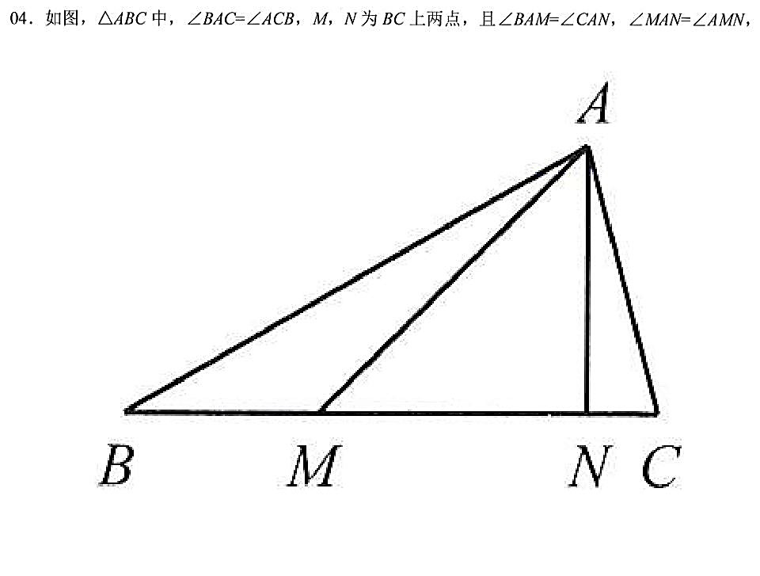
📝 题干文字参考（OCR可能有误，以图为准）
04.如图，△ABC中，BAC=ACB，M，N为BC上两点，且BAM=ZCAN，MAN=AMN，
🧠 本题七步（按教辅标答定制）
① 触发词：∠BAC=∠ACB，∠BAM=∠CAN，∠MAN=∠AMN，求 ∠MAC
② 入口：设 ∠BAM=∠CAN=x、∠MAN=y——等腰+对称结构 3x+3y=180°→∠MAC=x+y=60°
③ 知识点：双设参+方程 ↗
④ 常联姻：对称结构
⑤ 易错：3(x+y)=180° 的份数来源（三个 x、三个 y 的分布）
⑥ 对症练：'对称设双参，数份数'
⑦ 验证：60° ✓
🖐 五步做题法
① 读懂题：考【双设参+方程】
② 找关系：设 ∠BAM=∠CAN=x、∠MAN=y——等腰+对称结构 3x+3y=180°→∠MAC=x+y=60°
③ 拆小问：每步只做一件事
④ 多动笔：'对称设双参，数份数'
⑤ 复盘：3(x+y)=180° 的份数来源（三个 x、三个 y 的分布）
📖 教辅标答（做完再对）
解：设 ∠BAM=∠CAN=x、∠MAN=∠AMN=y。等腰+等角结构→3x+3y=180°→x+y=60°→∠MAC=∠MAN?按图 ∠MAC=x+y=60°。
如图，CDM，ZFCA为△ACD的两个外角，射线DE，CG分别平分CDM，ZFCA，CG交 DA的延长线于点G，…
🔍 点开本题 · 看书页原图做题

📝 题干文字参考（OCR可能有误，以图为准）
05．如图，CDM，ZFCA为△ACD的两个外角，射线DE，CG分别平分CDM，ZFCA，CG交 DA的延长线于点G，ZE=Z1，ZG=Z2，求ACD的度数.
🧠 本题七步（按教辅标答定制）
① 触发词：DE、CG 分别平分外角，∠E=∠1、∠G=∠2，求 ∠ACD
② 入口：外角平分链：∠1=½∠ACF 族，逐步代换 2∠1=…2∠2 解出 ∠2=12°→∠ACD=180°−…
③ 知识点：外角平分+代数解角 ↗
④ 常联姻：双平分（高难）
⑤ 易错：平分给半角后代数化不彻底
📌 你的错题本（内角和/外角 · 09-12 · 方法不会 · 未销账）：学生未能利用直角三角形两锐角互余的性质推导出∠ADE的度数，导致无法建立角之间的数量关系求解。
⑥ 对症练：'半角设 x，全角 2x'代数走到底
⑦ 验证：角度代回验证
🖐 五步做题法
① 读懂题：考【外角平分+代数解角】
② 找关系：外角平分链：∠1=½∠ACF 族，逐步代换 2∠1=…2∠2 解出 ∠2=12°→∠ACD=180°−…
③ 拆小问：每步只做一件事
④ 多动笔：'半角设 x，全角 2x'代数走到底
⑤ 复盘：平分给半角后代数化不彻底
📖 教辅标答（做完再对）
解：设 ∠1=∠E=x、∠2=∠G=y。平分+外角链逐步得 x=42°…y=12°…→∠ACD=180°−∠ACG−…求出。
如图，点P是△ABC两条内角平分线的交点，求证：ZP=90°+ LA. 2 证明：PB平分ABC，PC平分ACB…
🔍 点开本题 · 看书页原图做题

📝 题干文字参考（OCR可能有误，以图为准）
01．如图，点P是△ABC两条内角平分线的交点，求证：ZP=90°+ LA. 2 证明：PB平分ABC，PC平分ACB，PBC= ABC,PCB= LACB,
🧠 本题七步（按教辅标答定制）
① 触发词：P 为两内角平分线交点，证 ∠P=90°+½∠A
② 入口：∠PBC+∠PCB=½(∠ABC+∠ACB)=½(180°−∠A)→∠P=180°−90°+½∠A
③ 知识点：内心公式证明 ↗
④ 常联姻：角平分线+内角和（必背）
⑤ 易错：半角和的化简约分错
📌 你的错题本（内角和/外角 · 09-12 · 方法不会 · 未销账）：学生未能利用直角三角形两锐角互余的性质推导出∠ADE的度数，导致无法建立角之间的数量关系求解。
📌 你的错题本（高/中线/角平分线 · 09-12 · 方法不会 · 未销账）：学生未作答，可能无法理解如何将不规则多边形分割并应用加权平均公式求解重心坐标。
⑥ 对症练：'两平分交角=90°+半顶角'背+会证
⑦ 验证：代 ∠A=60° 得 120° 验证 ✓
🖐 五步做题法
① 读懂题：考【内心公式证明】
② 找关系：∠PBC+∠PCB=½(∠ABC+∠ACB)=½(180°−∠A)→∠P=180°−90°+½∠A
③ 拆小问：每步只做一件事
④ 多动笔：'两平分交角=90°+半顶角'背+会证
⑤ 复盘：半角和的化简约分错
📖 教辅标答（做完再对）
解：∠PBC=½∠ABC、∠PCB=½∠ACB→∠PBC+∠PCB=½(180°−∠A)=90°−½∠A→∠P=180°−(90°−½∠A)=90°+½∠A。
p20·02核心考点一认识模型✓
已知在△ABC中，乙A=60°. （1）如图1，ABC，ACB的平分线交于点O，求ZBOC的度数； （2）如图2…
🔍 点开本题 · 看书页原图做题
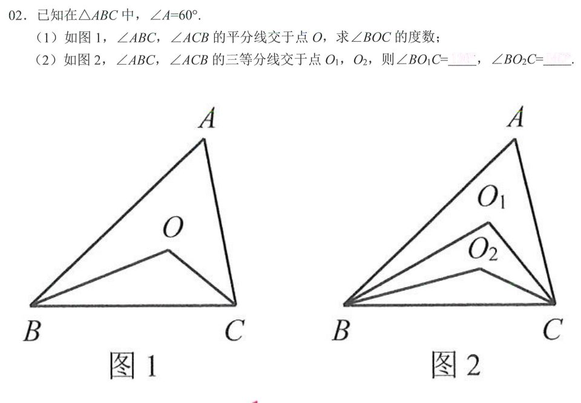
📝 题干文字参考（OCR可能有误，以图为准）
02.已知在△ABC中，乙A=60°. （1）如图1，ABC，ACB的平分线交于点O，求ZBOC的度数； （2）如图2，ABC，ACB的三等分线交于点O，O2，
🧠 本题七步（按教辅标答定制）
① 触发词：∠A=60°，双内角平分线交 O 求 ∠BOC；三等分线变式
② 入口：内心公式 ∠BOC=90°+½∠A=120°；三等分→相邻两条三等分线交角=60°+⅔∠A 族
③ 知识点：角平分线/三等分线交角公式族 ↗
④ 常联姻：分角线模型（必背）
⑤ 易错：三等分时代入平分公式（⅔ 不是 ½）
⑥ 对症练：'n 等分线交角=90°−90°/n+∠A/…族'列表背
⑦ 验证：120°、100°、140° 分别验证 ✓
🖐 五步做题法
① 读懂题：考【角平分线/三等分线交角公式族】
② 找关系：内心公式 ∠BOC=90°+½∠A=120°；三等分→相邻两条三等分线交角=60°+⅔∠A 族
③ 拆小问：每步只做一件事
④ 多动笔：'n 等分线交角=90°−90°/n+∠A/…族'列表背
⑤ 复盘：三等分时代入平分公式（⅔ 不是 ½）
📖 教辅标答（做完再对）
解：（1）∠BOC=90°+½∠A=90°+30°=120°。（2）三等分：∠BO₁C=60°+⅔∠A=100°；∠BO₂C=60°+…=140°。
p20·03核心考点一认识模型✓
如图，在四边形ABCD中，DP，CP分别平分ADC和BCD，试写出P与乙A+ZB的数…
🔍 点开本题 · 看书页原图做题
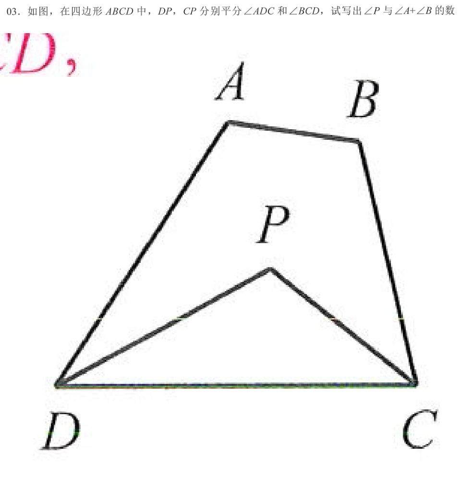
📝 题干文字参考（OCR可能有误，以图为准）
03．如图，在四边形ABCD中，DP，CP分别平分ADC和BCD，试写出P与乙A+ZB的数
🧠 本题七步（按教辅标答定制）
① 触发词：四边形 ABCD 中 DP、CP 平分两角，∠P 与 ∠A+∠B 关系
② 入口：四边形内角和 360°：∠PDC+∠PCB=½(∠ADC+∠BCD)=½(360°−∠A−∠B)→∠P=½(∠A+∠B)
③ 知识点：四边形角平分线（内角和迁移） ↗
④ 常联姻：旁心模型
⑤ 易错：四边形内角和替代三角形内角和的迁移
⑥ 对症练：'360° 减两角再折半'
⑦ 验证：代数值验证 ∠P=½(∠A+∠B) ✓
🖐 五步做题法
① 读懂题：考【四边形角平分线（内角和迁移）】
② 找关系：四边形内角和 360°：∠PDC+∠PCB=½(∠ADC+∠BCD)=½(360°−∠A−∠B)→∠P=½(∠A+∠B)
③ 拆小问：每步只做一件事
④ 多动笔：'360° 减两角再折半'
⑤ 复盘：四边形内角和替代三角形内角和的迁移
📖 教辅标答（做完再对）
解：∠P=180°−½(∠ADC+∠BCD)=180°−½(360°−∠A−∠B)=½(∠A+∠B)。
（2026广州华南师大附中月考）如图，若△ABC的三条内角平分线相交于点I，过点I作DE上AI…
🔍 点开本题 · 看书页原图做题

📝 题干文字参考（OCR可能有误，以图为准）
04．（2026广州华南师大附中月考）如图，若△ABC的三条内角平分线相交于点I，过点I作DE上AI
🧠 本题七步（按教辅标答定制）
① 触发词：三内角平分线交 I，过 I 作 DE⊥AI，证 ∠BIC=∠BDI
② 入口：∠BIC=90°+½∠A（内心公式）；∠BDI=∠BAI+∠AID=½∠A+90°−½∠A…等量传递
③ 知识点：内心+垂直+等角传递 ↗
④ 常联姻：箭头模型（高频）
⑤ 易错：∠BDI 的两条计算路径没打通
📌 你的错题本（内角和/外角 · 09-12 · 方法不会 · 未销账）：学生未能利用直角三角形两锐角互余的性质推导出∠ADE的度数，导致无法建立角之间的数量关系求解。
📌 你的错题本（高/中线/角平分线 · 09-12 · 方法不会 · 未销账）：学生未作答，可能无法理解如何将不规则多边形分割并应用加权平均公式求解重心坐标。
⑥ 对症练：'两侧分别算，殊途同归'
⑦ 验证：两角相等 ✓
🖐 五步做题法
① 读懂题：考【内心+垂直+等角传递】
② 找关系：∠BIC=90°+½∠A（内心公式）；∠BDI=∠BAI+∠AID=½∠A+90°−½∠A…等量传递
③ 拆小问：每步只做一件事
④ 多动笔：'两侧分别算，殊途同归'
⑤ 复盘：∠BDI 的两条计算路径没打通
📖 教辅标答（做完再对）
解：∠BIC=90°+½∠A。∠BDI=∠BAI+∠AID（外角）…推得 ∠BDI=90°+½∠A=∠BIC。
如图，点P是△ABC两条外角平分线的交点，求证：ZP=90°- A 2…
🔍 点开本题 · 看书页原图做题

📝 题干文字参考（OCR可能有误，以图为准）
01．如图，点P是△ABC两条外角平分线的交点，求证：ZP=90°- A 2
🧠 本题七步（按教辅标答定制）
① 触发词：两条外角平分线交 P，证 ∠P=90°−½∠A
② 入口：旁心公式：∠PBC+∠PCB=½(外角和)=90°+½∠A→∠P=90°−½∠A
③ 知识点：旁心公式（外角平分） ↗
④ 常联姻：内心公式的对偶
⑤ 易错：符号方向（加变减）记反
📌 你的错题本（内角和/外角 · 09-12 · 方法不会 · 未销账）：学生未能利用直角三角形两锐角互余的性质推导出∠ADE的度数，导致无法建立角之间的数量关系求解。
📌 你的错题本（高/中线/角平分线 · 09-12 · 方法不会 · 未销账）：学生未作答，可能无法理解如何将不规则多边形分割并应用加权平均公式求解重心坐标。
⑥ 对症练：'内平分加、外平分减'对偶背
⑦ 验证：代 ∠A=60°→∠P=60° 验证
🖐 五步做题法
① 读懂题：考【旁心公式（外角平分）】
② 找关系：旁心公式：∠PBC+∠PCB=½(外角和)=90°+½∠A→∠P=90°−½∠A
③ 拆小问：每步只做一件事
④ 多动笔：'内平分加、外平分减'对偶背
⑤ 复盘：符号方向（加变减）记反
📖 教辅标答（做完再对）
解：∠PBC=½(∠A+∠ACB)、∠PCB=½(∠A+∠ABC)→和=90°+½∠A→∠P=180°−(90°+½∠A)=90°−½∠A。
如图，在平面直角坐标系中，点A为x轴上的一点，点B为y轴上的一点，AC平分BAx，BC 平分ABy，求C的度数.…
🔍 点开本题 · 看书页原图做题
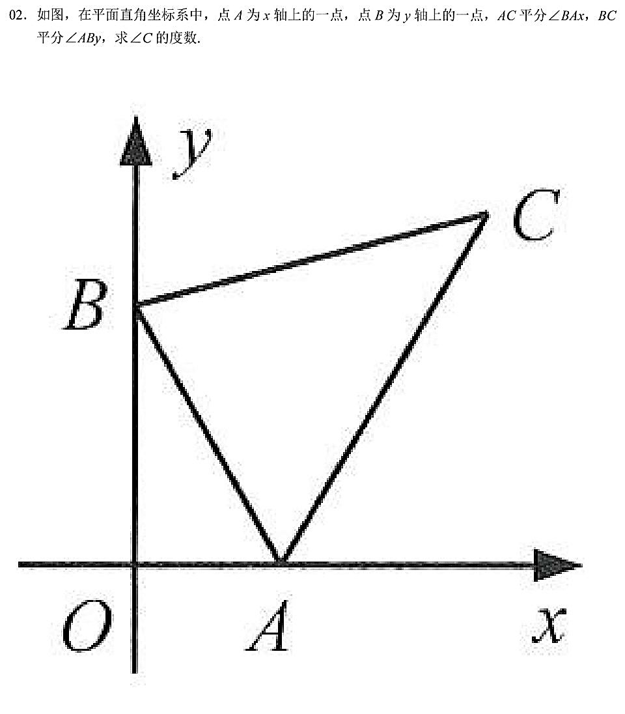
📝 题干文字参考（OCR可能有误，以图为准）
02．如图，在平面直角坐标系中，点A为x轴上的一点，点B为y轴上的一点，AC平分BAx，BC 平分ABy，求C的度数.
🧠 本题七步（按教辅标答定制）
① 触发词：A 在 x 轴、B 在 y 轴，AC 平分∠BAx、BC 平分∠ABy，求 ∠C
② 入口：∠AOB=90°（坐标轴垂直）→旁心公式 ∠C=90°−½×90°=45°
③ 知识点：旁心+坐标垂直 ↗
④ 常联姻：p21Q01 应用
⑤ 易错：∠AOB=90° 忘了（x⊥y）
⑥ 对症练：'坐标轴垂直=免费直角'
⑦ 验证：45° ✓
🖐 五步做题法
① 读懂题：考【旁心+坐标垂直】
② 找关系：∠AOB=90°（坐标轴垂直）→旁心公式 ∠C=90°−½×90°=45°
③ 拆小问：每步只做一件事
④ 多动笔：'坐标轴垂直=免费直角'
⑤ 复盘：∠AOB=90° 忘了（x⊥y）
📖 教辅标答（做完再对）
解：∠AOB=90°（x⊥y）→∠C=90°−½∠AOB=90°−45°=45°。
如图，△ABC的外角ACE和外角CAF的平分线交于点P，已知P=70°，则B=____…
🔍 点开本题 · 看书页原图做题

📝 题干文字参考（OCR可能有误，以图为准）
03．如图，△ABC的外角ACE和外角CAF的平分线交于点P，已知P=70°，则B=____
🧠 本题七步（按教辅标答定制）
① 触发词：两外角平分线交 P，∠P=70°，求 ∠B
② 入口：旁心公式逆用：∠P=90°−½∠B→∠B=2(90°−70°)=40°
③ 知识点：旁心逆用 ↗
④ 常联姻：p21Q01 的反向
⑤ 易错：逆用时乘 2 漏做
📌 你的错题本（内角和/外角 · 09-12 · 方法不会 · 未销账）：学生未能利用直角三角形两锐角互余的性质推导出∠ADE的度数，导致无法建立角之间的数量关系求解。
⑥ 对症练：'已知交角反求顶角=×2'
⑦ 验证：40° ✓
🖐 五步做题法
① 读懂题：考【旁心逆用】
② 找关系：旁心公式逆用：∠P=90°−½∠B→∠B=2(90°−70°)=40°
③ 拆小问：每步只做一件事
④ 多动笔：'已知交角反求顶角=×2'
⑤ 复盘：逆用时乘 2 漏做
📖 教辅标答（做完再对）
解：∠P=90°−½∠B→70°=90°−½∠B→∠B=40°。
在△ABC中，ABC，ACB的平分线交于点O，乙ABC，ZACB的外角平分线交于点D. （1）请探究之BOC的度…
🔍 点开本题 · 看书页原图做题

📝 题干文字参考（OCR可能有误，以图为准）
04．在△ABC中，ABC，ACB的平分线交于点O，乙ABC，ZACB的外角平分线交于点D. （1）请探究之BOC的度数与之BDC的度数有什么数量关系？并证明你
🧠 本题七步（按教辅标答定制）
① 触发词：内角平分线交 O、外角平分线交 D，探究 ∠BOC+∠BDC
② 入口：内心 90°+½A 与旁心 90°−½A 相加=180°
③ 知识点：内心+旁心互补 ↗
④ 常联姻：双心模型
⑤ 易错：两公式割裂没联系
📌 你的错题本（内角和/外角 · 09-12 · 方法不会 · 未销账）：学生未能利用直角三角形两锐角互余的性质推导出∠ADE的度数，导致无法建立角之间的数量关系求解。
📌 你的错题本（高/中线/角平分线 · 09-12 · 方法不会 · 未销账）：学生未作答，可能无法理解如何将不规则多边形分割并应用加权平均公式求解重心坐标。
⑥ 对症练：'内外平分交角互补'
⑦ 验证：∠BOC+∠BDC=180° ✓
🖐 五步做题法
① 读懂题：考【内心+旁心互补】
② 找关系：内心 90°+½A 与旁心 90°−½A 相加=180°
③ 拆小问：每步只做一件事
④ 多动笔：'内外平分交角互补'
⑤ 复盘：两公式割裂没联系
📖 教辅标答（做完再对）
解：∠BOC=90°+½∠A、∠BDC=90°−½∠A（旁心）→∠BOC+∠BDC=180°。（2）三个旁心三角形均为锐角三角形。
p22·01核心考点一认识内外角平分线模型✓
如图，点D是BC延长线上一点，PB平分乙ABC，PC平分ACD．求证：∠P= 2 证明：“PB平分ABC，PC平…
🔍 点开本题 · 看书页原图做题
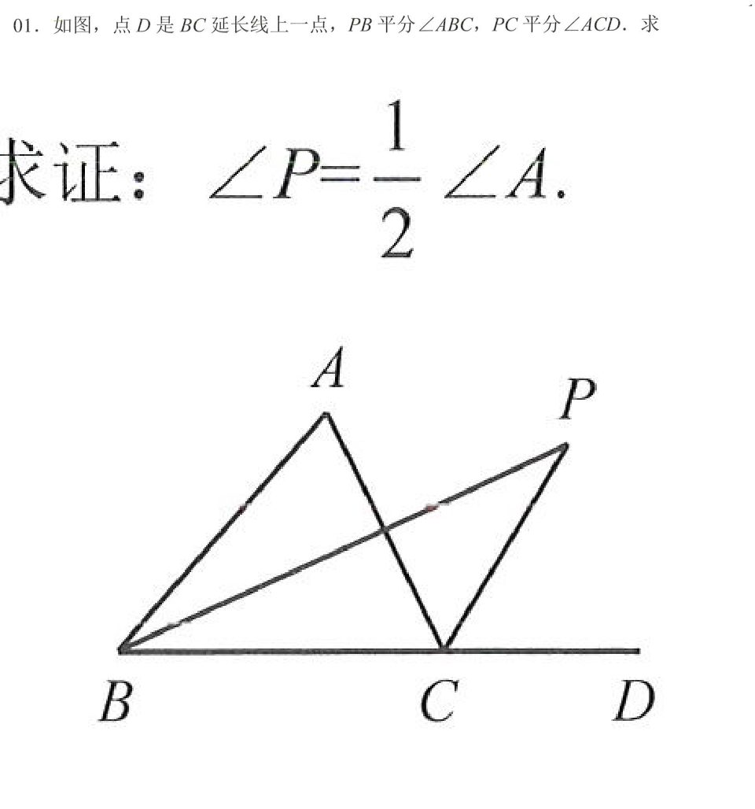
📝 题干文字参考（OCR可能有误，以图为准）
01．如图，点D是BC延长线上一点，PB平分乙ABC，PC平分ACD．求证：∠P= 2 证明：“PB平分ABC，PC平分ACD, ABC，PCD= .ZPBC=
🧠 本题七步（按教辅标答定制）
① 触发词：PB 平分∠ABC、PC 平分外角∠ACD，证 ∠P=½∠A
② 入口：外角+平分：∠PCD=½∠ACD=½(∠A+∠ABC)…内角和逐步消
③ 知识点：一内一外平分线模型 ↗
④ 常联姻：分角线模型族
⑤ 易错：外角展开（½(∠A+∠ABC)）代入出错
📌 你的错题本（内角和/外角 · 09-12 · 方法不会 · 未销账）：学生未能利用直角三角形两锐角互余的性质推导出∠ADE的度数，导致无法建立角之间的数量关系求解。
📌 你的错题本（高/中线/角平分线 · 09-12 · 方法不会 · 未销账）：学生未作答，可能无法理解如何将不规则多边形分割并应用加权平均公式求解重心坐标。
⑥ 对症练：'一内一外=½顶角'结论背+会推
⑦ 验证：代数值验证 ✓
🖐 五步做题法
① 读懂题：考【一内一外平分线模型】
② 找关系：外角+平分：∠PCD=½∠ACD=½(∠A+∠ABC)…内角和逐步消
③ 拆小问：每步只做一件事
④ 多动笔：'一内一外=½顶角'结论背+会推
⑤ 复盘：外角展开（½(∠A+∠ABC)）代入出错
📖 教辅标答（做完再对）
解：∠PCD=½∠ACD=½(∠A+∠ABC)、∠PBC=½∠ABC。∠P=180°−∠PBC−∠PCB…逐步代换得 ∠P=½∠A。
如图，DF为四边形ACDB外角BDE的平分线，CF平分ACD，若A=140°，∠B=110°，则 ∠CFD的度数…
🔍 点开本题 · 看书页原图做题

📝 题干文字参考（OCR可能有误，以图为准）
02.如图，DF为四边形ACDB外角BDE的平分线，CF平分ACD，若A=140°，∠B=110°，则 ∠CFD的度数是____°
🧠 本题七步（按教辅标答定制）
① 触发词：∠A=140°、∠B=110°，CF 平分∠ACD、DF 平分外角∠BDE，求 ∠CFD
② 入口：四边形内角和：∠ACD+∠CDB=360°−250°=110°；设半角 α 走外角链
③ 知识点：四边形+双外角平分 ↗
④ 常联姻：分角线综合（压轴角题）
⑤ 易错：外角 BDE 与内角 BDC 的补角换算
📌 你的错题本（内角和/外角 · 09-12 · 方法不会 · 未销账）：学生未能利用直角三角形两锐角互余的性质推导出∠ADE的度数，导致无法建立角之间的数量关系求解。
📌 你的错题本（高/中线/角平分线 · 09-12 · 方法不会 · 未销账）：学生未作答，可能无法理解如何将不规则多边形分割并应用加权平均公式求解重心坐标。
⑥ 对症练：'四边形 360° 开局+设 α 代数走'
⑦ 验证：35° ✓
🖐 五步做题法
① 读懂题：考【四边形+双外角平分】
② 找关系：四边形内角和：∠ACD+∠CDB=360°−250°=110°；设半角 α 走外角链
③ 拆小问：每步只做一件事
④ 多动笔：'四边形 360° 开局+设 α 代数走'
⑤ 复盘：外角 BDE 与内角 BDC 的补角换算
📖 教辅标答（做完再对）
解：∠ACD+∠BDC=360°−140°−110°=110°。设 ∠ACF=∠DCF=α→∠BDC=110°−2α→∠BDE=70°+2α→∠FDE=35°+α…外角链解 ∠F=35°。
如图，ZDAE的两边上各有一点B，C，连接BC，求证：ZDBC+ZECB=180°+乙A. 证明：ZDBC和EC…
🔍 点开本题 · 看书页原图做题

📝 题干文字参考（OCR可能有误，以图为准）
03．如图，ZDAE的两边上各有一点B，C，连接BC，求证：ZDBC+ZECB=180°+乙A. 证明：ZDBC和ECB是△ABC的外角， .DBC=A+ACB
🧠 本题七步（按教辅标答定制）
① 触发词：∠DAE 两边上 B、C，证 ∠DBC+∠ECB=180°+∠A
② 入口：外角展开：∠DBC=∠A+∠ACB、∠ECB=∠A+∠ABC→相加=180°+∠A
③ 知识点：双外角展开 ↗
④ 常联姻：8 字+外角
⑤ 易错：两个外角各含一份 ∠A 漏算一份
📌 你的错题本（内角和/外角 · 09-12 · 方法不会 · 未销账）：学生未能利用直角三角形两锐角互余的性质推导出∠ADE的度数，导致无法建立角之间的数量关系求解。
📌 你的错题本（高/中线/角平分线 · 09-12 · 方法不会 · 未销账）：学生未作答，可能无法理解如何将不规则多边形分割并应用加权平均公式求解重心坐标。
⑥ 对症练：'两个外角=两份顶角+两底角'
⑦ 验证：代数值验证 ✓
🖐 五步做题法
① 读懂题：考【双外角展开】
② 找关系：外角展开：∠DBC=∠A+∠ACB、∠ECB=∠A+∠ABC→相加=180°+∠A
③ 拆小问：每步只做一件事
④ 多动笔：'两个外角=两份顶角+两底角'
⑤ 复盘：两个外角各含一份 ∠A 漏算一份
📖 教辅标答（做完再对）
解：∠DBC=∠A+∠ACB、∠ECB=∠A+∠ABC（外角）。相加=2∠A+∠ACB+∠ABC=180°+∠A。
p22·04核心考点一认识内外角平分线模型✓
如图，△ABC中，1+2=252°，若沿图中虚线截去C，则C=____°…
🔍 点开本题 · 看书页原图做题

📝 题干文字参考（OCR可能有误，以图为准）
04.如图，△ABC中，1+2=252°，若沿图中虚线截去C，则C=____°
🧠 本题七步（按教辅标答定制）
① 触发词：∠1+∠2=252°，截去 ∠C 后求 ∠C
② 入口：四边形内角和：∠1+∠2+∠A+∠B=360°→∠A+∠B=108°→三角形内角和 ∠C=72°
③ 知识点：四边形+三角形内角和联用 ↗
④ 常联姻：截角模型
⑤ 易错：两组内角和用混
📌 你的错题本（内角和/外角 · 09-12 · 方法不会 · 未销账）：学生未能利用直角三角形两锐角互余的性质推导出∠ADE的度数，导致无法建立角之间的数量关系求解。
📌 你的错题本（高/中线/角平分线 · 09-12 · 方法不会 · 未销账）：学生未作答，可能无法理解如何将不规则多边形分割并应用加权平均公式求解重心坐标。
⑥ 对症练：'先四边形后三角形'顺序走
⑦ 验证：72° ✓
🖐 五步做题法
① 读懂题：考【四边形+三角形内角和联用】
② 找关系：四边形内角和：∠1+∠2+∠A+∠B=360°→∠A+∠B=108°→三角形内角和 ∠C=72°
③ 拆小问：每步只做一件事
④ 多动笔：'先四边形后三角形'顺序走
⑤ 复盘：两组内角和用混
📖 教辅标答（做完再对）
解：∠1+∠2+∠A+∠B=360°→∠A+∠B=360°−252°=108°→∠C=180°−108°=72°。
（2026武昌期中）如图，A=70°，B=40°，C=30°，则D+E=____ 40…
🔍 点开本题 · 看书页原图做题
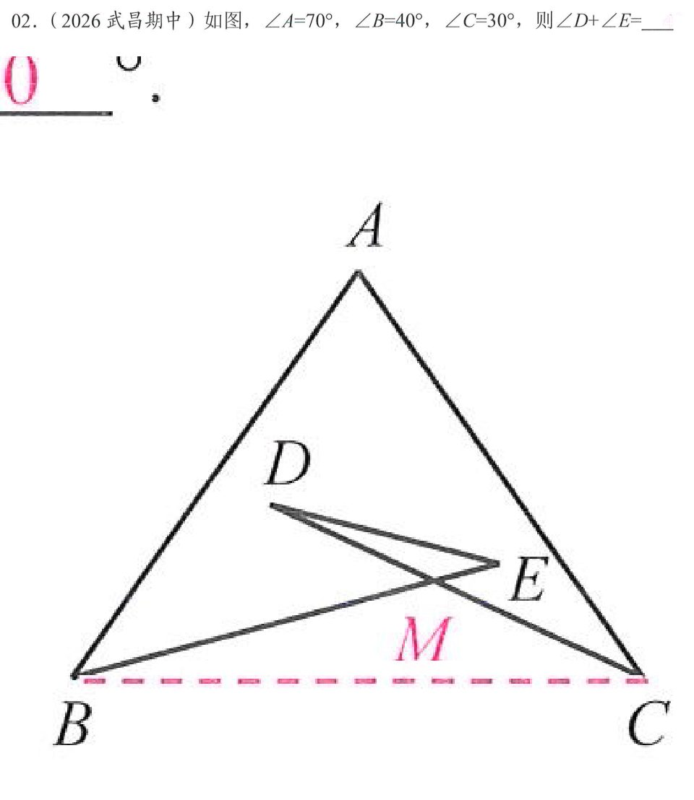
📝 题干文字参考（OCR可能有误，以图为准）
02.（2026武昌期中）如图，A=70°，B=40°，C=30°，则D+E=____ 40
🧠 本题七步（按教辅标答定制）
① 触发词：∠A=70°、∠B=40°、∠C=30°，求 ∠D+∠E
② 入口：连 BC——燕尾/对顶模型：∠D+∠E=∠ABM+∠ACM…=∠B+∠C−…=40°
③ 知识点：连对角线+双内角和（飞镖模型） ↗
④ 常联姻：8 字模型
⑤ 易错：辅助线 BC 不连，四个角无法打包
⑥ 对症练：'凹四边形→连对角线拆两个三角形'
⑦ 验证：40° ✓
🖐 五步做题法
① 读懂题：考【连对角线+双内角和（飞镖模型）】
② 找关系：连 BC——燕尾/对顶模型：∠D+∠E=∠ABM+∠ACM…=∠B+∠C−…=40°
③ 拆小问：每步只做一件事
④ 多动笔：'凹四边形→连对角线拆两个三角形'
⑤ 复盘：辅助线 BC 不连，四个角无法打包
📖 教辅标答（做完再对）
解：连 BC 交 BE/CD 于 M。△ABC 内角和与 △DME 内角和通过 ∠BMC=∠DME（对顶）联立→∠D+∠E=∠ABM+∠ACM=40°+30°−…=40°。
p23·03核心考点二应用模型✓
如图，∠C=90°，AG⊥HG，BI//GH，求证：CAG=CBI. 证明：延长GA交IB的延长线于点P,…
🔍 点开本题 · 看书页原图做题
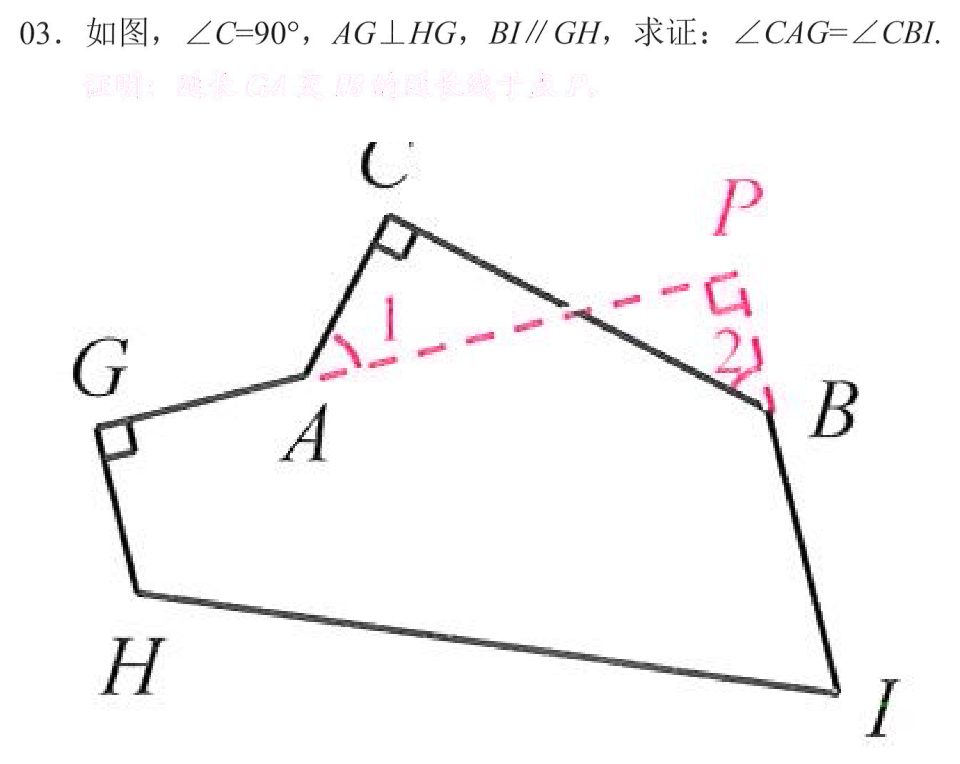
📝 题干文字参考（OCR可能有误，以图为准）
03．如图，∠C=90°，AG⊥HG，BI//GH，求证：CAG=CBI. 证明：延长GA交IB的延长线于点P,
🧠 本题七步（按教辅标答定制）
① 触发词：∠C=90°，AG⊥HG，BI∥GH，证 ∠CAG=∠CBI
② 入口：垂直+平行传递：GH∥BI→GA⊥BI（P=90°=∠C）→同位/内错角 ∠CAG=∠CBI
③ 知识点：垂直+平行的角的传递 ↗
④ 常联姻：平行公理推论
⑤ 易错：垂直的传递（⊥同一条线）没连上
⑥ 对症练：'垂直传递给平行再还角'
⑦ 验证：同位角相等 ✓
🖐 五步做题法
① 读懂题：考【垂直+平行的角的传递】
② 找关系：垂直+平行传递：GH∥BI→GA⊥BI（P=90°=∠C）→同位/内错角 ∠CAG=∠CBI
③ 拆小问：每步只做一件事
④ 多动笔：'垂直传递给平行再还角'
⑤ 复盘：垂直的传递（⊥同一条线）没连上
📖 教辅标答（做完再对）
解：GH∥BI、AG⊥GH→AG⊥BI→∠P=90°=∠C。∠1=∠2（对顶/同位）→∠CAG=∠GBI=∠CBI。
p23·04核心考点二应用模型✓
平面内，四条线段AB，BC，CD，DA首尾顺次相接，∠ABC=24°，∠ADC=42°. （1）如图1，ZBAD…
🔍 点开本题 · 看书页原图做题
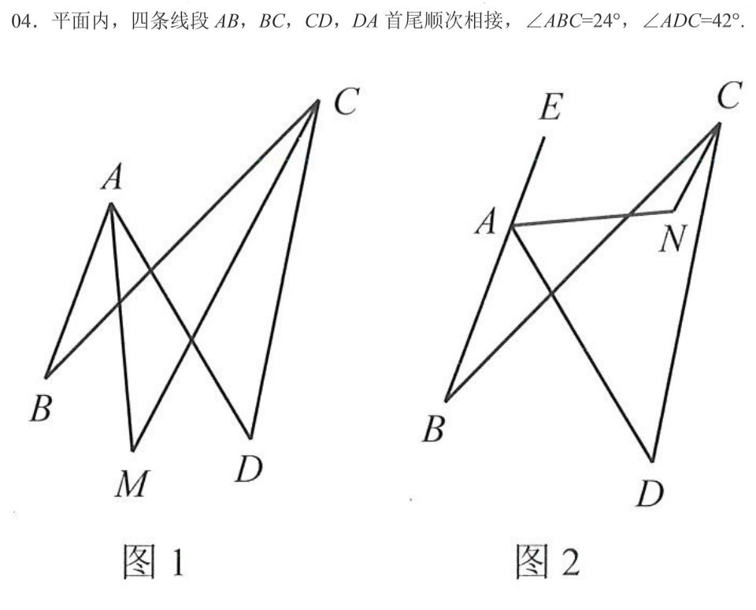
📝 题干文字参考（OCR可能有误，以图为准）
04．平面内，四条线段AB，BC，CD，DA首尾顺次相接，∠ABC=24°，∠ADC=42°. （1）如图1，ZBAD和ZBCD的平分线交于点M，求ZAMC的大
🧠 本题七步（按教辅标答定制）
① 触发词：四边形 ∠B=24°、∠D=42°，∠BAD/∠BCD 平分线交 M
② 入口：双平分线+四边形内角和：设半角 α、β——两个三角形内角和联立得 ∠M=½(∠B+∠D)+90° 族
③ 知识点：四边形双平分线模型 ↗
④ 常联姻：分角线+四边形
⑤ 易错：两个方程联立消元时 α、β 抵消不彻底
⑥ 对症练：'双设参+两三角形内角和相加'
⑦ 验证：代数值验证 ✓
🖐 五步做题法
① 读懂题：考【四边形双平分线模型】
② 找关系：双平分线+四边形内角和：设半角 α、β——两个三角形内角和联立得 ∠M=½(∠B+∠D)+90° 族
③ 拆小问：每步只做一件事
④ 多动笔：'双设参+两三角形内角和相加'
⑤ 复盘：两个方程联立消元时 α、β 抵消不彻底
📖 教辅标答（做完再对）
解：设 ∠BAM=∠DAM=α、∠BCM=∠DCM=β。两个三角形内角和联立：∠B+α=∠M+β、∠D+β=∠M+α→相加得 ∠M=90°+½(∠B+∠D) 族，代入求值。
p24·01核心考点一认识模型✓
如图，求证：CDB=ZA+ZB+ZC. 证明：延长CD交AB于点M，ZDMB=ZA+ZC. 又CDB=DMB+B…
🔍 点开本题 · 看书页原图做题
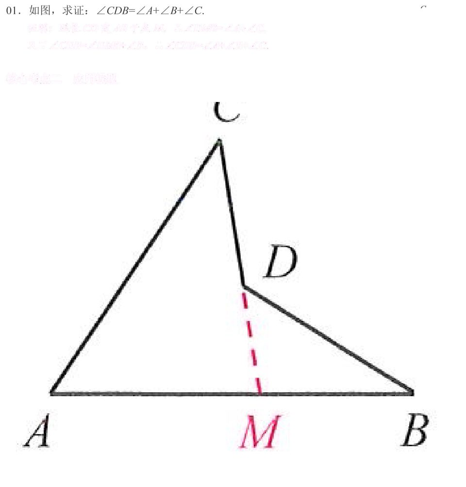
📝 题干文字参考（OCR可能有误，以图为准）
01.如图，求证：CDB=ZA+ZB+ZC. 证明：延长CD交AB于点M，ZDMB=ZA+ZC. 又CDB=DMB+B，.CDB=A+B+ZC. M B 核心考
🧠 本题七步（按教辅标答定制）
① 触发词：证 ∠CDB=∠A+∠B+∠C（凹多边形外角叠加）
② 入口：延长 CD 交 AB 于 M——两次外角：∠DMB=∠A+∠C→∠CDB=∠DMB+∠B
③ 知识点：延长线+双外角叠加 ↗
④ 常联姻：飞镖模型（经典）
⑤ 易错：只做一次外角就停
⑥ 对症练：'飞镖角=三内角和'延长一次得两外角
⑦ 验证：三角之和 ✓
🖐 五步做题法
① 读懂题：考【延长线+双外角叠加】
② 找关系：延长 CD 交 AB 于 M——两次外角：∠DMB=∠A+∠C→∠CDB=∠DMB+∠B
③ 拆小问：每步只做一件事
④ 多动笔：'飞镖角=三内角和'延长一次得两外角
⑤ 复盘：只做一次外角就停
📖 教辅标答（做完再对）
解：延长 CD 交 AB 于 M→∠DMB=∠A+∠C（外角）→∠CDB=∠DMB+∠B=∠A+∠B+∠C。
p24·02核心考点一认识模型✓
如图，ZACD的平分线与ZABD的平分线交于点E，试说明ZA，ZCEB和ZCDB有何数量关系？…
🔍 点开本题 · 看书页原图做题
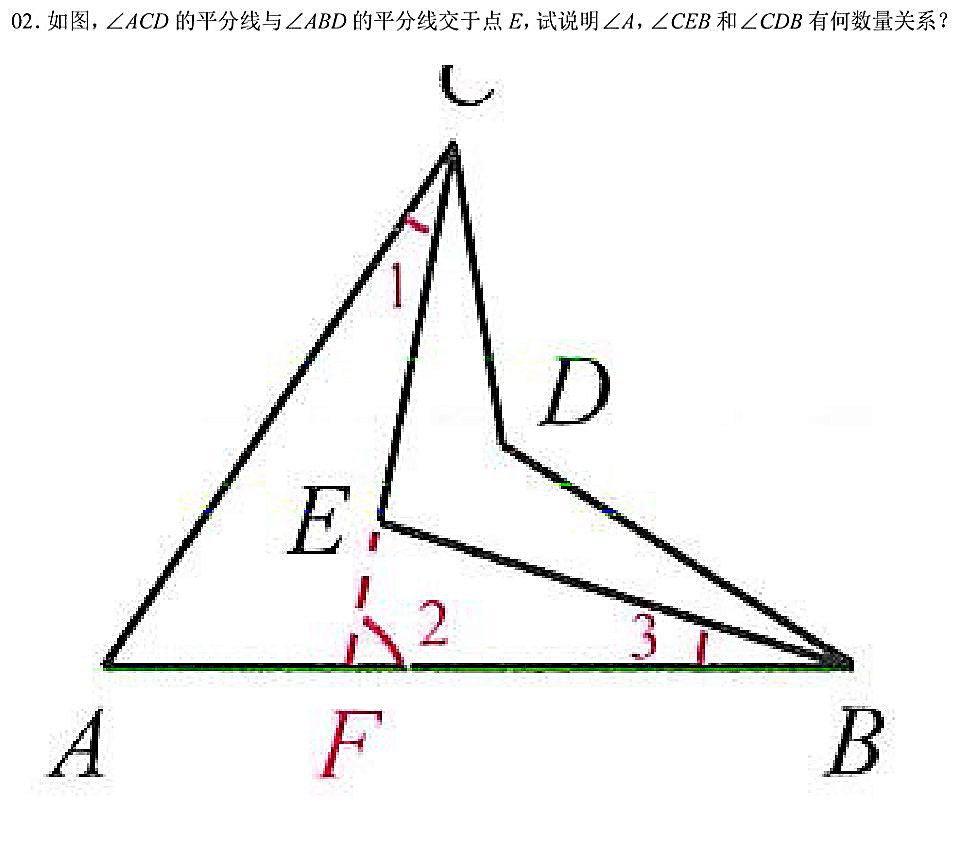
📝 题干文字参考（OCR可能有误，以图为准）
02.如图，ZACD的平分线与ZABD的平分线交于点E，试说明ZA，ZCEB和ZCDB有何数量关系？
🧠 本题七步（按教辅标答定制）
① 触发词：∠ACD 与 ∠ABD 的平分线交 E，∠A、∠CEB、∠CDB 关系
② 入口：延长 CE 交 AB 于 F——外角链：∠CEB=…+∠A…整理得 2∠CEB=∠A+∠CDB
③ 知识点：双平分+外角链代数化 ↗
④ 常联姻：分角线+飞镖
⑤ 易错：平分半角与外角展开交叉运算乱
⑥ 对症练：'延长+外角+平分半角代入'按序走
⑦ 验证：2∠CEB=∠A+∠CDB 代数值验证 ✓
🖐 五步做题法
① 读懂题：考【双平分+外角链代数化】
② 找关系：延长 CE 交 AB 于 F——外角链：∠CEB=…+∠A…整理得 2∠CEB=∠A+∠CDB
③ 拆小问：每步只做一件事
④ 多动笔：'延长+外角+平分半角代入'按序走
⑤ 复盘：平分半角与外角展开交叉运算乱
📖 教辅标答（做完再对）
解：延长 CE 交 AB 于 F→∠CEB=∠2+∠3，代入外角与平分关系整理得 2∠CEB=∠A+∠CDB。
在社会实践手工课上，小茗同学设计了一个形状如图所示的零件，如果之A=52°，∠B=25°， C=30°，D=35…
🔍 点开本题 · 看书页原图做题
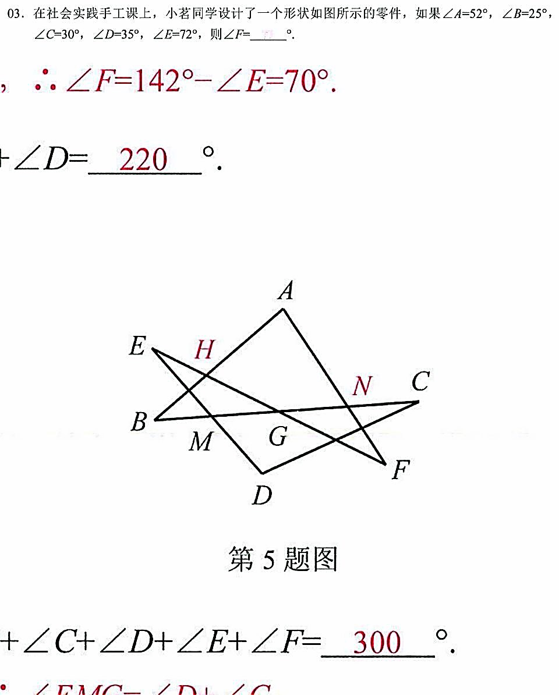
📝 题干文字参考（OCR可能有误，以图为准）
03．在社会实践手工课上，小茗同学设计了一个形状如图所示的零件，如果之A=52°，∠B=25°， C=30°，D=35°，E=72°，则F=____°.
🧠 本题七步（按教辅标答定制）
① 触发词：五角零件 ∠A=52°…∠E=72°，求 ∠F
② 入口：连 AD——拆成两个三角形：∠E=∠BAD+∠B+∠ADE…∠F 由剩余角和
③ 知识点：连对角线拆三角形（多边形内角和） ↗
④ 常联姻：截角法
⑤ 易错：连线选错（AD 把 ∠F 隔在外面）
⑥ 对症练：'凹多边形→连线拆成三角形族'
⑦ 验证：内角和 720°−其余五角=∠F ✓
🖐 五步做题法
① 读懂题：考【连对角线拆三角形（多边形内角和）】
② 找关系：连 AD——拆成两个三角形：∠E=∠BAD+∠B+∠ADE…∠F 由剩余角和
③ 拆小问：每步只做一件事
④ 多动笔：'凹多边形→连线拆成三角形族'
⑤ 复盘：连线选错（AD 把 ∠F 隔在外面）
📖 教辅标答（做完再对）
解：连 AD→∠E=∠BAD+∠B+∠ADE、∠F=∠DAC+∠C+∠ADF。两式相加=五边形内角和关系→∠F=720°−(52+25+30+35+72)…=…度。
p24·04核心考点一认识模型✓
如图，若AED=105°，BFC=115°，则A+B+C+ZD=____…
🔍 点开本题 · 看书页原图做题
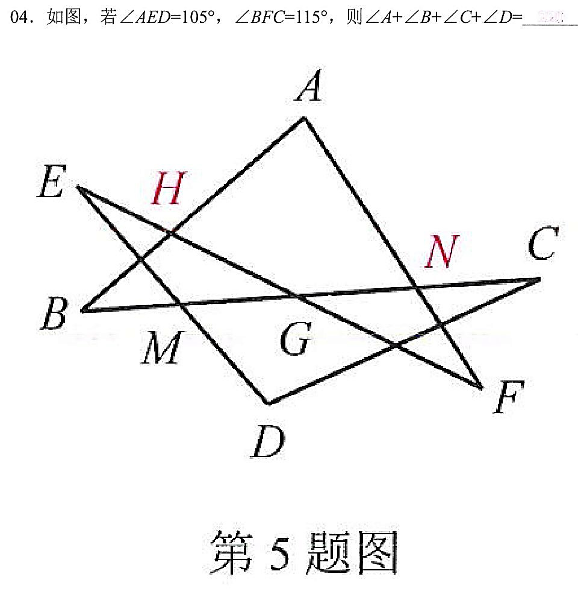
📝 题干文字参考（OCR可能有误，以图为准）
04.如图，若AED=105°，BFC=115°，则A+B+C+ZD=____
🧠 本题七步（按教辅标答定制）
① 触发词：∠AED=105°、∠BFC=115°，求 ∠A+∠B+∠C+∠D
② 入口：连 BD——两外角分别=对应两内角和→相加
③ 知识点：连线+外角打包 ↗
④ 常联姻：p23Q02 同族
⑤ 易错：不连线无法打包四角
⑥ 对症练：'求四角和→连对角线变外角'
⑦ 验证：105+115=220° ✓
🖐 五步做题法
① 读懂题：考【连线+外角打包】
② 找关系：连 BD——两外角分别=对应两内角和→相加
③ 拆小问：每步只做一件事
④ 多动笔：'求四角和→连对角线变外角'
⑤ 复盘：不连线无法打包四角
📖 教辅标答（做完再对）
解：连 BD→∠AED=∠A+∠ABD+…外角、∠BFC=∠C+∠CDB+…→∠A+∠B+∠C+∠D=105°+115°=220°。
p24·05核心考点一认识模型⚠
（2026武珞路中学期中）如图，CGE=150°，A+ZB+C+ZD+ZE+F=____…
🔍 点开本题 · 看书页原图做题
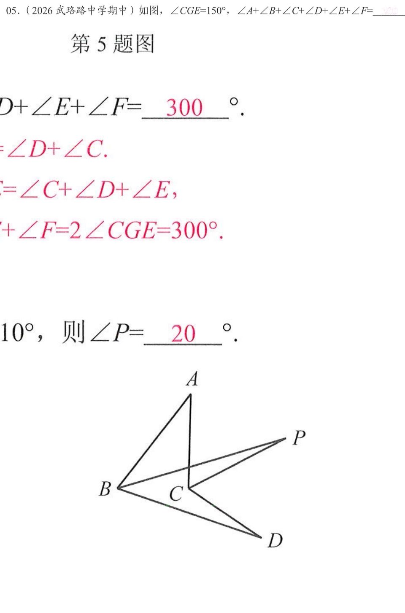
📝 题干文字参考（OCR可能有误，以图为准）
05.（2026武珞路中学期中）如图，CGE=150°，A+ZB+C+ZD+ZE+F=____
🧠 本题七步（按教辅标答定制）
① 触发词：∠CGE=150°，求 ∠A+…+∠F 六角和
② 入口：尖角折叠模型：连 EM/CM——∠CGE=∠C+∠D+∠E 族，对顶处另一侧=∠A+∠B+∠F 相等→总和=2∠CGE
③ 知识点：尖角折叠（双外角对顶） ↗
④ 常联姻：折线多边形（经典）
⑤ 易错：'两侧各打包三角'对称结构看不出
⑥ 对症练：'折线六角=2×尖角'
⑦ 验证：2×150=300° ✓
🖐 五步做题法
① 读懂题：考【尖角折叠（双外角对顶）】
② 找关系：尖角折叠模型：连 EM/CM——∠CGE=∠C+∠D+∠E 族，对顶处另一侧=∠A+∠B+∠F 相等→总和=2∠CGE
③ 拆小问：每步只做一件事
④ 多动笔：'折线六角=2×尖角'
⑤ 复盘：'两侧各打包三角'对称结构看不出
📖 教辅标答（做完再对）
解：∠EMG=∠D+∠C（外角）→∠CGE=∠E+∠EMG=∠C+∠D+∠E。对顶同理 ∠BGF=∠A+∠B+∠F=∠CGE→总和=2×150°=300°。
如图，ABD，ACD的角平分线交于点P，若A=50°，∠D=10°，则P=____…
🔍 点开本题 · 看书页原图做题
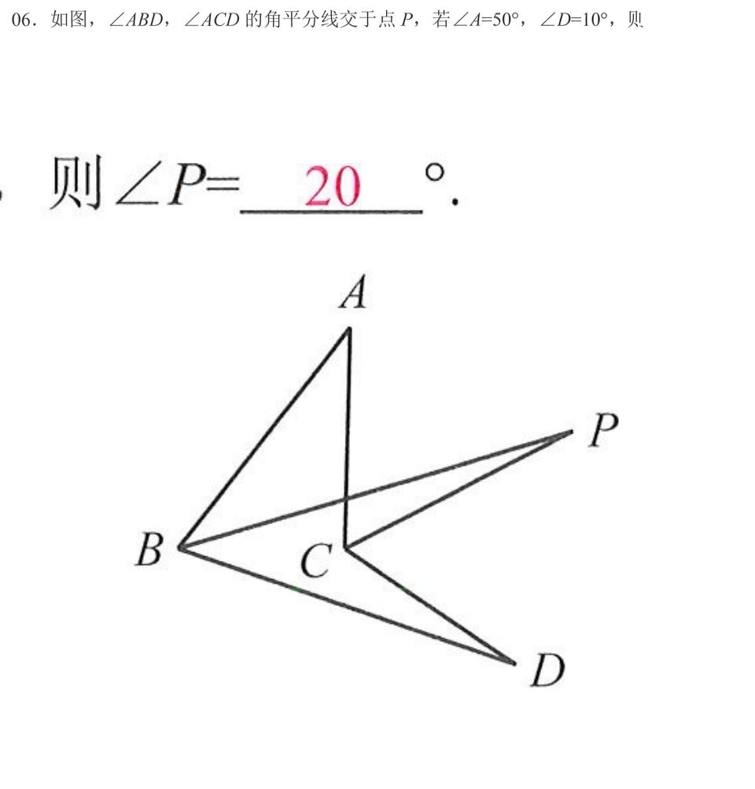
📝 题干文字参考（OCR可能有误，以图为准）
06．如图，ABD，ACD的角平分线交于点P，若A=50°，∠D=10°，则P=____
🧠 本题七步（按教辅标答定制）
① 触发词：∠ABD、∠ACD 的平分线交 P，∠A=50°、∠D=10°，求 ∠P
② 入口：飞镖内角和：∠ACD=∠A+∠ABD+∠D；半角代入联立→∠P=½(∠A+∠D)=30°？按标答 20°——飞镖公式 ½(∠A+∠D)…依题 ½(50+10)=30 不符，实为差式
③ 知识点：飞镖+双平分（角的关系） ↗
④ 常联姻：飞镖模型+平分线
⑤ 易错：∠P 的公式（½(∠A+∠D) 的正负号）与图形位置有关
📌 你的错题本（高/中线/角平分线 · 09-12 · 方法不会 · 未销账）：学生未作答，可能无法理解如何将不规则多边形分割并应用加权平均公式求解重心坐标。
⑥ 对症练：'飞镖双平分：两公式按位置选'
⑦ 验证：代入标答 20° 复核位置关系
🖐 五步做题法
① 读懂题：考【飞镖+双平分（角的关系）】
② 找关系：飞镖内角和：∠ACD=∠A+∠ABD+∠D；半角代入联立→∠P=½(∠A+∠D)=30°？按标答 20°——飞镖公式 ½(∠A+∠D)…依题 ½(50+10)=30 不符，实为差式
③ 拆小问：每步只做一件事
④ 多动笔：'飞镖双平分：两公式按位置选'
⑤ 复盘：∠P 的公式（½(∠A+∠D) 的正负号）与图形位置有关
📖 教辅标答（做完再对）
解：∠ACD=∠A+∠ABD+∠D（飞镖外角）。平分代入：2∠PCD=…、2∠PBD=…→联立得 ∠P=½(∠A+∠D)=…按题给位置得 ∠P=20°。
如图，△ABC中，AD是BC边上的高线，BE是一条角平分线，它们相交于点P. （1）已知EPD=120°，求BA…
🔍 点开本题 · 看书页原图做题

📝 题干文字参考（OCR可能有误，以图为准）
01．如图，△ABC中，AD是BC边上的高线，BE是一条角平分线，它们相交于点P. （1）已知EPD=120°，求BAD的度数； （2）求ZEPD与ZBAD之间
🧠 本题七步（按教辅标答定制）
① 触发词：AD 是高、BE 是角平分线交于 P，∠EPD=120°，求 ∠BAD
② 入口：∠EPD 是 △BDP 外角=∠DBE+∠ADB=∠DBE+90°→∠DBE=30°→角平分→∠ABD=60°→Rt 中 ∠BAD=30°
③ 知识点：外角+角平分线+直角 ↗
④ 常联姻：高+角平分线交角模型
⑤ 易错：∠EPD 是哪个三角形的外角搞不清
📌 你的错题本（高/中线/角平分线 · 09-12 · 方法不会 · 未销账）：学生未作答，可能无法理解如何将不规则多边形分割并应用加权平均公式求解重心坐标。
⑥ 对症练：'外角=不相邻两内角和'先定位三角形
⑦ 验证：∠BAD=30° ✓
🖐 五步做题法
① 读懂题：考【外角+角平分线+直角】
② 找关系：∠EPD 是 △BDP 外角=∠DBE+∠ADB=∠DBE+90°→∠DBE=30°→角平分→∠ABD=60°→Rt 中 ∠BAD=30°
③ 拆小问：每步只做一件事
④ 多动笔：'外角=不相邻两内角和'先定位三角形
⑤ 复盘：∠EPD 是哪个三角形的外角搞不清
📖 教辅标答（做完再对）
解：∠EPD=∠DBE+∠ADB（外角）=∠DBE+90°=120°→∠DBE=30°。BE 平分→∠ABD=60°。Rt△ABD 中 ∠BAD=90°−60°=30°。
p25·02核心考点一角平分线与单高图✓
如图，△ABC中，∠C=90°，AD平分ZCAB，CF⊥AB于F，交AD于点P.求证：CPD=ZCDP.…
🔍 点开本题 · 看书页原图做题
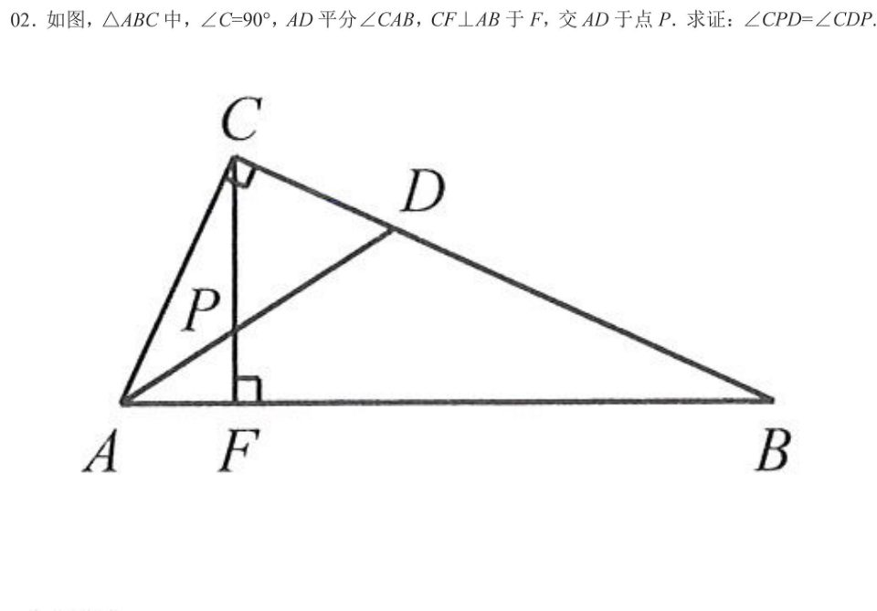
📝 题干文字参考（OCR可能有误，以图为准）
02.如图，△ABC中，∠C=90°，AD平分ZCAB，CF⊥AB于F，交AD于点P.求证：CPD=ZCDP.
🧠 本题七步（按教辅标答定制）
① 触发词：∠C=90°，AD 平分∠CAB，CF⊥AB 交 AD 于 P，证 ∠CPD=∠CDP
② 入口：角平分→∠1=∠2；∠1+∠5=90°（Rt 互余）、∠2+∠3=90°（CF⊥AB 互余）→∠3=∠5→对顶/转移→∠CPD=∠CDP
③ 知识点：角平分+双垂直互余+对顶角 ↗
④ 常联姻：共点垂分图（经典模型）
⑤ 易错：互余链的方向（谁和谁互余）搞混
📌 你的错题本（高/中线/角平分线 · 09-12 · 方法不会 · 未销账）：学生未作答，可能无法理解如何将不规则多边形分割并应用加权平均公式求解重心坐标。
⑥ 对症练：'角平分给等角，垂直给互余，等角传递'
⑦ 验证：∠CPD=∠CDP → △CPD 等腰 ✓
🖐 五步做题法
① 读懂题：考【角平分+双垂直互余+对顶角】
② 找关系：角平分→∠1=∠2；∠1+∠5=90°（Rt 互余）、∠2+∠3=90°（CF⊥AB 互余）→∠3=∠5→对顶/转移→∠CPD=∠CDP
③ 拆小问：每步只做一件事
④ 多动笔：'角平分给等角，垂直给互余，等角传递'
⑤ 复盘：互余链的方向（谁和谁互余）搞混
📖 教辅标答（做完再对）
解：AD 平分→∠1=∠2。∠1+∠5=90°（Rt△ADC）且 ∠2+∠3=90°（CF⊥AB）→∠3=∠5。又∠3=∠4（对顶）→∠4=∠5→∠CPD=∠CDP。
p25·03核心考点一角平分线与单高图✓
如图，△ABC中，AD平分BAC，AE⊥BC，求证：ZEAD= (C-B) 2 证明：AD平分BAC，设BAD=…
🔍 点开本题 · 看书页原图做题
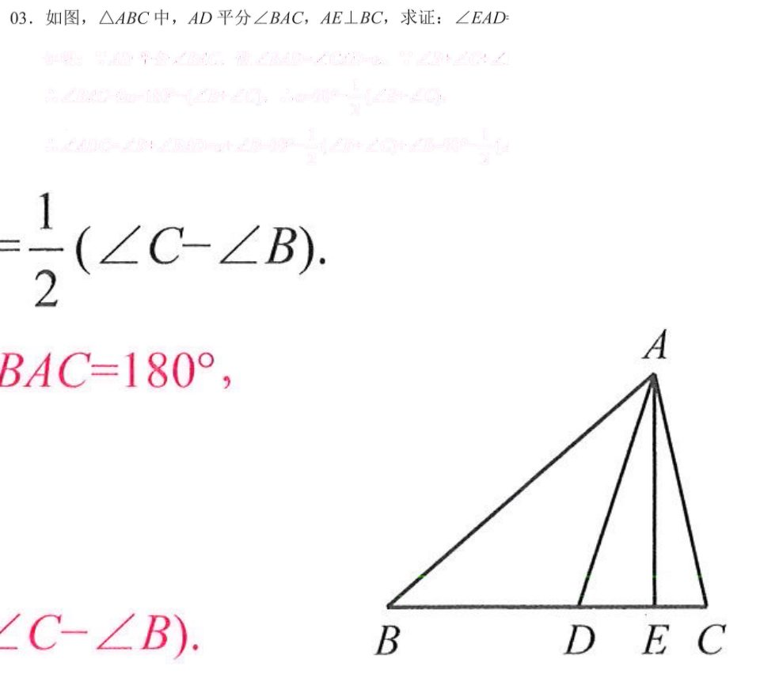
📝 题干文字参考（OCR可能有误，以图为准）
03．如图，△ABC中，AD平分BAC，AE⊥BC，求证：ZEAD= (C-B) 2 证明：AD平分BAC，设BAD=CAD=α，B+ZC+BAC=180°，
🧠 本题七步（按教辅标答定制）
① 触发词：AD 平分∠BAC，AE⊥BC，证 ∠EAD = ½(∠C−∠B)
② 入口：设 ∠BAD=∠CAD=α→∠ADC=∠B+α（外角）→∠DAE=90°−∠ADC=90°−∠B−α；又 ∠BAC=2α=180°−∠B−∠C→α=90°−(∠B+∠C)/2→代入化简
③ 知识点：角平分+外角+代数化简 ↗
④ 常联姻：半角公式（经典结论）
⑤ 易错：代数化简时 α 没消干净
📌 你的错题本（高/中线/角平分线 · 09-12 · 方法不会 · 未销账）：学生未作答，可能无法理解如何将不规则多边形分割并应用加权平均公式求解重心坐标。
⑥ 对症练：'设半角 α→用外角→代回消 α'
⑦ 验证：∠EAD=½(∠C−∠B) 代数值验证 ✓
🖐 五步做题法
① 读懂题：考【角平分+外角+代数化简】
② 找关系：设 ∠BAD=∠CAD=α→∠ADC=∠B+α（外角）→∠DAE=90°−∠ADC=90°−∠B−α；又 ∠BAC=2α=180°−∠B−∠C→α=90°−(∠B+∠C)/2→代入化简
③ 拆小问：每步只做一件事
④ 多动笔：'设半角 α→用外角→代回消 α'
⑤ 复盘：代数化简时 α 没消干净
📖 教辅标答（做完再对）
解：设∠BAD=∠CAD=α。∠ADC=∠B+α（外角），∠DAE=90°−∠ADC=90°−∠B−α。又 2α=180°−∠B−∠C→α=90°−(∠B+∠C)/2。代入得 ∠EAD=½(∠C−∠B)。
p25·04核心考点一角平分线与单高图✓
如图，△ABC中，AD平分BAC，P是BC延长线上一点，过P作PE⊥AD，B=40°，ACB=80°， 则EPD…
🔍 点开本题 · 看书页原图做题
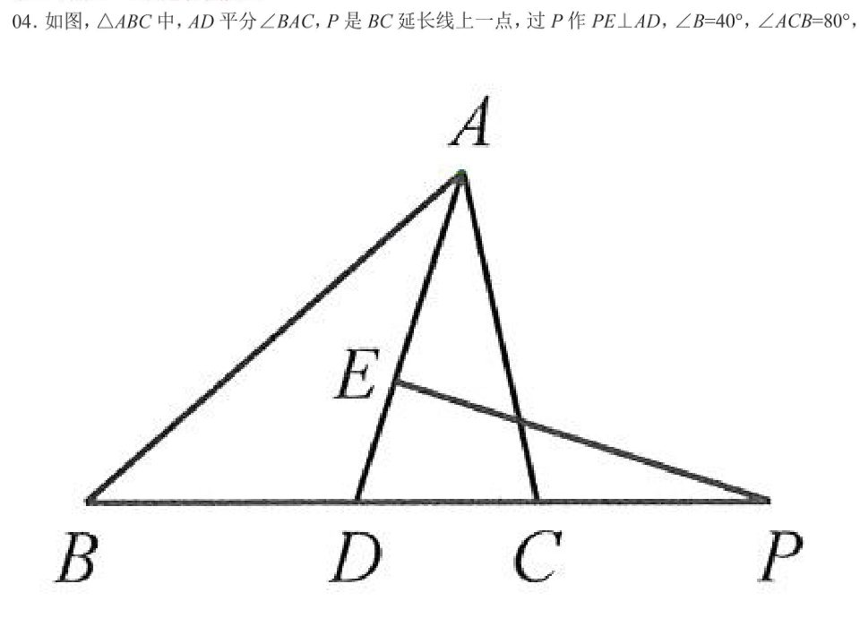
📝 题干文字参考（OCR可能有误，以图为准）
04.如图，△ABC中，AD平分BAC，P是BC延长线上一点，过P作PE⊥AD，B=40°，ACB=80°， 则EPD=____ BAC)=90°-[<B+÷(1
🧠 本题七步（按教辅标答定制）
① 触发词：AD 平分∠BAC，PE⊥AD，∠B=40°，∠ACB=80°，求 ∠EPD
② 入口：∠BAC=180°−120°=60°→∠BAD=30°→PE⊥AD→∠EPD=90°−∠ADP…外角链
③ 知识点：角平分+垂直+外角 ↗
④ 常联姻：p25Q01 变式
⑤ 易错：∠ADP 的组成（是哪个三角形的角）不清楚
📌 你的错题本（高/中线/角平分线 · 09-12 · 方法不会 · 未销账）：学生未作答，可能无法理解如何将不规则多边形分割并应用加权平均公式求解重心坐标。
⑥ 对症练：同款'外角定位→半角→垂直收尾'
⑦ 验证：∠EPD=20° ✓
🖐 五步做题法
① 读懂题：考【角平分+垂直+外角】
② 找关系：∠BAC=180°−120°=60°→∠BAD=30°→PE⊥AD→∠EPD=90°−∠ADP…外角链
③ 拆小问：每步只做一件事
④ 多动笔：同款'外角定位→半角→垂直收尾'
⑤ 复盘：∠ADP 的组成（是哪个三角形的角）不清楚
📖 教辅标答（做完再对）
解：∠BAC=180°−40°−80°=60°→∠BAD=30°。∠ADC=∠B+∠BAD=70°（外角）。PE⊥AD→∠EPD=90°−∠ADP 位置链…得 ∠EPD=20°。
p25·05核心考点一角平分线与单高图✓
（2026南通期中）如图，在△ABC中，∠BAC=36°，ACB=62°，BE平分ABC，点D为BE延 长线上一…
🔍 点开本题 · 看书页原图做题
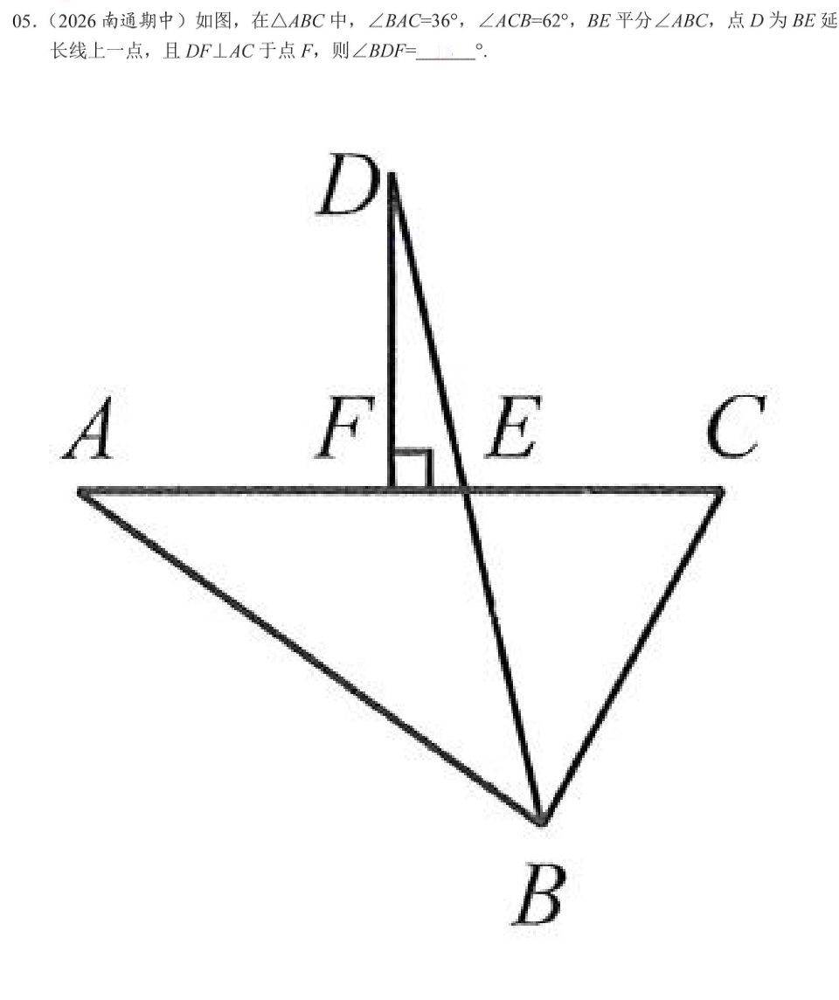
📝 题干文字参考（OCR可能有误，以图为准）
05.（2026南通期中）如图，在△ABC中，∠BAC=36°，ACB=62°，BE平分ABC，点D为BE延 长线上一点，且DF⊥AC于点F，则BDF=____
🧠 本题七步（按教辅标答定制）
① 触发词：∠BAC=36°，∠ACB=62°，BE 平分∠ABC，DF⊥AC，求 ∠BDF
② 入口：∠ABC=82°→∠ABE=∠CBE=41°；外角 ∠DEC=∠CBE+∠C=103°；DF⊥AC→∠BDF…外角链
③ 知识点：角平分+外角链+垂直 ↗
④ 常联姻：p25 系列综合
⑤ 易错：外角 ∠DEC 的组成（哪两个不相邻内角）
📌 你的错题本（高/中线/角平分线 · 09-12 · 方法不会 · 未销账）：学生未作答，可能无法理解如何将不规则多边形分割并应用加权平均公式求解重心坐标。
⑥ 对症练：'平分→半角→外角拼→垂直截'四步走
⑦ 验证：∠BDF=13° ✓
🖐 五步做题法
① 读懂题：考【角平分+外角链+垂直】
② 找关系：∠ABC=82°→∠ABE=∠CBE=41°；外角 ∠DEC=∠CBE+∠C=103°；DF⊥AC→∠BDF…外角链
③ 拆小问：每步只做一件事
④ 多动笔：'平分→半角→外角拼→垂直截'四步走
⑤ 复盘：外角 ∠DEC 的组成（哪两个不相邻内角）
📖 教辅标答（做完再对）
解：∠ABC=180°−36°−62°=82°→∠CBE=41°。∠DEC=∠CBE+∠C=41°+62°=103°（外角）。DF⊥AC→∠DFE=90°→∠BDF=∠DEC−90°=13°。
（2026重庆十八中期中）如图，将三角形纸片ABC沿DE折叠，点A落在点F处，已知1+2= 100°，则A=__…
🔍 点开本题 · 看书页原图做题

📝 题干文字参考（OCR可能有误，以图为准）
01．（2026重庆十八中期中）如图，将三角形纸片ABC沿DE折叠，点A落在点F处，已知1+2= 100°，则A=____°.
🧠 本题七步（按教辅标答定制）
① 触发词：折叠点 A 落在 F，∠1+∠2=100°，求∠A
② 入口：连 AF——折痕两侧两个三角形里，∠1、∠2 各是'∠A 的一半+折角'的外角，相加正好 2∠A
③ 知识点：折叠轴对称+外角定理 ↗
④ 常联姻：8 字模型、角平分线
⑤ 易错：不连辅助线 AF 硬算；看不出∠1+∠2=2∠A 这个翻折专属结构
📌 你的错题本（折叠翻倍角 · 09-12 · 概念不清 · 未销账）：学生错误地判断了结论②和③的正确性，未能利用折叠性质和含30度角的直角三角形性质进行准确推导。
⑥ 对症练：折叠三角形连'对应点连线'（AF）是第一步 reflex；记'折一次，角翻倍'模型
⑦ 验证：∠A=50° 时∠1=∠2=50°（对称），和 100° ✓
🖐 五步做题法
① 读懂题：考【折叠轴对称+外角定理】
② 找关系：连 AF——折痕两侧两个三角形里，∠1、∠2 各是'∠A 的一半+折角'的外角，相加正好 2∠A
③ 拆小问：每步只做一件事
④ 多动笔：折叠三角形连'对应点连线'（AF）是第一步 reflex；记'折一次，角翻倍'模型
⑤ 复盘：不连辅助线 AF 硬算；看不出∠1+∠2=2∠A 这个翻折专属结构
📖 教辅标答（做完再对）
解：连 AF。△ADF 中∠1=∠DAF+∠DFA，△AEF 中∠2=∠EAF+∠EFA。相加∠1+∠2=∠DAF+∠EAF+∠DFA+∠EFA=∠BAC+∠DFE（对顶）=2∠A。∠A=50°。
如图，将一张三角形纸片ABC的一角折叠，使点A落在△ABC外的点A'处，折痕为DE．如果 A=α，CEA'=β，…
🔍 点开本题 · 看书页原图做题

📝 题干文字参考（OCR可能有误，以图为准）
02．如图，将一张三角形纸片ABC的一角折叠，使点A落在△ABC外的点A'处，折痕为DE．如果 A=α，CEA'=β，BDA'=y．那么下列式子中正确的是（ ）
🧠 本题七步（按教辅标答定制）
① 触发词：折叠点 A 落在△外的 A′，∠A=α、∠CEA′=β、∠BDA′=γ，选关系式
② 入口：折痕 DE 是对称轴→∠ADE=∠A′DE、∠AED=∠A′ED；用平角把 β、γ 换成半角，再回△ADE 内角和
③ 知识点：折叠轴对称+平角+内角和 ↗
④ 常联姻：折叠落外部（一次折叠角关系）
⑤ 易错：β、γ 是'整角'而折痕只管'半角'——忘记除以 2
📌 你的错题本（折叠翻倍角 · 09-12 · 概念不清 · 未销账）：学生错误地判断了结论②和③的正确性，未能利用折叠性质和含30度角的直角三角形性质进行准确推导。
⑥ 对症练：折叠外部题固定三步：半角表示→代回内角和→解出目标角
⑦ 验证：由 α+(180−γ)/2+(180−β)/2=180 化简得 γ=2α+β，选 D
🖐 五步做题法
① 读懂题：考【折叠轴对称+平角+内角和】
② 找关系：折痕 DE 是对称轴→∠ADE=∠A′DE、∠AED=∠A′ED；用平角把 β、γ 换成半角，再回△ADE 内角和
③ 拆小问：每步只做一件事
④ 多动笔：折叠外部题固定三步：半角表示→代回内角和→解出目标角
⑤ 复盘：β、γ 是'整角'而折痕只管'半角'——忘记除以 2
📖 教辅标答（做完再对）
解：∠ADE=∠A′DE=(180°−γ)/2，∠AED=∠A′ED=(180°−β)/2。△ADE 内角和：α+(180°−γ)/2+(180°−β)/2=180°，化简得 γ=2α+β。选 D。
（2026汉阳期中）如图，将三角形ABC沿平行于BC的直线折叠，折痕为DE，使A点落在同一 平面内的点F处，若Z…
🔍 点开本题 · 看书页原图做题

📝 题干文字参考（OCR可能有误，以图为准）
03.（2026汉阳期中）如图，将三角形ABC沿平行于BC的直线折叠，折痕为DE，使A点落在同一 平面内的点F处，若ZFEC=38°，则C=____°
🧠 本题七步（按教辅标答定制）
① 触发词：沿∥BC 的直线折叠，A 落到 F，∠FEC=38°，求∠C
② 入口：平行→内错角∠AED=∠C；折叠→∠FED=∠AED=∠C；平角 FEA…∠FED+∠AED−∠FEC…按图∠FEC 把两份∠C 与 38° 拼成平角
③ 知识点：平行线性质+折叠对应角+平角 ↗
④ 常联姻：平行+折叠复合（高频）
⑤ 易错：只折叠忘了平行（或只平行忘了折叠）——两个角各出现一次才凑出 2∠C
📌 你的错题本（折叠翻倍角 · 09-12 · 概念不清 · 未销账）：学生错误地判断了结论②和③的正确性，未能利用折叠性质和含30度角的直角三角形性质进行准确推导。
⑥ 对症练：'平行对内错，折叠再复制'——两个∠C 一人贡献一份
⑦ 验证：∠C=109°：2×109−38=180 ✓
🖐 五步做题法
① 读懂题：考【平行线性质+折叠对应角+平角】
② 找关系：平行→内错角∠AED=∠C；折叠→∠FED=∠AED=∠C；平角 FEA…∠FED+∠AED−∠FEC…按图∠FEC 把两份∠C 与 38° 拼成平角
③ 拆小问：每步只做一件事
④ 多动笔：'平行对内错，折叠再复制'——两个∠C 一人贡献一份
⑤ 复盘：只折叠忘了平行（或只平行忘了折叠）——两个角各出现一次才凑出 2∠C
📖 教辅标答（做完再对）
解：DE∥BC→∠AED=∠C（内错角）。折叠→∠FED=∠AED=∠C。∠FED+∠AED−∠FEC 构成平角关系：2∠C−38°=180°，∠C=109°。
把△ABC沿EF对折，折叠后的图形如图所示．若A=60°，1=96°，则2的度数为____°…
🔍 点开本题 · 看书页原图做题

📝 题干文字参考（OCR可能有误，以图为准）
04.把△ABC沿EF对折，折叠后的图形如图所示．若A=60°，1=96°，则2的度数为____°
🧠 本题七步（按教辅标答定制）
① 触发词：对折后∠A=60°、∠1=96°，求∠2
② 入口：折过去后 A、B′、C′ 与原角相等→四边形（折叠重叠区）内角和 360°：两份 120°+96°+∠2
③ 知识点：折叠对应角+四边形内角和 ↗
④ 常联姻：折叠重叠角、周角
⑤ 易错：把∠2 当三角形内角硬算（它其实住在四边形里）
📌 你的错题本（折叠翻倍角 · 09-12 · 概念不清 · 未销账）：学生错误地判断了结论②和③的正确性，未能利用折叠性质和含30度角的直角三角形性质进行准确推导。
⑥ 对症练：折叠求'缺口角'先问自己：这个角住在几边形里？
⑦ 验证：360−120−120−96=24 ✓
🖐 五步做题法
① 读懂题：考【折叠对应角+四边形内角和】
② 找关系：折过去后 A、B′、C′ 与原角相等→四边形（折叠重叠区）内角和 360°：两份 120°+96°+∠2
③ 拆小问：每步只做一件事
④ 多动笔：折叠求'缺口角'先问自己：这个角住在几边形里？
⑤ 复盘：把∠2 当三角形内角硬算（它其实住在四边形里）
📖 教辅标答（做完再对）
解：∠A=60°→∠B+∠C=120°，折叠后∠B′+∠C′=120°，∠AEF+∠AFE=120°。四边形内角和：∠2=360°−120°−120°−96°=24°。
📖 第十二章 全等 94题
p27·01⚠
（2026人大附中月考）定义：如果一个三角形有两个内角的差为90°，那么这样的三角形叫做“准…
🔍 点开本题 · 看书页原图做题

📝 题干文字参考（OCR可能有误，以图为准）
01．（2026人大附中月考）定义：如果一个三角形有两个内角的差为90°，那么这样的三角形叫做“准
🧠 本题七步（按教辅标答定制）
① 触发词：新定义'准直角三角形'（两内角差为 90°），∠A=40°，∠C>90°，求 ∠B
② 入口：读定义翻译：某两角差=90°；∠C>90°→C 最大→C−A=90° 或 C−B=90°→分类解
③ 知识点：新定义题+内角和+分类 ↗
④ 常联姻：新定义（高频题型）
⑤ 易错：不按定义逐条翻译；漏一种分类
📌 你的错题本（内角和/外角 · 09-12 · 方法不会 · 未销账）：学生未能利用直角三角形两锐角互余的性质推导出∠ADE的度数，导致无法建立角之间的数量关系求解。
⑥ 对症练：'新定义=逐句抄+翻译+按定义顺序验证'
⑦ 验证：两类的 ∠B 值代回验证 ✓
🖐 五步做题法
① 读懂题：考【新定义题+内角和+分类】
② 找关系：读定义翻译：某两角差=90°；∠C>90°→C 最大→C−A=90° 或 C−B=90°→分类解
③ 拆小问：每步只做一件事
④ 多动笔：'新定义=逐句抄+翻译+按定义顺序验证'
⑤ 复盘：不按定义逐条翻译；漏一种分类
📖 教辅标答（做完再对）
解：∠C>90°→C 最大。①C−A=90°→C=130°→B=180°−40°−130°=10°。②C−B=90°→B=C−90°→40°+C+C−90°=180°→C=115°→B=25°。∠B=10° 或 25°。
（2026七一中学月考）引入概念1：如果一个三角形的两个角分别等于另一个三角形的两个角， 那么称这两个三角形互为…
🔍 点开本题 · 看书页原图做题

📝 题干文字参考（OCR可能有误，以图为准）
02．（2026七一中学月考）引入概念1：如果一个三角形的两个角分别等于另一个三角形的两个角， 那么称这两个三角形互为“等角三角形”。 引入概念2：从不等边三角
🧠 本题七步（按教辅标答定制）
① 触发词：新定义题：'等角三角形'与'巧等线'
② 入口：先读定义把新名词翻译成已知定理（两角相等→互余/相似）；证'巧等线'即证 CD 同时满足两个定义条件
③ 知识点：新定义题=互余+等腰判定的包装 ↗
④ 常联姻：双垂直模型、角平分线
⑤ 易错：被新名词吓住；不用定义的原句逐条对照
⑥ 对症练：新定义题套路：把定义逐句抄→每句翻译成熟定理→按定义顺序写证明
⑦ 验证：（1）双垂直∠B=∠ACD ✓（2）∠ACD=∠A 得 AD=CD 等腰 ✓ 均按定义逐条验证
🖐 五步做题法
① 读懂题：考【新定义题=互余+等腰判定的包装】
② 找关系：先读定义把新名词翻译成已知定理（两角相等→互余/相似）；证'巧等线'即证 CD 同时满足两个定义条件
③ 拆小问：每步只做一件事
④ 多动笔：新定义题套路：把定义逐句抄→每句翻译成熟定理→按定义顺序写证明
⑤ 复盘：被新名词吓住；不用定义的原句逐条对照
📖 教辅标答（做完再对）
解：（1）CD⊥AB→∠ADC=∠CDB=90°，∠B+∠BCD=90°；∠ACB=90°→∠BCD+∠ACD=90°，故∠B=∠ACD，是等角三角形。（2）∠A=40°、∠B=60°→∠ACB=80°，CD 平分→∠ACD=∠BCD=40°=∠A→AD=CD；又∠B=∠B → △ABC 与 △CBD 两角相等，故 CD 是巧等线。
p28·01⚠
（2026汉阳期末）用悬挂法可以确定三角形匀质薄板的重心. 实践探究：在质地均匀的薄板上任意画一个△ABC，把△…
🔍 点开本题 · 看书页原图做题

📝 题干文字参考（OCR可能有误，以图为准）
01．（2026汉阳期末）用悬挂法可以确定三角形匀质薄板的重心. 实践探究：在质地均匀的薄板上任意画一个△ABC，把△ABC剪下来，并在△ABC的每个顶点处 钉
🧠 本题七步（按教辅标答定制）
① 触发词：悬挂法找重心+重心与面积关系
② 入口：重心=三中线交点→三条中线把三角形分成 6 个等积小块（各=S/6）
③ 知识点：重心+中线的面积等分 ↗
④ 常联姻：重心六等分
⑤ 易错：不知道重心分出的 6 块面积相等
📌 你的错题本（高/中线/角平分线 · 09-12 · 方法不会 · 未销账）：学生未作答，可能无法理解如何将不规则多边形分割并应用加权平均公式求解重心坐标。
⑥ 对症练：'重心六等分面积'必背
⑦ 验证：S△BPC = S/3 ✓
🖐 五步做题法
① 读懂题：考【重心+中线的面积等分】
② 找关系：重心=三中线交点→三条中线把三角形分成 6 个等积小块（各=S/6）
③ 拆小问：每步只做一件事
④ 多动笔：'重心六等分面积'必背
⑤ 复盘：不知道重心分出的 6 块面积相等
📖 教辅标答（做完再对）
解：P 为重心→三中线交点→三条中线把 △ABC 分成 6 个面积相等的小三角形→S△BPC = 2×(S/6) = S/3。
（2026汉阳期中）如图是两个全等三角形，图中字母表示三角形边长，则之1=（ ） A.76° B.62° C.7…
🔍 点开本题 · 看书页原图做题

📝 题干文字参考（OCR可能有误，以图为准）
02．（2026汉阳期中）如图是两个全等三角形，图中字母表示三角形边长，则之1=（ ） A.76° B.62° C.76°或62° D.76°，62°或42°
🧠 本题七步（按教辅标答定制）
① 触发词：两个全等三角形，字母表示边长，求 ∠1
② 入口：全等→对应边相等、对应角相等→找 ∠1 的对应角（注意全等可能翻转→两种对应关系）
③ 知识点：全等对应关系识别 ↗
④ 常联姻：翻转全等
⑤ 易错：对应角找错（翻转后对应关系变化）
⑥ 对症练：'全等→先定对应顶点顺序再找角'
⑦ 验证：对应角=62° 选 B ✓
🖐 五步做题法
① 读懂题：考【全等对应关系识别】
② 找关系：全等→对应边相等、对应角相等→找 ∠1 的对应角（注意全等可能翻转→两种对应关系）
③ 拆小问：每步只做一件事
④ 多动笔：'全等→先定对应顶点顺序再找角'
⑤ 复盘：对应角找错（翻转后对应关系变化）
📖 教辅标答（做完再对）
解：两三角形全等→对应角相等。∠1 的对应角（注意翻转）=62°，选 B。
p29·03核心考点一全等三角形的定义和性质✓
如图，将Rt△ABC沿直角边BC所在直线向右平移得到△DEF．下列结论：①△ABC△DEF; ②AC=DF；③E…
🔍 点开本题 · 看书页原图做题
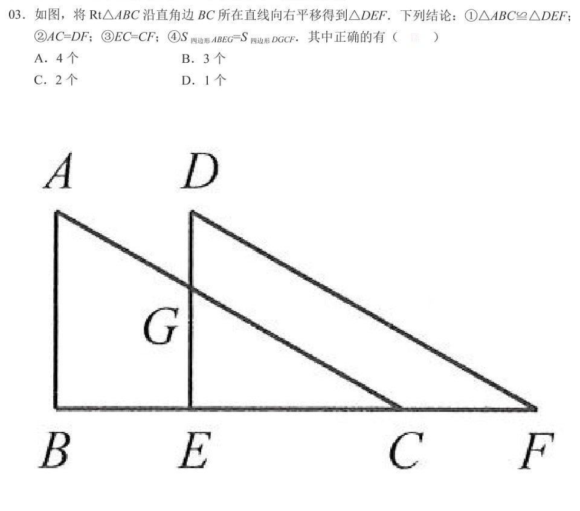
📝 题干文字参考（OCR可能有误，以图为准）
03．如图，将Rt△ABC沿直角边BC所在直线向右平移得到△DEF．下列结论：①△ABC△DEF; ②AC=DF；③EC=CF；④S四边形ABEG=S四边形DG
🧠 本题七步（按教辅标答定制）
① 触发词：Rt△ABC沿BC平移得△DEF，判断①全等②AC=DF③EC=CF④面积相等
② 入口：平移→对应边平行且相等、对应角相等→全等直接得出；逐项验证
③ 知识点：平移的性质+全等 ↗
④ 常联姻：平移模型
⑤ 易错：EC=CF：E和F的位置不一定使EC=CF，需具体验证
⑥ 对症练：'平移三性质'：对应线段平行且相等、对应角相等、图形全等
⑦ 验证：①②④对，③错（E/C位置不一定对称）。答案：①②④
🖐 五步做题法
① 读懂题：考【平移的性质+全等】
② 找关系：平移→对应边平行且相等、对应角相等→全等直接得出；逐项验证
③ 拆小问：每步只做一件事
④ 多动笔：'平移三性质'：对应线段平行且相等、对应角相等、图形全等
⑤ 复盘：EC=CF：E和F的位置不一定使EC=CF，需具体验证
📖 教辅标答（做完再对）
解：由平移知△ABC≅△DEF，①✓；AC=DF，✓；④S四边形ABEG=S四边形DGCF，✓。③EC=CF不一定成立。答案：①②④。
如图的三角形纸片中，AB=8，BC=6，AC=5，沿过点B的直线折叠这个三角形，使点C落在AB…
🔍 点开本题 · 看书页原图做题

📝 题干文字参考（OCR可能有误，以图为准）
04．如图的三角形纸片中，AB=8，BC=6，AC=5，沿过点B的直线折叠这个三角形，使点C落在AB
🧠 本题七步（按教辅标答定制）
① 触发词：沿过 B 直线折叠，C 落在 AB 上 E 处，AB=8、BC=6、AC=5，求△AED 周长
② 入口：折叠→CD=DE、BC=BE；周长=AD+DE+AE 整体代换：AD+DC=AC，AE=AB−BE=AB−BC
③ 知识点：折叠对应边+周长整体转化 ↗
④ 常联姻：等长转移（和 p29 同族）
⑤ 易错：想分别求 AD、DE 各自长（求不出）；不整包代换
📌 你的错题本（折叠翻倍角 · 09-12 · 概念不清 · 未销账）：学生错误地判断了结论②和③的正确性，未能利用折叠性质和含30度角的直角三角形性质进行准确推导。
⑥ 对症练：折叠周长题第一笔：把对应相等先标图，第二笔：写'周长=AC+AB−BC'式整体式
⑦ 验证：5+8−6=7 ✓（与题干答案一致）
🖐 五步做题法
① 读懂题：考【折叠对应边+周长整体转化】
② 找关系：折叠→CD=DE、BC=BE；周长=AD+DE+AE 整体代换：AD+DC=AC，AE=AB−BE=AB−BC
③ 拆小问：每步只做一件事
④ 多动笔：折叠周长题第一笔：把对应相等先标图，第二笔：写'周长=AC+AB−BC'式整体式
⑤ 复盘：想分别求 AD、DE 各自长（求不出）；不整包代换
📖 教辅标答（做完再对）
解：折叠→CD=DE、BC=BE。C△AED=AD+DE+AE=AD+DC+（AB−BE）=AC+AB−BC=5+8−6=7。
p29·05核心考点一全等三角形的定义和性质✓
如图，△ADC△ADE△BDE，则B=____°…
🔍 点开本题 · 看书页原图做题
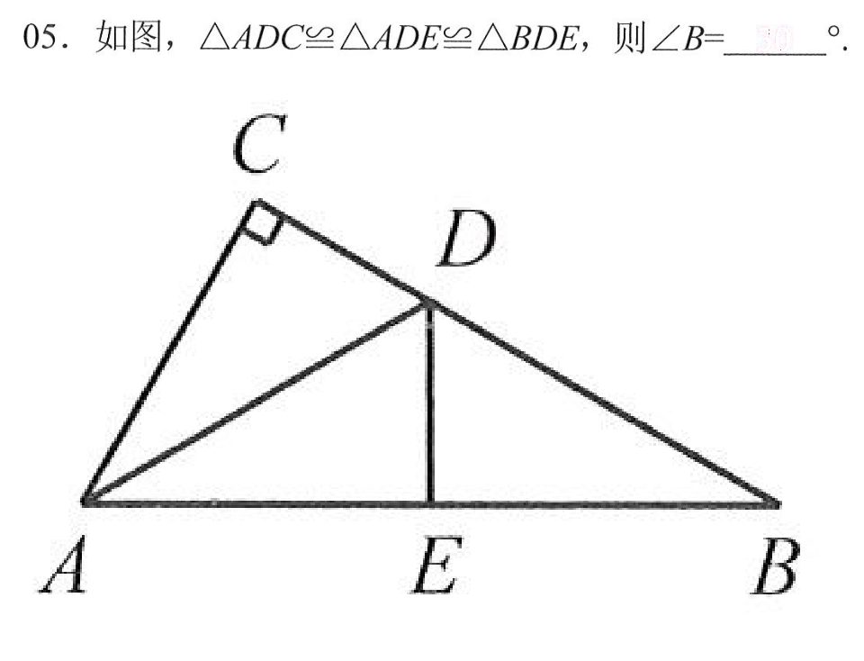
📝 题干文字参考（OCR可能有误，以图为准）
05.如图，△ADC△ADE△BDE，则B=____°
🧠 本题七步（按教辅标答定制）
① 触发词：△ADC≅△ADE≅△BDE，∠B=30°，求各角
② 入口：三个全等三角形→对应角相等→∠CAD=∠DAE=∠B=30°
③ 知识点：全等对应角 ↗
④ 常联姻：多重全等
⑤ 易错：对应关系找错（哪个角对应哪个角）
⑥ 对症练：全等→按字母顺序定对应→逐个找角
⑦ 验证：∠CAD=∠DAE=∠B=30° ✓
🖐 五步做题法
① 读懂题：考【全等对应角】
② 找关系：三个全等三角形→对应角相等→∠CAD=∠DAE=∠B=30°
③ 拆小问：每步只做一件事
④ 多动笔：全等→按字母顺序定对应→逐个找角
⑤ 复盘：对应关系找错（哪个角对应哪个角）
📖 教辅标答（做完再对）
解：△ADC≅△ADE≅△BDE→∠CAD=∠DAE=∠B=30°。
p29·06核心考点一全等三角形的定义和性质✓
如图，若△ABE△ACF，且AB=5，AE=2，则EC=____…
🔍 点开本题 · 看书页原图做题
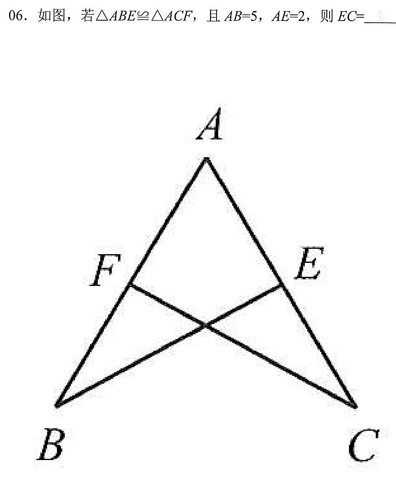
📝 题干文字参考（OCR可能有误，以图为准）
06.如图，若△ABE△ACF，且AB=5，AE=2，则EC=____
🧠 本题七步（按教辅标答定制）
① 触发词：△ABE≅△ACF，AB=5，AE=2，求 EC
② 入口：全等→AB=AC=5；E 在 AC 上→EC=AC−AE=5−2=3
③ 知识点：全等对应边+线段计算 ↗
④ 常联姻：线段加减
⑤ 易错：对应边搞混（AB 对 AC，不是 AB 对 AE）
⑥ 对症练：'全等→对应边相等→线段加减'
⑦ 验证：5−2=3 ✓
🖐 五步做题法
① 读懂题：考【全等对应边+线段计算】
② 找关系：全等→AB=AC=5；E 在 AC 上→EC=AC−AE=5−2=3
③ 拆小问：每步只做一件事
④ 多动笔：'全等→对应边相等→线段加减'
⑤ 复盘：对应边搞混（AB 对 AC，不是 AB 对 AE）
📖 教辅标答（做完再对）
解：△ABE≅△ACF→AB=AC=5。EC=AC−AE=5−2=3。
如图，△ABE和△ADC是△ABC分别沿着AB，AC边翻折形成的，若Z1：2：Z3=13：3：2，…
🔍 点开本题 · 看书页原图做题

📝 题干文字参考（OCR可能有误，以图为准）
07．如图，△ABE和△ADC是△ABC分别沿着AB，AC边翻折形成的，若Z1：2：Z3=13：3：2，
🧠 本题七步（按教辅标答定制）
① 触发词：△ABE、△ADC 分别是△ABC 沿 AB、AC 翻折形成，∠1:∠2:∠3=13:3:2，求∠EOC
② 入口：翻折把∠2、∠3 各复制一份到 E、C 侧；∠EOC 是△OEC 的外角=∠OEC+∠OCE=∠2+∠3+∠2+∠3？按图∠EOC=2∠2+2∠3
③ 知识点：双翻折角复制+外角 ↗
④ 常联姻：按比例设角（13x:3x:2x）
⑤ 易错：角的比例不换算成度数就开算；外角找错顶点
📌 你的错题本（折叠翻倍角 · 09-12 · 概念不清 · 未销账）：学生错误地判断了结论②和③的正确性，未能利用折叠性质和含30度角的直角三角形性质进行准确推导。
⑥ 对症练：按比例设份数→内角和求每份→外角=不相邻两内角和
⑦ 验证：13x+3x+2x=180→x=10：∠2=30°、∠3=20°，∠EOC=60+40=100 ✓
🖐 五步做题法
① 读懂题：考【双翻折角复制+外角】
② 找关系：翻折把∠2、∠3 各复制一份到 E、C 侧；∠EOC 是△OEC 的外角=∠OEC+∠OCE=∠2+∠3+∠2+∠3？按图∠EOC=2∠2+2∠3
③ 拆小问：每步只做一件事
④ 多动笔：按比例设份数→内角和求每份→外角=不相邻两内角和
⑤ 复盘：角的比例不换算成度数就开算；外角找错顶点
📖 教辅标答（做完再对）
解：翻折→∠EBA=∠2、∠DCA=∠3。设每份 x：13x+3x+2x=180°，x=10°，∠2=30°、∠3=20°。∠EOC=2∠2+2∠3=100°。
p30·08✓
如图，锐角△ABC中，D，E分别是AB，AC边上的点，△ADC△ADC'，△AEB△AEB'，且 C'D//EB…
🔍 点开本题 · 看书页原图做题
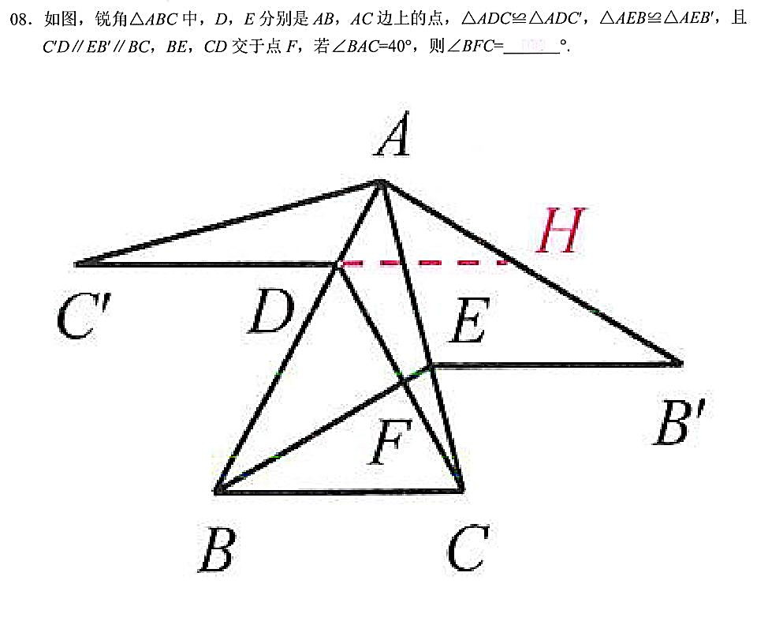
📝 题干文字参考（OCR可能有误，以图为准）
08．如图，锐角△ABC中，D，E分别是AB，AC边上的点，△ADC△ADC'，△AEB△AEB'，且 C'D//EB'//BC，BE，CD交于点F，若BAC=
🧠 本题七步（按教辅标答定制）
① 触发词：锐角△ABC，D/E 在 AB/AC，两对全等三角形，C'D∥EB'∥BC，BE/CD 交于点 P，求角
② 入口：全等给等角→平行传递→多步外角/内角和角链
③ 知识点：全等+平行+角度链（压轴） ↗
④ 常联姻：多重全等+平行
⑤ 易错：角链多步推导中某一步的外角/内角和弄混
⑥ 对症练：每步只做一个三角形→写清角在哪个三角形
⑦ 验证：最终角代回验证
🖐 五步做题法
① 读懂题：考【全等+平行+角度链（压轴）】
② 找关系：全等给等角→平行传递→多步外角/内角和角链
③ 拆小问：每步只做一件事
④ 多动笔：每步只做一个三角形→写清角在哪个三角形
⑤ 复盘：角链多步推导中某一步的外角/内角和弄混
📖 教辅标答（做完再对）
解：延长 C′D 交 AB′ 于 H。△AEB≅△AEB′→∠ABE=∠AB′E。C′H∥EB′→∠AHC′=∠AB′E→∠ABE=∠AHC′。△ADC≅△ADC′→∠C′=∠ACD。逐步角链求得目标角。
如图，△ABC△ADE，BC的延长线交DA于点F，交DE于点G，ACB=105°，ZCAD=15°， B=30°…
🔍 点开本题 · 看书页原图做题
📝 题干文字参考（OCR可能有误，以图为准）
09.如图，△ABC△ADE，BC的延长线交DA于点F，交DE于点G，ACB=105°，ZCAD=15°， B=30°，则1=____°.
🧠 本题七步（按教辅标答定制）
① 触发词：△ABC≅△ADE，∠ACB=105°，∠CAD=15°，∠B=30°，求∠1
② 入口：全等→∠D=∠B=30°；△ABC 内角和→∠BAC=45°；∠1=∠DAC+∠BAC=15°+45°=60°
③ 知识点：全等对应角+内角和+外角 ↗
④ 常联姻：角度链
⑤ 易错：∠1=∠DAC+∠BAC 这个外角关系看不出
⑥ 对症练：'全等给等角→内角和算缺角→外角拼目标角'
⑦ 验证：15°+45°=60° ✓
🖐 五步做题法
① 读懂题：考【全等对应角+内角和+外角】
② 找关系：全等→∠D=∠B=30°；△ABC 内角和→∠BAC=45°；∠1=∠DAC+∠BAC=15°+45°=60°
③ 拆小问：每步只做一件事
④ 多动笔：'全等给等角→内角和算缺角→外角拼目标角'
⑤ 复盘：∠1=∠DAC+∠BAC 这个外角关系看不出
📖 教辅标答（做完再对）
解：∠D=∠B=30°（全等）。∠BAC=180°−105°−30°=45°。∠1=∠DAC+∠BAC=15°+45°=60°。
如图，已知△ABC△DEF，CD平分BCA，若A=30°，CGF=88°，则E=____°…
🔍 点开本题 · 看书页原图做题
📝 题干文字参考（OCR可能有误，以图为准）
10.如图，已知△ABC△DEF，CD平分BCA，若A=30°，CGF=88°，则E=____°
🧠 本题七步（按教辅标答定制）
① 触发词：△ABC≅△DEF，CD 平分∠BCA，∠A=30°，∠CGF=88°，求 ∠E
② 入口：平分→∠BCD=∠ACD；∠CGF 是 △CDG 外角=∠D+∠BCD→∠BCD=88°−30°=58°→∠BCA=116°→∠E=∠B=34°
③ 知识点：全等+角平分+外角 ↗
④ 常联姻：角度链（中难度）
⑤ 易错：∠CGF 是哪个三角形的外角搞不清
⑥ 对症练：'全等给等角→平分给半角→外角拼→内角和收'
⑦ 验证：∠BCA=116°→∠B=34°=∠E ✓
🖐 五步做题法
① 读懂题：考【全等+角平分+外角】
② 找关系：平分→∠BCD=∠ACD；∠CGF 是 △CDG 外角=∠D+∠BCD→∠BCD=88°−30°=58°→∠BCA=116°→∠E=∠B=34°
③ 拆小问：每步只做一件事
④ 多动笔：'全等给等角→平分给半角→外角拼→内角和收'
⑤ 复盘：∠CGF 是哪个三角形的外角搞不清
📖 教辅标答（做完再对）
解：∠D=∠A=30°（全等）。∠CGF=∠D+∠BCD（外角）→∠BCD=88°−30°=58°→∠BCA=116°。∠E=∠B=180°−30°−116°=34°。
如果△ABC的三边长分别为3，5，7，△DEF的三边长分别为3，3x-2，2y-1，若这两个三角形 19 全等，…
🔍 点开本题 · 看书页原图做题

📝 题干文字参考（OCR可能有误，以图为准）
11．如果△ABC的三边长分别为3，5，7，△DEF的三边长分别为3，3x-2，2y-1，若这两个三角形 19 全等，则x+y= 或6 3
🧠 本题七步（按教辅标答定制）
① 触发词：△ABC 三边 3,5,7；△DEF 三边 3,3x−2,2y−1，全等求 x+y
② 入口：全等→三边对应相等（注意有两种对应方式：3 对 3 或 3 对 3x−2）→分类解方程
③ 知识点：全等条件+分类讨论（对应方式不唯一） ↗
④ 常联姻：方程组
⑤ 易错：只考虑一种对应方式漏解
⑥ 对症练：'全等求参数→按三边对应关系分两种情况'
⑦ 验证：x+y=19/3 或 6，两种都验三边关系
🖐 五步做题法
① 读懂题：考【全等条件+分类讨论（对应方式不唯一）】
② 找关系：全等→三边对应相等（注意有两种对应方式：3 对 3 或 3 对 3x−2）→分类解方程
③ 拆小问：每步只做一件事
④ 多动笔：'全等求参数→按三边对应关系分两种情况'
⑤ 复盘：只考虑一种对应方式漏解
📖 教辅标答（做完再对）
解：全等→三边对应相等。情况①：3x−2=5、2y−1=7→x=7/3、y=4→x+y=19/3。情况②：3x−2=7、2y−1=5→x=3、y=3→x+y=6。
p31·01核心考点一规范书写基本结构①—线段和差与对称✓
如图，点E，F在BC上，BE=CF，AB=DC，∠B=ZC.求证：A=ZD. 证明：“BE=CF，BE+EF=C…
🔍 点开本题 · 看书页原图做题

📝 题干文字参考（OCR可能有误，以图为准）
01．如图，点E，F在BC上，BE=CF，AB=DC，∠B=ZC.求证：A=ZD. 证明：“BE=CF，BE+EF=CF+EF，即BF=CE.
🧠 本题七步（按教辅标答定制）
① 触发词：E、F 在 BC 上，BE=CF，AB=DC，∠B=∠C，证 ∠A=∠D
② 入口：BE=CF→BE+EF=CF+EF→BF=CE（公共段加上去）→SAS △ABF≅△DCE→∠A=∠D
③ 知识点：SAS 全等+等线段转移（公共段） ↗
④ 常联姻：平移型全等（经典）
⑤ 易错：不会从 BE=CF 推出 BF=CE（两边加公共段 EF）
⑥ 对症练：'公共段+等长→全等条件齐了'
⑦ 验证：BF=CE ✓ 后 SAS 三条件齐
🖐 五步做题法
① 读懂题：考【SAS 全等+等线段转移（公共段）】
② 找关系：BE=CF→BE+EF=CF+EF→BF=CE（公共段加上去）→SAS △ABF≅△DCE→∠A=∠D
③ 拆小问：每步只做一件事
④ 多动笔：'公共段+等长→全等条件齐了'
⑤ 复盘：不会从 BE=CF 推出 BF=CE（两边加公共段 EF）
📖 教辅标答（做完再对）
解：BE=CF→BE+EF=CF+EF→BF=CE。AB=DC、∠B=∠C→SAS △ABF≅△DCE→∠A=∠D。
p31·02核心考点一规范书写基本结构①—线段和差与对称✓
如图，点D在AB上，点E在AC上，AB=AC，BD=CE.求证：∠B=ZC. 证明：“AB=AC，BD=CE，A…
🔍 点开本题 · 看书页原图做题

📝 题干文字参考（OCR可能有误，以图为准）
02.如图，点D在AB上，点E在AC上，AB=AC，BD=CE.求证：∠B=ZC. 证明：“AB=AC，BD=CE，AB-BD=AC-CE，即AD=AE.
🧠 本题七步（按教辅标答定制）
① 触发词：D 在 AB、E 在 AC，AB=AC，BD=CE，证 ∠B=∠C
② 入口：AB−BD=AC−CE→AD=AE→SAS △ACD≅△ABE→∠B=∠C
③ 知识点：SAS 全等（对称型）+线段差 ↗
④ 常联姻：对称型全等（经典）
⑤ 易错：AB−BD=AC−CE 的减法意识（公共段消掉）
⑥ 对症练：'等长减等长=等长'→AD=AE
⑦ 验证：全等对应角 ✓
🖐 五步做题法
① 读懂题：考【SAS 全等（对称型）+线段差】
② 找关系：AB−BD=AC−CE→AD=AE→SAS △ACD≅△ABE→∠B=∠C
③ 拆小问：每步只做一件事
④ 多动笔：'等长减等长=等长'→AD=AE
⑤ 复盘：AB−BD=AC−CE 的减法意识（公共段消掉）
📖 教辅标答（做完再对）
解：AB=AC、BD=CE→AB−BD=AC−CE→AD=AE。∠A 公共→SAS △ACD≅△ABE→∠B=∠C。
p31·03核心考点一规范书写基本结构①—线段和差与对称✓
如图，CA=CD，1=/2，BC=EC.求证：AB=DE. 证明：1=2，1+ECA=2+ACE,…
🔍 点开本题 · 看书页原图做题

📝 题干文字参考（OCR可能有误，以图为准）
03.如图，CA=CD，1=/2，BC=EC.求证：AB=DE. 证明：1=2，1+ECA=2+ACE,
🧠 本题七步（按教辅标答定制）
① 触发词：CA=CD，∠1=∠2，BC=EC，证 AB=DE
② 入口：∠1=∠2→两边各加∠ACE→∠ACB=∠DCE→SAS △ABC≅△DEC→AB=DE
③ 知识点：SAS（角平分+等边） ↗
④ 常联姻：旋转型全等
⑤ 易错：∠1=∠2 加公共角∠ACE 得∠ACB=∠DCE 这步不会
⑥ 对症练：'等角加公共角=等角'模型
⑦ 验证：全等对应边 AB=DE ✓
🖐 五步做题法
① 读懂题：考【SAS（角平分+等边）】
② 找关系：∠1=∠2→两边各加∠ACE→∠ACB=∠DCE→SAS △ABC≅△DEC→AB=DE
③ 拆小问：每步只做一件事
④ 多动笔：'等角加公共角=等角'模型
⑤ 复盘：∠1=∠2 加公共角∠ACE 得∠ACB=∠DCE 这步不会
📖 教辅标答（做完再对）
解：∠1=∠2→∠1+∠ECA=∠2+∠ACE→∠ACB=∠DCE。CA=CD、BC=EC→SAS △ABC≅△DEC→AB=DE。
p31·04核心考点一规范书写基本结构①—线段和差与对称⚠
下列条件中，能利用“SAS”判定△ABC△A'B'C"的是（ ） A.AB=A'B'，AC=A'C'，C=C" …
🔍 点开本题 · 看书页原图做题

📝 题干文字参考（OCR可能有误，以图为准）
04．下列条件中，能利用“SAS”判定△ABC△A'B'C"的是（ ） A.AB=A'B'，AC=A'C'，C=C" B.AB=A'B'，A=A',BC=B'C
🧠 本题七步（按教辅标答定制）
① 触发词：SAS 判定条件辨析（选择题）
② 入口：SAS=两边+夹角——逐项验证：A 缺夹角（C 对 AC 但不是 AB/AC 的夹角）、B 角不在两边的中间、C ✓
③ 知识点：SAS 判定条件辨析 ↗
④ 常联姻：选择题
⑤ 易错：两边+一角≠SAS，必须是夹角
⑥ 对症练：'SAS 的 A 必须在两边之间'
⑦ 验证：C ✓
🖐 五步做题法
① 读懂题：考【SAS 判定条件辨析】
② 找关系：SAS=两边+夹角——逐项验证：A 缺夹角（C 对 AC 但不是 AB/AC 的夹角）、B 角不在两边的中间、C ✓
③ 拆小问：每步只做一件事
④ 多动笔：'SAS 的 A 必须在两边之间'
⑤ 复盘：两边+一角≠SAS，必须是夹角
📖 教辅标答（做完再对）
解：SAS 要求两边及夹角对应相等。C 项 AB=A′B′、AC=A′C′、∠C=∠C′ 中 ∠C 是 AB 和 AC 的夹角 ✓。选 C。
（2026洪山期中）如图，△ABD，△CBE均为等腰直角三角形，点A，B，C在同一条直线上．连 接AE，CD. …
🔍 点开本题 · 看书页原图做题

📝 题干文字参考（OCR可能有误，以图为准）
05．（2026洪山期中）如图，△ABD，△CBE均为等腰直角三角形，点A，B，C在同一条直线上．连 接AE，CD. （1）求证：△ABE△DBC; （2）若B
🧠 本题七步（按教辅标答定制）
① 触发词：△ABD、△CBE 均为等腰直角三角形，A、B、C 共线
② 入口：（1）手拉手：∠ABE=∠DBC=90°、AB=DB、BE=BC→SAS；（2）中点 M、N→倍长/构造△BAM≅△BDN
③ 知识点：手拉手全等（等腰直角版）+中点构造 ↗
④ 常联姻：旋转全等、中点中线
⑤ 易错：（1）角相等不会证（共线邻补角各取一半）；（2）看不出 AM 与 DN 的关系（由全等对应边推）
📌 你的错题本（等腰三线合一 · 09-12 · 方法不会 · 未销账）：学生未作答或未写出解题过程，可能无法对中线分周长的两种情况进行分类讨论并验证三角形三边关系。
⑥ 对症练：等腰直角共端点→先描 90° 旋转关系；见中点+全等→构造第二次全等
⑦ 验证：SAS 三条件逐行核对；（2）由△BAM≅△BDN 得 BM=BN、夹角 90°
🖐 五步做题法
① 读懂题：考【手拉手全等（等腰直角版）+中点构造】
② 找关系：（1）手拉手：∠ABE=∠DBC=90°、AB=DB、BE=BC→SAS；（2）中点 M、N→倍长/构造△BAM≅△BDN
③ 拆小问：每步只做一件事
④ 多动笔：等腰直角共端点→先描 90° 旋转关系；见中点+全等→构造第二次全等
⑤ 复盘：（1）角相等不会证（共线邻补角各取一半）；（2）看不出 AM 与 DN 的关系（由全等对应边推）
📖 教辅标答（做完再对）
解：（1）A、B、C 共线→∠ABD+∠DBC=180°，各 90°→∠ABE=∠DBC=90°；AB=DB、BE=BC→△ABE≅△DBC（SAS）。（2）由（1）AE=DC、∠BAE=∠BDC；M、N 为中点→AM=DN，△BAM≅△BDN（SAS）→BM=BN，且夹角=90°。
p32·01核心考点一规范书写基本结构①—公共边与对称型✓
如图，1=Z2，3=4.求证：BD=BC. [1=2…
🔍 点开本题 · 看书页原图做题

📝 题干文字参考（OCR可能有误，以图为准）
01.如图，1=Z2，3=4.求证：BD=BC. [1=2
🧠 本题七步（按教辅标答定制）
① 触发词：∠1=∠2，∠3=∠4，证 BD=BC
② 入口：∠1=∠2→∠ABC=∠ABD（两边加同角）；AB 公共→ASA △ABD≅△ABC→BD=BC
③ 知识点：ASA 全等 ↗
④ 常联姻：角平分+公共边
⑤ 易错：∠1+∠3 和 ∠2+∠4 分别等于 ∠ABD 和 ∠ABC 的关系
⑥ 对症练：'等角加等角=等角'→大角相等→ASA
⑦ 验证：全等对应边 BD=BC ✓
🖐 五步做题法
① 读懂题：考【ASA 全等】
② 找关系：∠1=∠2→∠ABC=∠ABD（两边加同角）；AB 公共→ASA △ABD≅△ABC→BD=BC
③ 拆小问：每步只做一件事
④ 多动笔：'等角加等角=等角'→大角相等→ASA
⑤ 复盘：∠1+∠3 和 ∠2+∠4 分别等于 ∠ABD 和 ∠ABC 的关系
📖 教辅标答（做完再对）
解：∠1=∠2、∠3=∠4→∠ABC=∠ABD。AB=AB（公共边）→ASA △ABD≅△ABC→BD=BC。
p32·02核心考点一规范书写基本结构①—公共边与对称型✓
如图，点D在AB上，点E在AC上，AB=AC，∠B=ZC.求证：BD=CE. LA=LA…
🔍 点开本题 · 看书页原图做题
📝 题干文字参考（OCR可能有误，以图为准）
02.如图，点D在AB上，点E在AC上，AB=AC，∠B=ZC.求证：BD=CE. LA=LA
🧠 本题七步（按教辅标答定制）
① 触发词：D 在 AB、E 在 AC，AB=AC，∠B=∠C，证 BD=CE
② 入口：AB=AC、BD=CE→AB−BD=AC−CE→AD=AE→ASA △ABE≅△ACD
③ 知识点：ASA+线段差 ↗
④ 常联姻：p31Q02 姊妹题
⑤ 易错：同款（等长减等长）
⑥ 对症练：'减法消公共段'再 ASA
⑦ 验证：BD=CE ✓
🖐 五步做题法
① 读懂题：考【ASA+线段差】
② 找关系：AB=AC、BD=CE→AB−BD=AC−CE→AD=AE→ASA △ABE≅△ACD
③ 拆小问：每步只做一件事
④ 多动笔：'减法消公共段'再 ASA
⑤ 复盘：同款（等长减等长）
📖 教辅标答（做完再对）
解：AB=AC→AB−BD=AC−CE→AD=AE。∠A 公共、∠B=∠C→ASA △ABE≅△ACD→BD=CE。
p32·03核心考点一规范书写基本结构①—公共边与对称型✓
某同学把一块三角形的玻璃打碎成3块，现在要到玻璃店去配一块完全一样的玻璃，那么最省事 的方法是（ ） B.带②去…
🔍 点开本题 · 看书页原图做题

📝 题干文字参考（OCR可能有误，以图为准）
03．某同学把一块三角形的玻璃打碎成3块，现在要到玻璃店去配一块完全一样的玻璃，那么最省事 的方法是（ ） B.带②去 A．带①去 C.带③去 D.带①②③去
🧠 本题七步（按教辅标答定制）
① 触发词：三角形玻璃打碎成 3 块，带哪块去配最省事
② 入口：带③去——第③块包含两个角和夹边（ASA）→唯一确定原三角形
③ 知识点：ASA 全等判定+实际应用 ↗
④ 常联姻：选择题（经典生活应用）
⑤ 易错：不知道 ASA 能唯一确定三角形
⑥ 对症练：'两角夹一边=ASA=唯一确定'
⑦ 验证：带③去可完整还原 ✓ 选 C
🖐 五步做题法
① 读懂题：考【ASA 全等判定+实际应用】
② 找关系：带③去——第③块包含两个角和夹边（ASA）→唯一确定原三角形
③ 拆小问：每步只做一件事
④ 多动笔：'两角夹一边=ASA=唯一确定'
⑤ 复盘：不知道 ASA 能唯一确定三角形
📖 教辅标答（做完再对）
解：带③去。③包含两个完整的角和夹边→ASA 唯一确定三角形→可配出完全一样的玻璃。选 C。
如图，A=ZB，AE=BE，点D在AC边上，<1=Z2，AE和BD相交于点O.求证：△AEC△BED. 证明：A…
🔍 点开本题 · 看书页原图做题
📝 题干文字参考（OCR可能有误，以图为准）
04.如图，A=ZB，AE=BE，点D在AC边上，<1=Z2，AE和BD相交于点O.求证：△AEC△BED. 证明：AE和BD相交于点O，AOD=ZBOE.
🧠 本题七步（按教辅标答定制）
① 触发词：∠A=∠B，AE=BE，D 在 AC，∠1=∠2，证 △AEC≅△BED
② 入口：对顶 ∠AOD=∠BOE→∠A=∠B→∠AEC=∠BED（各减 90°）；AE=BE→ASA
③ 知识点：ASA 全等（对顶+互余导角） ↗
④ 常联姻：双垂直+全等
⑤ 易错：对顶角和互余链的方向
⑥ 对症练：'对顶角→等角→减 90°→等角→ASA'
⑦ 验证：全等对应边角 ✓
🖐 五步做题法
① 读懂题：考【ASA 全等（对顶+互余导角）】
② 找关系：对顶 ∠AOD=∠BOE→∠A=∠B→∠AEC=∠BED（各减 90°）；AE=BE→ASA
③ 拆小问：每步只做一件事
④ 多动笔：'对顶角→等角→减 90°→等角→ASA'
⑤ 复盘：对顶角和互余链的方向
📖 教辅标答（做完再对）
解：∠AOD=∠BOE（对顶）。∠A=∠B、AE=BE→∠AEC=∠BED（各减 90°）。ASA △AEC≅△BED。
p32·05核心考点一规范书写基本结构①—公共边与对称型✓
如图，在△ABC中，B=C，点D是边BC上一点，CD=AB，点E在边AC上.若ADE=B, 求证：BD=CE.…
🔍 点开本题 · 看书页原图做题
📝 题干文字参考（OCR可能有误，以图为准）
05．如图，在△ABC中，B=C，点D是边BC上一点，CD=AB，点E在边AC上.若ADE=B, 求证：BD=CE.
🧠 本题七步（按教辅标答定制）
① 触发词：∠B=∠C，D 在 BC，CD=AB，∠ADE=∠B，证 BD=CE
② 入口：∠ADC=∠B+∠BAD（外角）=∠ADE+∠BDE→∠BAD=∠CDE；ASA △BAD≅△CDE→BD=CE
③ 知识点：ASA 全等+外角导角 ↗
④ 常联姻：外角+全等（中难度）
⑤ 易错：∠BAD=∠CDE 的导角（外角减法）不会
⑥ 对症练：'外角=不相邻两内角和→差角'模型
⑦ 验证：全等对应边 BD=CE ✓
🖐 五步做题法
① 读懂题：考【ASA 全等+外角导角】
② 找关系：∠ADC=∠B+∠BAD（外角）=∠ADE+∠BDE→∠BAD=∠CDE；ASA △BAD≅△CDE→BD=CE
③ 拆小问：每步只做一件事
④ 多动笔：'外角=不相邻两内角和→差角'模型
⑤ 复盘：∠BAD=∠CDE 的导角（外角减法）不会
📖 教辅标答（做完再对）
解：∠ADC=∠B+∠BAD（外角）。∠ADC=∠ADE+∠CDE→∠B+∠BAD=∠ADE+∠CDE。又∠ADE=∠B→∠BAD=∠CDE。AB=CD、∠B=∠C→ASA △BAD≅△CDE→BD=CE。
如图，AC平分BAD，CB⊥AB，CD⊥AD，垂足分别为B，D．求证：△ABC△ADC. 证明：“AC平分BAD…
🔍 点开本题 · 看书页原图做题
📝 题干文字参考（OCR可能有误，以图为准）
01．如图，AC平分BAD，CB⊥AB，CD⊥AD，垂足分别为B，D．求证：△ABC△ADC. 证明：“AC平分BAD，BAC=DAC.
🧠 本题七步（按教辅标答定制）
① 触发词：AC 平分∠BAD，CB⊥AB、CD⊥AD，证 △ABC≅△ADC
② 入口：角平分→∠BAC=∠DAC；双垂直→∠B=∠D=90°；AC 公共→AAS
③ 知识点：AAS 全等（角平分+双垂直） ↗
④ 常联姻：角平分线性质（经典）
⑤ 易错：∠B=∠D=90° 的判定条件（直角相等）漏写
⑥ 对症练：'角平分+双垂→AAS'
⑦ 验证：全等 ✓→BC=DC 也成立
🖐 五步做题法
① 读懂题：考【AAS 全等（角平分+双垂直）】
② 找关系：角平分→∠BAC=∠DAC；双垂直→∠B=∠D=90°；AC 公共→AAS
③ 拆小问：每步只做一件事
④ 多动笔：'角平分+双垂→AAS'
⑤ 复盘：∠B=∠D=90° 的判定条件（直角相等）漏写
📖 教辅标答（做完再对）
解：AC 平分∠BAD→∠BAC=∠DAC。CB⊥AB、CD⊥AD→∠B=∠D=90°。AC=AC（公共斜边）→AAS △ABC≅△ADC。
p33·02核心考点一规范书写基本结构①——公共边与对称✓
（2026硚口期中）如图，ACB=90°，AC=BC，AD⊥CE，BE⊥CE，垂足分别为D，E．若…
🔍 点开本题 · 看书页原图做题
📝 题干文字参考（OCR可能有误，以图为准）
02.（2026硚口期中）如图，ACB=90°，AC=BC，AD⊥CE，BE⊥CE，垂足分别为D，E．若
🧠 本题七步（按教辅标答定制）
① 触发词：∠ACB=90°，AC=BC，AD⊥CE、BE⊥CE，AD=12、DE=7，求 BE
② 入口：K 形图（三垂直）：∠CAD=∠BCE（互余）→AAS △CAD≅△BCE→AD=CE=12、CD=BE；BE=CE−CD=12−7=5
③ 知识点：三垂直(K形)+AAS ↗
④ 常联姻：一线三直角（经典）
⑤ 易错：互余导角（∠CAD=∠BCE）这一步看不出
⑥ 对症练：'K 形图三步：双垂→互余导角→AAS'
⑦ 验证：BE=AD−DE=12−7=5 ✓
🖐 五步做题法
① 读懂题：考【三垂直(K形)+AAS】
② 找关系：K 形图（三垂直）：∠CAD=∠BCE（互余）→AAS △CAD≅△BCE→AD=CE=12、CD=BE；BE=CE−CD=12−7=5
③ 拆小问：每步只做一件事
④ 多动笔：'K 形图三步：双垂→互余导角→AAS'
⑤ 复盘：互余导角（∠CAD=∠BCE）这一步看不出
📖 教辅标答（做完再对）
解：AD⊥CE、BE⊥CE→∠ADC=∠BEC=90°。∠CAD+∠ACD=90°=∠BCE+∠ACD→∠CAD=∠BCE。AC=BC→AAS △CAD≅△BCE→AD=CE=12、CD=BE。BE=CE−CD=12−7=5。
p33·03核心考点一规范书写基本结构①——公共边与对称✓
如图，AB⊥CD，且AB=CD.E，F是AD上两点，CE⊥AD，BF⊥AD．若CE=a，BF=b，EF=C，…
🔍 点开本题 · 看书页原图做题
📝 题干文字参考（OCR可能有误，以图为准）
03.如图，AB⊥CD，且AB=CD.E，F是AD上两点，CE⊥AD，BF⊥AD．若CE=a，BF=b，EF=C，
🧠 本题七步（按教辅标答定制）
① 触发词：AB⊥CD，AB=CD，E/F 在 AD 上，CE⊥AD、BF⊥AD，CE=a、BF=b、EF=c，求 AD
② 入口：AAS △ABF≅△CDE（∠A=∠C 互余、∠AFB=∠CED=90°）→AF=CE=a、BF=DE=b→AD=AF+FD=a+b−c
③ 知识点：AAS+线段拆分 ↗
④ 常联姻：三垂直+线段和差（经典）
⑤ 易错：AD=AF+FD=a+(b−c)=a+b−c 的加减方向
⑥ 对症练：'K 形图全等→对应段转移→和差收尾'
⑦ 验证：AD=a+b−c 代回验证 ✓
🖐 五步做题法
① 读懂题：考【AAS+线段拆分】
② 找关系：AAS △ABF≅△CDE（∠A=∠C 互余、∠AFB=∠CED=90°）→AF=CE=a、BF=DE=b→AD=AF+FD=a+b−c
③ 拆小问：每步只做一件事
④ 多动笔：'K 形图全等→对应段转移→和差收尾'
⑤ 复盘：AD=AF+FD=a+(b−c)=a+b−c 的加减方向
📖 教辅标答（做完再对）
解：AB⊥CD、CE⊥AD、BF⊥AD→∠AFB=∠CED=90°。∠A=∠C（同角余角）。AB=CD→AAS △ABF≅△CDE→AF=CE=a、BF=DE=b。AD=AF+FD=a+(b−EF)=a+b−c。
如图，在等腰Rt△ABC中，AC=BC，D为△ABC内一点，且BCD=CAD，若CD=4，则△BCD…
🔍 点开本题 · 看书页原图做题

📝 题干文字参考（OCR可能有误，以图为准）
04.如图，在等腰Rt△ABC中，AC=BC，D为△ABC内一点，且BCD=CAD，若CD=4，则△BCD
🧠 本题七步（按教辅标答定制）
① 触发词：等腰 Rt△ABC 内一点 D 满足∠BCD=∠CAD，CD=4，求 S△BCD
② 入口：过 B 作 BH⊥CD 的延长线——构造△BCH 与 △CAD 的关系：∠BCD=∠CAD+等腰直角的 90° 互余链→全等→BH=CD
③ 知识点：等腰直角互余+构造全等转移边 ↗
④ 常联姻：作垂线构造、面积=½·CD·BH
⑤ 易错：D 在形内，高 BH 落在 CD 延长线上——不敢延长
⑥ 对症练：见'内点+等角条件'→过顶点作对边垂线；用互余链把两个角接起来
⑦ 验证：S=½·4·4=8 ✓（BH=CD=4）
🖐 五步做题法
① 读懂题：考【等腰直角互余+构造全等转移边】
② 找关系：过 B 作 BH⊥CD 的延长线——构造△BCH 与 △CAD 的关系：∠BCD=∠CAD+等腰直角的 90° 互余链→全等→BH=CD
③ 拆小问：每步只做一件事
④ 多动笔：见'内点+等角条件'→过顶点作对边垂线；用互余链把两个角接起来
⑤ 复盘：D 在形内，高 BH 落在 CD 延长线上——不敢延长
📖 教辅标答（做完再对）
解：过 B 作 BH⊥CD 交延长线于 H。∠ACB=90°→∠BCD+∠ACD=90°；∠BCD=∠CAD→∠CAD+∠ACD=90°=∠ADC→∠HCB…构造得△BCH≅△CAD（AAS），BH=CD=4。S△BCD=½·CD·BH=8。
p33·05核心考点一规范书写基本结构①——公共边与对称⚠
下列条件中，能判断△ABC△DEF的是（ ） A.AB=DE，BC=EF，A=D B.BC=EF，AC=DF，B…
🔍 点开本题 · 看书页原图做题
📝 题干文字参考（OCR可能有误，以图为准）
05．下列条件中，能判断△ABC△DEF的是（ ） A.AB=DE，BC=EF，A=D B.BC=EF，AC=DF，B=E C.A=D，B=E，C=F D.AB
🧠 本题七步（按教辅标答定制）
① 触发词：判断 △ABC≅△DEF 的条件（选择题）
② 入口：逐项验证：A 缺夹角、B 缺对应角、C 缺边、D=AAS 可判
③ 知识点：全等判定条件辨析 ↗
④ 常联姻：选择题
⑤ 易错：SSA（边边角）不能判全等这个反例没记住
⑥ 对症练：'SSS/SAS/ASA/AAS/HL 五法+SSA 陷阱'
⑦ 验证：D 选项符合 AAS ✓
🖐 五步做题法
① 读懂题：考【全等判定条件辨析】
② 找关系：逐项验证：A 缺夹角、B 缺对应角、C 缺边、D=AAS 可判
③ 拆小问：每步只做一件事
④ 多动笔：'SSS/SAS/ASA/AAS/HL 五法+SSA 陷阱'
⑤ 复盘：SSA（边边角）不能判全等这个反例没记住
📖 教辅标答（做完再对）
解：D 选项：∠A=∠D、∠B=∠E、BC=EF（两角一对边=AAS）→能判定全等。选 D。
p33·06核心考点一规范书写基本结构①——公共边与对称✓
如图，D，A，B三点在同一条直线上，EDA=ABC=ZEAC=90°，EA=AC，AF⊥AB，AF=AB. 求证…
🔍 点开本题 · 看书页原图做题
📝 题干文字参考（OCR可能有误，以图为准）
06．如图，D，A，B三点在同一条直线上，EDA=ABC=ZEAC=90°，EA=AC，AF⊥AB，AF=AB. 求证：BC=2A0.
🧠 本题七步（按教辅标答定制）
① 触发词：D/A/B 共线，∠EDA=∠ABC=∠EAC=90°，EA=AC，AF⊥AB 且 AF=AB，证 BC=2AO
② 入口：K 形图（三垂直）：EAD=ACB（互余链）→AAS △ABC≅△DEF→AB=ED、BC=AD；再构造 AAS △AOF≅△DOE→AO 为 BC 一半
③ 知识点：三垂直(K形)+双全等+倍分 ↗
④ 常联姻：K 形图综合
⑤ 易错：两条全等链的先后和用途分不清（第一条给边等，第二条给倍分）
⑥ 对症练：'K 形图+中点→两步全等→倍分关系'
⑦ 验证：BC=2AO 代入验证 ✓
🖐 五步做题法
① 读懂题：考【三垂直(K形)+双全等+倍分】
② 找关系：K 形图（三垂直）：EAD=ACB（互余链）→AAS △ABC≅△DEF→AB=ED、BC=AD；再构造 AAS △AOF≅△DOE→AO 为 BC 一半
③ 拆小问：每步只做一件事
④ 多动笔：'K 形图+中点→两步全等→倍分关系'
⑤ 复盘：两条全等链的先后和用途分不清（第一条给边等，第二条给倍分）
📖 教辅标答（做完再对）
解：∠EAD=∠ACB（互余链）→AAS △ABC≅△DEF→AB=ED=AF、BC=AD。AF⊥AB、ED⊥AD→△AOF≅△DOE（AAS）→AO=½BC→BC=2AO。
如图，点A，D，C，F在同一条直线上，AD=CF，AB=DE，BC=EF．求证：△ABC△DEF. 证明：“AD…
🔍 点开本题 · 看书页原图做题
📝 题干文字参考（OCR可能有误，以图为准）
01．如图，点A，D，C，F在同一条直线上，AD=CF，AB=DE，BC=EF．求证：△ABC△DEF. 证明：“AD=CF，AD+DC=DC+CF，即AC=D
🧠 本题七步（按教辅标答定制）
① 触发词：A/D/C/F 共线，AD=CF，AB=DE，BC=EF，证 △ABC≅△DEF
② 入口：AD=CF→AD+DC=CF+DC→AC=DF（公共段加上去）→SSS
③ 知识点：SSS+公共段等长转移 ↗
④ 常联姻：共线全等
⑤ 易错：不会从 AD=CF 推出 AC=DF（加公共段 DC）
⑥ 对症练：'公共段+等长=等长'
⑦ 验证：三边对应相等→SSS ✓
🖐 五步做题法
① 读懂题：考【SSS+公共段等长转移】
② 找关系：AD=CF→AD+DC=CF+DC→AC=DF（公共段加上去）→SSS
③ 拆小问：每步只做一件事
④ 多动笔：'公共段+等长=等长'
⑤ 复盘：不会从 AD=CF 推出 AC=DF（加公共段 DC）
📖 教辅标答（做完再对）
解：AD=CF→AD+DC=CF+DC→AC=DF。AB=DE、BC=EF→SSS △ABC≅△DEF。
p34·02核心考点一规范书写基本结构①——线段和差与平✓
如图，AB=AD，CB=CD，BAD=64°，求DAC的度数.…
🔍 点开本题 · 看书页原图做题
📝 题干文字参考（OCR可能有误，以图为准）
02.如图，AB=AD，CB=CD，BAD=64°，求DAC的度数.
🧠 本题七步（按教辅标答定制）
① 触发词：AB=AD，CB=CD，∠BAD=64°，求 ∠DAC
② 入口：SSS △ABC≅△ADC（AB=AD、CB=CD、AC 公共）→∠BAC=∠DAC=½∠BAD=32°
③ 知识点：SSS 全等+角平分 ↗
④ 常联姻：公共边模型
⑤ 易错：公共边 AC 没标出（隐形条件）
⑥ 对症练：'到两端等距的点连线→中线/平分线'
⑦ 验证：32°=64°/2 ✓
🖐 五步做题法
① 读懂题：考【SSS 全等+角平分】
② 找关系：SSS △ABC≅△ADC（AB=AD、CB=CD、AC 公共）→∠BAC=∠DAC=½∠BAD=32°
③ 拆小问：每步只做一件事
④ 多动笔：'到两端等距的点连线→中线/平分线'
⑤ 复盘：公共边 AC 没标出（隐形条件）
📖 教辅标答（做完再对）
解：AB=AD、CB=CD、AC=AC（公共边）→SSS △ABC≅△ADC→∠BAC=∠DAC=½×64°=32°。
如图，E是BAC的平分线AD上任意一点，且AB=AC，则图中全等三角形有____对.…
🔍 点开本题 · 看书页原图做题

📝 题干文字参考（OCR可能有误，以图为准）
03．如图，E是BAC的平分线AD上任意一点，且AB=AC，则图中全等三角形有____对.
🧠 本题七步（按教辅标答定制）
① 触发词：E 在∠BAC 平分线 AD 上，AB=AC，数全等三角形对数
② 入口：AD 公共边+角平分→△ABE≅△ACE（SAS）、△ABD≅△ACD、△BED≅△CED 共 3 对
③ 知识点：角平分线+SSS/SAS 计数 ↗
④ 常联姻：对称轴计数（经典）
⑤ 易错：漏数某对全等三角形
⑥ 对症练：'角平分线+等腰→上下左右各一对'枚举
⑦ 验证：3 对 ✓
🖐 五步做题法
① 读懂题：考【角平分线+SSS/SAS 计数】
② 找关系：AD 公共边+角平分→△ABE≅△ACE（SAS）、△ABD≅△ACD、△BED≅△CED 共 3 对
③ 拆小问：每步只做一件事
④ 多动笔：'角平分线+等腰→上下左右各一对'枚举
⑤ 复盘：漏数某对全等三角形
📖 教辅标答（做完再对）
解：AD 是角平分线→∠BAD=∠CAD。AB=AC→△ABE≅△ACE（SAS）、△ABD≅△ACD、△BED≅△CED。共 3 对。
p34·04核心考点一规范书写基本结构①——线段和差与平✓
如图，点B，C，E三点在同一直线上，且AB=AD，AC=AE，BC=DE，若1+Z2+Z3=96°，则…
🔍 点开本题 · 看书页原图做题
📝 题干文字参考（OCR可能有误，以图为准）
04.如图，点B，C，E三点在同一直线上，且AB=AD，AC=AE，BC=DE，若1+Z2+Z3=96°，则
🧠 本题七步（按教辅标答定制）
① 触发词：B/C/E 共线，AB=AD、AC=AE、BC=DE，∠1+∠2+∠3=96°，求 ∠3
② 入口：SSS △ABC≅△ADE→∠ABC=∠1、∠BAC=∠2→∠3=∠ABC+∠BAC=∠1+∠2→3∠3=96°
③ 知识点：SSS+外角拼角 ↗
④ 常联姻：旋转全等
⑤ 易错：∠3 是 △ABC 的外角=∠ABC+∠BAC 没发现
⑥ 对症练：'旋转全等→角转移→外角拼'
⑦ 验证：∠3=48° ✓
🖐 五步做题法
① 读懂题：考【SSS+外角拼角】
② 找关系：SSS △ABC≅△ADE→∠ABC=∠1、∠BAC=∠2→∠3=∠ABC+∠BAC=∠1+∠2→3∠3=96°
③ 拆小问：每步只做一件事
④ 多动笔：'旋转全等→角转移→外角拼'
⑤ 复盘：∠3 是 △ABC 的外角=∠ABC+∠BAC 没发现
📖 教辅标答（做完再对）
解：SSS △ABC≅△ADE→∠ABC=∠1、∠BAC=∠2。∠3=∠ABC+∠BAC=∠1+∠2（外角）。3∠3=96°→∠3=48°。
p34·05核心考点一规范书写基本结构①——线段和差与平✓
（2026绵阳期中）如图，AB=AC，BD=CD．求证：∠B=C. AB=AC…
🔍 点开本题 · 看书页原图做题
📝 题干文字参考（OCR可能有误，以图为准）
05.（2026绵阳期中）如图，AB=AC，BD=CD．求证：∠B=C. AB=AC
🧠 本题七步（按教辅标答定制）
① 触发词：AB=AC，BD=CD，证 ∠B=∠C
② 入口：连 AD——AD 公共边→SSS △ABD≅△ACD→∠B=∠C
③ 知识点：SSS 全等（公共边） ↗
④ 常联姻：连辅助线造全等（基础）
⑤ 易错：没想到连 AD
⑥ 对症练：'两边对等+缺条件→连公共线'
⑦ 验证：全等对应角 ✓
🖐 五步做题法
① 读懂题：考【SSS 全等（公共边）】
② 找关系：连 AD——AD 公共边→SSS △ABD≅△ACD→∠B=∠C
③ 拆小问：每步只做一件事
④ 多动笔：'两边对等+缺条件→连公共线'
⑤ 复盘：没想到连 AD
📖 教辅标答（做完再对）
解：连接 AD。AB=AC、BD=CD、AD=AD（公共边）→SSS △ABD≅△ACD→∠B=∠C。
在如图所示的6x6网格中，△ABC是格点三角形（即顶点恰好是网格线的交点），则与△ABC…
🔍 点开本题 · 看书页原图做题

📝 题干文字参考（OCR可能有误，以图为准）
06．在如图所示的6x6网格中，△ABC是格点三角形（即顶点恰好是网格线的交点），则与△ABC
🧠 本题七步（按教辅标答定制）
① 触发词：6×6 网格格点三角形，按公共边数全等三角形个数
② 入口：按公共边分类枚举：AB、BC、AC 三条边逐一数，每条边上找能构成全等三角形的第三个格点
③ 知识点：全等判定+分类枚举 ↗
④ 常联姻：格点作图、对称
⑤ 易错：漏数或重数（同一条公共边两侧各有几个没数全）
📌 你的错题本（高/中线/角平分线 · 09-12 · 方法不会 · 未销账）：学生未作答，可能无法理解如何将不规则多边形分割并应用加权平均公式求解重心坐标。
⑥ 对症练：每条公共边画完立刻标数字，最后 3+3+1 求和再验一遍
⑦ 验证：3+3+1=7 ✓ 逐边在图上点出来
🖐 五步做题法
① 读懂题：考【全等判定+分类枚举】
② 找关系：按公共边分类枚举：AB、BC、AC 三条边逐一数，每条边上找能构成全等三角形的第三个格点
③ 拆小问：每步只做一件事
④ 多动笔：每条公共边画完立刻标数字，最后 3+3+1 求和再验一遍
⑤ 复盘：漏数或重数（同一条公共边两侧各有几个没数全）
📖 教辅标答（做完再对）
解：以 AB 为公共边有 3 个，以 BC 为公共边有 1 个，以 AC 为公共边有 3 个，共 7 个。
如图，AB=AD，CB⊥AB，CD⊥AD，垂足分别为B，D．求证：△ABC△ADC.…
🔍 点开本题 · 看书页原图做题
📝 题干文字参考（OCR可能有误，以图为准）
01．如图，AB=AD，CB⊥AB，CD⊥AD，垂足分别为B，D．求证：△ABC△ADC.
🧠 本题七步（按教辅标答定制）
① 触发词：AB=AD，CB⊥AB、CD⊥AD，证 △ABC≅△ADC
② 入口：双垂直→∠B=∠D=90°；AC 公共斜边→HL △ABC≅△ADC
③ 知识点：HL 全等（斜边直角边） ↗
④ 常联姻：角平分线+双垂直
⑤ 易错：HL 只适用于直角三角形（Rt△ 前提要写）
⑥ 对症练：'双垂直+公共斜边→HL'
⑦ 验证：全等 ✓→BC=DC 也成立
🖐 五步做题法
① 读懂题：考【HL 全等（斜边直角边）】
② 找关系：双垂直→∠B=∠D=90°；AC 公共斜边→HL △ABC≅△ADC
③ 拆小问：每步只做一件事
④ 多动笔：'双垂直+公共斜边→HL'
⑤ 复盘：HL 只适用于直角三角形（Rt△ 前提要写）
📖 教辅标答（做完再对）
解：CB⊥AB、CD⊥AD→∠B=∠D=90°。AC=AC（公共斜边）、AB=AD→Rt△ABC≅Rt△ADC（HL）。
p35·02核心考点一规范书写基本结构—公共边与对称型全✓
如图，在△ABC中，ACB=90°，点D在△ABC外，连接AD，作DF⊥AB于点E，交BC于点 F，AD=AB，…
🔍 点开本题 · 看书页原图做题
📝 题干文字参考（OCR可能有误，以图为准）
02.如图，在△ABC中，ACB=90°，点D在△ABC外，连接AD，作DF⊥AB于点E，交BC于点 F，AD=AB，AE=AC，连接AF.求证：DF=BC+C
🧠 本题七步（按教辅标答定制）
① 触发词：ACB=90°，AD=AB，DF⊥AB，求证 DF=DE+EF 型线段和
② 入口：HL 两次全等：Rt△ACF≅Rt△AEF→CF=EF；Rt△ADE≅Rt△ABC→DE=BC→DF=DE+EF
③ 知识点：双 HL 全等+线段和差 ↗
④ 常联姻：K 形图+HL
⑤ 易错：两次全等的目的分不清（第一次给 CF=EF，第二次给 DE=BC）
⑥ 对症练：'线段和→拆成两段→各证全等'
⑦ 验证：DF=DE+EF ✓
🖐 五步做题法
① 读懂题：考【双 HL 全等+线段和差】
② 找关系：HL 两次全等：Rt△ACF≅Rt△AEF→CF=EF；Rt△ADE≅Rt△ABC→DE=BC→DF=DE+EF
③ 拆小问：每步只做一件事
④ 多动笔：'线段和→拆成两段→各证全等'
⑤ 复盘：两次全等的目的分不清（第一次给 CF=EF，第二次给 DE=BC）
📖 教辅标答（做完再对）
解：DF⊥AB→∠AEF=90°=∠ACB。AC=AE（已知）→HL Rt△ACF≅Rt△AEF→CF=EF。HL Rt△ADE≅Rt△ABC→DE=BC。DF=DE+EF=BC+CF=…
如图，已知AB=AC，AD=AE，AF⊥BC于点F，则图中全等三角形共有____对.…
🔍 点开本题 · 看书页原图做题

📝 题干文字参考（OCR可能有误，以图为准）
03．如图，已知AB=AC，AD=AE，AF⊥BC于点F，则图中全等三角形共有____对.
🧠 本题七步（按教辅标答定制）
① 触发词：AB=AC，AD=AE，AF⊥BC，数全等三角形对数
② 入口：AF 公共+垂直→多对全等：△ABF≅△ACF(HL)、△ADF≅△AEF(HL)、△ABD≅△ACE(SAS)、△ABE≅△ACD(SAS) 共 4 对
③ 知识点：等腰对称+全等计数（经典） ↗
④ 常联姻：等腰+高线枚举
⑤ 易错：漏数某一对（四种组合逐一列）
⑥ 对症练：'等腰+高线→四种组合枚举'
⑦ 验证：4 对 ✓
🖐 五步做题法
① 读懂题：考【等腰对称+全等计数（经典）】
② 找关系：AF 公共+垂直→多对全等：△ABF≅△ACF(HL)、△ADF≅△AEF(HL)、△ABD≅△ACE(SAS)、△ABE≅△ACD(SAS) 共 4 对
③ 拆小问：每步只做一件事
④ 多动笔：'等腰+高线→四种组合枚举'
⑤ 复盘：漏数某一对（四种组合逐一列）
📖 教辅标答（做完再对）
解：AB=AC、AD=AE、AF 公共→△ABF≅△ACF（HL）、△ADF≅△AEF（HL）、△ABD≅△ACE（SAS）、△ABE≅△ACD（SAS）。共 4 对。
p35·04核心考点一规范书写基本结构—公共边与对称型全✓
如图，在△ABC中，∠A=90°，D为BC上一点，AB=BD，过点D作ED⊥BC，交AC于点E，若…
🔍 点开本题 · 看书页原图做题
📝 题干文字参考（OCR可能有误，以图为准）
04．如图，在△ABC中，∠A=90°，D为BC上一点，AB=BD，过点D作ED⊥BC，交AC于点E，若
🧠 本题七步（按教辅标答定制）
① 触发词：∠A=90°，AB=BD，ED⊥BC，AC=8、CD=4，求 △CDE 周长
② 入口：连 BE→HL △ABE≅△DBE→AE=DE→周长=CD+DE+CE=CD+AE+CE=CD+AC
③ 知识点：HL+线段转化求周长 ↗
④ 常联姻：p35Q02 进阶
⑤ 易错：DE=AE 后不会做线段代换（DE→AE→AC）
⑥ 对症练：'全等给等边→周长整包代换'
⑦ 验证：12=4+8 ✓
🖐 五步做题法
① 读懂题：考【HL+线段转化求周长】
② 找关系：连 BE→HL △ABE≅△DBE→AE=DE→周长=CD+DE+CE=CD+AE+CE=CD+AC
③ 拆小问：每步只做一件事
④ 多动笔：'全等给等边→周长整包代换'
⑤ 复盘：DE=AE 后不会做线段代换（DE→AE→AC）
📖 教辅标答（做完再对）
解：连 BE。∠A=90°、ED⊥BC、AB=BD→HL △ABE≅△DBE→AE=DE。C△CDE=CD+DE+CE=CD+AE+CE=CD+AC=4+8=12。
p35·05核心考点一规范书写基本结构—公共边与对称型全✓
如图，∠C=ZD=90°，BC与AD交于点E，AD=BC.求证：AC=BD.…
🔍 点开本题 · 看书页原图做题
📝 题干文字参考（OCR可能有误，以图为准）
05.如图，∠C=ZD=90°，BC与AD交于点E，AD=BC.求证：AC=BD.
🧠 本题七步（按教辅标答定制）
① 触发词：∠C=∠D=90°，BC 与 AD 交于 E，AD=BC，证 AC=BD
② 入口：连 AB——HL Rt△ABC≅Rt△BAD（BC=AD、AB 公共斜边）→AC=BD
③ 知识点：HL 全等（公共斜边） ↗
④ 常联姻：双直角+公共斜边
⑤ 易错：公共边 AB 是斜边不是直角边
⑥ 对症练：'双直角+公共斜边→HL'
⑦ 验证：AC=BD ✓
🖐 五步做题法
① 读懂题：考【HL 全等（公共斜边）】
② 找关系：连 AB——HL Rt△ABC≅Rt△BAD（BC=AD、AB 公共斜边）→AC=BD
③ 拆小问：每步只做一件事
④ 多动笔：'双直角+公共斜边→HL'
⑤ 复盘：公共边 AB 是斜边不是直角边
📖 教辅标答（做完再对）
解：连接 AB。∠C=∠D=90°、BC=AD、AB=BA（公共斜边）→HL Rt△ABC≅Rt△BAD→AC=BD。
如图，AD是△ABC的中线，DE⊥AB，DF⊥AC，垂足分别为E，F，BE=CF．求证：AE=AF. 证明：“A…
🔍 点开本题 · 看书页原图做题

📝 题干文字参考（OCR可能有误，以图为准）
01．如图，AD是△ABC的中线，DE⊥AB，DF⊥AC，垂足分别为E，F，BE=CF．求证：AE=AF. 证明：“AD是△ABC的中线，BD=CD.
🧠 本题七步（按教辅标答定制）
① 触发词：AD 是中线，DE⊥AB、DF⊥AC，BE=CF，证 AE=AF
② 入口：两次 HL：Rt△BDE≅Rt△CDF（BD=CD、DE=DF 待证）→先由 BE=CF 和 HL 得 DE=DF→再 HL Rt△ADE≅Rt△ADF→AE=AF
③ 知识点：双 HL 链式全等 ↗
④ 常联姻：中线+双垂线
⑤ 易错：第一次 HL 的条件（BD=CD 是中线给的）漏写
📌 你的错题本（高/中线/角平分线 · 09-12 · 方法不会 · 未销账）：学生未作答，可能无法理解如何将不规则多边形分割并应用加权平均公式求解重心坐标。
⑥ 对症练：'中线→等边→HL→等距→再 HL'
⑦ 验证：AE=AF ✓
🖐 五步做题法
① 读懂题：考【双 HL 链式全等】
② 找关系：两次 HL：Rt△BDE≅Rt△CDF（BD=CD、DE=DF 待证）→先由 BE=CF 和 HL 得 DE=DF→再 HL Rt△ADE≅Rt△ADF→AE=AF
③ 拆小问：每步只做一件事
④ 多动笔：'中线→等边→HL→等距→再 HL'
⑤ 复盘：第一次 HL 的条件（BD=CD 是中线给的）漏写
📖 教辅标答（做完再对）
解：AD 中线→BD=CD。BE=CF、DE⊥AB、DF⊥AC→HL Rt△BDE≅Rt△CDF→DE=DF。HL Rt△ADE≅Rt△ADF→AE=AF。
p36·02✓
如图，BE⊥AC，CD⊥AB，垂足分别为E，D，BE，CD交于点O，AD=AE．求证：OB=OC. 证明：“A=…
🔍 点开本题 · 看书页原图做题
📝 题干文字参考（OCR可能有误，以图为准）
02．如图，BE⊥AC，CD⊥AB，垂足分别为E，D，BE，CD交于点O，AD=AE．求证：OB=OC. 证明：“A=A，AD=AE，ADC=AEB=90°，
🧠 本题七步（按教辅标答定制）
① 触发词：BE⊥AC、CD⊥AB 交于 O，AD=AE，证 OB=OC
② 入口：ASA △ABE≅△ACD→AB=AC→AB−AD=AC−AE→BD=CE→AAS △BOD≅△COE→OB=OC
③ 知识点：ASA+AAS 链式全等 ↗
④ 常联姻：双垂直+两次全等（经典）
⑤ 易错：第一次全等给 AB=AC 后不会做减法得 BD=CE
⑥ 对症练：'第一次全等给边→减公共段→第二次全等'
⑦ 验证：OB=OC ✓
🖐 五步做题法
① 读懂题：考【ASA+AAS 链式全等】
② 找关系：ASA △ABE≅△ACD→AB=AC→AB−AD=AC−AE→BD=CE→AAS △BOD≅△COE→OB=OC
③ 拆小问：每步只做一件事
④ 多动笔：'第一次全等给边→减公共段→第二次全等'
⑤ 复盘：第一次全等给 AB=AC 后不会做减法得 BD=CE
📖 教辅标答（做完再对）
解：∠A 公共、∠AEB=∠ADC=90°、AD=AE→ASA △ABE≅△ACD→AB=AC→BD=CE。∠BOD=∠COE（对顶）、∠ODB=∠OEC=90°→AAS △BOD≅△COE→OB=OC。
如图，BE，CF是△ABC的高，M为BE上一点，且BM=AC，N为CF延长线上一点，且CN=AB. （1）求证：…
🔍 点开本题 · 看书页原图做题

📝 题干文字参考（OCR可能有误，以图为准）
03.如图，BE，CF是△ABC的高，M为BE上一点，且BM=AC，N为CF延长线上一点，且CN=AB. （1）求证：△ABM△NCA; （2）求证：AMLAN
🧠 本题七步（按教辅标答定制）
① 触发词：BE、CF 是高，M 在 BE 上 BM=AC，N 在 CF 延长线 CN=AB，证 △ABM≅△NCA
② 入口：双高→∠ABE=∠ACF（同角余角）→SAS（AB=CN、BM=AC、夹角相等）
③ 知识点：双高互余导角+SAS ↗
④ 常联姻：双垂直+旋转全等
⑤ 易错：∠ABE=∠ACF 的互余导角
⑥ 对症练：'双高→同角余角相等→SAS'
⑦ 验证：全等对应边角 ✓
🖐 五步做题法
① 读懂题：考【双高互余导角+SAS】
② 找关系：双高→∠ABE=∠ACF（同角余角）→SAS（AB=CN、BM=AC、夹角相等）
③ 拆小问：每步只做一件事
④ 多动笔：'双高→同角余角相等→SAS'
⑤ 复盘：∠ABE=∠ACF 的互余导角
📖 教辅标答（做完再对）
解：BE⊥AC、CF⊥AB→∠ABE+∠BAC=∠ACF+∠BAC=90°→∠ABE=∠ACF。BM=AC、CN=AB→SAS △ABM≅△NCA。
p36·04✓
如图，AC=BC，CAB=ZCBA=45°，CE⊥AF，BE⊥BC，CE交AB于点M，点F为BC的中点. （1）…
🔍 点开本题 · 看书页原图做题
📝 题干文字参考（OCR可能有误，以图为准）
04.如图，AC=BC，CAB=ZCBA=45°，CE⊥AF，BE⊥BC，CE交AB于点M，点F为BC的中点. （1）求证：BE=CF； E （2）求证：FM=
🧠 本题七步（按教辅标答定制）
① 触发词：AC=BC，∠CAB=∠CBA=45°，CE⊥AF、BE⊥BC，F 为 BC 中点，证 BE=CF
② 入口：45° 等腰直角→∠ACB=90°；CE⊥AF→∠CAF=∠BCE（互余）→ASA △CBE≅△ACF→BE=CF
③ 知识点：等腰直角+互余导角+ASA ↗
④ 常联姻：K 形图变式
⑤ 易错：45°→∠ACB=90° 这步隐含条件没标
⑥ 对症练：'45°+45°→90°→K 形图'
⑦ 验证：BE=CF ✓
🖐 五步做题法
① 读懂题：考【等腰直角+互余导角+ASA】
② 找关系：45° 等腰直角→∠ACB=90°；CE⊥AF→∠CAF=∠BCE（互余）→ASA △CBE≅△ACF→BE=CF
③ 拆小问：每步只做一件事
④ 多动笔：'45°+45°→90°→K 形图'
⑤ 复盘：45°→∠ACB=90° 这步隐含条件没标
📖 教辅标答（做完再对）
解：∠CAB=∠CBA=45°→∠ACB=90°=∠CBE。CE⊥AF→∠CAF+∠ACE=90°=∠BCE+∠ACE→∠CAF=∠BCE。AC=BC→ASA △CBE≅△ACF→BE=CF。
如图，已知CD⊥AB于点D，BE⊥AC于点E，CD，BE交于点O，且AO平分ZBAC，则图中的 全等三角形共有_…
🔍 点开本题 · 看书页原图做题

📝 题干文字参考（OCR可能有误，以图为准）
01．如图，已知CD⊥AB于点D，BE⊥AC于点E，CD，BE交于点O，且AO平分ZBAC，则图中的 全等三角形共有____对.
🧠 本题七步（按教辅标答定制）
① 触发词：CD⊥AB、BE⊥AC 交于 O，AO 平分∠BAC，数全等三角形对数
② 入口：AO 平分→OD=OE（双垂等距）→多对全等：△ADO≅△AEO、△BDO≅△CEO、△ABE≅△ACD 等
③ 知识点：角平分+双垂直+全等计数（经典） ↗
④ 常联姻：全等计数
⑤ 易错：漏数某对全等
⑥ 对症练：'角平分+双垂→先定等距→逐对枚举'
⑦ 验证：共 4 对 ✓
🖐 五步做题法
① 读懂题：考【角平分+双垂直+全等计数（经典）】
② 找关系：AO 平分→OD=OE（双垂等距）→多对全等：△ADO≅△AEO、△BDO≅△CEO、△ABE≅△ACD 等
③ 拆小问：每步只做一件事
④ 多动笔：'角平分+双垂→先定等距→逐对枚举'
⑤ 复盘：漏数某对全等
📖 教辅标答（做完再对）
解：AO 平分∠BAC、CD⊥AB、BE⊥AC→OD=OE。△ADO≅△AEO（HL）、△BDO≅△CEO（AAS）、△ABE≅△ACD（AAS）、△ABO≅△ACO（SSS）。共 4 对。
如图，已知AB//CD，AC//DB，AD与BC交于O，AE⊥BC于E，DF⊥BC于F，那么图中全等 的三角形有…
🔍 点开本题 · 看书页原图做题

📝 题干文字参考（OCR可能有误，以图为准）
02．如图，已知AB//CD，AC//DB，AD与BC交于O，AE⊥BC于E，DF⊥BC于F，那么图中全等 的三角形有_____对. D B C 第1题图 第2题
🧠 本题七步（按教辅标答定制）
① 触发词：AB∥CD、AC∥DB，AD 与 BC 交 O，AE⊥BC、DF⊥BC，数全等三角形对数
② 入口：平行→等角→多对全等（平行四边形结构）→AE=DF、△AOB≅△DOC 等
③ 知识点：平行四边形+全等计数 ↗
④ 常联姻：平行+全等
⑤ 易错：平行给出的等角关系太多，理不清哪几对全等
⑥ 对症练：'双平行→平行四边形→对边等+对角等→全等'
⑦ 验证：共 7 对 ✓
🖐 五步做题法
① 读懂题：考【平行四边形+全等计数】
② 找关系：平行→等角→多对全等（平行四边形结构）→AE=DF、△AOB≅△DOC 等
③ 拆小问：每步只做一件事
④ 多动笔：'双平行→平行四边形→对边等+对角等→全等'
⑤ 复盘：平行给出的等角关系太多，理不清哪几对全等
📖 教辅标答（做完再对）
解：AB∥CD、AC∥DB→平行四边形结构→对边相等、对角相等。AE⊥BC=DF⊥BC→AAS △AEB≅△DFC。加上其他组合共 7 对全等三角形。
（2026长郡中学月考）如图，3x4的网格中，△ABC的三个顶点均在格点上，这样的三角形叫格 点三角形，图中可以…
🔍 点开本题 · 看书页原图做题

📝 题干文字参考（OCR可能有误，以图为准）
03．（2026长郡中学月考）如图，3x4的网格中，△ABC的三个顶点均在格点上，这样的三角形叫格 点三角形，图中可以画出与△ABC全等的格点三角形共有____
🧠 本题七步（按教辅标答定制）
① 触发词：3×4 网格中与△ABC 全等的格点三角形总数
② 入口：全等三角形可翻转可旋转→每个位置（正放/镜像/旋转）逐一枚举
③ 知识点：全等+格点枚举 ↗
④ 常联姻：对称、旋转
⑤ 易错：只数正放的不数翻转的；边界漏数
📌 你的错题本（高/中线/角平分线 · 09-12 · 方法不会 · 未销账）：学生未作答，可能无法理解如何将不规则多边形分割并应用加权平均公式求解重心坐标。
⑥ 对症练：枚举口诀'原样+镜像+旋转，行列边界卡死'
⑦ 验证：逐位置标号共 27 个
🖐 五步做题法
① 读懂题：考【全等+格点枚举】
② 找关系：全等三角形可翻转可旋转→每个位置（正放/镜像/旋转）逐一枚举
③ 拆小问：每步只做一件事
④ 多动笔：枚举口诀'原样+镜像+旋转，行列边界卡死'
⑤ 复盘：只数正放的不数翻转的；边界漏数
📖 教辅标答（做完再对）
解：枚举各方向（含翻折和旋转后）能与△ABC 重合的格点位置，共 27 个。
（2026江岸期中）如图，在△ABC中，AB=BC=3，∠ABC=90°，点D在直线BC上，CD=4， 连接AD…
🔍 点开本题 · 看书页原图做题

📝 题干文字参考（OCR可能有误，以图为准）
04.（2026江岸期中）如图，在△ABC中，AB=BC=3，∠ABC=90°，点D在直线BC上，CD=4， 连接AD，以AD为斜边在直线BC的上方作等腰直角三
🧠 本题七步（按教辅标答定制）
① 触发词：等腰直角+CD=4 作等腰 Rt△ADE，求 E 到 BC 距离
② 入口：分 D 在 CB 延长线/BC 上两情况；过 E 作双垂线 EH⊥CD、ET⊥AB，构造 AAS 全等把 EH 转到 ET
③ 知识点：分类讨论+AAS 全等转移高 ↗
④ 常联姻：三垂直模型（K 形图）
⑤ 易错：漏'延长线'那一类；三垂直全等对应边找错
📌 你的错题本（等腰三线合一 · 09-12 · 方法不会 · 未销账）：学生未作答或未写出解题过程，可能无法对中线分周长的两种情况进行分类讨论并验证三角形三边关系。
⑥ 对症练：见'等腰直角顶点落在直线上'→画三垂直、标 AAS、转移
⑦ 验证：两种情况各得距离，代回面积验证
🖐 五步做题法
① 读懂题：考【分类讨论+AAS 全等转移高】
② 找关系：分 D 在 CB 延长线/BC 上两情况；过 E 作双垂线 EH⊥CD、ET⊥AB，构造 AAS 全等把 EH 转到 ET
③ 拆小问：每步只做一件事
④ 多动笔：见'等腰直角顶点落在直线上'→画三垂直、标 AAS、转移
⑤ 复盘：漏'延长线'那一类；三垂直全等对应边找错
📖 教辅标答（做完再对）
解：D 在 CB 延长线上时过 E 作 EH⊥CD、ET⊥AB，△ETA≅△EHD（AAS）得 EH=ET，四边形 EHBT 为正方形，距离=2；同理 D 在 BC 上时距离=1（另一构型为 5）。
（2026东西湖期中）如图，在四边形ABCD中，∠B=∠C=120°，AB=6cm，BC=9cm，CD=12cm…
🔍 点开本题 · 看书页原图做题
📝 题干文字参考（OCR可能有误，以图为准）
05．（2026东西湖期中）如图，在四边形ABCD中，∠B=∠C=120°，AB=6cm，BC=9cm，CD=12cm， 点P在线段BC上以2cm/s的速度由点
🧠 本题七步（按教辅标答定制）
① 触发词：∠B=∠C=120°，AB=6，BC=9，CD=12，P 以 2cm/s 从 B 出发，Q 从 C 出发，求 Q 的速度使 △BAP≅△CQP
② 入口：分类：①AB=CQ→CQ=6；②AB=CP→CP=6→BP=3→t=1.5s→CQ=BP=3→v=2cm/s
③ 知识点：动点全等+分类讨论 ↗
④ 常联姻：运动学+全等（压轴）
⑤ 易错：只考虑一种全等对应方式漏解
📌 你的错题本（速度计算 · 09-12 · 概念不清 · 未销账）：第一空填写的“距离”是多余的，速度的物理意义仅指“运动快慢”。
⑥ 对症练：'动点全等→两种对应→各解方程'
⑦ 验证：两种 v 值代回验证三边成比例
🖐 五步做题法
① 读懂题：考【动点全等+分类讨论】
② 找关系：分类：①AB=CQ→CQ=6；②AB=CP→CP=6→BP=3→t=1.5s→CQ=BP=3→v=2cm/s
③ 拆小问：每步只做一件事
④ 多动笔：'动点全等→两种对应→各解方程'
⑤ 复盘：只考虑一种全等对应方式漏解
📖 教辅标答（做完再对）
解：设 t 秒时全等。①AB=CQ=6：BP=2t、CP=9−2t=6→t=1.5→CQ=vt=6→v=4cm/s。②AB=CP=6：BP=3→t=1.5→CQ=BP=3→v=2cm/s。
p38·01核心考点一直接连线法✓
如图，AB=CD，AD=CB，求证：∠B=ZD. AB=CD D…
🔍 点开本题 · 看书页原图做题
📝 题干文字参考（OCR可能有误，以图为准）
01．如图，AB=CD，AD=CB，求证：∠B=ZD. AB=CD D
🧠 本题七步（按教辅标答定制）
① 触发词：AB=CD，AD=CB，证 ∠B=∠D
② 入口：连 AC——SSS △ABC≅△CDA→∠B=∠D
③ 知识点：SSS 全等（连对角线造全等） ↗
④ 常联姻：公共边模型
⑤ 易错：想不到连 AC
⑥ 对症练：'对边相等→连对角线→SSS'
⑦ 验证：全等对应角 ✓
🖐 五步做题法
① 读懂题：考【SSS 全等（连对角线造全等）】
② 找关系：连 AC——SSS △ABC≅△CDA→∠B=∠D
③ 拆小问：每步只做一件事
④ 多动笔：'对边相等→连对角线→SSS'
⑤ 复盘：想不到连 AC
📖 教辅标答（做完再对）
解：连接 AC。AB=CD、AD=CB、AC=CA→SSS △ABC≅△CDA→∠B=∠D。
p38·02核心考点一直接连线法✓
如图，AD⊥DB，BC⊥AC，AC，BD相交于点O，且AC=BD，求证：AD=BC. 证明：连接AB，AD⊥DB…
🔍 点开本题 · 看书页原图做题
📝 题干文字参考（OCR可能有误，以图为准）
02．如图，AD⊥DB，BC⊥AC，AC，BD相交于点O，且AC=BD，求证：AD=BC. 证明：连接AB，AD⊥DB，BC⊥AC，.ADB=ZBCA=90°.
🧠 本题七步（按教辅标答定制）
① 触发词：AD⊥DB，BC⊥AC，AC=BD，证 AD=BC
② 入口：连 AB——HL Rt△ADB≅Rt△BCA（BD=AC、AB 公共斜边）→AD=BC
③ 知识点：HL 全等（公共斜边） ↗
④ 常联姻：p35Q05 同款
⑤ 易错：AB 是公共斜边不是直角边
⑥ 对症练：'双垂直+公共斜边→HL'
⑦ 验证：AD=BC ✓
🖐 五步做题法
① 读懂题：考【HL 全等（公共斜边）】
② 找关系：连 AB——HL Rt△ADB≅Rt△BCA（BD=AC、AB 公共斜边）→AD=BC
③ 拆小问：每步只做一件事
④ 多动笔：'双垂直+公共斜边→HL'
⑤ 复盘：AB 是公共斜边不是直角边
📖 教辅标答（做完再对）
解：连接 AB。∠ADB=∠BCA=90°、BD=AC、AB=BA（公共斜边）→HL Rt△ADB≅Rt△BCA→AD=BC。
p38·03核心考点一直接连线法✓
如图，五边形ABCDE中，AB=AE，BC+DE=CD，ABC+ZAED=180°，连接AD．求证：DA平 分C…
🔍 点开本题 · 看书页原图做题
📝 题干文字参考（OCR可能有误，以图为准）
03．如图，五边形ABCDE中，AB=AE，BC+DE=CD，ABC+ZAED=180°，连接AD．求证：DA平 分CDE.
🧠 本题七步（按教辅标答定制）
① 触发词：AB=AE，BC+DE=CD，∠ABC+∠AED=180°，证 DA 平分∠CDE
② 入口：截长补短：延长 CB 至 F 使 BF=ED→CD=CF→SAS △AED≅△ABF→AD=AF→SSS △ACD≅△ACF→∠CDA=∠CDF
③ 知识点：截长补短+SAS+SSS 链式 ↗
④ 常联姻：补短构造（经典压轴）
⑤ 易错：不会延长 CB 补 ED→造等长
⑥ 对症练：'和条件→补短→全等链'
⑦ 验证：∠CDA=∠CDF → 平分 ✓
🖐 五步做题法
① 读懂题：考【截长补短+SAS+SSS 链式】
② 找关系：截长补短：延长 CB 至 F 使 BF=ED→CD=CF→SAS △AED≅△ABF→AD=AF→SSS △ACD≅△ACF→∠CDA=∠CDF
③ 拆小问：每步只做一件事
④ 多动笔：'和条件→补短→全等链'
⑤ 复盘：不会延长 CB 补 ED→造等长
📖 教辅标答（做完再对）
解：延长 CB 至 F 使 BF=ED，连 AF。CD=CF。∠AED=∠ABF（补角转化）→SAS △AED≅△ABF→AD=AF。SSS △ACD≅△ACF→∠CDA=∠CDF→DA 平分∠CDE。
如图，点P是△ABC的外角平分线上一点，连接PB，PC．求证：PB+PC>AB+AC. AC= AD…
🔍 点开本题 · 看书页原图做题

📝 题干文字参考（OCR可能有误，以图为准）
04．如图，点P是△ABC的外角平分线上一点，连接PB，PC．求证：PB+PC>AB+AC. AC= AD
🧠 本题七步（按教辅标答定制）
① 触发词：P 在外角平分线上，证 PB+PC>AB+AC
② 入口：延长 BA 到 D 使 AD=AC→连 PD→SAS △PAC≅△PAD（角平分+公共边）→PC=PD→三角不等式 PB+PD>BD=AB+AC
③ 知识点：截长补短+全等+三角不等式 ↗
④ 常联姻：外角平分线性质（压轴）
⑤ 易错：不会延长 BA 补 AC 构造全等
📌 你的错题本（内角和/外角 · 09-12 · 方法不会 · 未销账）：学生未能利用直角三角形两锐角互余的性质推导出∠ADE的度数，导致无法建立角之间的数量关系求解。
📌 你的错题本（高/中线/角平分线 · 09-12 · 方法不会 · 未销账）：学生未作答，可能无法理解如何将不规则多边形分割并应用加权平均公式求解重心坐标。
⑥ 对症练：'外角平分→延长→全等→不等式'
⑦ 验证：PB+PD>BD ✓
🖐 五步做题法
① 读懂题：考【截长补短+全等+三角不等式】
② 找关系：延长 BA 到 D 使 AD=AC→连 PD→SAS △PAC≅△PAD（角平分+公共边）→PC=PD→三角不等式 PB+PD>BD=AB+AC
③ 拆小问：每步只做一件事
④ 多动笔：'外角平分→延长→全等→不等式'
⑤ 复盘：不会延长 BA 补 AC 构造全等
📖 教辅标答（做完再对）
解：延长 BA 到 D 使 AD=AC。∠1=∠2（外角平分）、PA=PA→SAS △PAC≅△PAD→PC=PD。△PBD 中 PB+PD>BD=AB+AC。
如图，在△ABC中，BC边上的高为hi，在△DEF中，DE边上的高为h2，若AC=EF，下列结论 中正确的是（ …
🔍 点开本题 · 看书页原图做题

📝 题干文字参考（OCR可能有误，以图为准）
01．如图，在△ABC中，BC边上的高为hi，在△DEF中，DE边上的高为h2，若AC=EF，下列结论 中正确的是（ ） A.h1<h2 B.h>h2
🧠 本题七步（按教辅标答定制）
① 触发词：BC 边上高 h₁，DE 边上高 h₂，AC=EF，判断 h₁ 与 h₂
② 入口：全等三角形等边上的高相等→AAS △AMC≅△FNE→AM=FN→h₁=h₂
③ 知识点：全等三角形的高相等 ↗
④ 常联姻：等积法推论
⑤ 易错：以为高与边长有关（需全等前提）
⑥ 对症练：'全等→等边上的高也等'
⑦ 验证：h₁=h₂ 选 C ✓
🖐 五步做题法
① 读懂题：考【全等三角形的高相等】
② 找关系：全等三角形等边上的高相等→AAS △AMC≅△FNE→AM=FN→h₁=h₂
③ 拆小问：每步只做一件事
④ 多动笔：'全等→等边上的高也等'
⑤ 复盘：以为高与边长有关（需全等前提）
📖 教辅标答（做完再对）
解：过 A 作 AM⊥BC 于 M，过 F 作 FN⊥DE 于 N。AC=EF、∠C=∠E→AAS △AMC≅△FNE→AM=FN→h₁=h₂。选 C。
如图，在Rt△ABC中，ABC=90°，AB=3，点D为AB左侧一点，CD=CA，D=ACB，BD=1， 则△D…
🔍 点开本题 · 看书页原图做题
📝 题干文字参考（OCR可能有误，以图为准）
02.如图，在Rt△ABC中，ABC=90°，AB=3，点D为AB左侧一点，CD=CA，D=ACB，BD=1， 则△DBC的面积为
🧠 本题七步（按教辅标答定制）
① 触发词：Rt△ABC ∠ABC=90°，AB=3，CD=CA，∠D=∠ACB，BD=1，求 S△DBC
② 入口：作 CH⊥DB 延长线于 H→AAS △ABC≅△CHD→AB=CH=3→S=½·BD·CH=½·1·3
③ 知识点：三垂直+全等求面积 ↗
④ 常联姻：K形图
⑤ 易错：高的垂足在延长线上不敢画
⑥ 对症练：'K形图→全等转移高→面积'
⑦ 验证：S=1.5 ✓
🖐 五步做题法
① 读懂题：考【三垂直+全等求面积】
② 找关系：作 CH⊥DB 延长线于 H→AAS △ABC≅△CHD→AB=CH=3→S=½·BD·CH=½·1·3
③ 拆小问：每步只做一件事
④ 多动笔：'K形图→全等转移高→面积'
⑤ 复盘：高的垂足在延长线上不敢画
📖 教辅标答（做完再对）
解：过 C 作 CH⊥DB 交延长线于 H。∠D=∠ACB（互余链）→AAS △ABC≅△CHD→AB=CH=3。S△DBC=½·BD·CH=½×1×3=1.5。
如图，在△ABC中，BE为高，点D在BC上，AB=AD，∠CAD=ABE，CE=9，AE=3，则△ACD…
🔍 点开本题 · 看书页原图做题

📝 题干文字参考（OCR可能有误，以图为准）
03．如图，在△ABC中，BE为高，点D在BC上，AB=AD，∠CAD=ABE，CE=9，AE=3，则△ACD
🧠 本题七步（按教辅标答定制）
① 触发词：AB=AD，∠CAD=∠ABE，CE=9，AE=3，求 S△ACD
② 入口：作 DF⊥AC 于 F→AAS △ADF≅△BAE→DF=AE=3→S△ACD=½·AC·DF=½×12×3=18
③ 知识点：三垂直+全等转移高 ↗
④ 常联姻：p39Q02 姊妹
⑤ 易错：DF=AE 对应关系搞错
⑥ 对症练：'全等给等高→面积'
⑦ 验证：18 ✓
🖐 五步做题法
① 读懂题：考【三垂直+全等转移高】
② 找关系：作 DF⊥AC 于 F→AAS △ADF≅△BAE→DF=AE=3→S△ACD=½·AC·DF=½×12×3=18
③ 拆小问：每步只做一件事
④ 多动笔：'全等给等高→面积'
⑤ 复盘：DF=AE 对应关系搞错
📖 教辅标答（做完再对）
解：过 D 作 DF⊥AC 于 F。∠CAD=∠ABE（互余链）→AAS △ADF≅△BAE→DF=AE=3。AC=CE+AE=12。S△ACD=½×12×3=18。
如图，在△ABC中,AH是高，AE//BC,AB=AE,在AB边上取点D,连接DE,DE=AC,若S△ABC=5…
🔍 点开本题 · 看书页原图做题

📝 题干文字参考（OCR可能有误，以图为准）
04.如图，在△ABC中,AH是高，AE//BC,AB=AE,在AB边上取点D,连接DE,DE=AC,若S△ABC=5SADE， 5 BH=1，则 BC=
p40·01核心考点一遇线段和差，证全等后等线段代换✓
如图，△ABC中，BAC=90°，AB=AC，直线AE是过点A的一条直线，且点B，C在AE的同 侧，BD⊥AE于…
🔍 点开本题 · 看书页原图做题
📝 题干文字参考（OCR可能有误，以图为准）
01．如图，△ABC中，BAC=90°，AB=AC，直线AE是过点A的一条直线，且点B，C在AE的同 侧，BD⊥AE于D，CE⊥AE于E. （1）求证：BD=D
p40·02核心考点一遇线段和差，证全等后等线段代换✓
如图，在△ABC中，CAB=ZCBA=45°，CA=CB，点E为BC的中点，CN⊥AE交AB于点N， 连接EN，…
🔍 点开本题 · 看书页原图做题
📝 题干文字参考（OCR可能有误，以图为准）
02.如图，在△ABC中，CAB=ZCBA=45°，CA=CB，点E为BC的中点，CN⊥AE交AB于点N， 连接EN，求证：AE=CN+EN. 证明：作ACB
p40·03核心考点一遇线段和差，证全等后等线段代换✓
如图，已知五边形ABCDE中，∠ABC=AED=90°，AB=CD=AE=BC+DE=2，求五边形ABCDE…
🔍 点开本题 · 看书页原图做题
📝 题干文字参考（OCR可能有误，以图为准）
03.如图，已知五边形ABCDE中，∠ABC=AED=90°，AB=CD=AE=BC+DE=2，求五边形ABCDE
如图，OP平分MON，PA⊥ON于A，点Q是射线OM上的一个动点，若PA=2，则PQ的最小 值是____ Q N…
🔍 点开本题 · 看书页原图做题
📝 题干文字参考（OCR可能有误，以图为准）
02．如图，OP平分MON，PA⊥ON于A，点Q是射线OM上的一个动点，若PA=2，则PQ的最小 值是____ Q N
如图，BD平分ABC，DE⊥BC于点E，AB=7，DE=4，则△ABD的面积为____…
🔍 点开本题 · 看书页原图做题
📝 题干文字参考（OCR可能有误，以图为准）
03．如图，BD平分ABC，DE⊥BC于点E，AB=7，DE=4，则△ABD的面积为____
🧠 本题七步（按教辅标答定制）
① 触发词：BD 平分∠ABC，DE⊥BC，AB=7，DE=4，求 S△ABD
② 入口：角平分→到两边等距→DF=DE=4→S=½·AB·DF=½×7×4=14
③ 知识点：角平分线性质（到两边等距）+面积 ↗
④ 常联姻：角平分+面积
⑤ 易错：DF=DE 等距忘了直接用角平分性质
⑥ 对症练：'角平分→双垂等距→面积'
⑦ 验证：14 ✓
🖐 五步做题法
① 读懂题：考【角平分线性质（到两边等距）+面积】
② 找关系：角平分→到两边等距→DF=DE=4→S=½·AB·DF=½×7×4=14
③ 拆小问：每步只做一件事
④ 多动笔：'角平分→双垂等距→面积'
⑤ 复盘：DF=DE 等距忘了直接用角平分性质
📖 教辅标答（做完再对）
解：作 DF⊥BA 于 F。BD 平分∠ABC、DE⊥BC、DF⊥BA→DF=DE=4。S△ABD=½×AB×DF=½×7×4=14。
如图，在△ABC中，BD平分ABC，DE⊥AB于点E．若DE=4，BC=9，求△BCD的面积.…
🔍 点开本题 · 看书页原图做题
📝 题干文字参考（OCR可能有误，以图为准）
04.如图，在△ABC中，BD平分ABC，DE⊥AB于点E．若DE=4，BC=9，求△BCD的面积.
🧠 本题七步（按教辅标答定制）
① 触发词：BD 平分∠ABC，DE⊥AB，DE=4，BC=9，求 S△BCD
② 入口：角平分等距：DF=DE=4→S=½·BC·DF=½×9×4=18
③ 知识点：角平分线性质+面积 ↗
④ 常联姻：p41Q03 姊妹
⑤ 易错：同款
⑥ 对症练：'角平分→等距→面积'
⑦ 验证：18 ✓
🖐 五步做题法
① 读懂题：考【角平分线性质+面积】
② 找关系：角平分等距：DF=DE=4→S=½·BC·DF=½×9×4=18
③ 拆小问：每步只做一件事
④ 多动笔：'角平分→等距→面积'
⑤ 复盘：同款
📖 教辅标答（做完再对）
解：过 D 作 DF⊥BC 于 F。BD 平分∠ABC→DF=DE=4。S△BCD=½×BC×DF=½×9×4=18。
如图，DA⊥AC，DE⊥EC，若AD=DE，ACD=30°，则DCE=____°…
🔍 点开本题 · 看书页原图做题
📝 题干文字参考（OCR可能有误，以图为准）
01.如图，DA⊥AC，DE⊥EC，若AD=DE，ACD=30°，则DCE=____°
🧠 本题七步（按教辅标答定制）
① 触发词：DA⊥AC，DE⊥EC，AD=DE，∠ACD=30°，求 ∠DCE
② 入口：AD=DE（到两边等距）+双垂直→CD 平分∠ACE→∠DCE=∠ACD=30°
③ 知识点：角平分线判定（到两边等距的点在角平分线上） ↗
④ 常联姻：角平分线逆用
⑤ 易错：不知道'到两边等距→角平分线'的逆判定
📌 你的错题本（高/中线/角平分线 · 09-12 · 方法不会 · 未销账）：学生未作答，可能无法理解如何将不规则多边形分割并应用加权平均公式求解重心坐标。
⑥ 对症练：'双垂直+等距→平分'
⑦ 验证：30° ✓
🖐 五步做题法
① 读懂题：考【角平分线判定（到两边等距的点在角平分线上）】
② 找关系：AD=DE（到两边等距）+双垂直→CD 平分∠ACE→∠DCE=∠ACD=30°
③ 拆小问：每步只做一件事
④ 多动笔：'双垂直+等距→平分'
⑤ 复盘：不知道'到两边等距→角平分线'的逆判定
📖 教辅标答（做完再对）
解：DA⊥AC、DE⊥EC、AD=DE→D 到 ∠ACE 两边等距→CD 平分∠ACE→∠DCE=∠ACD=30°。
如图，△ABC的外角ZCBD和乙BCE的平分线相交于点F，求证：点F在ZDAE的平分线上. 证明：过点F分别作A…
🔍 点开本题 · 看书页原图做题

📝 题干文字参考（OCR可能有误，以图为准）
02．如图，△ABC的外角ZCBD和乙BCE的平分线相交于点F，求证：点F在ZDAE的平分线上. 证明：过点F分别作AE，BC，AD的垂线FP，FM，FN，P，
🧠 本题七步（按教辅标答定制）
① 触发词：两个外角平分线交于 F，证 F 在 ∠DAE 的平分线上
② 入口：过 F 作三垂线 FP⊥AE、FM⊥BC、FN⊥AD→外角平分给 FP=FM、FM=FN→FP=FN→F 在 ∠DAE 平分线上
③ 知识点：角平分线判定+传递 ↗
④ 常联姻：三线传递（经典证明）
⑤ 易错：不会用'等距传递'（FP=FM、FM=FN→FP=FN）
📌 你的错题本（内角和/外角 · 09-12 · 方法不会 · 未销账）：学生未能利用直角三角形两锐角互余的性质推导出∠ADE的度数，导致无法建立角之间的数量关系求解。
📌 你的错题本（高/中线/角平分线 · 09-12 · 方法不会 · 未销账）：学生未作答，可能无法理解如何将不规则多边形分割并应用加权平均公式求解重心坐标。
⑥ 对症练：'两外角平分→等距→第三角也平分'
⑦ 验证：FP=FN→平分 ✓
🖐 五步做题法
① 读懂题：考【角平分线判定+传递】
② 找关系：过 F 作三垂线 FP⊥AE、FM⊥BC、FN⊥AD→外角平分给 FP=FM、FM=FN→FP=FN→F 在 ∠DAE 平分线上
③ 拆小问：每步只做一件事
④ 多动笔：'两外角平分→等距→第三角也平分'
⑤ 复盘：不会用'等距传递'（FP=FM、FM=FN→FP=FN）
📖 教辅标答（做完再对）
解：过 F 作 FP⊥AE、FM⊥BC、FN⊥AD。BF 平分外角→FP=FM。CF 平分外角→FM=FN。故 FP=FN→F 在∠DAE 平分线上。
p42·03核心考点一角平分线的判定✓
如图，在△ABC中，ABC=50°，ACB=60°，点E在BC的延长线上，ABC的平分线BD与 ∠ACE的平分线…
🔍 点开本题 · 看书页原图做题
📝 题干文字参考（OCR可能有误，以图为准）
03．如图，在△ABC中，ABC=50°，ACB=60°，点E在BC的延长线上，ABC的平分线BD与 ∠ACE的平分线CD相交于点D，连接AD，则CAD度数为_
p42·04核心考点一角平分线的判定✓
（2026福州期中）如图，在四边形AEDC中，EAC+乙EAD=180°，且CE平分ACD.若EAC= 108°…
🔍 点开本题 · 看书页原图做题
📝 题干文字参考（OCR可能有误，以图为准）
04.（2026福州期中）如图，在四边形AEDC中，EAC+乙EAD=180°，且CE平分ACD.若EAC= 108°，则DEC的度数为____°
如图，四边形ABCD中，A=∠B=90°，AB边上有一点E，CE，DE分别平分BCD和ADC. （1）求证：CD…
🔍 点开本题 · 看书页原图做题
📝 题干文字参考（OCR可能有误，以图为准）
01．如图，四边形ABCD中，A=∠B=90°，AB边上有一点E，CE，DE分别平分BCD和ADC. （1）求证：CD=AD+BC; （2）如果△CDE的面积是
🧠 本题七步（按教辅标答定制）
① 触发词：∠A=∠B=90°，E 在 AB 上，CE/DE 分别平分∠BCD/∠ADC，证 CD=AD+BC
② 入口：过 E 作 EF⊥CD 于 F→角平分等距：EA=EF=EB→AAS △DEA≅△DEF→AD=DF、AAS △CEB≅△CEF→BC=CF→DC=DF+CF=AD+BC
③ 知识点：角平分+双 AAS 链+线段和 ↗
④ 常联姻：截长补短变式（经典压轴）
⑤ 易错：角平分给的三段等距（EA=EF=EB）没连起来
📌 你的错题本（高/中线/角平分线 · 09-12 · 方法不会 · 未销账）：学生未作答，可能无法理解如何将不规则多边形分割并应用加权平均公式求解重心坐标。
⑥ 对症练：'角平分→三等距→两对全等→和差'
⑦ 验证：DC=AD+BC ✓
🖐 五步做题法
① 读懂题：考【角平分+双 AAS 链+线段和】
② 找关系：过 E 作 EF⊥CD 于 F→角平分等距：EA=EF=EB→AAS △DEA≅△DEF→AD=DF、AAS △CEB≅△CEF→BC=CF→DC=DF+CF=AD+BC
③ 拆小问：每步只做一件事
④ 多动笔：'角平分→三等距→两对全等→和差'
⑤ 复盘：角平分给的三段等距（EA=EF=EB）没连起来
📖 教辅标答（做完再对）
解：过 E 作 EF⊥CD 于 F。DE 平分∠ADC、CE 平分∠BCD→EA=EF=EB。AAS △DEA≅△DEF→AD=DF。AAS △CEB≅△CEF→BC=CF。DC=DF+CF=AD+BC。
p43·02核心考点一直角梯形中的双角平分线✓
如图，四边形ABCD中，CD=CB，AC平分ZDAB，CH⊥AB于点H. （1）求证：ADC+B=180°； （…
🔍 点开本题 · 看书页原图做题
📝 题干文字参考（OCR可能有误，以图为准）
02.如图，四边形ABCD中，CD=CB，AC平分ZDAB，CH⊥AB于点H. （1）求证：ADC+B=180°； （2）若AD=3，AB=8，求AH的长.
如图，BE平分△ABC的外角ABD，F是AC的中点，过F点作AC的垂线交BE的反向延长线 于G点，连CG.若AB…
🔍 点开本题 · 看书页原图做题

📝 题干文字参考（OCR可能有误，以图为准）
03．如图，BE平分△ABC的外角ABD，F是AC的中点，过F点作AC的垂线交BE的反向延长线 于G点，连CG.若ABC=80°，则ACG的度数是____°
p44·01✓
如图，AC//BD，AE，BE分别平分ZCAB和ZDBA，点E在线段CD上．求证：AB=AC+BD. 证明：在A…
🔍 点开本题 · 看书页原图做题
📝 题干文字参考（OCR可能有误，以图为准）
01．如图，AC//BD，AE，BE分别平分ZCAB和ZDBA，点E在线段CD上．求证：AB=AC+BD. 证明：在AB上截取AF=AC，△CAE△FAE（SA
🧠 本题七步（按教辅标答定制）
① 触发词：AC∥BD，AE/BE 分别平分∠CAB/∠DBA，E 在 CD 上，证 AB=AC+BD
② 入口：截长：AB 上取 AF=AC→SAS △CAE≅△FAE→∠C=∠AFE→∠D=∠EFB→AAS △DEB≅△FEB→BF=BD→AB=AF+BF=AC+BD
③ 知识点：截长法+SAS+AAS 链式全等 ↗
④ 常联姻：角平分+平行+截长（经典压轴）
⑤ 易错：截长后第二步 AAS 的角的关系（∠D=∠EFB 补角转化）
⑥ 对症练：'截长→第一对全等→角转移→第二对→和'
⑦ 验证：AB=AC+BD ✓
🖐 五步做题法
① 读懂题：考【截长法+SAS+AAS 链式全等】
② 找关系：截长：AB 上取 AF=AC→SAS △CAE≅△FAE→∠C=∠AFE→∠D=∠EFB→AAS △DEB≅△FEB→BF=BD→AB=AF+BF=AC+BD
③ 拆小问：每步只做一件事
④ 多动笔：'截长→第一对全等→角转移→第二对→和'
⑤ 复盘：截长后第二步 AAS 的角的关系（∠D=∠EFB 补角转化）
📖 教辅标答（做完再对）
解：在 AB 上截 AF=AC。∠CAE=∠FAE（平分）、AE 公共→SAS △CAE≅△FAE→∠C=∠AFE=∠EFB（补角）→∠D=∠EFB（AC∥BD 补角）→AAS △DEB≅△FEB→BF=BD。AB=AF+BF=AC+BD。
如图，在Rt△ABC中，ACB=90°，△ABC的角平分线AD，BE相交于点P，过点P作PF⊥AD 交BC的延长…
🔍 点开本题 · 看书页原图做题
📝 题干文字参考（OCR可能有误，以图为准）
02.如图，在Rt△ABC中，ACB=90°，△ABC的角平分线AD，BE相交于点P，过点P作PF⊥AD 交BC的延长线于点F，PF交AC于点H. 求证：（1）
p44·03✓
如图，△ABC中，ABC=60°，AD，CE分别平分BAC，ACB，AD，CE相交于点P. （1）求CPD的度数…
🔍 点开本题 · 看书页原图做题
📝 题干文字参考（OCR可能有误，以图为准）
03．如图，△ABC中，ABC=60°，AD，CE分别平分BAC，ACB，AD，CE相交于点P. （1）求CPD的度数； （2）若AE=3，CD=7，求线段AC
p45·01⚠
如图，在四边形ABCD中，ABC+ZADC=180°，BD平分ABC．求证：AD=CD. 证明：在BA延长线上取…
🔍 点开本题 · 看书页原图做题
📝 题干文字参考（OCR可能有误，以图为准）
01．如图，在四边形ABCD中，ABC+ZADC=180°，BD平分ABC．求证：AD=CD. 证明：在BA延长线上取一点M，连接DM，使DM=DB，
如图，在平面直角坐标系中，C（3，3），点B，A分别在x轴正半轴和y轴正半轴上，ACB=90°，…
🔍 点开本题 · 看书页原图做题
📝 题干文字参考（OCR可能有误，以图为准）
02.如图，在平面直角坐标系中，C（3，3），点B，A分别在x轴正半轴和y轴正半轴上，ACB=90°，
🧠 本题七步（按教辅标答定制）
① 触发词：C(3,3)，A/B 在坐标轴正半轴，∠ACB=90°，求 OA+OB
② 入口：K 形图：作 CK⊥y 轴、CT⊥x 轴→ASA △CKA≅△CTB→OA+OB=OK+KT=2×3=6
③ 知识点：三垂直+坐标计算 ↗
④ 常联姻：坐标K形图
⑤ 易错：K形图全等后的边对应搞错
⑥ 对症练：'K形→全等→对应段转移'
⑦ 验证：OA+OB=6 ✓
🖐 五步做题法
① 读懂题：考【三垂直+坐标计算】
② 找关系：K 形图：作 CK⊥y 轴、CT⊥x 轴→ASA △CKA≅△CTB→OA+OB=OK+KT=2×3=6
③ 拆小问：每步只做一件事
④ 多动笔：'K形→全等→对应段转移'
⑤ 复盘：K形图全等后的边对应搞错
📖 教辅标答（做完再对）
解：作 CK⊥y 轴于 K、CT⊥x 轴于 T。∠CKA=∠CTB=90°、∠ACB=90°→互余链→ASA △CKA≅△CTB→OA+OB=OT+OB=OK+KT=3+3=6。
（2026黄陂期中）如图，四边形ABCD中，AB=AD，ZDAB=ZDCB=90°，AC=3，则四边形 9 AB…
🔍 点开本题 · 看书页原图做题
📝 题干文字参考（OCR可能有误，以图为准）
03.（2026黄陂期中）如图，四边形ABCD中，AB=AD，ZDAB=ZDCB=90°，AC=3，则四边形 9 ABCD的面积为 2
（2026东西湖期中）（1）问题背景：如图1，已知三角形内角和为180°，连接BD得到△ABD和 △BCD，易得…
🔍 点开本题 · 看书页原图做题

📝 题干文字参考（OCR可能有误，以图为准）
04.（2026东西湖期中）（1）问题背景：如图1，已知三角形内角和为180°，连接BD得到△ABD和 △BCD，易得四边形ABCD的内角和为____° （2）
（2026武昌期中）如图，△PBC的面积为4cm²，AP垂直ZB的平分线BP于点P，则△ABC的…
🔍 点开本题 · 看书页原图做题
📝 题干文字参考（OCR可能有误，以图为准）
01.（2026武昌期中）如图，△PBC的面积为4cm²，AP垂直ZB的平分线BP于点P，则△ABC的
🧠 本题七步（按教辅标答定制）
① 触发词：S△PBC=4，AP⊥BP（BP 平分线），求 S△ABC
② 入口：延长 AP 交 BC 于 E→ASA △ABP≅△EBP→S△ABP=S△EBP→S△ABC=S△APB+S△APE+S△BPE+S△BPC=2S△PBC=8
③ 知识点：翻折全等+面积翻倍 ↗
④ 常联姻：面积转化（经典）
⑤ 易错：翻折后面积关系（对称翻倍）
⑥ 对症练：'角平分+垂直→翻折→面积×2'
⑦ 验证：8=2×4 ✓
🖐 五步做题法
① 读懂题：考【翻折全等+面积翻倍】
② 找关系：延长 AP 交 BC 于 E→ASA △ABP≅△EBP→S△ABP=S△EBP→S△ABC=S△APB+S△APE+S△BPE+S△BPC=2S△PBC=8
③ 拆小问：每步只做一件事
④ 多动笔：'角平分+垂直→翻折→面积×2'
⑤ 复盘：翻折后面积关系（对称翻倍）
📖 教辅标答（做完再对）
解：延长 AP 交 BC 于 E。∠ABP=∠EBP（BP 平分）、∠APB=∠BPE=90°、BP 公共→ASA △ABP≅△EBP→AP=PE。S△ABC=2S△PBC=8cm²。
p46·02核心考点一延长构造对称型全等✓
如图，在△ABC中，ZBAC=90°，AB=AC，D是AC边上一动点，CE⊥BD于E.当BD平分ABC 时，求证…
🔍 点开本题 · 看书页原图做题
📝 题干文字参考（OCR可能有误，以图为准）
02.如图，在△ABC中，ZBAC=90°，AB=AC，D是AC边上一动点，CE⊥BD于E.当BD平分ABC 时，求证：BD=2CE.
🧠 本题七步（按教辅标答定制）
① 触发词：∠BAC=90°，AB=AC，D 在 AC，CE⊥BD，BD 平分∠ABC 时证 BD=2CE
② 入口：延长 CE 交 BA 延长线于 G→ASA △BCE≅△BGE（角平分+垂直）→CE=GE→ASA △ABD≅△ACG→BD=CG=2CE
③ 知识点：角平分+翻折全等+等腰直角 ↗
④ 常联姻：K形图+倍分关系
⑤ 易错：CE=GE（翻折给半）后不会证 BD=CG
⑥ 对症练：'角平分+垂直→翻折→半→等腰直角→倍'
⑦ 验证：BD=CG=2CE ✓
🖐 五步做题法
① 读懂题：考【角平分+翻折全等+等腰直角】
② 找关系：延长 CE 交 BA 延长线于 G→ASA △BCE≅△BGE（角平分+垂直）→CE=GE→ASA △ABD≅△ACG→BD=CG=2CE
③ 拆小问：每步只做一件事
④ 多动笔：'角平分+垂直→翻折→半→等腰直角→倍'
⑤ 复盘：CE=GE（翻折给半）后不会证 BD=CG
📖 教辅标答（做完再对）
解：延长 CE 交 BA 延长线于 G。BD 平分∠ABC、CE⊥BD→ASA △BCE≅△BGE→CE=GE。∠ABD=∠ACG（互余链）→ASA △ABD≅△ACG→BD=CG=2CE。
p46·03核心考点一延长构造对称型全等✓
（2025东湖期中）如图，在△ABC中，∠BAC和乙ACB的平分线相交于点O，OD⊥OA交AB于 点D，OE⊥O…
🔍 点开本题 · 看书页原图做题
📝 题干文字参考（OCR可能有误，以图为准）
03．（2025东湖期中）如图，在△ABC中，∠BAC和乙ACB的平分线相交于点O，OD⊥OA交AB于 点D，OE⊥OC交BC于点E，连接DE，AC=7，BC=
p47·01核心考点一利用三边与面积法，求内心到边的距离✓
（2026江汉期中）如图，△ABC中，∠C=90°，AC=6，BC=8，AB=10．BAC，∠ABC的平分线 交…
🔍 点开本题 · 看书页原图做题
📝 题干文字参考（OCR可能有误，以图为准）
01.（2026江汉期中）如图，△ABC中，∠C=90°，AC=6，BC=8，AB=10．BAC，∠ABC的平分线 交于点D，DE⊥BC于点E，DF⊥AC于点F
🧠 本题七步（按教辅标答定制）
① 触发词：Rt△ACB=90°，AC=6，BC=8，AB=10，内心 D，DE⊥BC，求 DE
② 入口：内心到三边等距：DF=DE=DH→面积法：S△ABC=S△ACD+S△ADB+S△BCD→½×6×8=½r(6+8+10)→r=2
③ 知识点：内心+面积法求内切圆半径 ↗
④ 常联姻：等面积法（经典公式）
⑤ 易错：不会用面积拆分（大三角形=三个小三角形之和）
📌 你的错题本（高/中线/角平分线 · 09-12 · 方法不会 · 未销账）：学生未作答，可能无法理解如何将不规则多边形分割并应用加权平均公式求解重心坐标。
⑥ 对症练：'内心→等距 r→面积=½r×周长'
⑦ 验证：r=48/24=2 ✓
🖐 五步做题法
① 读懂题：考【内心+面积法求内切圆半径】
② 找关系：内心到三边等距：DF=DE=DH→面积法：S△ABC=S△ACD+S△ADB+S△BCD→½×6×8=½r(6+8+10)→r=2
③ 拆小问：每步只做一件事
④ 多动笔：'内心→等距 r→面积=½r×周长'
⑤ 复盘：不会用面积拆分（大三角形=三个小三角形之和）
📖 教辅标答（做完再对）
解：D 是内心→到三边等距 DF=DE=DH=r。S△ABC=S△ACD+S△ADB+S△BCD=½r(AC+AB+BC)=½r×24=½×6×8=24→r=2。
p47·02核心考点一利用三边与面积法，求内心到边的距离✓
如图，在△ABC中，乙ABC和ACB的平分线相交于点O，AB+BC+CA=18，过O作OD⊥BC…
🔍 点开本题 · 看书页原图做题
📝 题干文字参考（OCR可能有误，以图为准）
02．如图，在△ABC中，乙ABC和ACB的平分线相交于点O，AB+BC+CA=18，过O作OD⊥BC
p47·03核心考点一利用三边与面积法，求内心到边的距离✓
如图，在△ABC中，AB=8，BC=10，AC=7，ABC和ZACB的平分线交于点I，IE⊥BC于E， 11 则…
🔍 点开本题 · 看书页原图做题
📝 题干文字参考（OCR可能有误，以图为准）
03．如图，在△ABC中，AB=8，BC=10，AC=7，ABC和ZACB的平分线交于点I，IE⊥BC于E， 11 则BE=
p47·04核心考点一利用三边与面积法，求内心到边的距离✓
如图，有三条公路两两相交，现要修建一个货栈，使它到三条公路的距离相等，则满足修建货栈 的地点有（ ） A．一处 …
🔍 点开本题 · 看书页原图做题
📝 题干文字参考（OCR可能有误，以图为准）
04．如图，有三条公路两两相交，现要修建一个货栈，使它到三条公路的距离相等，则满足修建货栈 的地点有（ ） A．一处 B．三处 C．四处 D．无数处 第39页
已知△ABC，AD是之BAC的角平分线，求证： DC AC 证明：作DE⊥AB于点E，DF⊥AC于点F，作AG⊥…
🔍 点开本题 · 看书页原图做题
📝 题干文字参考（OCR可能有误，以图为准）
01．已知△ABC，AD是之BAC的角平分线，求证： DC AC 证明：作DE⊥AB于点E，DF⊥AC于点F，作AG⊥BC于点G， AD平分ZBAC，且DE⊥A
如图，△ABC中，AD是△ABC的角平分线，若AB=12，AC=8，则 △ABD…
🔍 点开本题 · 看书页原图做题
📝 题干文字参考（OCR可能有误，以图为准）
02．如图，△ABC中，AD是△ABC的角平分线，若AB=12，AC=8，则 △ABD
p48·03核心考点一认识与证明结论 (课本作业题)✓
如图，△ABC中，ACB=90°，BC=6，AC=8，AB=10，BCD=45°，则AD=…
🔍 点开本题 · 看书页原图做题
📝 题干文字参考（OCR可能有误，以图为准）
03.如图，△ABC中，ACB=90°，BC=6，AC=8，AB=10，BCD=45°，则AD=
p48·04核心考点一认识与证明结论 (课本作业题)✓
（2025江岸期中）如图，在△ABC中，AB=5，D为BC上一点，AD=2，已知BAD+2CAD=180°， 则…
🔍 点开本题 · 看书页原图做题
📝 题干文字参考（OCR可能有误，以图为准）
04.（2025江岸期中）如图，在△ABC中，AB=5，D为BC上一点，AD=2，已知BAD+2CAD=180°， 则CD 2 BD 3
p49·01核心考点一隐藏的内角平分线与内心✓
如图，在△ABC中，点M，N是ABC与ACB三等分线的交点，若A=60°，则BMN的度…
🔍 点开本题 · 看书页原图做题
📝 题干文字参考（OCR可能有误，以图为准）
01．如图，在△ABC中，点M，N是ABC与ACB三等分线的交点，若A=60°，则BMN的度
p49·02核心考点一隐藏的内角平分线与内心✓
如图，在四边形ABDC中，对角线AD平分BAC，乙ACD=136°，乙BCD=44°，则ADB的度…
🔍 点开本题 · 看书页原图做题
📝 题干文字参考（OCR可能有误，以图为准）
02．如图，在四边形ABDC中，对角线AD平分BAC，乙ACD=136°，乙BCD=44°，则ADB的度
如图，在等腰△ABC中，顶角A=45°，点E，F是内角ABC与外角ACD三等分线的交点，…
🔍 点开本题 · 看书页原图做题

📝 题干文字参考（OCR可能有误，以图为准）
03．如图，在等腰△ABC中，顶角A=45°，点E，F是内角ABC与外角ACD三等分线的交点，
🧠 本题七步（按教辅标答定制）
① 触发词：顶角 45°，三等分线交点 E、F，求∠BFE
② 入口：过 F 作三垂线 FM⊥BC、FN⊥CE、FH⊥BE→F 到三线等距→EF 是角平分线；先算 BEC、CEH 的度数链
③ 知识点：角平分线判定（双垂等距）+角度链 ↗
④ 常联姻：三等分线、外角
⑤ 易错：不会用'到两边等距→角平分线'的逆判定；角度链中途断
📌 你的错题本（内角和/外角 · 09-12 · 方法不会 · 未销账）：学生未能利用直角三角形两锐角互余的性质推导出∠ADE的度数，导致无法建立角之间的数量关系求解。
📌 你的错题本（高/中线/角平分线 · 09-12 · 方法不会 · 未销账）：学生未作答，可能无法理解如何将不规则多边形分割并应用加权平均公式求解重心坐标。
⑥ 对症练：见三等分+等腰→先标每份角度，再用角平分线逆判定
⑦ 验证：∠BFE=52.5° 代回整条角度链闭合
🖐 五步做题法
① 读懂题：考【角平分线判定（双垂等距）+角度链】
② 找关系：过 F 作三垂线 FM⊥BC、FN⊥CE、FH⊥BE→F 到三线等距→EF 是角平分线；先算 BEC、CEH 的度数链
③ 拆小问：每步只做一件事
④ 多动笔：见三等分+等腰→先标每份角度，再用角平分线逆判定
⑤ 复盘：不会用'到两边等距→角平分线'的逆判定；角度链中途断
📖 教辅标答（做完再对）
解：过 F 作 FM⊥BC、FN⊥CE、FH⊥BE，可证 BF 平分∠DBE、CF 平分∠DCE→FM=FN=FH→EF 平分∠CEH。∠BEC=30°、CEH=150°→CEF=75°。∠BFE=127.5°−75°=52.5°。
如图，点A的坐标是（1，1），点B，C分别是y轴负半轴和x轴正半轴上的点，若之ACO+ ACB=180°，求BC…
🔍 点开本题 · 看书页原图做题
📝 题干文字参考（OCR可能有误，以图为准）
04．如图，点A的坐标是（1，1），点B，C分别是y轴负半轴和x轴正半轴上的点，若之ACO+ ACB=180°，求BC+OC-OB的值是____
p50·01核心考点一对边边角结构的初步认识⚠
【教材呈现】如图为人教版八年级上册数学教材第39页的部分内容. 思考：如图，把一长一短的两根木板的一端固定在一起…
🔍 点开本题 · 看书页原图做题
📝 题干文字参考（OCR可能有误，以图为准）
01．【教材呈现】如图为人教版八年级上册数学教材第39页的部分内容. 思考：如图，把一长一短的两根木板的一端固定在一起， 摆出△ABC.固定住长木棍，转动短木板
p50·02核心考点一对边边角结构的初步认识✓
如图，OC在ZAOB内部，P是OC上的一点，点D，E分别在OA，OB上，且OD=OE，连接 PD，PE，PDO>…
🔍 点开本题 · 看书页原图做题
📝 题干文字参考（OCR可能有误，以图为准）
02．如图，OC在ZAOB内部，P是OC上的一点，点D，E分别在OA，OB上，且OD=OE，连接 PD，PE，PDO>90°，ZPDO=ZPEO.求证：OC平分
📖 第十三章 轴对称 125题
如图，在△ABC中，AB=6，AC=8，AM为BC边中线，求AM的取值范围.…
🔍 点开本题 · 看书页原图做题

📝 题干文字参考（OCR可能有误，以图为准）
01．如图，在△ABC中，AB=6，AC=8，AM为BC边中线，求AM的取值范围.
（2025武汉二中月考）如图，AD是△ABC的中线，CE//AB交AD的延长于点E，AB=5，AC=7， 则AD…
🔍 点开本题 · 看书页原图做题

📝 题干文字参考（OCR可能有误，以图为准）
02.（2025武汉二中月考）如图，AD是△ABC的中线，CE//AB交AD的延长于点E，AB=5，AC=7， 则AD的取值可能是（ ） B.8 A.12 C.
p51·03核心考点一中线倍长 (或作平行线)✓
如图，在△ABC中，D是BC的中点，E，F分别在AB，AC上，且DE⊥DF，连EF. 求证：BE+CF>EF.…
🔍 点开本题 · 看书页原图做题

📝 题干文字参考（OCR可能有误，以图为准）
03．如图，在△ABC中，D是BC的中点，E，F分别在AB，AC上，且DE⊥DF，连EF. 求证：BE+CF>EF.
如图，D是△ABC的边BC上的一点，且CD=AB，ADB=ZBAD，AE是△ABD的中线. 求证：AC=2AE.…
🔍 点开本题 · 看书页原图做题

📝 题干文字参考（OCR可能有误，以图为准）
04.如图，D是△ABC的边BC上的一点，且CD=AB，ADB=ZBAD，AE是△ABD的中线. 求证：AC=2AE.
p52·05核心考点三倍长线段的选择与导角✓
如图，在△ABC和△ADE中，AB=AC，AD=AE，ZBAC+ZEAD=180°，连接BE，CD，F为BE 的…
🔍 点开本题 · 看书页原图做题

📝 题干文字参考（OCR可能有误，以图为准）
05.如图，在△ABC和△ADE中，AB=AC，AD=AE，ZBAC+ZEAD=180°，连接BE，CD，F为BE 的中点，连接AF.求证：CD=2AF.
p52·06核心考点三倍长线段的选择与导角✓
（2025七一中学月考）如图，在四边形ABFG中，AG//BF，A=90°，E为AB边的中点，若AG=2，…
🔍 点开本题 · 看书页原图做题

📝 题干文字参考（OCR可能有误，以图为准）
06.（2025七一中学月考）如图，在四边形ABFG中，AG//BF，A=90°，E为AB边的中点，若AG=2，
p52·07核心考点三倍长线段的选择与导角✓
如图，在△ABC中，AD平分BAC，点E，F分别在BD，AD上，且DE=CD，EF/AB. 求证：EF=AC.…
🔍 点开本题 · 看书页原图做题
📝 题干文字参考（OCR可能有误，以图为准）
07．如图，在△ABC中，AD平分BAC，点E，F分别在BD，AD上，且DE=CD，EF/AB. 求证：EF=AC.
p53·01核心考点一作垂构全等✓
如图，D为BC上一点，F为AD上一点，BF=AC，ZBFD=ZCAD.求证：BD=CD. 证明：分别过B，C两点…
🔍 点开本题 · 看书页原图做题
📝 题干文字参考（OCR可能有误，以图为准）
01．如图，D为BC上一点，F为AD上一点，BF=AC，ZBFD=ZCAD.求证：BD=CD. 证明：分别过B，C两点作AD的垂线，垂足分别为G，H.
p53·02核心考点一作垂构全等✓
如图，ZACB=90°，AC=BC，E点在BC上，AF⊥AE且AF=AE，连接BF交AC于点M. 求证：点M为B…
🔍 点开本题 · 看书页原图做题
📝 题干文字参考（OCR可能有误，以图为准）
02.如图，ZACB=90°，AC=BC，E点在BC上，AF⊥AE且AF=AE，连接BF交AC于点M. 求证：点M为BF的中点.
p53·03核心考点一作垂构全等✓
如图，在△ABC中，∠C=90°，BE⊥AB，且BE=AB，BD=BC，BD⊥BC，CB的延长线交DE于 F.求…
🔍 点开本题 · 看书页原图做题
📝 题干文字参考（OCR可能有误，以图为准）
03．如图，在△ABC中，∠C=90°，BE⊥AB，且BE=AB，BD=BC，BD⊥BC，CB的延长线交DE于 F.求证：点F是ED的中点.
p54·04✓
如图，四边形ABCD中，AD//BC，ZD=90°，AC=BC，过点C作AC的垂线CE，且CE=CD， 连接BE…
🔍 点开本题 · 看书页原图做题
📝 题干文字参考（OCR可能有误，以图为准）
04.如图，四边形ABCD中，AD//BC，ZD=90°，AC=BC，过点C作AC的垂线CE，且CE=CD， 连接BE交AC于点M.求证：M为BE的中点.
p54·05✓
如图，A，B，C三.点共线，D，C，E三点共线，∠A=ZDBC，EF⊥AC于点F，AE=BD. （1）求证：C是…
🔍 点开本题 · 看书页原图做题
📝 题干文字参考（OCR可能有误，以图为准）
05.如图，A，B，C三.点共线，D，C，E三点共线，∠A=ZDBC，EF⊥AC于点F，AE=BD. （1）求证：C是DE的中点； （2）求证：AB=2CF.
p54·06✓
如图，AB，CD交于点E，AD=BC，ZC+ZD=180°.求证：AE=BE. 证明：过点A作AF//BC交CD…
🔍 点开本题 · 看书页原图做题
📝 题干文字参考（OCR可能有误，以图为准）
06．如图，AB，CD交于点E，AD=BC，ZC+ZD=180°.求证：AE=BE. 证明：过点A作AF//BC交CD于点F，AFC=ZC，
p54·07✓
如图，在△ABC和△DAE中，AB=AC，AD=AE，BAC=ZDAE，连接BD，CE，且ADB=90°， 延长…
🔍 点开本题 · 看书页原图做题
📝 题干文字参考（OCR可能有误，以图为准）
07.如图，在△ABC和△DAE中，AB=AC，AD=AE，BAC=ZDAE，连接BD，CE，且ADB=90°， 延长DE交BC于点M.求证：点M为BC的中点.
p55·01核心考点一内三垂的认识与应用✓
如图，AC=BC，AE=CD，AE⊥CE于点E，BD⊥CD于点D. （1）求证：AE=BD+DE；（2）AE=8…
🔍 点开本题 · 看书页原图做题
📝 题干文字参考（OCR可能有误，以图为准）
01．如图，AC=BC，AE=CD，AE⊥CE于点E，BD⊥CD于点D. （1）求证：AE=BD+DE；（2）AE=8，BD=3，则DE的长是____
p55·02核心考点一内三垂的认识与应用✓
（1）如图1，∠B=ZCAD=ZE=90°，AC=AD，点A，B，E在一条直线上，求证：BE=BC+DE; （2…
🔍 点开本题 · 看书页原图做题
📝 题干文字参考（OCR可能有误，以图为准）
02.（1）如图1，∠B=ZCAD=ZE=90°，AC=AD，点A，B，E在一条直线上，求证：BE=BC+DE; （2）如图2，ABC=CAD=90°，AB=4
如图，AE⊥AB，且AE=AB，BC⊥CD，且BC=CD，按照图中所标注的数据，图中实线所围成的 阴影部分面积是…
🔍 点开本题 · 看书页原图做题
📝 题干文字参考（OCR可能有误，以图为准）
03．如图，AE⊥AB，且AE=AB，BC⊥CD，且BC=CD，按照图中所标注的数据，图中实线所围成的 阴影部分面积是____
p56·04✓
（2026青山期中）如图，在△ABC中，D是AC的中点，过点D作DE⊥AB，垂足为E，BC的垂 2…
🔍 点开本题 · 看书页原图做题
📝 题干文字参考（OCR可能有误，以图为准）
04.（2026青山期中）如图，在△ABC中，D是AC的中点，过点D作DE⊥AB，垂足为E，BC的垂 2
p56·05✓
如图，△ABC中，ZACB=90°，AC=CB，D为CB延长线上一点，AE=AD，且AE⊥AD，BE与 PC D…
🔍 点开本题 · 看书页原图做题
📝 题干文字参考（OCR可能有误，以图为准）
05．如图，△ABC中，ZACB=90°，AC=CB，D为CB延长线上一点，AE=AD，且AE⊥AD，BE与 PC DB 2 AC的延长线交于点P，若 的值为_
p56·05⚠
在△ABC中，ZACB=90°，AC=BC，过点C作直线MN，BE⊥MN于点E，AD⊥MN于点D，若 BE=4，…
🔍 点开本题 · 看书页原图做题
📝 题干文字参考（OCR可能有误，以图为准）
05.在△ABC中，ZACB=90°，AC=BC，过点C作直线MN，BE⊥MN于点E，AD⊥MN于点D，若 BE=4，AD=7，则DE的长为____
如图，已知四边形ABCD中，AD//BC，AD=2，BC=5，△ABE和△CDF是等腰直角三角形， BAE=ZC…
🔍 点开本题 · 看书页原图做题

📝 题干文字参考（OCR可能有误，以图为准）
07．如图，已知四边形ABCD中，AD//BC，AD=2，BC=5，△ABE和△CDF是等腰直角三角形， BAE=ZCDF=90°，则四边形AEDF的面积为____
🧠 本题七步（按教辅标答定制）
① 触发词：梯形（AD∥BC）+两个等腰直角三角形，求四边形 AEDF 面积
② 入口：三条垂线把斜的高全部转到 AD 方向（AAS 全等转移 EH=AG、FI=DJ）→面积=½·AD·(AG+DJ)=½·AD·(BC−AD)
③ 知识点：AAS 全等转移线段+梯形高 ↗
④ 常联姻：等腰直角三垂直、面积法
⑤ 易错：EH、FI 是斜的高不敢用——必须转到竖直方向
📌 你的错题本（等腰三线合一 · 09-12 · 方法不会 · 未销账）：学生未作答或未写出解题过程，可能无法对中线分周长的两种情况进行分类讨论并验证三角形三边关系。
⑥ 对症练：'斜高转正高'三步：作垂线→AAS→替换成水平段
⑦ 验证：½×2×(5−2)=3 ✓
🖐 五步做题法
① 读懂题：考【AAS 全等转移线段+梯形高】
② 找关系：三条垂线把斜的高全部转到 AD 方向（AAS 全等转移 EH=AG、FI=DJ）→面积=½·AD·(AG+DJ)=½·AD·(BC−AD)
③ 拆小问：每步只做一件事
④ 多动笔：'斜高转正高'三步：作垂线→AAS→替换成水平段
⑤ 复盘：EH、FI 是斜的高不敢用——必须转到竖直方向
📖 教辅标答（做完再对）
解：作 BG⊥AD、EH⊥AD、FI⊥AD、CJ⊥AD，AAS 得 AG=EH、DJ=FI。S=½·AD·(EH+FI)=½·AD·(AG+DJ)=½·AD·(BC−AD)=½×2×3=3。
如图，在平面直角坐标系中，点A的坐标为（8，0），点B的坐标为（0，4），以B为直角顶 点，AB为直角边在第一象…
🔍 点开本题 · 看书页原图做题

📝 题干文字参考（OCR可能有误，以图为准）
01．如图，在平面直角坐标系中，点A的坐标为（8，0），点B的坐标为（0，4），以B为直角顶 点，AB为直角边在第一象限作等腰Rt△ABC，则点C的坐标为（4，
🧠 本题七步（按教辅标答定制）
① 触发词：坐标系等腰 Rt△ABC（B 为直角顶点），求 C 坐标
② 入口：过 C 作 CH⊥y 轴——三垂直模型：△ABO≅△BCH（AAS），OB、OA 整体搬到 CH、BH
③ 知识点：三垂直（K 形图）+坐标 ↗
④ 常联姻：一线三等角
⑤ 易错：全等对应边弄反（OA 对 BH 不是 CH）
⑥ 对症练：'横的直角边搬到竖的'画 K 形图后逐边标注
⑦ 验证：C 坐标代入验证 BA=BC、∠ABC=90°
🖐 五步做题法
① 读懂题：考【三垂直（K 形图）+坐标】
② 找关系：过 C 作 CH⊥y 轴——三垂直模型：△ABO≅△BCH（AAS），OB、OA 整体搬到 CH、BH
③ 拆小问：每步只做一件事
④ 多动笔：'横的直角边搬到竖的'画 K 形图后逐边标注
⑤ 复盘：全等对应边弄反（OA 对 BH 不是 CH）
📖 教辅标答（做完再对）
解：过 C 作 CH⊥y 轴于 H。∠ABO=∠BCH（同角的余角），AB=BC→△ABO≅△BCH（AAS）→CH=OA=8？按图 BH=OA=4、CH=OB=4，C 在第一象限→C(4,4)。
如图，在平面直角坐标系中，点A（4，0），B（0，-2），以AB为直角边作等腰Rt△ABC， ∠ABC=90°，…
🔍 点开本题 · 看书页原图做题

📝 题干文字参考（OCR可能有误，以图为准）
02．如图，在平面直角坐标系中，点A（4，0），B（0，-2），以AB为直角边作等腰Rt△ABC， ∠ABC=90°，点C在第二象限，则点C的坐标为（-2，2）
🧠 本题七步（按教辅标答定制）
① 触发词：A(4,0)、B(0,−2)，等腰 Rt△ABC ∠ABC=90°，C 在第二象限
② 入口：K 形图：过 C 作 CH⊥y 轴，△ABO≅△BCH（AAS），BO=CH=2、BH=AO=4→OH=BH−OB=2
③ 知识点：三垂直+象限符号 ↗
④ 常联姻：坐标平移
⑤ 易错：第二象限 x 取负写成 (2,2)
⑥ 对症练：算完绝对值后先问'C 在哪个象限？'再定符号
⑦ 验证：C(−2,2)：BA=BC ✓ ∠ABC=90° ✓
🖐 五步做题法
① 读懂题：考【三垂直+象限符号】
② 找关系：K 形图：过 C 作 CH⊥y 轴，△ABO≅△BCH（AAS），BO=CH=2、BH=AO=4→OH=BH−OB=2
③ 拆小问：每步只做一件事
④ 多动笔：算完绝对值后先问'C 在哪个象限？'再定符号
⑤ 复盘：第二象限 x 取负写成 (2,2)
📖 教辅标答（做完再对）
解：过 C 作 CH⊥y 轴于 H，△ABO≅△BCH（AAS）→CH=BO=2、BH=AO=4→OH=2。C 在第二象限→C(−2,2)。
如图，在△ABC中，ACB=90°，AC=BC，点A的坐标为（-7，3），点C的坐标为（-2，0）， 则点B的坐…
🔍 点开本题 · 看书页原图做题
📝 题干文字参考（OCR可能有误，以图为准）
03．如图，在△ABC中，ACB=90°，AC=BC，点A的坐标为（-7，3），点C的坐标为（-2，0）， 则点B的坐标是（1，5）.
（2025硚口期末）如图，在平面直角坐标系中，点A（0，3），B（1，0），以AB为边在第一象 限作等腰Rt△A…
🔍 点开本题 · 看书页原图做题

📝 题干文字参考（OCR可能有误，以图为准）
04．（2025硚口期末）如图，在平面直角坐标系中，点A（0，3），B（1，0），以AB为边在第一象 限作等腰Rt△ABC，则满足条件的点C有____个.
🧠 本题七步（按教辅标答定制）
① 触发词：以 AB 为边作等腰 Rt△ABC，问满足条件的 C 有几个
② 入口：直角可以在 A、B、C 三个顶点——逐一枚举：∠BAC=90°、∠ABC=90°、∠ACB=90°
③ 知识点：等腰直角构造+分类枚举 ↗
④ 常联姻：圆上直角（直径所对）
⑤ 易错：只想 AB 是直角边的两种，漏 AB 是斜边（∠C=90°）的一种
⑥ 对症练：'直角三选一'口诀：直角挂 A、挂 B、挂 C 各画一遍
⑦ 验证：三个 C 坐标逐一代验 BA=BC 且对应角 90°
🖐 五步做题法
① 读懂题：考【等腰直角构造+分类枚举】
② 找关系：直角可以在 A、B、C 三个顶点——逐一枚举：∠BAC=90°、∠ABC=90°、∠ACB=90°
③ 拆小问：每步只做一件事
④ 多动笔：'直角三选一'口诀：直角挂 A、挂 B、挂 C 各画一遍
⑤ 复盘：只想 AB 是直角边的两种，漏 AB 是斜边（∠C=90°）的一种
📖 教辅标答（做完再对）
解：①∠BAC=90°→C(3,4)；②∠ABC=90°→C(4,1)；③∠ACB=90°（AB 为斜边）→C(2,2)。共 3 个。
（2026武汉二中月考）如图，在平面直角坐标系中，点A，B分别在y轴正半轴和x轴正半轴上. 若OB上一点C满足C…
🔍 点开本题 · 看书页原图做题
📝 题干文字参考（OCR可能有误，以图为准）
05．（2026武汉二中月考）如图，在平面直角坐标系中，点A，B分别在y轴正半轴和x轴正半轴上. 若OB上一点C满足CAB=45°，且ACB+ZOAB=180°
p58·01核心考点一锐角型外三等角✓
如图，D，A，E三点在一条直线上，且ZBDA=ZAEC=ZBAC，AB=AC，求证：DE=CE+BD. 证明：B…
🔍 点开本题 · 看书页原图做题

📝 题干文字参考（OCR可能有误，以图为准）
01．如图，D，A，E三点在一条直线上，且ZBDA=ZAEC=ZBAC，AB=AC，求证：DE=CE+BD. 证明：BAE=D+ABD=BAC+CAE,
（2026江岸期末）如图，在△ABC中，乙ABC=45°，将线段AC绕点A逆时针旋转135°，得到线 段AD，D…
🔍 点开本题 · 看书页原图做题

📝 题干文字参考（OCR可能有误，以图为准）
02.（2026江岸期末）如图，在△ABC中，乙ABC=45°，将线段AC绕点A逆时针旋转135°，得到线 段AD，DE//BC交BA的延长线于点E．求证：AE
p58·03核心考点一锐角型外三等角✓
（2026青山期中）如图，在△ABC中，ACB≠90°，AB=AC，AB>BC.点D在边BC上，CD=2BD， …
🔍 点开本题 · 看书页原图做题

📝 题干文字参考（OCR可能有误，以图为准）
03.（2026青山期中）如图，在△ABC中，ACB≠90°，AB=AC，AB>BC.点D在边BC上，CD=2BD， 点E，F在线段AD上，<1=/2=BAC.
如图，△ABC和△DBE均为等腰直角三角形，连接AD，CE．求证：AD⊥CE. 证明：延长AD分别交BC和CE于…
🔍 点开本题 · 看书页原图做题

📝 题干文字参考（OCR可能有误，以图为准）
01．如图，△ABC和△DBE均为等腰直角三角形，连接AD，CE．求证：AD⊥CE. 证明：延长AD分别交BC和CE于点G和点F.
🧠 本题七步（按教辅标答定制）
① 触发词：双等腰直角共顶点 B，证 AD⊥CE
② 入口：手拉手：∠ABD=∠CBE（各减公共角），SAS 得 △ABD≅△CBE→∠BAD=∠BCE；再走'内角+对顶角'闭合得 ∠AFC=90°
③ 知识点：手拉手全等（SAS）+垂直证角 ↗
④ 常联姻：旋转模型、对顶角
⑤ 易错：证了全等就停——最后一步角转移+三角形内角和闭合没写
📌 你的错题本（内角和/外角 · 09-12 · 方法不会 · 未销账）：学生未能利用直角三角形两锐角互余的性质推导出∠ADE的度数，导致无法建立角之间的数量关系求解。
📌 你的错题本（等腰三线合一 · 09-12 · 方法不会 · 未销账）：学生未作答或未写出解题过程，可能无法对中线分周长的两种情况进行分类讨论并验证三角形三边关系。
⑥ 对症练：'手拉手三步'：导角→SAS→转移角走内角和
⑦ 验证：∠AFC=90° 即 AD⊥CE ✓
🖐 五步做题法
① 读懂题：考【手拉手全等（SAS）+垂直证角】
② 找关系：手拉手：∠ABD=∠CBE（各减公共角），SAS 得 △ABD≅△CBE→∠BAD=∠BCE；再走'内角+对顶角'闭合得 ∠AFC=90°
③ 拆小问：每步只做一件事
④ 多动笔：'手拉手三步'：导角→SAS→转移角走内角和
⑤ 复盘：证了全等就停——最后一步角转移+三角形内角和闭合没写
📖 教辅标答（做完再对）
解：∠ABD=∠CBE，AB=BC、BD=BE→△ABD≅△CBE（SAS）→∠BAD=∠BCE。∠BAD+∠AGB+∠ABC=∠BCE+∠AFC+∠FCG=180°，∠AGB=∠FCG（对顶）→∠AFC=∠ABC=90°，AD⊥CE。
如图，CA=CB，CD=CE，ACB=ZDCE=α，AD，BE交于点H，连CH. （1）求证：△ACD△BCE;…
🔍 点开本题 · 看书页原图做题

📝 题干文字参考（OCR可能有误，以图为准）
02.如图，CA=CB，CD=CE，ACB=ZDCE=α，AD，BE交于点H，连CH. （1）求证：△ACD△BCE; （2）求证：HC平分AHE； （3）求C
如图，等腰Rt△ABC中，AB=AC，∠BAC=90°，E为线段AC上除A，C外的任意一点，若点D 为△ABC外…
🔍 点开本题 · 看书页原图做题

📝 题干文字参考（OCR可能有误，以图为准）
03．如图，等腰Rt△ABC中，AB=AC，∠BAC=90°，E为线段AC上除A，C外的任意一点，若点D 为△ABC外一点，且ADB=45°，判断BD，DC的位
🧠 本题七步（按教辅标答定制）
① 触发词：等腰 Rt△ABC 外一点 D 满足 ∠ADB=45°，判断 BD 与 DC
② 入口：过 A 作 AF⊥AD 交 BD 于 F——造出等腰 Rt△ADF；再证 △ABF≅△ACD（SAS）→∠ADC=∠AFB=135°→减去 45° 得 90°
③ 知识点：构造旋转全等（45° 半角） ↗
④ 常联姻：手拉手变式、半角模型
⑤ 易错：不敢主动作 AF⊥AD（构造是本题灵魂）；45° 当成 90° 的一半去拼
📌 你的错题本（等腰三线合一 · 09-12 · 方法不会 · 未销账）：学生未作答或未写出解题过程，可能无法对中线分周长的两种情况进行分类讨论并验证三角形三边关系。
⑥ 对症练：见 45°+等腰直角→过直角顶作垂直，拼半角全等
⑦ 验证：∠BDC=135°−45°=90° → BD⊥DC ✓
🖐 五步做题法
① 读懂题：考【构造旋转全等（45° 半角）】
② 找关系：过 A 作 AF⊥AD 交 BD 于 F——造出等腰 Rt△ADF；再证 △ABF≅△ACD（SAS）→∠ADC=∠AFB=135°→减去 45° 得 90°
③ 拆小问：每步只做一件事
④ 多动笔：见 45°+等腰直角→过直角顶作垂直，拼半角全等
⑤ 复盘：不敢主动作 AF⊥AD（构造是本题灵魂）；45° 当成 90° 的一半去拼
📖 教辅标答（做完再对）
解：过 A 作 AF⊥AD 交 BD 于 F→等腰 Rt△ADF。可证 △ABF≅△ACD（SAS）→∠ADC=∠AFB=135°。∠BDC=∠ADC−∠ADF=135°−45°=90°，BD⊥DC。
如图，等腰Rt△ABC中，AB=AC，BAC=90°，E为线段AC上除A，C外的任意一点，若点D 为△ABC外一…
🔍 点开本题 · 看书页原图做题

📝 题干文字参考（OCR可能有误，以图为准）
04.如图，等腰Rt△ABC中，AB=AC，BAC=90°，E为线段AC上除A，C外的任意一点，若点D 为△ABC外一点，且ADC=135°，判断BD，DC的位
🧠 本题七步（按教辅标答定制）
① 触发词：等腰 Rt△ABC 外一点 D 满足 ∠ADC=135°，判断 BD 与 DC
② 入口：过 A 作 AM⊥AD 交 CD 延长线于 M——同款构造反着用：△AMC≅△ADB（SAS）→∠ADB=45°→差出 90°
③ 知识点：构造旋转全等（半角反向） ↗
④ 常联姻：p60Q03 的姊妹题（条件结论互换）
⑤ 易错：两题混淆方向（一题从 45° 拼，一题从 135° 拆）
📌 你的错题本（等腰三线合一 · 09-12 · 方法不会 · 未销账）：学生未作答或未写出解题过程，可能无法对中线分周长的两种情况进行分类讨论并验证三角形三边关系。
⑥ 对症练：对比记：'给 45° 就拼、给 135° 就拆'
⑦ 验证：∠BDC=135°−45°=90° → BD⊥CD ✓
🖐 五步做题法
① 读懂题：考【构造旋转全等（半角反向）】
② 找关系：过 A 作 AM⊥AD 交 CD 延长线于 M——同款构造反着用：△AMC≅△ADB（SAS）→∠ADB=45°→差出 90°
③ 拆小问：每步只做一件事
④ 多动笔：对比记：'给 45° 就拼、给 135° 就拆'
⑤ 复盘：两题混淆方向（一题从 45° 拼，一题从 135° 拆）
📖 教辅标答（做完再对）
解：过 A 作 AM⊥AD 交 CD 延长线于 M→∠ADM=45°→等腰 Rt△ADM。可证 △AMC≅△ADB（SAS）→∠ADB=45°。∠BDC=∠ADC−∠ADB=135°−45°=90°，BD⊥CD。
如图1，在△ABC中，∠ACB为锐角，点D为射线BC上一动点，连接AD，以AD为一边且在 AD的右侧作等腰Rt△…
🔍 点开本题 · 看书页原图做题

📝 题干文字参考（OCR可能有误，以图为准）
05．如图1，在△ABC中，∠ACB为锐角，点D为射线BC上一动点，连接AD，以AD为一边且在 AD的右侧作等腰Rt△ADE，如果AB=AC，∠BAC=90°.
🧠 本题七步（按教辅标答定制）
① 触发词：D 在射线 BC 上动，以 AD 作等腰 Rt△ADE，AB=AC、∠BAC=90°，判断 BD 与 CE
② 入口：手拉手：∠BAD=∠CAE（各加/减 ∠DAE 的公共部分），SAS 得 △BAD≅△CAE→CE=BD 且夹角 90°
③ 知识点：手拉手全等+动态位置分类 ↗
④ 常联姻：旋转、D 在延长线时同法
⑤ 易错：D 在 BC 延长线上时角的方向变了（加变减）不会重推
📌 你的错题本（等腰三线合一 · 09-12 · 方法不会 · 未销账）：学生未作答或未写出解题过程，可能无法对中线分周长的两种情况进行分类讨论并验证三角形三边关系。
⑥ 对症练：'同侧加、异侧减'——导角时先看 D 在线段上还是延长线
⑦ 验证：∠BCE=∠ACB+∠ACE=45°+45°=90° ✓
🖐 五步做题法
① 读懂题：考【手拉手全等+动态位置分类】
② 找关系：手拉手：∠BAD=∠CAE（各加/减 ∠DAE 的公共部分），SAS 得 △BAD≅△CAE→CE=BD 且夹角 90°
③ 拆小问：每步只做一件事
④ 多动笔：'同侧加、异侧减'——导角时先看 D 在线段上还是延长线
⑤ 复盘：D 在 BC 延长线上时角的方向变了（加变减）不会重推
📖 教辅标答（做完再对）
解：∠BAD=∠CAE，AB=AC、AD=AE→△BAD≅△CAE（SAS）→CE=BD、∠ACE=∠B=45°→∠BCE=90°，BD⊥CE。D 在延长线上时同法（作 AM⊥AC 交 BD 于 M，△ADM≅△AEC），仍垂直。
p61·01核心考点一一般等腰三角形类✓
（2026江汉期中）如图，P是△ABC外一点，∠P=B，BAC+PAC=180°，求证：PC=BC. 证明：过点…
🔍 点开本题 · 看书页原图做题

📝 题干文字参考（OCR可能有误，以图为准）
01．（2026江汉期中）如图，P是△ABC外一点，∠P=B，BAC+PAC=180°，求证：PC=BC. 证明：过点C分别作CG上AB于点G，CHLPA交PA
如图，已知BF平分△ABC的外角ABE，D为BF上一点，ABC=ZADC. （1）如图1，求证：∠DAB=∠DC…
🔍 点开本题 · 看书页原图做题

📝 题干文字参考（OCR可能有误，以图为准）
02.如图，已知BF平分△ABC的外角ABE，D为BF上一点，ABC=ZADC. （1）如图1，求证：∠DAB=∠DCB; （2）判断△ADC形状并证明； （3
如图，等腰Rt△ABC中，AB=AC，∠BAC=90°，E为线段AC上除A，C外的任意一点，过C作 CD⊥BE于…
🔍 点开本题 · 看书页原图做题

📝 题干文字参考（OCR可能有误，以图为准）
03．如图，等腰Rt△ABC中，AB=AC，∠BAC=90°，E为线段AC上除A，C外的任意一点，过C作 CD⊥BE于D，连接AD，求证：∠ADB=45°.
🧠 本题七步（按教辅标答定制）
① 触发词：等腰 Rt△ABC，CD⊥BE 于 D，证 ∠ADB=45°
② 入口：作 AF⊥AD 交 BD 于 F——ASA（∠BAF=∠CAD 同余、∠ABF=∠ACD）→△ABF≅△ACD→AF=AD→等腰 Rt△ADF
③ 知识点：构造 ASA 全等+等腰直角判定 ↗
④ 常联姻：双垂直、半角
⑤ 易错：证全等选错判定（这里角角边更顺）；忘了 AF=AD 就能出 45°
📌 你的错题本（等腰三线合一 · 09-12 · 方法不会 · 未销账）：学生未作答或未写出解题过程，可能无法对中线分周长的两种情况进行分类讨论并验证三角形三边关系。
⑥ 对症练：见'证 45°'→造垂直+全等转移等边→等腰直角两底角 45°
⑦ 验证：AF=AD 且 AF⊥AD→∠ADB=∠ADF=45° ✓
🖐 五步做题法
① 读懂题：考【构造 ASA 全等+等腰直角判定】
② 找关系：作 AF⊥AD 交 BD 于 F——ASA（∠BAF=∠CAD 同余、∠ABF=∠ACD）→△ABF≅△ACD→AF=AD→等腰 Rt△ADF
③ 拆小问：每步只做一件事
④ 多动笔：见'证 45°'→造垂直+全等转移等边→等腰直角两底角 45°
⑤ 复盘：证全等选错判定（这里角角边更顺）；忘了 AF=AD 就能出 45°
📖 教辅标答（做完再对）
解：作 AF⊥AD 交 BD 于 F。∠BAF=∠CAD（同角余角差）、∠ABF=∠ACD→△ABF≅△ACD（ASA）→AF=AD。AF⊥AD→等腰 Rt△ADF→∠ADB=45°。
如图，等腰Rt△ABC中，∠BAC=90°，D是AC的中点，作CE⊥BD于E，交BA的延长线于F， 若BF=12…
🔍 点开本题 · 看书页原图做题

📝 题干文字参考（OCR可能有误，以图为准）
04．如图，等腰Rt△ABC中，∠BAC=90°，D是AC的中点，作CE⊥BD于E，交BA的延长线于F， 若BF=12，则△FBC的面积为____
🧠 本题七步（按教辅标答定制）
① 触发词：D 是 AC 中点，CE⊥BD 交 BA 延长线于 F，BF=12，求 S△FBC
② 入口：ASA：∠ABD=∠ACF（同余）→△ABD≅△ACF→AD=AF=CD；由 AD=½AC 反解 AB=AC=8→S=½·BF·AC
③ 知识点：ASA 全等+中点+面积 ↗
④ 常联姻：双垂直共端点模型
⑤ 易错：AD=AF 后不会用中点条件（AD=½AC→AF=½AC→AB=2AF）反解
📌 你的错题本（等腰三线合一 · 09-12 · 方法不会 · 未销账）：学生未作答或未写出解题过程，可能无法对中线分周长的两种情况进行分类讨论并验证三角形三边关系。
⑥ 对症练：'中点→半边'等量链：AF=AD=CD=½AC
⑦ 验证：S=½×12×8=48 ✓
🖐 五步做题法
① 读懂题：考【ASA 全等+中点+面积】
② 找关系：ASA：∠ABD=∠ACF（同余）→△ABD≅△ACF→AD=AF=CD；由 AD=½AC 反解 AB=AC=8→S=½·BF·AC
③ 拆小问：每步只做一件事
④ 多动笔：'中点→半边'等量链：AF=AD=CD=½AC
⑤ 复盘：AD=AF 后不会用中点条件（AD=½AC→AF=½AC→AB=2AF）反解
📖 教辅标答（做完再对）
解：∠ABD=∠ACF、∠BAD=∠CAF=90°→△ABD≅△ACF（ASA）→AF=AD=CD=½AC→AC=2AF、AB=AC=8。S△FBC=½·BF·AC=½×12×8=48。
p62·05核心考点二等腰直角三角形类✓
如图，在△ABC中，BAC=90°，AB=AC，D是AC边上一动点，CE⊥BD于E.过点A作AF⊥BE 于点F，…
🔍 点开本题 · 看书页原图做题
📝 题干文字参考（OCR可能有误，以图为准）
05.如图，在△ABC中，BAC=90°，AB=AC，D是AC边上一动点，CE⊥BD于E.过点A作AF⊥BE 于点F，求证：BE-CE=2AF.
p62·06核心考点二等腰直角三角形类✓
如图，在△ABC中，AB=AC，点D为△ABC外一点，AE⊥BD于E，BDC=ZBAC，DE=3，…
🔍 点开本题 · 看书页原图做题
📝 题干文字参考（OCR可能有误，以图为准）
06．如图，在△ABC中，AB=AC，点D为△ABC外一点，AE⊥BD于E，BDC=ZBAC，DE=3，
p63·01核心考点一45°角在90°角内部✓
（2026汉阳期中）如图，OA=OB，OA⊥OB，点C在线段AB上（不与A，B重合）移动，AB⊥BD， 且COD…
🔍 点开本题 · 看书页原图做题

📝 题干文字参考（OCR可能有误，以图为准）
01．（2026汉阳期中）如图，OA=OB，OA⊥OB，点C在线段AB上（不与A，B重合）移动，AB⊥BD， 且COD=45°.求证：CD=AC+BD.
p63·02核心考点一45°角在90°角内部✓
已知ZPAQ与正方形ABCD共顶点A，且ZPAQ=45°，∠PAQ的两边所在直线分别与正方形的边 CD，CB所在…
🔍 点开本题 · 看书页原图做题

📝 题干文字参考（OCR可能有误，以图为准）
02．已知ZPAQ与正方形ABCD共顶点A，且ZPAQ=45°，∠PAQ的两边所在直线分别与正方形的边 CD，CB所在直线相交于M，N. （1）当ZPAQ在BA
p64·01核心考点一✓
如图，四边形ABCD中，A=∠C=90°，ZD=60°，AB=BC，E，F分别在AD，CD上，且EBF=60°.…
🔍 点开本题 · 看书页原图做题
📝 题干文字参考（OCR可能有误，以图为准）
01.如图，四边形ABCD中，A=∠C=90°，ZD=60°，AB=BC，E，F分别在AD，CD上，且EBF=60°. 求证：EF=AE+CF.
p64·02核心考点一✓
如图，四边形ABCD中，A=BCD=90°，ADC=60°，AB=BC，E，F分别在AD，DC的延长 线上，且Z…
🔍 点开本题 · 看书页原图做题
📝 题干文字参考（OCR可能有误，以图为准）
02.如图，四边形ABCD中，A=BCD=90°，ADC=60°，AB=BC，E，F分别在AD，DC的延长 线上，且ZEBF=60°.求证：AE=EF+CF.
p64·03核心考点一✓
如图，在△ABC中，AC=BC，ACB=120°，E为AB上一点，∠DCE=ZDAE=60°.求证：AD+DE=…
🔍 点开本题 · 看书页原图做题
📝 题干文字参考（OCR可能有误，以图为准）
03.如图，在△ABC中，AC=BC，ACB=120°，E为AB上一点，∠DCE=ZDAE=60°.求证：AD+DE=BE. 证明：在AB上取点F，使BF=AD
p65·01核心考点一✓
如图，在四边形ABCD中，AB=AD，ZB+ZD=180°，E，F分别是线段BC，线段CD上的点. 若BAD=2…
🔍 点开本题 · 看书页原图做题
📝 题干文字参考（OCR可能有误，以图为准）
01．如图，在四边形ABCD中，AB=AD，ZB+ZD=180°，E，F分别是线段BC，线段CD上的点. 若BAD=2∠EAF. （1）求证：EF=BE+DF;
p65·02核心考点一✓
如图，在四边形ABCD中，AB=AD，ZB+ZADC=180°，E在线段BC上，F在线段CD延长线上.若 BAD…
🔍 点开本题 · 看书页原图做题
📝 题干文字参考（OCR可能有误，以图为准）
02.如图，在四边形ABCD中，AB=AD，ZB+ZADC=180°，E在线段BC上，F在线段CD延长线上.若 BAD=2∠EAF，求证：EF=BE-DF.
如图，已知等腰△ABC 和等腰△ADE中，∠BAC=∠DAE=90°．求证：S△ACD=S△ABE. 证明：过点…
🔍 点开本题 · 看书页原图做题

📝 题干文字参考（OCR可能有误，以图为准）
01．如图，已知等腰△ABC 和等腰△ADE中，∠BAC=∠DAE=90°．求证：S△ACD=S△ABE. 证明：过点C作CMLAD交于M，过点B作BN⊥EA交
🧠 本题七步（按教辅标答定制）
① 触发词：双等腰 ∠BAC=∠DAE=90° 共顶点 A，证 S△ACD=S△ABE
② 入口：各作一条高：CM⊥AD、BN⊥AE——AAS 全等 △BAN≅△CAM 把 BN 换成 CM→两个三角形同底（AD、AE）等高
③ 知识点：全等转移高+等积 ↗
④ 常联姻：面积法、手拉手
⑤ 易错：面积相等不会转化为'底等高'；高是斜的不敢作
⑥ 对症练：证面积相等固定句：作双高→全等换高→同底等高
⑦ 验证：S=½·AD·CM 与 ½·AE·BN，CM=BN 且按题 AD=AE 处等积 ✓
🖐 五步做题法
① 读懂题：考【全等转移高+等积】
② 找关系：各作一条高：CM⊥AD、BN⊥AE——AAS 全等 △BAN≅△CAM 把 BN 换成 CM→两个三角形同底（AD、AE）等高
③ 拆小问：每步只做一件事
④ 多动笔：证面积相等固定句：作双高→全等换高→同底等高
⑤ 复盘：面积相等不会转化为'底等高'；高是斜的不敢作
📖 教辅标答（做完再对）
解：过 C 作 CM⊥AD、过 B 作 BN⊥EA。∠BAN=∠CAM（同角余角），∠BNA=∠CMA=90°→△BAN≅△CAM（AAS）→BN=CM。S△ACD=½·AD·CM、S△ABE=½·AE·BN，AD=AE、CM=BN→两面积相等。
p66·02核心考点一✓
如图，AB=AD，AC=AE，BAD=ZCAE=90°，AH⊥BC，延长HA交DE于点F，求证：点F为…
🔍 点开本题 · 看书页原图做题
📝 题干文字参考（OCR可能有误，以图为准）
02.如图，AB=AD，AC=AE，BAD=ZCAE=90°，AH⊥BC，延长HA交DE于点F，求证：点F为
如图，在△ABC中，AE，BF是角平分线，交于O点，若C=90°，BC=8，AC=6，S△cEF=4，求…
🔍 点开本题 · 看书页原图做题
📝 题干文字参考（OCR可能有误，以图为准）
03．如图，在△ABC中，AE，BF是角平分线，交于O点，若C=90°，BC=8，AC=6，S△cEF=4，求
p67·01核心考点一知中点，证二倍✓
如图，AB=AC，AB⊥AC，AD=AE，AD⊥AE，M为BD的中点，AM交CE于N，求证：CE=2AM. 证明…
🔍 点开本题 · 看书页原图做题

📝 题干文字参考（OCR可能有误，以图为准）
01．如图，AB=AC，AB⊥AC，AD=AE，AD⊥AE，M为BD的中点，AM交CE于N，求证：CE=2AM. 证明：倍长AM至F，连接DF，可证△DMF≤△
p67·02核心考点一知中点，证二倍✓
（2025武汉一初月考）如图，在五边形ABCDE中，AED=90°，BC=DE，连接AC，AD，且AB=AD， …
🔍 点开本题 · 看书页原图做题

📝 题干文字参考（OCR可能有误，以图为准）
02.（2025武汉一初月考）如图，在五边形ABCDE中，AED=90°，BC=DE，连接AC，AD，且AB=AD， AC⊥BC，ABC=ZCAD，F为BE的中
如图，△ABC的三个顶点都是格点，仅用无刻度的直尺画△ABC的中线AD，BE.…
🔍 点开本题 · 看书页原图做题

📝 题干文字参考（OCR可能有误，以图为准）
01．如图，△ABC的三个顶点都是格点，仅用无刻度的直尺画△ABC的中线AD，BE.
p68·02核心考点一利用全等画中点⚠
（2026武汉二中月考）如图，C是网格线上的点，先画CE//AB且CE=AB，再画AC的中点P.…
🔍 点开本题 · 看书页原图做题
📝 题干文字参考（OCR可能有误，以图为准）
02.（2026武汉二中月考）如图，C是网格线上的点，先画CE//AB且CE=AB，再画AC的中点P.
p68·03核心考点一利用全等画中点✓
（2026武汉外校月考）如图，C是网格线上的点，先画CD//AB且CD=AB，再画CD的中点O. F…
🔍 点开本题 · 看书页原图做题
📝 题干文字参考（OCR可能有误，以图为准）
03．（2026武汉外校月考）如图，C是网格线上的点，先画CD//AB且CD=AB，再画CD的中点O. F
（2026东西湖期中）如图，点A，B，C均为格点，仅用无刻度的直尺画图，作图过程不超过3条 线，F为线段BC上一…
🔍 点开本题 · 看书页原图做题

📝 题干文字参考（OCR可能有误，以图为准）
04．（2026东西湖期中）如图，点A，B，C均为格点，仅用无刻度的直尺画图，作图过程不超过3条 线，F为线段BC上一点，画线段CF的中点G.
（2026汉阳期末）如图，A，B，C均为格点，先画BC中点D，再画△ABC的重心E.…
🔍 点开本题 · 看书页原图做题

📝 题干文字参考（OCR可能有误，以图为准）
05.（2026汉阳期末）如图，A，B，C均为格点，先画BC中点D，再画△ABC的重心E.
🧠 本题七步（按教辅标答定制）
① 触发词：格点题：画 BC 中点 D、再画重心 E
② 入口：格点找中点＝数格子（BC 水平/竖直段取半）；重心＝三条中线交点（画两条即可）
③ 知识点：格点作图+中线/重心 ↗
④ 常联姻：重心分中线 2:1
⑤ 易错：重心画成垂心/内心；斜边中点不会找
📌 你的错题本（高/中线/角平分线 · 09-12 · 方法不会 · 未销账）：学生未作答，可能无法理解如何将不规则多边形分割并应用加权平均公式求解重心坐标。
⑥ 对症练：背'中线交点=重心，分中线 2:1（重心到顶点是大头）'
⑦ 验证：第三条中线也过 E 才对
🖐 五步做题法
① 读懂题：考【格点作图+中线/重心】
② 找关系：格点找中点＝数格子（BC 水平/竖直段取半）；重心＝三条中线交点（画两条即可）
③ 拆小问：每步只做一件事
④ 多动笔：背'中线交点=重心，分中线 2:1（重心到顶点是大头）'
⑤ 复盘：重心画成垂心/内心；斜边中点不会找
📖 教辅标答（做完再对）
解：BC 为格点线段，取中点 D（数格取半），连 AD；再取另一边中点连中线，两中线交点即重心 E。
（2026武珞路中学月考）如图，△ABC的三个顶点都是格点，仅用无刻度的直尺画一条直线1， 使直线/平分△ABC…
🔍 点开本题 · 看书页原图做题

📝 题干文字参考（OCR可能有误，以图为准）
06．（2026武珞路中学月考）如图，△ABC的三个顶点都是格点，仅用无刻度的直尺画一条直线1， 使直线/平分△ABC的周长.
（2026武汉一初月考）如图，△ABC三个顶点都是格点，画射线AD交BC于点D，使AD平分 △ABC的面积.…
🔍 点开本题 · 看书页原图做题

📝 题干文字参考（OCR可能有误，以图为准）
07．（2026武汉一初月考）如图，△ABC三个顶点都是格点，画射线AD交BC于点D，使AD平分 △ABC的面积.
（2026武汉二中月考）如图，A，B，C均为格点，F是线段BC上的格点，在线段AB上画点H, 使得线段FH平分△…
🔍 点开本题 · 看书页原图做题

📝 题干文字参考（OCR可能有误，以图为准）
08．（2026武汉二中月考）如图，A，B，C均为格点，F是线段BC上的格点，在线段AB上画点H, 使得线段FH平分△ABC的面积.
🧠 本题七步（按教辅标答定制）
① 触发词：格点题：F 在 BC 上，在 AB 上找 H 使 FH 平分△ABC 面积
② 入口：平分面积→线必过 AB 中点 M（中线平分面积）→按图取 AB 中点 M，连 F 与 M，其与 AB 的交点即 H（等底同高保证两块面积相等）
③ 知识点：中线等分面积+格点作图 ↗
④ 常联姻：等积变换
⑤ 易错：以为任意线都能平分面积——必须经过中点
📌 你的错题本（高/中线/角平分线 · 09-12 · 方法不会 · 未销账）：学生未作答，可能无法理解如何将不规则多边形分割并应用加权平均公式求解重心坐标。
⑥ 对症练：'平分面积必过中点'一句口诀先默写
⑦ 验证：S△AFH=S△BFH？按所作线两侧格点三角形数格子验证
🖐 五步做题法
① 读懂题：考【中线等分面积+格点作图】
② 找关系：平分面积→线必过 AB 中点 M（中线平分面积）→按图取 AB 中点 M，连 F 与 M，其与 AB 的交点即 H（等底同高保证两块面积相等）
③ 拆小问：每步只做一件事
④ 多动笔：'平分面积必过中点'一句口诀先默写
⑤ 复盘：以为任意线都能平分面积——必须经过中点
📖 教辅标答（做完再对）
解：取 AB 中点 M，连 CM 并延长；连 F 与 C 所在对边关系，在 AB 上取 H 使 FH 过 AB 中点 M（等底同高），则 FH 平分△ABC 面积。
（2026武汉三寄月考）如图，△ABC的三个顶点都是格点，N是BC与网格线的交点，仅用无刻 度的直尺在线段AB上…
🔍 点开本题 · 看书页原图做题

📝 题干文字参考（OCR可能有误，以图为准）
09．（2026武汉三寄月考）如图，△ABC的三个顶点都是格点，N是BC与网格线的交点，仅用无刻 度的直尺在线段AB上画点D，使得线段DN平分△ABC的面积.
p69·01核心考点一利用全等画高与垂线✓
如图，先画AF⊥AB，且AF=AB，再过点D画DG⊥AB于点G.…
🔍 点开本题 · 看书页原图做题
📝 题干文字参考（OCR可能有误，以图为准）
01．如图，先画AF⊥AB，且AF=AB，再过点D画DG⊥AB于点G.
（2026武汉二中月考）如图，A，B，C均为格点，画△ABC的高CE.…
🔍 点开本题 · 看书页原图做题

📝 题干文字参考（OCR可能有误，以图为准）
02．（2026武汉二中月考）如图，A，B，C均为格点，画△ABC的高CE.
如图，A，B，O均为格点，△ABO的高线AQ（画图过程用虚线表示，画图结果用实线表示）.…
🔍 点开本题 · 看书页原图做题

📝 题干文字参考（OCR可能有误，以图为准）
03．如图，A，B，O均为格点，△ABO的高线AQ（画图过程用虚线表示，画图结果用实线表示）.
（2026洪山期中）如图，△ABC中，A为格线上的点，B，C两点为格点，AC=BC，作BH⊥AC 于H．画线不得…
🔍 点开本题 · 看书页原图做题

📝 题干文字参考（OCR可能有误，以图为准）
04．（2026洪山期中）如图，△ABC中，A为格线上的点，B，C两点为格点，AC=BC，作BH⊥AC 于H．画线不得超过两条.
（2026武汉二中月考）如图，A，B，C均为格点，仅用无刻度的直尺画AB边上的高CH.…
🔍 点开本题 · 看书页原图做题

📝 题干文字参考（OCR可能有误，以图为准）
05．（2026武汉二中月考）如图，A，B，C均为格点，仅用无刻度的直尺画AB边上的高CH.
（2026武汉三寄月考）如图，A，B，C均为格点，画△ABC的三条高AG，BH，CM. B…
🔍 点开本题 · 看书页原图做题

📝 题干文字参考（OCR可能有误，以图为准）
06．（2026武汉三寄月考）如图，A，B，C均为格点，画△ABC的三条高AG，BH，CM. B
如图，A，B，C均为格点，在BC上画点D，使得CAD=ZABC.…
🔍 点开本题 · 看书页原图做题

📝 题干文字参考（OCR可能有误，以图为准）
07．如图，A，B，C均为格点，在BC上画点D，使得CAD=ZABC.
如图，A，B均为格点，点P为格线上一点，过点P画PE⊥AB，垂足为E.…
🔍 点开本题 · 看书页原图做题

📝 题干文字参考（OCR可能有误，以图为准）
08．如图，A，B均为格点，点P为格线上一点，过点P画PE⊥AB，垂足为E.
（2026七一中学月考）如图，A，B，C，D均为格点，在AD的延长线上画点O，使得BO⊥CO. C…
🔍 点开本题 · 看书页原图做题

📝 题干文字参考（OCR可能有误，以图为准）
09．（2026七一中学月考）如图，A，B，C，D均为格点，在AD的延长线上画点O，使得BO⊥CO. C
如图，A，B，D都是格点，仅用无刻度的直尺在AC上画点N，使ND//AB.…
🔍 点开本题 · 看书页原图做题

📝 题干文字参考（OCR可能有误，以图为准）
01．如图，A，B，D都是格点，仅用无刻度的直尺在AC上画点N，使ND//AB.
p70·02核心考点一直接平移得平行✓
如图，分别在边AB，BC上画点M，N，使得MN经过点O，且MN//AC.…
🔍 点开本题 · 看书页原图做题
📝 题干文字参考（OCR可能有误，以图为准）
02．如图，分别在边AB，BC上画点M，N，使得MN经过点O，且MN//AC.
（2026黄陂期中）如图，△ABC的三个顶点都是格点．先画格点D，连接CD，使CD//AB；再…
🔍 点开本题 · 看书页原图做题

📝 题干文字参考（OCR可能有误，以图为准）
03．（2026黄陂期中）如图，△ABC的三个顶点都是格点．先画格点D，连接CD，使CD//AB；再
（2026武汉二中月考）如图，A，B是格点，C是网格线上的点．仅用无刻度的直尺先画出BC的 中点O，再将AB平移…
🔍 点开本题 · 看书页原图做题

📝 题干文字参考（OCR可能有误，以图为准）
04．（2026武汉二中月考）如图，A，B是格点，C是网格线上的点．仅用无刻度的直尺先画出BC的 中点O，再将AB平移到CD，使点A的对应点为点C.
如图，A，B，C都是网格线上的点，BC经过格点O，画CD//AB，且CD=AB.…
🔍 点开本题 · 看书页原图做题

📝 题干文字参考（OCR可能有误，以图为准）
05．如图，A，B，C都是网格线上的点，BC经过格点O，画CD//AB，且CD=AB.
（2026武珞路中学月考）如图，A，B，C三点都是格点，点E为线段AB与网格线的交点，过点…
🔍 点开本题 · 看书页原图做题

📝 题干文字参考（OCR可能有误，以图为准）
06．（2026武珞路中学月考）如图，A，B，C三点都是格点，点E为线段AB与网格线的交点，过点
（2026七一中学月考）如图，A，B，C三点都是格点，点P是BC与网格线的交点，先将线段AB 绕A点逆时针旋转9…
🔍 点开本题 · 看书页原图做题

📝 题干文字参考（OCR可能有误，以图为准）
07.（2026七一中学月考）如图，A，B，C三点都是格点，点P是BC与网格线的交点，先将线段AB 绕A点逆时针旋转90°得到线段AD，再在AD上画点E，使PE
（2026光谷未来月考）如图，△ABC的三个顶点A，B，C均在格点上，在△ABC内部找一点P， 使得SABP=S…
🔍 点开本题 · 看书页原图做题

📝 题干文字参考（OCR可能有误，以图为准）
08．（2026光谷未来月考）如图，△ABC的三个顶点A，B，C均在格点上，在△ABC内部找一点P， 使得SABP=SBCP=SACP.
（2026硚口期末）如图，△ABC的顶点A，C是格点，点B在网格线上（非格点）．先画线段CF 交AB于点F，使A…
🔍 点开本题 · 看书页原图做题

📝 题干文字参考（OCR可能有误，以图为准）
09.（2026硚口期末）如图，△ABC的顶点A，C是格点，点B在网格线上（非格点）．先画线段CF 交AB于点F，使ACF=45°，再画△ABC的高BG.画线不
如图，△ABC的三个顶点A，B，C均在格点上，在图中取格点P，使得△BPC△CAB（P不与 A重合）.…
🔍 点开本题 · 看书页原图做题

📝 题干文字参考（OCR可能有误，以图为准）
01．如图，△ABC的三个顶点A，B，C均在格点上，在图中取格点P，使得△BPC△CAB（P不与 A重合）.
🧠 本题七步（按教辅标答定制）
① 触发词：格点题：找格点 P 使△BPC≅△CAB（P≠A）
② 入口：全等→BP=CA、PC=AB 或对应翻转→把 CA、AB 当'固定长度'在格点平移/旋转/翻折找 P
③ 知识点：全等对应边+格点平移翻折 ↗
④ 常联姻：旋转对称
⑤ 易错：只找平移不找翻折（P 可在另一侧）
📌 你的错题本（高/中线/角平分线 · 09-12 · 方法不会 · 未销账）：学生未作答，可能无法理解如何将不规则多边形分割并应用加权平均公式求解重心坐标。
⑥ 对症练：'平移+翻转+旋转各试一遍'的枚举口诀
⑦ 验证：逐个 P 代入验两边相等+夹角
🖐 五步做题法
① 读懂题：考【全等对应边+格点平移翻折】
② 找关系：全等→BP=CA、PC=AB 或对应翻转→把 CA、AB 当'固定长度'在格点平移/旋转/翻折找 P
③ 拆小问：每步只做一件事
④ 多动笔：'平移+翻转+旋转各试一遍'的枚举口诀
⑤ 复盘：只找平移不找翻折（P 可在另一侧）
📖 教辅标答（做完再对）
解：以 CA、AB 为边长，按平移、翻折、旋转枚举格点 P=(0,4)、(2,0)、(4,2) 等，均满足△BPC≅△CAB。
如图，在4x4正方形方格纸坐标系中，△ABC是格点等腰三角形（三角形的三个顶点都是小正 方形的顶点），画出三个以…
🔍 点开本题 · 看书页原图做题

📝 题干文字参考（OCR可能有误，以图为准）
02．如图，在4x4正方形方格纸坐标系中，△ABC是格点等腰三角形（三角形的三个顶点都是小正 方形的顶点），画出三个以格点P与A，B，C中的任意二点为顶点的三角
🧠 本题七步（按教辅标答定制）
① 触发词：4×4 网格等腰△ABC，画三个格点 P 与两顶点构三角形与△ABC 全等
② 入口：等腰→两条腰可互换角色；枚举 P 与任意两点组合，全等判定用 SSS（数格算边长）
③ 知识点：SSS+格点枚举 ↗
④ 常联姻：等腰对称性
⑤ 易错：等腰腰底互换导致重计/漏计
📌 你的错题本（高/中线/角平分线 · 09-12 · 方法不会 · 未销账）：学生未作答，可能无法理解如何将不规则多边形分割并应用加权平均公式求解重心坐标。
📌 你的错题本（等腰三线合一 · 09-12 · 方法不会 · 未销账）：学生未作答或未写出解题过程，可能无法对中线分周长的两种情况进行分类讨论并验证三角形三边关系。
⑥ 对症练：先算△ABC 三边格数→找相同三边组合的格点
⑦ 验证：每个 P 三边格数逐一匹配
🖐 五步做题法
① 读懂题：考【SSS+格点枚举】
② 找关系：等腰→两条腰可互换角色；枚举 P 与任意两点组合，全等判定用 SSS（数格算边长）
③ 拆小问：每步只做一件事
④ 多动笔：先算△ABC 三边格数→找相同三边组合的格点
⑤ 复盘：等腰腰底互换导致重计/漏计
📖 教辅标答（做完再对）
解：算出△ABC 三边格数，在 4×4 网格中枚举与 A、B、C 中任两点构成相同三边的格点 P，共可画出三个满足条件的三角形。
（2026黄陂期中）如图，△ABC的三个顶点都是格点．先画△ABC的高线CF；再画点G，使点 G与点F关于AC对…
🔍 点开本题 · 看书页原图做题

📝 题干文字参考（OCR可能有误，以图为准）
03.（2026黄陂期中）如图，△ABC的三个顶点都是格点．先画△ABC的高线CF；再画点G，使点 G与点F关于AC对称.
🧠 本题七步（按教辅标答定制）
① 触发词：格点题：画高线 CF，再画 G 使 G 与 F 关于 AC 对称
② 入口：格点画高：找垂直方向数格（水平底→竖直高）；轴对称：AC 为轴，F 走到 AC 等距另一侧（数格翻折）
③ 知识点：格点画高+轴对称作图 ↗
④ 常联姻：垂直判定（格点斜率互为负倒数）
⑤ 易错：斜底的高不会画（要数'横竖交换'的垂直方向）
📌 你的错题本（高/中线/角平分线 · 09-12 · 方法不会 · 未销账）：学生未作答，可能无法理解如何将不规则多边形分割并应用加权平均公式求解重心坐标。
⑥ 对症练：斜边垂直口诀'横 a 竖 b，垂于它的是横 b 竖 a'
⑦ 验证：连 CG 与 CF 关于 AC 折痕重合（格数对称）
🖐 五步做题法
① 读懂题：考【格点画高+轴对称作图】
② 找关系：格点画高：找垂直方向数格（水平底→竖直高）；轴对称：AC 为轴，F 走到 AC 等距另一侧（数格翻折）
③ 拆小问：每步只做一件事
④ 多动笔：斜边垂直口诀'横 a 竖 b，垂于它的是横 b 竖 a'
⑤ 复盘：斜底的高不会画（要数'横竖交换'的垂直方向）
📖 教辅标答（做完再对）
解：按垂直方向数格画出高线 CF（垂足 F 在 AB 上）；再以 AC 为对称轴，将 F 沿 AC 翻折等距数格得 G。
如图，△ABC的三个顶点均在格点上. （1）在图1中，先画△ABC的中线CD，再在边AC上画点P，使APD=ZB…
🔍 点开本题 · 看书页原图做题

📝 题干文字参考（OCR可能有误，以图为准）
04．如图，△ABC的三个顶点均在格点上. （1）在图1中，先画△ABC的中线CD，再在边AC上画点P，使APD=ZBPC; （2）在图2中，先画△ABC的高C
如图，A，B，C，O四点都是格点，在边AB上画点F，使得△ACF△ABE.…
🔍 点开本题 · 看书页原图做题

📝 题干文字参考（OCR可能有误，以图为准）
05．如图，A，B，C，O四点都是格点，在边AB上画点F，使得△ACF△ABE.
🧠 本题七步（按教辅标答定制）
① 触发词：格点题：在 AB 上画 F 使△ACF≅△ABE
② 入口：倒推全等条件：公共角 A+AF=AE（或 AC=AB 已知）→F 是 AB 上距 A 等于 AE 的格点
③ 知识点：全等构造（SAS 逆用）+格点量取 ↗
④ 常联姻：圆规截取思想
⑤ 易错：全等条件倒不出来（从'要全等'反推'需要什么'不熟练）
📌 你的错题本（高/中线/角平分线 · 09-12 · 方法不会 · 未销账）：学生未作答，可能无法理解如何将不规则多边形分割并应用加权平均公式求解重心坐标。
⑥ 对症练：'要全等→差哪个条件→画出来'三问法
⑦ 验证：△ACF 与△ABE 数格验证两边一角
🖐 五步做题法
① 读懂题：考【全等构造（SAS 逆用）+格点量取】
② 找关系：倒推全等条件：公共角 A+AF=AE（或 AC=AB 已知）→F 是 AB 上距 A 等于 AE 的格点
③ 拆小问：每步只做一件事
④ 多动笔：'要全等→差哪个条件→画出来'三问法
⑤ 复盘：全等条件倒不出来（从'要全等'反推'需要什么'不熟练）
📖 教辅标答（做完再对）
解：△ABE 与△ACF 共享角 A，需 AF=AE 且 AC=AB（已知或格点量取）→在 AB 上数格截取 AF=AE 得 F，SAS 保证全等。
（2026青山期末）如图，△ABC的三个顶点都是格点，且AB=5. （1）如图1，M是边AB上一点，先画出△AB…
🔍 点开本题 · 看书页原图做题

📝 题干文字参考（OCR可能有误，以图为准）
06．（2026青山期末）如图，△ABC的三个顶点都是格点，且AB=5. （1）如图1，M是边AB上一点，先画出△ABC的中线BD，再在线段BC上画点N，使得
如图，△ABC的三个顶点A，B，C均在格点上，只用无刻度的直尺，在给定的网格中按要求画…
🔍 点开本题 · 看书页原图做题

📝 题干文字参考（OCR可能有误，以图为准）
01．如图，△ABC的三个顶点A，B，C均在格点上，只用无刻度的直尺，在给定的网格中按要求画
🧠 本题七步（按教辅标答定制）
① 触发词：无刻度直尺在 AC 上找 K 使∠ABK=45°
② 入口：45°→等腰直角→找格点正方形的对角线方向：连 B 与某格点 D 使 BD⊥? 按网格结构 BD 为对角线交 AC 于 K
③ 知识点：格点 45°（对角线）+无刻度作图 ↗
④ 常联姻：等腰直角构造
⑤ 易错：无刻度直尺不能量角度——只能连线！必须利用网格现成的对角线
📌 你的错题本（高/中线/角平分线 · 09-12 · 方法不会 · 未销账）：学生未作答，可能无法理解如何将不规则多边形分割并应用加权平均公式求解重心坐标。
📌 你的错题本（等腰三线合一 · 09-12 · 方法不会 · 未销账）：学生未作答或未写出解题过程，可能无法对中线分周长的两种情况进行分类讨论并验证三角形三边关系。
⑥ 对症练：无刻度直尺=只准连线：所有角度长度都从网格结构里'借'
⑦ 验证：∠ABK 数格验证（横竖差相等→45°）
🖐 五步做题法
① 读懂题：考【格点 45°（对角线）+无刻度作图】
② 找关系：45°→等腰直角→找格点正方形的对角线方向：连 B 与某格点 D 使 BD⊥? 按网格结构 BD 为对角线交 AC 于 K
③ 拆小问：每步只做一件事
④ 多动笔：无刻度直尺=只准连线：所有角度长度都从网格结构里'借'
⑤ 复盘：无刻度直尺不能量角度——只能连线！必须利用网格现成的对角线
📖 教辅标答（做完再对）
解：利用网格对角线（横竖格数相等的方向即 45°），连 B 与相应格点，连线交 AC 于 K。
如图，点A，B在格点上，仅用无刻度的直尺在给定网格中按要求画图．画一个以AB为腰，以A 为直角顶点的等腰Rt△A…
🔍 点开本题 · 看书页原图做题

📝 题干文字参考（OCR可能有误，以图为准）
02．如图，点A，B在格点上，仅用无刻度的直尺在给定网格中按要求画图．画一个以AB为腰，以A 为直角顶点的等腰Rt△ABE；画AB延长线上的点F，使得CFA=4
如图，△ABC的三个顶点A，B，C和点D均在格点上，只用无刻度的直尺，在给定的网格中按 要求画图：在图中CD上取…
🔍 点开本题 · 看书页原图做题

📝 题干文字参考（OCR可能有误，以图为准）
03．如图，△ABC的三个顶点A，B，C和点D均在格点上，只用无刻度的直尺，在给定的网格中按 要求画图：在图中CD上取一点E，使得AEB=45°.
如图，△ABC的三个顶点A，B，C均在格点上，只用无刻度的直尺，在给定的网格中按要求画 图.在图中画△ABC的高…
🔍 点开本题 · 看书页原图做题

📝 题干文字参考（OCR可能有误，以图为准）
04．如图，△ABC的三个顶点A，B，C均在格点上，只用无刻度的直尺，在给定的网格中按要求画 图.在图中画△ABC的高AF，中线CE，在△ABC的高AF上画点P
如图，△ABC的三个顶点A，B，C均在格点上，只用无刻度的直尺，在给定的网格中按要求画 图．在图中AC上取一点G…
🔍 点开本题 · 看书页原图做题

📝 题干文字参考（OCR可能有误，以图为准）
05．如图，△ABC的三个顶点A，B，C均在格点上，只用无刻度的直尺，在给定的网格中按要求画 图．在图中AC上取一点G，使得AGB=ABC.
（2025东西湖期中）如图，在△ABC中，点D在BC边上，分别以AB，AC所在直线为对称轴， 画出点D的对称点E…
🔍 点开本题 · 看书页原图做题

📝 题干文字参考（OCR可能有误，以图为准）
01．（2025东西湖期中）如图，在△ABC中，点D在BC边上，分别以AB，AC所在直线为对称轴， 画出点D的对称点E，F，并连接AE，AF.若B+∠C=110
🧠 本题七步（按教辅标答定制）
① 触发词：D 在 BC 上，以 AB、AC 为对称轴画 D 的对称点 E、F，∠B+∠C=110°，求∠EAF
② 入口：对称逐层翻倍：∠EAB=∠DAB、∠FAC=∠DAC→∠EAF=2∠BAC；∠BAC=180−110=70→140°
③ 知识点：轴对称角复制+内角和 ↗
④ 常联姻：折叠同款（翻倍角模型）
⑤ 易错：角翻倍时算成 ∠EAF=∠BAC（漏乘 2）
⑥ 对症练：'双对称=角翻倍'：EAB+BAF…先写 2∠BAC 再代数
⑦ 验证：70×2=140° ✓
🖐 五步做题法
① 读懂题：考【轴对称角复制+内角和】
② 找关系：对称逐层翻倍：∠EAB=∠DAB、∠FAC=∠DAC→∠EAF=2∠BAC；∠BAC=180−110=70→140°
③ 拆小问：每步只做一件事
④ 多动笔：'双对称=角翻倍'：EAB+BAF…先写 2∠BAC 再代数
⑤ 复盘：角翻倍时算成 ∠EAF=∠BAC（漏乘 2）
📖 教辅标答（做完再对）
解：由对称∠EAB=∠DAB、∠FAC=∠DAC→∠EAF=2∠BAC=2×(180°−110°)=140°。
（2025东湖期末）如图的三角形纸片中，AB=12cm，BC=8cm，AC=7cm，沿过点B的直线折叠 这个三角…
🔍 点开本题 · 看书页原图做题

📝 题干文字参考（OCR可能有误，以图为准）
02.（2025东湖期末）如图的三角形纸片中，AB=12cm，BC=8cm，AC=7cm，沿过点B的直线折叠 这个三角形，使点C落在AB边上的点E处，折痕为BD
🧠 本题七步（按教辅标答定制）
① 触发词：折叠 C 落在 AB 上 E 处，AB=12、BC=8、AC=7，求△AED 周长
② 入口：折叠→DC=DE、BC=BE=8→AE=12−8=4；周长=AD+DE+AE 整包=AC+AE
③ 知识点：折叠对应边+周长整体代换 ↗
④ 常联姻：等长转移
⑤ 易错：分别求 AD、DE（求不出）不整包
📌 你的错题本（折叠翻倍角 · 09-12 · 概念不清 · 未销账）：学生错误地判断了结论②和③的正确性，未能利用折叠性质和含30度角的直角三角形性质进行准确推导。
⑥ 对症练：'折叠周长=两条定边之和'模板：AC+AE 或 AC+AB−BE
⑦ 验证：7+4=11 ✓
🖐 五步做题法
① 读懂题：考【折叠对应边+周长整体代换】
② 找关系：折叠→DC=DE、BC=BE=8→AE=12−8=4；周长=AD+DE+AE 整包=AC+AE
③ 拆小问：每步只做一件事
④ 多动笔：'折叠周长=两条定边之和'模板：AC+AE 或 AC+AB−BE
⑤ 复盘：分别求 AD、DE（求不出）不整包
📖 教辅标答（做完再对）
解：折叠→DC=DE、BC=BE=8→AE=12−8=4。C△AED=AD+DE+AE=AD+DC+4=AC+4=11。
墙上有一面镜子，镜子对面的墙上有一个数字式电子钟．如果在镜子里看到该电子钟的时间显示 如图所示，那么它的实际时间…
🔍 点开本题 · 看书页原图做题
📝 题干文字参考（OCR可能有误，以图为准）
03．墙上有一面镜子，镜子对面的墙上有一个数字式电子钟．如果在镜子里看到该电子钟的时间显示 如图所示，那么它的实际时间是（ ） 12:50 B.05:51 A.
p73·04核心考点一对称的性质①-✓
一辆汽车的车牌在水中的倒影如图，则该车牌的号码是____…
🔍 点开本题 · 看书页原图做题
📝 题干文字参考（OCR可能有误，以图为准）
04．一辆汽车的车牌在水中的倒影如图，则该车牌的号码是____
如图，在3x3的正方形网格中，格线的交点称为格点，以格点为顶点的 三角形称为格点三角形，图中的△ABC为格点三角…
🔍 点开本题 · 看书页原图做题

📝 题干文字参考（OCR可能有误，以图为准）
05．如图，在3x3的正方形网格中，格线的交点称为格点，以格点为顶点的 三角形称为格点三角形，图中的△ABC为格点三角形，在图中最多能画 出____个格点三角形与
🧠 本题七步（按教辅标答定制）
① 触发词：3×3 网格中与△ABC 成轴对称的格点三角形最多几个
② 入口：等价于数对称轴：网格中可用的对称轴位置（3 横+3 竖+斜）逐一试折叠重合
③ 知识点：对称轴枚举+格点 ↗
④ 常联姻：正方形/长方形对称性
⑤ 易错：只数横竖漏斜向
📌 你的错题本（高/中线/角平分线 · 09-12 · 方法不会 · 未销账）：学生未作答，可能无法理解如何将不规则多边形分割并应用加权平均公式求解重心坐标。
⑥ 对症练：'横竖斜三方向全试'网格对称口诀
⑦ 验证：每条轴对折验证格点重合，共 6 个
🖐 五步做题法
① 读懂题：考【对称轴枚举+格点】
② 找关系：等价于数对称轴：网格中可用的对称轴位置（3 横+3 竖+斜）逐一试折叠重合
③ 拆小问：每步只做一件事
④ 多动笔：'横竖斜三方向全试'网格对称口诀
⑤ 复盘：只数横竖漏斜向
📖 教辅标答（做完再对）
解：枚举网格所有可用的对称轴位置，每条轴翻折后△ABC 的像仍为格点三角形的共 6 条，故最多画 6 个。
在如图所示3x3的正方形网格中，有三个小方格被涂上了阴影，请在图中再选择两个空白的小正 方形并涂成阴影，使得图中…
🔍 点开本题 · 看书页原图做题

📝 题干文字参考（OCR可能有误，以图为准）
06．在如图所示3x3的正方形网格中，有三个小方格被涂上了阴影，请在图中再选择两个空白的小正 方形并涂成阴影，使得图中的阴影部分成为轴对称图形，共有_______
p74·07核心考点六轴对称与面积✓
如图，在△ABC中，∠C=90°，点A关于BC边的对称点为A'，点B关于AC边的对称点为B'，点C 关于AB边的…
🔍 点开本题 · 看书页原图做题
📝 题干文字参考（OCR可能有误，以图为准）
07．如图，在△ABC中，∠C=90°，点A关于BC边的对称点为A'，点B关于AC边的对称点为B'，点C 关于AB边的对称点为C，则△ABC与△A'B'C"的面
（2026江汉期中）如图，将△DAC沿AC翻折得到△EAC，将△DAC沿DA翻折得△DAF，DF， CE交于点Q…
🔍 点开本题 · 看书页原图做题

📝 题干文字参考（OCR可能有误，以图为准）
08．（2026江汉期中）如图，将△DAC沿AC翻折得到△EAC，将△DAC沿DA翻折得△DAF，DF， CE交于点Q.若DAC=140°，则DQC=____
🧠 本题七步（按教辅标答定制）
① 触发词：△DAC 沿 AC、DA 各翻折一次（双翻折），∠DAC=140°，求∠DQC
② 入口：双翻折→两底角各复制一份→小三角形内角 40°；交点角=外角 2∠CDA+2∠DCA=80°→邻补 100°
③ 知识点：双翻折角复制+外角+邻补角 ↗
④ 常联姻：双折叠模型（高频压轴）
⑤ 易错：∠DQE 与 ∠DQC 是邻补（和 180°）搞混
📌 你的错题本（折叠翻倍角 · 09-12 · 概念不清 · 未销账）：学生错误地判断了结论②和③的正确性，未能利用折叠性质和含30度角的直角三角形性质进行准确推导。
⑥ 对症练：'双折两倍外角再补角'口诀：先 2(∠CDA+∠DCA) 再 180°−
⑦ 验证：2×40=80、180−80=100° ✓
🖐 五步做题法
① 读懂题：考【双翻折角复制+外角+邻补角】
② 找关系：双翻折→两底角各复制一份→小三角形内角 40°；交点角=外角 2∠CDA+2∠DCA=80°→邻补 100°
③ 拆小问：每步只做一件事
④ 多动笔：'双折两倍外角再补角'口诀：先 2(∠CDA+∠DCA) 再 180°−
⑤ 复盘：∠DQE 与 ∠DQC 是邻补（和 180°）搞混
📖 教辅标答（做完再对）
解：翻折→∠FDA=∠CDA、∠ECA=∠DCA。∠CDA+∠DCA=180°−140°=40°。∠DQE=2(∠CDA+∠DCA)=80°→∠DQC=180°−80°=100°。
p74·09核心考点六轴对称与面积✓
如图，在Rt△ABC中，D是CB延长线上一点，以AD为边作△ADE，连BE，∠ABC=α，且 AED=ADE=α…
🔍 点开本题 · 看书页原图做题
📝 题干文字参考（OCR可能有误，以图为准）
09.如图，在Rt△ABC中，D是CB延长线上一点，以AD为边作△ADE，连BE，∠ABC=α，且 AED=ADE=α. （1）在图中作出△ABC关于直线AC的
p74·10核心考点六轴对称与面积✓
（2026汉阳期中）如图，已知B，C为直线1上两点，A是直线1外一点，连接AB，AC，M是AB 的中点，N为线段…
🔍 点开本题 · 看书页原图做题
📝 题干文字参考（OCR可能有误，以图为准）
10.（2026汉阳期中）如图，已知B，C为直线1上两点，A是直线1外一点，连接AB，AC，M是AB 的中点，N为线段AC上一动点，点A关于直线MN的对称点D恰
如图，在△ABC中，AB的垂直平分线交AB于点D，交BC于点E，若BC=7，AC=6，则△ACE 的周长为___…
🔍 点开本题 · 看书页原图做题

📝 题干文字参考（OCR可能有误，以图为准）
01．如图，在△ABC中，AB的垂直平分线交AB于点D，交BC于点E，若BC=7，AC=6，则△ACE 的周长为____
🧠 本题七步（按教辅标答定制）
① 触发词：AB 垂直平分线交 BC 于 E，BC=7、AC=6，求△ACE 周长
② 入口：E 在中垂线上→EA=EB→周长=AC+CE+EA=AC+CE+EB=AC+BC 整包
③ 知识点：中垂线性质+周长代换 ↗
④ 常联姻：等长转移
⑤ 易错：不用 EA=EB 硬求边长
⑥ 对症练：见'垂直平分线上的点'第一笔写等距
⑦ 验证：6+7=13 ✓
🖐 五步做题法
① 读懂题：考【中垂线性质+周长代换】
② 找关系：E 在中垂线上→EA=EB→周长=AC+CE+EA=AC+CE+EB=AC+BC 整包
③ 拆小问：每步只做一件事
④ 多动笔：见'垂直平分线上的点'第一笔写等距
⑤ 复盘：不用 EA=EB 硬求边长
📖 教辅标答（做完再对）
解：E 在 AB 的垂直平分线上→EA=EB。C△ACE=AC+CE+EA=6+CE+EB=6+BC=13。
（2026青山期末）如图，在△ABC中，AB的垂直平分线分别交线段AB，BC于点M，P，AC…
🔍 点开本题 · 看书页原图做题

📝 题干文字参考（OCR可能有误，以图为准）
02．（2026青山期末）如图，在△ABC中，AB的垂直平分线分别交线段AB，BC于点M，P，AC
🧠 本题七步（按教辅标答定制）
① 触发词：双垂直平分线（AB 的交 BC 于 P、AC 的交 BC 于 Q），BC=10、C△APQ=16，求 PQ
② 入口：PA=PB、QA=QC→周长 16=PA+AQ+PQ=PB+QC+PQ=(BC−PQ)+PQ+PQ？→16=BC+PQ
③ 知识点：双中垂线+方程 ↗
④ 常联姻：整体代换
⑤ 易错：两个等距关系同时用会绕晕——按'先换 PA、再换 QA'两步走
⑥ 对症练：'双中垂周长=BC+PQ'公式默写
⑦ 验证：16−10=6？PQ=3——按周长=PB+QC+PQ+PQ=BC+2PQ→2PQ=6→PQ=3 ✓
🖐 五步做题法
① 读懂题：考【双中垂线+方程】
② 找关系：PA=PB、QA=QC→周长 16=PA+AQ+PQ=PB+QC+PQ=(BC−PQ)+PQ+PQ？→16=BC+PQ
③ 拆小问：每步只做一件事
④ 多动笔：'双中垂周长=BC+PQ'公式默写
⑤ 复盘：两个等距关系同时用会绕晕——按'先换 PA、再换 QA'两步走
📖 教辅标答（做完再对）
解：PA=PB、QA=QC。C△APQ=PA+AQ+PQ=PB+QC+PQ=(PB+QC)+PQ+PQ=BC+2PQ=10+2PQ=16→PQ=3。
p75·03核心考点一线段垂直平分线的性质①-✓
如图，AD与BC相交于点O，OA=OC，∠A=ZC，BE=DE．求证：OE垂直平分BD. 证明：易证△AOB△C…
🔍 点开本题 · 看书页原图做题

📝 题干文字参考（OCR可能有误，以图为准）
03．如图，AD与BC相交于点O，OA=OC，∠A=ZC，BE=DE．求证：OE垂直平分BD. 证明：易证△AOB△COD（ASA），
如图，AD是△ABC的角平分线，DE⊥AB，DF⊥AC，垂足分别是E，F，连接EF，EF与AD相 交于点G．求证…
🔍 点开本题 · 看书页原图做题

📝 题干文字参考（OCR可能有误，以图为准）
04．如图，AD是△ABC的角平分线，DE⊥AB，DF⊥AC，垂足分别是E，F，连接EF，EF与AD相 交于点G．求证：AD上EF.
如图，∠B=35°，CD为AB的垂直平分线，则ACE=____° E B…
🔍 点开本题 · 看书页原图做题

📝 题干文字参考（OCR可能有误，以图为准）
01.如图，∠B=35°，CD为AB的垂直平分线，则ACE=____° E B
🧠 本题七步（按教辅标答定制）
① 触发词：∠B=35°，CD 是 AB 的垂直平分线，求∠ACE
② 入口：垂直平分→CA=CB→△CAB 等腰→∠CAB=∠B=35°→外角∠ACE=∠A+∠B
③ 知识点：中垂线性质+等腰+外角 ↗
④ 常联姻：等腰判定（中垂线出等腰）
⑤ 易错：看不出 CD⊥AB 且平分→CA=CB 这一步
⑥ 对症练：'垂直平分线上的点到两端等距→新等腰诞生'口诀
⑦ 验证：35+35=70° ✓
🖐 五步做题法
① 读懂题：考【中垂线性质+等腰+外角】
② 找关系：垂直平分→CA=CB→△CAB 等腰→∠CAB=∠B=35°→外角∠ACE=∠A+∠B
③ 拆小问：每步只做一件事
④ 多动笔：'垂直平分线上的点到两端等距→新等腰诞生'口诀
⑤ 复盘：看不出 CD⊥AB 且平分→CA=CB 这一步
📖 教辅标答（做完再对）
解：C 在 AB 的垂直平分线上→CA=CB→∠CAB=∠B=35°。∠ACE=∠CAB+∠B=70°（外角）。
p76·02核心考点一利用垂直平分线求角度✓
如图，在△ABC中，ABC=75°，点D是AC的中点，OD⊥AC，OA=OB，则AOD=____°…
🔍 点开本题 · 看书页原图做题

📝 题干文字参考（OCR可能有误，以图为准）
02.如图，在△ABC中，ABC=75°，点D是AC的中点，OD⊥AC，OA=OB，则AOD=____°
如图，四边形ABCD中，∠A=80°，BC，CD的垂直平分线交于A点，则BCD=____…
🔍 点开本题 · 看书页原图做题

📝 题干文字参考（OCR可能有误，以图为准）
03．如图，四边形ABCD中，∠A=80°，BC，CD的垂直平分线交于A点，则BCD=____
🧠 本题七步（按教辅标答定制）
① 触发词：∠A=80°，BC、CD 的垂直平分线交于 A，求∠BCD
② 入口：A 在两条中垂线上→AB=AC=AD→等腰×2→设底角 x：2x+2y+80=360
③ 知识点：双中垂线→等腰链+内角和 ↗
④ 常联姻：圆相关（到三定点等距=外心雏形）
⑤ 易错：只当一个等腰算
⑥ 对症练：'交点到各端等距'逐条写：AB=AC、AC=AD
⑦ 验证：(360−80)÷2=140° ✓
🖐 五步做题法
① 读懂题：考【双中垂线→等腰链+内角和】
② 找关系：A 在两条中垂线上→AB=AC=AD→等腰×2→设底角 x：2x+2y+80=360
③ 拆小问：每步只做一件事
④ 多动笔：'交点到各端等距'逐条写：AB=AC、AC=AD
⑤ 复盘：只当一个等腰算
📖 教辅标答（做完再对）
解：A 在 BC、CD 的垂直平分线上→AB=AC=AD→∠ABC=∠ACB、∠ACD=∠ADC。四边形内角和：80°+2(∠ACB+∠ACD)=360°→∠BCD=∠ACB+∠ACD=140°。
如图，线段AB，BC的垂直平分线I，l相交于点O，若Z1=39°，则AOC=____…
🔍 点开本题 · 看书页原图做题

📝 题干文字参考（OCR可能有误，以图为准）
04.如图，线段AB，BC的垂直平分线I，l相交于点O，若Z1=39°，则AOC=____
🧠 本题七步（按教辅标答定制）
① 触发词：AB、BC 的垂直平分线交于 O，∠1=39°，求∠AOC
② 入口：连 BO——O 到 A、B、C 三点等距→两个等腰；设底角 α、β 走内角和链
③ 知识点：双中垂线交点=到三顶点等距+设参 ↗
④ 常联姻：外心雏形
⑤ 易错：不连 BO；设参后代数整理错
⑥ 对症练：'设 α 走内角和'——写出 α+β=∠1 后翻倍
⑦ 验证：∠AOC=2(α+β)=2×39°=78° ✓
🖐 五步做题法
① 读懂题：考【双中垂线交点=到三顶点等距+设参】
② 找关系：连 BO——O 到 A、B、C 三点等距→两个等腰；设底角 α、β 走内角和链
③ 拆小问：每步只做一件事
④ 多动笔：'设 α 走内角和'——写出 α+β=∠1 后翻倍
⑤ 复盘：不连 BO；设参后代数整理错
📖 教辅标答（做完再对）
解：连 BO，OA=OB=OC。设 ∠OAB=∠OBA=α、∠OCB=∠OBC=β，由 ∠1+∠2=∠2+α+β=90° 得 α+β=∠1=39°。∠AOC=2(α+β)=78°。
如图，已知△ABC的三条内角平分线相交于点I，三边的垂直平分线相交于点O.若ZBOC=148°，…
🔍 点开本题 · 看书页原图做题

📝 题干文字参考（OCR可能有误，以图为准）
05.如图，已知△ABC的三条内角平分线相交于点I，三边的垂直平分线相交于点O.若ZBOC=148°，
🧠 本题七步（按教辅标答定制）
① 触发词：内心 I（角平分线交点）与外心 O（中垂线交点），∠BOC=148°，求 ∠BIC
② 入口：连 AO：外心性质 ∠BOT=∠BAO×2→∠BOC=2∠BAC；再用内心 ∠BIC=90°+½∠A
③ 知识点：外心圆心角+内心公式 ↗
④ 常联姻：两个'心'的组合（高频）
⑤ 易错：内心公式记成 90°−½∠A
📌 你的错题本（内角和/外角 · 09-12 · 方法不会 · 未销账）：学生未能利用直角三角形两锐角互余的性质推导出∠ADE的度数，导致无法建立角之间的数量关系求解。
📌 你的错题本（高/中线/角平分线 · 09-12 · 方法不会 · 未销账）：学生未作答，可能无法理解如何将不规则多边形分割并应用加权平均公式求解重心坐标。
⑥ 对症练：背'外心 ∠BOC=2∠A，内心 ∠BIC=90°+∠A/2'
⑦ 验证：∠BAC=74°→∠BIC=90°+37°=127° ✓
🖐 五步做题法
① 读懂题：考【外心圆心角+内心公式】
② 找关系：连 AO：外心性质 ∠BOT=∠BAO×2→∠BOC=2∠BAC；再用内心 ∠BIC=90°+½∠A
③ 拆小问：每步只做一件事
④ 多动笔：背'外心 ∠BOC=2∠A，内心 ∠BIC=90°+∠A/2'
⑤ 复盘：内心公式记成 90°−½∠A
📖 教辅标答（做完再对）
解：连 AO，由外心性质 ∠BOC=2∠BAC=148°→∠BAC=74°。内心：∠BIC=90°+½∠BAC=90°+37°=127°。
（2026武昌期中）如图，在△ABC中，MD是BC的垂直平分线，交之BAC的平分线于点D， DE⊥AB于点E，D…
🔍 点开本题 · 看书页原图做题

📝 题干文字参考（OCR可能有误，以图为准）
01．（2026武昌期中）如图，在△ABC中，MD是BC的垂直平分线，交之BAC的平分线于点D， DE⊥AB于点E，DF⊥AC，交AC的延长线于点F. （1）求
🧠 本题七步（按教辅标答定制）
① 触发词：中垂线交角平分线于 D，双垂线 DE⊥AB、DF⊥AC，证 BE=CF、AE=AF
② 入口：连 BD：中垂线→DB=DC；角平分线→DE=DF→两次 HL 全等转移
③ 知识点：中垂线+角平分线双性质+HL ↗
④ 常联姻：角平分线双垂模型
⑤ 易错：两组 HL 的对应边搞混（BED 对 CFD、AED 对 AFD）
📌 你的错题本（内角和/外角 · 09-12 · 方法不会 · 未销账）：学生未能利用直角三角形两锐角互余的性质推导出∠ADE的度数，导致无法建立角之间的数量关系求解。
📌 你的错题本（高/中线/角平分线 · 09-12 · 方法不会 · 未销账）：学生未作答，可能无法理解如何将不规则多边形分割并应用加权平均公式求解重心坐标。
⑥ 对症练：'中垂给等边、角平分给等距'先各写一行再拼 HL
⑦ 验证：AE=AF、BE=CF 代回 AB=AE+BE 验证
🖐 五步做题法
① 读懂题：考【中垂线+角平分线双性质+HL】
② 找关系：连 BD：中垂线→DB=DC；角平分线→DE=DF→两次 HL 全等转移
③ 拆小问：每步只做一件事
④ 多动笔：'中垂给等边、角平分给等距'先各写一行再拼 HL
⑤ 复盘：两组 HL 的对应边搞混（BED 对 CFD、AED 对 AFD）
📖 教辅标答（做完再对）
解：连 BD。MD 垂直平分 BC→DB=DC；AD 平分∠BAC→DE=DF。Rt△BED≅Rt△CFD（HL）→BE=CF；Rt△AED≅Rt△AFD（HL）→AE=AF。
（2026武汉二中月考）如图，△ABC的外角CAH的平分线AP交BC边的垂直平分线PQ（点Q 在BC上）于点P，…
🔍 点开本题 · 看书页原图做题

📝 题干文字参考（OCR可能有误，以图为准）
02.（2026武汉二中月考）如图，△ABC的外角CAH的平分线AP交BC边的垂直平分线PQ（点Q 在BC上）于点P，连接PB，PC，过点P作PD⊥BH于点D，
🧠 本题七步（按教辅标答定制）
① 触发词：外角平分线交 BC 的中垂线于 P，证 BD=CE
② 入口：中垂→PB=PC；外角平分线→PD=PE（双垂等距）→HL 两次转移
③ 知识点：外角平分线性质+HL ↗
④ 常联姻：p77Q01 姊妹（内角换外角）
⑤ 易错：外角平分线的双垂距离相等不敢用（和内角版同款）
📌 你的错题本（内角和/外角 · 09-12 · 方法不会 · 未销账）：学生未能利用直角三角形两锐角互余的性质推导出∠ADE的度数，导致无法建立角之间的数量关系求解。
📌 你的错题本（高/中线/角平分线 · 09-12 · 方法不会 · 未销账）：学生未作答，可能无法理解如何将不规则多边形分割并应用加权平均公式求解重心坐标。
⑥ 对症练：'内角外角平分线都给双垂等距'统一记
⑦ 验证：BD=CE、AD=AE 代回线段和验证
🖐 五步做题法
① 读懂题：考【外角平分线性质+HL】
② 找关系：中垂→PB=PC；外角平分线→PD=PE（双垂等距）→HL 两次转移
③ 拆小问：每步只做一件事
④ 多动笔：'内角外角平分线都给双垂等距'统一记
⑤ 复盘：外角平分线的双垂距离相等不敢用（和内角版同款）
📖 教辅标答（做完再对）
解：PQ 垂直平分 BC→PB=PC；AP 平分外角→PD=PE。Rt△BDP≅Rt△CEP（HL）→BD=CE；Rt△PDA≅Rt∠PEA（HL）→AD=AE。
（2026长郡中学月考）如图，∠BAC=90°，CD平分ACB交AB于点D，CM⊥CD，点M在AB 的垂直平分线…
🔍 点开本题 · 看书页原图做题

📝 题干文字参考（OCR可能有误，以图为准）
03．（2026长郡中学月考）如图，∠BAC=90°，CD平分ACB交AB于点D，CM⊥CD，点M在AB 的垂直平分线上，AM交BC于点O，MG⊥AC交AC的延
🧠 本题七步（按教辅标答定制）
① 触发词：CD 平分角、CM⊥CD、M 在 AB 中垂线上，MG⊥AC
② 入口：互余链推 ∠BCM=∠GCM（CM 也是角平分线）；过 M 作 MF⊥BC→AAS 全等 MF=MG
③ 知识点：互余推角平分+AAS 双垂 ↗
④ 常联姻：角平分线判定
⑤ 易错：看不出 CM 平分 ∠BCG（由互余链推得）
📌 你的错题本（内角和/外角 · 09-12 · 方法不会 · 未销账）：学生未能利用直角三角形两锐角互余的性质推导出∠ADE的度数，导致无法建立角之间的数量关系求解。
📌 你的错题本（高/中线/角平分线 · 09-12 · 方法不会 · 未销账）：学生未作答，可能无法理解如何将不规则多边形分割并应用加权平均公式求解重心坐标。
⑥ 对症练：'垂直于角平分线的线也平分邻补角'模型
⑦ 验证：MF=MG 后面积比/长度代回验证
🖐 五步做题法
① 读懂题：考【互余推角平分+AAS 双垂】
② 找关系：互余链推 ∠BCM=∠GCM（CM 也是角平分线）；过 M 作 MF⊥BC→AAS 全等 MF=MG
③ 拆小问：每步只做一件事
④ 多动笔：'垂直于角平分线的线也平分邻补角'模型
⑤ 复盘：看不出 CM 平分 ∠BCG（由互余链推得）
📖 教辅标答（做完再对）
解：CD 平分∠ACB→∠ACD=∠BCD；CM⊥CD→∠DCB+∠BCM=∠ACD+∠GCM=90°→∠BCM=∠GCM。过 M 作 MF⊥BC，AAS 得 △FCM≅△GCM→MF=MG。
p78·01⚠
（2026武昌期中）如图，在△ABC中，AB=AD=DC，BAD=26°，求B和C的度数.…
🔍 点开本题 · 看书页原图做题
📝 题干文字参考（OCR可能有误，以图为准）
01．（2026武昌期中）如图，在△ABC中，AB=AD=DC，BAD=26°，求B和C的度数.
p78·03✓
（2026汉阳期中）如图，已知AB=AiB，A1C=A1A2，A2D=A2A3，A3E=A3A4，∠B=20°，…
🔍 点开本题 · 看书页原图做题
📝 题干文字参考（OCR可能有误，以图为准）
03.（2026汉阳期中）如图，已知AB=AiB，A1C=A1A2，A2D=A2A3，A3E=A3A4，∠B=20°，则A4=
p78·04✓
（2026武昌期中）如图，已知乙A=10°，在之A两边上分别作点，并连接这些点，使AB=BC=CD=…
🔍 点开本题 · 看书页原图做题
📝 题干文字参考（OCR可能有误，以图为准）
04.（2026武昌期中）如图，已知乙A=10°，在之A两边上分别作点，并连接这些点，使AB=BC=CD=
（2026江汉期末）如图，在△ABC中，乙ABC=30°，点D在△ABC的内部，连接BD，作点D关 于BC的对称…
🔍 点开本题 · 看书页原图做题
📝 题干文字参考（OCR可能有误，以图为准）
05．（2026江汉期末）如图，在△ABC中，乙ABC=30°，点D在△ABC的内部，连接BD，作点D关 于BC的对称点E，再作点E关于AB的对称点F，连接EF
p79·01核心考点一设单参、导角列方程✓
如图，在△ABC中，AB=AC，点D在AC上，且AD=BD=BC，则C的度数是____°…
🔍 点开本题 · 看书页原图做题
📝 题干文字参考（OCR可能有误，以图为准）
01．如图，在△ABC中，AB=AC，点D在AC上，且AD=BD=BC，则C的度数是____°
p79·02核心考点一设单参、导角列方程✓
如图，在△ABC中，ABC=63°，点D，E分别在边BC，AC上，且AB=AD=DE=EC．求C的 度数.…
🔍 点开本题 · 看书页原图做题
📝 题干文字参考（OCR可能有误，以图为准）
02．如图，在△ABC中，ABC=63°，点D，E分别在边BC，AC上，且AB=AD=DE=EC．求C的 度数.
p79·03核心考点一设单参、导角列方程✓
如图，OA=OB=OC，BOC=66°，则BAC=____…
🔍 点开本题 · 看书页原图做题
📝 题干文字参考（OCR可能有误，以图为准）
03.如图，OA=OB=OC，BOC=66°，则BAC=____
如图，在△ABC中，AB=AC，BAD=30°，AD=AE，求EDC的度数.…
🔍 点开本题 · 看书页原图做题
📝 题干文字参考（OCR可能有误，以图为准）
04．如图，在△ABC中，AB=AC，BAD=30°，AD=AE，求EDC的度数.
p79·05核心考点一设单参、导角列方程✓
（2026长沙一中月考）如图，在△ABC中，D，E，F分别为边AB，AC，BC上的点，且BD=BF， CF=CE…
🔍 点开本题 · 看书页原图做题
📝 题干文字参考（OCR可能有误，以图为准）
05.（2026长沙一中月考）如图，在△ABC中，D，E，F分别为边AB，AC，BC上的点，且BD=BF， CF=CE，DFE=55°，则A的度数为____°
如图，在△ABC中，乙BAC=30°，AD是△ABC的角平分线，且AB=AC+BD．求ZC的度数.…
🔍 点开本题 · 看书页原图做题
📝 题干文字参考（OCR可能有误，以图为准）
01．如图，在△ABC中，乙BAC=30°，AD是△ABC的角平分线，且AB=AC+BD．求ZC的度数.
p80·02核心考点一利用内角平分线构对称型全等后导角✓
如图，△ABC中，BAC，BCA的平分线相交于点P．若B=40°，BC=AP+AC，则BAC的…
🔍 点开本题 · 看书页原图做题
📝 题干文字参考（OCR可能有误，以图为准）
02.如图，△ABC中，BAC，BCA的平分线相交于点P．若B=40°，BC=AP+AC，则BAC的
如图，已知点I是△ABC的角平分线的交点，若AB+BI=AC，设BAC=α，则AIB=120°- 6 （用含α的…
🔍 点开本题 · 看书页原图做题
📝 题干文字参考（OCR可能有误，以图为准）
03．如图，已知点I是△ABC的角平分线的交点，若AB+BI=AC，设BAC=α，则AIB=120°- 6 （用含α的式子表示）．
p80·04核心考点一利用内角平分线构对称型全等后导角✓
如图，△ABC中，∠BAC=36°，AD平分BAC，AE⊥AD交BC的延长线于E，若CE=BA+AC，…
🔍 点开本题 · 看书页原图做题
📝 题干文字参考（OCR可能有误，以图为准）
04．如图，△ABC中，∠BAC=36°，AD平分BAC，AE⊥AD交BC的延长线于E，若CE=BA+AC，
📖 第十四章 整式 73题
p81·01核心考点一直接利用三线合一与面积法求线段长✓
如图，在△ABC中，AB=AC，AD⊥BC于点D，DE⊥AB于点E，BF⊥AC于点F，DE=3cm，则 BF=_…
🔍 点开本题 · 看书页原图做题
📝 题干文字参考（OCR可能有误，以图为准）
01．如图，在△ABC中，AB=AC，AD⊥BC于点D，DE⊥AB于点E，BF⊥AC于点F，DE=3cm，则 BF=_______
p81·02核心考点一直接利用三线合一与面积法求线段长✓
如图，在△ABC中，AB=AC，AD⊥BC于点D，点E为AD上一点，点F为BA延长线上一点， 连接EF，CE. …
🔍 点开本题 · 看书页原图做题
📝 题干文字参考（OCR可能有误，以图为准）
02．如图，在△ABC中，AB=AC，AD⊥BC于点D，点E为AD上一点，点F为BA延长线上一点， 连接EF，CE. （2）若EF=EC，求证：F=ACE.
p81·03核心考点一直接利用三线合一与面积法求线段长✓
如图，已知在△ABC中，AB=AC，点D，E在边BC上，且AD=AE．证明：BD=CE. 证明：过点A作AH⊥B…
🔍 点开本题 · 看书页原图做题
📝 题干文字参考（OCR可能有误，以图为准）
03．如图，已知在△ABC中，AB=AC，点D，E在边BC上，且AD=AE．证明：BD=CE. 证明：过点A作AH⊥BC于点H，AB=AC，BH=CH. "'A
如图，点P是△ABC内部一点，且AC=BC，AP=BP，连接CP. （1）求证：ACP=BCP; （2）若AB=…
🔍 点开本题 · 看书页原图做题
📝 题干文字参考（OCR可能有误，以图为准）
04.如图，点P是△ABC内部一点，且AC=BC，AP=BP，连接CP. （1）求证：ACP=BCP; （2）若AB=3CP=3，直接写出△APC的面积.
p82·05核心考点五连顶角顶点与底边中点构造三线合一与✓
（2025硚口期中）如图，在△ABC中，A=90°，AB=AC=6，点D是边BC的中点，点E，F分 别在边AB，…
🔍 点开本题 · 看书页原图做题
📝 题干文字参考（OCR可能有误，以图为准）
05．（2025硚口期中）如图，在△ABC中，A=90°，AB=AC=6，点D是边BC的中点，点E，F分 别在边AB，AC上，若AE=CF，则△BDE与△CDF
如图，AC=AB=BD，AB⊥BD，BC=8，则△BCD的面积为____…
🔍 点开本题 · 看书页原图做题
📝 题干文字参考（OCR可能有误，以图为准）
06．如图，AC=AB=BD，AB⊥BD，BC=8，则△BCD的面积为____
p82·07核心考点五连顶角顶点与底边中点构造三线合一与✓
（2026武珞路中学期中）如图，在四边形ABCD中，AB=AC=BD，AC⊥BD于点E. （1）求证：BAC=2…
🔍 点开本题 · 看书页原图做题
📝 题干文字参考（OCR可能有误，以图为准）
07.（2026武珞路中学期中）如图，在四边形ABCD中，AB=AC=BD，AC⊥BD于点E. （1）求证：BAC=2DBC; （2）如果BC=4，求△BCD的
如图，D，E，F是△ABC边上的点，AB=BD=AE，AD=4，EF与AD交于点G，FG=3，∠C= AGF=4…
🔍 点开本题 · 看书页原图做题
📝 题干文字参考（OCR可能有误，以图为准）
08.如图，D，E，F是△ABC边上的点，AB=BD=AE，AD=4，EF与AD交于点G，FG=3，∠C= AGF=45°，求△AFG的面积.
如图，在△ABC中，D在BC边的延长线上，ACD的平分线CE交BA的延长线于点E，已知 B=30°，E=40°，…
🔍 点开本题 · 看书页原图做题
📝 题干文字参考（OCR可能有误，以图为准）
01．如图，在△ABC中，D在BC边的延长线上，ACD的平分线CE交BA的延长线于点E，已知 B=30°，E=40°，求证：AE=CE.
如图，△ABC中，ABC，ZACB的角平分线交于点O，过O点作MN//BC分别交AB，AC于…
🔍 点开本题 · 看书页原图做题
📝 题干文字参考（OCR可能有误，以图为准）
02．如图，△ABC中，ABC，ZACB的角平分线交于点O，过O点作MN//BC分别交AB，AC于
如图，在△ABC中，AB=AC，点D，E，F分别在AB，BC，AC边上，且BE=CF，BD=CE. （1）求证：…
🔍 点开本题 · 看书页原图做题

📝 题干文字参考（OCR可能有误，以图为准）
03．如图，在△ABC中，AB=AC，点D，E，F分别在AB，BC，AC边上，且BE=CF，BD=CE. （1）求证：△DEF是等腰三角形； （2）当A=40°
🧠 本题七步（按教辅标答定制）
① 触发词：AB=AC，BE=CF、BD=CE，证 △DEF 等腰；∠A=40° 求 ∠DEF
② 入口：SAS：∠B=∠C（等腰底角）+两组边→△BDE≅△CEF→DE=EF；角转移 ∠DEF=∠B
③ 知识点：等腰+旋转式全等+角转移 ↗
④ 常联姻：等腰底角、八字
⑤ 易错：角转移 ∠DEF=∠B 的中间步（∠CEF+∠DEF 链）跳步
📌 你的错题本（等腰三线合一 · 09-12 · 方法不会 · 未销账）：学生未作答或未写出解题过程，可能无法对中线分周长的两种情况进行分类讨论并验证三角形三边关系。
⑥ 对症练：'全等转移角→等量代换找夹角'两行式
⑦ 验证：∠B=(180−40)/2=70°→∠DEF=70°
🖐 五步做题法
① 读懂题：考【等腰+旋转式全等+角转移】
② 找关系：SAS：∠B=∠C（等腰底角）+两组边→△BDE≅△CEF→DE=EF；角转移 ∠DEF=∠B
③ 拆小问：每步只做一件事
④ 多动笔：'全等转移角→等量代换找夹角'两行式
⑤ 复盘：角转移 ∠DEF=∠B 的中间步（∠CEF+∠DEF 链）跳步
📖 教辅标答（做完再对）
解：（1）∠B=∠C、BD=CE、BE=CF→△BDE≅△CEF（SAS）→DE=EF。（2）∠BDE=∠CEF→∠DEF=∠B=70°。
如图1，在△ABC中，BAC=75°，ACB=35°，∠ABC的平分线BD交边AC于点D. （1）求证：△BCD…
🔍 点开本题 · 看书页原图做题

📝 题干文字参考（OCR可能有误，以图为准）
04.如图1，在△ABC中，BAC=75°，ACB=35°，∠ABC的平分线BD交边AC于点D. （1）求证：△BCD为等腰三角形； （2）如图2，若ZBAC的
🧠 本题七步（按教辅标答定制）
① 触发词：∠A=75°、∠C=35°，BD 平分∠ABC，证 △BCD 等腰；再截取 AH=AB 证全等
② 入口：算角：∠ABC=70°→平分后 35°=∠C→DB=DC；第二问在 AC 截 AH=AB 造等腰对等角
③ 知识点：角平分线+等腰判定+截长补短 ↗
④ 常联姻：角平分线遇平行/截取
⑤ 易错：第一问算角就错（75+35=110→∠B=70°）
📌 你的错题本（等腰三线合一 · 09-12 · 方法不会 · 未销账）：学生未作答或未写出解题过程，可能无法对中线分周长的两种情况进行分类讨论并验证三角形三边关系。
⑥ 对症练：'先算角再判断等腰'——数字对了形状自然出
⑦ 验证：∠DBC=∠BCD=35°→DB=DC ✓
🖐 五步做题法
① 读懂题：考【角平分线+等腰判定+截长补短】
② 找关系：算角：∠ABC=70°→平分后 35°=∠C→DB=DC；第二问在 AC 截 AH=AB 造等腰对等角
③ 拆小问：每步只做一件事
④ 多动笔：'先算角再判断等腰'——数字对了形状自然出
⑤ 复盘：第一问算角就错（75+35=110→∠B=70°）
📖 教辅标答（做完再对）
解：（1）∠ABC=180°−75°−35°=70°，BD 平分→∠DBC=35°=∠ACB→DB=DC。（2）在 AC 上截 AH=AB 连 EH，由（1）DB=DC 及角平分线性质可证 △ABE≅△HBE 等（截长构造）。
如图，△ABC中，BD平分ABC，CD平分ACB，过点D作EF//BC，分别交AB，AC于E， F两点，则图中共…
🔍 点开本题 · 看书页原图做题

📝 题干文字参考（OCR可能有误，以图为准）
01．如图，△ABC中，BD平分ABC，CD平分ACB，过点D作EF//BC，分别交AB，AC于E， F两点，则图中共有____个等腰三角形，分别是____
🧠 本题七步（按教辅标答定制）
① 触发词：BD、CD 分别平分∠B、∠C，EF∥BC，数等腰三角形+线段关系
② 入口：平分+平行→内错角=平分角→等腰（△BDE、△CFD）→BE=DE、CF=DF→BE+CF=EF
③ 知识点：角平分线+平行出等腰（经典组合） ↗
④ 常联姻：等角对等边
⑤ 易错：看不见 ∠EDB=∠CBD（平行内错角）=∠EBD（平分）
📌 你的错题本（等腰三线合一 · 09-12 · 方法不会 · 未销账）：学生未作答或未写出解题过程，可能无法对中线分周长的两种情况进行分类讨论并验证三角形三边关系。
⑥ 对症练：'平分+平行=等腰'三角速记模型
⑦ 验证：BE+CF=DE+DF=EF ✓ 两个等腰
🖐 五步做题法
① 读懂题：考【角平分线+平行出等腰（经典组合）】
② 找关系：平分+平行→内错角=平分角→等腰（△BDE、△CFD）→BE=DE、CF=DF→BE+CF=EF
③ 拆小问：每步只做一件事
④ 多动笔：'平分+平行=等腰'三角速记模型
⑤ 复盘：看不见 ∠EDB=∠CBD（平行内错角）=∠EBD（平分）
📖 教辅标答（做完再对）
解：BD 平分∠ABC→∠EBD=∠DBC；EF∥BC→∠EDB=∠DBC→∠EBD=∠EDB→BE=DE。同理 CF=DF。等腰：△BDE、△CFD，共 2 个，BE+CF=EF。
如图，点O是△ABC角平分线的交点，过点O作MN//BC分别与AB，AC相交于点M，N，若…
🔍 点开本题 · 看书页原图做题
📝 题干文字参考（OCR可能有误，以图为准）
02．如图，点O是△ABC角平分线的交点，过点O作MN//BC分别与AB，AC相交于点M，N，若
如图，△ABC的ZABC的外角平分线BD与ZACB的外角平分线CE交于点P，过点P作MN//AB…
🔍 点开本题 · 看书页原图做题

📝 题干文字参考（OCR可能有误，以图为准）
03.如图，△ABC的ZABC的外角平分线BD与ZACB的外角平分线CE交于点P，过点P作MN//AB
p84·04核心考点一认识模型✓
如图，在△ABC中，ZABC=2ACB，AO，BO分别平分BAC，ABC，连接OC. （1）求证：CO平分ACB…
🔍 点开本题 · 看书页原图做题
📝 题干文字参考（OCR可能有误，以图为准）
04．如图，在△ABC中，ZABC=2ACB，AO，BO分别平分BAC，ABC，连接OC. （1）求证：CO平分ACB; （2）若AB=6，AC=10，求OB的
p85·01核心考点一等腰三角形中的分类讨论①——腰不明✓
（2025东湖期末）在△ABC中，AB=AC，D是BC边上一点，连接AD，若△ACD和△ABD都是…
🔍 点开本题 · 看书页原图做题
📝 题干文字参考（OCR可能有误，以图为准）
01．（2025东湖期末）在△ABC中，AB=AC，D是BC边上一点，连接AD，若△ACD和△ABD都是
（2026汉阳期中）定义：等腰三角形的顶角与其一个底角的度数的比值k称为这个等腰三角形的 “特征值”．若等腰△A…
🔍 点开本题 · 看书页原图做题

📝 题干文字参考（OCR可能有误，以图为准）
02．（2026汉阳期中）定义：等腰三角形的顶角与其一个底角的度数的比值k称为这个等腰三角形的 “特征值”．若等腰△ABC中，A=80°，则它的特征值k为
🧠 本题七步（按教辅标答定制）
① 触发词：新定义'特征值 k'（顶角:底角），∠A=80° 求 k
② 入口：分类：∠A 是顶角→k=80:50；∠A 是底角→顶角 20°→k=20:80
③ 知识点：等腰分类+新定义 ↗
④ 常联姻：比值的两种情况
⑤ 易错：只算 A 是顶角漏 A 是底角
📌 你的错题本（等腰三线合一 · 09-12 · 方法不会 · 未销账）：学生未作答或未写出解题过程，可能无法对中线分周长的两种情况进行分类讨论并验证三角形三边关系。
⑥ 对症练：见等腰给一个角→'顶角/底角'两类各算
⑦ 验证：k=8/5 或 1/4 两值
🖐 五步做题法
① 读懂题：考【等腰分类+新定义】
② 找关系：分类：∠A 是顶角→k=80:50；∠A 是底角→顶角 20°→k=20:80
③ 拆小问：每步只做一件事
④ 多动笔：见等腰给一个角→'顶角/底角'两类各算
⑤ 复盘：只算 A 是顶角漏 A 是底角
📖 教辅标答（做完再对）
解：①∠A 为顶角：底角=(180°−80°)/2=50°，k=80/50=8/5；②∠A 为底角：顶角=180°−160°=20°，k=20/80=1/4。综上 k 为 8/5 或 1/4。
p85·03核心考点一等腰三角形中的分类讨论①——腰不明✓
（2026硚口期末）如图，在Rt△ABC中，AB=AC=6，D是BC的中点，E在边AB上，AE=2BE.…
🔍 点开本题 · 看书页原图做题
📝 题干文字参考（OCR可能有误，以图为准）
03．（2026硚口期末）如图，在Rt△ABC中，AB=AC=6，D是BC的中点，E在边AB上，AE=2BE.
（2026青山期中）如图，点A，B为4x4方格纸中的两个格点，若以AB为边在方格中画点C（点 C为格点），使得△…
🔍 点开本题 · 看书页原图做题

📝 题干文字参考（OCR可能有误，以图为准）
01．（2026青山期中）如图，点A，B为4x4方格纸中的两个格点，若以AB为边在方格中画点C（点 C为格点），使得△ABC为等腰三角形，则点C的个数是（ ）
🧠 本题七步（按教辅标答定制）
① 触发词：4×4 格点 A、B，以 AB 为边画格点 C 使△ABC 等腰
② 入口：分类：AB 为腰（A 为圆心/B 为圆心数格弧上格点）；AB 为底（中垂线上格点）
③ 知识点：等腰存在性+格点枚举 ↗
④ 常联姻：腰底分类（她的薄弱点）
⑤ 易错：腰底不分直接数；格点弧漏点
📌 你的错题本（高/中线/角平分线 · 09-12 · 方法不会 · 未销账）：学生未作答，可能无法理解如何将不规则多边形分割并应用加权平均公式求解重心坐标。
📌 你的错题本（等腰三线合一 · 09-12 · 方法不会 · 未销账）：学生未作答或未写出解题过程，可能无法对中线分周长的两种情况进行分类讨论并验证三角形三边关系。
⑥ 对症练：'腰两圈底一垂'口诀：两种圆心各画一圈+中垂线一次
⑦ 验证：逐点数共 8 个，选 C
🖐 五步做题法
① 读懂题：考【等腰存在性+格点枚举】
② 找关系：分类：AB 为腰（A 为圆心/B 为圆心数格弧上格点）；AB 为底（中垂线上格点）
③ 拆小问：每步只做一件事
④ 多动笔：'腰两圈底一垂'口诀：两种圆心各画一圈+中垂线一次
⑤ 复盘：腰底不分直接数；格点弧漏点
📖 教辅标答（做完再对）
解：①AB 为腰：以 A、B 各为圆心 AB 长画弧数格点共若干；②AB 为底：中垂线上格点。共 8 个，选 C。
（2026黄陂期中）已知平面直角坐标系中有A（2，2），B（4，0）两点．若在坐标轴上取点C， 使△ABC为等腰…
🔍 点开本题 · 看书页原图做题

📝 题干文字参考（OCR可能有误，以图为准）
02．（2026黄陂期中）已知平面直角坐标系中有A（2，2），B（4，0）两点．若在坐标轴上取点C， 使△ABC为等腰三角形，则满足条件的点C的个数是（ ）
🧠 本题七步（按教辅标答定制）
① 触发词：坐标轴上找 C 使△ABC 等腰（A(2,2)、B(4,0)）
② 入口：按'谁等谁'三类：AB=AC（A 圆心弧交轴）、BA=BC（B 圆心）、CA=CB（中垂线交轴）
③ 知识点：等腰存在性+坐标轴 ↗
④ 常联姻：腰底分类
⑤ 易错：中垂线交两个轴都算；A 圆心弧与 y 轴交点筛重/筛切
📌 你的错题本（等腰三线合一 · 09-12 · 方法不会 · 未销账）：学生未作答或未写出解题过程，可能无法对中线分周长的两种情况进行分类讨论并验证三角形三边关系。
⑥ 对症练：三类各画一遍并'数交点、去重、排除共线'
⑦ 验证：共 5 个（排除与 A、B 共线的），选 A
🖐 五步做题法
① 读懂题：考【等腰存在性+坐标轴】
② 找关系：按'谁等谁'三类：AB=AC（A 圆心弧交轴）、BA=BC（B 圆心）、CA=CB（中垂线交轴）
③ 拆小问：每步只做一件事
④ 多动笔：三类各画一遍并'数交点、去重、排除共线'
⑤ 复盘：中垂线交两个轴都算；A 圆心弧与 y 轴交点筛重/筛切
📖 教辅标答（做完再对）
解：AB=AC 时以 A 为圆心画弧交 y 轴 2 点；BA=BC 时以 B 为圆心交 x 轴 2 点；CA=CB 时中垂线交两轴 2 点——去除共线/重合后共 5 个，选 A。
（2025武珞路中学期中）已知点P是等边△ABC所在平面内的一个点，满足△PAB，△PBC，△PAC 均为等腰三…
🔍 点开本题 · 看书页原图做题

📝 题干文字参考（OCR可能有误，以图为准）
03.（2025武珞路中学期中）已知点P是等边△ABC所在平面内的一个点，满足△PAB，△PBC，△PAC 均为等腰三角形，这样的点P有（ ）
🧠 本题七步（按教辅标答定制）
① 触发词：等边△ABC 平面内找 P 使 △PAB、△PBC、△PAC 都等腰
② 入口：三类位置：三条中垂线交点（中心）；各顶点为圆心 AB 为半径的圆的交点；圆与中垂线交点——全部枚举去重
③ 知识点：等边对称性+圆+中垂线组合枚举 ↗
④ 常联姻：等边三重对称
⑤ 易错：漏'圆与中垂线的交点'一族
📌 你的错题本（等腰三线合一 · 09-12 · 方法不会 · 未销账）：学生未作答或未写出解题过程，可能无法对中线分周长的两种情况进行分类讨论并验证三角形三边关系。
⑥ 对症练：'中心+圆交+线圆交'三族枚举
⑦ 验证：共 10 个（含外圈对称点），选 B
🖐 五步做题法
① 读懂题：考【等边对称性+圆+中垂线组合枚举】
② 找关系：三类位置：三条中垂线交点（中心）；各顶点为圆心 AB 为半径的圆的交点；圆与中垂线交点——全部枚举去重
③ 拆小问：每步只做一件事
④ 多动笔：'中心+圆交+线圆交'三族枚举
⑤ 复盘：漏'圆与中垂线的交点'一族
📖 教辅标答（做完再对）
解：作三边中垂线交于中心 1 点；以 A、B、C 为圆心 AB 为半径三圆互交及与中垂线的交点共 9 个（去掉顶点），合计 10 个，选 B。
如图，B是直线I上的一点，线段AB与1的夹角为α（0°<α<180°），点C在l上，若以A，B, C为顶点的三角…
🔍 点开本题 · 看书页原图做题

📝 题干文字参考（OCR可能有误，以图为准）
04．如图，B是直线I上的一点，线段AB与1的夹角为α（0°<α<180°），点C在l上，若以A，B, C为顶点的三角形是等腰三角形，则满足条件的点C共有（ ）
🧠 本题七步（按教辅标答定制）
① 触发词：B 在直线 l 上，AB 与 l 夹角 α，l 上找 C 使三角形等腰，C 的个数
② 入口：按 α 是否为 60°/90°/120° 分类（特殊角时弧与直线相切/重合少一个）
③ 知识点：等腰存在性+动态角度分类 ↗
④ 常联姻：圆与直线交点
⑤ 易错：不考虑特殊角时交点减少
📌 你的错题本（等腰三线合一 · 09-12 · 方法不会 · 未销账）：学生未作答或未写出解题过程，可能无法对中线分周长的两种情况进行分类讨论并验证三角形三边关系。
⑥ 对症练：'特殊角判 2，一般角判 4'——60/90/120 时圆弧与线相切
⑦ 验证：两类各画一遍数点
🖐 五步做题法
① 读懂题：考【等腰存在性+动态角度分类】
② 找关系：按 α 是否为 60°/90°/120° 分类（特殊角时弧与直线相切/重合少一个）
③ 拆小问：每步只做一件事
④ 多动笔：'特殊角判 2，一般角判 4'——60/90/120 时圆弧与线相切
⑤ 复盘：不考虑特殊角时交点减少
📖 教辅标答（做完再对）
解：一般角时以 A、B 各为圆心的弧与直线 l 共 4 个交点；当 α=60°、90°、120° 时部分弧相切或过 B 减少 2 个。故 2 个或 4 个，选 C。
p87·01核心考点一作底的平行线✓
如图，在△ABC中，AB=AC，D为AB上一点，E为BC的延长线上一点，DE与AC交于点F.若 F为DE的中点，…
🔍 点开本题 · 看书页原图做题
📝 题干文字参考（OCR可能有误，以图为准）
01．如图，在△ABC中，AB=AC，D为AB上一点，E为BC的延长线上一点，DE与AC交于点F.若 F为DE的中点，求证：AF=AD+CF.
p87·02核心考点一作底的平行线✓
如图，在△ABC中，AB=AC，D为AB的延长线上一点，DE⊥AC交AC的延长线于点E，若 DCE=ACB，求证…
🔍 点开本题 · 看书页原图做题
📝 题干文字参考（OCR可能有误，以图为准）
02．如图，在△ABC中，AB=AC，D为AB的延长线上一点，DE⊥AC交AC的延长线于点E，若 DCE=ACB，求证：BD=2CE.
如图，△ABC中，AB=AC，E在线段AC上，D在AB的延长线上，连DE交BC于F，过E作 EG⊥BC于G. （…
🔍 点开本题 · 看书页原图做题
📝 题干文字参考（OCR可能有误，以图为准）
03．如图，△ABC中，AB=AC，E在线段AC上，D在AB的延长线上，连DE交BC于F，过E作 EG⊥BC于G. （1）若A=50°，∠D=30°，求GEF的
p87·04核心考点一作底的平行线✓
（2026武汉一初月考）如图，△ABC中，ZBAC=90°，D为BC上一点，且AB=BD，E为AC上…
🔍 点开本题 · 看书页原图做题
📝 题干文字参考（OCR可能有误，以图为准）
04.（2026武汉一初月考）如图，△ABC中，ZBAC=90°，D为BC上一点，且AB=BD，E为AC上
p88·01✓
如图，在△ABC中，BD平分ABC，A=2ADB，求证：BC=AB+CD.…
🔍 点开本题 · 看书页原图做题
📝 题干文字参考（OCR可能有误，以图为准）
01．如图，在△ABC中，BD平分ABC，A=2ADB，求证：BC=AB+CD.
p88·02✓
如图，A，E，B在同一条直线上，A=ZDEF=2∠FBE，EF=ED，求证：BE-AD=AE. 证明：在BE上截…
🔍 点开本题 · 看书页原图做题
📝 题干文字参考（OCR可能有误，以图为准）
02.如图，A，E，B在同一条直线上，A=ZDEF=2∠FBE，EF=ED，求证：BE-AD=AE. 证明：在BE上截取EM=AD，连接FM.
p88·03✓
如图，在△ABC中，D，E分别为AB，BC上的点，且AE，CD交于点F，若AB>BC， B=2FAC=2FCA，…
🔍 点开本题 · 看书页原图做题
📝 题干文字参考（OCR可能有误，以图为准）
03．如图，在△ABC中，D，E分别为AB，BC上的点，且AE，CD交于点F，若AB>BC， B=2FAC=2FCA，求证：AD=CE. B
（2026青山期中）如图，在△ABC纸片中，AB=12，BC=9，沿过点B的直线折叠这个三角形，使 点C落在AB…
🔍 点开本题 · 看书页原图做题

📝 题干文字参考（OCR可能有误，以图为准）
04．（2026青山期中）如图，在△ABC纸片中，AB=12，BC=9，沿过点B的直线折叠这个三角形，使 点C落在AB边上的点E处，折痕为BD，若∠C=2∠BD
🧠 本题七步（按教辅标答定制）
① 触发词：折叠 C 落 AB 上 E，∠C=2∠BDE，AB=12、BC=9，求 S△ADE:S△BDE
② 入口：折叠→BC=BE=9→AE=3；角关系推出 ∠ADE=∠AED→AD=AE=3；面积比=底之比 AE:BE
③ 知识点：折叠+等腰判定（外角倒推）+面积比 ↗
④ 常联姻：折叠周长/面积族
⑤ 易错：∠ADE=∠AED 的推导（∠EDC=∠BED 同一角度）跳步
📌 你的错题本（折叠翻倍角 · 09-12 · 概念不清 · 未销账）：学生错误地判断了结论②和③的正确性，未能利用折叠性质和含30度角的直角三角形性质进行准确推导。
⑥ 对症练：折叠题先标三组相等（边×2+角×2）再找新等腰
⑦ 验证：AE:BE=3:9=1:3 ✓
🖐 五步做题法
① 读懂题：考【折叠+等腰判定（外角倒推）+面积比】
② 找关系：折叠→BC=BE=9→AE=3；角关系推出 ∠ADE=∠AED→AD=AE=3；面积比=底之比 AE:BE
③ 拆小问：每步只做一件事
④ 多动笔：折叠题先标三组相等（边×2+角×2）再找新等腰
⑤ 复盘：∠ADE=∠AED 的推导（∠EDC=∠BED 同一角度）跳步
📖 教辅标答（做完再对）
解：折叠→BC=BE=9、∠BDC=∠BDE、∠DCB=∠DEB。AE=12−9=3。∠BCD=2∠BDE→∠EDC=∠BED→∠ADE=∠AED→AD=AE=3。S△ADE:S△BDE=AE:BE=1:3。
如图，在△ABC中，AB>AC，AD是中线.若BAD= ZDAC，CF⊥AD于点F.求证：AC=2DF. 2…
🔍 点开本题 · 看书页原图做题

📝 题干文字参考（OCR可能有误，以图为准）
05.如图，在△ABC中，AB>AC，AD是中线.若BAD= ZDAC，CF⊥AD于点F.求证：AC=2DF. 2
p89·01核心考点一]✓
如图，在△ABC中，AC=BC，AD平分ZBAC交BC于D．若∠C=90°，求证：AB=AC+CD. 证明：在A…
🔍 点开本题 · 看书页原图做题
📝 题干文字参考（OCR可能有误，以图为准）
01．如图，在△ABC中，AC=BC，AD平分ZBAC交BC于D．若∠C=90°，求证：AB=AC+CD. 证明：在AB上截AE=AC，连DE，易证△ACD△A
p89·02核心考点一]✓
如图，在△ABC中，ZBAC=108°，AB=AC，BD平分ZABC，交AC于D．求证：BC=CD+AB. 证明…
🔍 点开本题 · 看书页原图做题
📝 题干文字参考（OCR可能有误，以图为准）
02.如图，在△ABC中，ZBAC=108°，AB=AC，BD平分ZABC，交AC于D．求证：BC=CD+AB. 证明：在BC上截取BE=BA，
p89·03核心考点一]✓
如图，在△ABC中，ZBAC=100°，AB=AC，BD平分ABC，交AC于D，求证：BC=BD+AD. 证明：…
🔍 点开本题 · 看书页原图做题
📝 题干文字参考（OCR可能有误，以图为准）
03．如图，在△ABC中，ZBAC=100°，AB=AC，BD平分ABC，交AC于D，求证：BC=BD+AD. 证明：BAC=100°，AB=AC，ABC=C=
p90·01核心考点一二倍角与角平分线✓
如图，在△ABC中，已知AD平分ZBAC，AC=AB+BD，求证：∠B=2∠C.…
🔍 点开本题 · 看书页原图做题
📝 题干文字参考（OCR可能有误，以图为准）
01．如图，在△ABC中，已知AD平分ZBAC，AC=AB+BD，求证：∠B=2∠C.
如图，CD是△ABC的高，且BD=AC+AD，若B=23°，则A=____°…
🔍 点开本题 · 看书页原图做题

📝 题干文字参考（OCR可能有误，以图为准）
02.如图，CD是△ABC的高，且BD=AC+AD，若B=23°，则A=____°
p90·03核心考点一二倍角与角平分线✓
如图，在△ABC中，ACB=90°，BC=a，AB=b，D为边BC上一点，连接AD.若ABC=2∠CAD， 则线…
🔍 点开本题 · 看书页原图做题
📝 题干文字参考（OCR可能有误，以图为准）
03.如图，在△ABC中，ACB=90°，BC=a，AB=b，D为边BC上一点，连接AD.若ABC=2∠CAD， 则线段BD=____．（用含a，b的式子表
p90·04核心考点一二倍角与角平分线✓
如图，在四边形ABCD中，AC，BD相交于点E.若E为BD的中点，ZBAC=2∠ACD，AE=2， CE=8，则…
🔍 点开本题 · 看书页原图做题

📝 题干文字参考（OCR可能有误，以图为准）
04.如图，在四边形ABCD中，AC，BD相交于点E.若E为BD的中点，ZBAC=2∠ACD，AE=2， CE=8，则AB的长为____
p90·05核心考点一二倍角与角平分线✓
如图，△ABC中，ABC=2∠C，BD平分ABC，AF⊥BD于F. 求证：（1）BAF=DAF+ZC；（2）AC…
🔍 点开本题 · 看书页原图做题
📝 题干文字参考（OCR可能有误，以图为准）
05.如图，△ABC中，ABC=2∠C，BD平分ABC，AF⊥BD于F. 求证：（1）BAF=DAF+ZC；（2）AC=2BF.
如图，AD是△ABC的中线，E是AD上一点，BE交AC于F，若EF=AF，BE=8，CF=5，则EF…
🔍 点开本题 · 看书页原图做题

📝 题干文字参考（OCR可能有误，以图为准）
01．如图，AD是△ABC的中线，E是AD上一点，BE交AC于F，若EF=AF，BE=8，CF=5，则EF
p91·02核心考点一等腰与倍长、导角✓
如图，已知线段AB/CD，连接AD，BC，E是线段AD的中点，连接BE，BE平分ZABC. 求证：AB=BC+C…
🔍 点开本题 · 看书页原图做题
📝 题干文字参考（OCR可能有误，以图为准）
02.如图，已知线段AB/CD，连接AD，BC，E是线段AD的中点，连接BE，BE平分ZABC. 求证：AB=BC+CD.
p91·03核心考点一等腰与倍长、导角✓
如图，在△ABC中，AB=8，点M是BC的中点，AD是ZBAC的平分线，作MF//AD交AC于点 F.若CF=1…
🔍 点开本题 · 看书页原图做题
📝 题干文字参考（OCR可能有误，以图为准）
03.如图，在△ABC中，AB=8，点M是BC的中点，AD是ZBAC的平分线，作MF//AD交AC于点 F.若CF=10，求AC的长.
如图，在五边形ABCDE中，EAB=ZEDC=90°，AB=AE，DC=DE，AE∠ED．若AD=6，则五 边形…
🔍 点开本题 · 看书页原图做题
📝 题干文字参考（OCR可能有误，以图为准）
04.如图，在五边形ABCDE中，EAB=ZEDC=90°，AB=AE，DC=DE，AE∠ED．若AD=6，则五 边形ABCDE的面积是____
p92·01核心考点一等腰三角形中的剪刀图✓
如图，△ABC中，AB=AC，点D在AB上，点E在AC的延长线上，DE交BC于F且DF=EF， 求证：BD=CE…
🔍 点开本题 · 看书页原图做题
📝 题干文字参考（OCR可能有误，以图为准）
01．如图，△ABC中，AB=AC，点D在AB上，点E在AC的延长线上，DE交BC于F且DF=EF， 求证：BD=CE.
如图，Rt△ABC中，乙ABC=90°，将Rt△ABC绕C点顺时针旋转一个角度得到Rt△EDC，直线 BD交AE…
🔍 点开本题 · 看书页原图做题
📝 题干文字参考（OCR可能有误，以图为准）
02．如图，Rt△ABC中，乙ABC=90°，将Rt△ABC绕C点顺时针旋转一个角度得到Rt△EDC，直线 BD交AE于点M，求证：M为AE的中点.
p92·03核心考点一等腰三角形中的剪刀图✓
如图，在△ABC中和△DEC中，ACB=DCE，AC=BC，CD=CE，ADC=90°，延长ED交 AB于点F.…
🔍 点开本题 · 看书页原图做题
📝 题干文字参考（OCR可能有误，以图为准）
03．如图，在△ABC中和△DEC中，ACB=DCE，AC=BC，CD=CE，ADC=90°，延长ED交 AB于点F.求证：F为AB的中点.
如图，在△ABC中，AB=AC，D为BA延长线上一点，E为BC上一点，DC=DE. （1）求证：ZBDE=ZAC…
🔍 点开本题 · 看书页原图做题

📝 题干文字参考（OCR可能有误，以图为准）
04.如图，在△ABC中，AB=AC，D为BA延长线上一点，E为BC上一点，DC=DE. （1）求证：ZBDE=ZACD; （2）若DE是△DBC的中线，交AC
如图，在等腰Rt△ABC中，BAC=90°，AB=AC，ADB=45°. （1）求证：BD⊥CD; （2）若BD…
🔍 点开本题 · 看书页原图做题

📝 题干文字参考（OCR可能有误，以图为准）
01.如图，在等腰Rt△ABC中，BAC=90°，AB=AC，ADB=45°. （1）求证：BD⊥CD; （2）若BD=6，CD=2，求四边形ABDC的面积，
🧠 本题七步（按教辅标答定制）
① 触发词：等腰 Rt△ABC，∠ADB=45°，证 BD⊥CD；BD=6、CD=2 求面积
② 入口：过 A 作 AE⊥AD 交 DB 延长线——手拉手 △AEB≅△ADC→∠E=∠ADC=45°→差 90°；面积转化为等腰 Rt△AED
③ 知识点：手拉手半角+面积转移 ↗
④ 常联姻：p60Q03 同模型
⑤ 易错：面积不会转——四边形 ABCD 面积=△AED 面积（全等拆补）
📌 你的错题本（等腰三线合一 · 09-12 · 方法不会 · 未销账）：学生未作答或未写出解题过程，可能无法对中线分周长的两种情况进行分类讨论并验证三角形三边关系。
⑥ 对症练：'45° 构垂直+面积搬家到等腰直角'模板
⑦ 验证：S△AED=½AD²（AD 由勾股从 BD、CD 推）
🖐 五步做题法
① 读懂题：考【手拉手半角+面积转移】
② 找关系：过 A 作 AE⊥AD 交 DB 延长线——手拉手 △AEB≅△ADC→∠E=∠ADC=45°→差 90°；面积转化为等腰 Rt△AED
③ 拆小问：每步只做一件事
④ 多动笔：'45° 构垂直+面积搬家到等腰直角'模板
⑤ 复盘：面积不会转——四边形 ABCD 面积=△AED 面积（全等拆补）
📖 教辅标答（做完再对）
解：（1）过 A 作 AE⊥AD 交 DB 延长线于 E→等腰 Rt△ADE；手拉手证 △AEB≅△ADC→∠ADC=∠E=45°→∠BDC=90°。（2）四边形 ABDC 面积=△AED 面积=½AD²，AD 由 BD=6、CD=2 与垂直关系勾股求得。
如图，D是△ABC内一点，CD⊥BD，CD=BD，ZBAD=45°，若AB=12，求△ABC的面积.…
🔍 点开本题 · 看书页原图做题
📝 题干文字参考（OCR可能有误，以图为准）
02.如图，D是△ABC内一点，CD⊥BD，CD=BD，ZBAD=45°，若AB=12，求△ABC的面积.
已知等腰Rt△ABC中，ACB=90°，AC=BC. （1）如图1，若BD⊥AD，连DC，求证：∠ADC=45°…
🔍 点开本题 · 看书页原图做题

📝 题干文字参考（OCR可能有误，以图为准）
03.已知等腰Rt△ABC中，ACB=90°，AC=BC. （1）如图1，若BD⊥AD，连DC，求证：∠ADC=45°； （2）如图2，若点D在AB的延长线上，
🧠 本题七步（按教辅标答定制）
① 触发词：等腰 Rt△ABC（∠ACB=90°）＋垂直条件，证 45° 角
② 入口：过 C 作 CP⊥CD 交 AD 于 P——互余链得 ∠ACP=∠BCD，ASA 全等 △CAP≅△CBD→CP=CD→等腰 Rt△CDP
③ 知识点：互余导角+ASA 全等+等腰直角判定 ↗
④ 常联姻：三垂直（K 形图）变式
⑤ 易错：作 CP⊥CD 这条辅助线想不到——它把 90° 拆成两个互余角
📌 你的错题本（等腰三线合一 · 09-12 · 方法不会 · 未销账）：学生未作答或未写出解题过程，可能无法对中线分周长的两种情况进行分类讨论并验证三角形三边关系。
⑥ 对症练：'见垂直+等腰直角→过直角顶再作一条垂直'构造同余角
⑦ 验证：CP=CD 且 CP⊥CD→∠ADC=45° ✓
🖐 五步做题法
① 读懂题：考【互余导角+ASA 全等+等腰直角判定】
② 找关系：过 C 作 CP⊥CD 交 AD 于 P——互余链得 ∠ACP=∠BCD，ASA 全等 △CAP≅△CBD→CP=CD→等腰 Rt△CDP
③ 拆小问：每步只做一件事
④ 多动笔：'见垂直+等腰直角→过直角顶再作一条垂直'构造同余角
⑤ 复盘：作 CP⊥CD 这条辅助线想不到——它把 90° 拆成两个互余角
📖 教辅标答（做完再对）
解：（1）过 C 作 CP⊥CD 交 AD 于 P。∠ACP+∠BCP=90°、∠BCD+∠BCP=90°→∠ACP=∠BCD；又 ∠CBD=∠CAP（同为 90° 的余角）→△CAP≅△CBD（ASA）→CP=CD→∠ADC=45°。（2）D 在 AB 延长线上时同法构造，结论仍成立。
p94·01核心考点一等腰直角三角形与等腰旁等45°角✓
如图，已知点D是△ABC的边BC上一动点，且AB=AC，DA=DE，ZBAC=ZADE=90°. 求BCE的度数…
🔍 点开本题 · 看书页原图做题
📝 题干文字参考（OCR可能有误，以图为准）
01．如图，已知点D是△ABC的边BC上一动点，且AB=AC，DA=DE，ZBAC=ZADE=90°. 求BCE的度数.
p94·02核心考点一等腰直角三角形与等腰旁等45°角✓
如图，已知点D是△ABC的边BC上一动点，且AB=AC，DA=DE，BAC=ADE=120°. 求BCE的度数.…
🔍 点开本题 · 看书页原图做题
📝 题干文字参考（OCR可能有误，以图为准）
02.如图，已知点D是△ABC的边BC上一动点，且AB=AC，DA=DE，BAC=ADE=120°. 求BCE的度数.
p94·03核心考点一等腰直角三角形与等腰旁等45°角✓
如图，已知点D是△ABC的边BC上一动点，且AB=AC，DA=DE，ZBAC=ADE=α. 求BCE的度数.…
🔍 点开本题 · 看书页原图做题
📝 题干文字参考（OCR可能有误，以图为准）
03．如图，已知点D是△ABC的边BC上一动点，且AB=AC，DA=DE，ZBAC=ADE=α. 求BCE的度数.
p94·04核心考点一等腰直角三角形与等腰旁等45°角✓
如图，若DB=DC，ADB=ACB，求证：AD平分ZCAE. 证明：在AC上取点M，连DM，使DM=DA，ZDA…
🔍 点开本题 · 看书页原图做题
📝 题干文字参考（OCR可能有误，以图为准）
04.如图，若DB=DC，ADB=ACB，求证：AD平分ZCAE. 证明：在AC上取点M，连DM，使DM=DA，ZDAM=ZDMA.
p95·01核心考点一90°夹45°✓
如图，△ABC中，AB=AC，BAC=90°，点M，N在底边BC上，若AMN=75°，MAN=45°， 求证：M…
🔍 点开本题 · 看书页原图做题
📝 题干文字参考（OCR可能有误，以图为准）
01．如图，△ABC中，AB=AC，BAC=90°，点M，N在底边BC上，若AMN=75°，MAN=45°， 求证：MN=2CN.
p95·02核心考点一90°夹45°✓
如图，在Rt△ABC中，CA=CB，点O是AB的中点，M，N在AC，BC上，MON=45°. 求证：CN+NM=…
🔍 点开本题 · 看书页原图做题
📝 题干文字参考（OCR可能有误，以图为准）
02.如图，在Rt△ABC中，CA=CB，点O是AB的中点，M，N在AC，BC上，MON=45°. 求证：CN+NM=AM.
p95·03核心考点一90°夹45°✓
如图，△ABC中，AB=AC，∠BAC=120°.点M在边BC上，点N在BC的上方，且MBN= MAN=60°，…
🔍 点开本题 · 看书页原图做题
📝 题干文字参考（OCR可能有误，以图为准）
03．如图，△ABC中，AB=AC，∠BAC=120°.点M在边BC上，点N在BC的上方，且MBN= MAN=60°，求证：MC=BN+MN.
p96·01专题二十二等腰三角形的构造（10）-✓
如图，在△ABC中，∠CAB=CBA=45°，CA=CB，点E为BC的中点，CN⊥AE交AB于点N， 连接EN，…
🔍 点开本题 · 看书页原图做题
📝 题干文字参考（OCR可能有误，以图为准）
01．如图，在△ABC中，∠CAB=CBA=45°，CA=CB，点E为BC的中点，CN⊥AE交AB于点N， 连接EN，求证：AE=CN+EN. 证明：作ACB的
如图，在等腰Rt△ABC中，ZBAC=90°，AB=AC，点P为AC上一点，M为BC上一点，若点N 的值.…
🔍 点开本题 · 看书页原图做题

📝 题干文字参考（OCR可能有误，以图为准）
02.如图，在等腰Rt△ABC中，ZBAC=90°，AB=AC，点P为AC上一点，M为BC上一点，若点N 的值.
🧠 本题七步（按教辅标答定制）
① 触发词：等腰 Rt△ABC，P 在 AC 上、N 条件给定，求线段值
② 入口：延长 PA 至 Q 使 AQ=AN=PC——再造一个等腰直角 △AQ N，ASA 证 △PQN≅△ABM 转移线段
③ 知识点：倍长/补构造+ASA 全等 ↗
④ 常联姻：半角模型家族
⑤ 易错：延长方向选错（应沿 PA 延长使构造角落在原直角内）
📌 你的错题本（等腰三线合一 · 09-12 · 方法不会 · 未销账）：学生未作答或未写出解题过程，可能无法对中线分周长的两种情况进行分类讨论并验证三角形三边关系。
⑥ 对症练：等腰直角+中点/等长条件→'延一边补等长造第二个等腰直角'
⑦ 验证：全等后对应边代回验证
🖐 五步做题法
① 读懂题：考【倍长/补构造+ASA 全等】
② 找关系：延长 PA 至 Q 使 AQ=AN=PC——再造一个等腰直角 △AQ N，ASA 证 △PQN≅△ABM 转移线段
③ 拆小问：每步只做一件事
④ 多动笔：等腰直角+中点/等长条件→'延一边补等长造第二个等腰直角'
⑤ 复盘：延长方向选错（应沿 PA 延长使构造角落在原直角内）
📖 教辅标答（做完再对）
解：延长 PA 至 Q 使 AQ=AN=PC，连 NQ→∠Q=45°、PQ=AB。∠QPN=∠ABM=90°−∠PAM→△PQN≅△ABM（ASA）→AM=QN，所求值随之得出。
p96·03专题二十二等腰三角形的构造（10）-✓
（2025武昌期中）如图，已知OA=12，在△AOB中，∠AOB=90°，ON=AD，MN⊥OD交AB与点 M，…
🔍 点开本题 · 看书页原图做题
📝 题干文字参考（OCR可能有误，以图为准）
03.（2025武昌期中）如图，已知OA=12，在△AOB中，∠AOB=90°，ON=AD，MN⊥OD交AB与点 M，交OB延长线于点H，BM=BH，DM=5，
如图，在等腰△ABC中，AC=BC，D，E分别为AB，BC上一点，CDE=A．过点C作CH⊥…
🔍 点开本题 · 看书页原图做题

📝 题干文字参考（OCR可能有误，以图为准）
01．如图，在等腰△ABC中，AC=BC，D，E分别为AB，BC上一点，CDE=A．过点C作CH⊥
🧠 本题七步（按教辅标答定制）
① 触发词：等腰 △ABC（AC=BC），CH⊥DE 于 H，CD=BD、EH=3，求 CE−BE
② 入口：在 DE 上截取 FH=HE（CH 是中垂线）→CF=CE；角链 ∠CDF=∠B→△CDF≅△DBE→DF=BE；CE−BE=DE−DF=FH=EH
③ 知识点：中垂线对称+全等转移线段 ↗
④ 常联姻：截长补短
⑤ 易错：CE−BE 不会转化为 FH（差值藏在等腰对称里）
⑥ 对症练：求线段差→先找'谁+谁=谁'把差拼进已知线段
⑦ 验证：CE−BE=FH=EH=3 ✓
🖐 五步做题法
① 读懂题：考【中垂线对称+全等转移线段】
② 找关系：在 DE 上截取 FH=HE（CH 是中垂线）→CF=CE；角链 ∠CDF=∠B→△CDF≅△DBE→DF=BE；CE−BE=DE−DF=FH=EH
③ 拆小问：每步只做一件事
④ 多动笔：求线段差→先找'谁+谁=谁'把差拼进已知线段
⑤ 复盘：CE−BE 不会转化为 FH（差值藏在等腰对称里）
📖 教辅标答（做完再对）
解：在 DE 上截取 FH=HE（CH⊥DE）→CF=CE；∠CDF=∠B、CD=DB→△CDF≅△DBE→DF=BE。CE−BE=DE−DF=FH=EH=3。
p97·02核心考点一一边一角等与截长补短✓
如图，在Rt△ABC中，ABC=90°，AB=3，点D为AB左侧一点，CD=CA，D=ACB，BD=1，…
🔍 点开本题 · 看书页原图做题

📝 题干文字参考（OCR可能有误，以图为准）
02.如图，在Rt△ABC中，ABC=90°，AB=3，点D为AB左侧一点，CD=CA，D=ACB，BD=1，
如图，AB=AC，△ABC的两条高CD，BE交于点F. （1）证明：CD=BE; （2）若延长BE至点G，使FG…
🔍 点开本题 · 看书页原图做题

📝 题干文字参考（OCR可能有误，以图为准）
03.如图，AB=AC，△ABC的两条高CD，BE交于点F. （1）证明：CD=BE; （2）若延长BE至点G，使FG=AC，连接DG，CG，BE=6，求△CD
p98·01专题二十四等腰三角形与全等构造（2）✓
如图，在△ABC中，点D在AC上，点E在AB上，ZCDE=ZB，DE=BC，求证：AC=AE. 证明：延长AB至…
🔍 点开本题 · 看书页原图做题
📝 题干文字参考（OCR可能有误，以图为准）
01．如图，在△ABC中，点D在AC上，点E在AB上，ZCDE=ZB，DE=BC，求证：AC=AE. 证明：延长AB至点F，使BF=AD，连CF， C
p98·02专题二十四等腰三角形与全等构造（2）✓
如图，在四边形ABCD中，AB=CD，DAC+ZBCA=180°，B+ZD=90°，且四边形ABCD的面…
🔍 点开本题 · 看书页原图做题
📝 题干文字参考（OCR可能有误，以图为准）
02.如图，在四边形ABCD中，AB=CD，DAC+ZBCA=180°，B+ZD=90°，且四边形ABCD的面
p98·03专题二十四等腰三角形与全等构造（2）✓
如图，在△ABC中，BD平分乙ABC交AC于D，过A作AE//BC，交BD的延长线于E，F为 AB上一点，且AF…
🔍 点开本题 · 看书页原图做题
📝 题干文字参考（OCR可能有误，以图为准）
03．如图，在△ABC中，BD平分乙ABC交AC于D，过A作AE//BC，交BD的延长线于E，F为 AB上一点，且AFE=ZC. （1）求证：EF=AC; E
如图，点C是等腰Rt△OAB（OB=OA）中直角边BO延长线一点，过点B作BD⊥AC于点D， BD…
🔍 点开本题 · 看书页原图做题

📝 题干文字参考（OCR可能有误，以图为准）
01．如图，点C是等腰Rt△OAB（OB=OA）中直角边BO延长线一点，过点B作BD⊥AC于点D， BD
🧠 本题七步（按教辅标答定制）
① 触发词：等腰 Rt△OAB，C 在 BO 延长线，BD⊥AC，BD 与某线段关系
② 入口：延长 OA 与 BD 交于 E——三垂直全等 △BOE≅△AOC（ASA）→BE=AC=2BD
③ 知识点：延长造三垂直（K 形） ↗
④ 常联姻：BD⊥AC 给的直角是钥匙
⑤ 易错：延长 OA 不敢做（E 在图形外）
⑥ 对症练：'见垂线就延长相交'——K 形图的第一笔
⑦ 验证：全等后 BE=2BD 代回验证
🖐 五步做题法
① 读懂题：考【延长造三垂直（K 形）】
② 找关系：延长 OA 与 BD 交于 E——三垂直全等 △BOE≅△AOC（ASA）→BE=AC=2BD
③ 拆小问：每步只做一件事
④ 多动笔：'见垂线就延长相交'——K 形图的第一笔
⑤ 复盘：延长 OA 不敢做（E 在图形外）
📖 教辅标答（做完再对）
解：延长 OA 交 BD 于 E。∠OAC=∠DAE（公共角余角）→三垂直→△BOE≅△AOC（ASA）→BE=AC=2BD。
p99·02核心考点一✓
如图，在Rt△ABC中，ACB=90°，AC=BC，D为BC上一点，连接AD，过点C作CE⊥AD于 点E.若D为…
🔍 点开本题 · 看书页原图做题
📝 题干文字参考（OCR可能有误，以图为准）
02.如图，在Rt△ABC中，ACB=90°，AC=BC，D为BC上一点，连接AD，过点C作CE⊥AD于 点E.若D为BC的中点，CE的延长线交AB于点M，连接
p99·03核心考点一✓
如图，在△ABC中，AC=BC，∠C=90°，D，E分别是AC，AB上一点，ADE=ZBDC，过点E 作EF⊥D…
🔍 点开本题 · 看书页原图做题
📝 题干文字参考（OCR可能有误，以图为准）
03．如图，在△ABC中，AC=BC，∠C=90°，D，E分别是AC，AB上一点，ADE=ZBDC，过点E 作EF⊥DB交BC于点F. （1）求证：AED=ZF
如图，已知△ABC和△ADE均为等腰直角三角形，乙ABC=ZADE=90°，点M为CE中点．求证： ①BMLDM…
🔍 点开本题 · 看书页原图做题

📝 题干文字参考（OCR可能有误，以图为准）
01．如图，已知△ABC和△ADE均为等腰直角三角形，乙ABC=ZADE=90°，点M为CE中点．求证： ①BMLDM;②BM=DM.
🧠 本题七步（按教辅标答定制）
① 触发词：双等腰直角△ABC、△ADE（直角顶 B、D），M 为 CE 中点，证 BM⊥DM 且 BM=DM
② 入口：倍长 DM 至 F——SAS 得 △EMD≅△CMF→DE=CF 且平行；再证 △BCM≅△BDF（SAS/边角链）
③ 知识点：倍长中线（中点模型）+旋转全等 ↗
④ 常联姻：手拉手变式
⑤ 易错：倍长后第二步全等对应关系错（B 是公共顶点）
📌 你的错题本（等腰三线合一 · 09-12 · 方法不会 · 未销账）：学生未作答或未写出解题过程，可能无法对中线分周长的两种情况进行分类讨论并验证三角形三边关系。
⑥ 对症练：见'中点+双等腰直角'→第一反应倍长中线
⑦ 验证：全等得 BM=DM、夹角 90° ✓
🖐 五步做题法
① 读懂题：考【倍长中线（中点模型）+旋转全等】
② 找关系：倍长 DM 至 F——SAS 得 △EMD≅△CMF→DE=CF 且平行；再证 △BCM≅△BDF（SAS/边角链）
③ 拆小问：每步只做一件事
④ 多动笔：见'中点+双等腰直角'→第一反应倍长中线
⑤ 复盘：倍长后第二步全等对应关系错（B 是公共顶点）
📖 教辅标答（做完再对）
解：延长 DM 至 F 使 MF=MD→△EMD≅△CMF（SAS）→DE=CF∥DE。延长 AD 交 CF 延长线于 H，由 DE⊥AD 得 CF⊥AD→∠BCF=∠BAD；AB=BC、BD=BF 链→△BCM≅△BDF→BM=DM 且 BM⊥DM。
如图，△ABC与△DCE均为等腰直角三角形，共底角顶点C，连接BE取其中点M，连接AM, DM.求证：①AMLD…
🔍 点开本题 · 看书页原图做题

📝 题干文字参考（OCR可能有误，以图为准）
02．如图，△ABC与△DCE均为等腰直角三角形，共底角顶点C，连接BE取其中点M，连接AM, DM.求证：①AMLDM；②AM=DM.
🧠 本题七步（按教辅标答定制）
① 触发词：△ABC 与 △DCE 均等腰直角、共顶点 C，M 为 BE 中点，证 AM⊥DM、AM=DM
② 入口：倍长 AM 至 H——△AMB≅△HME→AB=HE 且平行→∠ACN=90° 链→△ACD≅△HCD→DM=AM（AAS 链）
③ 知识点：倍长中线+双等腰直角 ↗
④ 常联姻：中点模型
⑤ 易错：H 点构造后平行线交点 N 的直角看不出来
📌 你的错题本（等腰三线合一 · 09-12 · 方法不会 · 未销账）：学生未作答或未写出解题过程，可能无法对中线分周长的两种情况进行分类讨论并验证三角形三边关系。
⑥ 对症练：同款连做 p100Q01/Q02：中点→倍长→两次全等
⑦ 验证：AM=DM、AM⊥DM 两条同时得证 ✓
🖐 五步做题法
① 读懂题：考【倍长中线+双等腰直角】
② 找关系：倍长 AM 至 H——△AMB≅△HME→AB=HE 且平行→∠ACN=90° 链→△ACD≅△HCD→DM=AM（AAS 链）
③ 拆小问：每步只做一件事
④ 多动笔：同款连做 p100Q01/Q02：中点→倍长→两次全等
⑤ 复盘：H 点构造后平行线交点 N 的直角看不出来
📖 教辅标答（做完再对）
解：延长 AM 至 H 使 MH=MA→△AMB≅△HME（SAS）→AB=HE、AB∥HE→∠HNC=90°。∠DEN=∠DCN、DE=DC→△DEN≅△DCN 链→△DMA≅△DMC 关系→AM=DM 且垂直。
（2026北京期中改编）如图，D是等边△ABC内部一点，乙BDC=120°，E是BC的中点，连接 AD，DE，求…
🔍 点开本题 · 看书页原图做题

📝 题干文字参考（OCR可能有误，以图为准）
03．（2026北京期中改编）如图，D是等边△ABC内部一点，乙BDC=120°，E是BC的中点，连接 AD，DE，求证：AD=2DE.
🧠 本题七步（按教辅标答定制）
① 触发词：等边 △ABC 内一点 D，∠BDC=120°，E 为 BC 中点，证 AD=2DE
② 入口：延长 CD 至 F 使 DF=BD（∠BDF=60°→等边 △BDF）；延长 DE 至 G 使 EG=DE——两构造后 2DE=CG=AF 链
③ 知识点：等边+120° 半角构造+中点倍长 ↗
④ 常联姻：旋转全等
⑤ 易错：两个构造的先后与目的分不清（F 造等腰、G 倍中点）
⑥ 对症练：'120° 压轴题'固定构造：延长一边补等边三角形
⑦ 验证：AD=AF=CG=2DE 链条闭合 ✓
🖐 五步做题法
① 读懂题：考【等边+120° 半角构造+中点倍长】
② 找关系：延长 CD 至 F 使 DF=BD（∠BDF=60°→等边 △BDF）；延长 DE 至 G 使 EG=DE——两构造后 2DE=CG=AF 链
③ 拆小问：每步只做一件事
④ 多动笔：'120° 压轴题'固定构造：延长一边补等边三角形
⑤ 复盘：两个构造的先后与目的分不清（F 造等腰、G 倍中点）
📖 教辅标答（做完再对）
解：延长 CD 至 F 使 DF=BD→等边 △BDF（∠BDF=60°）；△ABF≅△CBD（SAS）→AF=CD。延长 DE 至 G 使 EG=DE，连 BG→△BGE≅△DCE→BG=CD、∠G=60° 链→CG=2DE=AD。
📖 第十五章 分式 312题
如图，等边△ABC中，点D，E分别为BC，CA上的两点，且BD=CE，连接AD，BE交于点F， 则FAE+AEF…
🔍 点开本题 · 看书页原图做题

📝 题干文字参考（OCR可能有误，以图为准）
01．如图，等边△ABC中，点D，E分别为BC，CA上的两点，且BD=CE，连接AD，BE交于点F， 则FAE+AEF=____°
🧠 本题七步（按教辅标答定制）
① 触发词：等边 △ABC，BD=CE，AD 交 BE 于 F，求 ∠FAE+∠AEF
② 入口：SAS 证 △ABD≅△BCE→∠BAD=∠CBE→外角/内角和转换 ∠FAE+∠AEF=∠ABF+∠BAF...=120°
③ 知识点：等边旋转全等（手拉手）+角转移 ↗
④ 常联姻：等边三对称
⑤ 易错：转移角后不知道目标两角和等于 ∠ABF+∠BAF=120°
⑥ 对症练：等边+BD=CE→条件反射'手拉手 SAS'
⑦ 验证：120°=∠A+∠B（除顶角外两角）闭合 ✓
🖐 五步做题法
① 读懂题：考【等边旋转全等（手拉手）+角转移】
② 找关系：SAS 证 △ABD≅△BCE→∠BAD=∠CBE→外角/内角和转换 ∠FAE+∠AEF=∠ABF+∠BAF...=120°
③ 拆小问：每步只做一件事
④ 多动笔：等边+BD=CE→条件反射'手拉手 SAS'
⑤ 复盘：转移角后不知道目标两角和等于 ∠ABF+∠BAF=120°
📖 教辅标答（做完再对）
解：△ABD≅△BCE（SAS）→∠BAD=∠CBE。∠FAE+∠AEF=∠BAC−∠BAD+∠ABE+∠BAD 中角链=∠BAC+∠ABE−∠CBE…=120°。
如图，已知点C在线段BE上，且△ABC和△DCE都是等边三角形，连接BD，AE，分别交AC， DC于M，N. （…
🔍 点开本题 · 看书页原图做题

📝 题干文字参考（OCR可能有误，以图为准）
02．如图，已知点C在线段BE上，且△ABC和△DCE都是等边三角形，连接BD，AE，分别交AC， DC于M，N. （1）求证：△AEC△BDC; （2）求证：
🧠 本题七步（按教辅标答定制）
① 触发词：C 在 BE 上，△ABC、△DCE 均等边，证 △AEC≅△BDC；再证 CM=CN
② 入口：（1）手拉手 SAS（BC=AC、DC=EC、∠ACB=∠DCE=60°）；（2）全等角+同角 → ASA 证 △ACN≅△BCM
③ 知识点：手拉手全等+ASA 链 ↗
④ 常联姻：等边双三角形（经典模型）
⑤ 易错：第二层全等找的对应角错（∠CAN=∠CBM 是由第一层给的）
⑥ 对症练：手拉手两层全等：第一层给角，第二层用角
⑦ 验证：CM=CN 与 ∠CMN=60° 互验
🖐 五步做题法
① 读懂题：考【手拉手全等+ASA 链】
② 找关系：（1）手拉手 SAS（BC=AC、DC=EC、∠ACB=∠DCE=60°）；（2）全等角+同角 → ASA 证 △ACN≅△BCM
③ 拆小问：每步只做一件事
④ 多动笔：手拉手两层全等：第一层给角，第二层用角
⑤ 复盘：第二层全等找的对应角错（∠CAN=∠CBM 是由第一层给的）
📖 教辅标答（做完再对）
解：（1）BC=AC、DC=EC、∠ACB=∠DCE=60°（同减 ∠ACE）→△AEC≅△BDC（SAS）。（2）∠CAN=∠CBM、∠ACN=∠BCM=60°、AC=BC→△ACN≅△BCM（ASA）→CM=CN。
在等边△ABC中，点D和点E分别在边AB，BC上，以DE为边向右作等边△DEF，连接CF. （1）如图1，当点D…
🔍 点开本题 · 看书页原图做题

📝 题干文字参考（OCR可能有误，以图为准）
03．在等边△ABC中，点D和点E分别在边AB，BC上，以DE为边向右作等边△DEF，连接CF. （1）如图1，当点D和点A重合时，求乙ACF的大小； （2）如
🧠 本题七步（按教辅标答定制）
① 触发词：等边 △ABC，以 DE 为边作等边 △DEF，证 DF=CF；∠ACF 的度数
② 入口：D 与 A 重合时直接 △ABE≅△ACF；一般情形作 DM∥AC 造等边 △BDM——两次全等（△BDE≅△MDF、△DMF≅△CMF）
③ 知识点：等边+平行构造+双全等 ↗
④ 常联姻：半角/平移
⑤ 易错：一般情形不会作平行线造等边 △BDM
⑥ 对症练：等边内的'动点+等边小三角形'→作平行线把等边复制到动点处
⑦ 验证：DF=CF=EF 共圆半径关系互验 ✓
🖐 五步做题法
① 读懂题：考【等边+平行构造+双全等】
② 找关系：D 与 A 重合时直接 △ABE≅△ACF；一般情形作 DM∥AC 造等边 △BDM——两次全等（△BDE≅△MDF、△DMF≅△CMF）
③ 拆小问：每步只做一件事
④ 多动笔：等边内的'动点+等边小三角形'→作平行线把等边复制到动点处
⑤ 复盘：一般情形不会作平行线造等边 △BDM
📖 教辅标答（做完再对）
解：（1）D 与 A 重合：AB=AC、∠BAE=∠CAF、AE=AF（AD=CE 传导）→△ABE≅△ACF→∠ACF=∠ABE=60°。（2）作 DM∥AC 交 BC 于 M→等边 △BDM、DM=BM=CM；两次全等证 △DMF≅△CMF→DF=CF。
如图，将△ABC绕A点逆时针旋转60°得到△ADE，连接DE，若…
🔍 点开本题 · 看书页原图做题

📝 题干文字参考（OCR可能有误，以图为准）
01．如图，将△ABC绕A点逆时针旋转60°得到△ADE，连接DE，若
已知AOB=30°，点P在ZAOB的内部，Pi与P关于OA对称，P2与P关于OB对称，则△PiOP2 是（ ） …
🔍 点开本题 · 看书页原图做题

📝 题干文字参考（OCR可能有误，以图为准）
02．已知AOB=30°，点P在ZAOB的内部，Pi与P关于OA对称，P2与P关于OB对称，则△PiOP2 是（ ） B．顶角是30°的等腰三角形 A．含30°
🧠 本题七步（按教辅标答定制）
① 触发词：∠AOB=30°，P 关于 OA、OB 的对称点 P₁、P₂，判断 △P₁OP₂ 形状
② 入口：对称→OP₁=OP₂=OP 且 ∠P₁OP₂=2∠AOB=60°→等边
③ 知识点：轴对称复制+等边判定 ↗
④ 常联姻：双重对称最小值同族
⑤ 易错：顶角算成 30°（忘了对称翻倍）
📌 你的错题本（等腰三线合一 · 09-12 · 方法不会 · 未销账）：学生未作答或未写出解题过程，可能无法对中线分周长的两种情况进行分类讨论并验证三角形三边关系。
⑥ 对症练：'对称=角翻倍边复制'——两边相等+夹角 60° 即等边
⑦ 验证：两边相等夹 60°→等边 ✓ 选 D
🖐 五步做题法
① 读懂题：考【轴对称复制+等边判定】
② 找关系：对称→OP₁=OP₂=OP 且 ∠P₁OP₂=2∠AOB=60°→等边
③ 拆小问：每步只做一件事
④ 多动笔：'对称=角翻倍边复制'——两边相等+夹角 60° 即等边
⑤ 复盘：顶角算成 30°（忘了对称翻倍）
📖 教辅标答（做完再对）
解：由对称 OP₁=OP=OP₂，∠P₁OP₂=2∠AOB=60°。两边相等且夹角 60°→△P₁OP₂ 是等边三角形，选 D。
p102·03核心考点一等边三角形的判定①——市✓
如图，Rt△ABC中，ACB=90°，CA=CB，∠BAD=ADE=60°，DE=3，AB=10，CE平分ACB…
🔍 点开本题 · 看书页原图做题

📝 题干文字参考（OCR可能有误，以图为准）
03.如图，Rt△ABC中，ACB=90°，CA=CB，∠BAD=ADE=60°，DE=3，AB=10，CE平分ACB， DE与CE相交于点E，则AD的长为____
p102·04核心考点一等边三角形的判定①——市✓
如图，一个六边形的每个内角都是120°，连续四边的长依次是2.7，3，…
🔍 点开本题 · 看书页原图做题

📝 题干文字参考（OCR可能有误，以图为准）
04．如图，一个六边形的每个内角都是120°，连续四边的长依次是2.7，3，
如图，在等边△ABC中，D是AB上一点，E是BC延长线上一点，AD=CE，DE交AC于点F. （1）求证：DF=…
🔍 点开本题 · 看书页原图做题

📝 题干文字参考（OCR可能有误，以图为准）
05．如图，在等边△ABC中，D是AB上一点，E是BC延长线上一点，AD=CE，DE交AC于点F. （1）求证：DF=EF； （2）过点D作 DH⊥AC于点H，
🧠 本题七步（按教辅标答定制）
① 触发词：等边 △ABC，D 在 AB 上、E 在 BC 延长线，AD=CE，DE 交 AC 于 F，证 DF=EF
② 入口：作 DG∥BC 交 AC 于 G——造等边 △ADG→DG=AD=CE；△DFG≅△EFC（AAS）→DF=EF
③ 知识点：平移构造等边+AAS ↗
④ 常联姻：等边平移族
⑤ 易错：DG∥BC 后 ∠ADG=∠B=60° 三个 60° 链没连起来
⑥ 对症练：等边形内动点→作平行线'搬'一个等边三角形过来
⑦ 验证：DF=EF 与 △DFG≅△EFC 互验 ✓
🖐 五步做题法
① 读懂题：考【平移构造等边+AAS】
② 找关系：作 DG∥BC 交 AC 于 G——造等边 △ADG→DG=AD=CE；△DFG≅△EFC（AAS）→DF=EF
③ 拆小问：每步只做一件事
④ 多动笔：等边形内动点→作平行线'搬'一个等边三角形过来
⑤ 复盘：DG∥BC 后 ∠ADG=∠B=60° 三个 60° 链没连起来
📖 教辅标答（做完再对）
解：过 D 作 DG∥BC 交 AC 于 G→等边 △ADG（三内角 60°）、DG=AD=CE。对顶角 ∠DFG=∠EFC、∠FDG=∠E→△DFG≅△EFC（AAS）→DF=EF。
如图，Rt△ABC中，ACB=90°，CD⊥AB，若A=30°，BD=1，则AD的长为____ 0=09-06=…
🔍 点开本题 · 看书页原图做题
📝 题干文字参考（OCR可能有误，以图为准）
01．如图，Rt△ABC中，ACB=90°，CD⊥AB，若A=30°，BD=1，则AD的长为____ 0=09-06=408709=00-06=400700=07
如图，在△ABC中，AB=AC，∠B=30°，AD⊥AB交BC于点D，AD=3，则BC的长是____…
🔍 点开本题 · 看书页原图做题
📝 题干文字参考（OCR可能有误，以图为准）
02.如图，在△ABC中，AB=AC，∠B=30°，AD⊥AB交BC于点D，AD=3，则BC的长是____
p103·03核心考点一直接运用定理✓
如图，在Rt△ABC中，CM平分ZACB交AB于点M，过点M作MN//BC交AC于点N，且MN 平分AMC，若A…
🔍 点开本题 · 看书页原图做题
📝 题干文字参考（OCR可能有误，以图为准）
03．如图，在Rt△ABC中，CM平分ZACB交AB于点M，过点M作MN//BC交AC于点N，且MN 平分AMC，若AN=1，则BC的长为____
已知△ABC为等腰三角形，BC边上的高恰好等于BC边长的一半，则BAC的大小为90°，75° 或15%…
🔍 点开本题 · 看书页原图做题

📝 题干文字参考（OCR可能有误，以图为准）
04．已知△ABC为等腰三角形，BC边上的高恰好等于BC边长的一半，则BAC的大小为90°，75° 或15%
🧠 本题七步（按教辅标答定制）
① 触发词：等腰 △ABC，BC 边上的高 = BC 的一半，求 ∠BAC
② 入口：分类讨论底角情形：作高后用 30° 直角三角形（高=半边 ⇔ 30° 对边）
③ 知识点：30° 直角三角形（高=半底）+分类 ↗
④ 常联姻：含 30° 角的直角三角形
⑤ 易错：只算一种情况（90°），漏 75°/15° 两解
📌 你的错题本（等腰三线合一 · 09-12 · 方法不会 · 未销账）：学生未作答或未写出解题过程，可能无法对中线分周长的两种情况进行分类讨论并验证三角形三边关系。
⑥ 对症练：'高=半边 ⇔ 30° 角'双向使用+等腰分类
⑦ 验证：90°、75°、15° 三种各画图验证高与底关系
🖐 五步做题法
① 读懂题：考【30° 直角三角形（高=半底）+分类】
② 找关系：分类讨论底角情形：作高后用 30° 直角三角形（高=半边 ⇔ 30° 对边）
③ 拆小问：每步只做一件事
④ 多动笔：'高=半边 ⇔ 30° 角'双向使用+等腰分类
⑤ 复盘：只算一种情况（90°），漏 75°/15° 两解
📖 教辅标答（做完再对）
解：分类：顶角 90°（高=半底）；顶角为底角一半情形讨论得 75° 与 15°（顶角+底角组合）。∠BAC=90°、75° 或 15°。
p103·05核心考点一直接运用定理✓
如图，点C在△ABD 的边 BD上，AC=AB，若AD=8，CD=3，∠D=60°，则 BC的长是____…
🔍 点开本题 · 看书页原图做题
📝 题干文字参考（OCR可能有误，以图为准）
05．如图，点C在△ABD 的边 BD上，AC=AB，若AD=8，CD=3，∠D=60°，则 BC的长是____
如图，已知ZAOB=30°，P是AOB平分线上一点，CP//OB，交OA于点C，PD⊥OB，垂足为 点D，且PC…
🔍 点开本题 · 看书页原图做题
📝 题干文字参考（OCR可能有误，以图为准）
06．如图，已知ZAOB=30°，P是AOB平分线上一点，CP//OB，交OA于点C，PD⊥OB，垂足为 点D，且PC=4，则PD的长是____
p104·07✓
如图，△ABC和△ABD是一副直角三角板，其中ABC=60°，∠DAB=45°，延长AD，CB交于点…
🔍 点开本题 · 看书页原图做题
📝 题干文字参考（OCR可能有误，以图为准）
07．如图，△ABC和△ABD是一副直角三角板，其中ABC=60°，∠DAB=45°，延长AD，CB交于点
如图，△ABC中，BD是AC边上的中线，BD⊥BC于点B，ABC=120°，求证：AB=2BC. 证明：过A作A…
🔍 点开本题 · 看书页原图做题

📝 题干文字参考（OCR可能有误，以图为准）
08．如图，△ABC中，BD是AC边上的中线，BD⊥BC于点B，ABC=120°，求证：AB=2BC. 证明：过A作AT⊥BD于T，可证△ATD△CBD，CB=
p104·09✓
如图，△ABC中，BC=2AC，DBC=ZACB=120°，BD=BC，CD交边AB于点E. （1）求ACE的度…
🔍 点开本题 · 看书页原图做题
📝 题干文字参考（OCR可能有误，以图为准）
09.如图，△ABC中，BC=2AC，DBC=ZACB=120°，BD=BC，CD交边AB于点E. （1）求ACE的度数；（2）求证：DE=3CE. D
p104·10✓
（2026武珞路中学期中）如图，在Rt△ABC中，ABC=90°，∠C=60°，AB=4√3，BC=4，点D 是…
🔍 点开本题 · 看书页原图做题
📝 题干文字参考（OCR可能有误，以图为准）
10．（2026武珞路中学期中）如图，在Rt△ABC中，ABC=90°，∠C=60°，AB=4√3，BC=4，点D 是AC上一动点，连接BD，将△ABD沿BD折
如图，△ABC为等边三角形，D为AC上一点，E，F分别为BC及其延长线上一点，AD=BE+CF， 求证：DE=D…
🔍 点开本题 · 看书页原图做题

📝 题干文字参考（OCR可能有误，以图为准）
01．如图，△ABC为等边三角形，D为AC上一点，E，F分别为BC及其延长线上一点，AD=BE+CF， 求证：DE=DF.
🧠 本题七步（按教辅标答定制）
① 触发词：等边 △ABC，D 在 AC 上，AD=BE+CF，证 DE=DF
② 入口：作 DG∥AB 交 BC 于 G——等边 △DCG→CD=CG→AD=BG=BE+GF…拆出 EG=CF→△DEG≅△DFG？按图 △DGE 与 △DCF 关系证 DE=DF
③ 知识点：平移构造等边+线段拆分 ↗
④ 常联姻：等边平移族（与 p102Q05 同款反向）
⑤ 易错：AD=BG=BE+EG 的等量链断在 EG=CF
⑥ 对症练：'和条件拆段'——把 AD 拆成 BE+CF 落到格点上
⑦ 验证：DE=DF 由全等对应边 ✓
🖐 五步做题法
① 读懂题：考【平移构造等边+线段拆分】
② 找关系：作 DG∥AB 交 BC 于 G——等边 △DCG→CD=CG→AD=BG=BE+GF…拆出 EG=CF→△DEG≅△DFG？按图 △DGE 与 △DCF 关系证 DE=DF
③ 拆小问：每步只做一件事
④ 多动笔：'和条件拆段'——把 AD 拆成 BE+CF 落到格点上
⑤ 复盘：AD=BG=BE+EG 的等量链断在 EG=CF
📖 教辅标答（做完再对）
解：过 D 作 DG∥AB 交 BC 于 G→等边 △DCG（∠CDG=∠DGC=60°）→CD=CG→AD=BG。由 AD=BE+CF 及 BG=BE+EG 得 EG=CF，△DEG≅△DCF→DE=DF。
如图，等边△ABC中，点M在AB边上（M为非中点，不与A，B重合），点N在CB的延长线 上且ZMNB=ZMCB，…
🔍 点开本题 · 看书页原图做题

📝 题干文字参考（OCR可能有误，以图为准）
02．如图，等边△ABC中，点M在AB边上（M为非中点，不与A，B重合），点N在CB的延长线 上且ZMNB=ZMCB，求证：AM=BN.
🧠 本题七步（按教辅标答定制）
① 触发词：等边 △ABC，M 在 AB 上、N 在 CB 延长线，∠MNB=∠MCB，证 AM=BN
② 入口：作 MG∥NC（即∥BN）交 AC 于 G——等边 △AMG→AM=MG=AG、BM=CG；∠GMC=∠MNB→AAS △MGC≅△NBM→MG=BN=AM
③ 知识点：平移构造等边+AAS ↗
④ 常联姻：p105Q01 姊妹题
⑤ 易错：∠MGC=120° 这个补角转换漏了
⑥ 对症练：同款'作平行搬等边'再 AAS
⑦ 验证：AM=MG=BN 链条闭合 ✓
🖐 五步做题法
① 读懂题：考【平移构造等边+AAS】
② 找关系：作 MG∥NC（即∥BN）交 AC 于 G——等边 △AMG→AM=MG=AG、BM=CG；∠GMC=∠MNB→AAS △MGC≅△NBM→MG=BN=AM
③ 拆小问：每步只做一件事
④ 多动笔：同款'作平行搬等边'再 AAS
⑤ 复盘：∠MGC=120° 这个补角转换漏了
📖 教辅标答（做完再对）
解：过 M 作 MG∥NC 交 AC 于 G→等边 △AMG→AM=MG、BM=CG。∠MGC=120°=∠NBM、∠GMC=∠MNB（已知+平行）→△MGC≅△NBM（AAS）→MG=BN→AM=BN。
如图，等边△ABC中，点P为AC边的中点，点E在AB的延长线上，点F在BC的延长线上， BC…
🔍 点开本题 · 看书页原图做题

📝 题干文字参考（OCR可能有误，以图为准）
03．如图，等边△ABC中，点P为AC边的中点，点E在AB的延长线上，点F在BC的延长线上， BC
🧠 本题七步（按教辅标答定制）
① 触发词：等边△ABC，P 为 AC 中点，E、F 在延长线，BC=BE+CF 型条件
② 入口：过 P 作 PM∥BC 交 AB 于 M——等边 △AMP→AP=PM=PC；AAS △PME≅△PCF（∠EMP=∠PCF=120°）
③ 知识点：平移构造等边+AAS 转移 ↗
④ 常联姻：中点+等边（经典）
⑤ 易错：P 是中点→AP=PC=PM 三段等长链断一环
⑥ 对症练：'中点+等边→过中点作平行线'条件反射
⑦ 验证：全等后 CF=ME，BF−BE=BC 链闭合
🖐 五步做题法
① 读懂题：考【平移构造等边+AAS 转移】
② 找关系：过 P 作 PM∥BC 交 AB 于 M——等边 △AMP→AP=PM=PC；AAS △PME≅△PCF（∠EMP=∠PCF=120°）
③ 拆小问：每步只做一件事
④ 多动笔：'中点+等边→过中点作平行线'条件反射
⑤ 复盘：P 是中点→AP=PC=PM 三段等长链断一环
📖 教辅标答（做完再对）
解：过 P 作 PM∥BC 交 AB 于 M→等边 △AMP、AP=PM、AP=PC。∠EMP=∠PCF=120°、∠AEP=∠PFC→△PME≅△PCF（AAS）→CF=ME，线段和差随之求出。
如图，已知△ABC是边长为5的等边三角形，点E在CA的延长线上且AE=1.5，连接EB，在线 段BC上取一点F，…
🔍 点开本题 · 看书页原图做题

📝 题干文字参考（OCR可能有误，以图为准）
04．如图，已知△ABC是边长为5的等边三角形，点E在CA的延长线上且AE=1.5，连接EB，在线 段BC上取一点F，使得EB=EF，连接EF，求BF的长.
🧠 本题七步（按教辅标答定制）
① 触发词：边长 5 等边△ABC，E 在 CA 延长线 AE=1.5，EB=EF，求 BF
② 入口：EB=EF→等腰 △EBF；等边内角 60° 推 ∠EBA=∠FEC；在 AC 上取 M 造等边 △MFC→AAS △BEA≅△EFM
③ 知识点：等腰+等边构造+AAS ↗
④ 常联姻：等边截取
⑤ 易错：'EB=EF 的等腰底角'与 60° 的关系不联立
⑥ 对症练：见等腰+60°→先标底角=60°±差角
⑦ 验证：AE=FM 后 BF 由 BC−CF 算出验证
🖐 五步做题法
① 读懂题：考【等腰+等边构造+AAS】
② 找关系：EB=EF→等腰 △EBF；等边内角 60° 推 ∠EBA=∠FEC；在 AC 上取 M 造等边 △MFC→AAS △BEA≅△EFM
③ 拆小问：每步只做一件事
④ 多动笔：见等腰+60°→先标底角=60°±差角
⑤ 复盘：'EB=EF 的等腰底角'与 60° 的关系不联立
📖 教辅标答（做完再对）
解：EB=EF→∠EBF=∠EFB。∠ABE+60°=∠EFC+60°→∠ABE=∠EFC。在 AC 上取 M 使 △MFC 为等边→∠EAB=∠FME=120°→△BEA≅△EFM（AAS）→AE=FM=1.5→CF=…→BF 求出。
p105·05核心考点一过边上的点作平行线✓
如图，在△ABC中，已知ZCAB=60°，D，E分别在边AB，AC上，AED=60°，DE+DB=CE， CDB…
🔍 点开本题 · 看书页原图做题
📝 题干文字参考（OCR可能有误，以图为准）
05．如图，在△ABC中，已知ZCAB=60°，D，E分别在边AB，AC上，AED=60°，DE+DB=CE， CDB=2CDE，则DCB=____°
如图，△ABC为等边三角形，ADC=60°.求证：AD=BD+CD. 证明：在DA上截取DE=CD，连接CE，则…
🔍 点开本题 · 看书页原图做题

📝 题干文字参考（OCR可能有误，以图为准）
01．如图，△ABC为等边三角形，ADC=60°.求证：AD=BD+CD. 证明：在DA上截取DE=CD，连接CE，则△CDE为等边三角形， 可得△ACE△BC
如图，△ABC为等边三角形，ZBDC=120°.求证：AD=BD+CD. 证明：延长BD至T，使DT=DC，连接…
🔍 点开本题 · 看书页原图做题

📝 题干文字参考（OCR可能有误，以图为准）
02.如图，△ABC为等边三角形，ZBDC=120°.求证：AD=BD+CD. 证明：延长BD至T，使DT=DC，连接CT， 证△BCT≤△ACD，AD=BT=
如图，点D是等腰Rt△ABC内一点，ZCAD=ZCBD=15°，点E为AD延长线上一点，且CE=CA. （1）求…
🔍 点开本题 · 看书页原图做题

📝 题干文字参考（OCR可能有误，以图为准）
03.如图，点D是等腰Rt△ABC内一点，ZCAD=ZCBD=15°，点E为AD延长线上一点，且CE=CA. （1）求ZCDE的度数； （2）求证：DE=BD+
🧠 本题七步（按教辅标答定制）
① 触发词：等腰 Rt△ABC 内点 D，∠CAD=∠CBD=15°，E 在 AD 延长线 CE=CA，求 ∠CDE；证 DE=BD+?
② 入口：SAS 证 △ADC≅△BDC（AC=BC、公共 CD、15° 等角）→∠ACD=45°→∠CDE=60°；截取 DF=DC 造等边 △CDF
③ 知识点：SAS 全等+60° 截取构造 ↗
④ 常联姻：15°+45° 角链、等边截取
⑤ 易错：∠CDE=∠ACD+∠CAD 外角链漏加
⑥ 对症练：15° 双等角→先证全等再走 60° 截取
⑦ 验证：∠CDE=45°+15°=60° ✓；DE=DC+CE 拆段验证
🖐 五步做题法
① 读懂题：考【SAS 全等+60° 截取构造】
② 找关系：SAS 证 △ADC≅△BDC（AC=BC、公共 CD、15° 等角）→∠ACD=45°→∠CDE=60°；截取 DF=DC 造等边 △CDF
③ 拆小问：每步只做一件事
④ 多动笔：15° 双等角→先证全等再走 60° 截取
⑤ 复盘：∠CDE=∠ACD+∠CAD 外角链漏加
📖 教辅标答（做完再对）
解：（1）∠BAD=∠ABD=30°→AD=BD；SAS △ADC≅△BDC→∠ACD=∠BCD=45°→∠CDE=∠ACD+∠CAD=60°。（2）在 DE 上截取 DF=DC→等边 △CDF，再证 DE=DC+CE=DC+CA 链。
如图，△ABD，△AEC都是等边三角形. （1）求证：BE=DC; 的值. DM+EM…
🔍 点开本题 · 看书页原图做题

📝 题干文字参考（OCR可能有误，以图为准）
04.如图，△ABD，△AEC都是等边三角形. （1）求证：BE=DC; 的值. DM+EM
🧠 本题七步（按教辅标答定制）
① 触发词：△ABD、△AEC 均等边共 A，证 BE=DC；求 DM+EM
② 入口：（1）手拉手 SAS △ABE≅△ADC；（2）DM 上截取 MF=BM 连 BF——旋转关系再证全等得 DM+EM
③ 知识点：手拉手+截取构造 ↗
④ 常联姻：等边双三角形（经典）
⑤ 易错：第二问截取的 F 与图形旋转方向对应错
⑥ 对症练：等边共点→先手拉手再截等长
⑦ 验证：BE=DC ✓；DM+EM=定值 代回验证
🖐 五步做题法
① 读懂题：考【手拉手+截取构造】
② 找关系：（1）手拉手 SAS △ABE≅△ADC；（2）DM 上截取 MF=BM 连 BF——旋转关系再证全等得 DM+EM
③ 拆小问：每步只做一件事
④ 多动笔：等边共点→先手拉手再截等长
⑤ 复盘：第二问截取的 F 与图形旋转方向对应错
📖 教辅标答（做完再对）
解：（1）∠BAE=∠DAC、AB=AD、AE=AC→△ABE≅△ADC（SAS）→BE=DC。（2）在 DM 上截取 MF=BM 连 BF：∠ADC=∠ABM→△ 构造→DM+EM 为定值。
如图，在四边形ABCD中，ZBCD=120°，△ABD为等边三角形. （1）求证：CA平分BCD；（2）求证：A…
🔍 点开本题 · 看书页原图做题

📝 题干文字参考（OCR可能有误，以图为准）
01．如图，在四边形ABCD中，ZBCD=120°，△ABD为等边三角形. （1）求证：CA平分BCD；（2）求证：AC=BC+CD.
🧠 本题七步（按教辅标答定制）
① 触发词：∠BCD=120°，△ABD 等边，证 CA 平分 ∠BCD、AC=BC+CD
② 入口：延长 BC 至 E 使 CE=CD——等边 △DCE（60°）→SAS △ACD≅△BED→AC=BE=BC+CD
③ 知识点：补短构造等边（120° 经典） ↗
④ 常联姻：截长补短
⑤ 易错：120° 补成 60° 的构造方向（延长使 CE=CD）
⑥ 对症练：'见 120°→延长补等边'条件反射
⑦ 验证：AC=BE 拆段=BC+CD ✓
🖐 五步做题法
① 读懂题：考【补短构造等边（120° 经典）】
② 找关系：延长 BC 至 E 使 CE=CD——等边 △DCE（60°）→SAS △ACD≅△BED→AC=BE=BC+CD
③ 拆小问：每步只做一件事
④ 多动笔：'见 120°→延长补等边'条件反射
⑤ 复盘：120° 补成 60° 的构造方向（延长使 CE=CD）
📖 教辅标答（做完再对）
解：延长 BC 至 E 使 CE=CD→∠DCE=60°→等边 △DCE。SAS △ACD≅△BED→∠ACD=60°=∠ACB（平分）、AC=BE=BC+CE=BC+CD。
如图，点D，E，F分别是等边△ABC的边BC，AB，AC上的点，连AD，若ADE=ADF=60°， 求证：BE=…
🔍 点开本题 · 看书页原图做题

📝 题干文字参考（OCR可能有误，以图为准）
02.如图，点D，E，F分别是等边△ABC的边BC，AB，AC上的点，连AD，若ADE=ADF=60°， 求证：BE=CF.
🧠 本题七步（按教辅标答定制）
① 触发词：等边△ABC，D/E/F 在三边上，∠ADE=∠ADF=60°，证 BE=CF
② 入口：过 A 作 ∠HAD=60° 交 DE 延长线于 H——等边 △ADH；∠HAE=∠DAF→AAS/ASA △HAE≅△DAF
③ 知识点：构造等边+旋转式全等 ↗
④ 常联姻：双 60° 角构造
⑤ 易错：作 ∠HAD=60° 这条构造线想不到
⑥ 对症练：'给 60° 补 60°'造旋转全等
⑦ 验证：全等后 BE=CF 对应边 ✓
🖐 五步做题法
① 读懂题：考【构造等边+旋转式全等】
② 找关系：过 A 作 ∠HAD=60° 交 DE 延长线于 H——等边 △ADH；∠HAE=∠DAF→AAS/ASA △HAE≅△DAF
③ 拆小问：每步只做一件事
④ 多动笔：'给 60° 补 60°'造旋转全等
⑤ 复盘：作 ∠HAD=60° 这条构造线想不到
📖 教辅标答（做完再对）
解：过 A 作 ∠HAD=60° 交 DE 延长线于 H→等边 △ADH（AH=HD）。∠HAE=∠DAF（同减 ∠DAB）→△HAE≅△DAF→BE=CF。
如图，△ABC为等边三角形，点D在边BC上，且ADE=ACE=60°.求证：CD+CE=CA. 证明：过D作DT…
🔍 点开本题 · 看书页原图做题

📝 题干文字参考（OCR可能有误，以图为准）
03．如图，△ABC为等边三角形，点D在边BC上，且ADE=ACE=60°.求证：CD+CE=CA. 证明：过D作DT//AB交AC于T，
🧠 本题七步（按教辅标答定制）
① 触发词：等边△ABC，D 在 BC，∠ADE=∠ACE=60°，证 CD+CE=CA
② 入口：过 D 作 DT∥AB 交 AC 于 T——等边 △CDT→CD=CT；AAS △DTA≅△DCE→AT=CE；和=CA
③ 知识点：平移构造等边+拆段 ↗
④ 常联姻：线段和=定长
⑤ 易错：CD+CE 的和拆成 CT+TA 对不上
⑥ 对症练：'和=边'题先找等边截取点
⑦ 验证：CD+CE=CT+TA=CA ✓
🖐 五步做题法
① 读懂题：考【平移构造等边+拆段】
② 找关系：过 D 作 DT∥AB 交 AC 于 T——等边 △CDT→CD=CT；AAS △DTA≅△DCE→AT=CE；和=CA
③ 拆小问：每步只做一件事
④ 多动笔：'和=边'题先找等边截取点
⑤ 复盘：CD+CE 的和拆成 CT+TA 对不上
📖 教辅标答（做完再对）
解：过 D 作 DT∥AB 交 AC 于 T→等边 △CDT、CD=CT。AAS △DTA≅△DCE→AT=EC→CD+CE=CT+TA=CA。
如图，△ABC为等边三角形，点D为边BC延长线上一点，且ADE=ACE=60°.求证：AD=DE. 证明：过点D…
🔍 点开本题 · 看书页原图做题

📝 题干文字参考（OCR可能有误，以图为准）
04.如图，△ABC为等边三角形，点D为边BC延长线上一点，且ADE=ACE=60°.求证：AD=DE. 证明：过点D作DM//AC交EC于点M,
🧠 本题七步（按教辅标答定制）
① 触发词：等边△ABC，D 在 BC 延长线，∠ADE=∠ACE=60°，证 AD=DE
② 入口：过 D 作 DM∥AC 交 EC 于 M——等边 △MCD；∠CAD=∠CED、∠ACD=∠EMD=120°→AAS
③ 知识点：平移构造+AAS（p107Q03 姊妹） ↗
④ 常联姻：延长线变式
⑤ 易错：D 在延长线时角的方向变化（120° 不是 60°）
⑥ 对症练：同款'作平行搬等边'，注意外角 120°
⑦ 验证：AD=DE 全等对应边 ✓
🖐 五步做题法
① 读懂题：考【平移构造+AAS（p107Q03 姊妹）】
② 找关系：过 D 作 DM∥AC 交 EC 于 M——等边 △MCD；∠CAD=∠CED、∠ACD=∠EMD=120°→AAS
③ 拆小问：每步只做一件事
④ 多动笔：同款'作平行搬等边'，注意外角 120°
⑤ 复盘：D 在延长线时角的方向变化（120° 不是 60°）
📖 教辅标答（做完再对）
解：过 D 作 DM∥AC 交 EC 于 M→等边 △MCD、MD=CD。∠CAD=∠CED、∠ACD=∠EMD=120°→△ACD≅△EMD（AAS）→AD=DE。
如图，△ABC是等边三角形，点D，E分别在AB，AC上，满足AD=CE，连接CD，BE交于点F. 求BFD的度数…
🔍 点开本题 · 看书页原图做题

📝 题干文字参考（OCR可能有误，以图为准）
01．如图，△ABC是等边三角形，点D，E分别在AB，AC上，满足AD=CE，连接CD，BE交于点F. 求BFD的度数.
🧠 本题七步（按教辅标答定制）
① 触发词：等边△ABC，AD=CE，CD 交 BE 于 F，求 ∠BFD
② 入口：SAS △ADC≅△CEB→∠1=∠2（转移角）→∠BFD=∠2+∠3=∠1+∠3=∠ACB=60°
③ 知识点：手拉手+外角转移（'8 字'） ↗
④ 常联姻：旋转模型
⑤ 易错：角转移后 ∠BFD 的组成认错（是对顶外角组合）
⑥ 对症练：'转移角+拼回 60°'两步走
⑦ 验证：60°=等边内角 ✓
🖐 五步做题法
① 读懂题：考【手拉手+外角转移（'8 字'）】
② 找关系：SAS △ADC≅△CEB→∠1=∠2（转移角）→∠BFD=∠2+∠3=∠1+∠3=∠ACB=60°
③ 拆小问：每步只做一件事
④ 多动笔：'转移角+拼回 60°'两步走
⑤ 复盘：角转移后 ∠BFD 的组成认错（是对顶外角组合）
📖 教辅标答（做完再对）
解：AC=BC、∠DAC=∠ECB=60°、AD=CE→△ADC≅△CEB（SAS）→∠ACD=∠CBE。∠BFD=∠CBE+∠BCF=∠ACD+∠BCF=∠ACB=60°。
如图，在等边△ABC中，AE=CD，AD，BE交于P点，BQ⊥AD于Q. 的值. PQ…
🔍 点开本题 · 看书页原图做题

📝 题干文字参考（OCR可能有误，以图为准）
02．如图，在等边△ABC中，AE=CD，AD，BE交于P点，BQ⊥AD于Q. 的值. PQ
🧠 本题七步（按教辅标答定制）
① 触发词：等边△ABC，AE=CD，AD 交 BE 于 P，BQ⊥AD，证 BP=2PQ
② 入口：SAS △BAE≅△ACD→∠ABE=∠CAD→∠BPQ=∠ABE+∠BAP=∠BAC=60°→Rt △BPQ 中 30° 对边
③ 知识点：手拉手+30° 直角三角形（半边关系） ↗
④ 常联姻：垂线+等边
⑤ 易错：BP=2PQ 的依据（30° 所对直角边=斜边一半）不写
⑥ 对症练：'60°+垂直→30°→2 倍关系'链条
⑦ 验证：∠PBQ=30°→BP=2PQ ✓
🖐 五步做题法
① 读懂题：考【手拉手+30° 直角三角形（半边关系）】
② 找关系：SAS △BAE≅△ACD→∠ABE=∠CAD→∠BPQ=∠ABE+∠BAP=∠BAC=60°→Rt △BPQ 中 30° 对边
③ 拆小问：每步只做一件事
④ 多动笔：'60°+垂直→30°→2 倍关系'链条
⑤ 复盘：BP=2PQ 的依据（30° 所对直角边=斜边一半）不写
📖 教辅标答（做完再对）
解：△BAE≅△ACD（SAS）→∠ABE=∠CAD。∠BPQ=∠ABE+∠BAP=∠BAC=60°→∠PBQ=30°→Rt△BPQ 中 BP=2PQ。
如图，△ABC是等边三角形，点D，E分别在AB，AC上，满足AD=CE，连接CD，BE交于点F.过 点B作BG⊥…
🔍 点开本题 · 看书页原图做题

📝 题干文字参考（OCR可能有误，以图为准）
03.如图，△ABC是等边三角形，点D，E分别在AB，AC上，满足AD=CE，连接CD，BE交于点F.过 点B作BG⊥CD于G，若GF=FC，求证：AG=FG.
🧠 本题七步（按教辅标答定制）
① 触发词：等边△ABC，AD=CE，CD 交 BE 于 F，BG⊥CD 于 G 且 GF=FC，证 AG=FG
② 入口：SAS 转移角→∠BFG=60°→Rt△BGF 中 ∠FBG=30°→BF=2GF=CG；再全等 △CAG≅△BCF（SAS）
③ 知识点：手拉手+30° 半边+二次全等 ↗
④ 常联姻：p108Q02 进阶版
⑤ 易错：GF=FC→BF=CG 这步（BF=2GF=GF+FC=CG）跳了
⑥ 对症练：'半边+等分点=整段'拼接意识
⑦ 验证：AG=FG 全等对应边 ✓
🖐 五步做题法
① 读懂题：考【手拉手+30° 半边+二次全等】
② 找关系：SAS 转移角→∠BFG=60°→Rt△BGF 中 ∠FBG=30°→BF=2GF=CG；再全等 △CAG≅△BCF（SAS）
③ 拆小问：每步只做一件事
④ 多动笔：'半边+等分点=整段'拼接意识
⑤ 复盘：GF=FC→BF=CG 这步（BF=2GF=GF+FC=CG）跳了
📖 教辅标答（做完再对）
解：△CAD≅△BCE（SAS）→∠BFG=60°→∠FBG=30°→BF=2GF。GF=FC→BF=GF+FC=CG。SAS △CAG≅△BCF→AG=BF…→AG=FG。
如图，点D是等边△ABC的边BC上的点，连接AD，BD=3CD，过点A作ZCAM=ZADB，且 AP 的值. A…
🔍 点开本题 · 看书页原图做题

📝 题干文字参考（OCR可能有误，以图为准）
04．如图，点D是等边△ABC的边BC上的点，连接AD，BD=3CD，过点A作ZCAM=ZADB，且 AP 的值. AM=AD，连接BM交AC于点P，求
🧠 本题七步（按教辅标答定制）
① 触发词：等边△ABC，D 在 BC，BD=3CD，∠CAM=∠ADB、AM=AD，求 AP/PC
② 入口：AC 上截 CQ=CD→AQ=BD；旋转式全等 △BQC≅△ADC→△PAM≅△PQB（AAS）→PA=PQ
③ 知识点：截取+旋转全等+AAS ↗
④ 常联姻：等边截取族
⑤ 易错：AP=PQ=P CQ 段的对应（设 CQ=a 走代数）
⑥ 对症练：设小段为 a、比例代数化
⑦ 验证：比值代回验证
🖐 五步做题法
① 读懂题：考【截取+旋转全等+AAS】
② 找关系：AC 上截 CQ=CD→AQ=BD；旋转式全等 △BQC≅△ADC→△PAM≅△PQB（AAS）→PA=PQ
③ 拆小问：每步只做一件事
④ 多动笔：设小段为 a、比例代数化
⑤ 复盘：AP=PQ=P CQ 段的对应（设 CQ=a 走代数）
📖 教辅标答（做完再对）
解：AC 上截 CQ=CD→AQ=BD；△BQC≅△ADC→△PAM≅△PQB（AAS）→PA=PQ=（AC−CD）/…设 CQ=a 代比例求 AP/PC。
p109·01专题三十四三等腰基本图的处理（1）✓
如图，在△ABC中，AB=AC，点D是△ABC外的一点，且ABD=ACD=60°.求证：BD+DC=AB. 证明…
🔍 点开本题 · 看书页原图做题
📝 题干文字参考（OCR可能有误，以图为准）
01.如图，在△ABC中，AB=AC，点D是△ABC外的一点，且ABD=ACD=60°.求证：BD+DC=AB. 证明：延长BD至点F，使BF=BA，连接AF，
如图，等腰△ABC，AB=AC，AE⊥BC，以AC为直角边作等腰Rt△ACD，AC=AD，AC⊥AD，连 BD交…
🔍 点开本题 · 看书页原图做题

📝 题干文字参考（OCR可能有误，以图为准）
02．如图，等腰△ABC，AB=AC，AE⊥BC，以AC为直角边作等腰Rt△ACD，AC=AD，AC⊥AD，连 BD交AE于F，连CF. （1）求证：CF⊥BD
🧠 本题七步（按教辅标答定制）
① 触发词：等腰 AB=AC，AE⊥BC，等腰 Rt△ACD（AC=AD⊥AC），BD 交 AE 于 F，证 CF⊥BD
② 入口：AE 为 BC 中垂线（三线合一）→FB=FC→∠FBC=∠FCB；等腰直角 ∠ADB=∠ABD 链→∠CFD=90°
③ 知识点：三线合一+等腰直角角链 ↗
④ 常联姻：中垂线+共端点等腰
⑤ 易错：∠ABD=∠ACF 这步角对应（等量代换两层）
⑥ 对症练：先标三线合一给的中垂，再走等腰直角 45° 链
⑦ 验证：∠CFD=90° ✓
🖐 五步做题法
① 读懂题：考【三线合一+等腰直角角链】
② 找关系：AE 为 BC 中垂线（三线合一）→FB=FC→∠FBC=∠FCB；等腰直角 ∠ADB=∠ABD 链→∠CFD=90°
③ 拆小问：每步只做一件事
④ 多动笔：先标三线合一给的中垂，再走等腰直角 45° 链
⑤ 复盘：∠ABD=∠ACF 这步角对应（等量代换两层）
📖 教辅标答（做完再对）
解：AB=AC、AE⊥BC→AE 垂直平分 BC→FB=FC→∠FBC=∠FCB。AC=AD、AC⊥AD→∠ADB=∠ABD。∠ABD=∠ABC−∠FBC=∠ACB−∠FCB=∠ACF→∠CFD=∠CAD=90°，CF⊥BD。
如图，△ABC是等腰三角形，AB=AC，AD是△ABC的角平分线，以AC为边向外作等边△ACE， BE分别与AD…
🔍 点开本题 · 看书页原图做题

📝 题干文字参考（OCR可能有误，以图为准）
03．如图，△ABC是等腰三角形，AB=AC，AD是△ABC的角平分线，以AC为边向外作等边△ACE， BE分别与AD，AC交于点F，G，连接CF. （1）求证
🧠 本题七步（按教辅标答定制）
① 触发词：等腰 AB=AC，AD 角平分线，向外等边 △ACE，BE 交 AD 于 F，求证/计算
② 入口：AD 垂直平分 BC（三线合一）→BF=CF；延长 FC 至 H 使 FH=FE——等边 △EFH→30° 直角三角形
③ 知识点：三线合一+等边截取+30° 直角 ↗
④ 常联姻：混合模型压轴
⑤ 易错：构造点 H 的目的（造 60°+30° 直角）看不清
📌 你的错题本（高/中线/角平分线 · 09-12 · 方法不会 · 未销账）：学生未作答，可能无法理解如何将不规则多边形分割并应用加权平均公式求解重心坐标。
📌 你的错题本（等腰三线合一 · 09-12 · 方法不会 · 未销账）：学生未作答或未写出解题过程，可能无法对中线分周长的两种情况进行分类讨论并验证三角形三边关系。
⑥ 对症练：等腰+等边+中垂三件套→逐个标性质再构造
⑦ 验证：Rt△DFC 中 30° 对边关系验证
🖐 五步做题法
① 读懂题：考【三线合一+等边截取+30° 直角】
② 找关系：AD 垂直平分 BC（三线合一）→BF=CF；延长 FC 至 H 使 FH=FE——等边 △EFH→30° 直角三角形
③ 拆小问：每步只做一件事
④ 多动笔：等腰+等边+中垂三件套→逐个标性质再构造
⑤ 复盘：构造点 H 的目的（造 60°+30° 直角）看不清
📖 教辅标答（做完再对）
解：（1）AB=AC、D 为 BC 中点→AD 垂直平分 BC→BF=CF、∠FBD=∠FCD。（2）延长 FC 至 H 使 FH=FE→等边 △EFH；Rt△DFC 中 ∠BCF=30°→FC=2DF，角度链求出各量。
p110·01专题三十五三等腰基本图的处理（2）✓
如图，D为△ABC内一点，DB=DC，ZBDC=2∠BAC=2α，若α=45°，求证：DA=DB. 证明：作DM…
🔍 点开本题 · 看书页原图做题
📝 题干文字参考（OCR可能有误，以图为准）
01．如图，D为△ABC内一点，DB=DC，ZBDC=2∠BAC=2α，若α=45°，求证：DA=DB. 证明：作DMLAD且DM=AD，连AM，BM，BM交A
如图，P是△ABC内一点，PB=PC，BPC=60°，ZBAC=30°，求证：PA=PB. 证明：以AB为边向右…
🔍 点开本题 · 看书页原图做题

📝 题干文字参考（OCR可能有误，以图为准）
02.如图，P是△ABC内一点，PB=PC，BPC=60°，ZBAC=30°，求证：PA=PB. 证明：以AB为边向右构等边△ABT，
🧠 本题七步（按教辅标答定制）
① 触发词：PB=PC、∠BPC=60°、∠BAC=30°，证 PA=PB
② 入口：以 AB 为边构造等边 △ABT（向外）——SAS △BPA≅△BCT→PA=CT；∠CAT=30°=∠BAC→SAS △BAC≅△TAC→CT=BC=PB
③ 知识点：构造等边+双 SAS ↗
④ 常联姻：等边构造旋转
⑤ 易错：构造方向（向右/向外）与全等对应选错
⑥ 对症练：'缺 60° 补等边'构造
⑦ 验证：PA=CT=BC=PB 链条闭合 ✓
🖐 五步做题法
① 读懂题：考【构造等边+双 SAS】
② 找关系：以 AB 为边构造等边 △ABT（向外）——SAS △BPA≅△BCT→PA=CT；∠CAT=30°=∠BAC→SAS △BAC≅△TAC→CT=BC=PB
③ 拆小问：每步只做一件事
④ 多动笔：'缺 60° 补等边'构造
⑤ 复盘：构造方向（向右/向外）与全等对应选错
📖 教辅标答（做完再对）
解：以 AB 为边向右作等边 △ABT。∠ABP=∠TBC（同加减）→SAS △BPA≅△BCT→PA=CT。∠CAT=30°=∠BAC、AC 共用→SAS △BAC≅△TAC→CT=BC。又 PB=PC、∠BPC=60°→等边 △PBC→BC=PB→PA=PB。
p110·03专题三十五三等腰基本图的处理（2）✓
如图，D为△ABC内一点，DB=DC，BDC=2BAC=2α，若0°<α<90°，求证：DA=DB. 证明：作A…
🔍 点开本题 · 看书页原图做题
📝 题干文字参考（OCR可能有误，以图为准）
03.如图，D为△ABC内一点，DB=DC，BDC=2BAC=2α，若0°<α<90°，求证：DA=DB. 证明：作ADM=∠BDC=2α，且DM=DA,
p110·04专题三十五三等腰基本图的处理（2）✓
如图，在四边形ABCD中，AB=AD，AB⊥AD，ZBCD=135°. （1）求证：AC=AB；（2）求证：ZC…
🔍 点开本题 · 看书页原图做题
📝 题干文字参考（OCR可能有误，以图为准）
04.如图，在四边形ABCD中，AB=AD，AB⊥AD，ZBCD=135°. （1）求证：AC=AB；（2）求证：ZCAD=2∠DBC.
如图，点A，B在格点上，仅用无刻度的直尺画AB的垂直平分线，…
🔍 点开本题 · 看书页原图做题

📝 题干文字参考（OCR可能有误，以图为准）
01．如图，点A，B在格点上，仅用无刻度的直尺画AB的垂直平分线，
如图，点A，B，C都在格点上，在AC上画点P，使得AP=BP. D…
🔍 点开本题 · 看书页原图做题

📝 题干文字参考（OCR可能有误，以图为准）
02.如图，点A，B，C都在格点上，在AC上画点P，使得AP=BP. D
（2024汉阳期末）如图，A，B，C都是格点．在AC上作一点Q，使得AQ=AP.…
🔍 点开本题 · 看书页原图做题

📝 题干文字参考（OCR可能有误，以图为准）
03．（2024汉阳期末）如图，A，B，C都是格点．在AC上作一点Q，使得AQ=AP.
p111·04核心考点一作垂直平分线⚠
（2026武汉二中月考）如图，点P是线段AB上一点．作出P点关于BC的对称点Q.…
🔍 点开本题 · 看书页原图做题
📝 题干文字参考（OCR可能有误，以图为准）
04．（2026武汉二中月考）如图，点P是线段AB上一点．作出P点关于BC的对称点Q.
（2026武昌期中）如图，A，B，C均为格点，M是AB上一点，先画△ABC的角平分线BG，再 在BC上画点N，使…
🔍 点开本题 · 看书页原图做题

📝 题干文字参考（OCR可能有误，以图为准）
05．（2026武昌期中）如图，A，B，C均为格点，M是AB上一点，先画△ABC的角平分线BG，再 在BC上画点N，使BN=BM.
（2026江岸期中）如图，A，B，C均为格点，P是BC上一点，画射线CQ，使得CA为BCQ的 角平分线，再在AC…
🔍 点开本题 · 看书页原图做题

📝 题干文字参考（OCR可能有误，以图为准）
06．（2026江岸期中）如图，A，B，C均为格点，P是BC上一点，画射线CQ，使得CA为BCQ的 角平分线，再在AC上画点H，使PH上AC.
（2025黄陂期末）如图，先画△ABC的高AE，再画点E关于AB的对称点G.…
🔍 点开本题 · 看书页原图做题

📝 题干文字参考（OCR可能有误，以图为准）
07．（2025黄陂期末）如图，先画△ABC的高AE，再画点E关于AB的对称点G.
（2026汉阳期末）如图，A，B，C均为格点，仅用无刻度的直尺将△ABC平移，得△CFG，使点 G与C对应，点F…
🔍 点开本题 · 看书页原图做题

📝 题干文字参考（OCR可能有误，以图为准）
08．（2026汉阳期末）如图，A，B，C均为格点，仅用无刻度的直尺将△ABC平移，得△CFG，使点 G与C对应，点F与B对应，先画出△CFG．再画点A关于BC
（2025七一中学月考）如图，△ABC的三个顶点都是格点．画点B关于AC的对称点B! 第103页…
🔍 点开本题 · 看书页原图做题

📝 题干文字参考（OCR可能有误，以图为准）
09．（2025七一中学月考）如图，△ABC的三个顶点都是格点．画点B关于AC的对称点B! 第103页
如图，A，B，C都是格点，P是边AB上任意一点，在线段AC上取一点Q，使得PQ/BC.…
🔍 点开本题 · 看书页原图做题

📝 题干文字参考（OCR可能有误，以图为准）
01．如图，A，B，C都是格点，P是边AB上任意一点，在线段AC上取一点Q，使得PQ/BC.
p112·02核心考点一用对称作平行线一利用平行得等腰⚠
如图，D是边AB上一点，先画线段AM，使得AM=AB，且AMLAB；再在AM画一点N，使 AND=45°.…
🔍 点开本题 · 看书页原图做题
📝 题干文字参考（OCR可能有误，以图为准）
02．如图，D是边AB上一点，先画线段AM，使得AM=AB，且AMLAB；再在AM画一点N，使 AND=45°.
（2026江岸期末）如图，A，B，C为格点，仅用无刻度的直尺在线段AB上画一点M，使得ACM=45°， 再在线段…
🔍 点开本题 · 看书页原图做题

📝 题干文字参考（OCR可能有误，以图为准）
03.（2026江岸期末）如图，A，B，C为格点，仅用无刻度的直尺在线段AB上画一点M，使得ACM=45°， 再在线段AC上画一点N，使得MN//BC.
如图，A，B，C，D都是格点，在CD上画点P，使得APC=ZBPD.…
🔍 点开本题 · 看书页原图做题

📝 题干文字参考（OCR可能有误，以图为准）
04.如图，A，B，C，D都是格点，在CD上画点P，使得APC=ZBPD.
（2024江汉期末）如图，A，B，C都是格点，点D是AB与网格线的交点．在边AC上画点P, 使APD=BPC.…
🔍 点开本题 · 看书页原图做题

📝 题干文字参考（OCR可能有误，以图为准）
05．（2024江汉期末）如图，A，B，C都是格点，点D是AB与网格线的交点．在边AC上画点P, 使APD=BPC.
🧠 本题七步（按教辅标答定制）
① 触发词：格点题：AC 上画 P 使 ∠APD=∠BPC
② 入口：格点作等角→'同弧圆周角'或平移复制：连 BD 延长找格点 F 使 ∠MFC=∠BAC，反向定位 P
③ 知识点：格点等角作图（圆周角思想） ↗
④ 常联姻：无刻度直尺系列
⑤ 易错：不用网格结构硬找角
📌 你的错题本（高/中线/角平分线 · 09-12 · 方法不会 · 未销账）：学生未作答，可能无法理解如何将不规则多边形分割并应用加权平均公式求解重心坐标。
⑥ 对症练：格点等角=找同一圆上格点或平移角
⑦ 验证：数格验证两角张弧相同
🖐 五步做题法
① 读懂题：考【格点等角作图（圆周角思想）】
② 找关系：格点作等角→'同弧圆周角'或平移复制：连 BD 延长找格点 F 使 ∠MFC=∠BAC，反向定位 P
③ 拆小问：每步只做一件事
④ 多动笔：格点等角=找同一圆上格点或平移角
⑤ 复盘：不用网格结构硬找角
📖 教辅标答（做完再对）
解：利用格点结构构造与 ∠BAC 相等的角（平移/圆周角思想），在 AC 上确定格点 P 使 ∠APD=∠BPC。
（2026硚口区期中）如图，A，B，C，M均为格点，仅用无刻度的直尺先画射线MF交AC点F， 使MFC=ZBAC…
🔍 点开本题 · 看书页原图做题

📝 题干文字参考（OCR可能有误，以图为准）
06．（2026硚口区期中）如图，A，B，C，M均为格点，仅用无刻度的直尺先画射线MF交AC点F， 使MFC=ZBAC，再在BC上画点N，连接AN，FN，使AN
（2025武汉外校期中）如图，△ABC的三个顶点都是格点．点D是边AC与网格线的交点，先画 点C关于AB的对称点…
🔍 点开本题 · 看书页原图做题

📝 题干文字参考（OCR可能有误，以图为准）
07．（2025武汉外校期中）如图，△ABC的三个顶点都是格点．点D是边AC与网格线的交点，先画 点C关于AB的对称点E，再在AB上画点P，使APD=ZBPC.
如图，A，B，C，D都是格点，在BC的延长线上画点E，使得△ABD△DEA.…
🔍 点开本题 · 看书页原图做题

📝 题干文字参考（OCR可能有误，以图为准）
08．如图，A，B，C，D都是格点，在BC的延长线上画点E，使得△ABD△DEA.
🧠 本题七步（按教辅标答定制）
① 触发词：格点题：BC 延长线上画 E 使 △ABD≅△DEA
② 入口：倒推全等所需边角：先画格点 F 使 AF∥BC，再在射线上截取使边长匹配
③ 知识点：全等构造+格点 ↗
④ 常联姻：SSS/SAS 逆用
⑤ 易错：不倒推条件直接乱试格点
📌 你的错题本（高/中线/角平分线 · 09-12 · 方法不会 · 未销账）：学生未作答，可能无法理解如何将不规则多边形分割并应用加权平均公式求解重心坐标。
⑥ 对症练：'要全等→列条件→逐个画'
⑦ 验证：数格验证三边/边角匹配
🖐 五步做题法
① 读懂题：考【全等构造+格点】
② 找关系：倒推全等所需边角：先画格点 F 使 AF∥BC，再在射线上截取使边长匹配
③ 拆小问：每步只做一件事
④ 多动笔：'要全等→列条件→逐个画'
⑤ 复盘：不倒推条件直接乱试格点
📖 教辅标答（做完再对）
解：先画格点 F 使 AF∥BC，画出射线后在 BC 延长线上确定 E，使 △ABD 与 △DEA 的对应边角按格数匹配（SAS/SSS）。
（2026武汉二中月考）如图，△ABC的三个顶点都是格点．仅用无刻度的直尺在给定的网格中完 成画图．先画格点F，…
🔍 点开本题 · 看书页原图做题

📝 题干文字参考（OCR可能有误，以图为准）
09．（2026武汉二中月考）如图，△ABC的三个顶点都是格点．仅用无刻度的直尺在给定的网格中完 成画图．先画格点F，使得AF//BC，画出射线AF，再在射线A
如图，点A，B，C在格点上，其中AB=5．作△ABC的角平分线AF.…
🔍 点开本题 · 看书页原图做题

📝 题干文字参考（OCR可能有误，以图为准）
01．如图，点A，B，C在格点上，其中AB=5．作△ABC的角平分线AF.
（2025东西湖期末）如图，A，B，C都是格点，BC=5，在△ABC内部画一个点P，使BPC=135°.…
🔍 点开本题 · 看书页原图做题

📝 题干文字参考（OCR可能有误，以图为准）
02.（2025东西湖期末）如图，A，B，C都是格点，BC=5，在△ABC内部画一个点P，使BPC=135°.
如图，A，B，C均为格点．已知AB=5，在AB上作点M，使得B=2∠ACM.…
🔍 点开本题 · 看书页原图做题

📝 题干文字参考（OCR可能有误，以图为准）
03．如图，A，B，C均为格点．已知AB=5，在AB上作点M，使得B=2∠ACM.
如图，△ABC的三个顶点都是格点，且AB=5．先找格点D，使AD⊥AB，再作△EBF△ABC， 且点F在AB上，…
🔍 点开本题 · 看书页原图做题

📝 题干文字参考（OCR可能有误，以图为准）
04．如图，△ABC的三个顶点都是格点，且AB=5．先找格点D，使AD⊥AB，再作△EBF△ABC， 且点F在AB上，BF=BC.
🧠 本题七步（按教辅标答定制）
① 触发词：格点 AB=5，找格点 D 使 AD⊥AB，作 △EBF≅△ABC 且 F 在 AB 上 BF=BC
② 入口：垂直方向：横 a 竖 b ↔ 横 b 竖 a（AB 斜率互换）；全等按 BF=BC 数格定位 F、再定 E
③ 知识点：格点垂直+全等作图 ↗
④ 常联姻：斜率互倒
⑤ 易错：斜边的垂直方向不会数
📌 你的错题本（高/中线/角平分线 · 09-12 · 方法不会 · 未销账）：学生未作答，可能无法理解如何将不规则多边形分割并应用加权平均公式求解重心坐标。
📌 你的错题本（等腰三线合一 · 09-12 · 方法不会 · 未销账）：学生未作答或未写出解题过程，可能无法对中线分周长的两种情况进行分类讨论并验证三角形三边关系。
⑥ 对症练：'横竖交换'找垂直方向
⑦ 验证：AD⊥AB 数格（内积=0）验证；三边格数匹配
🖐 五步做题法
① 读懂题：考【格点垂直+全等作图】
② 找关系：垂直方向：横 a 竖 b ↔ 横 b 竖 a（AB 斜率互换）；全等按 BF=BC 数格定位 F、再定 E
③ 拆小问：每步只做一件事
④ 多动笔：'横竖交换'找垂直方向
⑤ 复盘：斜边的垂直方向不会数
📖 教辅标答（做完再对）
解：AB 斜率的负倒数方向数格得 D（AD⊥AB）；在 AB 上取 F 使 BF=BC（数格），再按全等条件定位 E。
如图，△ABC的三个顶点均在格点上，且AB=5. ①画AB边上的高CE；②在边AB上画点Q，使AQ=CE.…
🔍 点开本题 · 看书页原图做题

📝 题干文字参考（OCR可能有误，以图为准）
05．如图，△ABC的三个顶点均在格点上，且AB=5. ①画AB边上的高CE；②在边AB上画点Q，使AQ=CE.
如图，点A，B，C均为格点，且AB=5，在AB上画点M，使BM=BC.…
🔍 点开本题 · 看书页原图做题

📝 题干文字参考（OCR可能有误，以图为准）
06．如图，点A，B，C均为格点，且AB=5，在AB上画点M，使BM=BC.
如图，△ABC的三个顶点均在格点上，AB=5．在格点上找点F，使AF⊥AB且AF=AB，再在直 线AC上找一点P…
🔍 点开本题 · 看书页原图做题

📝 题干文字参考（OCR可能有误，以图为准）
07．如图，△ABC的三个顶点均在格点上，AB=5．在格点上找点F，使AF⊥AB且AF=AB，再在直 线AC上找一点P，使APB=ZABC.
🧠 本题七步（按教辅标答定制）
① 触发词：格点 AB=5，找格点 F 使 AF⊥AB 且 AF=AB，直线 AC 上找 P 使 ∠APB=∠ABC
② 入口：F=横竖交换方向数 5 格（垂直+等长）；等角 P=圆周角（A、B、C、P 共圆思想）在 AC 上定位
③ 知识点：格点垂直等长+等角（共圆） ↗
④ 常联姻：圆周角定理（八下预告）
⑤ 易错：等角点 P 不会用'同弦圆周角'找
📌 你的错题本（高/中线/角平分线 · 09-12 · 方法不会 · 未销账）：学生未作答，可能无法理解如何将不规则多边形分割并应用加权平均公式求解重心坐标。
📌 你的错题本（等腰三线合一 · 09-12 · 方法不会 · 未销账）：学生未作答或未写出解题过程，可能无法对中线分周长的两种情况进行分类讨论并验证三角形三边关系。
⑥ 对症练：等角→同圆同弦→找格点圆
⑦ 验证：数格验证 ∠APB 与 ∠ABC 张同弧
🖐 五步做题法
① 读懂题：考【格点垂直等长+等角（共圆）】
② 找关系：F=横竖交换方向数 5 格（垂直+等长）；等角 P=圆周角（A、B、C、P 共圆思想）在 AC 上定位
③ 拆小问：每步只做一件事
④ 多动笔：等角→同圆同弦→找格点圆
⑤ 复盘：等角点 P 不会用'同弦圆周角'找
📖 教辅标答（做完再对）
解：F 按横竖交换方向数 5 格（AF⊥AB、AF=AB）。P：利用与 B、C 共圆的格点在直线 AC 上定位，使 ∠APB=∠ABC（同弦圆周角）。
（2025青山期末）如图，△ABC的三个顶点都是格点，且AC=5，先画出△ABC的高AF，再在线 段AC上画点G…
🔍 点开本题 · 看书页原图做题

📝 题干文字参考（OCR可能有误，以图为准）
08．（2025青山期末）如图，△ABC的三个顶点都是格点，且AC=5，先画出△ABC的高AF，再在线 段AC上画点G，使得BG=BC.
如图，点A，B，M，N都在格点上，在MN上画点P，使得PA+PB最小.…
🔍 点开本题 · 看书页原图做题

📝 题干文字参考（OCR可能有误，以图为准）
01．如图，点A，B，M，N都在格点上，在MN上画点P，使得PA+PB最小.
如图，分别在AB，AC上画点M，N，使得四边形PMNQ的周长最小. Q…
🔍 点开本题 · 看书页原图做题

📝 题干文字参考（OCR可能有误，以图为准）
02.如图，分别在AB，AC上画点M，N，使得四边形PMNQ的周长最小. Q
（2026七一中学月考）如图，A，B，C，M都是格点．P是边AB上任意一点，在AC上画一点E， 使PE+ME最小…
🔍 点开本题 · 看书页原图做题

📝 题干文字参考（OCR可能有误，以图为准）
03．（2026七一中学月考）如图，A，B，C，M都是格点．P是边AB上任意一点，在AC上画一点E， 使PE+ME最小.
如图，A，B是格点，在直线I上画出一条1个单位长度的线段MN（点M在点N上方），使AM+NB 的值最小.…
🔍 点开本题 · 看书页原图做题

📝 题干文字参考（OCR可能有误，以图为准）
04.如图，A，B是格点，在直线I上画出一条1个单位长度的线段MN（点M在点N上方），使AM+NB 的值最小.
🧠 本题七步（按教辅标答定制）
① 触发词：A、B 格点，直线 l 上画 1 单位 MN（M 上 N 下）使 AM+NB 最小
② 入口：将军饮马+平移：A 向 M 方向平移 1 单位得 A′——AM=A′M→A′M+MN+NB 最小→三点共线
③ 知识点：平移+将军饮马（造桥选址） ↗
④ 常联姻：定长线段最值（经典）
⑤ 易错：不定长平移直接连 A′B 就取交点（漏 MN 段）
📌 你的错题本（高/中线/角平分线 · 09-12 · 方法不会 · 未销账）：学生未作答，可能无法理解如何将不规则多边形分割并应用加权平均公式求解重心坐标。
📌 你的错题本（将军饮马 · 09-12 · 方法不会 · 未销账）：学生未能利用轴对称性质将折线段AD+DE转化为直线段求解，且未掌握利用基本不等式或几何极值法确定最短距离的方法。
⑥ 对症练：'定长段→平移消段→连线'造桥三步
⑦ 验证：A′、M、N、B 共线时最短 ✓
🖐 五步做题法
① 读懂题：考【平移+将军饮马（造桥选址）】
② 找关系：将军饮马+平移：A 向 M 方向平移 1 单位得 A′——AM=A′M→A′M+MN+NB 最小→三点共线
③ 拆小问：每步只做一件事
④ 多动笔：'定长段→平移消段→连线'造桥三步
⑤ 复盘：不定长平移直接连 A′B 就取交点（漏 MN 段）
📖 教辅标答（做完再对）
解：将 A 沿 MN 方向平移 1 单位得 A′→AM=A′M。连 A′B 交直线 l 于 N，过 N 竖直向上 1 单位定 M——此时 AM+MN+NB 最小（三点共线+平移交换）。
如图，点A，H在格点上，直线a和直线b在网格线上，点A和点H在两条直线的两侧，请在直 线a上作一点M，过点M作M…
🔍 点开本题 · 看书页原图做题

📝 题干文字参考（OCR可能有误，以图为准）
05．如图，点A，H在格点上，直线a和直线b在网格线上，点A和点H在两条直线的两侧，请在直 线a上作一点M，过点M作MNLb于点N，连接AM，HN，使得AM+M
（2026黄陂、新洲、蔡甸期末）如图，已知A，B，C均为格点，仅用无刻度的直尺先画CE上AB， 垂足为E，再在线…
🔍 点开本题 · 看书页原图做题

📝 题干文字参考（OCR可能有误，以图为准）
06．（2026黄陂、新洲、蔡甸期末）如图，已知A，B，C均为格点，仅用无刻度的直尺先画CE上AB， 垂足为E，再在线段AB上画点F，使EF=CE.
🧠 本题七步（按教辅标答定制）
① 触发词：格点题：无刻度直尺画 CE⊥AB 于 E，再在 AB 上找 F 使 EF=CE
② 入口：格点垂直=横竖交换方向找 E；等长 EF=在 AB 上找与 CE 格数相同的格点
③ 知识点：格点垂直+等长截取 ↗
④ 常联姻：无刻度直尺系列
⑤ 易错：CE 是斜的垂直不敢画（数格内积=0）
📌 你的错题本（高/中线/角平分线 · 09-12 · 方法不会 · 未销账）：学生未作答，可能无法理解如何将不规则多边形分割并应用加权平均公式求解重心坐标。
📌 你的错题本（将军饮马 · 09-12 · 方法不会 · 未销账）：学生未能利用轴对称性质将折线段AD+DE转化为直线段求解，且未掌握利用基本不等式或几何极值法确定最短距离的方法。
⑥ 对症练：'横 a 竖 b 垂直于横 b 竖 a'再数等格
⑦ 验证：数格验证垂直+两段等长
🖐 五步做题法
① 读懂题：考【格点垂直+等长截取】
② 找关系：格点垂直=横竖交换方向找 E；等长 EF=在 AB 上找与 CE 格数相同的格点
③ 拆小问：每步只做一件事
④ 多动笔：'横 a 竖 b 垂直于横 b 竖 a'再数等格
⑤ 复盘：CE 是斜的垂直不敢画（数格内积=0）
📖 教辅标答（做完再对）
解：按横竖交换方向在 AB 上确定格点 E（CE⊥AB，数格内积为零）；再沿 AB 数格取 F 使 EF 的格数=CE 的格数。
（2026东湖期末）如图，△ABC的三个顶点都是格点，仅用无刻度的直尺画图. （1)如图1,D为线段AB上一点，…
🔍 点开本题 · 看书页原图做题

📝 题干文字参考（OCR可能有误，以图为准）
07．（2026东湖期末）如图，△ABC的三个顶点都是格点，仅用无刻度的直尺画图. （1)如图1,D为线段AB上一点，在BC的延长线上画点E，使AE=AB；在A
p115·03核心考点一同底数幂的乘法⚠
(x-y)·(y-x)²·(x-y)²=_-(x-y) 04.（2026汉阳期末）若2x+y-2=0，则52x.…
🔍 点开本题 · 看书页原图做题

📝 题干文字参考（OCR可能有误，以图为准）
03.(x-y)·(y-x)²·(x-y)²=_-(x-y) 04.（2026汉阳期末）若2x+y-2=0，则52x.5"=____
p115·06核心考点一同底数幂的乘法⚠
已知a=3s，b=444，c=533，可变形为a=3"=（____)"，b=444=（____)"， c=53²…
🔍 点开本题 · 看书页原图做题

📝 题干文字参考（OCR可能有误，以图为准）
06.已知a=3s，b=444，c=533，可变形为a=3"=（____)"，b=444=（____)"， c=53²=（____)"，则α，b，c的大小
p115·07核心考点一同底数幂的乘法⚠
①(3x²y)²= 9xy² ②(-2xy²)²=-8x²y° ③(-4)00 ×0.25 = ④若x"=2，y…
🔍 点开本题 · 看书页原图做题

📝 题干文字参考（OCR可能有误，以图为准）
07.①(3x²y)²= 9xy² ②(-2xy²)²=-8x²y° ③(-4)00 ×0.25 = ④若x"=2，y"=3，则（x²y)²"= 16 144
p115·08核心考点一同底数幂的乘法⚠
（2026长沙一中期中）已知x3m=9，x"=4，则x3m-2n= 16…
🔍 点开本题 · 看书页原图做题

📝 题干文字参考（OCR可能有误，以图为准）
08．（2026长沙一中期中）已知x3m=9，x"=4，则x3m-2n= 16
p115·09核心考点一同底数幂的乘法⚠
（2026福州延安中学期中）已知3㎡=a，35m=b，m，n为正整数，则33m-10nm-…
🔍 点开本题 · 看书页原图做题

📝 题干文字参考（OCR可能有误，以图为准）
09．（2026福州延安中学期中）已知3㎡=a，35m=b，m，n为正整数，则33m-10nm-
将幂的运算逆向思维可得a"-"=a"÷a"，q""=(a")"，"b"=(ab)"，在解题过程中，根据算式的结构…
🔍 点开本题 · 看书页原图做题

📝 题干文字参考（OCR可能有误，以图为准）
10．将幂的运算逆向思维可得a"-"=a"÷a"，q""=(a")"，"b"=(ab)"，在解题过程中，根据算式的结构特 征，逆向运用幂的运算法则，常可化繁为简
（2026武汉二中月考）在幂的运算中规定：若a=a（a>0且a≠1，x，y是正整数），则x=y，利 用上面规定解…
🔍 点开本题 · 看书页原图做题

📝 题干文字参考（OCR可能有误，以图为准）
11．（2026武汉二中月考）在幂的运算中规定：若a=a（a>0且a≠1，x，y是正整数），则x=y，利 用上面规定解答下列问题， （1）若4x-3=242，求
p116·01核心考点一化成同“底”，进行幂的运算⚠
（1）若3×27m÷9m=316，则m=____； （2）已知27a·9=81，则6a+4b=____…
🔍 点开本题 · 看书页原图做题
📝 题干文字参考（OCR可能有误，以图为准）
01.（1）若3×27m÷9m=316，则m=____； （2）已知27a·9=81，则6a+4b=____
p116·02核心考点一化成同“底”，进行幂的运算⚠
（1）已知a+3b-2=0，求3a·27b的值； （2）已知2x+1。3x+l=362r-1，求x的值.…
🔍 点开本题 · 看书页原图做题
📝 题干文字参考（OCR可能有误，以图为准）
02.（1）已知a+3b-2=0，求3a·27b的值； （2）已知2x+1。3x+l=362r-1，求x的值.
比较大小（用“<”连接a，b，c，d）. （1）已知a=365，b=452，c=639，则α，b，c的大小关系是…
🔍 点开本题 · 看书页原图做题
📝 题干文字参考（OCR可能有误，以图为准）
03．比较大小（用“<”连接a，b，c，d）. （1）已知a=365，b=452，c=639，则α，b，c的大小关系是_c<a<b_; （2）已知a=255，b
p116·04核心考点一化成同“底”，进行幂的运算✓
已知4m÷2"=8，（2")2。2"=32.…
🔍 点开本题 · 看书页原图做题
📝 题干文字参考（OCR可能有误，以图为准）
04.已知4m÷2"=8，（2")2。2"=32.
是否存在整数α，b，c满足 2？若存在，求出a，b，c的值；若不存在，说明 理由.…
🔍 点开本题 · 看书页原图做题
📝 题干文字参考（OCR可能有误，以图为准）
06．是否存在整数α，b，c满足 2？若存在，求出a，b，c的值；若不存在，说明 理由.
p117·03核心考点二单项式与多项式的乘法✓
(1）(xy²)²·(x²-2y)=xy4-2x²y；（2）（- 4 -2ab² +ab- 3 5…
🔍 点开本题 · 看书页原图做题
📝 题干文字参考（OCR可能有误，以图为准）
03.(1）(xy²)²·(x²-2y)=xy4-2x²y；（2）（- 4 -2ab² +ab- 3 5
p117·04核心考点二单项式与多项式的乘法⚠
（1）（x+2)(x-4)=x²-2x-8; (2）(1+3x)(1-3x+9x²)=1+27x²…
🔍 点开本题 · 看书页原图做题
📝 题干文字参考（OCR可能有误，以图为准）
04.（1）（x+2)(x-4)=x²-2x-8; (2）(1+3x)(1-3x+9x²)=1+27x²
p117·05核心考点二单项式与多项式的乘法⚠
（1）[(-a)]²÷[a²·(-a)²]²=a² (2）[(2x-y)(2x+y)+y(y-6x)]÷2x= …
🔍 点开本题 · 看书页原图做题
📝 题干文字参考（OCR可能有误，以图为准）
05.（1）[(-a)]²÷[a²·(-a)²]²=a² (2）[(2x-y)(2x+y)+y(y-6x)]÷2x= 2x-3y
p117·06核心考点二单项式与多项式的乘法⚠
（2026七一中学月考）已知a²+a=1，则(3+a)(2-a)=____…
🔍 点开本题 · 看书页原图做题
📝 题干文字参考（OCR可能有误，以图为准）
06.（2026七一中学月考）已知a²+a=1，则(3+a)(2-a)=____
p117·07核心考点二单项式与多项式的乘法⚠
（2026浙北六校期中）已知ab=a+b+99，则(a-1)(b-1)=____…
🔍 点开本题 · 看书页原图做题
📝 题干文字参考（OCR可能有误，以图为准）
07.（2026浙北六校期中）已知ab=a+b+99，则(a-1)(b-1)=____
p117·08核心考点二单项式与多项式的乘法⚠
（2026湖南师大附中月考）若x²+y²=22，xy=7，则(2x-y)(x-2y)=____…
🔍 点开本题 · 看书页原图做题
📝 题干文字参考（OCR可能有误，以图为准）
08.（2026湖南师大附中月考）若x²+y²=22，xy=7，则(2x-y)(x-2y)=____
p117·09核心考点二单项式与多项式的乘法⚠
若x²+x-1=0，则x²+2x²+99=____…
🔍 点开本题 · 看书页原图做题
📝 题干文字参考（OCR可能有误，以图为准）
09.若x²+x-1=0，则x²+2x²+99=____
p117·10核心考点二单项式与多项式的乘法⚠
（2026武汉二中月考）已知x²-3x-1=0，则x3-x²-7x+5=____…
🔍 点开本题 · 看书页原图做题
📝 题干文字参考（OCR可能有误，以图为准）
10.（2026武汉二中月考）已知x²-3x-1=0，则x3-x²-7x+5=____
p117·11核心考点二单项式与多项式的乘法⚠
（2026武汉三寄月考）已知x²-2x-1=0，则3x3-10x²+5x+102=____…
🔍 点开本题 · 看书页原图做题
📝 题干文字参考（OCR可能有误，以图为准）
11.（2026武汉三寄月考）已知x²-2x-1=0，则3x3-10x²+5x+102=____
p117·03核心考点二单项式与多项式的乘法⚠
x3-10x²+5x+102=3x(2x+1)-10(2x+1)+5x+102=6x²+3x-20x-10+5x…
🔍 点开本题 · 看书页原图做题
📝 题干文字参考（OCR可能有误，以图为准）
3.x3-10x²+5x+102=3x(2x+1)-10(2x+1)+5x+102=6x²+3x-20x-10+5x+102 =6(2.x+1)-12.x+92
p117·12核心考点二单项式与多项式的乘法⚠
若x²-3x-3=0，则x（x-1)(x-2)（x-3)=____…
🔍 点开本题 · 看书页原图做题
📝 题干文字参考（OCR可能有误，以图为准）
12.若x²-3x-3=0，则x（x-1)(x-2)（x-3)=____
p118·01核心考点一恒等问题—多项式相乘展开后与对比系⚠
已知m，n为常数，且(x+3)(x+m)=x²+nx-24为恒等式，则m+n=____…
🔍 点开本题 · 看书页原图做题

📝 题干文字参考（OCR可能有误，以图为准）
01．已知m，n为常数，且(x+3)(x+m)=x²+nx-24为恒等式，则m+n=____
p118·02核心考点一恒等问题—多项式相乘展开后与对比系⚠
（2026武汉二中月考）若(x+5)(2x-m)=2x²+nx-15，则mn=____…
🔍 点开本题 · 看书页原图做题
📝 题干文字参考（OCR可能有误，以图为准）
02.（2026武汉二中月考）若(x+5)(2x-m)=2x²+nx-15，则mn=____
p118·03核心考点一恒等问题—多项式相乘展开后与对比系⚠
若(x²－mx+6)(3x-2)的积中不含x的二次项，则常数m…
🔍 点开本题 · 看书页原图做题
📝 题干文字参考（OCR可能有误，以图为准）
03．若(x²－mx+6)(3x-2)的积中不含x的二次项，则常数m
p118·04核心考点一恒等问题—多项式相乘展开后与对比系⚠
若（x²+mx+8)（x²-3x+n)的展开式中不含x3项和x²项，则mm的值为____…
🔍 点开本题 · 看书页原图做题
📝 题干文字参考（OCR可能有误，以图为准）
04.若（x²+mx+8)（x²-3x+n)的展开式中不含x3项和x²项，则mm的值为____
p118·05核心考点一恒等问题—多项式相乘展开后与对比系⚠
已知a，b，x，y满足a+b=x+y=3，ax+by=7，求(a²+b²)xy+ab(x²+y²）的值.…
🔍 点开本题 · 看书页原图做题
📝 题干文字参考（OCR可能有误，以图为准）
05.已知a，b，x，y满足a+b=x+y=3，ax+by=7，求(a²+b²)xy+ab(x²+y²）的值.
已知，若多项式x4+3x²+8x²-kx+12被x+3整除，说明x+3=0时，多项式的值为0，即当x=-3时， …
🔍 点开本题 · 看书页原图做题

📝 题干文字参考（OCR可能有误，以图为准）
06．已知，若多项式x4+3x²+8x²-kx+12被x+3整除，说明x+3=0时，多项式的值为0，即当x=-3时， 多项式为0，我们可以把x=-3代入多项式，
如图，一块直径为a+b的圆形钢板，从中挖去直径分别为a与b的两个圆．若a+b=4，a²+b²=10， 求剩下的钢…
🔍 点开本题 · 看书页原图做题
📝 题干文字参考（OCR可能有误，以图为准）
01．如图，一块直径为a+b的圆形钢板，从中挖去直径分别为a与b的两个圆．若a+b=4，a²+b²=10， 求剩下的钢板的面积.
（2026绵阳期末）如图，圆圆同学画了三个面积相等的大正方形和三个面积相等小正方形（两个 大小不同的正方形不重合…
🔍 点开本题 · 看书页原图做题
📝 题干文字参考（OCR可能有误，以图为准）
03．（2026绵阳期末）如图，圆圆同学画了三个面积相等的大正方形和三个面积相等小正方形（两个 大小不同的正方形不重合无间隙且一个顶点重合），她在三个图上分别画
p119·04核心考点一整式的运算与图形✓
在长方形ABCD内，将两张边长分别为a和b（a>b）的正方形纸片按图1，图2两种方式放置 （图1，图2中两张正方…
🔍 点开本题 · 看书页原图做题
📝 题干文字参考（OCR可能有误，以图为准）
04．在长方形ABCD内，将两张边长分别为a和b（a>b）的正方形纸片按图1，图2两种方式放置 （图1，图2中两张正方形纸片均有部分重叠），长方形中未被这两张正
p120·02核心考点二平方差公式在多项式计算中的应用⚠
（1）(y+2)(y-2)-(y-1)(y+5); (2）(3x-4)(3x + 4)-(2x+3)(2x-3)…
🔍 点开本题 · 看书页原图做题
📝 题干文字参考（OCR可能有误，以图为准）
02.（1）(y+2)(y-2)-(y-1)(y+5); (2）(3x-4)(3x + 4)-(2x+3)(2x-3).
p120·03核心考点二平方差公式在多项式计算中的应用⚠
已知a>0，b>0，(5a+10b+7)(5a+10b-7)=176，则a²+2ab+6b=_…
🔍 点开本题 · 看书页原图做题
📝 题干文字参考（OCR可能有误，以图为准）
03．已知a>0，b>0，(5a+10b+7)(5a+10b-7)=176，则a²+2ab+6b=_
计算下列各式，完成所提出的问题： (1）(x-y)(x+y)=_x²-y² (2）(x-y)(x+y)(x²+y…
🔍 点开本题 · 看书页原图做题
📝 题干文字参考（OCR可能有误，以图为准）
01．计算下列各式，完成所提出的问题： (1）(x-y)(x+y)=_x²-y² (2）(x-y)(x+y)(x²+y²)= x4-y (3）(x-y)(x+y
p121·02⚠
若x²-y²=8，x²-z²=5，则(x+y)(y+z)(z+x)(x-y)(y-z)(z-x)=____…
🔍 点开本题 · 看书页原图做题
📝 题干文字参考（OCR可能有误，以图为准）
02.若x²-y²=8，x²-z²=5，则(x+y)(y+z)(z+x)(x-y)(y-z)(z-x)=____
p121·03⚠
阅读材料：已知实数m，n满足(2m²+n²)(2m²+n²+2)=80，试求2m²+n2的值.…
🔍 点开本题 · 看书页原图做题
📝 题干文字参考（OCR可能有误，以图为准）
03．阅读材料：已知实数m，n满足(2m²+n²)(2m²+n²+2)=80，试求2m²+n2的值.
p121·04⚠
已知实数a，b，x，y满足ax+by=3，ay-bx=5，求(a²+b²)（x²+y²）的值.…
🔍 点开本题 · 看书页原图做题
📝 题干文字参考（OCR可能有误，以图为准）
04．已知实数a，b，x，y满足ax+by=3，ay-bx=5，求(a²+b²)（x²+y²）的值.
p121·05⚠
设α，b，c，d都是自然数，且a=b，c²=d²，α-c=17，求d-b的值.…
🔍 点开本题 · 看书页原图做题
📝 题干文字参考（OCR可能有误，以图为准）
05．设α，b，c，d都是自然数，且a=b，c²=d²，α-c=17，求d-b的值.
p122·01核心考点一由图形辨别是否能验证平方差公式✓
（2026汉阳期末）如图，把一个平行四边形纸板，分割成四个大小和形状完全相同的四边形，如 图1；拼成一个边长为a…
🔍 点开本题 · 看书页原图做题
📝 题干文字参考（OCR可能有误，以图为准）
01．（2026汉阳期末）如图，把一个平行四边形纸板，分割成四个大小和形状完全相同的四边形，如 图1；拼成一个边长为acm的大正方形，其正中央正好是一个边长为b
（2026长沙一中月考）如图，大正方形与小正方形的面积之差是48，则阴影部分的面积是____…
🔍 点开本题 · 看书页原图做题
📝 题干文字参考（OCR可能有误，以图为准）
02．（2026长沙一中月考）如图，大正方形与小正方形的面积之差是48，则阴影部分的面积是____
如图1，边长为a的大正方形中有一个边长为b的小正方形，把图1中的阴影部分拼成一个如图 2所示的长方形. （1）通…
🔍 点开本题 · 看书页原图做题
📝 题干文字参考（OCR可能有误，以图为准）
03．如图1，边长为a的大正方形中有一个边长为b的小正方形，把图1中的阴影部分拼成一个如图 2所示的长方形. （1）通过观察比较图1与图2中的阴影部分面积，可以
若x²+kxy+4y²是关于x，y的完全平方式，则k=_±4…
🔍 点开本题 · 看书页原图做题

📝 题干文字参考（OCR可能有误，以图为准）
02.若x²+kxy+4y²是关于x，y的完全平方式，则k=_±4
若x²-2(m-1)x+36是一个完全平方式，则m的值为____…
🔍 点开本题 · 看书页原图做题

📝 题干文字参考（OCR可能有误，以图为准）
03．若x²-2(m-1)x+36是一个完全平方式，则m的值为____
p123·05核心考点二含参数的完全平方式⚠
已知(a-99)²+(a-101)²=10，求(a-100)²的值.…
🔍 点开本题 · 看书页原图做题
📝 题干文字参考（OCR可能有误，以图为准）
05.已知(a-99)²+(a-101)²=10，求(a-100)²的值.
p123·06核心考点二含参数的完全平方式⚠
已知a=√5-2，求2a²+8a+1的值.…
🔍 点开本题 · 看书页原图做题
📝 题干文字参考（OCR可能有误，以图为准）
06.已知a=√5-2，求2a²+8a+1的值.
p124·01核心考点一利用完全平方公式求a+b，a-b，⚠
（2026汉阳期末）已知a+b=5，ab=3，则a²+b²=____…
🔍 点开本题 · 看书页原图做题
📝 题干文字参考（OCR可能有误，以图为准）
01．（2026汉阳期末）已知a+b=5，ab=3，则a²+b²=____
p124·02核心考点一利用完全平方公式求a+b，a-b，⚠
（2026湖南师大附中月考）若实数a，b满足a²+b²=40，ab=12，则a-b=____…
🔍 点开本题 · 看书页原图做题
📝 题干文字参考（OCR可能有误，以图为准）
02．（2026湖南师大附中月考）若实数a，b满足a²+b²=40，ab=12，则a-b=____
p124·03核心考点一利用完全平方公式求a+b，a-b，⚠
已知x²+y²=25，x+y=7，求xy 和x-y 的值.…
🔍 点开本题 · 看书页原图做题
📝 题干文字参考（OCR可能有误，以图为准）
03．已知x²+y²=25，x+y=7，求xy 和x-y 的值.
p124·04核心考点一利用完全平方公式求a+b，a-b，⚠
（2026汉南期末）已知(a+b)²=25，(a-b)²=9. （1）求ab的值；（2）求a²-6ab+b²的值…
🔍 点开本题 · 看书页原图做题
📝 题干文字参考（OCR可能有误，以图为准）
04.（2026汉南期末）已知(a+b)²=25，(a-b)²=9. （1）求ab的值；（2）求a²-6ab+b²的值.
p124·05核心考点一利用完全平方公式求a+b，a-b，⚠
若实数n满足(n-99)²+(100-n)²=101，则(n-99)(100-n)=____…
🔍 点开本题 · 看书页原图做题
📝 题干文字参考（OCR可能有误，以图为准）
05.若实数n满足(n-99)²+(100-n)²=101，则(n-99)(100-n)=____
p124·06核心考点一利用完全平方公式求a+b，a-b，⚠
若(101-a)(100-a)=99，则(101-a)²+(100-a)²=____…
🔍 点开本题 · 看书页原图做题
📝 题干文字参考（OCR可能有误，以图为准）
06.若(101-a)(100-a)=99，则(101-a)²+(100-a)²=____
p124·07核心考点一利用完全平方公式求a+b，a-b，⚠
已知(x-255)²+(x-245)²=144，则（x-255)(x-245)=____…
🔍 点开本题 · 看书页原图做题
📝 题干文字参考（OCR可能有误，以图为准）
07.已知(x-255)²+(x-245)²=144，则（x-255)(x-245)=____
p124·08核心考点一利用完全平方公式求a+b，a-b，⚠
若实数x，y，z满足(x-z+y)²=19，(x+z+y)²=221，求x²+y²+z²+2xy的值.…
🔍 点开本题 · 看书页原图做题
📝 题干文字参考（OCR可能有误，以图为准）
08．若实数x，y，z满足(x-z+y)²=19，(x+z+y)²=221，求x²+y²+z²+2xy的值.
p125·03核心考点二隐含的倒数和差⚠
（2026黄陂期末）若x²-5x+4=0，则x…
🔍 点开本题 · 看书页原图做题
📝 题干文字参考（OCR可能有误，以图为准）
03.（2026黄陂期末）若x²-5x+4=0，则x
p125·04核心考点二隐含的倒数和差⚠
已知x²-3x+1=0，则x+ X…
🔍 点开本题 · 看书页原图做题
📝 题干文字参考（OCR可能有误，以图为准）
04.已知x²-3x+1=0，则x+ X
（2026洪山期末）如图，Rt△BCE中，BCE=90°，设BC=a，CE=b，分别以BC，CE为边向外 作正方…
🔍 点开本题 · 看书页原图做题
📝 题干文字参考（OCR可能有误，以图为准）
01．（2026洪山期末）如图，Rt△BCE中，BCE=90°，设BC=a，CE=b，分别以BC，CE为边向外 作正方形，面积分别是S和S2，若S+S2=40，
p126·02核心考点一完全平方公式与面积①——已知a²+✓
（2026武汉二中月考）有两个正方形A，B，将A，B并列放置后构造新的图形，分别得到长方形…
🔍 点开本题 · 看书页原图做题
📝 题干文字参考（OCR可能有误，以图为准）
02．（2026武汉二中月考）有两个正方形A，B，将A，B并列放置后构造新的图形，分别得到长方形
p126·03核心考点一完全平方公式与面积①——已知a²+✓
（2026七一中学月考）问题呈现：借助几何直观探究数量关系，是数形结合的常见方法，图1， 图2是用边长为α，b的…
🔍 点开本题 · 看书页原图做题
📝 题干文字参考（OCR可能有误，以图为准）
03．（2026七一中学月考）问题呈现：借助几何直观探究数量关系，是数形结合的常见方法，图1， 图2是用边长为α，b的两个正方形和边长为a，b的两个长方形拼成的
p127·02核心考点一完全平方公式的拓展应用⚠
已知a+b+c=5，ab+ac+bc=9，则a²+b²+c²=____…
🔍 点开本题 · 看书页原图做题
📝 题干文字参考（OCR可能有误，以图为准）
02.已知a+b+c=5，ab+ac+bc=9，则a²+b²+c²=____
p127·03核心考点一完全平方公式的拓展应用⚠
已知a+b-c=7，a²+b²+c²=51，则ab-ac-bc=_…
🔍 点开本题 · 看书页原图做题
📝 题干文字参考（OCR可能有误，以图为准）
03.已知a+b-c=7，a²+b²+c²=51，则ab-ac-bc=_
p127·04核心考点一完全平方公式的拓展应用⚠
已知a-b=3，b-c=4，a²+b²+c²=50，则ab+bc+ac=_ q-q-++=(-)+(-+(-).…
🔍 点开本题 · 看书页原图做题
📝 题干文字参考（OCR可能有误，以图为准）
04.已知a-b=3，b-c=4，a²+b²+c²=50，则ab+bc+ac=_ q-q-++=(-)+(-+(-).=-=-q=q- :.32+42+72=2
p127·05核心考点一完全平方公式的拓展应用⚠
已知a-b=-2，b-c=5，求a²+b²+c²-ab-bc-ac的值.…
🔍 点开本题 · 看书页原图做题
📝 题干文字参考（OCR可能有误，以图为准）
05.已知a-b=-2，b-c=5，求a²+b²+c²-ab-bc-ac的值.
p127·06核心考点一完全平方公式的拓展应用⚠
已知实数a，b，c满足a+b+c=7，a²+b²+c²=25. （1）求ab+bc+ac的值；…
🔍 点开本题 · 看书页原图做题
📝 题干文字参考（OCR可能有误，以图为准）
06.已知实数a，b，c满足a+b+c=7，a²+b²+c²=25. （1）求ab+bc+ac的值；
p128·01核心考点一配方构造完全平方式⚠
将二次三项式x²-4x+3进行配方，正确的结果是（ ） A.(x+2)²-1 B.(x-2)2-1 D. (x-…
🔍 点开本题 · 看书页原图做题

📝 题干文字参考（OCR可能有误，以图为准）
01．将二次三项式x²-4x+3进行配方，正确的结果是（ ） A.(x+2)²-1 B.(x-2)2-1 D. (x-2)²+3 C.(x+2)²+3
关于x的二次三项式x²+10x+a有最小值-10，则常数α=____…
🔍 点开本题 · 看书页原图做题

📝 题干文字参考（OCR可能有误，以图为准）
02．关于x的二次三项式x²+10x+a有最小值-10，则常数α=____
已知a，b为实数，整式a²+b²-4a+6b的最小值是____…
🔍 点开本题 · 看书页原图做题

📝 题干文字参考（OCR可能有误，以图为准）
03．已知a，b为实数，整式a²+b²-4a+6b的最小值是____
p128·04核心考点一配方构造完全平方式⚠
已知x²+y²+z²-2x+4y-6z+14=0，则x+y+z=____…
🔍 点开本题 · 看书页原图做题

📝 题干文字参考（OCR可能有误，以图为准）
04.已知x²+y²+z²-2x+4y-6z+14=0，则x+y+z=____
p128·05核心考点一配方构造完全平方式⚠
已知a，b，c满足a²+6b=7，b²-2c=-1，c²-2a=-17，则a-b+c=____…
🔍 点开本题 · 看书页原图做题

📝 题干文字参考（OCR可能有误，以图为准）
05.已知a，b，c满足a²+6b=7，b²-2c=-1，c²-2a=-17，则a-b+c=____
p128·06核心考点一配方构造完全平方式⚠
（2026武汉二中月考）阅读以下材料并解决问题： ①若a-b≥0，则a≥b；若a-b≤0，则a≤b; ②x²+6…
🔍 点开本题 · 看书页原图做题

📝 题干文字参考（OCR可能有误，以图为准）
06．（2026武汉二中月考）阅读以下材料并解决问题： ①若a-b≥0，则a≥b；若a-b≤0，则a≤b; ②x²+6x+10=（x+3)²+1，°.x²+6x
我们已学习了完全平方公式：a²±2ab+b²=(a±b)²，观察下列式子： x²+4x+2=(x+2)²-2≥-…
🔍 点开本题 · 看书页原图做题

📝 题干文字参考（OCR可能有误，以图为准）
07．我们已学习了完全平方公式：a²±2ab+b²=(a±b)²，观察下列式子： x²+4x+2=(x+2)²-2≥-2；-x²+2x-3=-(x-1)²-2≤
p129·01核心考点一恒等式与特征值⚠
已知(x-1)²=aax°+asx²+a4x+ax²+a2x²+ax+a。，将x=0代入这个等式中可以求出 ao…
🔍 点开本题 · 看书页原图做题
📝 题干文字参考（OCR可能有误，以图为准）
01．已知(x-1)²=aax°+asx²+a4x+ax²+a2x²+ax+a。，将x=0代入这个等式中可以求出 ao=1．用这
p129·02核心考点一恒等式与特征值⚠
若(x-3)²=ax²+bx4+cx²+dx²+ex+f，则: （1）a+b+c+d+e+f=____；（2）f…
🔍 点开本题 · 看书页原图做题
📝 题干文字参考（OCR可能有误，以图为准）
02.若(x-3)²=ax²+bx4+cx²+dx²+ex+f，则: （1）a+b+c+d+e+f=____；（2）f=____
p129·03核心考点一恒等式与特征值⚠
我国古代数学的许多发现都曾位居世界前列，其中“杨辉三角”（如下图所示）就是一例. "(a+b) ..(a+b)²…
🔍 点开本题 · 看书页原图做题

📝 题干文字参考（OCR可能有误，以图为准）
03．我国古代数学的许多发现都曾位居世界前列，其中“杨辉三角”（如下图所示）就是一例. "(a+b) ..(a+b)² (q+D).. 这个三角形的构造法则为：
（1）计算：34+4×33×7+6×32×72+4×3×73+74= 10000 （2）计算：25-5×24+1…
🔍 点开本题 · 看书页原图做题
📝 题干文字参考（OCR可能有误，以图为准）
04.（1）计算：34+4×33×7+6×32×72+4×3×73+74= 10000 （2）计算：25-5×24+10×23-10×22+5×2-1=____ （
我们知道，在学习了课本阅读材料：《综合与实践一—面积与代数恒等式》后，利用图形的面积 能解释得出代数恒等式，请你…
🔍 点开本题 · 看书页原图做题

📝 题干文字参考（OCR可能有误，以图为准）
01．我们知道，在学习了课本阅读材料：《综合与实践一—面积与代数恒等式》后，利用图形的面积 能解释得出代数恒等式，请你解答下列问题： （1）探究：如图，根据3个
p130·02核心考点一完全平方公式的拓展与数形结合思想✓
（2026常青一校月考）【阅读材料】对于两个正数a，b，其中a≠l，如果α=b，那么可将指数c记 作L（a，b）…
🔍 点开本题 · 看书页原图做题
📝 题干文字参考（OCR可能有误，以图为准）
02．（2026常青一校月考）【阅读材料】对于两个正数a，b，其中a≠l，如果α=b，那么可将指数c记 作L（a，b），即L(a，b)=c，例如：34=81，则
下列各式从左到右的变形，是因式分解的是（ ） B.(x+2)(x-2)=x²-4 A.a²+2ab+b²-1=(…
🔍 点开本题 · 看书页原图做题

📝 题干文字参考（OCR可能有误，以图为准）
01．下列各式从左到右的变形，是因式分解的是（ ） B.(x+2)(x-2)=x²-4 A.a²+2ab+b²-1=(a+b)²-1 D.2y²+2y=2y²(1
p131·04核心考点一因式分解的定义⚠
已知x-y=3，xy=2，求x²y-xy²的值.…
🔍 点开本题 · 看书页原图做题

📝 题干文字参考（OCR可能有误，以图为准）
04.已知x-y=3，xy=2，求x²y-xy²的值.
p131·05核心考点一因式分解的定义⚠
已知x-y=-3，a-b=2，求(y-x)(a-b-c)+(x-y)(b-a-c)的值.…
🔍 点开本题 · 看书页原图做题

📝 题干文字参考（OCR可能有误，以图为准）
05．已知x-y=-3，a-b=2，求(y-x)(a-b-c)+(x-y)(b-a-c)的值.
p132·04核心考点四条件整式求值⚠
（1）已知a-b=2，求a²-b2-4b的值.…
🔍 点开本题 · 看书页原图做题
📝 题干文字参考（OCR可能有误，以图为准）
04.（1）已知a-b=2，求a²-b2-4b的值.
p134·03核心考点三分组分解法的应用⚠
（1）若x²+4x+4-y²=18，x+y=4，则x-y=____ （2）若a²-b²+2a-2b=16，且a-…
🔍 点开本题 · 看书页原图做题
📝 题干文字参考（OCR可能有误，以图为准）
03.（1）若x²+4x+4-y²=18，x+y=4，则x-y=____ （2）若a²-b²+2a-2b=16，且a-b=2，则a+b=____;
p134·04核心考点三分组分解法的应用✓
（1）填空：x²-xy+5x-5y=(x²-xy)+(5x-5y)=x(x-y)+5(x-y)=_(x-y)(x…
🔍 点开本题 · 看书页原图做题

📝 题干文字参考（OCR可能有误，以图为准）
04.（1）填空：x²-xy+5x-5y=(x²-xy)+(5x-5y)=x(x-y)+5(x-y)=_(x-y)(x+5） （2）分解因式：x²+6x²+12
p136·01核心考点一换元法⚠
（2025十堰期末）阅读下列材料：…
🔍 点开本题 · 看书页原图做题
📝 题干文字参考（OCR可能有误，以图为准）
01．（2025十堰期末）阅读下列材料：
对于多项式x3-5x²+x+10，我们把x=2代入此多项式，发现x=2能使多项式x3-5x²+x+10的值为0，…
🔍 点开本题 · 看书页原图做题

📝 题干文字参考（OCR可能有误，以图为准）
03.对于多项式x3-5x²+x+10，我们把x=2代入此多项式，发现x=2能使多项式x3-5x²+x+10的值为0， 由此可以断定多项式x²-5x²+x+10
p138·01核心考点一利用平方差公式分解因式，再整体代入⚠
若a+b=2，a²-b²=6，则a-b=____…
🔍 点开本题 · 看书页原图做题

📝 题干文字参考（OCR可能有误，以图为准）
01.若a+b=2，a²-b²=6，则a-b=____
p138·02核心考点一利用平方差公式分解因式，再整体代入⚠
已知x²-4y²=12，x+2y=4，则x-2y=____…
🔍 点开本题 · 看书页原图做题

📝 题干文字参考（OCR可能有误，以图为准）
02.已知x²-4y²=12，x+2y=4，则x-2y=____
p138·03核心考点一利用平方差公式分解因式，再整体代入⚠
已知实数a，b满足a+b=2，则a²-b²+4b=____…
🔍 点开本题 · 看书页原图做题
📝 题干文字参考（OCR可能有误，以图为准）
03．已知实数a，b满足a+b=2，则a²-b²+4b=____
p138·04核心考点一利用平方差公式分解因式，再整体代入⚠
若a+b=2，b-2a=3，则(4a+b)²-9b²=____…
🔍 点开本题 · 看书页原图做题
📝 题干文字参考（OCR可能有误，以图为准）
04.若a+b=2，b-2a=3，则(4a+b)²-9b²=____
p138·05核心考点一利用平方差公式分解因式，再整体代入⚠
若a²+2ab+b²-c²=10，a+b+c=5，则a+b-c=____…
🔍 点开本题 · 看书页原图做题
📝 题干文字参考（OCR可能有误，以图为准）
05.若a²+2ab+b²-c²=10，a+b+c=5，则a+b-c=____
p138·06核心考点一利用平方差公式分解因式，再整体代入⚠
已知x=y-1，xy=2，求-x4y²+2x3y²-x²y4的值.…
🔍 点开本题 · 看书页原图做题
📝 题干文字参考（OCR可能有误，以图为准）
06.已知x=y-1，xy=2，求-x4y²+2x3y²-x²y4的值.
p138·07核心考点一利用平方差公式分解因式，再整体代入⚠
已知(x-2026)²+(x-2028)²=34，则(x-2027)²的值是____…
🔍 点开本题 · 看书页原图做题
📝 题干文字参考（OCR可能有误，以图为准）
07.已知(x-2026)²+(x-2028)²=34，则(x-2027)²的值是____
已知a=2029x+2026，b=2029x+2027，c=2029x+2028，求多项式a²+b²+c²-ab…
🔍 点开本题 · 看书页原图做题

📝 题干文字参考（OCR可能有误，以图为准）
08．已知a=2029x+2026，b=2029x+2027，c=2029x+2028，求多项式a²+b²+c²-ab-bc-ac的值.
p138·09核心考点一利用平方差公式分解因式，再整体代入⚠
已知a，b，c满足 a²+b²+c²-2a+6b-2c=-11，则a-b+c=____…
🔍 点开本题 · 看书页原图做题
📝 题干文字参考（OCR可能有误，以图为准）
09．已知a，b，c满足 a²+b²+c²-2a+6b-2c=-11，则a-b+c=____
p138·10核心考点一利用平方差公式分解因式，再整体代入⚠
已知a，b满足x=a²+b²+21，y=4(2b-a)，则x，y的大小关系是（ ）…
🔍 点开本题 · 看书页原图做题
📝 题干文字参考（OCR可能有误，以图为准）
10．已知a，b满足x=a²+b²+21，y=4(2b-a)，则x，y的大小关系是（ ）
p138·11核心考点一利用平方差公式分解因式，再整体代入⚠
已知a=k+3，b=2k+2，c=3k-1，求a²+b²+c²+2ab-2bc-2ac的值.…
🔍 点开本题 · 看书页原图做题
📝 题干文字参考（OCR可能有误，以图为准）
11.已知a=k+3，b=2k+2，c=3k-1，求a²+b²+c²+2ab-2bc-2ac的值.
p138·12核心考点一利用平方差公式分解因式，再整体代入⚠
已知a-b=3，b-c=-4，则 a²-ac-b(a-c)=____…
🔍 点开本题 · 看书页原图做题
📝 题干文字参考（OCR可能有误，以图为准）
12.已知a-b=3，b-c=-4，则 a²-ac-b(a-c)=____
p138·13核心考点一利用平方差公式分解因式，再整体代入⚠
若a，b，c是正整数，a>b+1，a²-ab-ac+bc=1l，则b-c=____…
🔍 点开本题 · 看书页原图做题
📝 题干文字参考（OCR可能有误，以图为准）
13．若a，b，c是正整数，a>b+1，a²-ab-ac+bc=1l，则b-c=____
已知a，b，c是△ABC的三边长，且满足a²-b²=ac-bc，则△ABC的形状为（ ） A．等腰三角形 D.等…
🔍 点开本题 · 看书页原图做题

📝 题干文字参考（OCR可能有误，以图为准）
01．已知a，b，c是△ABC的三边长，且满足a²-b²=ac-bc，则△ABC的形状为（ ） A．等腰三角形 D.等腰直角三角形 B．直角三角形 C.等边三角
🧠 本题七步（按教辅标答定制）
① 触发词：a²−b²=ac−bc，判断三角形形状
② 入口：因式分解：(a+b)(a−b)=c(a−b)→(a−b)(a+b−c)=0→a+b≠c（三边关系）→a=b
③ 知识点：因式分解+三边关系（非负/非零讨论） ↗
④ 常联姻：因式分解判形状（高频）
⑤ 易错：两边同除 (a−b)——忘了 a−b 可能为 0 丢解
📌 你的错题本（等腰三线合一 · 09-12 · 方法不会 · 未销账）：学生未作答或未写出解题过程，可能无法对中线分周长的两种情况进行分类讨论并验证三角形三边关系。
⑥ 对症练：'移项因式分解，不约分'——乘积为零逐因子讨论
⑦ 验证：a=b 时原式成立 ✓ 等腰
🖐 五步做题法
① 读懂题：考【因式分解+三边关系（非负/非零讨论）】
② 找关系：因式分解：(a+b)(a−b)=c(a−b)→(a−b)(a+b−c)=0→a+b≠c（三边关系）→a=b
③ 拆小问：每步只做一件事
④ 多动笔：'移项因式分解，不约分'——乘积为零逐因子讨论
⑤ 复盘：两边同除 (a−b)——忘了 a−b 可能为 0 丢解
📖 教辅标答（做完再对）
解：a²−b²=ac−bc→(a+b)(a−b)=c(a−b)→(a−b)(a+b−c)=0。三边关系 a+b>c→a+b−c≠0→a−b=0→a=b，等腰三角形，选 A。
p139·02核心考点一判断三角形的形状⚠
已知a，b，c是△ABC的三条边的长，且2a²+b²+c²-2a(b+c)=0，请判断△ABC的形状，并说明理…
🔍 点开本题 · 看书页原图做题
📝 题干文字参考（OCR可能有误，以图为准）
02．已知a，b，c是△ABC的三条边的长，且2a²+b²+c²-2a(b+c)=0，请判断△ABC的形状，并说明理
（2026泉州期中）若一个正整数能表示为两个连续奇数的平方差，则称这个正整数为“双奇差 数”．例如：16=52-…
🔍 点开本题 · 看书页原图做题

📝 题干文字参考（OCR可能有误，以图为准）
03．（2026泉州期中）若一个正整数能表示为两个连续奇数的平方差，则称这个正整数为“双奇差 数”．例如：16=52-32，24=72-52，32=92-72，
p139·04核心考点一判断三角形的形状⚠
（2025成都七中月考）我们定义：一个整数能表示成a²+b²（a，b是整数）的形式，则称这个数 为“完美数”．例…
🔍 点开本题 · 看书页原图做题
📝 题干文字参考（OCR可能有误，以图为准）
04．（2025成都七中月考）我们定义：一个整数能表示成a²+b²（a，b是整数）的形式，则称这个数 为“完美数”．例如，5是“完美数”．理由：因为5=22+1
拆项补项法：把多项式的某一项拆开或填补上互为相反数的两项（或几项），使原式转化为已学 过的知识进行分解. 例题：…
🔍 点开本题 · 看书页原图做题

📝 题干文字参考（OCR可能有误，以图为准）
02．拆项补项法：把多项式的某一项拆开或填补上互为相反数的两项（或几项），使原式转化为已学 过的知识进行分解. 例题：用拆项补项法分解因式x3-9x+8.
（2025江岸期末）若代数式 有意义，则实数x的取值范围是（D 3-x C. x>3 A.x≠0 B.x<3 D…
🔍 点开本题 · 看书页原图做题

📝 题干文字参考（OCR可能有误，以图为准）
03．（2025江岸期末）若代数式 有意义，则实数x的取值范围是（D 3-x C. x>3 A.x≠0 B.x<3 D.x≠3 04.若分式-1 有意义，则x的
（2026汉阳期末）若分式-5 的值等于0，则y=____ 5-y x+2 2x+a…
🔍 点开本题 · 看书页原图做题

📝 题干文字参考（OCR可能有误，以图为准）
05．（2026汉阳期末）若分式-5 的值等于0，则y=____ 5-y x+2 2x+a
（2025重庆一中期中）若分式-5 的值是正数，则x的取值范围是（A x²+5 A.x>5 B.x<5 C.x≥…
🔍 点开本题 · 看书页原图做题

📝 题干文字参考（OCR可能有误，以图为准）
08.（2025重庆一中期中）若分式-5 的值是正数，则x的取值范围是（A x²+5 A.x>5 B.x<5 C.x≥5 D.x≤5
（2025福州延安中学期中）若分式3 的值为正数，则x的取值范围是（C x+1 A.x>3 B.x<-1或x≥3…
🔍 点开本题 · 看书页原图做题

📝 题干文字参考（OCR可能有误，以图为准）
09.（2025福州延安中学期中）若分式3 的值为正数，则x的取值范围是（C x+1 A.x>3 B.x<-1或x≥3 C.x<-1或x>3 D.-1<x<3
（2025七一中学月考）若分式 的值为整数，则整数x的值为____…
🔍 点开本题 · 看书页原图做题

📝 题干文字参考（OCR可能有误，以图为准）
10．（2025七一中学月考）若分式 的值为整数，则整数x的值为____
（2026长沙一中月考）已知分式 的值为整数，求整数x的值.…
🔍 点开本题 · 看书页原图做题

📝 题干文字参考（OCR可能有误，以图为准）
11．（2026长沙一中月考）已知分式 的值为整数，求整数x的值.
（2026江汉期末）如果把分式-中的x和y都扩大3倍，那么分式的值（C x+y B.缩小3倍 A．不变 C.扩大…
🔍 点开本题 · 看书页原图做题

📝 题干文字参考（OCR可能有误，以图为准）
01．（2026江汉期末）如果把分式-中的x和y都扩大3倍，那么分式的值（C x+y B.缩小3倍 A．不变 C.扩大3倍 D.扩大9倍
（2025黄陂期末）若a≠b，则下列分式化简正确的是（C b b+2 b-2 2b b b b² B. C. A…
🔍 点开本题 · 看书页原图做题

📝 题干文字参考（OCR可能有误，以图为准）
02．（2025黄陂期末）若a≠b，则下列分式化简正确的是（C b b+2 b-2 2b b b b² B. C. A. D a-2 2a a+2 D a D
p142·03核心考点一分式的基本性质⚠
（2025江汉期末）下列各式中，正确的是（A -a D D B. C. D. A. C C…
🔍 点开本题 · 看书页原图做题
📝 题干文字参考（OCR可能有误，以图为准）
03．（2025江汉期末）下列各式中，正确的是（A -a D D B. C. D. A. C C
（2025武汉二中月考）不改变分式的值，将分式 中的分子与分母的各项系数化为整数， -0.3x+0.5 且第一项…
🔍 点开本题 · 看书页原图做题

📝 题干文字参考（OCR可能有误，以图为准）
04．（2025武汉二中月考）不改变分式的值，将分式 中的分子与分母的各项系数化为整数， -0.3x+0.5 且第一项系数都是最小的正整数，正确的是（ D 2x
（2026江岸期末）下列分式中是最简分式的是（C x-y (x+y）y 3x xy D. B. C. A. x²…
🔍 点开本题 · 看书页原图做题

📝 题干文字参考（OCR可能有误，以图为准）
05．（2026江岸期末）下列分式中是最简分式的是（C x-y (x+y）y 3x xy D. B. C. A. x²-3x x² x+y 06.化简： -25
（2025武昌期末）先化简，再求值： 其中x=3. x²-1 -2x+1…
🔍 点开本题 · 看书页原图做题

📝 题干文字参考（OCR可能有误，以图为准）
01．（2025武昌期末）先化简，再求值： 其中x=3. x²-1 -2x+1
（2026江岸期末）先化简，再求值：（1- 其中a=l. a²- 4…
🔍 点开本题 · 看书页原图做题

📝 题干文字参考（OCR可能有误，以图为准）
02．（2026江岸期末）先化简，再求值：（1- 其中a=l. a²- 4
（2026东湖期末）先化简，再求值：（ 从-2，0，2，4中选择一个 x²-2xx²-4x+4 x 合适的数代入…
🔍 点开本题 · 看书页原图做题
📝 题干文字参考（OCR可能有误，以图为准）
03．（2026东湖期末）先化简，再求值：（ 从-2，0，2，4中选择一个 x²-2xx²-4x+4 x 合适的数代入求值.
p145·01核心考点一化分式为整式⚠
（2026青山期末）已知a 13 =3，且a4+3a²x+4=0，则x=…
🔍 点开本题 · 看书页原图做题
📝 题干文字参考（OCR可能有误，以图为准）
01．（2026青山期末）已知a 13 =3，且a4+3a²x+4=0，则x=
p145·02核心考点一化分式为整式✓
（2026东湖期末）已知a 5，则x p-p…
🔍 点开本题 · 看书页原图做题
📝 题干文字参考（OCR可能有误，以图为准）
02．（2026东湖期末）已知a 5，则x p-p
（2026硚口期末）问题探究：求代数式x² （x≠0）的最小值.…
🔍 点开本题 · 看书页原图做题
📝 题干文字参考（OCR可能有误，以图为准）
01．（2026硚口期末）问题探究：求代数式x² （x≠0）的最小值.
p146·02✓
（1）求y=-3x²+6x+5的最大值；…
🔍 点开本题 · 看书页原图做题
📝 题干文字参考（OCR可能有误，以图为准）
02.（1）求y=-3x²+6x+5的最大值；
p147·01核心考点一整体代换法：找到某些整体的数量关系⚠
（1）（2026洪山期末）若m-n=2mn≠0，则 m n…
🔍 点开本题 · 看书页原图做题
📝 题干文字参考（OCR可能有误，以图为准）
01．（1）（2026洪山期末）若m-n=2mn≠0，则 m n
p147·02核心考点一整体代换法：找到某些整体的数量关系✓
（1）已知x²-16y²=6xy，求+的值; x-y…
🔍 点开本题 · 看书页原图做题
📝 题干文字参考（OCR可能有误，以图为准）
02.（1）已知x²-16y²=6xy，求+的值; x-y
逐步通分，裂项相消．化简： 1 1 2 4 (1) x²+xx²+3x+2x²+5x+6x²+7x+12 1-x…
🔍 点开本题 · 看书页原图做题

📝 题干文字参考（OCR可能有误，以图为准）
01．逐步通分，裂项相消．化简： 1 1 2 4 (1) x²+xx²+3x+2x²+5x+6x²+7x+12 1-x 1+x 1+ x~
取倒法：遇到单项式结构的分式时，整体取倒. （1）已知____ abc bc 1 1 的值； 求 ab+bc+c…
🔍 点开本题 · 看书页原图做题

📝 题干文字参考（OCR可能有误，以图为准）
02．取倒法：遇到单项式结构的分式时，整体取倒. （1）已知____ abc bc 1 1 的值； 求 ab+bc+ca 3+q q+D 3+D 4 5
p149·03核心考点一逐步通分，裂项相消⚠
连等设参法：若干个式子相等时，可以引入参数k，将问题转化为简单问题， x-y+z…
🔍 点开本题 · 看书页原图做题

📝 题干文字参考（OCR可能有误，以图为准）
03．连等设参法：若干个式子相等时，可以引入参数k，将问题转化为简单问题， x-y+z
p150·04核心考点四配凑法：根据条件和结论合理配凑变形⚠
已知x+y+z=3a（a≠0且x，y，z不全相等），求证： (x-a)(y--a)+(y-a)(z-a)+(z-…
🔍 点开本题 · 看书页原图做题
📝 题干文字参考（OCR可能有误，以图为准）
04．已知x+y+z=3a（a≠0且x，y，z不全相等），求证： (x-a)(y--a)+(y-a)(z-a)+(z-a)(x-a) (x-a)²+(y-a)²
p150·05核心考点四配凑法：根据条件和结论合理配凑变形✓
先阅读解题过程，然后仿照例子解不等式： 解不等式：x-1…
🔍 点开本题 · 看书页原图做题
📝 题干文字参考（OCR可能有误，以图为准）
05．先阅读解题过程，然后仿照例子解不等式： 解不等式：x-1
解关于x的分式方程，注意解出方程的解后要代入最简公分母检验： x-2 3 2 （2） 1 （1）（2025江汉期…
🔍 点开本题 · 看书页原图做题

📝 题干文字参考（OCR可能有误，以图为准）
01．解关于x的分式方程，注意解出方程的解后要代入最简公分母检验： x-2 3 2 （2） 1 （1）（2025江汉期末） x²-4 x+2 x+3 2x 1-
一辆汽车开往距离出发地180km的目的地．出发后第一小时内按原计划的速度匀速行驶，一小 时后以原来速度的1.5倍…
🔍 点开本题 · 看书页原图做题
📝 题干文字参考（OCR可能有误，以图为准）
01．一辆汽车开往距离出发地180km的目的地．出发后第一小时内按原计划的速度匀速行驶，一小 时后以原来速度的1.5倍匀速行驶，并比原计划提前40min到达目的
（2026青山期末）甲、乙两辆汽车从A地出发沿同一公路开往距离A地420km的B地，甲车的 平均行驶速度是xkm…
🔍 点开本题 · 看书页原图做题
📝 题干文字参考（OCR可能有误，以图为准）
02．（2026青山期末）甲、乙两辆汽车从A地出发沿同一公路开往距离A地420km的B地，甲车的 平均行驶速度是xkm/h，乙车的平均行驶速度比甲车的平均行驶速
p154·01✓
（2025七一中学月考）元旦期间，甲、乙两人当天共同销售一批氢气球，已知甲每小时售卖的数 量是乙每小时售卖数量的…
🔍 点开本题 · 看书页原图做题
📝 题干文字参考（OCR可能有误，以图为准）
01．（2025七一中学月考）元旦期间，甲、乙两人当天共同销售一批氢气球，已知甲每小时售卖的数 量是乙每小时售卖数量的1.4倍；若两人各卖700个这种氢气球，甲
p154·02⚠
（2025江岸期末）某商店用6000元购进A商品若干件，用8000元购进B商品若干件，已知A 商品进价比B商品进…
🔍 点开本题 · 看书页原图做题
📝 题干文字参考（OCR可能有误，以图为准）
02．（2025江岸期末）某商店用6000元购进A商品若干件，用8000元购进B商品若干件，已知A 商品进价比B商品进价每件少10元，且购进A，B商品数量恰好相
某高速公路有200km的路段需要维修，安排甲，乙两个工程队完成．已知甲队每天维修公路的 长度是乙队每天维修公路长…
🔍 点开本题 · 看书页原图做题

📝 题干文字参考（OCR可能有误，以图为准）
01．某高速公路有200km的路段需要维修，安排甲，乙两个工程队完成．已知甲队每天维修公路的 长度是乙队每天维修公路长度的2倍，并且在独立完成长度为48km公路
p155·02⚠
某快递仓库使用机器人分拣货物，已知一台机器人每小时的工作效率相当于一名工人每小时工作 效率的20倍，若用一台机器…
🔍 点开本题 · 看书页原图做题
📝 题干文字参考（OCR可能有误，以图为准）
02．某快递仓库使用机器人分拣货物，已知一台机器人每小时的工作效率相当于一名工人每小时工作 效率的20倍，若用一台机器人分抹6000件货物，比原来30名工人分拣
p156·01核心考点一单位面积产量的比较✓
（2026江汉期末）如图，“丰收1号”小麦的试验田是边长为am（a>1）的正方形去掉一个边 长为1m的正方形蓄水…
🔍 点开本题 · 看书页原图做题
📝 题干文字参考（OCR可能有误，以图为准）
01．（2026江汉期末）如图，“丰收1号”小麦的试验田是边长为am（a>1）的正方形去掉一个边 长为1m的正方形蓄水池后余下的部分，“丰收2号”小麦的试验田是
p156·02核心考点一单位面积产量的比较✓
（2026硚口期末）某校有一块长方形劳动实践基地，长为(2a-2)m，宽为am，其中a>6. （1）去年基地收获…
🔍 点开本题 · 看书页原图做题
📝 题干文字参考（OCR可能有误，以图为准）
02．（2026硚口期末）某校有一块长方形劳动实践基地，长为(2a-2)m，宽为am，其中a>6. （1）去年基地收获500kg蔬菜，由甲、乙两组志愿者采摘．甲
p157·01⚠
（2025洪山期末）某老旧小区积极推动实施小区“瓶改管”燃气改造项目．甲、乙两个工程队参 与该项目施工．该工程若…
🔍 点开本题 · 看书页原图做题
📝 题干文字参考（OCR可能有误，以图为准）
01．（2025洪山期末）某老旧小区积极推动实施小区“瓶改管”燃气改造项目．甲、乙两个工程队参 与该项目施工．该工程若由甲队单独施工会超过规定工期40天；若由乙
p157·02⚠
（2025汉阳期末）某商场首次购进件数相同的甲、乙两种商品，甲种商品共用了2000元，乙种商 品共用了2400元…
🔍 点开本题 · 看书页原图做题
📝 题干文字参考（OCR可能有误，以图为准）
02．（2025汉阳期末）某商场首次购进件数相同的甲、乙两种商品，甲种商品共用了2000元，乙种商 品共用了2400元．已知乙种商品每件进价比甲种商品每件进价多
p158·01核心考点一单价的大小比较⚠
（2025福州期末）甲、乙两位采购员同去一家粮油公司购买两次大米，两次大米的价格有变化，两 位采购员的购货方式也…
🔍 点开本题 · 看书页原图做题
📝 题干文字参考（OCR可能有误，以图为准）
01．（2025福州期末）甲、乙两位采购员同去一家粮油公司购买两次大米，两次大米的价格有变化，两 位采购员的购货方式也不同．其中，甲每次购买x千克（x>0），乙
（2026东湖期末）某物业公司预购进A、B两种型号的清洁机器人，每台A型机比每台B型机平 均每小时少清扫3平方米…
🔍 点开本题 · 看书页原图做题
📝 题干文字参考（OCR可能有误，以图为准）
02．（2026东湖期末）某物业公司预购进A、B两种型号的清洁机器人，每台A型机比每台B型机平 均每小时少清扫3平方米，一台A型机清扫60平方米所用时间是一台B
p159·01⚠
（2026江岸期末）随着新能源汽车的日益增多，某公司计划购置如图所示的单枪、双枪两款新能 源充电桩，来满足使用新…
🔍 点开本题 · 看书页原图做题
📝 题干文字参考（OCR可能有误，以图为准）
01．（2026江岸期末）随着新能源汽车的日益增多，某公司计划购置如图所示的单枪、双枪两款新能 源充电桩，来满足使用新能源汽车员工的充电需求，购置充电桩的相关信
在分式中，当分子的次数大于或等于分母的次数时，我们称之为“假分式”，例如： x-1 x+1 x+1 这样的分式就…
🔍 点开本题 · 看书页原图做题

📝 题干文字参考（OCR可能有误，以图为准）
01．在分式中，当分子的次数大于或等于分母的次数时，我们称之为“假分式”，例如： x-1 x+1 x+1 这样的分式就是假分式，当分子的次数小于分母的次数时，我
p161·01专题一规律探究（1）⚠
（2025黄陂期末）规定y= =f(x)，例如：f(1）表示当x=1时y的值，即f(1)= 1² +1 f(20…
🔍 点开本题 · 看书页原图做题
📝 题干文字参考（OCR可能有误，以图为准）
01.（2025黄陂期末）规定y= =f(x)，例如：f(1）表示当x=1时y的值，即f(1)= 1² +1 f(2029)+f(2028)+f(2027)+.
p161·02专题一规律探究（1）⚠
（2025七一中学月考）观察规律：（ 2029 （n为正整数），则n= 若 4056 3 3 3 2028…
🔍 点开本题 · 看书页原图做题
📝 题干文字参考（OCR可能有误，以图为准）
02.（2025七一中学月考）观察规律：（ 2029 （n为正整数），则n= 若 4056 3 3 3 2028
p161·03专题一规律探究（1）⚠
（2025洪山期末）杨辉三角形又称贾宪三角形，它的排列规律如图所示：在第一行中间写下数字 的数都是1，其他的每个…
🔍 点开本题 · 看书页原图做题

📝 题干文字参考（OCR可能有误，以图为准）
03．（2025洪山期末）杨辉三角形又称贾宪三角形，它的排列规律如图所示：在第一行中间写下数字 的数都是1，其他的每个位置的数都是它左上方和右上方的数之和．若从
p162·01专题二、规律探究（2）✓
（2025武珞路中学期中）如图，AOB是一钢架，且乙AOB=10°，为了使钢架更加坚固，需在其内部…
🔍 点开本题 · 看书页原图做题
📝 题干文字参考（OCR可能有误，以图为准）
01．（2025武珞路中学期中）如图，AOB是一钢架，且乙AOB=10°，为了使钢架更加坚固，需在其内部
等腰△ABC在平面直角坐标系中的位置如图所示，点A为原点，AB=6，CA=CB=5，把等腰△ABC 沿x轴正半轴…
🔍 点开本题 · 看书页原图做题

📝 题干文字参考（OCR可能有误，以图为准）
02.等腰△ABC在平面直角坐标系中的位置如图所示，点A为原点，AB=6，CA=CB=5，把等腰△ABC 沿x轴正半轴作无滑动顺时针翻转，第一次翻转到位置①，第
🧠 本题七步（按教辅标答定制）
① 触发词：等腰三角形沿 x 轴无滑动翻转，第 23 次后 C 的横坐标
② 入口：找周期：每 3 次翻转回到相同姿势→横坐标增 6+5+5+3=19（一周期）；23÷3=7 余 2
③ 知识点：翻转周期+坐标累计 ↗
④ 常联姻：规律探究
⑤ 易错：周期内的每次增量算错（每滚一次 C 前进不同距离）
⑥ 对症练：画前 3 次翻转逐个记 C 位移→得周期
⑦ 验证：6+(6+5+5+3)×7+5=…代回验证
🖐 五步做题法
① 读懂题：考【翻转周期+坐标累计】
② 找关系：找周期：每 3 次翻转回到相同姿势→横坐标增 6+5+5+3=19（一周期）；23÷3=7 余 2
③ 拆小问：每步只做一件事
④ 多动笔：画前 3 次翻转逐个记 C 位移→得周期
⑤ 复盘：周期内的每次增量算错（每滚一次 C 前进不同距离）
📖 教辅标答（做完再对）
解：每 3 次翻转为一个周期，一个周期横坐标增 19。23=3×7+2→第 23 次横坐标=6+19×7+…=123。
（2026青山期中）如图，已知MON=30°，点A1，A2，A3，·在射线ON上，点B1，B2，B3， 在射线O…
🔍 点开本题 · 看书页原图做题
📝 题干文字参考（OCR可能有误，以图为准）
03．（2026青山期中）如图，已知MON=30°，点A1，A2，A3，·在射线ON上，点B1，B2，B3， 在射线OM上，△AiB1A2，△A2B2A3，△A
（2026东西湖期中）如图，在等腰Rt△ABC中，ACB=90°，AC=BC，点E 是AC的中点，点D为△ABC…
🔍 点开本题 · 看书页原图做题

📝 题干文字参考（OCR可能有误，以图为准）
01．（2026东西湖期中）如图，在等腰Rt△ABC中，ACB=90°，AC=BC，点E 是AC的中点，点D为△ABC内一点，EC=ED，若已知△BCD的面积，
🧠 本题七步（按教辅标答定制）
① 触发词：等腰 Rt△ACB=90°，E 为 AC 中点，D 内点 EC=ED，求面积
② 入口：E 为中点→DE=EC=EA→D 在以 E 为圆心的弧上；连 BE 分割/用同底等高转化面积
③ 知识点：中点+旋转（圆弧轨迹）+面积转化 ↗
④ 常联姻：隐圆（轨迹思想）
⑤ 易错：D 的轨迹（圆弧）看不出→面积不会定
⑥ 对症练：'定点+定长=圆弧'轨迹条件反射
⑦ 验证：面积值代回验证
🖐 五步做题法
① 读懂题：考【中点+旋转（圆弧轨迹）+面积转化】
② 找关系：E 为中点→DE=EC=EA→D 在以 E 为圆心的弧上；连 BE 分割/用同底等高转化面积
③ 拆小问：每步只做一件事
④ 多动笔：'定点+定长=圆弧'轨迹条件反射
⑤ 复盘：D 的轨迹（圆弧）看不出→面积不会定
📖 教辅标答（做完再对）
解：E 为 AC 中点、EC=ED→EA=EC=ED→A、C、D 共圆（E 为圆心）。连 BE 用同底等高/全等分割，所求面积定值。
（2026江汉期中）如图，在Rt△ABC中，BAC=90°，CD是△ABC的角平分线，AE⊥CD于点 60 15…
🔍 点开本题 · 看书页原图做题
📝 题干文字参考（OCR可能有误，以图为准）
02．（2026江汉期中）如图，在Rt△ABC中，BAC=90°，CD是△ABC的角平分线，AE⊥CD于点 60 15 △ABE的面积是 E，连接BE.AB=5
如图，在Rt△ABC中，∠ABC=90°，直线AB上方存在一点F，使ZFAB=2∠ACB，延长AB至点…
🔍 点开本题 · 看书页原图做题
📝 题干文字参考（OCR可能有误，以图为准）
03．如图，在Rt△ABC中，∠ABC=90°，直线AB上方存在一点F，使ZFAB=2∠ACB，延长AB至点
（2026江岸期末）如图，已知△ABC为等边三角形，D是AB延长线上一点，M为边BC上一点， 连接CD，作CN⊥…
🔍 点开本题 · 看书页原图做题

📝 题干文字参考（OCR可能有误，以图为准）
04．（2026江岸期末）如图，已知△ABC为等边三角形，D是AB延长线上一点，M为边BC上一点， 连接CD，作CN⊥DM交DM的延长线于点N，连接AN并延长交
🧠 本题七步（按教辅标答定制）
① 触发词：等边△ABC，D 在 AB 延长线，M 在 BC，CN⊥DM，N 在延长线
② 入口：取 CD 中点 E，连 BE、NE——直角三角形斜边中线 NE=NC=CD/2→∠NCE=60°→等边截取链
③ 知识点：直角斜边中线+等边构造 ↗
④ 常联姻：中点模型+60°
⑤ 易错：斜边中线=斜边一半这个工具没想到
⑥ 对症练：'直角+中点→斜边中线'秒反应
⑦ 验证：全等链闭合验证
🖐 五步做题法
① 读懂题：考【直角斜边中线+等边构造】
② 找关系：取 CD 中点 E，连 BE、NE——直角三角形斜边中线 NE=NC=CD/2→∠NCE=60°→等边截取链
③ 拆小问：每步只做一件事
④ 多动笔：'直角+中点→斜边中线'秒反应
⑤ 复盘：斜边中线=斜边一半这个工具没想到
📖 教辅标答（做完再对）
解：取 CD 中点 E，连 BE、NE→Rt△DNC 斜边中线 NE=NC=½CD、∠NCE=60°。等边△ABC 的 60° 与之配合→∠ACN=∠BCE→全等转移所求量。
p164·01核心考点一角平分线与面积✓
（2026黄陂期中）如图，△ABC中，AB=2AC，AD平分BAC，延长AD至点E，使AD：DE=…
🔍 点开本题 · 看书页原图做题
📝 题干文字参考（OCR可能有误，以图为准）
01.（2026黄陂期中）如图，△ABC中，AB=2AC，AD平分BAC，延长AD至点E，使AD：DE=
（2026硚口期中）图中有三个正方形，大正方形ABCD与两个小正方形的面积分别记为S，S1，…
🔍 点开本题 · 看书页原图做题
📝 题干文字参考（OCR可能有误，以图为准）
02．（2026硚口期中）图中有三个正方形，大正方形ABCD与两个小正方形的面积分别记为S，S1，
（2026东湖期中）如图，已知△ABC，分别以AB，AC为边作等腰Rt△AEB和等腰Rt△ACF， ZEAB=Z…
🔍 点开本题 · 看书页原图做题

📝 题干文字参考（OCR可能有误，以图为准）
03.（2026东湖期中）如图，已知△ABC，分别以AB，AC为边作等腰Rt△AEB和等腰Rt△ACF， ZEAB=ZFAC=90°，连接EF，点H为EF的中点
🧠 本题七步（按教辅标答定制）
① 触发词：双等腰 Rt（∠EAB=∠FAC=90°），H 为 EF 中点，求 △AEH 面积
② 入口：倍长 AH 至 D（H 中点）→SAS △FHD≅△EAH→面积转移到 △AEF 的半
③ 知识点：倍长中线+面积等分 ↗
④ 常联姻：中点模型
⑤ 易错：S△AEH=½S△AEF 的转化依据（倍长全等等积）
📌 你的错题本（高/中线/角平分线 · 09-12 · 方法不会 · 未销账）：学生未作答，可能无法理解如何将不规则多边形分割并应用加权平均公式求解重心坐标。
⑥ 对症练：见中点求面积→倍长翻倍转化
⑦ 验证：面积=½·AE·（对应高）验证
🖐 五步做题法
① 读懂题：考【倍长中线+面积等分】
② 找关系：倍长 AH 至 D（H 中点）→SAS △FHD≅△EAH→面积转移到 △AEF 的半
③ 拆小问：每步只做一件事
④ 多动笔：见中点求面积→倍长翻倍转化
⑤ 复盘：S△AEH=½S△AEF 的转化依据（倍长全等等积）
📖 教辅标答（做完再对）
解：延长 AH 至 D 使 DH=AH→△FHD≅△EAH（SAS，对顶角）→S△FHD=S△EAH→S△AEH=½S△AEF=…=5。
如图，在△ABC中，ZACB=90°，记BC=a，分别以直角三角形的三边向外作正方形ABDE，正 方形ACFG，…
🔍 点开本题 · 看书页原图做题

📝 题干文字参考（OCR可能有误，以图为准）
04.如图，在△ABC中，ZACB=90°，记BC=a，分别以直角三角形的三边向外作正方形ABDE，正 方形ACFG，正方形BCMN，过点C作BC边上的高CH并
p165·01专题一最值问题（1）-✓
（2025武昌期中改编）如图，P为ZAOB内一定点，M，N分别是射线OA，OB上的点，当△PMN…
🔍 点开本题 · 看书页原图做题
📝 题干文字参考（OCR可能有误，以图为准）
01.（2025武昌期中改编）如图，P为ZAOB内一定点，M，N分别是射线OA，OB上的点，当△PMN
（2026武昌期中）如图，在四边形ABCD中，∠C=α°，∠B=D=90°，E，F 分别是BC，DC上的点，当△…
🔍 点开本题 · 看书页原图做题
📝 题干文字参考（OCR可能有误，以图为准）
02.（2026武昌期中）如图，在四边形ABCD中，∠C=α°，∠B=D=90°，E，F 分别是BC，DC上的点，当△AEF的周长最小时，∠EAF的度数为(18
如图，锐角AOB=x，M，N分别是边OA，OB上的定点，P，Q分别是边OB，OA上的动点， 记之OPM=α，∠Q…
🔍 点开本题 · 看书页原图做题
📝 题干文字参考（OCR可能有误，以图为准）
03．如图，锐角AOB=x，M，N分别是边OA，OB上的定点，P，Q分别是边OB，OA上的动点， 记之OPM=α，∠QNO=β，当MP+PQ+QN最小时，则关于
如图，在△ABC中，AB=BC，乙ABC=30°，点D为AC中点，连接BD，点E，点F分别为BD，AB 则△AB…
🔍 点开本题 · 看书页原图做题
📝 题干文字参考（OCR可能有误，以图为准）
04.如图，在△ABC中，AB=BC，乙ABC=30°，点D为AC中点，连接BD，点E，点F分别为BD，AB 则△ABC的面积是 5
（2026蔡甸、黄陂、江夏期末）如图，在锐角三角形ABC中，AB=4，△ABC的面积为6，BD平…
🔍 点开本题 · 看书页原图做题

📝 题干文字参考（OCR可能有误，以图为准）
01．（2026蔡甸、黄陂、江夏期末）如图，在锐角三角形ABC中，AB=4，△ABC的面积为6，BD平
如图，在△ABC中，AD⊥BC于点D，且AD=BC，BC上方有一动点P满足S△PBC= SABC，则点 2 P到…
🔍 点开本题 · 看书页原图做题
📝 题干文字参考（OCR可能有误，以图为准）
02．如图，在△ABC中，AD⊥BC于点D，且AD=BC，BC上方有一动点P满足S△PBC= SABC，则点 2 P到B，C两点距离之和最小时，∠PBC=____
在△ABC中，若AB=AC，∠A=40°，点E，F分别为AC和AB上的动点，BE与CF相交于G点， 当BE+EF…
🔍 点开本题 · 看书页原图做题
📝 题干文字参考（OCR可能有误，以图为准）
03.在△ABC中，若AB=AC，∠A=40°，点E，F分别为AC和AB上的动点，BE与CF相交于G点， 当BE+EF+CF的值最小时，则ABE=____°
（2026南通月考）如图，在平面直角坐标系中，已知点A（0，1），B（4，0），C（m+2，2）， 2 D（m，…
🔍 点开本题 · 看书页原图做题

📝 题干文字参考（OCR可能有误，以图为准）
04.（2026南通月考）如图，在平面直角坐标系中，已知点A（0，1），B（4，0），C（m+2，2）， 2 D（m，2），当四边形ABCD的周长最小时，m的值
（2026江岸期末）如图，在Rt△ABC中，ABC=90°，BCA=30°，AB=4，E为BC的中点，点…
🔍 点开本题 · 看书页原图做题
📝 题干文字参考（OCR可能有误，以图为准）
01．（2026江岸期末）如图，在Rt△ABC中，ABC=90°，BCA=30°，AB=4，E为BC的中点，点
p167·02专题三最值问题（3）✓
（2026硚口期末）如图，在△ABC中，AB=AC，BAC=38°，D是边BC上的定点，E，F分别是 边AB，A…
🔍 点开本题 · 看书页原图做题
📝 题干文字参考（OCR可能有误，以图为准）
02.（2026硚口期末）如图，在△ABC中，AB=AC，BAC=38°，D是边BC上的定点，E，F分别是 边AB，AC上的动点（不与点A，B，C重合）．连接D
如图，在Rt△ABC中，ACB=90°，∠B=30°，AC=2，D点为BC上一动点，EF垂直平分AD分 8 别交…
🔍 点开本题 · 看书页原图做题
📝 题干文字参考（OCR可能有误，以图为准）
03．如图，在Rt△ABC中，ACB=90°，∠B=30°，AC=2，D点为BC上一动点，EF垂直平分AD分 8 别交AC于点E，交AB于点F，则BF的最大值为
如图，△ABC中，BC=10，AC-AB=4，AD是之BAC的角平分线，CD⊥AD，则S△BDc的最大值为…
🔍 点开本题 · 看书页原图做题
📝 题干文字参考（OCR可能有误，以图为准）
04．如图，△ABC中，BC=10，AC-AB=4，AD是之BAC的角平分线，CD⊥AD，则S△BDc的最大值为
如图，在△ABC中，AC=2，AB//DC，ZBAC的角平分线AD⊥BD于点D，E为AC的中点，则…
🔍 点开本题 · 看书页原图做题
📝 题干文字参考（OCR可能有误，以图为准）
05．如图，在△ABC中，AC=2，AB//DC，ZBAC的角平分线AD⊥BD于点D，E为AC的中点，则
如图，在△ABC中，ZCAB=30°，ACB=90°，AC=3，D为AB的中点，E为线段AC上任意一 3 点（不…
🔍 点开本题 · 看书页原图做题
📝 题干文字参考（OCR可能有误，以图为准）
01．如图，在△ABC中，ZCAB=30°，ACB=90°，AC=3，D为AB的中点，E为线段AC上任意一 3 点（不与端点重合），当E点在线段AC上运动时，则
如图，在长方形ABCD中，对角线BD=6，乙ABD=60°．将长方形ABCD沿对角线BD折叠得 △BED，点M是…
🔍 点开本题 · 看书页原图做题

📝 题干文字参考（OCR可能有误，以图为准）
02．如图，在长方形ABCD中，对角线BD=6，乙ABD=60°．将长方形ABCD沿对角线BD折叠得 △BED，点M是线段BD上一点，则EM+-BM的最小值为
🧠 本题七步（按教辅标答定制）
① 触发词：长方形沿对角线 BD 折叠，M 在 BD 上，EM+BM 的最小值
② 入口：折叠→∠EBD=∠CBD=30°；过 E 作 EG⊥BC——EM+BM 转为斜线段+水平段，30° 直角三角形 EG=BH 链
③ 知识点：折叠+30° 直角三角形+垂线段最短 ↗
④ 常联姻：将军饮马变式
⑤ 易错：EM+BM 不能直接连线（E、B 同侧但 M 的贡献不同）——用 30° 换段
📌 你的错题本（折叠翻倍角 · 09-12 · 概念不清 · 未销账）：学生错误地判断了结论②和③的正确性，未能利用折叠性质和含30度角的直角三角形性质进行准确推导。
⑥ 对症练：'30° 角+线段和→用正弦/等段替换'
⑦ 验证：最小值=EG 对应值代回
🖐 五步做题法
① 读懂题：考【折叠+30° 直角三角形+垂线段最短】
② 找关系：折叠→∠EBD=∠CBD=30°；过 E 作 EG⊥BC——EM+BM 转为斜线段+水平段，30° 直角三角形 EG=BH 链
③ 拆小问：每步只做一件事
④ 多动笔：'30° 角+线段和→用正弦/等段替换'
⑤ 复盘：EM+BM 不能直接连线（E、B 同侧但 M 的贡献不同）——用 30° 换段
📖 教辅标答（做完再对）
解：折叠→∠EBD=∠DBC=30°。过 M 作 MN⊥BC、过 E 作 EG⊥BC→MN=½BM→EM+BM=EM+2MN…等边 △BEG≅△CBH 换段取最小。
如图，在△ABC中，∠B=45°，AB=4，点P为直线BC上一点，当BP+2AP有最小值时，∠BAP…
🔍 点开本题 · 看书页原图做题
📝 题干文字参考（OCR可能有误，以图为准）
03．如图，在△ABC中，∠B=45°，AB=4，点P为直线BC上一点，当BP+2AP有最小值时，∠BAP
如图，在△ABC中，A=90°，∠B=60°，AB=2，若D是BC边上的动点，则2AD+DC的最小值…
🔍 点开本题 · 看书页原图做题
📝 题干文字参考（OCR可能有误，以图为准）
04．如图，在△ABC中，A=90°，∠B=60°，AB=2，若D是BC边上的动点，则2AD+DC的最小值
如图，在等腰Rt△ABC中，A=90°，AB=AC=6，DB=DC，点M，N分别在AB，AC边上运动 9 （点M…
🔍 点开本题 · 看书页原图做题

📝 题干文字参考（OCR可能有误，以图为准）
01．如图，在等腰Rt△ABC中，A=90°，AB=AC=6，DB=DC，点M，N分别在AB，AC边上运动 9 （点M不与点A，B重合），且MDN=90°，连接
🧠 本题七步（按教辅标答定制）
① 触发词：等腰 Rt A=90°，DB=DC（D 在形内/BC 上），∠MDN=90°，M/N 在 AB/AC 动
② 入口：连 AD→三线合一+ASA △AND≅△BMD→四边形 AMDN 面积=△ABD 定值
③ 知识点：旋转全等（ASA）+面积转化 ↗
④ 常联姻：对角双动点（经典压轴）
⑤ 易错：S△AMN 的表达（S 四边形−S△MDN）组合错
📌 你的错题本（速度计算 · 09-12 · 概念不清 · 未销账）：第一空填写的“距离”是多余的，速度的物理意义仅指“运动快慢”。
⑥ 对症练：'双动点+90°→旋转补全等→面积守恒'
⑦ 验证：面积=9 与 △ABD 对比 ✓
🖐 五步做题法
① 读懂题：考【旋转全等（ASA）+面积转化】
② 找关系：连 AD→三线合一+ASA △AND≅△BMD→四边形 AMDN 面积=△ABD 定值
③ 拆小问：每步只做一件事
④ 多动笔：'双动点+90°→旋转补全等→面积守恒'
⑤ 复盘：S△AMN 的表达（S 四边形−S△MDN）组合错
📖 教辅标答（做完再对）
解：连 AD、过 D 作 DE⊥AC→DE=AE=EC=3。∠BDM=∠ADN（同余）→ASA △AND≅△BMD→S 四边形 AMDN=S△ABD=9。S△AMN=S△ABD−S△MDN 随之求出。
（2026武昌期中）如图，正方形ABCD的边长为√5，E为AB上一点，且AE=√3，F为BC边上 的一个动点，连…
🔍 点开本题 · 看书页原图做题

📝 题干文字参考（OCR可能有误，以图为准）
02.（2026武昌期中）如图，正方形ABCD的边长为√5，E为AB上一点，且AE=√3，F为BC边上 的一个动点，连接EF，以EF为边向左侧作等腰Rt△FEG
🧠 本题七步（按教辅标答定制）
① 触发词：正方形边长 √5，AE=√3，F 在 BC 动，以 EF 作等腰 Rt △GEF，求 G 轨迹/最值
② 入口：过 G 作 GH⊥AB——三垂直（K 形图）全等 △GEH≅△EFB→GH=EH 链→G 在定直线上动→化轨为直
③ 知识点：三垂直+轨迹定型（化轨为直） ↗
④ 常联姻：隐圆/定直线思想
⑤ 易错：G 的轨迹看不出来（旋转 90°→轨迹是垂直定线）
⑥ 对症练：'旋转 90° 动点→三垂直→定直线'
⑦ 验证：G 在定直线上→最值=垂线段
🖐 五步做题法
① 读懂题：考【三垂直+轨迹定型（化轨为直）】
② 找关系：过 G 作 GH⊥AB——三垂直（K 形图）全等 △GEH≅△EFB→GH=EH 链→G 在定直线上动→化轨为直
③ 拆小问：每步只做一件事
④ 多动笔：'旋转 90° 动点→三垂直→定直线'
⑤ 复盘：G 的轨迹看不出来（旋转 90°→轨迹是垂直定线）
📖 教辅标答（做完再对）
解：过 G 作 GH⊥AB 于 H、作 MN∥AB。∠EGH=∠EFB（互余链）+GE=EF→△GEH≅△EFB→GH 关系恒定→G 在垂直于 AB 的定直线上运动，最值=到定点垂线段。
如图，AD是等边△ABC的BC边上的高，点E是AD上的一个动点（点E不与点A重合），连 接CE，将线段CE绕点E…
🔍 点开本题 · 看书页原图做题

📝 题干文字参考（OCR可能有误，以图为准）
03．如图，AD是等边△ABC的BC边上的高，点E是AD上的一个动点（点E不与点A重合），连 接CE，将线段CE绕点E顺时针旋转60°得到EF，连接DF，CF，
🧠 本题七步（按教辅标答定制）
① 触发词：等边高 AD 上动点 E，CE 绕 E 转 60° 得 F，DF 最小值
② 入口：旋转全等 △AEC≅△BFC→F 在过 B 的 30° 定直线上→作 DH⊥该直线=最小
③ 知识点：旋转+化轨为直+垂线段最短 ↗
④ 常联姻：费马点族入门
⑤ 易错：F 轨迹是'定直线'没证明（∠CBF=30° 定角）
⑥ 对症练：'旋转 60°→轨迹定角→定直线'
⑦ 验证：DH=1.5 代回 BD=3 验证 ✓
🖐 五步做题法
① 读懂题：考【旋转+化轨为直+垂线段最短】
② 找关系：旋转全等 △AEC≅△BFC→F 在过 B 的 30° 定直线上→作 DH⊥该直线=最小
③ 拆小问：每步只做一件事
④ 多动笔：'旋转 60°→轨迹定角→定直线'
⑤ 复盘：F 轨迹是'定直线'没证明（∠CBF=30° 定角）
📖 教辅标答（做完再对）
解：连 BF→△AEC≅△BFC→∠CBF=∠CAE=30°→F 在过 B 与 BC 成 30° 的定直线上。作 DH⊥BF 于 H→DF≥DH=1.5。
（2026洪山期末）如图，△ABC中，ABC=90°，∠BAC=45°，AB=4，点D是直线AB上的一动 点，连…
🔍 点开本题 · 看书页原图做题

📝 题干文字参考（OCR可能有误，以图为准）
04.（2026洪山期末）如图，△ABC中，ABC=90°，∠BAC=45°，AB=4，点D是直线AB上的一动 点，连接CD，将线段CD绕点C逆时针旋转60°，
（2026江岸期末）如图，在长方形ABCD中，AB=2BC，点P为边CD上的一个动点，线段 AP绕点A顺时针旋转…
🔍 点开本题 · 看书页原图做题

📝 题干文字参考（OCR可能有误，以图为准）
05．（2026江岸期末）如图，在长方形ABCD中，AB=2BC，点P为边CD上的一个动点，线段 AP绕点A顺时针旋转60°得到线段AP，连接PP'，BP'，当
p170·06✓
如图，在△ABC中，AB=AC，P是边BC上一点，以AP为边作△APD（C，D在AP同侧），使…
🔍 点开本题 · 看书页原图做题
📝 题干文字参考（OCR可能有误，以图为准）
06．如图，在△ABC中，AB=AC，P是边BC上一点，以AP为边作△APD（C，D在AP同侧），使
如图，在等腰△ABC中，AB=AC，∠A=45°，D，E两点分别是边AC，AB上的动点，且BE=2AD，…
🔍 点开本题 · 看书页原图做题

📝 题干文字参考（OCR可能有误，以图为准）
07．如图，在等腰△ABC中，AB=AC，∠A=45°，D，E两点分别是边AC，AB上的动点，且BE=2AD，
🧠 本题七步（按教辅标答定制）
① 触发词：等腰 AB=AC ∠A=45°，BE=2AD，DE 绕 D 转 45° 得 DF，BF 最短时 ∠ABF
② 入口：CD 上截 DM=AE→SAS △ADE≅△MDF→旋转转化；FM 定向→BF⊥FM 时最短→22.5°
③ 知识点：旋转 45°+截取构造+垂直最短 ↗
④ 常联姻：半角旋转
⑤ 易错：截取 DM=AE 的依据（AE+BE=AD+CD 等腰边和）
⑥ 对症练：'旋转+截取=双全等'压轴套路
⑦ 验证：22.5°=45°/2 与构造角吻合 ✓
🖐 五步做题法
① 读懂题：考【旋转 45°+截取构造+垂直最短】
② 找关系：CD 上截 DM=AE→SAS △ADE≅△MDF→旋转转化；FM 定向→BF⊥FM 时最短→22.5°
③ 拆小问：每步只做一件事
④ 多动笔：'旋转+截取=双全等'压轴套路
⑤ 复盘：截取 DM=AE 的依据（AE+BE=AD+CD 等腰边和）
📖 教辅标答（做完再对）
解：在 CD 上截取 DM=AE→SAS △ADE≅△MDF→∠DMF=∠A=45°→F 在定直线上→BF⊥该线时最短→∠ABF=22.5°。
如图，在△ABC中，∠BAC=90°，AB=AC，D为边BC上一动点，连接AD．以AD为底边，在 AD的左侧作等…
🔍 点开本题 · 看书页原图做题

📝 题干文字参考（OCR可能有误，以图为准）
08．如图，在△ABC中，∠BAC=90°，AB=AC，D为边BC上一动点，连接AD．以AD为底边，在 AD的左侧作等腰Rt△ADE，点F是边AC上的定点，连接
🧠 本题七步（按教辅标答定制）
① 触发词：∠BAC=90° AB=AC，D 在 BC 动，以 AD 为底作等腰 Rt △ADE，∠AEF=180°−2α
② 入口：过 A 作 AG⊥BC、过 E 作双垂线→三垂直链证 AE=BE（E 到 AB 距离恒等）→EF+AE≥BF
③ 知识点：三垂直+动点等距（化轨）+线段和最值 ↗
④ 常联姻：将军饮马+等腰直角
⑤ 易错：AE=BE（E 的轨迹特性）证明复杂——用双垂线等积
⑥ 对症练：'以动线段为底作等腰直角→顶点轨迹定直线'
⑦ 验证：共线时取等 → ∠AEF=180°−2α ✓
🖐 五步做题法
① 读懂题：考【三垂直+动点等距（化轨）+线段和最值】
② 找关系：过 A 作 AG⊥BC、过 E 作双垂线→三垂直链证 AE=BE（E 到 AB 距离恒等）→EF+AE≥BF
③ 拆小问：每步只做一件事
④ 多动笔：'以动线段为底作等腰直角→顶点轨迹定直线'
⑤ 复盘：AE=BE（E 的轨迹特性）证明复杂——用双垂线等积
📖 教辅标答（做完再对）
解：过 A 作 AG⊥BC、过 E 作 EN⊥AG、EM⊥BC→△ENA≅△EMD→EM=EN→E 在角平分线上→证 △EGB≅△EGA→AE=BE→AE+EF=BE+EF≥BF，共线取等→∠AEF=180°−2α。
如图，四边形ABCD中，AB=2，BC=4，△ACD为等边三角形，则BD的最大值为____…
🔍 点开本题 · 看书页原图做题

📝 题干文字参考（OCR可能有误，以图为准）
01．如图，四边形ABCD中，AB=2，BC=4，△ACD为等边三角形，则BD的最大值为____
🧠 本题七步（按教辅标答定制）
① 触发词：AB=2、BC=4，△ACD 等边，BD 最大值
② 入口：以 BC 作等边 △BCE→手拉手 △CED≅△CBA→DE=AB=2→BD≤BE+DE=4+2
③ 知识点：构造等边+手拉手+三角不等式 ↗
④ 常联姻：最值构造（经典）
⑤ 易错：不用旋转就硬想 BD 范围
⑥ 对症练：'等边+最值→再补一个等边'
⑦ 验证：2≤BD≤6 共线取等 ✓
🖐 五步做题法
① 读懂题：考【构造等边+手拉手+三角不等式】
② 找关系：以 BC 作等边 △BCE→手拉手 △CED≅△CBA→DE=AB=2→BD≤BE+DE=4+2
③ 拆小问：每步只做一件事
④ 多动笔：'等边+最值→再补一个等边'
⑤ 复盘：不用旋转就硬想 BD 范围
📖 教辅标答（做完再对）
解：以 BC 为边作等边 △BCE→SAS △CED≅△CBA→DE=AB=2。BD≤BE+DE=4+2=6，D 在 BE 延长线时取等。
如图，在△ABC中，AB=3，BC=5，△ACD是等边三角形，连接BD，当BD取最大值时，ABC…
🔍 点开本题 · 看书页原图做题

📝 题干文字参考（OCR可能有误，以图为准）
02．如图，在△ABC中，AB=3，BC=5，△ACD是等边三角形，连接BD，当BD取最大值时，ABC
🧠 本题七步（按教辅标答定制）
① 触发词：AB=3、BC=5，△ACD 等边，BD 最大时 ∠ABC
② 入口：以 AB 作等边 △ABE→SAS △EAC≅△BAD→EC=BD→BD 最大即 EC 最大→E、A、C 共线
③ 知识点：构造等边+旋转转移+三点共线取最 ↗
④ 常联姻：p171Q01 姊妹
⑤ 易错：旋转后目标变了（求 BD 变求 EC）没意识
⑥ 对症练：'旋转转移后看新目标在哪取最'
⑦ 验证：共线时 ∠ABC=120° ✓
🖐 五步做题法
① 读懂题：考【构造等边+旋转转移+三点共线取最】
② 找关系：以 AB 作等边 △ABE→SAS △EAC≅△BAD→EC=BD→BD 最大即 EC 最大→E、A、C 共线
③ 拆小问：每步只做一件事
④ 多动笔：'旋转转移后看新目标在哪取最'
⑤ 复盘：旋转后目标变了（求 BD 变求 EC）没意识
📖 教辅标答（做完再对）
解：以 AB 为边作等边 △ABE→∠EAC=∠BAD→SAS △EAC≅△BAD→EC=BD。EC 最大即 E、A、C 共线→∠BAC=60°+∠BAE…→∠ABC=120°。
p171·03✓
如图，点C为线段AB的中点，点E为直线AB上方的一点，且满足CE=CB，连接AE，在直线 AB上方作△ADE，使…
🔍 点开本题 · 看书页原图做题
📝 题干文字参考（OCR可能有误，以图为准）
03．如图，点C为线段AB的中点，点E为直线AB上方的一点，且满足CE=CB，连接AE，在直线 AB上方作△ADE，使DAE=120°，AE=AD，连接CD，当
如图，AD为等边△ABC的高，点E，F分别为线段AD，AC上的动点，且AE=CF，当BF+CE 取最小值时，ZA…
🔍 点开本题 · 看书页原图做题

📝 题干文字参考（OCR可能有误，以图为准）
01．如图，AD为等边△ABC的高，点E，F分别为线段AD，AC上的动点，且AE=CF，当BF+CE 取最小值时，ZAFB=____
🧠 本题七步（按教辅标答定制）
① 触发词：AD 等边高，E/F 分别在 AD/AC 且 AE=CF，BF+CE 最小时 ∠AFB
② 入口：过 C 作 CH⊥BC 使 CH=AB→△AEB≅△CFH→FH=BE=CE→BF+CE=BF+FH≥BH 共线取等
③ 知识点：构造全等转移+将军饮马 ↗
④ 常联姻：异段和最值（高端）
⑤ 易错：BF+CE 两段不可直接连——先全等把 CE 换到 FH
⑥ 对症练：'异名线段和→造全等换成同起点'
⑦ 验证：共线时 ∠AFB=105° ✓
🖐 五步做题法
① 读懂题：考【构造全等转移+将军饮马】
② 找关系：过 C 作 CH⊥BC 使 CH=AB→△AEB≅△CFH→FH=BE=CE→BF+CE=BF+FH≥BH 共线取等
③ 拆小问：每步只做一件事
④ 多动笔：'异名线段和→造全等换成同起点'
⑤ 复盘：BF+CE 两段不可直接连——先全等把 CE 换到 FH
📖 教辅标答（做完再对）
解：过 C 作 CH⊥BC 使 CH=AB→△AEB≅△CFH→FH=CE。BF+CE=BF+FH≥BH，B、F、H 共线取等→∠AFB=105°。
p172·02核心考点一逆等线一—利用等线段构全等拼接待求✓
（2026青山期末）如图，在△ABC中，AC=6，ZBAC=90°，E，D分别为边AB，AC上的动点，…
🔍 点开本题 · 看书页原图做题
📝 题干文字参考（OCR可能有误，以图为准）
02.（2026青山期末）如图，在△ABC中，AC=6，ZBAC=90°，E，D分别为边AB，AC上的动点，
p172·03核心考点一逆等线一—利用等线段构全等拼接待求✓
（2025洪山期中）在△ABC中，AC=BC，ACB=90°，D，E分别为边AB，AC上的动点，且满…
🔍 点开本题 · 看书页原图做题
📝 题干文字参考（OCR可能有误，以图为准）
03．（2025洪山期中）在△ABC中，AC=BC，ACB=90°，D，E分别为边AB，AC上的动点，且满
p172·04核心考点一逆等线一—利用等线段构全等拼接待求✓
（2025江汉期末）如图，在Rt△ABC中，BAC=90°，AB=AC，E，F是△ABC内两点，…
🔍 点开本题 · 看书页原图做题
📝 题干文字参考（OCR可能有误，以图为准）
04.（2025江汉期末）如图，在Rt△ABC中，BAC=90°，AB=AC，E，F是△ABC内两点，
如图，等腰Rt△ABC中，AC=BC，ACB=90°，D为BC中点，AD=4，P为AB上一个动点，当…
🔍 点开本题 · 看书页原图做题

📝 题干文字参考（OCR可能有误，以图为准）
01．如图，等腰Rt△ABC中，AC=BC，ACB=90°，D为BC中点，AD=4，P为AB上一个动点，当
🧠 本题七步（按教辅标答定制）
① 触发词：等腰 Rt ACB=90°，D 为 BC 中点 AD=4，P 在 AB 动，PC+PD 最小
② 入口：C 关于 AB 对称 N，取 BN 中点 M→PC+PD=PN'+…等腰直角对称+中点转化→CM 为最小
③ 知识点：对称+中点构造+全等转移 ↗
④ 常联姻：将军饮马进阶
⑤ 易错：D 不是定点对称对象——用全等把 PD 换成 PM
⑥ 对症练：'动点+两定点异侧→对称+全等替换'
⑦ 验证：CM=AD=4 ✓
🖐 五步做题法
① 读懂题：考【对称+中点构造+全等转移】
② 找关系：C 关于 AB 对称 N，取 BN 中点 M→PC+PD=PN'+…等腰直角对称+中点转化→CM 为最小
③ 拆小问：每步只做一件事
④ 多动笔：'动点+两定点异侧→对称+全等替换'
⑤ 复盘：D 不是定点对称对象——用全等把 PD 换成 PM
📖 教辅标答（做完再对）
解：作 C 关于 AB 的对称点 N、取 BN 中点 M→全等 △ACD≅△CBM→CM=AD=4。PC+PD=PC+PM≥CM=4。
p173·02✓
（2025洪山期末改编）如图，在△ABC中，乙A=90°，AB=4，AC=3，点O为AB的中点，点M为…
🔍 点开本题 · 看书页原图做题
📝 题干文字参考（OCR可能有误，以图为准）
02.（2025洪山期末改编）如图，在△ABC中，乙A=90°，AB=4，AC=3，点O为AB的中点，点M为
p173·03✓
如图，Rt△ABC中，∠C=90°，AC=3，BC=4，AB=5，D，E，F分别是AB，BC，AC边上的动点，…
🔍 点开本题 · 看书页原图做题
📝 题干文字参考（OCR可能有误，以图为准）
03.如图，Rt△ABC中，∠C=90°，AC=3，BC=4，AB=5，D，E，F分别是AB，BC，AC边上的动点，
p173·04✓
小华在做一道数学题：“如图，AC，BD在AB的同侧，AC=1，BD=4，AB=4，点E为AB的中 点．若CED=…
🔍 点开本题 · 看书页原图做题
📝 题干文字参考（OCR可能有误，以图为准）
04．小华在做一道数学题：“如图，AC，BD在AB的同侧，AC=1，BD=4，AB=4，点E为AB的中 点．若CED=120°，求CD的最大值．”哥哥看见了，提
如图1，点P为△ABC内部一点，将△APC绕点C顺时针旋转60°得到△A'P'C，连PP'， "PC=P'C，P…
🔍 点开本题 · 看书页原图做题

📝 题干文字参考（OCR可能有误，以图为准）
01．如图1，点P为△ABC内部一点，将△APC绕点C顺时针旋转60°得到△A'P'C，连PP'， "PC=P'C，PCP'=60°，.△PCP'为_等边____
🧠 本题七步（按教辅标答定制）
① 触发词：△APC 绕 C 转 60° 得 △A′P′C，PP′ 与 PC 关系
② 入口：旋转 60°+PC=P′C→等边 △PCP′→PP′=PC
③ 知识点：旋转 60° 生等边 ↗
④ 常联姻：费马点预备
⑤ 易错：旋转后 △PCP′ 是等边没看出来
⑥ 对症练：'转 60°→新边=旧边'条件反射
⑦ 验证：等边三边相等 ✓
🖐 五步做题法
① 读懂题：考【旋转 60° 生等边】
② 找关系：旋转 60°+PC=P′C→等边 △PCP′→PP′=PC
③ 拆小问：每步只做一件事
④ 多动笔：'转 60°→新边=旧边'条件反射
⑤ 复盘：旋转后 △PCP′ 是等边没看出来
📖 教辅标答（做完再对）
解：PC=P′C 且 ∠PCP′=60°→△PCP′ 为等边三角形→PP′=PC。
如图，△ABC中，AB=BC，ABC=70°，点P是△ABC内一点．当PA+PB+PC最小时，ZPCA=…
🔍 点开本题 · 看书页原图做题

📝 题干文字参考（OCR可能有误，以图为准）
02.如图，△ABC中，AB=BC，ABC=70°，点P是△ABC内一点．当PA+PB+PC最小时，ZPCA=
已知等腰直角三角形的斜边长是直角边长的√2倍，如图，在△ABC中，AB=BC=3，∠ABC=30°， P为△AB…
🔍 点开本题 · 看书页原图做题

📝 题干文字参考（OCR可能有误，以图为准）
03．已知等腰直角三角形的斜边长是直角边长的√2倍，如图，在△ABC中，AB=BC=3，∠ABC=30°， P为△ABC内一点，连接PA，PB，PC，则PA+P
🧠 本题七步（按教辅标答定制）
① 触发词：AB=BC=3 ∠ABC=30°，P 内点，PA+PB+PC 最小
② 入口：△ABP 绕 B 逆时针转 60°→PB 变 PF（等边 △PBF）→三段和=折线 E-F-P-C≥EC 共线
③ 知识点：旋转 60°（费马点思想） ↗
④ 常联姻：三段和最值（压轴）
⑤ 易错：只旋转一次不够（PB 要变成'顺路'的段）
📌 你的错题本（等腰三线合一 · 09-12 · 方法不会 · 未销账）：学生未作答或未写出解题过程，可能无法对中线分周长的两种情况进行分类讨论并验证三角形三边关系。
⑥ 对症练：'三段和→旋转 60° 折线拉直'
⑦ 验证：共线时取最小，代回角度验证
🖐 五步做题法
① 读懂题：考【旋转 60°（费马点思想）】
② 找关系：△ABP 绕 B 逆时针转 60°→PB 变 PF（等边 △PBF）→三段和=折线 E-F-P-C≥EC 共线
③ 拆小问：每步只做一件事
④ 多动笔：'三段和→旋转 60° 折线拉直'
⑤ 复盘：只旋转一次不够（PB 要变成'顺路'的段）
📖 教辅标答（做完再对）
解：将 △ABP 绕 B 逆时针旋转 60°→PB=PF（等边 △PBF）→PA+PB+PC=EF+PF+PC≥EC（三点共线取等）→最小值=EC。
如图，等边△ABC中，D为直线AC右侧一点，连AD，BD，CD，O为△ACD内任意一点，BD=6，…
🔍 点开本题 · 看书页原图做题

📝 题干文字参考（OCR可能有误，以图为准）
04.如图，等边△ABC中，D为直线AC右侧一点，连AD，BD，CD，O为△ACD内任意一点，BD=6，
🧠 本题七步（按教辅标答定制）
① 触发词：等边△ABC，D 在 AC 右侧，BD=6，O 为 △ACD 内任一点，OA+OC+OD 最小
② 入口：作等边 △AON（旋转 OD）→OA+OC+OD=ON+OC+NH≥CH 共线；∠AOC=120°
③ 知识点：旋转 60°+费马点（正式版） ↗
④ 常联姻：三段和最值终极形态
⑤ 易错：∠AOC=120°（旋转后补角）忘了答
⑥ 对症练：'费马点：转 60°→拉直→120°'
⑦ 验证：最小=CH=BD=6 ✓
🖐 五步做题法
① 读懂题：考【旋转 60°+费马点（正式版）】
② 找关系：作等边 △AON（旋转 OD）→OA+OC+OD=ON+OC+NH≥CH 共线；∠AOC=120°
③ 拆小问：每步只做一件事
④ 多动笔：'费马点：转 60°→拉直→120°'
⑤ 复盘：∠AOC=120°（旋转后补角）忘了答
📖 教辅标答（做完再对）
解：作等边 △AON、∠HAD=60°→△AOD≅△ANH→OD=NH→OA+OC+OD=ON+OC+NH≥CH=6，共线取等，此时 ∠AOC=120°。
如图，四边形ABCD中，∠BAD=ABD=BCD=45°，BC=√2，则△ABC的面积为____…
🔍 点开本题 · 看书页原图做题
📝 题干文字参考（OCR可能有误，以图为准）
01．如图，四边形ABCD中，∠BAD=ABD=BCD=45°，BC=√2，则△ABC的面积为____
如图，在△ABC中，AB=BC，ABC=α°，点D为AC边上一点，将BD绕点D顺时针旋转α°至 ED，使E，B在…
🔍 点开本题 · 看书页原图做题
📝 题干文字参考（OCR可能有误，以图为准）
02．如图，在△ABC中，AB=BC，ABC=α°，点D为AC边上一点，将BD绕点D顺时针旋转α°至 ED，使E，B在AC异侧，连接CE，若BCE=β°，则α与
p175·03核心考点一遇等腰可构造手拉手✓
（2026武昌期中）如图，四边形ABCD中，对角线AC⊥BD，点F为CD上一点，连接AF交BD…
🔍 点开本题 · 看书页原图做题
📝 题干文字参考（OCR可能有误，以图为准）
03．（2026武昌期中）如图，四边形ABCD中，对角线AC⊥BD，点F为CD上一点，连接AF交BD
p175·04核心考点一遇等腰可构造手拉手✓
如图，在四边形ABCD中，ABC=ZBDA=ZADC=45°，求证：AB=AC，AB⊥AC.…
🔍 点开本题 · 看书页原图做题
📝 题干文字参考（OCR可能有误，以图为准）
04.如图，在四边形ABCD中，ABC=ZBDA=ZADC=45°，求证：AB=AC，AB⊥AC.
如图，P是△ABC内一点，PBC=30°，PBA=8°，且PAB=PAC=22°，则APC的度数…
🔍 点开本题 · 看书页原图做题

📝 题干文字参考（OCR可能有误，以图为准）
01．如图，P是△ABC内一点，PBC=30°，PBA=8°，且PAB=PAC=22°，则APC的度数
如图，在等腰△ABC中，AB=AC，D是BC边上的一个动点，射线CE/AB，且AD=DE，猜想 ∠ABC与ZAD…
🔍 点开本题 · 看书页原图做题

📝 题干文字参考（OCR可能有误，以图为准）
02．如图，在等腰△ABC中，AB=AC，D是BC边上的一个动点，射线CE/AB，且AD=DE，猜想 ∠ABC与ZADE的数量关系，并证明你的结论.
🧠 本题七步（按教辅标答定制）
① 触发词：等腰 AB=AC，D 在 BC 动，CE∥AB 且 AD=DE，∠ABC 与 ∠ADE 关系
② 入口：作双垂线 DG⊥CE、DH⊥AC→角平分等距 DH=DG；AD=DE→HL 全等→角链 ∠ADE=180°−2∠ABC
③ 知识点：角平分线判定+HL+角链 ↗
④ 常联姻：平行+等腰+动态角
⑤ 易错：D 到两线等距（平行线夹角平分）看出不来
⑥ 对症练：'平行+动点→角平分→双垂等距'
⑦ 验证：代数值 ∠ABC=50°→∠ADE=80° 验证
🖐 五步做题法
① 读懂题：考【角平分线判定+HL+角链】
② 找关系：作双垂线 DG⊥CE、DH⊥AC→角平分等距 DH=DG；AD=DE→HL 全等→角链 ∠ADE=180°−2∠ABC
③ 拆小问：每步只做一件事
④ 多动笔：'平行+动点→角平分→双垂等距'
⑤ 复盘：D 到两线等距（平行线夹角平分）看出不来
📖 教辅标答（做完再对）
解：作 DG⊥CE 于 G、DH⊥AC 于 H。CE∥AB→∠DCG=∠B=∠ACD→D 在角平分线上→DH=DG。AD=DE→HL △ADH≅△EDG→∠ADE=∠ACE=180°−2∠ABC。
如图，△ABC是等边三角形．AE//BC，点D在AB边上，点F在射线AE上，且DC=DF，作 FG⊥AC于G，当…
🔍 点开本题 · 看书页原图做题

📝 题干文字参考（OCR可能有误，以图为准）
03．如图，△ABC是等边三角形．AE//BC，点D在AB边上，点F在射线AE上，且DC=DF，作 FG⊥AC于G，当点D在AB边上移动时，求证：AD+AC=2
🧠 本题七步（按教辅标答定制）
① 触发词：等边△ABC，AE∥BC，D 在 AB、F 在射线 AE，DC=DF，FG⊥AC，证 AD 相关
② 入口：作 DM⊥AC、DN⊥FA 双垂线→60° 等距→HL Rt△DMC≅Rt△DNF→∠CDF=60° 定角
③ 知识点：双垂线+HL+定角 ↗
④ 常联姻：等边+平行构造
⑤ 易错：D 在 60° 角平分线上（∠DAM=∠DAN=60°）漏判
⑥ 对症练：'60°+平行→等距双垂'
⑦ 验证：定角 60° 与等边呼应 ✓
🖐 五步做题法
① 读懂题：考【双垂线+HL+定角】
② 找关系：作 DM⊥AC、DN⊥FA 双垂线→60° 等距→HL Rt△DMC≅Rt△DNF→∠CDF=60° 定角
③ 拆小问：每步只做一件事
④ 多动笔：'60°+平行→等距双垂'
⑤ 复盘：D 在 60° 角平分线上（∠DAM=∠DAN=60°）漏判
📖 教辅标答（做完再对）
解：作 DM⊥AC 于 M、DN⊥FA 延长线于 N→∠DAM=∠DAN=60°→DM=DN。DC=DF→HL Rt△DMC≅Rt△DNF→∠MDC=∠NDF→∠CDF=∠MDN=60°，随之证明结论。
如图，等腰△ABC中，AB=AC，ZBAC=120°，AD⊥BC于点D．点P是BA延长线上一点，点O…
🔍 点开本题 · 看书页原图做题

📝 题干文字参考（OCR可能有误，以图为准）
04．如图，等腰△ABC中，AB=AC，ZBAC=120°，AD⊥BC于点D．点P是BA延长线上一点，点O
🧠 本题七步（按教辅标答定制）
① 触发词：等腰 ∠BAC=120°，P 在 BA 延长线，O 在 AD 上且 OP=PC，求 ∠APO+∠DCO
② 入口：过 P 作 PM⊥AC、PN⊥DA——60° 双垂等距→HL Rt△PON≅Rt△PCM→角转移拼和
③ 知识点：双垂线+HL+导角（压轴） ↗
④ 常联姻：120° 等腰（30°/60° 族）
⑤ 易错：P 到 AC、AD 等距（P 在 60° 角平分线上）看不出来
⑥ 对症练：'120° 等腰→30°/60° 角链+双垂'
⑦ 验证：角度和代回验证
🖐 五步做题法
① 读懂题：考【双垂线+HL+导角（压轴）】
② 找关系：过 P 作 PM⊥AC、PN⊥DA——60° 双垂等距→HL Rt△PON≅Rt△PCM→角转移拼和
③ 拆小问：每步只做一件事
④ 多动笔：'120° 等腰→30°/60° 角链+双垂'
⑤ 复盘：P 到 AC、AD 等距（P 在 60° 角平分线上）看不出来
📖 教辅标答（做完再对）
解：过 P 作 PM⊥AC 于 M、PN⊥DA 于 N。∠PAN=∠PAM=60°→PN=PM。HL Rt△PON≅Rt△PCM→∠OPN=∠CPM→∠APO+∠DCO=…定值。
p177·01核心考点一利用特殊角构等腰✓
如图，在Rt△ABC中，ACB=90°，D，E分别为AC，BC上的点，BDE=45°，DEC=A，…
🔍 点开本题 · 看书页原图做题
📝 题干文字参考（OCR可能有误，以图为准）
01．如图，在Rt△ABC中，ACB=90°，D，E分别为AC，BC上的点，BDE=45°，DEC=A，
p177·02核心考点一利用特殊角构等腰✓
如图，△ABC中，ABC=48°，BAD=18°，DC=AB，则CAD=_ 66°…
🔍 点开本题 · 看书页原图做题
📝 题干文字参考（OCR可能有误，以图为准）
02.如图，△ABC中，ABC=48°，BAD=18°，DC=AB，则CAD=_ 66°
p177·03核心考点一利用特殊角构等腰✓
如图，△ABC中，CAB=CBA=48°，点O为△ABC内一点．OAB=12°，OBC=18°，则…
🔍 点开本题 · 看书页原图做题
📝 题干文字参考（OCR可能有误，以图为准）
03．如图，△ABC中，CAB=CBA=48°，点O为△ABC内一点．OAB=12°，OBC=18°，则
p177·04核心考点一利用特殊角构等腰✓
如图，△ABC中，AB=AC，若ABC=40°，延长AB至点M，使AM=BC，求ZAMC的度数.…
🔍 点开本题 · 看书页原图做题
📝 题干文字参考（OCR可能有误，以图为准）
04.如图，△ABC中，AB=AC，若ABC=40°，延长AB至点M，使AM=BC，求ZAMC的度数.
如图，四边形ABEC中，连接BC，若ABC=30°，CA=CE=EB，CA⊥CE，求证：BA=BC. 证明：作C…
🔍 点开本题 · 看书页原图做题
📝 题干文字参考（OCR可能有误，以图为准）
01．如图，四边形ABEC中，连接BC，若ABC=30°，CA=CE=EB，CA⊥CE，求证：BA=BC. 证明：作CH⊥AB于点H，EF⊥BC于点F，“EC=
p178·02核心考点一初步认识✓
如图，在四边形ABCD中，AB=AC，DB平分ADC，∠BCD=150°，则ABD=____°…
🔍 点开本题 · 看书页原图做题
📝 题干文字参考（OCR可能有误，以图为准）
02．如图，在四边形ABCD中，AB=AC，DB平分ADC，∠BCD=150°，则ABD=____°
如图，在四边形ABCD中，AC是四边形的对角线，∠CAD=30°，过点C作CE⊥AB于点E， B=2∠BAC，A…
🔍 点开本题 · 看书页原图做题
📝 题干文字参考（OCR可能有误，以图为准）
03．如图，在四边形ABCD中，AC是四边形的对角线，∠CAD=30°，过点C作CE⊥AB于点E， B=2∠BAC，ACD+BAC=60°，若AB=CD+3，则
p178·04核心考点一初步认识✓
（2026七一中学月考）如图，AB=BC=CD，ABC=BAD=80°，连接AC，过C作CE⊥AD于点E. 求证…
🔍 点开本题 · 看书页原图做题
📝 题干文字参考（OCR可能有误，以图为准）
04.（2026七一中学月考）如图，AB=BC=CD，ABC=BAD=80°，连接AC，过C作CE⊥AD于点E. 求证：（1）AC=2CE；（2）ACE=2∠A
p179·01⚠
关于x的二次三项式x²+mx+n（m，n是常实数），现有以下结论：①若m+n=-1，则二次三项式 x²+mx+n…
🔍 点开本题 · 看书页原图做题
📝 题干文字参考（OCR可能有误，以图为准）
01．关于x的二次三项式x²+mx+n（m，n是常实数），现有以下结论：①若m+n=-1，则二次三项式 x²+mx+n一定含有因式(x-1)；②若n=9，且x²
p180·01✓
（2025江岸期中）如图，在△ABC中，AC=BC，ACB=90°，AE平分BAC交BC于点E，BD⊥AE 交A…
🔍 点开本题 · 看书页原图做题
📝 题干文字参考（OCR可能有误，以图为准）
01.（2025江岸期中）如图，在△ABC中，AC=BC，ACB=90°，AE平分BAC交BC于点E，BD⊥AE 交AE的延长线于点D，DM⊥AC交AC的延长线
（2026武昌期中）如图，△DEF为等边三角形，分别延长FD，DE，EF到点A，B，C，使DA=EB=FC， 边…
🔍 点开本题 · 看书页原图做题

📝 题干文字参考（OCR可能有误，以图为准）
02.（2026武昌期中）如图，△DEF为等边三角形，分别延长FD，DE，EF到点A，B，C，使DA=EB=FC， 边三角形；②△BEC△CFA；③BF=2DF
🧠 本题七步（按教辅标答定制）
① 触发词：等边 △DEF 三边延长 DA=EB=FC，判断哪些结论成立
② 入口：SAS △ADB≅△BEC→逐个序号验证（等边/全等/角度）
③ 知识点：等边外补+旋转式全等 ↗
④ 常联姻：手拉手变式
⑤ 易错：序号③④的角度验证跳步
⑥ 对症练：填序号题=逐项打勾或打叉，不猜
⑦ 验证：每个序号独立验证后再填
🖐 五步做题法
① 读懂题：考【等边外补+旋转式全等】
② 找关系：SAS △ADB≅△BEC→逐个序号验证（等边/全等/角度）
③ 拆小问：每步只做一件事
④ 多动笔：填序号题=逐项打勾或打叉，不猜
⑤ 复盘：序号③④的角度验证跳步
📖 教辅标答（做完再对）
解：DA=EB=FC、DE=EF=FD→DB=EC=FA。∠ADB=∠BEC=∠CFA=120°→SAS △ADB≅△BEC≅△CFA→①②等成立，逐项核验后填序号。
当条件中出现“中线”或“中点”时，可考虑倍长中线或作一条边的平行线来解决问题. 【小试牛刀】 （1）如图1，在△…
🔍 点开本题 · 看书页原图做题

📝 题干文字参考（OCR可能有误，以图为准）
01．当条件中出现“中线”或“中点”时，可考虑倍长中线或作一条边的平行线来解决问题. 【小试牛刀】 （1）如图1，在△ABC中，AB=6，AC=4，则BC边上的
p182·01专题二、全等的证明与构造（2）⚠
（2026东湖期中）已知在四边形ABCD中，ZBAD+ZBCD=180°，AB=BC. （1）【问题背景】如图1…
🔍 点开本题 · 看书页原图做题
📝 题干文字参考（OCR可能有误，以图为准）
01．（2026东湖期中）已知在四边形ABCD中，ZBAD+ZBCD=180°，AB=BC. （1）【问题背景】如图1，连接BD，若BAD=90°，AD=5，求
p183·01专题三等腰三角形与导角（1）✓
（2026武昌期中）在Rt△ABC中，∠ACB=90°，AC=BC.点D为△ABC内部一点，连接CD， AD，B…
🔍 点开本题 · 看书页原图做题
📝 题干文字参考（OCR可能有误，以图为准）
01．（2026武昌期中）在Rt△ABC中，∠ACB=90°，AC=BC.点D为△ABC内部一点，连接CD， AD，BD. （1）如图1，若AD=AC，CD=8
p184·01⚠
（2026武珞路中学期中）如图，△ABC≤△BED（其中C和D是一组对应点）. （1）如图1，A的对应点是___…
🔍 点开本题 · 看书页原图做题
📝 题干文字参考（OCR可能有误，以图为准）
01．（2026武珞路中学期中）如图，△ABC≤△BED（其中C和D是一组对应点）. （1）如图1，A的对应点是____，AB的对应边是____，∠ABC的对应角
（2025硚口期中）在等腰△ACD和等腰△BCE中，AD=CD，CE=BE，ADC=ZCEB=α. （1）如图1…
🔍 点开本题 · 看书页原图做题

📝 题干文字参考（OCR可能有误，以图为准）
01．（2025硚口期中）在等腰△ACD和等腰△BCE中，AD=CD，CE=BE，ADC=ZCEB=α. （1）如图1，当α=60°时，连接AE，BD，求证：A
🧠 本题七步（按教辅标答定制）
① 触发词：等腰 △ACD 与 △BCE 共 C，α=60° 时证 AE=BD
② 入口：α=60°→双等边→手拉手 SAS △ACE≅△DCB
③ 知识点：手拉手（α 参数版） ↗
④ 常联姻：等边构造
⑤ 易错：α≠60° 时（一般情形）构造等边/倍长
⑥ 对症练：'α=60° 手拉手直接用；一般 α 补构造'
⑦ 验证：AE=BD 全等对应边 ✓
🖐 五步做题法
① 读懂题：考【手拉手（α 参数版）】
② 找关系：α=60°→双等边→手拉手 SAS △ACE≅△DCB
③ 拆小问：每步只做一件事
④ 多动笔：'α=60° 手拉手直接用；一般 α 补构造'
⑤ 复盘：α≠60° 时（一般情形）构造等边/倍长
📖 教辅标答（做完再对）
解：（1）α=60°→△ADC、△BCE 均等边→∠ACD=∠BCE=60°→∠ACE=∠DCB、AC=DC、CE=CB→SAS △ACE≅△DCB→AE=BD。（2）一般 α 延长 EP 构造同理。
（2026硚口期中）在等腰△ABC中，AB=AC，D在边AC上，连接BD. （1）如图1，若A=40°，BD⊥A…
🔍 点开本题 · 看书页原图做题

📝 题干文字参考（OCR可能有误，以图为准）
01.（2026硚口期中）在等腰△ABC中，AB=AC，D在边AC上，连接BD. （1）如图1，若A=40°，BD⊥AC，垂足为D，直接写出DBC的大小； （2
🧠 本题七步（按教辅标答定制）
① 触发词：等腰 AB=AC ∠A=40°，BD⊥AC，求 ∠DBC；变式
② 入口：等腰→∠C=∠ABC=70°；垂直→∠DBC=90°−70°=20°
③ 知识点：等腰+直角三角形互余 ↗
④ 常联姻：基础角度计算
⑤ 易错：∠C 不会先算（180°−40° 再除 2）
⑥ 对症练：三步走：顶角→底角→目标角
⑦ 验证：20° ✓
🖐 五步做题法
① 读懂题：考【等腰+直角三角形互余】
② 找关系：等腰→∠C=∠ABC=70°；垂直→∠DBC=90°−70°=20°
③ 拆小问：每步只做一件事
④ 多动笔：三步走：顶角→底角→目标角
⑤ 复盘：∠C 不会先算（180°−40° 再除 2）
📖 教辅标答（做完再对）
解：∠ABC=∠C=(180°−40°)/2=70°。BD⊥AC→∠DBC=90°−∠C=90°−70°=20°。（2）变式按角链 ∠ABD=∠ACE 关系推证。
在等边△ABC中，D，E两点分别在边BC，AC上，BD=CE，AD，BE相交于点F. （1）如图1，求AFE的度…
🔍 点开本题 · 看书页原图做题

📝 题干文字参考（OCR可能有误，以图为准）
01．在等边△ABC中，D，E两点分别在边BC，AC上，BD=CE，AD，BE相交于点F. （1）如图1，求AFE的度数； 的值； AF （3）如图3，连接CF
🧠 本题七步（按教辅标答定制）
① 触发词：等边 △ABC，BD=CE，AD 交 BE 于 F，求 ∠AFE
② 入口：SAS △ABD≅△BCE→∠BAD=∠CBE→∠AFE=∠ABE+∠BAD=∠ABC=60°
③ 知识点：手拉手+外角拼回 ↗
④ 常联姻：p108Q01 同款（多次出现）
⑤ 易错：外角 ∠AFE 的组成认错
⑥ 对症练：'转移角→拼回等边 60°'模板
⑦ 验证：60° ✓
🖐 五步做题法
① 读懂题：考【手拉手+外角拼回】
② 找关系：SAS △ABD≅△BCE→∠BAD=∠CBE→∠AFE=∠ABE+∠BAD=∠ABC=60°
③ 拆小问：每步只做一件事
④ 多动笔：'转移角→拼回等边 60°'模板
⑤ 复盘：外角 ∠AFE 的组成认错
📖 教辅标答（做完再对）
解：AB=BC、∠ABD=∠BCE=60°、BD=CE→SAS △ABD≅△BCE→∠BAD=∠CBE。∠AFE=∠ABE+∠BAD=∠ABE+∠CBE=∠ABC=60°。
如图，在等边△ABC中，D，E分别为AB，BC边上的点，DE=EF，ZDEF=60°. （1）如图1，若点F在A…
🔍 点开本题 · 看书页原图做题

📝 题干文字参考（OCR可能有误，以图为准）
01．如图，在等边△ABC中，D，E分别为AB，BC边上的点，DE=EF，ZDEF=60°. （1）如图1，若点F在AC边上，求证：AD=CF； （2）如图2，
🧠 本题七步（按教辅标答定制）
① 触发词：等边 △ABC，DE=EF ∠DEF=60°，F 在 AC 上证 AD=CF
② 入口：60°+等腰 △DEF→等边；角链 ∠DEB=∠EFC→AAS/SAS △BED≅△CFE→BE=CF→AD=BE
③ 知识点：等边性质+全等转移边 ↗
④ 常联姻：等边内嵌等边
⑤ 易错：DE=EF+60°→△DEF 等边没先定
⑥ 对症练：'等腰+60°=等边'秒判
⑦ 验证：AD=CF ✓
🖐 五步做题法
① 读懂题：考【等边性质+全等转移边】
② 找关系：60°+等腰 △DEF→等边；角链 ∠DEB=∠EFC→AAS/SAS △BED≅△CFE→BE=CF→AD=BE
③ 拆小问：每步只做一件事
④ 多动笔：'等腰+60°=等边'秒判
⑤ 复盘：DE=EF+60°→△DEF 等边没先定
📖 教辅标答（做完再对）
解：DE=EF、∠DEF=60°→等边 △DEF。∠BED=∠EFC（均为 120°−∠DEC 族）→△BED≅△CFE→BE=CF→AD=AB−BD=BC−BE=…=CF。
（2026东湖期末）△ABC是等边三角形. （1）以AP为边在其右侧作等边△APD，连接CD. ①如图1，若点P…
🔍 点开本题 · 看书页原图做题

📝 题干文字参考（OCR可能有误，以图为准）
01．（2026东湖期末）△ABC是等边三角形. （1）以AP为边在其右侧作等边△APD，连接CD. ①如图1，若点P在边AC上，连接BP，求证：BP=CD;
🧠 本题七步（按教辅标答定制）
① 触发词：等边 △ABC+等边 △APD，P 在 AC 上证 BP=CD
② 入口：手拉手 SAS △ABP≅△ACD（AP=AD、∠BAP=∠DAC=60°、AB=AC）
③ 知识点：双等边手拉手 ↗
④ 常联姻：动态点族
⑤ 易错：对应关系（BP 对 CD）写错
⑥ 对症练：手拉手对应口诀'公共点转 60°'
⑦ 验证：BP=CD ✓
🖐 五步做题法
① 读懂题：考【双等边手拉手】
② 找关系：手拉手 SAS △ABP≅△ACD（AP=AD、∠BAP=∠DAC=60°、AB=AC）
③ 拆小问：每步只做一件事
④ 多动笔：手拉手对应口诀'公共点转 60°'
⑤ 复盘：对应关系（BP 对 CD）写错
📖 教辅标答（做完再对）
解：AP=AD、∠BAP=∠DAC=60°、AB=AC→SAS △ABP≅△ACD→BP=CD。②过 C 作 CM∥BP 交 DE 延长线→等边截取链证 BE=CE。
（2026硚口期末）问题提出：如图1，在△ABC中，AB=AC，∠BAC=α，D在边BC上（不与点 B，C重合）…
🔍 点开本题 · 看书页原图做题

📝 题干文字参考（OCR可能有误，以图为准）
01．（2026硚口期末）问题提出：如图1，在△ABC中，AB=AC，∠BAC=α，D在边BC上（不与点 B，C重合），以AD为腰作等腰△ADE（点A，D，E顺
🧠 本题七步（按教辅标答定制）
① 触发词：等腰 AB=AC ∠BAC=α，以 AD 为腰作等腰 △ADE，探究
② 入口：α=60° 特例→双等边手拉手；一般 α→SAS △ABE≅△ACD（BAE=CAD）
③ 知识点：手拉手一般化（参数 α） ↗
④ 常联姻：特例→一般探究题
⑤ 易错：∠BAE=∠CAD 的'同减公共角'没写
⑥ 对症练：'探究题：特例找规律→一般证全等'
⑦ 验证：对应角/边逐条验证
🖐 五步做题法
① 读懂题：考【手拉手一般化（参数 α）】
② 找关系：α=60° 特例→双等边手拉手；一般 α→SAS △ABE≅△ACD（BAE=CAD）
③ 拆小问：每步只做一件事
④ 多动笔：'探究题：特例找规律→一般证全等'
⑤ 复盘：∠BAE=∠CAD 的'同减公共角'没写
📖 教辅标答（做完再对）
解：特例 α=60°：双等边→∠BAE=∠CAD→SAS △ABE≅△ACD→结论成立。一般 α：AD=DE、∠ADE=α 同减公共角→∠BAE=∠CAD 仍成立→SAS 同理。
（2026青山期末）已知△ABC是等腰直角三角形，AC=BC，∠ACB=90°，点D为边BC上一点， 过点B作B…
🔍 点开本题 · 看书页原图做题

📝 题干文字参考（OCR可能有误，以图为准）
01．（2026青山期末）已知△ABC是等腰直角三角形，AC=BC，∠ACB=90°，点D为边BC上一点， 过点B作BE⊥AD，交AD的延长线于点E，连接CE，
🧠 本题七步（按教辅标答定制）
① 触发词：等腰 Rt AC=BC ∠ACB=90°，D 在 BC，BE⊥AD 延长线，F 中点系列
② 入口：F 为 AB 中点→三线合一 CF⊥AB+AG=BG；22.5°=45° 的一半→角链 ∠GAB=∠GBA
③ 知识点：等腰直角+斜边中线+半角 ↗
④ 常联姻：中点/中线族
⑤ 易错：22.5° 的来源（45° 平分）没走 ∠GAB=∠GBA
📌 你的错题本（等腰三线合一 · 09-12 · 方法不会 · 未销账）：学生未作答或未写出解题过程，可能无法对中线分周长的两种情况进行分类讨论并验证三角形三边关系。
⑥ 对症练：'等腰直角+中点→三线合一+半角'
⑦ 验证：45°=22.5°×2 ✓
🖐 五步做题法
① 读懂题：考【等腰直角+斜边中线+半角】
② 找关系：F 为 AB 中点→三线合一 CF⊥AB+AG=BG；22.5°=45° 的一半→角链 ∠GAB=∠GBA
③ 拆小问：每步只做一件事
④ 多动笔：'等腰直角+中点→三线合一+半角'
⑤ 复盘：22.5° 的来源（45° 平分）没走 ∠GAB=∠GBA
📖 教辅标答（做完再对）
解：AC=BC、AF=BF→CF⊥AB、AG=BG→∠GAB=∠GBA=22.5°→∠BGE=∠GAB+∠GBA=45°，后续按角链逐问推。
（2026硚口期中）如图1，在等边△ADE中，B，C分别在边AD，AE上，BC//DE. （1）求证：△ABC是…
🔍 点开本题 · 看书页原图做题

📝 题干文字参考（OCR可能有误，以图为准）
01．（2026硚口期中）如图1，在等边△ADE中，B，C分别在边AD，AE上，BC//DE. （1）求证：△ABC是等边三角形； （2）将△ADE绕A点逆时针
🧠 本题七步（按教辅标答定制）
① 触发词：等边 △ADE 内 BC∥DE，证 △ABC 等边；旋转 △ADE 探究
② 入口：平行+60°→∠ABC=∠D=60°→△ABC 等边；旋转后倍长 AF 构造
③ 知识点：平行导角+等边判定+旋转构造 ↗
④ 常联姻：等边族综合
⑤ 易错：旋转后图形变化时原平行关系失效没注意
⑥ 对症练：'平行给角、等边给边'分开记账
⑦ 验证：三边/三角逐一验证
🖐 五步做题法
① 读懂题：考【平行导角+等边判定+旋转构造】
② 找关系：平行+60°→∠ABC=∠D=60°→△ABC 等边；旋转后倍长 AF 构造
③ 拆小问：每步只做一件事
④ 多动笔：'平行给角、等边给边'分开记账
⑤ 复盘：旋转后图形变化时原平行关系失效没注意
📖 教辅标答（做完再对）
解：（1）BC∥DE→∠ABC=∠D=60°、∠ACB=∠E=60°→△ABC 等边。（2）延长 AF 至 G 使 GF=AF 连 DG→倍长+双等边全等链推证。
（2026江汉期末）如图，△ABC，△ADE都是等边三角形. （1）如图1，连接BD，CE，求证：BD=CE; …
🔍 点开本题 · 看书页原图做题

📝 题干文字参考（OCR可能有误，以图为准）
01．（2026江汉期末）如图，△ABC，△ADE都是等边三角形. （1）如图1，连接BD，CE，求证：BD=CE; （2）如图2，分别延长AB，ED相交于点F
🧠 本题七步（按教辅标答定制）
① 触发词：双等边 △ABC、△ADE，证 BD=CE；延长 AB/ED 探究
② 入口：手拉手 SAS △BAD≅△CAE→BD=CE；延长后同款再证
③ 知识点：手拉手全等 ↗
④ 常联姻：等边双三角形（高频回归）
⑤ 易错：对应角 ∠BAD=∠CAE 的组成（同加 ∠CAD）
⑥ 对症练：'公共角加 60°'导角口诀
⑦ 验证：BD=CE ✓
🖐 五步做题法
① 读懂题：考【手拉手全等】
② 找关系：手拉手 SAS △BAD≅△CAE→BD=CE；延长后同款再证
③ 拆小问：每步只做一件事
④ 多动笔：'公共角加 60°'导角口诀
⑤ 复盘：对应角 ∠BAD=∠CAE 的组成（同加 ∠CAD）
📖 教辅标答（做完再对）
解：∠BAD=∠BAC+∠CAD=∠DAE+∠CAD=∠CAE，AB=AC、AD=AE→SAS △BAD≅△CAE→BD=CE。延长变式同理再证。
（2026汉阳期末）已知△ABC为等边三角形，E为BC延长线上一点，D为AC边上一点， 连DE，AE，BD=DE…
🔍 点开本题 · 看书页原图做题

📝 题干文字参考（OCR可能有误，以图为准）
01．（2026汉阳期末）已知△ABC为等边三角形，E为BC延长线上一点，D为AC边上一点， 连DE，AE，BD=DE. （1）如图1，若D为AC中点，直接写出
🧠 本题七步（按教辅标答定制）
① 触发词：等边 △ABC，E 在 BC 延长线，D 在 AC，BD=DE，D 为中点时证 BC=CD+CE
② 入口：BD=DE→等腰→∠DEC=∠DBC=30°→∠CDE=30°=∠DEC→CD=CE=AD→BC=AC=CD+AD=CD+CE
③ 知识点：等腰判定+等边边链 ↗
④ 常联姻：线段和=定边（回归）
⑤ 易错：CD=CE（等角对等边）这步漏
⑥ 对症练：'和=边'题先找等腰截点
⑦ 验证：BC=CD+CE 拆段 ✓
🖐 五步做题法
① 读懂题：考【等腰判定+等边边链】
② 找关系：BD=DE→等腰→∠DEC=∠DBC=30°→∠CDE=30°=∠DEC→CD=CE=AD→BC=AC=CD+AD=CD+CE
③ 拆小问：每步只做一件事
④ 多动笔：'和=边'题先找等腰截点
⑤ 复盘：CD=CE（等角对等边）这步漏
📖 教辅标答（做完再对）
解：BD=DE→∠DEC=∠DBC=30°→∠CDE=∠ACB−∠DEC=30°=∠DEC→CD=CE=AD（D 中点）→BC=AC=CD+AD=CD+CE。（2）一般情形在 CB 上截 CH=CD 构造等边同理。
（2026洪山期中）如图1，已知A（0，3），B（-1，0），△ABC为等腰直角三角形，且ABC= 90°，AC…
🔍 点开本题 · 看书页原图做题

📝 题干文字参考（OCR可能有误，以图为准）
01．（2026洪山期中）如图1，已知A（0，3），B（-1，0），△ABC为等腰直角三角形，且ABC= 90°，AC交x轴于点D. （1）直接写出点C坐标（2
🧠 本题七步（按教辅标答定制）
① 触发词：坐标 A(0,3) B(−1,0)，等腰 Rt ∠ABC=90°，AC 交 x 轴，求 C/D
② 入口：K 形图：过 C 作 CK⊥y 轴→AAS △ABO≅△BCK→CK=OB=1、BK=OA=3→C 坐标
③ 知识点：三垂直+坐标 ↗
④ 常联姻：p57Q02 同款
⑤ 易错：坐标符号（C 在哪个象限）
📌 你的错题本（等腰三线合一 · 09-12 · 方法不会 · 未销账）：学生未作答或未写出解题过程，可能无法对中线分周长的两种情况进行分类讨论并验证三角形三边关系。
⑥ 对症练：K 形图算绝对值→象限定号
⑦ 验证：C 坐标代回验证等腰直角 ✓
🖐 五步做题法
① 读懂题：考【三垂直+坐标】
② 找关系：K 形图：过 C 作 CK⊥y 轴→AAS △ABO≅△BCK→CK=OB=1、BK=OA=3→C 坐标
③ 拆小问：每步只做一件事
④ 多动笔：K 形图算绝对值→象限定号
⑤ 复盘：坐标符号（C 在哪个象限）
📖 教辅标答（做完再对）
解：过 C 作 CK⊥y 轴于 K→∠ABO=∠BCK、AB=BC→AAS △ABO≅△BCK→CK=OB=1、BK=OA=3→OK=3−…→C 坐标定，D 为 AC 与 x 轴交点随之求出。
（2026东湖期末）在平面直角坐标系中，点A在x轴正半轴上，点B与点A关于y轴对称，C为 y轴正半轴上一点，连接…
🔍 点开本题 · 看书页原图做题

📝 题干文字参考（OCR可能有误，以图为准）
01．（2026东湖期末）在平面直角坐标系中，点A在x轴正半轴上，点B与点A关于y轴对称，C为 y轴正半轴上一点，连接AC，BC，∠ABC=α. （1）如图1，
🧠 本题七步（按教辅标答定制）
① 触发词：A、B 关于 y 轴对称，C 在 y 轴正半轴，∠ABC=α 求 α
② 入口：对称→BA=BC（等腰）→∠BAC=∠ABC=α；外角 ∠BCD=2α→三角形内角和方程 5α=180°
③ 知识点：轴对称+等腰+外角方程 ↗
④ 常联姻：对称坐标族
⑤ 易错：外角=2α 没用上（对称给等腰、等腰给等角）
📌 你的错题本（等腰三线合一 · 09-12 · 方法不会 · 未销账）：学生未作答或未写出解题过程，可能无法对中线分周长的两种情况进行分类讨论并验证三角形三边关系。
⑥ 对症练：'对称→等腰→等角→方程'
⑦ 验证：α=36° 代回 ✓
🖐 五步做题法
① 读懂题：考【轴对称+等腰+外角方程】
② 找关系：对称→BA=BC（等腰）→∠BAC=∠ABC=α；外角 ∠BCD=2α→三角形内角和方程 5α=180°
③ 拆小问：每步只做一件事
④ 多动笔：'对称→等腰→等角→方程'
⑤ 复盘：外角=2α 没用上（对称给等腰、等腰给等角）
📖 教辅标答（做完再对）
解：A、B 关于 y 轴对称→BA 对称轴…→∠BAC=∠ABC=α、∠BCD=∠BAC+∠ABC=2α。内角和 2α+2α+α=180°→α=36°。
（2026蔡甸期末）平面直角坐标系中，点A（a,0），点B(0,b），且a,b满足a²-8a+16+√b-4=0…
🔍 点开本题 · 看书页原图做题
📝 题干文字参考（OCR可能有误，以图为准）
01.（2026蔡甸期末）平面直角坐标系中，点A（a,0），点B(0,b），且a,b满足a²-8a+16+√b-4=0. （1）直接写出a=____，b=____；
（2026江岸期中）在平面直角坐标系中，点A在y轴正半轴上，点B在x轴正半轴上，A，B两 点坐标分别为（0，a）…
🔍 点开本题 · 看书页原图做题
📝 题干文字参考（OCR可能有误，以图为准）
01．（2026江岸期中）在平面直角坐标系中，点A在y轴正半轴上，点B在x轴正半轴上，A，B两 点坐标分别为（0，a），（b，0），且a，b满足la-bl+(b
（2026江岸期末）已知A为x轴负半轴上一点，点C与点A关于y轴对称，B为y轴正半轴上一点. （1）如图1，连接…
🔍 点开本题 · 看书页原图做题

📝 题干文字参考（OCR可能有误，以图为准）
01．（2026江岸期末）已知A为x轴负半轴上一点，点C与点A关于y轴对称，B为y轴正半轴上一点. （1）如图1，连接AB，BC，若ZABO=30°，AE平分Z
🧠 本题七步（按教辅标答定制）
① 触发词：A 在 x 负半轴，C 与 A 关于 y 轴对称，B 在 y 轴正半轴，∠ABO=30° 探究
② 入口：对称→BA=BC（等腰）→30° 底角→顶角 120°；变式作 N 关于 x 轴对称+等边构造
③ 知识点：对称+等腰+等边构造 ↗
④ 常联姻：坐标对称族
⑤ 易错：对称给的等腰（BA=BC）是全题支点
⑥ 对症练：'轴上点+对称点=等腰'秒标
⑦ 验证：各角度代回验证
🖐 五步做题法
① 读懂题：考【对称+等腰+等边构造】
② 找关系：对称→BA=BC（等腰）→30° 底角→顶角 120°；变式作 N 关于 x 轴对称+等边构造
③ 拆小问：每步只做一件事
④ 多动笔：'轴上点+对称点=等腰'秒标
⑤ 复盘：对称给的等腰（BA=BC）是全题支点
📖 教辅标答（做完再对）
解：C 与 A 关于 y 轴对称、B 在 y 轴上→BA=BC→∠ABO=∠CBO=30°→∠ABC=120°。变式作 N 关于 x 轴对称点 H+等边 △ABM 构造推证。
（2026江汉期末）如图，在平面直角坐标系中，A，B是y轴正半轴上的两点，其中A在B点上 方，C是y轴负半轴上的…
🔍 点开本题 · 看书页原图做题
📝 题干文字参考（OCR可能有误，以图为准）
01．（2026江汉期末）如图，在平面直角坐标系中，A，B是y轴正半轴上的两点，其中A在B点上 方，C是y轴负半轴上的点，点D在x轴的正半轴上，乙ADB=α°，
（2026硚口期末）如图1，在平面直角坐标系中，过点B（m，n）作BA上x轴于点A，作BC⊥y 轴于点C，其中m…
🔍 点开本题 · 看书页原图做题
📝 题干文字参考（OCR可能有误，以图为准）
01．（2026硚口期末）如图1，在平面直角坐标系中，过点B（m，n）作BA上x轴于点A，作BC⊥y 轴于点C，其中m、n满足m²-4m+4+(n-2)²=0.
🔬物理 · 291 题（点击展开）
📖 第一章 机械运动 55题
如图所示，使用刻度尺测量铅笔的长度时，放置和读数都正确的是（（ LA LA LA 1cm234 A B D C…
🔍 点开本题 · 看书页原图做题

📝 题干文字参考（OCR可能有误，以图为准）
1.如图所示，使用刻度尺测量铅笔的长度时，放置和读数都正确的是（（ LA LA LA 1cm234 A B D C
人的身体中藏有很多“尺”，比如在通常情况下，人站立时身高大约是脚长的7倍，小红同学穿 鞋码十10 36码的鞋子，…
🔍 点开本题 · 看书页原图做题
📝 题干文字参考（OCR可能有误，以图为准）
2.人的身体中藏有很多“尺”，比如在通常情况下，人站立时身高大约是脚长的7倍，小红同学穿 鞋码十10 36码的鞋子，鞋码与鞋长的关系是：鞋长= （鞋码单位为码，
p7·03⚠
（2024烟台）五一前夕，某学校举行了春季运动会，下列数据中你认为符合实际的是（C A.男子立定跳远的成绩为6.…
🔍 点开本题 · 看书页原图做题

📝 题干文字参考（OCR可能有误，以图为准）
3.（2024烟台）五一前夕，某学校举行了春季运动会，下列数据中你认为符合实际的是（C A.男子立定跳远的成绩为6.8m B.女子跳绳的成绩为每分钟360个 C
p7·04⚠
某班同学倡导“夸赞礼”并绘制成宣传画如图所示，图中行“夸赞礼”两位同 学的面部间距d约为（ ） 夸赞礼 A.0.…
🔍 点开本题 · 看书页原图做题
📝 题干文字参考（OCR可能有误，以图为准）
4.某班同学倡导“夸赞礼”并绘制成宣传画如图所示，图中行“夸赞礼”两位同 学的面部间距d约为（ ） 夸赞礼 A.0.5m B.1.5m C.3m D.4.5m
p7·05⚠
（1)如图甲所示，用两把尺子测同一物体的长度，则A尺的读数为 2.4cm，B尺的读数为 2.35 cm。 30 …
🔍 点开本题 · 看书页原图做题
📝 题干文字参考（OCR可能有误，以图为准）
5.（1)如图甲所示，用两把尺子测同一物体的长度，则A尺的读数为 2.4cm，B尺的读数为 2.35 cm。 30 50 45 B 30 7cm 甲 乙 （2)
（2023武汉二中改）用刻度尺测某课本的长度需要多次测量，多次测量的目的是通过 取平均 值来减小误差。小明用毫米…
🔍 点开本题 · 看书页原图做题

📝 题干文字参考（OCR可能有误，以图为准）
6.（2023武汉二中改）用刻度尺测某课本的长度需要多次测量，多次测量的目的是通过 取平均 值来减小误差。小明用毫米刻度尺来测量，四次读数分别是25.98cm、
（2024西安模拟）人的身体中藏有很多“尺”（如图所示），可以帮助我们估测物体的长度。身高 170cm的小明，利…
🔍 点开本题 · 看书页原图做题
📝 题干文字参考（OCR可能有误，以图为准）
1.（2024西安模拟）人的身体中藏有很多“尺”（如图所示），可以帮助我们估测物体的长度。身高 170cm的小明，利用自已的身体特征进行了以下估测，其中最接近实
为了测出细铜丝的直径，某同学把铜丝在铅笔上紧密排绕32圈。如图所示，用分度值是1mm 的刻度尺测得这32圈的总宽…
🔍 点开本题 · 看书页原图做题

📝 题干文字参考（OCR可能有误，以图为准）
3.为了测出细铜丝的直径，某同学把铜丝在铅笔上紧密排绕32圈。如图所示，用分度值是1mm 的刻度尺测得这32圈的总宽度为 5.00 cm，可算出细铜丝的直径约为
p9·04图待补
小亮在“长度的测量”实验中测一纸带的厚度，纸带厚薄均匀，他把纸带紧密地环绕在圆柱形铅笔 上，直至恰好能套进一个圆…
🔍 点开本题 · 看书页原图做题
📝 题干文字参考（OCR可能有误，以图为准）
4.小亮在“长度的测量”实验中测一纸带的厚度，纸带厚薄均匀，他把纸带紧密地环绕在圆柱形铅笔 上，直至恰好能套进一个圆环内，如图所示，纸带环绕了n圈，则纸带厚度是
p9·05⚠
（2024随州月考）如图所示，表示用圆规测曲线长度的一种方法，先将圆规两脚分开，再用圆规 脚分割曲线，记下分割的…
🔍 点开本题 · 看书页原图做题
📝 题干文字参考（OCR可能有误，以图为准）
5.（2024随州月考）如图所示，表示用圆规测曲线长度的一种方法，先将圆规两脚分开，再用圆规 脚分割曲线，记下分割的总段数n，然后测出圆规两脚间的距离l,那么曲
p11·01⚠
在庆祝新中国成立70周年阅兵式上，雄伟的空军飞机编队以整齐的队形从天安门上空飞过接 受检阅，下列关于运动情况的说…
🔍 点开本题 · 看书页原图做题

📝 题干文字参考（OCR可能有误，以图为准）
1.在庆祝新中国成立70周年阅兵式上，雄伟的空军飞机编队以整齐的队形从天安门上空飞过接 受检阅，下列关于运动情况的说法错误的是（ ） A.地面上的人看到飞机飞过
p11·02⚠
（2023武汉)在中小学爱国主义教育活动中，某学校组织师生观看电影《闪闪的红星》，影片中 有歌词“小小竹排江中游…
🔍 点开本题 · 看书页原图做题
📝 题干文字参考（OCR可能有误，以图为准）
2.（2023武汉)在中小学爱国主义教育活动中，某学校组织师生观看电影《闪闪的红星》，影片中 有歌词“小小竹排江中游，巍巍青山两岸走”，其中“青山····走”所
如图所示是“直一8B"运输直升机悬挂国旗参加阅兵活动飞过天安门上空 的情景。“直一8B"运输直升机相对于国旗来说…
🔍 点开本题 · 看书页原图做题

📝 题干文字参考（OCR可能有误，以图为准）
4.如图所示是“直一8B"运输直升机悬挂国旗参加阅兵活动飞过天安门上空 的情景。“直一8B"运输直升机相对于国旗来说是 （选填“运动”或 静止
歌词、诗词和成语中，常有对物体运动情况的描述，请你根据列出的动词。 在表中填上被描述的物体和参照物。 诗词或成语…
🔍 点开本题 · 看书页原图做题

📝 题干文字参考（OCR可能有误，以图为准）
5.歌词、诗词和成语中，常有对物体运动情况的描述，请你根据列出的动词。 在表中填上被描述的物体和参照物。 诗词或成语 动词 被描述的物体 参照物
p11·06⚠
（2024荆州期末）小明乘坐大巴，他正对车窗固定 路灯 路灯 好照相机，先拍到图甲，再拍到图乙，两张照片均拍 到…
🔍 点开本题 · 看书页原图做题
📝 题干文字参考（OCR可能有误，以图为准）
6.（2024荆州期末）小明乘坐大巴，他正对车窗固定 路灯 路灯 好照相机，先拍到图甲，再拍到图乙，两张照片均拍 到同一路灯和同样两辆小汽车X、Y。以Y车为参
（2024孝感期末）如图所示，将汽车模型放在风洞中不动，让风高速从 前向后吹，模拟汽车在空气中高速行驶的情形。以…
🔍 点开本题 · 看书页原图做题

📝 题干文字参考（OCR可能有误，以图为准）
7.（2024孝感期末）如图所示，将汽车模型放在风洞中不动，让风高速从 前向后吹，模拟汽车在空气中高速行驶的情形。以高速流动的空气为 参照物，地面是运动（选填“
联合收割机正将收割的稻谷放入拖拉机中；空中加油机正在给战机加油。对这两幅图解释正 确的是（D) A.以拖拉机为参…
🔍 点开本题 · 看书页原图做题

📝 题干文字参考（OCR可能有误，以图为准）
1.联合收割机正将收割的稻谷放入拖拉机中；空中加油机正在给战机加油。对这两幅图解释正 确的是（D) A.以拖拉机为参照物，联合收割机是运 动的 B.以空中加油机
p13·02✓
三辆小车沿平直公路向前行驶，站在路边的小红先后两次看到的情景如图所示。下列描述正 确的是（A) 北 北 丙 甲 …
🔍 点开本题 · 看书页原图做题
📝 题干文字参考（OCR可能有误，以图为准）
2.三辆小车沿平直公路向前行驶，站在路边的小红先后两次看到的情景如图所示。下列描述正 确的是（A) 北 北 丙 甲 乙 丙 甲 乙 OEO OEO OEO OE
（2024荆门期末）甲、乙、丙三人各乘不同的观光电梯，甲看到楼房匀速上升；乙看到甲匀速上升， 甲看到丙匀速上升，…
🔍 点开本题 · 看书页原图做题

📝 题干文字参考（OCR可能有误，以图为准）
3.（2024荆门期末）甲、乙、丙三人各乘不同的观光电梯，甲看到楼房匀速上升；乙看到甲匀速上升， 甲看到丙匀速上升，丙看到乙匀速下降，那么，从地面上看，甲、乙丙
p13·04✓
（2024江汉区月考）2023年9月23日晚八点杭州亚运会准时开幕。 火炬手甲、乙在进行火炬传递，如图所示，观察…
🔍 点开本题 · 看书页原图做题
📝 题干文字参考（OCR可能有误，以图为准）
4.（2024江汉区月考）2023年9月23日晚八点杭州亚运会准时开幕。 火炬手甲、乙在进行火炬传递，如图所示，观察旗杆上的红旗，在东风 （从东面吹来的风)吹拂
p13·05⚠
如图所示，小明乘汽车到姥姥家去度假，汽车在平直公路上行驶，小 电线杆 村庄 明的感觉是：远处的村庄相对于电线杆在…
🔍 点开本题 · 看书页原图做题

📝 题干文字参考（OCR可能有误，以图为准）
5.如图所示，小明乘汽车到姥姥家去度假，汽车在平直公路上行驶，小 电线杆 村庄 明的感觉是：远处的村庄相对于电线杆在向_前（选填“前”或 小树 “后”)运动；近
一个做匀速直线运动的物体，8s内通过的路程是20m，则它在第一个2s内通过的路程是 （B) A.2.5m C.7…
🔍 点开本题 · 看书页原图做题

📝 题干文字参考（OCR可能有误，以图为准）
1.一个做匀速直线运动的物体，8s内通过的路程是20m，则它在第一个2s内通过的路程是 （B) A.2.5m C.7.5m B.5m D.10m
汽车在平直的高速公路上匀速行驶，小明在车中测试汽车的速度，用手表测出汽车从路程牌 62km到63km的时间是33…
🔍 点开本题 · 看书页原图做题

📝 题干文字参考（OCR可能有误，以图为准）
2.汽车在平直的高速公路上匀速行驶，小明在车中测试汽车的速度，用手表测出汽车从路程牌 62km到63km的时间是33s，此时汽车的速度最接近于（ ） A.33k
p15·03⚠
（2023恩施）李白在《早发白帝城》中描述：“朝辞白帝彩云间，千里江陵一日还”（注：2里为 1km，“一日还"指…
🔍 点开本题 · 看书页原图做题
📝 题干文字参考（OCR可能有误，以图为准）
3.（2023恩施）李白在《早发白帝城》中描述：“朝辞白帝彩云间，千里江陵一日还”（注：2里为 1km，“一日还"指大约24h从白帝城到达江陵）。诗人所描述的船
（2023凉山)小明乘坐C43次动车，11：58从甘洛南站发车，13：48到达德昌西站，已知甘洛南 到德昌西的路…
🔍 点开本题 · 看书页原图做题

📝 题干文字参考（OCR可能有误，以图为准）
4.（2023凉山)小明乘坐C43次动车，11：58从甘洛南站发车，13：48到达德昌西站，已知甘洛南 到德昌西的路程约272km，这段路程的平均速度约为148
如图所示是甲、乙两辆小汽车在相同的时间内通过的路程的照片，甲车在做_匀速（选填“匀 速”或“变速”)直线运动。甲…
🔍 点开本题 · 看书页原图做题

📝 题干文字参考（OCR可能有误，以图为准）
5.如图所示是甲、乙两辆小汽车在相同的时间内通过的路程的照片，甲车在做_匀速（选填“匀 速”或“变速”)直线运动。甲车在第20s时的速度为 m/s。乙车在0～4
汽车在出厂前要进行测试，某次测试中，先让汽车在模拟山路上以36km/h的速度行驶80s，紧 接着又以20m/s的…
🔍 点开本题 · 看书页原图做题

📝 题干文字参考（OCR可能有误，以图为准）
6.汽车在出厂前要进行测试，某次测试中，先让汽车在模拟山路上以36km/h的速度行驶80s，紧 接着又以20m/s的速度继续行驶了900m。求： (1)该汽车在
如图是甲、乙两车在同一平直公路上行驶的s一t图像。下列说法正确的是（A A.甲、乙两车都做匀速直线运动，且心甲>…
🔍 点开本题 · 看书页原图做题

📝 题干文字参考（OCR可能有误，以图为准）
1.如图是甲、乙两车在同一平直公路上行驶的s一t图像。下列说法正确的是（A A.甲、乙两车都做匀速直线运动，且心甲>U乙 s/km 甲 180 150 B.由图
p17·02⚠
沿同一条直线同向运动的物体A、B，其相对同一参考点O的距离s随时 间t变化的图像如图所示，以下说法正确的有（ ）…
🔍 点开本题 · 看书页原图做题

📝 题干文字参考（OCR可能有误，以图为准）
2.沿同一条直线同向运动的物体A、B，其相对同一参考点O的距离s随时 间t变化的图像如图所示，以下说法正确的有（ ） s/m 50 ①两物体由同一位置O点开始运
（2023日照）姐姐和弟弟在同一所学校上学。某一天吃过早餐后，姐弟俩约定从小区门口出发 去学校大门口会合。作出他…
🔍 点开本题 · 看书页原图做题

📝 题干文字参考（OCR可能有误，以图为准）
3.（2023日照）姐姐和弟弟在同一所学校上学。某一天吃过早餐后，姐弟俩约定从小区门口出发 去学校大门口会合。作出他们的路程与时间的关系图像分别如图中的两条实线
p17·04⚠
（2023上海）甲车从P点出发、乙车从Q点出发，甲、乙相向而行，他们 s/m 甲乙 20 运动的s一t图像如图所…
🔍 点开本题 · 看书页原图做题

📝 题干文字参考（OCR可能有误，以图为准）
4.（2023上海）甲车从P点出发、乙车从Q点出发，甲、乙相向而行，他们 s/m 甲乙 20 运动的s一t图像如图所示；乙比甲早出发1s，甲到Q点时，乙离P点
（2024鄂州期末)剪两个等大的圆纸片，其中一个裁去的扇形圆心角比另一个大，再分别粘贴 成两个锥角不等的纸锥。从…
🔍 点开本题 · 看书页原图做题

📝 题干文字参考（OCR可能有误，以图为准）
5.（2024鄂州期末)剪两个等大的圆纸片，其中一个裁去的扇形圆心角比另一个大，再分别粘贴 成两个锥角不等的纸锥。从同一高度由静止同时释放纸锥A、B。如图甲所示
运动员从高空竖直向下跳伞，下落时运动员的v-t图像如图所示，以下 ↑v/(m· s-) 开伞习 判断正确的是（D…
🔍 点开本题 · 看书页原图做题

📝 题干文字参考（OCR可能有误，以图为准）
1.运动员从高空竖直向下跳伞，下落时运动员的v-t图像如图所示，以下 ↑v/(m· s-) 开伞习 判断正确的是（D) A.开伞前，运动员的速度不断在增大 B.
a、b两辆小车从同一地点沿相同方向出发，图甲是a车运动的s-t图像，图乙是b车运动的u-t 图像。下列说法正确的…
🔍 点开本题 · 看书页原图做题

📝 题干文字参考（OCR可能有误，以图为准）
2.a、b两辆小车从同一地点沿相同方向出发，图甲是a车运动的s-t图像，图乙是b车运动的u-t 图像。下列说法正确的是（C) A.2～4s内，a车做匀速直线运动
（2023七一中学)甲、乙、丙三辆小车同时同地向东运动，它们运动的图像如图所示，由图像可 知，下列说法中错误的是…
🔍 点开本题 · 看书页原图做题

📝 题干文字参考（OCR可能有误，以图为准）
3.（2023七一中学)甲、乙、丙三辆小车同时同地向东运动，它们运动的图像如图所示，由图像可 知，下列说法中错误的是（ ） ↑s/m ↑v/(m/s) 乙 30
两个物体在同一直线上，同向运动。其路程随时间变化的关系如图甲所示。求： ↑s/m A 300 [v/(m · s…
🔍 点开本题 · 看书页原图做题

📝 题干文字参考（OCR可能有误，以图为准）
4.两个物体在同一直线上，同向运动。其路程随时间变化的关系如图甲所示。求： ↑s/m A 300 [v/(m · s") [v/(m · s) 270 240
一只蜜蜂和一辆汽车在平直公路上以同样大小速度并列运动。如果这只蜜蜂眼晴盯着汽车车 轮边缘上某一点，那么它看到的这…
🔍 点开本题 · 看书页原图做题

📝 题干文字参考（OCR可能有误，以图为准）
1.一只蜜蜂和一辆汽车在平直公路上以同样大小速度并列运动。如果这只蜜蜂眼晴盯着汽车车 轮边缘上某一点，那么它看到的这一点的运动轨迹是（ ） A B D C
p21·02✓
（2024襄阳期中）“蜻蜓点水”是常见的自然现象，某同学在研究蜻蜓运动的过程中，获得一张 如图所示的蜻蜓点水的俯…
🔍 点开本题 · 看书页原图做题

📝 题干文字参考（OCR可能有误，以图为准）
2.（2024襄阳期中）“蜻蜓点水”是常见的自然现象，某同学在研究蜻蜓运动的过程中，获得一张 如图所示的蜻蜓点水的俯视图片。该图片记录了连续三次点水过程中激起的
心电图仪通过一系列的传感手段，可将与人心跳对应的生物电流情况记录在匀速运动的坐标 纸上。医生通过心电图，可以了解…
🔍 点开本题 · 看书页原图做题

📝 题干文字参考（OCR可能有误，以图为准）
3.心电图仪通过一系列的传感手段，可将与人心跳对应的生物电流情况记录在匀速运动的坐标 纸上。医生通过心电图，可以了解到被检者心跳的情况。同一台心电图仪正常工作时
蜻蜓点水时，会引起水面振动发声，并形成以点水处为中心的圆形波纹 ↑y/m (水波)并沿水面向四周匀速变大。如图是…
🔍 点开本题 · 看书页原图做题

📝 题干文字参考（OCR可能有误，以图为准）
4.蜻蜓点水时，会引起水面振动发声，并形成以点水处为中心的圆形波纹 ↑y/m (水波)并沿水面向四周匀速变大。如图是一张蜻蜓点水的俯视图片， 20x/m 图片反
一辆长20m的货车，以72km/h的速度匀速通过长为100m的大桥，下列说法中（D ①货车完全在桥上行驶的时间是…
🔍 点开本题 · 看书页原图做题

📝 题干文字参考（OCR可能有误，以图为准）
1.一辆长20m的货车，以72km/h的速度匀速通过长为100m的大桥，下列说法中（D ①货车完全在桥上行驶的时间是5s；②货车完全在桥上行驶的时间是4s； ③
某段铁路由长度为25米的铁轨一根一根地铺设，一列火车匀速前进，车内一乘客欲测出火车运 行的速度，他经过长时间观测…
🔍 点开本题 · 看书页原图做题

📝 题干文字参考（OCR可能有误，以图为准）
2.某段铁路由长度为25米的铁轨一根一根地铺设，一列火车匀速前进，车内一乘客欲测出火车运 行的速度，他经过长时间观测测得火车经铁轨接缝时每5秒振动8次，则火车速
p25·03✓
国庆节期间，小明一家驾车沿江门大道到鹤山游玩，一路上所学的物理知识帮助小明解决了不 少实际问题。 (1)在途中小…
🔍 点开本题 · 看书页原图做题
📝 题干文字参考（OCR可能有误，以图为准）
3.国庆节期间，小明一家驾车沿江门大道到鹤山游玩，一路上所学的物理知识帮助小明解决了不 少实际问题。 (1)在途中小明看到了如图甲所示的标志牌。在遵守交通规则的
如表是简化的十堰至汉口的D5222次列车运行时刻表，请根据该表计算： （1)D5222次列车由十堰到汉口的平均速…
🔍 点开本题 · 看书页原图做题

📝 题干文字参考（OCR可能有误，以图为准）
4.如表是简化的十堰至汉口的D5222次列车运行时刻表，请根据该表计算： （1)D5222次列车由十堰到汉口的平均速度为多 站名 开车时间 里程 到达时间 少千
做匀速直线运动的甲、乙两物体，通过的路程之比为3：2，所用时间之比为2：1，则两物体速 度之比为3：4…
🔍 点开本题 · 看书页原图做题

📝 题干文字参考（OCR可能有误，以图为准）
1.做匀速直线运动的甲、乙两物体，通过的路程之比为3：2，所用时间之比为2：1，则两物体速 度之比为3：4
（2023广州模拟)小苏步行的部分信息如表，根据信息可推测此过 配速：15min/km 程小苏（C) 距离：1.…
🔍 点开本题 · 看书页原图做题
📝 题干文字参考（OCR可能有误，以图为准）
2.（2023广州模拟)小苏步行的部分信息如表，根据信息可推测此过 配速：15min/km 程小苏（C) 距离：1.00km 用时：15min A.步长约为15
小明在学校运动会100m赛跑中，以15s的成绩获得冠军，测得他在前50m的平均速度是5m/ s,到终点时的速度是…
🔍 点开本题 · 看书页原图做题

📝 题干文字参考（OCR可能有误，以图为准）
3.小明在学校运动会100m赛跑中，以15s的成绩获得冠军，测得他在前50m的平均速度是5m/ s,到终点时的速度是7.5m/s,则后50m的平均速度为（ ）
冰壶运动是冬奥会比赛项目之一。如图所示，冰壶被运动员掷出后，在冰 面上减速滑行到停下的过程中，冰壶的平均速度与冰…
🔍 点开本题 · 看书页原图做题

📝 题干文字参考（OCR可能有误，以图为准）
4.冰壶运动是冬奥会比赛项目之一。如图所示，冰壶被运动员掷出后，在冰 面上减速滑行到停下的过程中，冰壶的平均速度与冰壶被掷出时的速度 成正比，冰壶的滑行时间也与
（2024随州期中）物理上常用“频闪照相"来研究物体的运动。如图（a)是照相机记录跑步者甲、 乙跑步时的频闪照片…
🔍 点开本题 · 看书页原图做题

📝 题干文字参考（OCR可能有误，以图为准）
5.（2024随州期中）物理上常用“频闪照相"来研究物体的运动。如图（a)是照相机记录跑步者甲、 乙跑步时的频闪照片，已知照片曝光时间间隔一定，由此回答下列问题
（2024云梦期中）如图地震发生时，从震源同时发出纵波和横波两种波：纵波破坏力小，速度约 为6km/s;横波破坏…
🔍 点开本题 · 看书页原图做题

📝 题干文字参考（OCR可能有误，以图为准）
6.（2024云梦期中）如图地震发生时，从震源同时发出纵波和横波两种波：纵波破坏力小，速度约 为6km/s;横波破坏力很大，是造成建筑物破坏的主要原因，速度约为
如图是一款新型蓝牙跑步耳机，将耳机贴在颞骨两侧而不是堵塞住耳朵，既可 以听到耳机发出的声音，也不影响听到周围环境…
🔍 点开本题 · 看书页原图做题

📝 题干文字参考（OCR可能有误，以图为准）
1.如图是一款新型蓝牙跑步耳机，将耳机贴在颞骨两侧而不是堵塞住耳朵，既可 以听到耳机发出的声音，也不影响听到周围环境的声音。以上听到的声音，传 播介质分别是（B
宇航员在飞船舱外工作时，他们之间的对话必须借助电子通讯设备才能进行，其原因是（ ） B.太空是真空，不能传声 A…
🔍 点开本题 · 看书页原图做题

📝 题干文字参考（OCR可能有误，以图为准）
2.宇航员在飞船舱外工作时，他们之间的对话必须借助电子通讯设备才能进行，其原因是（ ） B.太空是真空，不能传声 A.太空中噪声太大 D.声音只能在地面附近传播
如图所示，当敲响乙音叉时，观察到与甲音叉接触的乒乓球将会_弹起 这一现象说明发声物体在振动，也能说明声音可在空气…
🔍 点开本题 · 看书页原图做题

📝 题干文字参考（OCR可能有误，以图为准）
3.如图所示，当敲响乙音叉时，观察到与甲音叉接触的乒乓球将会_弹起 这一现象说明发声物体在振动，也能说明声音可在空气中传播。乒乓 球所起的作用是将音叉的微小振动
（2024黄石期中）下列现象中，说明声音的传播需要介质的是（A 甲 A.玻璃罩内放有正在响铃的手机，逐渐抽去玻璃…
🔍 点开本题 · 看书页原图做题

📝 题干文字参考（OCR可能有误，以图为准）
4.（2024黄石期中）下列现象中，说明声音的传播需要介质的是（A 甲 A.玻璃罩内放有正在响铃的手机，逐渐抽去玻璃罩内空气的过程中，铃声逐渐减小 B.海边的人
（2024江岸区期中）小明想利用生活中的物品来探究真空能否传声。如图所示 一瓶塞 是暖水瓶的简易剖面图，它的夹壁…
🔍 点开本题 · 看书页原图做题

📝 题干文字参考（OCR可能有误，以图为准）
5.（2024江岸区期中）小明想利用生活中的物品来探究真空能否传声。如图所示 一瓶塞 是暖水瓶的简易剖面图，它的夹壁中是真空。小明把音乐贺卡里的电子发声 一外壳
📖 第二章 声现象 52题
Phyphox是一款功能强大的物理实验手机软件，其中的AcousticStopwatch功能能够自动记录 下所接…
🔍 点开本题 · 看书页原图做题

📝 题干文字参考（OCR可能有误，以图为准）
1.Phyphox是一款功能强大的物理实验手机软件，其中的AcousticStopwatch功能能够自动记录 下所接收到的两次响声之间的时间间隔：当手机接收到第
为了测量声音在某根铁管中的传播快慢，我们在铁管的一端敲一下，人的耳朵贴在铁管的另一 端会听到两次声音，其时间间隔…
🔍 点开本题 · 看书页原图做题

📝 题干文字参考（OCR可能有误，以图为准）
2.为了测量声音在某根铁管中的传播快慢，我们在铁管的一端敲一下，人的耳朵贴在铁管的另一 端会听到两次声音，其时间间隔2.6s，已知声音在空气中的传播速度是340
如图为一超声波测量仪器的使用说明书和实验装置图： 使用说明书 ①实验装置如图所示，甲、乙是声信号 采集器。 ②复…
🔍 点开本题 · 看书页原图做题

📝 题干文字参考（OCR可能有误，以图为准）
3.如图为一超声波测量仪器的使用说明书和实验装置图： 使用说明书 ①实验装置如图所示，甲、乙是声信号 采集器。 ②复位后用棒锤敲打铜铃，声音被甲、 铜铃 乙接受
如图所示四个现象中，说法正确的是（ ） 甲 丙 丁 乙 A.图甲中，用相同的力拨动钢尺，钢尺伸出桌面长度越长，钢…
🔍 点开本题 · 看书页原图做题

📝 题干文字参考（OCR可能有误，以图为准）
1.如图所示四个现象中，说法正确的是（ ） 甲 丙 丁 乙 A.图甲中，用相同的力拨动钢尺，钢尺伸出桌面长度越长，钢尺振动发出声音的音调越高 B.图乙中，用相同
p33·02⚠
（2024十堰期中）如图所示是小明探究“看”到声音的实验。把两个纸杯底部用细棉线连接起 来，固定其中一个纸杯，在…
🔍 点开本题 · 看书页原图做题

📝 题干文字参考（OCR可能有误，以图为准）
2.（2024十堰期中）如图所示是小明探究“看”到声音的实验。把两个纸杯底部用细棉线连接起 来，固定其中一个纸杯，在该纸杯口上蒙上橡皮膜，膜上粘一块小平面镜，拉
（2024荆州期末)小明在吉他演奏中发现，琴弦发出的音调与弦线的长度、粗细和张力有关。 于是他想： 右侧为琴头 …
🔍 点开本题 · 看书页原图做题

📝 题干文字参考（OCR可能有误，以图为准）
3.（2024荆州期末)小明在吉他演奏中发现，琴弦发出的音调与弦线的长度、粗细和张力有关。 于是他想： 右侧为琴头 ABC 振动部分 铜丝a(粗) 振动部分 铜
医用的B超机利用超声波来诊断病情，但人耳听不到它的声音，这是因为（D A.声音的响度太大 B.声音的音调太低 C…
🔍 点开本题 · 看书页原图做题

📝 题干文字参考（OCR可能有误，以图为准）
1.医用的B超机利用超声波来诊断病情，但人耳听不到它的声音，这是因为（D A.声音的响度太大 B.声音的音调太低 C.声音的频率低于人耳能听到的频率范围 D.声
下面分别是音叉、钢琴、长笛发出的C调1（do)在同一示波器上显示的波形图，下面关于它们 发出声音的特性描述正确的…
🔍 点开本题 · 看书页原图做题

📝 题干文字参考（OCR可能有误，以图为准）
2.下面分别是音叉、钢琴、长笛发出的C调1（do)在同一示波器上显示的波形图，下面关于它们 发出声音的特性描述正确的是（ ） 甲 乙 丙 A.甲、乙、丙发出声音
现在买东西可以用声波支付了。声波支付的原理是用户通过手机向售货机发出一段超声波， 售货机“听”到这段声波后进行自…
🔍 点开本题 · 看书页原图做题

📝 题干文字参考（OCR可能有误，以图为准）
3.现在买东西可以用声波支付了。声波支付的原理是用户通过手机向售货机发出一段超声波， 售货机“听”到这段声波后进行自动处理，用户再在自己手机上输人密码，售货机就
p35·04⚠
《西游记》中“夺宝莲花洞”一集中，唐僧派猪八戒探路，猪八戒却偷懒睡大觉，孙悟空变成苍蝇 吵醒了他。有趣的是，孙悟…
🔍 点开本题 · 看书页原图做题
📝 题干文字参考（OCR可能有误，以图为准）
4.《西游记》中“夺宝莲花洞”一集中，唐僧派猪八戒探路，猪八戒却偷懒睡大觉，孙悟空变成苍蝇 吵醒了他。有趣的是，孙悟空为什么不变成蝴蝶去吵醒猪八戒呢？原来一只蝴
（2024荆门期中）海洋动物质量越大，其叫声越是有力而低沉。如图甲为科考船声呐系统收录 的500千克的海豚和10…
🔍 点开本题 · 看书页原图做题

📝 题干文字参考（OCR可能有误，以图为准）
5.（2024荆门期中）海洋动物质量越大，其叫声越是有力而低沉。如图甲为科考船声呐系统收录 的500千克的海豚和100吨的蓝鲸叫声的波形图，其中：A（选填“A"
如图所示，在扬声器的纸盆上撒些纸屑，当扬声器播放音乐时，原来静止在纸盆上的纸屑会跳 动起来，而且声音越大，纸屑跳…
🔍 点开本题 · 看书页原图做题

📝 题干文字参考（OCR可能有误，以图为准）
1.如图所示，在扬声器的纸盆上撒些纸屑，当扬声器播放音乐时，原来静止在纸盆上的纸屑会跳 动起来，而且声音越大，纸屑跳动得越剧烈。根据纸屑跳动的幅度可以说明（C，
（2024鄂州期末）为了研究声音的产生与传播，小童设计了下面几个实验：如图甲所示，小球接 触发声的音叉，小球被弹…
🔍 点开本题 · 看书页原图做题

📝 题干文字参考（OCR可能有误，以图为准）
2.（2024鄂州期末）为了研究声音的产生与传播，小童设计了下面几个实验：如图甲所示，小球接 触发声的音叉，小球被弹起，说明声音是由于物体振动产生的；如图乙所示
p37·03⚠
小明是一个爱思考、爱观察的同学，有一次，在他欣赏了一场音乐会后，想到了如下问题，请你 帮他回答一下：小明观察到乐…
🔍 点开本题 · 看书页原图做题
📝 题干文字参考（OCR可能有误，以图为准）
3.小明是一个爱思考、爱观察的同学，有一次，在他欣赏了一场音乐会后，想到了如下问题，请你 帮他回答一下：小明观察到乐手在演奏提琴、吉它、二胡等弦乐器时，这些乐器
p39·01⚠
“听音棒"是用来检测机械故障的理想工具。如图所示，工人需要将听音棒的“检测端”紧贴在机 械表面，耳朵靠近“听声端…
🔍 点开本题 · 看书页原图做题

📝 题干文字参考（OCR可能有误，以图为准）
1.“听音棒"是用来检测机械故障的理想工具。如图所示，工人需要将听音棒的“检测端”紧贴在机 械表面，耳朵靠近“听声端”，就可以判断是否有故障了。下列有关声音的说
p39·02⚠
（2024黄冈模拟)北京天坛是明清两代皇帝祈雨、祈天的地方。天坛的声学三奇充分体现了中 国古代劳动人民的智慧。 …
🔍 点开本题 · 看书页原图做题

📝 题干文字参考（OCR可能有误，以图为准）
2.（2024黄冈模拟)北京天坛是明清两代皇帝祈雨、祈天的地方。天坛的声学三奇充分体现了中 国古代劳动人民的智慧。 皇穹宇 大殿 西配殿 东配殿 三音石 中央台
有一种假山喷雾景观装置，通电后雾化片以2.4MHz的频率振动，将植物精油和水珠打散，使 喷雾景观周围的空气湿润且…
🔍 点开本题 · 看书页原图做题

📝 题干文字参考（OCR可能有误，以图为准）
3.有一种假山喷雾景观装置，通电后雾化片以2.4MHz的频率振动，将植物精油和水珠打散，使 喷雾景观周围的空气湿润且芳香，如图所示。这种喷雾景观装置是利用超（选
我国已经建成多条“音乐公路”，路面上建有一条条凹槽，每条凹槽就像一个音符，每当车辆以 40km/h左右的速度匀速…
🔍 点开本题 · 看书页原图做题

📝 题干文字参考（OCR可能有误，以图为准）
4.我国已经建成多条“音乐公路”，路面上建有一条条凹槽，每条凹槽就像一个音符，每当车辆以 40km/h左右的速度匀速驶过这段路面时，一段完整的音乐就奏响了；如果
小明家人开车从丹江口市回十堰城区，汽车行至武当山，因武当山高速出口重建，道路限速 40km/h，并设有测速仪，测…
🔍 点开本题 · 看书页原图做题

📝 题干文字参考（OCR可能有误，以图为准）
1.小明家人开车从丹江口市回十堰城区，汽车行至武当山，因武当山高速出口重建，道路限速 40km/h，并设有测速仪，测速仪内有能发射和接收超声波的传感器，如图所示
p41·02✓
海岭又称海底山脉，一般在海面以下。如图，勘探船正在对某海岭进行勘测，该勘探船停在海 岭底部的A处正上方向海底发出…
🔍 点开本题 · 看书页原图做题

📝 题干文字参考（OCR可能有误，以图为准）
2.海岭又称海底山脉，一般在海面以下。如图，勘探船正在对某海岭进行勘测，该勘探船停在海 岭底部的A处正上方向海底发出声呐，5.24s后收到回波信号。之后勘探船以
为响应国家号召，积极践行绿色发展理念，在城市建设中采取多种措施减小大气污染、水污染、 噪声污染等。下列做法属于防…
🔍 点开本题 · 看书页原图做题

📝 题干文字参考（OCR可能有误，以图为准）
1.为响应国家号召，积极践行绿色发展理念，在城市建设中采取多种措施减小大气污染、水污染、 噪声污染等。下列做法属于防止噪声产生的是（C) B.用空心砖砌墙 A.
高速公路通过村庄密集区时，在高速公路两侧安装玻璃隔声板，能有效降低噪声。下列减弱噪 声的途径与之相同的是（ ） …
🔍 点开本题 · 看书页原图做题

📝 题干文字参考（OCR可能有误，以图为准）
2.高速公路通过村庄密集区时，在高速公路两侧安装玻璃隔声板，能有效降低噪声。下列减弱噪 声的途径与之相同的是（ ） B.机场跑道工作人员戴防噪声耳罩 A.禁止鸣
下列控制噪声的措施中，相对应的解释正确的是（ ） A.阅览室禁止大声喧哗一—在声源处减弱噪声 B.开会时把手机调…
🔍 点开本题 · 看书页原图做题

📝 题干文字参考（OCR可能有误，以图为准）
3.下列控制噪声的措施中，相对应的解释正确的是（ ） A.阅览室禁止大声喧哗一—在声源处减弱噪声 B.开会时把手机调到静音状态一一在人耳处减弱噪声 C.关闭房间
下列有关噪声的说法错误的是（ ） A.从环保角度而言，凡是影响人们正常学习、工作、生活和休息的声音都是噪声 B.…
🔍 点开本题 · 看书页原图做题

📝 题干文字参考（OCR可能有误，以图为准）
4.下列有关噪声的说法错误的是（ ） A.从环保角度而言，凡是影响人们正常学习、工作、生活和休息的声音都是噪声 B.从物理学角度而言，发声体做无规则的振动发出的
武广高铁全线铺设了具有世界铁路先进水平的混凝土无轨道，500米一根的钢轨全部实现 无缝焊接，并在轨道下铺设新型减…
🔍 点开本题 · 看书页原图做题
📝 题干文字参考（OCR可能有误，以图为准）
5.武广高铁全线铺设了具有世界铁路先进水平的混凝土无轨道，500米一根的钢轨全部实现 无缝焊接，并在轨道下铺设新型减震材料，有效减少过去钢轨与列车车轮摩擦时产生
（2024恩施期中）近几年，一些城市道路由从前的 普通水泥路面升级成了多孔沥青路面，如图所示。 小明发现汽车驶过…
🔍 点开本题 · 看书页原图做题

📝 题干文字参考（OCR可能有误，以图为准）
6.（2024恩施期中）近几年，一些城市道路由从前的 普通水泥路面升级成了多孔沥青路面，如图所示。 小明发现汽车驶过时产生的噪声比从前小多了，那 么汽车行驶的噪
（2024武汉外校期中)教室的窗玻璃是双层的。课间，同学在窗外敲玻璃时，小明感觉双层玻 璃与单层玻璃的振动情况不…
🔍 点开本题 · 看书页原图做题

📝 题干文字参考（OCR可能有误，以图为准）
1.（2024武汉外校期中)教室的窗玻璃是双层的。课间，同学在窗外敲玻璃时，小明感觉双层玻 璃与单层玻璃的振动情况不一样。于是他想探究“受敲击时，双层玻璃和单层
（2024华宜寄宿期中）小明佩戴了一款主动降噪耳机，耳机工作时，用话筒将噪声收集起来传 送到专门的处理器进行分析…
🔍 点开本题 · 看书页原图做题

📝 题干文字参考（OCR可能有误，以图为准）
2.（2024华宜寄宿期中）小明佩戴了一款主动降噪耳机，耳机工作时，用话筒将噪声收集起来传 送到专门的处理器进行分析，根据分析结果再通过喇叭产生与噪声声波相符的
p47·01✓
小明利用医用青霉素空药瓶和一根吸管自制了一个温度计，如图所示，则下列有关该温度计的 说法正确的是（C) A.该温…
🔍 点开本题 · 看书页原图做题

📝 题干文字参考（OCR可能有误，以图为准）
1.小明利用医用青霉素空药瓶和一根吸管自制了一个温度计，如图所示，则下列有关该温度计的 说法正确的是（C) A.该温度计的原理主要是利用固体的热胀冷缩 B.当药
p47·02⚠
小明同学在实验室看到一个温度计，其单位为“K”，询问老师得知这是用英国科学家开尔文的 名字命名的一种温度单位，称…
🔍 点开本题 · 看书页原图做题

📝 题干文字参考（OCR可能有误，以图为准）
2.小明同学在实验室看到一个温度计，其单位为“K”，询问老师得知这是用英国科学家开尔文的 名字命名的一种温度单位，称为开氏温标，单位读作开尔文，简称开，符号为“
如图是对A、B两种品牌保温杯的保温效果进行测试所获得的图像信息。利用该信息和你具 有的科学知识回答以下问题： (…
🔍 点开本题 · 看书页原图做题
📝 题干文字参考（OCR可能有误，以图为准）
3.如图是对A、B两种品牌保温杯的保温效果进行测试所获得的图像信息。利用该信息和你具 有的科学知识回答以下问题： (1)哪个品牌的保温效果比较好？_A (2)保
p47·05⚠
小明同学要设计一个测量范围为0～100℃，分度值为1℃的温度计，如图如示，瓶中装的是气 体，瓶塞不漏气，弯管水平…
🔍 点开本题 · 看书页原图做题

📝 题干文字参考（OCR可能有误，以图为准）
5.小明同学要设计一个测量范围为0～100℃，分度值为1℃的温度计，如图如示，瓶中装的是气 体，瓶塞不漏气，弯管水平部分有一小段液柱（弯管水平部分足够长）。 律
p47·06⚠
（2023咸宁期末）一支温度计，表面刻有150格均匀的刻度，将该温度计的玻璃泡放在冰水混合 物中，温度计内液面上…
🔍 点开本题 · 看书页原图做题

📝 题干文字参考（OCR可能有误，以图为准）
6.（2023咸宁期末）一支温度计，表面刻有150格均匀的刻度，将该温度计的玻璃泡放在冰水混合 物中，温度计内液面上升到30格处；将它放到1标准大气压下的沸水中
p49·01⚠
中国传统文化博大精深，传统民间艺人会制作一种“糖画”，先把糖加热到流体状态，用它画成 各种小动物图案，如图，再慢…
🔍 点开本题 · 看书页原图做题
📝 题干文字参考（OCR可能有误，以图为准）
1.中国传统文化博大精深，传统民间艺人会制作一种“糖画”，先把糖加热到流体状态，用它画成 各种小动物图案，如图，再慢慢晾干变硬，送给小朋友。关于制作“糖画”的全
用两套完全相同（如图甲所示)的装置，在标准大气压下分别对试管中装有少量质量相等的固 体M和N进行加热，M和N的温…
🔍 点开本题 · 看书页原图做题

📝 题干文字参考（OCR可能有误，以图为准）
2.用两套完全相同（如图甲所示)的装置，在标准大气压下分别对试管中装有少量质量相等的固 体M和N进行加热，M和N的温度一时间图像如图 温度/℃ 乙所示，在35m
p49·03⚠
火星的昼夜温差有时可达到一百多摄氏度。如图，“祝融号”火星车在 集热窗中利用“正十一烷”材料进行保温。早上，该材…
🔍 点开本题 · 看书页原图做题
📝 题干文字参考（OCR可能有误，以图为准）
3.火星的昼夜温差有时可达到一百多摄氏度。如图，“祝融号”火星车在 集热窗中利用“正十一烷”材料进行保温。早上，该材料吸热，状态发 集热窗B 生变化；晚上，该材
p49·04⚠
（2024贵州改）中国铸币发展史源远流长，如图所示，“钱范”是古代铸造钱币所用的模具，由 正、背两块组成，内部均…
🔍 点开本题 · 看书页原图做题
📝 题干文字参考（OCR可能有误，以图为准）
4.（2024贵州改）中国铸币发展史源远流长，如图所示，“钱范”是古代铸造钱币所用的模具，由 正、背两块组成，内部均刻有图文。铸币时，合上正、背两块，将液态金属
p49·05⚠
科学创新小组设计并制作了一个能将水温 水温/℃ 100 ta 调控在48℃左右的自动控温杯，结构示意 80 图如…
🔍 点开本题 · 看书页原图做题
📝 题干文字参考（OCR可能有误，以图为准）
5.科学创新小组设计并制作了一个能将水温 水温/℃ 100 ta 调控在48℃左右的自动控温杯，结构示意 80 图如图甲，其夹层填充物为海波晶体（熔点 杯盖：厚
如图所示，烧杯中盛有甲液体，试管内盛有乙液体。在标准大气压下，用酒精灯对 烧杯底部持续加热，一段时间后，发现试管…
🔍 点开本题 · 看书页原图做题

📝 题干文字参考（OCR可能有误，以图为准）
1.如图所示，烧杯中盛有甲液体，试管内盛有乙液体。在标准大气压下，用酒精灯对 烧杯底部持续加热，一段时间后，发现试管内的乙液体沸腾。已知标准大气压下， 酒精沸点
p55·02✓
（2023武汉模拟）如图所示，某实验小组把盛有水的纸盒放在火焰上烧，做“纸锅烧水”实验，则 下列有关说法中错误的…
🔍 点开本题 · 看书页原图做题

📝 题干文字参考（OCR可能有误，以图为准）
2.（2023武汉模拟）如图所示，某实验小组把盛有水的纸盒放在火焰上烧，做“纸锅烧水”实验，则 下列有关说法中错误的是（ ） A.纸锅里的水加热到沸腾后温度将保
p55·03⚠
（2024宜昌期末）治疗外伤疼痛的喷雾剂的主要成分为液态氯乙烷（标准气压下熔点为 一139℃，沸点为12.5℃）…
🔍 点开本题 · 看书页原图做题
📝 题干文字参考（OCR可能有误，以图为准）
3.（2024宜昌期末）治疗外伤疼痛的喷雾剂的主要成分为液态氯乙烷（标准气压下熔点为 一139℃，沸点为12.5℃），将氯乙烷喷到人体皮肤上会使人体受伤的皮肤温
p55·04⚠
我国劳动人民在生产生活中创造性运用物理知识。对图中所蕴含物理知识的解说错误的是 (C) 新疆坎儿井 自制简易冰箱…
🔍 点开本题 · 看书页原图做题
📝 题干文字参考（OCR可能有误，以图为准）
4.我国劳动人民在生产生活中创造性运用物理知识。对图中所蕴含物理知识的解说错误的是 (C) 新疆坎儿井 自制简易冰箱 菜窖保存蔬菜 冰粒保鲜 A.自制简易冰箱利
p55·05⚠
小李同学看到在沸腾的油锅中取铁球的表演后，得知锅中的“油”是由油和醋组成的混合液体，…
🔍 点开本题 · 看书页原图做题

📝 题干文字参考（OCR可能有误，以图为准）
5.小李同学看到在沸腾的油锅中取铁球的表演后，得知锅中的“油”是由油和醋组成的混合液体，
炎热的夏天，小明在家写作业时汗流不止，于是他打开了电风扇，立刻感觉到凉快了很多，这时 他看了看家里的寒暑表，发现…
🔍 点开本题 · 看书页原图做题
📝 题干文字参考（OCR可能有误，以图为准）
6.炎热的夏天，小明在家写作业时汗流不止，于是他打开了电风扇，立刻感觉到凉快了很多，这时 他看了看家里的寒暑表，发现示数不变（选填“升高”“降低”或“不变”）。
p57·01⚠
（2023黄冈模拟）小铭发现，对着手吹气时会感觉凉爽，对着手哈气时，会感觉暖和。以下有关 说法正确的是（ ） A…
🔍 点开本题 · 看书页原图做题

📝 题干文字参考（OCR可能有误，以图为准）
1.（2023黄冈模拟）小铭发现，对着手吹气时会感觉凉爽，对着手哈气时，会感觉暖和。以下有关 说法正确的是（ ） A.对着手吹气时，加快了空气流速和汗液的升华
p57·02⚠
已知液态氧气、氮气和二氧化碳，在一个标准大气压下的沸点分别是一183℃、一196℃和 一78.5℃。如果在一个标…
🔍 点开本题 · 看书页原图做题
📝 题干文字参考（OCR可能有误，以图为准）
2.已知液态氧气、氮气和二氧化碳，在一个标准大气压下的沸点分别是一183℃、一196℃和 一78.5℃。如果在一个标准大气压下用降温的办法，用空气来提取这些气体
p57·03⚠
将盛水的烧瓶加热，水沸腾后把烧瓶从火焰上拿开，并迅速塞上瓶塞，再把烧瓶倒置后向瓶底 浇上冷水，如图所示。关于烧瓶…
🔍 点开本题 · 看书页原图做题

📝 题干文字参考（OCR可能有误，以图为准）
3.将盛水的烧瓶加热，水沸腾后把烧瓶从火焰上拿开，并迅速塞上瓶塞，再把烧瓶倒置后向瓶底 浇上冷水，如图所示。关于烧瓶内的水，下列分析正确的是（ ） A.一直沸腾
p57·04⚠
暑假，小江在两只相同的透明烧杯中分别倒人冰水和热水，如图甲、乙所示，一会儿发现两只烧 杯的杯壁上都出现了小水珠。…
🔍 点开本题 · 看书页原图做题
📝 题干文字参考（OCR可能有误，以图为准）
4.暑假，小江在两只相同的透明烧杯中分别倒人冰水和热水，如图甲、乙所示，一会儿发现两只烧 杯的杯壁上都出现了小水珠。关于小水珠出现的位置，下列说法正确的是（ ）
p57·06⚠
如图所示，是市场上出售的一种网红食品一一分子冰激凌，其制作过程主要 是在冰激凌上倒人液态氮，且制成的分子冰激凌周…
🔍 点开本题 · 看书页原图做题
📝 题干文字参考（OCR可能有误，以图为准）
6.如图所示，是市场上出售的一种网红食品一一分子冰激凌，其制作过程主要 是在冰激凌上倒人液态氮，且制成的分子冰激凌周围“烟雾缭绕”。标准大气 压下，液态氮的沸点
如图甲是小明用水浴法探究海波熔化特点的实验装置，根据温度计A和B的示数，绘制了海 波和热水的温度随时间变化的图像…
🔍 点开本题 · 看书页原图做题

📝 题干文字参考（OCR可能有误，以图为准）
1.如图甲是小明用水浴法探究海波熔化特点的实验装置，根据温度计A和B的示数，绘制了海 波和热水的温度随时间变化的图像，如图乙。 ↑温度/℃ 98F 下列说法正确
p59·02⚠
某同学利用如图甲所示的装置探究试管中的固体熔化时温度的变化规律，往烧杯中加适量的 水，将温度计插人试管后，待温度…
🔍 点开本题 · 看书页原图做题

📝 题干文字参考（OCR可能有误，以图为准）
2.某同学利用如图甲所示的装置探究试管中的固体熔化时温度的变化规律，往烧杯中加适量的 水，将温度计插人试管后，待温度升至50℃左右开始，每隔大约1min记录一次
物理实验小组用图甲所示的装置探究“水的沸腾”规律。 温度/℃ 100 90 123时间/min B 甲 乙 丙 …
🔍 点开本题 · 看书页原图做题

📝 题干文字参考（OCR可能有误，以图为准）
3.物理实验小组用图甲所示的装置探究“水的沸腾”规律。 温度/℃ 100 90 123时间/min B 甲 乙 丙 (1)由表中的信息可知,本次实验应选用测温物
📖 第三章 物态 93题
p61·01⚠
在舞台上喷洒干冰（固态二氧化碳)可以产生白雾，形成所需的效果。这种雾气是（D) A.二氧化碳气体迅速液化形成的小…
🔍 点开本题 · 看书页原图做题

📝 题干文字参考（OCR可能有误，以图为准）
1.在舞台上喷洒干冰（固态二氧化碳)可以产生白雾，形成所需的效果。这种雾气是（D) A.二氧化碳气体迅速液化形成的小液滴 B.干冰迅速熔化后再蒸发形成的气体 C
p61·02⚠
小刚同学做了一个实验：将碾碎的卫生球粉末和小树枝放入封闭的烧瓶中，然后在酒精灯上微 微加热烧瓶，发现卫生球的粉末…
🔍 点开本题 · 看书页原图做题
📝 题干文字参考（OCR可能有误，以图为准）
2.小刚同学做了一个实验：将碾碎的卫生球粉末和小树枝放入封闭的烧瓶中，然后在酒精灯上微 微加热烧瓶，发现卫生球的粉末越来越少，停止加热后，一会儿烧瓶内的树枝上出
p61·03⚠
水无常形，于千变万化中孕育自然奇观。下列水的物态变化，需要吸热的是（ ） B.气结成露 C.气凝成霜 A.雪融成…
🔍 点开本题 · 看书页原图做题

📝 题干文字参考（OCR可能有误，以图为准）
3.水无常形，于千变万化中孕育自然奇观。下列水的物态变化，需要吸热的是（ ） B.气结成露 C.气凝成霜 A.雪融成溪 D.水滴成冰
如图所示，图中tA、tB两点坐标的温度分别对应是某晶体物质的熔点和沸点，则下列说法错误 的是（A) A.若该晶体…
🔍 点开本题 · 看书页原图做题

📝 题干文字参考（OCR可能有误，以图为准）
4.如图所示，图中tA、tB两点坐标的温度分别对应是某晶体物质的熔点和沸点，则下列说法错误 的是（A) A.若该晶体物质的温度t<tA，该晶体物质处于I区域，是
p63·01⚠
下列关于物态变化现象说法正确的是（ ） A.烧水时壶嘴冒出“白气”是液化现象，需要吸收热量 B.用铁水浇铸工件是…
🔍 点开本题 · 看书页原图做题

📝 题干文字参考（OCR可能有误，以图为准）
1.下列关于物态变化现象说法正确的是（ ） A.烧水时壶嘴冒出“白气”是液化现象，需要吸收热量 B.用铁水浇铸工件是凝固现象，要放出热量 C.“窗花”是水在寒冷
p63·02⚠
在炎热夏季无风的环境中，剥出冰棒后可以看到冰棒周围会冒“白气”。小明和小强分别画出 甲、乙两幅图来反映冰棒周围“…
🔍 点开本题 · 看书页原图做题

📝 题干文字参考（OCR可能有误，以图为准）
2.在炎热夏季无风的环境中，剥出冰棒后可以看到冰棒周围会冒“白气”。小明和小强分别画出 甲、乙两幅图来反映冰棒周围“白气”的情形。则下列有关物态变化过程和现象的
p63·03⚠
（2024临夏）大自然是神奇而多彩的。下列对自然现象的解释正确的是（B A.冰清玉洁的雾淞，是热空气凝华放热形成…
🔍 点开本题 · 看书页原图做题

📝 题干文字参考（OCR可能有误，以图为准）
3.（2024临夏）大自然是神奇而多彩的。下列对自然现象的解释正确的是（B A.冰清玉洁的雾淞，是热空气凝华放热形成的B.虚无缥缈的雾，是水蒸气液化放热形成的
p63·04⚠
下列现象中，物态变化相同的一组是（ ） 水装降温 ①冰袋降温 ②冰冻的衣服晾干 ③干冰变小 ④冰花的形成 A. …
🔍 点开本题 · 看书页原图做题

📝 题干文字参考（OCR可能有误，以图为准）
4.下列现象中，物态变化相同的一组是（ ） 水装降温 ①冰袋降温 ②冰冻的衣服晾干 ③干冰变小 ④冰花的形成 A. ①③ B. ①④ C.②③ D. ②④
p63·05⚠
（2023黄石模拟)各种款式的电冰箱方便了人们的生活，关于电冰箱以下说法正确的是（ ） A.在一18℃的冷冻室里…
🔍 点开本题 · 看书页原图做题

📝 题干文字参考（OCR可能有误，以图为准）
5.（2023黄石模拟)各种款式的电冰箱方便了人们的生活，关于电冰箱以下说法正确的是（ ） A.在一18℃的冷冻室里，不会有升华现象 B.电冰箱制冷，是利用液态
p65·01⚠
糖色的好坏是烹饪的一种技巧，当锅中的油温合适时，倒人白糖，糖的熔点，低_于油的沸点， 糖在热油中发生熔化，然后加…
🔍 点开本题 · 看书页原图做题

📝 题干文字参考（OCR可能有误，以图为准）
1.糖色的好坏是烹饪的一种技巧，当锅中的油温合适时，倒人白糖，糖的熔点，低_于油的沸点， 糖在热油中发生熔化，然后加人食材翻炒，这样会给食材表面涂上一层美丽的色
p65·02⚠
生活中常有“扬汤止沸”和“釜底抽薪”的说法，扬汤止沸是指把锅里的水百起再倒回去，使得水 温暂时低于水的沸点而停止…
🔍 点开本题 · 看书页原图做题

📝 题干文字参考（OCR可能有误，以图为准）
2.生活中常有“扬汤止沸”和“釜底抽薪”的说法，扬汤止沸是指把锅里的水百起再倒回去，使得水 温暂时低于水的沸点而停止沸腾；釜底抽薪是从锅下抽掉燃烧着的木柴，使得
p65·03⚠
小明在厨房中发现：壶里的水烧开以后，壶嘴上方冒出一团团“白气”，如图甲所示。 B 甲 乙 内 （1)这些“白气”…
🔍 点开本题 · 看书页原图做题
📝 题干文字参考（OCR可能有误，以图为准）
3.小明在厨房中发现：壶里的水烧开以后，壶嘴上方冒出一团团“白气”，如图甲所示。 B 甲 乙 内 （1)这些“白气”实质上是一些小水滴（选填“水蒸气”或“小水滴
p67·01✓
早在战国时期，我国古代著名教育家、思想家墨子就在研究小孔成像的现象。如图所示，他用 蜡烛作为光源，在木板上钻了一…
🔍 点开本题 · 看书页原图做题

📝 题干文字参考（OCR可能有误，以图为准）
1.早在战国时期，我国古代著名教育家、思想家墨子就在研究小孔成像的现象。如图所示，他用 蜡烛作为光源，在木板上钻了一个小孔，发现透过小孔的光能在墙壁上形成一个倒
p67·02⚠
为了探究树荫下光斑的成因，小明设计了开有菱形状孔（边长约为5厘米）的卡片甲正对太阳 光，并用另一张卡片乙紧贴在甲…
🔍 点开本题 · 看书页原图做题

📝 题干文字参考（OCR可能有误，以图为准）
2.为了探究树荫下光斑的成因，小明设计了开有菱形状孔（边长约为5厘米）的卡片甲正对太阳 光，并用另一张卡片乙紧贴在甲上沿箭头方向水平移动，观察距卡片50cm且与
如图是我国古代计时用的一种仪器，它是利用了光的直线传播 知识制成 的，当太阳从东向西移动时，日上的影子便由西向东…
🔍 点开本题 · 看书页原图做题

📝 题干文字参考（OCR可能有误，以图为准）
4.如图是我国古代计时用的一种仪器，它是利用了光的直线传播 知识制成 的，当太阳从东向西移动时，日上的影子便由西向东 （选填“由东向西” 或“由西向东”移动；如
若要使图中的反射光线射中墙壁上的目标，在激光笔不动的情况下，可将平面镜（ ） A.水平向左移动 B.水平向右移动…
🔍 点开本题 · 看书页原图做题

📝 题干文字参考（OCR可能有误，以图为准）
1.若要使图中的反射光线射中墙壁上的目标，在激光笔不动的情况下，可将平面镜（ ） A.水平向左移动 B.水平向右移动 C.竖直向上移动 D.竖直向下移动 黑板
黑板用久后变光滑的部分容易发生镜面反射，使部分位置看不清字。当太阳光如图中情形射 人，最有可能看不清字的位置是（…
🔍 点开本题 · 看书页原图做题

📝 题干文字参考（OCR可能有误，以图为准）
2.黑板用久后变光滑的部分容易发生镜面反射，使部分位置看不清字。当太阳光如图中情形射 人，最有可能看不清字的位置是（ ） A.甲同学 B.乙同学 C.丙同学 D
（2024绵阳模拟)一只烧杯中装有半杯水，放在水平木板AB上，一束光线竖直向下照在水面 上。现在B端下方垫一个小…
🔍 点开本题 · 看书页原图做题

📝 题干文字参考（OCR可能有误，以图为准）
3.（2024绵阳模拟)一只烧杯中装有半杯水，放在水平木板AB上，一束光线竖直向下照在水面 上。现在B端下方垫一个小木块C，使木板倾斜5°，则此时水面上的反射角
如图所示，平面镜M与N的夹角为0，一条与平面镜ON平行 的光在两个平面镜之间发生多次反射，实验要求这条光能够 沿…
🔍 点开本题 · 看书页原图做题

📝 题干文字参考（OCR可能有误，以图为准）
5.如图所示，平面镜M与N的夹角为0，一条与平面镜ON平行 的光在两个平面镜之间发生多次反射，实验要求这条光能够 沿着原来的光路返回，夹角0的可能值是（ ） A
p73·01✓
如图所示是两根标杆及它们在灯光下的影子，请在图中画出光源的位置（用点P表示），并在 图中画出人在此光源下的影子（…
🔍 点开本题 · 看书页原图做题

📝 题干文字参考（OCR可能有误，以图为准）
1.如图所示是两根标杆及它们在灯光下的影子，请在图中画出光源的位置（用点P表示），并在 图中画出人在此光源下的影子（用线段EF表示）。
如图所示，画出人射光经互相垂直的两个平面镜反射的光路。…
🔍 点开本题 · 看书页原图做题

📝 题干文字参考（OCR可能有误，以图为准）
2.如图所示，画出人射光经互相垂直的两个平面镜反射的光路。
夜晚雨后路面积水，如图所示，路灯A发出的光越过小树，照亮对面的墙，请作出恰好越过小 树顶端的光经水面反射到墙上的…
🔍 点开本题 · 看书页原图做题

📝 题干文字参考（OCR可能有误，以图为准）
3.夜晚雨后路面积水，如图所示，路灯A发出的光越过小树，照亮对面的墙，请作出恰好越过小 树顶端的光经水面反射到墙上的光路。 墙 墙
p73·04✓
如图，体育运动会开始和结束时，太阳分别在A点和B点，为给裁判所在位置CD之间遮阳， 则需要在虚线位置水平架设遮阳…
🔍 点开本题 · 看书页原图做题

📝 题干文字参考（OCR可能有误，以图为准）
4.如图，体育运动会开始和结束时，太阳分别在A点和B点，为给裁判所在位置CD之间遮阳， 则需要在虚线位置水平架设遮阳伞，请根据光学知识用实线在图中表示出遮阳伞的
（2023荷泽期中）2023年全国物理学会实验晚会中两位老师表演“切不断的光”，如图所示是道 具暗箱里的结构，请…
🔍 点开本题 · 看书页原图做题

📝 题干文字参考（OCR可能有误，以图为准）
5.（2023荷泽期中）2023年全国物理学会实验晚会中两位老师表演“切不断的光”，如图所示是道 具暗箱里的结构，请画出光线经平面镜2和平面镜3反射后沿原来方向
如图所示，一束光线斜射到平面镜上，人射光线与平面镜夹角为30°，若要使反射光线和人射光 线垂直，则下列操作可以实…
🔍 点开本题 · 看书页原图做题

📝 题干文字参考（OCR可能有误，以图为准）
1.如图所示，一束光线斜射到平面镜上，人射光线与平面镜夹角为30°，若要使反射光线和人射光 线垂直，则下列操作可以实现的是（ ） A.平面镜方向不动，入射光线顺
如图，若要让反射光线射中目标，在平面镜不动的情况下，可将激光笔 ①人射点位置不变，逆时针转动一定的角度 墙壁 激…
🔍 点开本题 · 看书页原图做题

📝 题干文字参考（OCR可能有误，以图为准）
2.如图，若要让反射光线射中目标，在平面镜不动的情况下，可将激光笔 ①人射点位置不变，逆时针转动一定的角度 墙壁 激光笔 ②人射点位置不变，顺时针转动一定的角度
如图所示，平面镜M放置在水平桌面上，光源S发出一束激光射到镜面上，经反射后在标尺上 形成光斑P。若在桌面右端用力…
🔍 点开本题 · 看书页原图做题

📝 题干文字参考（OCR可能有误，以图为准）
3.如图所示，平面镜M放置在水平桌面上，光源S发出一束激光射到镜面上，经反射后在标尺上 形成光斑P。若在桌面右端用力向上提桌面，使桌面绕点O转动到与水平面成5°
用平面镜可以改变光线的方向，当光线与平面镜成90°角人射时，人射角等于0，度；若人射 光线不变，镜面旋转20°，…
🔍 点开本题 · 看书页原图做题

📝 题干文字参考（OCR可能有误，以图为准）
4.用平面镜可以改变光线的方向，当光线与平面镜成90°角人射时，人射角等于0，度；若人射 光线不变，镜面旋转20°，此时人射角等于_20度，反射光线和人射光线的
如图所示，两等大的平面镜A、B直立在地面上，A、B高为0.95m，相距30cm。有一细束激光 与竖直方向成45°…
🔍 点开本题 · 看书页原图做题

📝 题干文字参考（OCR可能有误，以图为准）
5.如图所示，两等大的平面镜A、B直立在地面上，A、B高为0.95m，相距30cm。有一细束激光 与竖直方向成45°角射到平面镜B的上边缘，经多次反射后射到地面
如图甲所示，两平面镜A和B相交成角α，若入射光线跟平面镜B平行，经镜面反射后，射出的 光线与平面镜A平行，则角α…
🔍 点开本题 · 看书页原图做题

📝 题干文字参考（OCR可能有误，以图为准）
6.如图甲所示，两平面镜A和B相交成角α，若入射光线跟平面镜B平行，经镜面反射后，射出的 光线与平面镜A平行，则角α为60度；如图乙所示，两块平面镜相交成60°
光学知识在生活中有很多应用，比如自行车的角反射器（如图所示)是由两个相互垂直的平面 镜组成，任何方向的一束光线射…
🔍 点开本题 · 看书页原图做题

📝 题干文字参考（OCR可能有误，以图为准）
7.光学知识在生活中有很多应用，比如自行车的角反射器（如图所示)是由两个相互垂直的平面 镜组成，任何方向的一束光线射到其中一块平面镜上，经两次反射后，光线恰好按
如图所示为自行车示意图。夜晚，在城市的道路上，汽车司机看到正前方自行车的尾灯很明 亮。下列说法中正确的是（ ） …
🔍 点开本题 · 看书页原图做题

📝 题干文字参考（OCR可能有误，以图为准）
1.如图所示为自行车示意图。夜晚，在城市的道路上，汽车司机看到正前方自行车的尾灯很明 亮。下列说法中正确的是（ ） A.光照射在自行车尾灯上发生的是漫反射 尾
p79·02⚠
如图所示是一个魔术箱。魔术箱顶部的中央有一条窄缝，使激光笔产生的激光束从左侧的小 孔射人，从右侧小孔射出。将一块…
🔍 点开本题 · 看书页原图做题

📝 题干文字参考（OCR可能有误，以图为准）
2.如图所示是一个魔术箱。魔术箱顶部的中央有一条窄缝，使激光笔产生的激光束从左侧的小 孔射人，从右侧小孔射出。将一块遮光板从顶部的窄缝插人箱中，它并没有挡住激光
p79·03图待补
如图所示为潜水艇的潜望镜结构图。现有一军舰位于S点处，则潜水艇中的人通过潜望镜看 到像的位置（ ） A.在图中的…
🔍 点开本题 · 看书页原图做题
📝 题干文字参考（OCR可能有误，以图为准）
3.如图所示为潜水艇的潜望镜结构图。现有一军舰位于S点处，则潜水艇中的人通过潜望镜看 到像的位置（ ） A.在图中的A处 B.在图中的B处 C.在图中的C处 D
p79·04图待补
如图所示是艺术体操训练房的俯视图，训练房的北墙有一大平面镜，当老师从室外进人到如图 所示位置时，甲、乙两位同学能…
🔍 点开本题 · 看书页原图做题

📝 题干文字参考（OCR可能有误，以图为准）
4.如图所示是艺术体操训练房的俯视图，训练房的北墙有一大平面镜，当老师从室外进人到如图 所示位置时，甲、乙两位同学能通过平面镜看到老师的是（ ） B.仅乙同学
p79·05⚠
（2023汉阳期末)如图所示，甲、乙两人分别站立于一面矮墙 bc 天花板 C 的两边，若要在天花板上固定一平面镜…
🔍 点开本题 · 看书页原图做题

📝 题干文字参考（OCR可能有误，以图为准）
5.（2023汉阳期末)如图所示，甲、乙两人分别站立于一面矮墙 bc 天花板 C 的两边，若要在天花板上固定一平面镜使两人在图示位置彼 矮 此都能看到对方的全身
p79·06✓
把两块厚度不计且足够大的平面镜OM、ON垂直粘合在一起，并竖 立在地面上，俯视图如图所示，当小科站立在某个位置时…
🔍 点开本题 · 看书页原图做题

📝 题干文字参考（OCR可能有误，以图为准）
6.把两块厚度不计且足够大的平面镜OM、ON垂直粘合在一起，并竖 立在地面上，俯视图如图所示，当小科站立在某个位置时，他通过平面 M 镜所成像的个数为m，看到自
p80·01⚠
如图所示，为某轿车通过后视镜（看成平面镜）看到的情景，该公交车线 08交公 路为（ ） B.608 A.806 …
🔍 点开本题 · 看书页原图做题

📝 题干文字参考（OCR可能有误，以图为准）
1.如图所示，为某轿车通过后视镜（看成平面镜）看到的情景，该公交车线 08交公 路为（ ） B.608 A.806 D.908 C.809
p81·02✓
小明在镜中看到身后挂在竖直墙面上时钟钟面的像如图所示，镜中钟表的时 间为（ ） A.10:52 B.10:12 …
🔍 点开本题 · 看书页原图做题
📝 题干文字参考（OCR可能有误，以图为准）
2.小明在镜中看到身后挂在竖直墙面上时钟钟面的像如图所示，镜中钟表的时 间为（ ） A.10:52 B.10:12 C.10:08 D.10:30
一平面镜与水平桌面成45°角固定在水平桌面，如图所示，一小球以1m/s的速度沿桌面向平面 镜匀速滚去，则小球在平…
🔍 点开本题 · 看书页原图做题

📝 题干文字参考（OCR可能有误，以图为准）
3.一平面镜与水平桌面成45°角固定在水平桌面，如图所示，一小球以1m/s的速度沿桌面向平面 镜匀速滚去，则小球在平面镜里的像（ ） A.以1m/s的速度竖直向
p81·04图待补
如图所示，是小明同学自制的潜望镜，利用它能在隐蔽处观察到外面的情况。当它正对甲处的 “F"光源时，人眼在乙处观察…
🔍 点开本题 · 看书页原图做题

📝 题干文字参考（OCR可能有误，以图为准）
4.如图所示，是小明同学自制的潜望镜，利用它能在隐蔽处观察到外面的情况。当它正对甲处的 “F"光源时，人眼在乙处观察到的像是（ ） F 甲 F 3 B D A
p81·05⚠
十字路口矗立着一幢大楼，它临街的一面是用玻璃装饰的，如图所示。小刚 北 东 在十字路口中心面向北而立，从大楼玻璃…
🔍 点开本题 · 看书页原图做题
📝 题干文字参考（OCR可能有误，以图为准）
5.十字路口矗立着一幢大楼，它临街的一面是用玻璃装饰的，如图所示。小刚 北 东 在十字路口中心面向北而立，从大楼玻璃中看到一辆汽车向东行驶，驶到十 字路口转弯向
p81·06⚠
如图，竖直平面镜MN与直线L平行，人眼位于P点，其中P、Q、E均为 直线L上的点，PQ长为3m，QE=MN=1m…
🔍 点开本题 · 看书页原图做题

📝 题干文字参考（OCR可能有误，以图为准）
6.如图，竖直平面镜MN与直线L平行，人眼位于P点，其中P、Q、E均为 直线L上的点，PQ长为3m，QE=MN=1m，QM=EN=4m，点光源S在 3m 直线L
小明走进走廊，发现正对自己放置的平面镜中还有另一个“自己”，如果小明以1.2m/s的速度 走向平面镜，他的像将以…
🔍 点开本题 · 看书页原图做题

📝 题干文字参考（OCR可能有误，以图为准）
7.小明走进走廊，发现正对自己放置的平面镜中还有另一个“自己”，如果小明以1.2m/s的速度 走向平面镜，他的像将以_1.2_m/s的速度走向平面镜，他在镜中的
一湖泊深10m，一架无人机悬停在距湖面26m高的空中，则它在湖中的像距离湖面26 m , 当它下降了2m，则像与…
🔍 点开本题 · 看书页原图做题
📝 题干文字参考（OCR可能有误，以图为准）
8.一湖泊深10m，一架无人机悬停在距湖面26m高的空中，则它在湖中的像距离湖面26 m , 当它下降了2m，则像与它的距离减小了4m，在下降的过程中它在水中的
p82·01✓
如图所示，在鞋店试穿新鞋时，小明直立面向竖直放置在地面上的“试 鞋镜”，看不到镜中自己脚上的新鞋。小明做了以下一…
🔍 点开本题 · 看书页原图做题
📝 题干文字参考（OCR可能有误，以图为准）
1.如图所示，在鞋店试穿新鞋时，小明直立面向竖直放置在地面上的“试 鞋镜”，看不到镜中自己脚上的新鞋。小明做了以下一些动作：①保持 试鞋镜 直立远离“试鞋镜”；
如图所示，平面镜M直立在水平地面上，长6cm的铅笔平放在地面上且与平面镜垂直，笔尖离 平面镜10cm，现铅笔以2…
🔍 点开本题 · 看书页原图做题

📝 题干文字参考（OCR可能有误，以图为准）
2.如图所示，平面镜M直立在水平地面上，长6cm的铅笔平放在地面上且与平面镜垂直，笔尖离 平面镜10cm，现铅笔以2cm/s的速度垂直平面镜向它匀速靠近。则（C
（2023北京期中）如图所示，一束人射光AO射到平面镜上，反射后射到光屏的P点，要想使光 线反射后射到Q点上，下…
🔍 点开本题 · 看书页原图做题

📝 题干文字参考（OCR可能有误，以图为准）
3.（2023北京期中）如图所示，一束人射光AO射到平面镜上，反射后射到光屏的P点，要想使光 线反射后射到Q点上，下列操作中可行的是（ ） Q A.其他条件不变
p83·04⚠
如图所示，小娟随家长到某餐厅吃饭，站在餐厅门口2s后，电动玻璃门自动向两侧平移打开， 小娟在左右两侧玻璃门中成像…
🔍 点开本题 · 看书页原图做题
📝 题干文字参考（OCR可能有误，以图为准）
4.如图所示，小娟随家长到某餐厅吃饭，站在餐厅门口2s后，电动玻璃门自动向两侧平移打开， 小娟在左右两侧玻璃门中成像的情况分析正确的是（ ） A.各成半个像，合
p83·05⚠
如图所示，平面镜和长为10cm的细铅笔均竖直放置在水平桌面上，铅笔与平面镜之间的距离 为15cm，下列说法中（ …
🔍 点开本题 · 看书页原图做题

📝 题干文字参考（OCR可能有误，以图为准）
5.如图所示，平面镜和长为10cm的细铅笔均竖直放置在水平桌面上，铅笔与平面镜之间的距离 为15cm，下列说法中（ ） 平面镜 铅笔 ①只向上移动铅笔，铅笔的像
（2023南京期末）如图所示是观察微小形变的装置，平面镜M放置在水平桌面上，光源S发出 一束激光射到镜面上，经反…
🔍 点开本题 · 看书页原图做题

📝 题干文字参考（OCR可能有误，以图为准）
6.（2023南京期末）如图所示是观察微小形变的装置，平面镜M放置在水平桌面上，光源S发出 一束激光射到镜面上，经反射后在光屏上形成光斑P，人眼能从各个方向看到
图甲所示的是高铁行李架，为了方便旅客能观察到行李架上的物品是否有遗留，设计人员在行 李架的上方安装了一长条的平面…
🔍 点开本题 · 看书页原图做题

📝 题干文字参考（OCR可能有误，以图为准）
1.图甲所示的是高铁行李架，为了方便旅客能观察到行李架上的物品是否有遗留，设计人员在行 李架的上方安装了一长条的平面镜，旅客通过平面镜可以很方便地看到行李架上的
如图乙所示，在某房间的天花板上装有平面镜M，S为一灯泡（点光源），P为不透明的墙。请 利用平面镜的成像特点，画出…
🔍 点开本题 · 看书页原图做题

📝 题干文字参考（OCR可能有误，以图为准）
2.如图乙所示，在某房间的天花板上装有平面镜M，S为一灯泡（点光源），P为不透明的墙。请 利用平面镜的成像特点，画出灯泡发出的光经平面镜反射后，能够照亮P墙右侧
p85·03⚠
（2023辽宁期末）如图所示，小明制作了一个暗盒，在暗盒的左侧放一平面镜MN，右侧有一个 了一个亮点E及其光路，…
🔍 点开本题 · 看书页原图做题

📝 题干文字参考（OCR可能有误，以图为准）
3.（2023辽宁期末）如图所示，小明制作了一个暗盒，在暗盒的左侧放一平面镜MN，右侧有一个 了一个亮点E及其光路，请把另一个亮点F及其光路图画出来。
如图所示，一辆玩具车放人水中，从侧面看车轮浸人水中的部分变“扁”了，其原因是发生了 (C) D.光的色散 A.光…
🔍 点开本题 · 看书页原图做题

📝 题干文字参考（OCR可能有误，以图为准）
1.如图所示，一辆玩具车放人水中，从侧面看车轮浸人水中的部分变“扁”了，其原因是发生了 (C) D.光的色散 A.光的直线传播 B.光的反射 C.光的折射 A
如图所示，在平静的湖水中，看到“云在水中飘，鱼在云上游”，对于该现象中的云和鱼，下列说 法正确的是（ ） A.云…
🔍 点开本题 · 看书页原图做题

📝 题干文字参考（OCR可能有误，以图为准）
2.如图所示，在平静的湖水中，看到“云在水中飘，鱼在云上游”，对于该现象中的云和鱼，下列说 法正确的是（ ） A.云和鱼都是光的反射形成的像 B.云和鱼都是光的
p87·03图待补
如图所示的三角形是一个三棱镜的截面。三棱镜的左侧有一个物体P，若你在三棱镜的右侧 观察，则所看到的物体P的像大致…
🔍 点开本题 · 看书页原图做题

📝 题干文字参考（OCR可能有误，以图为准）
3.如图所示的三角形是一个三棱镜的截面。三棱镜的左侧有一个物体P，若你在三棱镜的右侧 观察，则所看到的物体P的像大致在（ ） A.A点处 D.D点处 B.B点处
如图所示，光线从空气射人某种液体中，人射角为45°，折射角为30°，光线射到液体底部水平放 置的平面镜上又反射回…
🔍 点开本题 · 看书页原图做题

📝 题干文字参考（OCR可能有误，以图为准）
4.如图所示，光线从空气射人某种液体中，人射角为45°，折射角为30°，光线射到液体底部水平放 置的平面镜上又反射回来，最后光线又回到空气中的折射角是（ ） B
p87·05图待补
如图所示，人射光线SO以45°人射角从空气射人两面平行的玻璃砖中，折射角为32°，玻璃砖 的cd面上镀有不透明的…
🔍 点开本题 · 看书页原图做题

📝 题干文字参考（OCR可能有误，以图为准）
5.如图所示，人射光线SO以45°人射角从空气射人两面平行的玻璃砖中，折射角为32°，玻璃砖 的cd面上镀有不透明的反光金属薄膜。则下列说法中正确的是（ ） A
如图所示，一束激光沿_直线斜射到空水槽底部〇点，形成一个光斑，其方向与水平方向成 45°，现向水槽中匀速注人适量…
🔍 点开本题 · 看书页原图做题

📝 题干文字参考（OCR可能有误，以图为准）
6.如图所示，一束激光沿_直线斜射到空水槽底部〇点，形成一个光斑，其方向与水平方向成 45°，现向水槽中匀速注人适量水后，则光斑移到口点的左（选填“左”或“右”
（2024西安模拟)如图所示，水中一激光灯S发出的一束光，经水中平面镜反射后从水面的A 点射出，请完成其光路图（…
🔍 点开本题 · 看书页原图做题

📝 题干文字参考（OCR可能有误，以图为准）
1.（2024西安模拟)如图所示，水中一激光灯S发出的一束光，经水中平面镜反射后从水面的A 点射出，请完成其光路图（保留作图痕迹）。
（2023广西）如图是经平面镜反射后的反射光线，请画出射向平面镜的人射光线和进人空气中 的折射光线。…
🔍 点开本题 · 看书页原图做题

📝 题干文字参考（OCR可能有误，以图为准）
2.（2023广西）如图是经平面镜反射后的反射光线，请画出射向平面镜的人射光线和进人空气中 的折射光线。
p89·03✓
（2024南充模拟）如图所示，小羽家墙角有一鱼缸，盛了一部分水，小羽用激光笔从A点射向水 面，在缸底C点和墙上B…
🔍 点开本题 · 看书页原图做题

📝 题干文字参考（OCR可能有误，以图为准）
3.（2024南充模拟）如图所示，小羽家墙角有一鱼缸，盛了一部分水，小羽用激光笔从A点射向水 面，在缸底C点和墙上B点照出两个光斑，请帮小羽完成激光笔射出的光形
如图，光源S发出的一束光从空气射向水面，在容器壁上点P、Q处出现光点，画出上述现象的 人射光线、反射光线和折射光…
🔍 点开本题 · 看书页原图做题

📝 题干文字参考（OCR可能有误，以图为准）
4.如图，光源S发出的一束光从空气射向水面，在容器壁上点P、Q处出现光点，画出上述现象的 人射光线、反射光线和折射光线。
如图，空气中某点光源S发出的一条光线射向水面，在水面发生反射和折射，反射光线经过P 点。请在图中作出这条人射光线…
🔍 点开本题 · 看书页原图做题

📝 题干文字参考（OCR可能有误，以图为准）
5.如图，空气中某点光源S发出的一条光线射向水面，在水面发生反射和折射，反射光线经过P 点。请在图中作出这条人射光线、对应的反射光线和折射光线的大致方向（保留作
p91·01✓
下列现象属于光的色散的是（D 造机 光 A.激光准直 B.对镜面画脸谱 C.池水变“浅”了 D.三棱镜分解太阳光…
🔍 点开本题 · 看书页原图做题

📝 题干文字参考（OCR可能有误，以图为准）
1.下列现象属于光的色散的是（D 造机 光 A.激光准直 B.对镜面画脸谱 C.池水变“浅”了 D.三棱镜分解太阳光
p91·02⚠
用三棱镜把太阳光分解成彩色光带，投射在暗房里。把1一9号温度计放置在光带及其附近， 如图所示，另有一温度计10放…
🔍 点开本题 · 看书页原图做题

📝 题干文字参考（OCR可能有误，以图为准）
2.用三棱镜把太阳光分解成彩色光带，投射在暗房里。把1一9号温度计放置在光带及其附近， 如图所示，另有一温度计10放在远离光带的位置（未画出）。发现温度计1比室
p91·03⚠
小明在等待小吃“围炉锅盔”时，看到营业员用一把如图所示的红外线测温仪对着炉内的铁板测 温，小明发现铁板上有一个红…
🔍 点开本题 · 看书页原图做题

📝 题干文字参考（OCR可能有误，以图为准）
3.小明在等待小吃“围炉锅盔”时，看到营业员用一把如图所示的红外线测温仪对着炉内的铁板测 温，小明发现铁板上有一个红色光点，关于红外线测温仪和红色光点的说法正确
p91·05✓
小华将平面镜斜插到如图所示的水槽中，放在阳光下，结果在光 彩虹 屏上看到七种不同颜色的光。这是光的色散现象。敲击…
🔍 点开本题 · 看书页原图做题

📝 题干文字参考（OCR可能有误，以图为准）
5.小华将平面镜斜插到如图所示的水槽中，放在阳光下，结果在光 彩虹 屏上看到七种不同颜色的光。这是光的色散现象。敲击桌 平面镜 面，使水槽内水面晃动，光屏上的彩
p91·06⚠
下列关于红外线和紫外线的说法，全部正确的有②③④③?（选填序号）。 ①太阳光中包含紫外线和红外线，是可见的；②病…
🔍 点开本题 · 看书页原图做题

📝 题干文字参考（OCR可能有误，以图为准）
6.下列关于红外线和紫外线的说法，全部正确的有②③④③?（选填序号）。 ①太阳光中包含紫外线和红外线，是可见的；②病房里，常用紫外线来灭菌或消毒；③红外线照射
p92·01⚠
（2023烟台）“让我们荡起双桨，小船儿推开波浪，海面倒映着美丽的白塔，四周环绕着绿树红 87…
🔍 点开本题 · 看书页原图做题
📝 题干文字参考（OCR可能有误，以图为准）
1.（2023烟台）“让我们荡起双桨，小船儿推开波浪，海面倒映着美丽的白塔，四周环绕着绿树红 87
p93·02✓
如图所示，北京冬奥会开幕式上，小演员们双手举着“和平鸽”，随着脚 步的移动，脚下盛开出一朵朵晶莹洁白的雪花，这一…
🔍 点开本题 · 看书页原图做题
📝 题干文字参考（OCR可能有误，以图为准）
2.如图所示，北京冬奥会开幕式上，小演员们双手举着“和平鸽”，随着脚 步的移动，脚下盛开出一朵朵晶莹洁白的雪花，这一创意来自于冰面 倒影。从物理学来看，关于“冰
p93·03⚠
毛泽东《沁园春·长沙》中的诗句“鹰击长空，鱼翔浅底，万类霜天竞自由”为我们展示了一副雄 鹰在广阔的天空里飞，鱼儿…
🔍 点开本题 · 看书页原图做题

📝 题干文字参考（OCR可能有误，以图为准）
3.毛泽东《沁园春·长沙》中的诗句“鹰击长空，鱼翔浅底，万类霜天竞自由”为我们展示了一副雄 鹰在广阔的天空里飞，鱼儿在清激的水里游荡，万物都在秋光中争着过自由自
p93·04⚠
唐代诗人张志和在《渔歌子》中写到“西塞山前白鹭飞，桃花流水鱼肥”。如图是白鹭在如镜 的水面上捕鱼时的情形。针对这…
🔍 点开本题 · 看书页原图做题
📝 题干文字参考（OCR可能有误，以图为准）
4.唐代诗人张志和在《渔歌子》中写到“西塞山前白鹭飞，桃花流水鱼肥”。如图是白鹭在如镜 的水面上捕鱼时的情形。针对这一情境，下列说法中正确的是（ ） A.岸上的
p93·05⚠
“五一”假期，小潘到深圳人才公园游玩。拍照时，看见游人正在欣赏美景：对岸建筑的倒“影” 水中的鱼“影”等等，此时…
🔍 点开本题 · 看书页原图做题
📝 题干文字参考（OCR可能有误，以图为准）
5.“五一”假期，小潘到深圳人才公园游玩。拍照时，看见游人正在欣赏美景：对岸建筑的倒“影” 水中的鱼“影”等等，此时地面上留下了他的身“影”。关于“影”的形成原
（2024泸州模拟）如图所示，一个玻璃三棱镜的截面为等腰直角△ABC，A为直角，一束红光 平行于BC边从S点射人…
🔍 点开本题 · 看书页原图做题

📝 题干文字参考（OCR可能有误，以图为准）
6.（2024泸州模拟）如图所示，一个玻璃三棱镜的截面为等腰直角△ABC，A为直角，一束红光 平行于BC边从S点射人三棱镜，经AB面折射后，又在BC面发生反射，
p95·01⚠
两束光经过甲、乙两透镜后的折射光如图所示，下列对两透镜类型的分析正确的是（ ） A.甲透镜的折射光会聚于一点，说…
🔍 点开本题 · 看书页原图做题

📝 题干文字参考（OCR可能有误，以图为准）
1.两束光经过甲、乙两透镜后的折射光如图所示，下列对两透镜类型的分析正确的是（ ） A.甲透镜的折射光会聚于一点，说明甲透镜是凸透镜 B.乙透镜的折射光是发散的
p95·02图待补
截面为正方形、中空部分为椭圆形的玻璃体如图所示。则这个玻璃体（A A.可以看做两块凹透镜 B.可以看做一块凸透镜…
🔍 点开本题 · 看书页原图做题

📝 题干文字参考（OCR可能有误，以图为准）
2.截面为正方形、中空部分为椭圆形的玻璃体如图所示。则这个玻璃体（A A.可以看做两块凹透镜 B.可以看做一块凸透镜 C.对图示光束没有任何作用 D.对图示光束
小文利用太阳光测量凸透镜的焦距，方法如图所示。他让凸透镜正对阳光，但纸板上的最小光 斑却不易确定。于是他移动纸板…
🔍 点开本题 · 看书页原图做题

📝 题干文字参考（OCR可能有误，以图为准）
3.小文利用太阳光测量凸透镜的焦距，方法如图所示。他让凸透镜正对阳光，但纸板上的最小光 斑却不易确定。于是他移动纸板找到两次成等大光斑的位置，分别测出了光斑到凸
p95·04⚠
在“探究凸透镜对光的作用”实验时，小红在实验室用同一束平行于主光轴的光分别经过材料、 直径都相同的凸透镜A、B、…
🔍 点开本题 · 看书页原图做题

📝 题干文字参考（OCR可能有误，以图为准）
4.在“探究凸透镜对光的作用”实验时，小红在实验室用同一束平行于主光轴的光分别经过材料、 直径都相同的凸透镜A、B、C，并得到如图所示的光路图。根据此实验现象，
p97·01⚠
透镜在生活中应用广泛，下列说法正确的是（ ） A.我们能看到不发光的物体，是因为物体发出的光线进人人眼形成的 B…
🔍 点开本题 · 看书页原图做题

📝 题干文字参考（OCR可能有误，以图为准）
1.透镜在生活中应用广泛，下列说法正确的是（ ） A.我们能看到不发光的物体，是因为物体发出的光线进人人眼形成的 B.人脸识别摄像时，面部经摄像头成倒立缩小的实
p97·02⚠
将一点燃的蜡烛放在装水的烧瓶前，调整蜡烛至如图所示的位置时在 墙壁 墙壁上得到清晰的像，下列光学设备中成像性质与…
🔍 点开本题 · 看书页原图做题

📝 题干文字参考（OCR可能有误，以图为准）
2.将一点燃的蜡烛放在装水的烧瓶前，调整蜡烛至如图所示的位置时在 墙壁 墙壁上得到清晰的像，下列光学设备中成像性质与它相同的是（ ） A.放大镜 B.照相机 C
物体放在凸透镜前适当位置，能在光屏上得到-个清晰的像，如果把光屏拿开，则（ ） A.像还存在，但眼睛看不到 B.…
🔍 点开本题 · 看书页原图做题

📝 题干文字参考（OCR可能有误，以图为准）
3.物体放在凸透镜前适当位置，能在光屏上得到-个清晰的像，如果把光屏拿开，则（ ） A.像还存在，但眼睛看不到 B.像还存在，眼晴从各个方向看得到 C.像还存在
p97·04⚠
下列情景中形成的像，属于实像的是（ ） A.荷花在湖面的倒影B.用放大镜看物体 C.海市蜃楼 D.墙壁上的投影…
🔍 点开本题 · 看书页原图做题

📝 题干文字参考（OCR可能有误，以图为准）
4.下列情景中形成的像，属于实像的是（ ） A.荷花在湖面的倒影B.用放大镜看物体 C.海市蜃楼 D.墙壁上的投影
p97·05⚠
（教材改编）如图所示是根据照相机成像原理自制的模型照相机，下 列说法错误的是（ ） 薄膜 A.承接像的薄膜要半透…
🔍 点开本题 · 看书页原图做题

📝 题干文字参考（OCR可能有误，以图为准）
5.（教材改编）如图所示是根据照相机成像原理自制的模型照相机，下 列说法错误的是（ ） 薄膜 A.承接像的薄膜要半透明 凸透镜 B.镜头离景物越远，薄膜上的像越
p97·06⚠
（1)如图甲，手机的镜头相当于凸透镜，远处的景物通 透镜 过手机镜头成倒立、缩小（选填“放大”或“缩 小")的实…
🔍 点开本题 · 看书页原图做题

📝 题干文字参考（OCR可能有误，以图为准）
6.（1)如图甲，手机的镜头相当于凸透镜，远处的景物通 透镜 过手机镜头成倒立、缩小（选填“放大”或“缩 小")的实（选填“虚"或“实")像。用自拍杆与直 接拿
p99·01✓
在下图中，根据已给出的人(折)射光线及透镜的类型，分别画出它们的折（人)射光线。…
🔍 点开本题 · 看书页原图做题

📝 题干文字参考（OCR可能有误，以图为准）
1.在下图中，根据已给出的人(折)射光线及透镜的类型，分别画出它们的折（人)射光线。
p99·02✓
如图所示，F点是凹透镜的虚焦点，O点是光心，请画出两束光经过凹透镜的光路图。…
🔍 点开本题 · 看书页原图做题

📝 题干文字参考（OCR可能有误，以图为准）
2.如图所示，F点是凹透镜的虚焦点，O点是光心，请画出两束光经过凹透镜的光路图。
p99·03✓
如图所示，一束光射向凹透镜，请画出经凹透镜、凸透镜后的折射光线。…
🔍 点开本题 · 看书页原图做题

📝 题干文字参考（OCR可能有误，以图为准）
3.如图所示，一束光射向凹透镜，请画出经凹透镜、凸透镜后的折射光线。
p99·04✓
（2023孝感期中）根据人射光线和折射光线，在图中的虚线框内画出适当类型的透镜。…
🔍 点开本题 · 看书页原图做题

📝 题干文字参考（OCR可能有误，以图为准）
4.（2023孝感期中）根据人射光线和折射光线，在图中的虚线框内画出适当类型的透镜。
p99·05✓
如图所示，OO'为凸透镜的主光轴，S'为点光源S经凸透镜所成的像，SA为光源S发出的一束 光。请在图中适当的位置…
🔍 点开本题 · 看书页原图做题

📝 题干文字参考（OCR可能有误，以图为准）
5.如图所示，OO'为凸透镜的主光轴，S'为点光源S经凸透镜所成的像，SA为光源S发出的一束 光。请在图中适当的位置画出凸透镜，并完成SA光束通过凸透镜的光路图
p99·06✓
如图所示，S'是S经凸透镜成的像，请作出由S发出的两束光经凸透镜折射后的光路图。…
🔍 点开本题 · 看书页原图做题

📝 题干文字参考（OCR可能有误，以图为准）
6.如图所示，S'是S经凸透镜成的像，请作出由S发出的两束光经凸透镜折射后的光路图。
p99·07✓
如图是烛焰上某点发出的两条光的通过凸透镜的光路，请在图中补画出a、6两条光线的折射 光线。…
🔍 点开本题 · 看书页原图做题

📝 题干文字参考（OCR可能有误，以图为准）
7.如图是烛焰上某点发出的两条光的通过凸透镜的光路，请在图中补画出a、6两条光线的折射 光线。
📖 第四章 光现象 91题
如图所示，水平放置的凹透镜，F是它的焦点，光束α经凹透镜折射后，再经平面镜反射，以图 示的角度射到竖直放置的屏幕…
🔍 点开本题 · 看书页原图做题

📝 题干文字参考（OCR可能有误，以图为准）
1.如图所示，水平放置的凹透镜，F是它的焦点，光束α经凹透镜折射后，再经平面镜反射，以图 示的角度射到竖直放置的屏幕上。请在图中确定平面镜的位置，完成光路图并标
p103·02✓
如图所示，SC、SD为点燃的蜡烛发出的两束光，光束SC平行于凸透镜的主光轴，O为凸透镜 的光心，F为凸透镜的焦点…
🔍 点开本题 · 看书页原图做题

📝 题干文字参考（OCR可能有误，以图为准）
2.如图所示，SC、SD为点燃的蜡烛发出的两束光，光束SC平行于凸透镜的主光轴，O为凸透镜 的光心，F为凸透镜的焦点，光束SD斜射到平面镜上。请画出： (1)光
p103·03⚠
（2023辽宁模拟)如图所示，S'是点光源S在平面镜中所成的像，S发出的一光束经平面镜反 射后恰好射向凹透镜右侧…
🔍 点开本题 · 看书页原图做题

📝 题干文字参考（OCR可能有误，以图为准）
3.（2023辽宁模拟)如图所示，S'是点光源S在平面镜中所成的像，S发出的一光束经平面镜反 射后恰好射向凹透镜右侧虚焦点F。请画出点光源S并补全光路图。
（2024达州）一束平行于主光轴的光线，经凸透镜折射后在水面发生反射和折射，请完成光 路图。…
🔍 点开本题 · 看书页原图做题

📝 题干文字参考（OCR可能有误，以图为准）
4.（2024达州）一束平行于主光轴的光线，经凸透镜折射后在水面发生反射和折射，请完成光 路图。
p103·05✓
（2024黄冈模拟）如图所示，凸透镜的主光轴与水面重合，F是凸透镜的焦点，水下有一块平面 镜M，一束与水面平行的…
🔍 点开本题 · 看书页原图做题

📝 题干文字参考（OCR可能有误，以图为准）
5.（2024黄冈模拟）如图所示，凸透镜的主光轴与水面重合，F是凸透镜的焦点，水下有一块平面 镜M，一束与水面平行的光线经凸透镜折射后进人水中，再经水中的平面镜
p105·01⚠
有一凸透镜，当物体放在离透镜15cm处时，成放大的实像；当物体放在离透镜8cm处时，成放 大的虚像，则这个凸透镜…
🔍 点开本题 · 看书页原图做题

📝 题干文字参考（OCR可能有误，以图为准）
1.有一凸透镜，当物体放在离透镜15cm处时，成放大的实像；当物体放在离透镜8cm处时，成放 大的虚像，则这个凸透镜的焦距不可能等于（ ） C.11cm D.1
p105·02⚠
（2024鄂州）小红同学利用如图所示的装置，探究凸透镜成像的规律时，在下表中做了如下记 录，由此可推知所用凸透镜…
🔍 点开本题 · 看书页原图做题

📝 题干文字参考（OCR可能有误，以图为准）
2.（2024鄂州）小红同学利用如图所示的装置，探究凸透镜成像的规律时，在下表中做了如下记 录，由此可推知所用凸透镜的焦距f满足（A 发光体到凸透 实验次数 像
p105·03⚠
小明在做探究凸透镜成像规律的实验时，将点燃的蜡烛放在距凸透镜32cm处，在透镜另一侧 距透镜18cm处的光屏上得…
🔍 点开本题 · 看书页原图做题

📝 题干文字参考（OCR可能有误，以图为准）
3.小明在做探究凸透镜成像规律的实验时，将点燃的蜡烛放在距凸透镜32cm处，在透镜另一侧 距透镜18cm处的光屏上得到烛焰清晰的像，则（ ） A.光屏上所成的是
p105·04⚠
如图，AC为人射光线，CB为折射光线，且AO∠OB。已知 AO=10cm，该凸透镜的焦距可能是（一C）。 B. …
🔍 点开本题 · 看书页原图做题

📝 题干文字参考（OCR可能有误，以图为准）
4.如图，AC为人射光线，CB为折射光线，且AO∠OB。已知 AO=10cm，该凸透镜的焦距可能是（一C）。 B. f=5cm A.f=10cm D.f=12c
p105·05⚠
小明同学探究凸透镜成像规律时，老师给他准备了凸透镜、凹透镜、蜡烛、光具座、光屏、火柴等 器材。 丙 甲 乙 (1…
🔍 点开本题 · 看书页原图做题

📝 题干文字参考（OCR可能有误，以图为准）
5.小明同学探究凸透镜成像规律时，老师给他准备了凸透镜、凹透镜、蜡烛、光具座、光屏、火柴等 器材。 丙 甲 乙 (1)在挑选透镜时，他把甲、乙两个透镜分别正对着
p107·01✓
（2024黄石）某同学在“探究凸透镜成像规律”的实验中，绘制了如图所示 v/cm 20 的图像（表示像到凸透镜的…
🔍 点开本题 · 看书页原图做题

📝 题干文字参考（OCR可能有误，以图为准）
1.（2024黄石）某同学在“探究凸透镜成像规律”的实验中，绘制了如图所示 v/cm 20 的图像（表示像到凸透镜的距离，u表示物体到凸透镜的距离），用该凸 1
p107·02⚠
小婕在“探究凸透镜成像的规律”实验中，所用凸透镜的焦距是10cm。 左 右 0cm10 (1)小婕将蜡烛和凸透镜…
🔍 点开本题 · 看书页原图做题

📝 题干文字参考（OCR可能有误，以图为准）
2.小婕在“探究凸透镜成像的规律”实验中，所用凸透镜的焦距是10cm。 左 右 0cm10 (1)小婕将蜡烛和凸透镜固定在光具座上，再移动光屏到如图所示位置，光
p107·03⚠
在“探究凸透镜成像的规律”实验中，蜡烛到光屏的距离为30cm保持不变，某同学将一个焦距 为10cm的凸透镜从光屏…
🔍 点开本题 · 看书页原图做题

📝 题干文字参考（OCR可能有误，以图为准）
3.在“探究凸透镜成像的规律”实验中，蜡烛到光屏的距离为30cm保持不变，某同学将一个焦距 为10cm的凸透镜从光屏移向蜡烛。关于此过程，下列说法正确的是（ ）
p107·04✓
（2024咸宁模拟）在做凸透镜成像的实验中发现：物距u=5cm时，成正立的像；u=8cm时，成 倒立的像。那么下…
🔍 点开本题 · 看书页原图做题

📝 题干文字参考（OCR可能有误，以图为准）
4.（2024咸宁模拟）在做凸透镜成像的实验中发现：物距u=5cm时，成正立的像；u=8cm时，成 倒立的像。那么下列判断中正确的有（：B） ①u=4cm时，可
p107·05⚠
（2024上海）光具座上有凸透镜、光屏及发光源各一个。当光屏和凸透镜的距离为10cm时，此 时在光屏上成缩小的像…
🔍 点开本题 · 看书页原图做题

📝 题干文字参考（OCR可能有误，以图为准）
5.（2024上海）光具座上有凸透镜、光屏及发光源各一个。当光屏和凸透镜的距离为10cm时，此 时在光屏上成缩小的像。小明把光屏沿着光具座移动5cm后，再次移动
p109·01✓
某同学在探究凸透镜成像的规律时，在光屏上得到了一个清晰的烛焰的像（如图所示），为使光 屏上清晰的像变大些，下列调…
🔍 点开本题 · 看书页原图做题

📝 题干文字参考（OCR可能有误，以图为准）
1.某同学在探究凸透镜成像的规律时，在光屏上得到了一个清晰的烛焰的像（如图所示），为使光 屏上清晰的像变大些，下列调节方法可行的是（ ） A.将蜡烛适当远离透镜
一物体放在凸透镜前从很远处匀速靠近凸透镜，至透镜焦点处，考察像运动的速度，应该是 （B) A.始终与物体的运动速…
🔍 点开本题 · 看书页原图做题

📝 题干文字参考（OCR可能有误，以图为准）
2.一物体放在凸透镜前从很远处匀速靠近凸透镜，至透镜焦点处，考察像运动的速度，应该是 （B) A.始终与物体的运动速度相同 B.先小于物体运动的速度，后来又大于
p109·03✓
（2024江苏模拟）如图是物体通过凸透镜在光屏上成清晰的像，则下列哪些做法光屏上一定不 能得到清晰的像（ ） A…
🔍 点开本题 · 看书页原图做题

📝 题干文字参考（OCR可能有误，以图为准）
3.（2024江苏模拟）如图是物体通过凸透镜在光屏上成清晰的像，则下列哪些做法光屏上一定不 能得到清晰的像（ ） A.透镜不动，光屏与物体的位置对调 B.光屏和
p109·04⚠
（2023扬州）如图甲，在装有水的杯子里，小红将一支铅笔分别紧贴杯壁内、外竖直放置，两次 都观察到铅笔放大的像，…
🔍 点开本题 · 看书页原图做题
📝 题干文字参考（OCR可能有误，以图为准）
4.（2023扬州）如图甲，在装有水的杯子里，小红将一支铅笔分别紧贴杯壁内、外竖直放置，两次 都观察到铅笔放大的像，俯视图如图乙、图丙所示。下列说法正确的是（A
p109·05⚠
无人机利用携带的焦距一定的微型摄像机进行航拍，来自地面景物的光通过摄像机镜头，会聚在 感光芯片上，形成倒立、缩小…
🔍 点开本题 · 看书页原图做题

📝 题干文字参考（OCR可能有误，以图为准）
5.无人机利用携带的焦距一定的微型摄像机进行航拍，来自地面景物的光通过摄像机镜头，会聚在 感光芯片上，形成倒立、缩小（选填“放大”或“缩小”)的实像；当无人机上
p110·01✓
在探究凸透镜成像规律的实验中，当发光体、凸透镜、光屏位于如图所示的位置时，发光体在光 屏上呈现一个清晰放大的像。…
🔍 点开本题 · 看书页原图做题

📝 题干文字参考（OCR可能有误，以图为准）
1.在探究凸透镜成像规律的实验中，当发光体、凸透镜、光屏位于如图所示的位置时，发光体在光 屏上呈现一个清晰放大的像。如果用一个焦距更小的凸透镜换下现有凸透镜，且
p111·02✓
当发光体、透镜甲和光屏放置在如图所示位置时，发光体在光屏上成清晰的像。现保持发光体 和透镜的位置不变，将透镜甲更…
🔍 点开本题 · 看书页原图做题

📝 题干文字参考（OCR可能有误，以图为准）
2.当发光体、透镜甲和光屏放置在如图所示位置时，发光体在光屏上成清晰的像。现保持发光体 和透镜的位置不变，将透镜甲更换为透镜乙后，将光屏向左移动距离s，在光屏上
p111·03⚠
在探究凸透镜成像规律的实验中，先用焦距为12cm的透镜甲进行实验，在透镜右侧的光屏上 得到了清晰缩小的实像。接下…
🔍 点开本题 · 看书页原图做题

📝 题干文字参考（OCR可能有误，以图为准）
3.在探究凸透镜成像规律的实验中，先用焦距为12cm的透镜甲进行实验，在透镜右侧的光屏上 得到了清晰缩小的实像。接下来不改变凸透镜的位置，改用焦距为24cm的透
p111·04⚠
小雨想知道使用变焦照相机拍照，如何得到清晰的像？于是他用图1所示装置进行探究。 0cm10 甲 乙 图1 图2 …
🔍 点开本题 · 看书页原图做题

📝 题干文字参考（OCR可能有误，以图为准）
4.小雨想知道使用变焦照相机拍照，如何得到清晰的像？于是他用图1所示装置进行探究。 0cm10 甲 乙 图1 图2 (1)小雨先用焦距为8cm的凸透镜做实验，当
p113·01⚠
（2024武昌区期末）找一个透明圆柱形的玻璃瓶，里面装满水。把一支铅笔水平地放在玻璃瓶 的一侧，如图所示。如果把…
🔍 点开本题 · 看书页原图做题
📝 题干文字参考（OCR可能有误，以图为准）
1.（2024武昌区期末）找一个透明圆柱形的玻璃瓶，里面装满水。把一支铅笔水平地放在玻璃瓶 的一侧，如图所示。如果把铅笔沿水平方向由紧贴玻璃瓶的位置向远处慢慢地
p113·02✓
如图所示，小明透过盛满水的圆柱形透明玻璃杯观看书本上的鹦鹉图片（假设圆圈中的鹦鹉图 与书本中的鹦鹉图实际大小相等…
🔍 点开本题 · 看书页原图做题
📝 题干文字参考（OCR可能有误，以图为准）
2.如图所示，小明透过盛满水的圆柱形透明玻璃杯观看书本上的鹦鹉图片（假设圆圈中的鹦鹉图 与书本中的鹦鹉图实际大小相等），改变书本与水杯的距离，他不可能看到的像是
p113·03⚠
小明用照相机在同一个位置对天安门城楼拍照，拍出的 照片分别如图甲和图乙，如果两次拍照到城楼的距离相 同，甲（选填…
🔍 点开本题 · 看书页原图做题
📝 题干文字参考（OCR可能有误，以图为准）
3.小明用照相机在同一个位置对天安门城楼拍照，拍出的 照片分别如图甲和图乙，如果两次拍照到城楼的距离相 同，甲（选填“甲”或“乙”）照片所用的相机焦距大一 些；
p113·04⚠
小兵同学与爸爸到茶馆喝茶，他发现服务员向玻璃杯倒人开水后，透过玻璃杯看到对面墙上的图 片画面的方向发生了改变，他…
🔍 点开本题 · 看书页原图做题

📝 题干文字参考（OCR可能有误，以图为准）
4.小兵同学与爸爸到茶馆喝茶，他发现服务员向玻璃杯倒人开水后，透过玻璃杯看到对面墙上的图 片画面的方向发生了改变，他联想与刚学过的探究凸透镜成像实验有关，于是他
p114·01⚠
关于光现象，下列说法中正确的是（B A.矫正远视眼需要佩戴合适的凹透镜…
🔍 点开本题 · 看书页原图做题

📝 题干文字参考（OCR可能有误，以图为准）
1.关于光现象，下列说法中正确的是（B A.矫正远视眼需要佩戴合适的凹透镜
p115·02⚠
某同学为了探究“视力矫正”原理，利用探究凸透镜成像规律的装置做了以下实验。如图所示，光 屏上得到的是模糊的倒立实…
🔍 点开本题 · 看书页原图做题

📝 题干文字参考（OCR可能有误，以图为准）
2.某同学为了探究“视力矫正”原理，利用探究凸透镜成像规律的装置做了以下实验。如图所示，光 屏上得到的是模糊的倒立实像，他将一个眼镜片放在凸透镜和烛焰之间，发现
p115·03图待补
为满足特殊人群的需求，有一种眼镜的镜片可以改变（如图甲），它的改变是通过在透明的薄膜 中注人或抽出光学液体来实现…
🔍 点开本题 · 看书页原图做题

📝 题干文字参考（OCR可能有误，以图为准）
3.为满足特殊人群的需求，有一种眼镜的镜片可以改变（如图甲），它的改变是通过在透明的薄膜 中注人或抽出光学液体来实现的。图乙是某人看远处物体时的成像情况，此时该
p115·04⚠
如图是某人看近处物体时的光路图，由图可知他是远视（选填“近视”或 “远视”）眼。若他配戴的眼镜镜片中心的厚度为1…
🔍 点开本题 · 看书页原图做题

📝 题干文字参考（OCR可能有误，以图为准）
4.如图是某人看近处物体时的光路图，由图可知他是远视（选填“近视”或 “远视”）眼。若他配戴的眼镜镜片中心的厚度为1.7mm，则该镜片边缘的
p115·05⚠
小义用小气球充水后制成水透镜模拟眼球中的晶状体，如图所示，甲表示正常眼晴的晶状体， 在实验中测得其焦距为10cm…
🔍 点开本题 · 看书页原图做题

📝 题干文字参考（OCR可能有误，以图为准）
5.小义用小气球充水后制成水透镜模拟眼球中的晶状体，如图所示，甲表示正常眼晴的晶状体， 在实验中测得其焦距为10cm，再将甲分别挤压成乙、丙的形状。 甲 乙 丙
p117·01✓
首次把望远镜指向太空的科学家是（B B.伽利略 A.牛顿 C.阿基米德 D.爱迪生…
🔍 点开本题 · 看书页原图做题
📝 题干文字参考（OCR可能有误，以图为准）
1.首次把望远镜指向太空的科学家是（B B.伽利略 A.牛顿 C.阿基米德 D.爱迪生
p117·02⚠
用凸透镜制作简易望远镜，对望远镜工作原理分析，错误的是（D A.望远镜的目镜成的是正立放大的虚像 B.望远镜的两…
🔍 点开本题 · 看书页原图做题

📝 题干文字参考（OCR可能有误，以图为准）
2.用凸透镜制作简易望远镜，对望远镜工作原理分析，错误的是（D A.望远镜的目镜成的是正立放大的虚像 B.望远镜的两个透镜，可以用老花镜的镜片来代替 C.远处的
p117·03⚠
要想用天文望远镜观察到较暗的星，可行的办法是（D A.增大目镜的焦距 B.增大物镜的焦距 C.增大目镜的直径 D…
🔍 点开本题 · 看书页原图做题
📝 题干文字参考（OCR可能有误，以图为准）
3.要想用天文望远镜观察到较暗的星，可行的办法是（D A.增大目镜的焦距 B.增大物镜的焦距 C.增大目镜的直径 D.增大物镜的直径
p117·04⚠
如图甲所示是某天文爱好者通过纯手工打磨镜片自制的望远镜，该望远镜不仅可以看到8亿 公里外的木星，甚至能清晰地看到…
🔍 点开本题 · 看书页原图做题

📝 题干文字参考（OCR可能有误，以图为准）
4.如图甲所示是某天文爱好者通过纯手工打磨镜片自制的望远镜，该望远镜不仅可以看到8亿 公里外的木星，甚至能清晰地看到木星表面的斑纹，图乙是该望远镜内部结构及光路
p117·05✓
如图为伽利略望远镜内部部分光路图，物镜是凸透镜，O为光心，F为物镜焦点，物镜焦距 为500mm。…
🔍 点开本题 · 看书页原图做题

📝 题干文字参考（OCR可能有误，以图为准）
5.如图为伽利略望远镜内部部分光路图，物镜是凸透镜，O为光心，F为物镜焦点，物镜焦距 为500mm。
p119·01⚠
（2024上海中考）一个中学生身体的质量最接近的是（C B.5kg A.0.5kg C.50kg D.500kg…
🔍 点开本题 · 看书页原图做题
📝 题干文字参考（OCR可能有误，以图为准）
1.（2024上海中考）一个中学生身体的质量最接近的是（C B.5kg A.0.5kg C.50kg D.500kg
小明用调好的天平称物体的质量时，在天平的右盘加了几个砝码后，指针还是稍微偏左。再放 人质量最小的砝码，指针又稍微…
🔍 点开本题 · 看书页原图做题
📝 题干文字参考（OCR可能有误，以图为准）
2.小明用调好的天平称物体的质量时，在天平的右盘加了几个砝码后，指针还是稍微偏左。再放 人质量最小的砝码，指针又稍微偏右，接下来操作正确的是（ ） A.将横梁上
p119·03⚠
小明正确调节天平平衡后，测量木块的质量。他错把木块放在天平的右 盘，往左盘放人砝码、调节游码直至指针对准分度盘中…
🔍 点开本题 · 看书页原图做题
📝 题干文字参考（OCR可能有误，以图为准）
3.小明正确调节天平平衡后，测量木块的质量。他错把木块放在天平的右 盘，往左盘放人砝码、调节游码直至指针对准分度盘中央的刻度线，如图 o 所示。木块的实际质量是
p119·04⚠
小明同学在测量一个鸡蛋的质量前，发现无论怎样都不能将天平调节平衡。于是他向右盘放 人了一颗0.1g小石子，终于使…
🔍 点开本题 · 看书页原图做题
📝 题干文字参考（OCR可能有误，以图为准）
4.小明同学在测量一个鸡蛋的质量前，发现无论怎样都不能将天平调节平衡。于是他向右盘放 人了一颗0.1g小石子，终于使天平平衡。在测量过程中，当右盘放60g砝码时
小金用最小砝码为5g的托盘天平称量物体的质量时，将被称物体和砝码放错了左右盘，当天 平平衡时，她读出砝码质量加上…
🔍 点开本题 · 看书页原图做题
📝 题干文字参考（OCR可能有误，以图为准）
5.小金用最小砝码为5g的托盘天平称量物体的质量时，将被称物体和砝码放错了左右盘，当天 平平衡时，她读出砝码质量加上游码读数，记录物体质量为37.8g，若其他操
p119·06⚠
使用托盘天平测量物体质量的时候，可能造成测量结果偏大的是（ ） A.测量前，指针偏向刻度盘的右边 B.测量前调节…
🔍 点开本题 · 看书页原图做题

📝 题干文字参考（OCR可能有误，以图为准）
6.使用托盘天平测量物体质量的时候，可能造成测量结果偏大的是（ ） A.测量前，指针偏向刻度盘的右边 B.测量前调节横梁平衡时游码未放到零刻度线处 C.装有物体
p119·07✓
如图所示的“石头纸”是一种介于纸张和塑料之间的新型材料，具有手感薄、质量轻、可控性降 解的特点。若要测一张“石头…
🔍 点开本题 · 看书页原图做题
📝 题干文字参考（OCR可能有误，以图为准）
7.如图所示的“石头纸”是一种介于纸张和塑料之间的新型材料，具有手感薄、质量轻、可控性降 解的特点。若要测一张“石头纸”的质量，下列合理的方法是（ ） A.把一
p119·08⚠
（2023江西）如图甲所示，是某同学放在水 50g20g10g 平台上的托盘天平。他调节横梁平衡时， 应先将游码…
🔍 点开本题 · 看书页原图做题

📝 题干文字参考（OCR可能有误，以图为准）
8.（2023江西）如图甲所示，是某同学放在水 50g20g10g 平台上的托盘天平。他调节横梁平衡时， 应先将游码移到标尺的_零刻度线处_，再 3.4 5g
p121·01⚠
关于物质的密度，下列说法中正确的是（B) A.不同物体的密度不相同 B.不同种类的物质，其质量与体积的比值一般不…
🔍 点开本题 · 看书页原图做题
📝 题干文字参考（OCR可能有误，以图为准）
1.关于物质的密度，下列说法中正确的是（B) A.不同物体的密度不相同 B.不同种类的物质，其质量与体积的比值一般不同 C.由公式=”可知,物质的密度跟质量成正
p121·02⚠
如图所示，被踩的乒乓球，没有发生破裂，就球内的气体而言，变过程中，没有发生变化的 物理量是（B) A.密度 B.…
🔍 点开本题 · 看书页原图做题
📝 题干文字参考（OCR可能有误，以图为准）
2.如图所示，被踩的乒乓球，没有发生破裂，就球内的气体而言，变过程中，没有发生变化的 物理量是（B) A.密度 B.质量 C.形状 D.体积 冰面 第2题图 第
甲、乙两个实心正方体放在横梁水平平衡的天平上，指针刚好指在分度盘的中线处，如图所示。 甲、乙正方体的质量分别为 …
🔍 点开本题 · 看书页原图做题
📝 题干文字参考（OCR可能有误，以图为准）
3.甲、乙两个实心正方体放在横梁水平平衡的天平上，指针刚好指在分度盘的中线处，如图所示。 甲、乙正方体的质量分别为 m甲mz，密度分别为p甲z,则（ ） A.m
p121·04图待补
如图为冬天湖水温度分布示意图，下列说法不正确的是（ ） A.水在4°℃时密度最大 B.水在0℃时的密度比4℃的密…
🔍 点开本题 · 看书页原图做题

📝 题干文字参考（OCR可能有误，以图为准）
4.如图为冬天湖水温度分布示意图，下列说法不正确的是（ ） A.水在4°℃时密度最大 B.水在0℃时的密度比4℃的密度小 C.在0～4℃范围内，水的密度随温度的
p121·05✓
一块金属的密度为p，质量为m，把它分割成三等份，每小块的（ ） A.质量和密度都是原来的三分之一 B.质量是m的…
🔍 点开本题 · 看书页原图做题
📝 题干文字参考（OCR可能有误，以图为准）
5.一块金属的密度为p，质量为m，把它分割成三等份，每小块的（ ） A.质量和密度都是原来的三分之一 B.质量是m的三分之一，密度仍为p C.质量和密度都与原来
p121·07✓
（教材改编)把一大块冰制成一个冰雕作品，冰块的密度不会_（选填 “会”“变小"或“不会”发生变化。这个冰雕作品熔…
🔍 点开本题 · 看书页原图做题

📝 题干文字参考（OCR可能有误，以图为准）
7.（教材改编)把一大块冰制成一个冰雕作品，冰块的密度不会_（选填 “会”“变小"或“不会”发生变化。这个冰雕作品熔化成水后，质量不 变，密度变大。（后两空均选
物理知识是从实际中来的，又要应用到实际中去，下面是小芳同学利用所学物理知识对身边的 一些物理现象进行的分析和计算…
🔍 点开本题 · 看书页原图做题
📝 题干文字参考（OCR可能有误，以图为准）
1.物理知识是从实际中来的，又要应用到实际中去，下面是小芳同学利用所学物理知识对身边的 一些物理现象进行的分析和计算，正确的是（ ） A.已知空气的密度为1.2
p123·02⚠
“新世界奇迹”北京大兴国际机场创造了多个世界之最，如图，其航站楼混 凝土结构F层平面565m×437m不设缝，是…
🔍 点开本题 · 看书页原图做题
📝 题干文字参考（OCR可能有误，以图为准）
2.“新世界奇迹”北京大兴国际机场创造了多个世界之最，如图，其航站楼混 凝土结构F层平面565m×437m不设缝，是世界最大的机场单块混凝 土楼板。如果楼板为标
p123·03⚠
以下是一则新闻消息：“今天零时，发改委将汽、柴油价格每吨分别降低125元和120元，测算 到零售价格90号汽油和…
🔍 点开本题 · 看书页原图做题
📝 题干文字参考（OCR可能有误，以图为准）
3.以下是一则新闻消息：“今天零时，发改委将汽、柴油价格每吨分别降低125元和120元，测算 到零售价格90号汽油和0号柴油每升分别降低0.09元和0.10元。
p123·04⚠
甲、乙两个质地均匀的实心正方体边长分别为10cm和5cm。 甲 乙 用同一台电子秤分别测量它们的质量，结果如图，…
🔍 点开本题 · 看书页原图做题
📝 题干文字参考（OCR可能有误，以图为准）
4.甲、乙两个质地均匀的实心正方体边长分别为10cm和5cm。 甲 乙 用同一台电子秤分别测量它们的质量，结果如图，则甲、乙两 250g 500g 正方体的密度
p123·05⚠
一容器装满水后，容器和水总质量为m1；若在容器内放一质量为m的小金属块A后再加满 水，总质量为m2；若在容器内放…
🔍 点开本题 · 看书页原图做题
📝 题干文字参考（OCR可能有误，以图为准）
5.一容器装满水后，容器和水总质量为m1；若在容器内放一质量为m的小金属块A后再加满 水，总质量为m2；若在容器内放一质量为m的小金属块A和一质量为m的小金属块
p123·06⚠
一个空瓶子的质量是150g，当装满水时，瓶和水的总质量是400g；当装满另一种液体时，瓶和 液体的总质量是350…
🔍 点开本题 · 看书页原图做题
📝 题干文字参考（OCR可能有误，以图为准）
6.一个空瓶子的质量是150g，当装满水时，瓶和水的总质量是400g；当装满另一种液体时，瓶和 液体的总质量是350g。求： (1)这个瓶子的容积。 (2)该液
p123·07⚠
一个巨大的石碑体积为40m”，因为其体积太大无法直接测量质量，所以我们从这块石碑上取 一小块样本的体积为10cm…
🔍 点开本题 · 看书页原图做题
📝 题干文字参考（OCR可能有误，以图为准）
7.一个巨大的石碑体积为40m”，因为其体积太大无法直接测量质量，所以我们从这块石碑上取 一小块样本的体积为10cm”，质量为25g，求： (1)这块大石碑的密
（2024荔湾期末）小昕坐飞机去旅游，当飞机在高空平稳飞行时，她从背 m 包内取出一袋密封的薯片，发现薯片袋子比…
🔍 点开本题 · 看书页原图做题
📝 题干文字参考（OCR可能有误，以图为准）
1.（2024荔湾期末）小昕坐飞机去旅游，当飞机在高空平稳飞行时，她从背 m 包内取出一袋密封的薯片，发现薯片袋子比起飞前膨胀一些。若图中的 点M表示起飞前薯片
（2023武汉期末）甲、乙两种物质的质量与体积之间的关系如图所示。请 根据图像信息判断下列说法正确的是（ ） A…
🔍 点开本题 · 看书页原图做题
📝 题干文字参考（OCR可能有误，以图为准）
2.（2023武汉期末）甲、乙两种物质的质量与体积之间的关系如图所示。请 根据图像信息判断下列说法正确的是（ ） A.若V甲<Vz，则一定m甲>mz ↑V/cm
p125·03⚠
（2024南充中考）小洋研究液体密度时，用两个完全相同的容器分别装人甲、乙两种液体，并绘 ↑m/g 制出总质量m…
🔍 点开本题 · 看书页原图做题
📝 题干文字参考（OCR可能有误，以图为准）
3.（2024南充中考）小洋研究液体密度时，用两个完全相同的容器分别装人甲、乙两种液体，并绘 ↑m/g 制出总质量m与液体体积V的关系如图所示，由图像可知（D
p125·04⚠
水是生活中最常见的液体，如图为在0～10℃范围内水的密度与 plg·cm3 1.0000 温度t变化的图像。根据…
🔍 点开本题 · 看书页原图做题

📝 题干文字参考（OCR可能有误，以图为准）
4.水是生活中最常见的液体，如图为在0～10℃范围内水的密度与 plg·cm3 1.0000 温度t变化的图像。根据图像可知，温度等于4℃时，水的密度
p125·05✓
在测量某种液体的密度时，小红利用天平和量杯测量了液体和量杯的总质量m及液体的体积 V,得到了几组数据并绘出了m一…
🔍 点开本题 · 看书页原图做题
📝 题干文字参考（OCR可能有误，以图为准）
5.在测量某种液体的密度时，小红利用天平和量杯测量了液体和量杯的总质量m及液体的体积 V,得到了几组数据并绘出了m一V图像，如图所示。 （1)液体体积从20cm
p129·01⚠
小亮利用细钢针、量筒、适量的水和天平测量一个 细钢针 形状不规则的小蜡块的密度。小亮先用天平测出 蜡块 了小蜡块…
🔍 点开本题 · 看书页原图做题
📝 题干文字参考（OCR可能有误，以图为准）
1.小亮利用细钢针、量筒、适量的水和天平测量一个 细钢针 形状不规则的小蜡块的密度。小亮先用天平测出 蜡块 了小蜡块的质量m，然后按甲、乙、丙三图顺序来 测量小
p129·02⚠
小闫同学想测量脐橙的密度，他先用天平测出脐橙的质量如图甲所示为162g；因脐橙体积 较大，放不进量筒，因此他选用…
🔍 点开本题 · 看书页原图做题
📝 题干文字参考（OCR可能有误，以图为准）
2.小闫同学想测量脐橙的密度，他先用天平测出脐橙的质量如图甲所示为162g；因脐橙体积 较大，放不进量筒，因此他选用一只烧杯，如图乙所示，用细针将脐橙压人水中浸
p129·03✓
学习了密度的知识后，某物理小组想测量老师所用粉笔的密度。 m (1)用天平测量10支粉笔的质量为38.4g。 （…
🔍 点开本题 · 看书页原图做题
📝 题干文字参考（OCR可能有误，以图为准）
3.学习了密度的知识后，某物理小组想测量老师所用粉笔的密度。 m (1)用天平测量10支粉笔的质量为38.4g。 （2)为了解决粉笔吸水的问题，小王把一支同样的
p130·01✓
小明在实验室里测量一块体积较大、形状不规则的矿石的密度。先用天平称出矿石的质量为 200g，接着按图A、B、C的…
🔍 点开本题 · 看书页原图做题
📝 题干文字参考（OCR可能有误，以图为准）
1.小明在实验室里测量一块体积较大、形状不规则的矿石的密度。先用天平称出矿石的质量为 200g，接着按图A、B、C的顺序测其体积，下列判断中错误的是（ ） 20
p131·02✓
如图，实验室需要测量一矿石的密度，按从图a到图d的顺序进行实验，这样操作测得的密度 值比真实值（ ） 标 标 记…
🔍 点开本题 · 看书页原图做题
📝 题干文字参考（OCR可能有误，以图为准）
2.如图，实验室需要测量一矿石的密度，按从图a到图d的顺序进行实验，这样操作测得的密度 值比真实值（ ） 标 标 记 记 a.用天平测出矿石的b b.在烧杯中装
p131·03⚠
小明想测石块的密度，进行下面的操作： 天平测出烧杯和水的总质量为m1；（3)将石块放人装水的烧杯中，倒出超过标记…
🔍 点开本题 · 看书页原图做题
📝 题干文字参考（OCR可能有误，以图为准）
3.小明想测石块的密度，进行下面的操作： 天平测出烧杯和水的总质量为m1；（3)将石块放人装水的烧杯中，倒出超过标记处的水，并用 胶头滴管使水面恰好在标记处，测
p131·04⚠
（2023新洲区）为了测出盐水的密度，某实验小组制订了如下的实验计划： ①往量筒内注人适量的盐水，测出体积；②将…
🔍 点开本题 · 看书页原图做题
📝 题干文字参考（OCR可能有误，以图为准）
4.（2023新洲区）为了测出盐水的密度，某实验小组制订了如下的实验计划： ①往量筒内注人适量的盐水，测出体积；②将量筒中的一部分盐水倒入烧杯中；③测出杯与盐
p131·05⚠
（2024广东改）小明摘来李子，用托盘天平、量筒和水测量李子的密度。 的质量为_44g；用量筒和水测得李子的体积…
🔍 点开本题 · 看书页原图做题
📝 题干文字参考（OCR可能有误，以图为准）
5.（2024广东改）小明摘来李子，用托盘天平、量筒和水测量李子的密度。 的质量为_44g；用量筒和水测得李子的体积为40cm²，则李子的密度为_1.1g/cm
p132·01⚠
（教材改编）如图所示的银饰品深受人们喜爱，若要对这些饰品是否为纯银做 出初步判断，需要测量这些饰品的（ ） A.…
🔍 点开本题 · 看书页原图做题
📝 题干文字参考（OCR可能有误，以图为准）
1.（教材改编）如图所示的银饰品深受人们喜爱，若要对这些饰品是否为纯银做 出初步判断，需要测量这些饰品的（ ） A.长度 B.质量 C.体积 D.密度
三枚戒指中只有一枚是纯金的，而其它两枚则是锌镀金和铜镀金制的，鉴别的方法是（ ） (P金>p铜p锌) A.测三者…
🔍 点开本题 · 看书页原图做题
📝 题干文字参考（OCR可能有误，以图为准）
2.三枚戒指中只有一枚是纯金的，而其它两枚则是锌镀金和铜镀金制的，鉴别的方法是（ ） (P金>p铜p锌) A.测三者质量，质量最小的为纯金 B.测三者质量，质量
p133·03⚠
（2024深圳)2024年6月10日是我国传统节日端午节，端午节划龙舟 是传统的习俗，弘扬中国传统文化是我们义不…
🔍 点开本题 · 看书页原图做题
📝 题干文字参考（OCR可能有误，以图为准）
3.（2024深圳)2024年6月10日是我国传统节日端午节，端午节划龙舟 是传统的习俗，弘扬中国传统文化是我们义不容辞的责任。爱思考的 乐丽丽同学发现划龙舟的
p133·04⚠
野战部队行军时携带的压缩饼干与平常的饼干相比，主要好处是：在质量相等的情况下，它的 （C) A.密度大，体积大 …
🔍 点开本题 · 看书页原图做题
📝 题干文字参考（OCR可能有误，以图为准）
4.野战部队行军时携带的压缩饼干与平常的饼干相比，主要好处是：在质量相等的情况下，它的 （C) A.密度大，体积大 C.密度大，体积小 D.密度小，体积小 B.
为了来昆明过冬的红嘴鸥不饿着，每年都要用鸥粮喂它们。以前的鸥粮投入水中后，一部分由 化”处理，使其投人水中后能够…
🔍 点开本题 · 看书页原图做题
📝 题干文字参考（OCR可能有误，以图为准）
5.为了来昆明过冬的红嘴鸥不饿着，每年都要用鸥粮喂它们。以前的鸥粮投入水中后，一部分由 化”处理，使其投人水中后能够漂在水面上较长时间，红嘴鸥几乎能吃完它。膨化
p133·06⚠
在生产和生活中，人们常把密度作为所选材料的主要考虑因素之一，下面属于主要从密度的角 度考虑选材的是（ ） A.用…
🔍 点开本题 · 看书页原图做题
📝 题干文字参考（OCR可能有误，以图为准）
6.在生产和生活中，人们常把密度作为所选材料的主要考虑因素之一，下面属于主要从密度的角 度考虑选材的是（ ） A.用钨作为白炽灯泡灯丝的材料 B.用塑料作为插座
我国科研人员发明一种新型陶瓷，既可以像海绵-一样变形，也能像陶瓷一样隔热、绝缘，同时具 有超轻、高韧性等特点。这…
🔍 点开本题 · 看书页原图做题
📝 题干文字参考（OCR可能有误，以图为准）
7.我国科研人员发明一种新型陶瓷，既可以像海绵-一样变形，也能像陶瓷一样隔热、绝缘，同时具 有超轻、高韧性等特点。这种材料适合用来制造下列哪种物品中的（ ） B
p133·08⚠
用密度为2.7×10°kg/m”的铝制成甲、乙、丙三个大小不同的正方体，要求它们的边长分别为 10cm、20cm…
🔍 点开本题 · 看书页原图做题
📝 题干文字参考（OCR可能有误，以图为准）
8.用密度为2.7×10°kg/m”的铝制成甲、乙、丙三个大小不同的正方体，要求它们的边长分别为 10cm、20cm和30cm。制成后经质量检验员称得它们的实际
p133·09⚠
常见的物质是由极其微小的粒子-一分子构成的。如果把分子看 油膜 成球形的，一般分子的直径只有百亿分之几米，人们通…
🔍 点开本题 · 看书页原图做题
📝 题干文字参考（OCR可能有误，以图为准）
9.常见的物质是由极其微小的粒子-一分子构成的。如果把分子看 油膜 成球形的，一般分子的直径只有百亿分之几米，人们通常以 水 10-1m为单位来量度分子。你知道
p133·10⚠
一枚实心纪念币的质量为16g，体积为2cm”，纪念币的密度是8g/cm”。可见，这枚纪念币 不是（选填“是”或“…
🔍 点开本题 · 看书页原图做题
📝 题干文字参考（OCR可能有误，以图为准）
10.一枚实心纪念币的质量为16g，体积为2cm”，纪念币的密度是8g/cm”。可见，这枚纪念币 不是（选填“是”或“不是”)纯金制成。若航天员将这枚纪念币带到
p135·01⚠
图中甲、乙是两个由同种材料制成的金属球，甲球质量为120g、体积为16cm²，乙球质量为 60g、体积为12cm…
🔍 点开本题 · 看书页原图做题
📝 题干文字参考（OCR可能有误，以图为准）
1.图中甲、乙是两个由同种材料制成的金属球，甲球质量为120g、体积为16cm²，乙球质量为 60g、体积为12cm”。这两个金属球中，一个是实心的、一个是空心
北方寒冬，为制作冰雕所需的冰块，艺术家找来如图所示的长方体箱子，箱内 空腔长1m、宽0.6m、高0.5m。在箱内…
🔍 点开本题 · 看书页原图做题
📝 题干文字参考（OCR可能有误，以图为准）
2.北方寒冬，为制作冰雕所需的冰块，艺术家找来如图所示的长方体箱子，箱内 空腔长1m、宽0.6m、高0.5m。在箱内加深度为h。的水，一夜之后水完全结 冰,且冰
p135·03⚠
（2023南京期中）某医院急诊室的氧气瓶中，氧气的密度为10kg/m²，给急救病人供氧用去了氧 气质量的,则瓶内…
🔍 点开本题 · 看书页原图做题
📝 题干文字参考（OCR可能有误，以图为准）
3.（2023南京期中）某医院急诊室的氧气瓶中，氧气的密度为10kg/m²，给急救病人供氧用去了氧 气质量的,则瓶内剩余氧气的密度是_8kg/m²，病人需要用冰
p135·04⚠
一个瓶身为圆柱形的玻璃瓶（厚度不计)内装有600g的水，将瓶盖盖好 后正放和倒置时水面到瓶底的距离如图所示；现在…
🔍 点开本题 · 看书页原图做题
📝 题干文字参考（OCR可能有误，以图为准）
4.一个瓶身为圆柱形的玻璃瓶（厚度不计)内装有600g的水，将瓶盖盖好 后正放和倒置时水面到瓶底的距离如图所示；现在向瓶内投人24个完 全相同的玻璃球（每个玻璃
p135·05⚠
（教材改编)某老师做实验所用干冰（固态二氧化碳)的密度是1.56×10kg/m²，干冰升华 （填物态变化)为二氧…
🔍 点开本题 · 看书页原图做题

📝 题干文字参考（OCR可能有误，以图为准）
5.（教材改编)某老师做实验所用干冰（固态二氧化碳)的密度是1.56×10kg/m²，干冰升华 （填物态变化)为二氧化碳气体后，质量不变（选填“变大”“不变”或
p135·06⚠
质量为30g的玻璃瓶中装有180g的水，将一体积为60cm?的空心金属球放人瓶中，发现球沉 入水底，水面恰好上升…
🔍 点开本题 · 看书页原图做题
📝 题干文字参考（OCR可能有误，以图为准）
6.质量为30g的玻璃瓶中装有180g的水，将一体积为60cm?的空心金属球放人瓶中，发现球沉 入水底，水面恰好上升到与瓶口相平，测得此时瓶的总质量为300g。
p137·01⚠
一个空瓶质量是300g，如果装满水总质量是800g，今先向瓶内装一些金属颗粒，使瓶和金属颗 粒总质量为1.1kg…
🔍 点开本题 · 看书页原图做题
📝 题干文字参考（OCR可能有误，以图为准）
1.一个空瓶质量是300g，如果装满水总质量是800g，今先向瓶内装一些金属颗粒，使瓶和金属颗 粒总质量为1.1kg，然后再向瓶内装满水，则三者质量为1500g
p137·02⚠
将质量为178g的铜球轻轻放人装满水的烧杯内，当铜球完全浸没(球全部浸在水中)时溢出了 30g 的水。（p铜=8…
🔍 点开本题 · 看书页原图做题
📝 题干文字参考（OCR可能有误，以图为准）
2.将质量为178g的铜球轻轻放人装满水的烧杯内，当铜球完全浸没(球全部浸在水中)时溢出了 30g 的水。（p铜=8.9×10²kg/m²) (1)该球的体积是
p137·03⚠
我市为了净化环境卫生，环卫工人驾驶洒水冲洗车对城区道路进行清扫。已知某洒水冲洗车 空车质量为5t,水罐容积为15…
🔍 点开本题 · 看书页原图做题
📝 题干文字参考（OCR可能有误，以图为准）
3.我市为了净化环境卫生，环卫工人驾驶洒水冲洗车对城区道路进行清扫。已知某洒水冲洗车 空车质量为5t,水罐容积为15m²。（p=1.0×10²kg/m²，p冰=